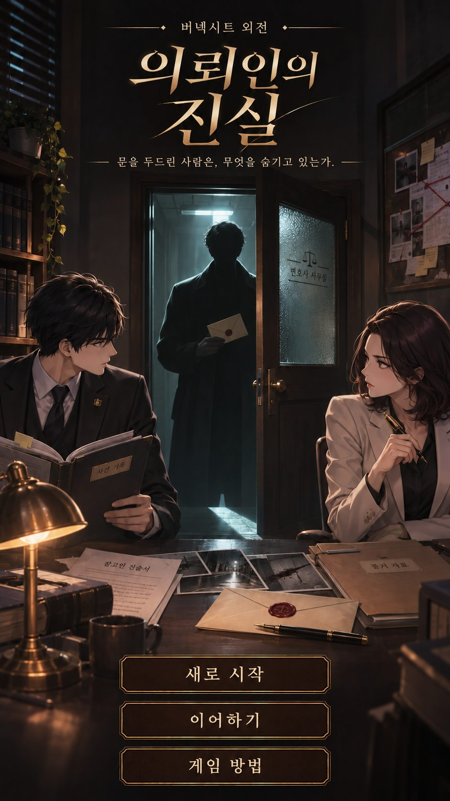

<!doctype html>
<html lang="ko">
<head>
<meta charset="utf-8">
<title>벼넥시트 외전 : 의뢰인의 진실</title>
<meta name="theme-color" content="#140d09">
<meta name="apple-mobile-web-app-capable" content="yes">
<meta name="apple-mobile-web-app-status-bar-style" content="black-translucent">
<meta name="apple-mobile-web-app-title" content="의뢰인의 진실">
<link rel="manifest" href="manifest.webmanifest">
<link rel="icon" href="icon-192.png">
<link rel="apple-touch-icon" href="apple-touch-icon.png">
<style>
:root { padding-top: env(safe-area-inset-top, 0px); padding-bottom: env(safe-area-inset-bottom, 0px); }
body { margin: 0; font: 14px system-ui, sans-serif; }
img { max-width: 100%; }
[hidden] { display: none !important; }
</style>
</head>
<body>

<meta name="viewport" content="width=device-width, initial-scale=1, viewport-fit=cover">
<meta name="claude:viewport-fit-sides" content="cover">
<link rel="preconnect" href="https://fonts.googleapis.com">
<link rel="preconnect" href="https://fonts.gstatic.com" crossorigin>
<link rel="stylesheet" href="https://fonts.googleapis.com/css2?family=Black+Han+Sans&family=IBM+Plex+Sans+KR:wght@400;600&family=Nanum+Myeongjo:wght@400;700&display=swap">
<style>
/* 한 단 세로 배치: 위 장부띠(HUD) + 아래 장면. 호두나무 사무실 + 놋쇠 + 서류 종이 */
:root {
  --wood: #241912;
  --wood-2: #33241b;
  --wood-3: #47332577;
  --line: #5a4434;
  --brass: #c9a24a;
  --brass-dim: #8f7536;
  --paper: #e8e2d4;
  --paper-2: #d9d1bf;
  --ink: #221d18;
  --ink-soft: #5b5146;
  --text: #f0e7da;
  --muted: #b3a38d;
  --win: #79b585;
  --lose: #d8695a;
  --warn: #e3b448;
  --f-display: "Black Han Sans", "Apple SD Gothic Neo", "Malgun Gothic", sans-serif;
  --f-body: "IBM Plex Sans KR", "Apple SD Gothic Neo", "Malgun Gothic", sans-serif;
  --f-doc: "Nanum Myeongjo", "AppleMyungjo", "Batang", serif;
  color-scheme: dark;
}
*, *::before, *::after { box-sizing: border-box; }
html, body { min-height: 100%; }
/* 카카오톡 등 내장 브라우저에서 옆으로 밀리지 않게 */
html { overflow-x: hidden; }
body { max-width: 100%; word-break: keep-all; overflow-wrap: anywhere; }
body {
  background: var(--wood);
  background-image: repeating-linear-gradient(92deg, #ffffff05 0 2px, transparent 2px 9px), radial-gradient(circle at 50% 0, #4a342566, transparent 70%);
  color: var(--text);
  font-family: var(--f-body);
  font-size: 15px;
  line-height: 1.6;
  -webkit-tap-highlight-color: transparent;
}
body::before { content: ""; position: fixed; inset: 0 0 auto; height: env(safe-area-inset-top, 0px); z-index: 10; background: var(--wood-2); }
button { font: inherit; color: inherit; cursor: pointer; }
button:focus-visible, label:focus-within { outline: 2px solid var(--brass); outline-offset: 2px; }
.wrap { max-width: 560px; margin: 0 auto; padding-left: max(16px, env(safe-area-inset-left, 0px)); padding-right: max(16px, env(safe-area-inset-right, 0px)); }

/* HUD */
.hud { position: sticky; top: env(safe-area-inset-top, 0px); z-index: 5; background: var(--wood-2); border-bottom: 1px solid var(--line); }
.hud .wrap { padding-block: 8px; display: grid; grid-template-columns: 1fr auto; gap: 2px 12px; align-items: center; }
.hud .rank { font-family: var(--f-display); color: var(--brass); font-size: 17px; letter-spacing: .02em; }
.hud .day { font-size: 12px; color: var(--muted); text-align: right; }
.hud .stats { grid-column: 1 / -1; display: flex; gap: 14px; font-size: 12.5px; color: var(--muted); font-variant-numeric: tabular-nums; flex-wrap: wrap; align-items: center; }
.hud .stats b { color: var(--text); font-weight: 600; }
.repbar { flex: 1 1 90px; min-width: 80px; height: 6px; background: #00000055; border-radius: 3px; overflow: hidden; }
.repbar i { display: block; height: 100%; background: linear-gradient(90deg, var(--brass-dim), var(--brass)); transition: width .6s; }

main { padding-block: 18px 120px; display: flex; flex-direction: column; gap: 18px; }
h1, h2 { font-family: var(--f-display); font-weight: 400; margin: 0; text-wrap: balance; }
h2 { font-size: 22px; color: var(--brass); }
.eyebrow { font-size: 11.5px; letter-spacing: .14em; color: var(--muted); }
p { margin: 0; }

/* 버튼 */
.btn { display: block; width: 100%; padding: 14px 16px; border-radius: 10px; border: 1px solid var(--brass-dim); background: var(--wood-2); text-align: left; font-size: 15px; transition: background .15s, border-color .15s; }
.btn:hover:not(:disabled) { border-color: var(--brass); background: #3d2c21; }
.btn:disabled { opacity: .38; cursor: default; }
.btn.primary { background: var(--brass); color: var(--ink); border-color: var(--brass); font-weight: 600; text-align: center; }
.btn.primary:hover:not(:disabled) { background: #d8b35c; }
.btn.ghost { background: transparent; text-align: center; }
.btn small { display: block; color: var(--muted); font-size: 12.5px; }
.btn.primary small { color: #3b3020; }
.stack { display: flex; flex-direction: column; gap: 8px; }
.row2 { display: grid; grid-template-columns: 1fr 1fr; gap: 8px; }
.dock { position: fixed; left: 0; right: 0; bottom: 0; z-index: 6; background: linear-gradient(transparent, var(--wood) 30%); padding-bottom: env(safe-area-inset-bottom, 0px); }
.dock .wrap { padding-block: 22px 14px; }

/* 의뢰인 카드 */
.client { display: grid; grid-template-columns: 96px 1fr; gap: 14px; align-items: center; }
.portrait { width: 96px; height: 112px; border-radius: 8px; border: 3px solid var(--brass-dim); background: #1a120d; overflow: hidden; }
.portrait svg, .portrait img { display: block; width: 100%; height: 100%; object-fit: cover; object-position: 50% 15%; }
.scene { position: relative; border-radius: 10px; overflow: hidden; border: 3px solid var(--brass-dim); aspect-ratio: 5 / 4; max-height: 48vh; width: 100%; max-width: 100%; background: #1a120d; }
.scene .portrait { width: 100%; height: 100%; border: none; border-radius: 0; }
.scene .plate { position: absolute; left: 0; right: 0; bottom: 0; padding: 36px 14px 10px; background: linear-gradient(transparent, #120c08ee); }
.scene .name { font-family: var(--f-display); font-size: 26px; line-height: 1.2; }
.scene .meta { color: #d8cbb8; font-size: 13.5px; }
.scene .chips { position: absolute; top: 8px; left: 8px; margin: 0; }
.scene .chip { background: #120c08cc; }
/* 수임료 제시 */
.feebox { background: var(--wood-2); border: 1px solid var(--line); border-radius: 10px; padding: 14px; display: flex; flex-direction: column; gap: 12px; }
.feerow { display: grid; grid-template-columns: 64px 44px 1fr 44px; gap: 8px; align-items: center; }
.feerow .lbl { font-size: 13.5px; color: var(--muted); }
.feerow button { height: 44px; border-radius: 8px; border: 1px solid var(--brass-dim); background: transparent; font-size: 20px; color: var(--brass); }
.feerow .amt { display: flex; align-items: center; gap: 4px; min-width: 0; }
.feerow input { width: 100%; min-width: 0; height: 44px; border-radius: 8px; border: 1px solid var(--line); background: #1c140f; color: var(--text); font: 600 17px var(--f-body); text-align: right; padding: 0 8px; font-variant-numeric: tabular-nums; }
.feerow .unit { font-size: 13px; color: var(--muted); white-space: nowrap; }
.market { font-size: 13px; color: var(--muted); font-variant-numeric: tabular-nums; }
.market b { color: var(--text); }
.hud .wr { font-family: var(--f-display); font-size: 20px; color: var(--text); line-height: 1; }
.hud .wr small { font-family: var(--f-body); font-size: 11px; color: var(--muted); margin-right: 4px; }
.client .name { font-family: var(--f-display); font-size: 24px; line-height: 1.2; }
.client .meta { color: var(--muted); font-size: 13.5px; }
.chips { display: flex; gap: 6px; flex-wrap: wrap; margin-top: 6px; }
.chip { font-size: 12px; padding: 2px 8px; border-radius: 99px; border: 1px solid var(--line); color: var(--muted); }
.chip.crim { border-color: #a65a4c; color: #e6a497; }
.chip.civ { border-color: #5d7d8c; color: #a8c6d3; }
.offer { display: flex; gap: 16px; font-size: 13.5px; color: var(--muted); font-variant-numeric: tabular-nums; border-top: 1px dashed var(--line); padding-top: 10px; flex-wrap: wrap; }
.offer b { color: var(--text); }

/* 대화 */
.talk { display: flex; flex-direction: column; gap: 10px; }
.bubble { background: var(--paper); color: var(--ink); padding: 11px 14px; border-radius: 4px 14px 14px 14px; max-width: 92%; font-size: 15px; animation: pop .25s ease-out; }
.bubble.me { align-self: flex-end; background: transparent; color: var(--brass); border: 1px solid var(--brass-dim); border-radius: 14px 4px 14px 14px; font-size: 14px; }
.bubble.sys { align-self: center; background: transparent; color: var(--muted); border: none; font-size: 13px; text-align: center; padding: 2px; }
@keyframes pop { from { transform: translateY(6px); opacity: .3; } }
.section-head { display: flex; justify-content: space-between; align-items: baseline; gap: 8px; }
.section-head .eyebrow b { color: var(--brass); }

/* 증거 카드 */
.evlist { display: flex; flex-direction: column; gap: 8px; }
.ev { background: var(--paper); color: var(--ink); border-radius: 3px; padding: 11px 14px 11px 14px; font-family: var(--f-body); position: relative; box-shadow: 0 2px 0 #00000040; text-align: left; border: none; width: 100%; }
.ev .ev-name { font-weight: 600; font-size: 16.5px; }
.ev .ev-desc { font-size: 15px; color: #3f362d; }
.ev .ev-detail { font-size: 15px; line-height: 1.6; margin-top: 8px; padding-top: 8px; border-top: 1px dashed #b7ac95; }
.ev .ev-hint { position: absolute; right: 10px; top: 10px; font-family: var(--f-body); font-size: 11.5px; color: var(--ink-soft); }
.ev.card-k { background: #d7e3d3; }
.ev.danger { box-shadow: inset 4px 0 0 var(--lose), 0 2px 0 #00000040; }
.tag-danger { font-family: var(--f-body); font-size: 11px; color: #fff; background: var(--lose); padding: 1px 6px; border-radius: 3px; margin-left: 6px; vertical-align: 2px; }
.pick { display: grid; grid-template-columns: 26px 1fr; gap: 10px; align-items: start; cursor: pointer; }
.pick input { width: 20px; height: 20px; margin: 2px 0 0; accent-color: var(--ink); }
.ev.off { opacity: .55; }

/* 법정 */
.court-head { background: var(--paper); color: var(--ink); font-family: var(--f-doc); padding: 14px 16px; border-radius: 3px; text-align: center; }
.court-head .no { font-size: 13px; color: var(--ink-soft); }
.court-head .tt { font-weight: 700; font-size: 17px; }
.arg { background: var(--wood-2); border: 1px solid var(--line); border-radius: 10px; padding: 12px 14px; }
.arg:has(input:checked) { border-color: var(--brass); background: #3d2c21; }
.arg input { accent-color: var(--brass); }
.gauge { position: relative; height: 34px; border-radius: 6px; overflow: hidden; background: linear-gradient(90deg, #6e2f27 0 var(--t1), #6a5426 var(--t1) var(--t2), #2f5a3a var(--t2)); border: 1px solid var(--line); }
.gauge .needle { position: absolute; top: -2px; bottom: -2px; width: 4px; margin-left: -2px; background: var(--paper); box-shadow: 0 0 8px #000; transition: left .5s cubic-bezier(.3,1.4,.6,1); }
.gauge-labels { display: flex; justify-content: space-between; font-size: 11.5px; color: var(--muted); margin-top: 4px; }
.log { display: flex; flex-direction: column; gap: 8px; }
.log-line { display: grid; grid-template-columns: 1fr auto; gap: 10px; align-items: start; padding: 9px 12px; border-radius: 8px; background: var(--wood-2); font-size: 14px; animation: pop .25s ease-out; }
.log-line .who { font-size: 11.5px; color: var(--muted); display: block; }
.log-line .d { font-variant-numeric: tabular-nums; font-weight: 600; font-size: 13px; white-space: nowrap; }
.log-line.opp { border-left: 3px solid var(--lose); }
.log-line.ours { border-left: 3px solid var(--win); }
.log-line.null { border-left: 3px solid var(--muted); }
.pos { color: var(--win); } .neg { color: var(--lose); } .zero { color: var(--muted); }
.stamp { align-self: center; font-family: var(--f-display); font-size: 46px; padding: 2px 22px; border: 5px solid currentColor; border-radius: 10px; transform: rotate(-6deg); animation: stamp .35s cubic-bezier(.2,1.6,.5,1); letter-spacing: .06em; }
.stamp.win { color: var(--win); } .stamp.partial { color: var(--warn); } .stamp.lose { color: var(--lose); }
@keyframes stamp { from { transform: rotate(-6deg) scale(2.2); opacity: 0; } }
.judgment { background: var(--paper); color: var(--ink); font-family: var(--f-doc); padding: 14px 16px; border-radius: 3px; font-size: 15px; }
.judgment .lbl { font-family: var(--f-body); font-size: 11.5px; letter-spacing: .12em; color: var(--ink-soft); }
.truth { border: 1px solid var(--line); border-radius: 10px; padding: 12px 14px; font-size: 14px; color: var(--muted); }
.truth b { color: var(--text); }
.ledger { display: grid; grid-template-columns: 1fr auto; gap: 6px 14px; font-variant-numeric: tabular-nums; font-size: 14.5px; background: var(--wood-2); border-radius: 10px; padding: 14px 16px; }
.ledger .r { text-align: right; font-weight: 600; }
.ledger .sum { border-top: 1px solid var(--line); padding-top: 8px; }

/* 표지 */
.cover { min-height: 70vh; display: flex; flex-direction: column; justify-content: center; gap: 26px; }
.cover h1 { font-size: clamp(44px, 13vw, 72px); line-height: 1.05; color: var(--text); }
.cover h1 em { font-style: normal; color: var(--brass); }
.cover .lede { color: var(--muted); max-width: 30em; }
.scale-art { width: 120px; height: 90px; }
.visitors { display: flex; flex-direction: column; gap: 8px; }
.visitor { display: grid; grid-template-columns: 48px 1fr auto; gap: 12px; align-items: center; background: var(--wood-2); border-radius: 10px; padding: 8px 12px; }
.visitor .portrait { width: 48px; height: 56px; border-width: 2px; }
.visitor .vn { font-weight: 600; }
.visitor .vm { font-size: 12.5px; color: var(--muted); }
.visitor .st { font-size: 12px; color: var(--muted); }
.note { font-size: 13px; color: var(--muted); }
.confirm-box { border: 1px solid var(--lose); border-radius: 10px; padding: 12px; display: flex; flex-direction: column; gap: 8px; }

/* ---- 장면 배경·예전 게임 그림 자원 ---- */
#backdrop { position: fixed; inset: 0; z-index: -1; background: var(--wood) center / cover no-repeat; }
#backdrop::after { content: ""; position: absolute; inset: 0; background: linear-gradient(180deg, #140d09cc 0%, #140d09a6 30%, #140d09ee 70%, #140d09fa 100%); }
html[data-scene="office"] #backdrop { background-image: url("assets/bg-office.webp"); }
html[data-scene="court"] #backdrop { background-image: url("assets/bg-court.webp"); }
.hud { background: #1b120dd9; -webkit-backdrop-filter: blur(10px); backdrop-filter: blur(10px); border-bottom: 1px solid #c9a24a40; }
.dock { background: linear-gradient(transparent, #140d09f0 35%); }
.snd { border: 1px solid #c9a24a66; background: transparent; color: var(--brass); border-radius: 99px; font-size: 11.5px; padding: 1px 9px; margin-left: auto; }

.btn { border-style: solid; border-color: transparent; border-width: 9px 14px 9px 16px; border-image: url("assets/frame-choice.png") 32 42 32 46 fill / 9px 14px 9px 16px stretch; border-radius: 0; background: none; padding: 9px 10px; color: #f3e6cf; text-shadow: 0 1px 2px #000a; transition: filter .15s, transform .1s; }
.btn:hover:not(:disabled) { background: none; filter: brightness(1.18); }
.btn:active:not(:disabled) { transform: translateY(1px); }
.btn small { color: #c9b89c; }
.btn.primary { border: 1px solid #f1d98f; border-image: none; border-radius: 6px; background: linear-gradient(#e4c46e, #b38a34); color: #2a1c0c; text-shadow: none; padding: 14px 16px; box-shadow: inset 0 0 0 2px #7a5a1f40, 0 6px 18px #000a; }
.btn.primary:hover:not(:disabled) { background: linear-gradient(#ecd081, #bf963d); filter: none; }
.btn.ghost { border: 1px solid #c9a24a80; border-image: none; border-radius: 6px; background: #140d0999; padding: 13px 16px; }

.scene { border: 16px solid transparent; border-image: url("assets/frame-modal.webp") 100 / 16px stretch; border-radius: 0; background: #1a120d; box-shadow: 0 14px 36px #000c; aspect-ratio: auto; width: min(100%, 260px); height: min(calc(100vw - 32px), 260px); max-height: none; margin-inline: auto; }
.scene .chips { top: 6px; left: 6px; }
.visitor .portrait, .portrait { border-color: #c9a24a99; }

.feebox, .ledger, .arg, .log-line, .visitor, .truth { background: #1f150fd1; -webkit-backdrop-filter: blur(6px); backdrop-filter: blur(6px); border: 1px solid #c9a24a33; }
.arg:has(input:checked) { background: #3a2a1ee6; border-color: var(--brass); }
.bubble { background: linear-gradient(#f1eadb, #e3d9c4); box-shadow: 0 4px 14px #0007; }
.bubble.me { background: #140d09b3; }
.bubble.sys { background: none; box-shadow: none; color: #cdbda4; }

/* 법정 */
.bench { display: grid; grid-template-columns: 72px 1fr; gap: 12px; align-items: center; background: #f1eadbf0; color: var(--ink); padding: 10px 14px 10px 10px; border-radius: 4px; box-shadow: 0 6px 18px #0009; }
.ava { border-radius: 50%; overflow: hidden; border: 2px solid var(--brass); background: #1a120d; }
.ava img { display: block; width: 100%; height: 100%; object-fit: cover; object-position: 50% 18%; }
.bench .ava { width: 72px; height: 72px; }
.bench .no { font-family: var(--f-doc); font-size: 13px; color: var(--ink-soft); }
.bench .tt { font-family: var(--f-doc); font-weight: 700; font-size: 17px; }
.bench .who { font-size: 12px; color: var(--ink-soft); }
.log-line.has-ava { grid-template-columns: 36px 1fr auto; }
.log-line .ava { width: 36px; height: 36px; border-width: 1.5px; }
.stamp { color: #c8322b; border-style: double; border-width: 7px; background: #f1eadb22; text-shadow: none; }
.stamp.win, .stamp.partial, .stamp.lose { color: #c8322b; }
.stamp-img { align-self: center; width: min(200px, 56vw); animation: stamp .35s cubic-bezier(.2,1.6,.5,1); filter: drop-shadow(0 4px 10px #000a); }
.cover h1 { text-shadow: 0 4px 24px #000; }
.title { position: fixed; inset: 0; z-index: 12; background: #0b0806; display: flex; align-items: center; justify-content: center; }
.title-box { position: relative; height: 100%; aspect-ratio: 941 / 1672; max-width: 100%; max-height: 100%; }
@supports (height: 100dvh) { .title-box { max-height: 100dvh; } }
.title-box > img { display: block; width: 100%; height: 100%; object-fit: cover; }
.hot { position: absolute; left: 26.6%; width: 46.8%; height: 4.7%; background: transparent; border: none; border-radius: 6px; cursor: pointer; }
.hot:hover, .hot:focus-visible { background: #c9a24a26; box-shadow: 0 0 0 2px #c9a24a99; outline: none; }
.hot:active { background: #c9a24a40; }
.title-snd { position: absolute; top: calc(10px + env(safe-area-inset-top, 0px)); right: 10px; }
.title-snd .snd { background: #0b0806aa; }
.title-save { position: absolute; left: 0; right: 0; top: 92.2%; text-align: center; font-size: 10.5px; color: #cdb98f; text-shadow: 0 1px 3px #000; pointer-events: none; }
.title-pop { position: absolute; left: 8%; right: 8%; top: 62%; background: #1f150ff2; border: 1px solid var(--brass); border-radius: 10px; padding: 14px; display: flex; flex-direction: column; gap: 10px; text-align: center; box-shadow: 0 10px 30px #000; }
.cover-sub { font-family: var(--f-display); font-size: 20px; color: var(--brass); letter-spacing: .08em; margin-bottom: -14px; text-shadow: 0 2px 10px #000; }
.op { min-height: 62vh; display: flex; flex-direction: column; justify-content: center; gap: 12px; padding: 22px 20px; background: #1f150fd9; -webkit-backdrop-filter: blur(8px); backdrop-filter: blur(8px); border: 1px solid #c9a24a40; border-radius: 6px; box-shadow: 0 14px 36px #000b; animation: pop .3s ease-out; }
.op h2 { font-size: 24px; }
.op p { color: #e6dac6; font-size: 15.5px; max-width: 30em; }
.op-dots { display: flex; gap: 6px; }
.op-dots i { width: 22px; height: 4px; border-radius: 2px; background: #c9a24a40; }
.op-dots i.on { background: var(--brass); }
.op-art { min-height: 120px; display: flex; align-items: center; padding-block: 6px; }
.op-face { width: 120px; height: 120px; border-radius: 50%; overflow: hidden; border: 3px solid var(--brass); box-shadow: 0 6px 18px #000a; }
.op-face img { width: 100%; height: 100%; object-fit: cover; object-position: 50% 18%; display: block; }
.op-chips { display: flex; gap: 8px; flex-wrap: wrap; }
.op-chips span { font-family: var(--f-display); font-size: 22px; padding: 6px 16px; border: 1px solid var(--brass); border-radius: 6px; color: var(--brass); }
.op-chips span:nth-child(3) { color: #e88b7c; border-color: #e88b7c; }
.op-fee { display: flex; flex-direction: column; gap: 4px; padding: 12px 16px; border: 1px solid #c9a24a66; border-radius: 6px; font-variant-numeric: tabular-nums; color: var(--muted); }
.heroes { display: grid; grid-template-columns: 1fr 1fr; gap: 10px; }
.hero { display: flex; flex-direction: column; gap: 6px; align-items: center; padding: 8px; border-radius: 8px; border: 2px solid #c9a24a40; background: #1f150fd1; color: var(--muted); }
.hero img { width: 100%; aspect-ratio: 1; object-fit: cover; object-position: 50% 15%; border-radius: 4px; background: #ddd; }
.hero.on { border-color: var(--brass); color: var(--text); box-shadow: 0 0 0 3px #c9a24a33; }
.field { display: flex; flex-direction: column; gap: 6px; }
.field .lbl { font-size: 13px; color: var(--muted); }
.field input { height: 46px; border-radius: 8px; border: 1px solid var(--line); background: #1c140f; color: var(--text); font: 600 17px var(--f-body); padding: 0 12px; width: 100%; }
.op-hero { display: flex; gap: 14px; align-items: center; }
.op-hero .op-face { width: 96px; height: 96px; flex: none; background: #ddd; }
.op-name { font-family: var(--f-display); font-size: 22px; color: var(--brass); }
.op-line { font-family: var(--f-doc); font-size: 16.5px; line-height: 1.75; color: #efe5d3; }
#verdict { overflow: hidden; padding-block: 10px; }
.mono { display: grid; grid-template-columns: 56px 1fr; gap: 12px; align-items: start; background: #1f150fd1; -webkit-backdrop-filter: blur(6px); backdrop-filter: blur(6px); border: 1px solid #c9a24a55; border-radius: 10px; padding: 12px 14px; }
.mono .ava { width: 56px; height: 56px; background: #ddd; }
.mono .who { font-size: 12px; color: var(--brass); margin-bottom: 4px; }
.mono .who span { color: var(--muted); }
.mono p { font-family: var(--f-doc); font-size: 15.5px; line-height: 1.7; color: #efe5d3; }
.pn { background: #1f150fd1; -webkit-backdrop-filter: blur(6px); backdrop-filter: blur(6px); border: 1px solid #c9a24a33; border-radius: 10px; padding: 12px 14px; display: flex; flex-direction: column; gap: 4px; }
.pn.on { border-color: var(--brass); }
.pn.warn { border-color: var(--lose); color: #f2b3a8; }
.pn.dim { opacity: .55; }
.pn-top { display: flex; justify-content: space-between; align-items: center; gap: 8px; }
.pn-name { font-family: var(--f-display); font-size: 19px; }
.pn .btn { margin-top: 6px; }
.need { color: #e3b448; }
.pill { font-size: 11.5px; padding: 1px 8px; border-radius: 99px; }
.pill.ok { background: #2f5a3a; color: #d3ecd8; }
.mini { border: 1px solid #c9a24a80; background: transparent; color: var(--muted); border-radius: 6px; padding: 4px 10px; font-size: 13px; }
.mini.gold { background: var(--brass); color: #2a1c0c; border-color: var(--brass); }
.sec { display: grid; grid-template-columns: auto 1fr; gap: 8px; align-items: start; background: #3a2a1e; border-radius: 8px; padding: 9px 11px; font-size: 14px; }
.sec-ico { font-style: normal; font-size: 11px; color: #2a1c0c; background: var(--brass); border-radius: 4px; padding: 1px 6px; }
.tag-inv { font-family: var(--f-body); font-size: 11px; padding: 1px 6px; border-radius: 3px; margin-left: 6px; vertical-align: 2px; border: 1px solid #8f7536; color: #5b4a20; }
.tag-inv.ask { cursor: pointer; background: #f6e7bf; }
.tag-inv.good { background: #2f5a3a; color: #fff; border-color: #2f5a3a; }
.tag-inv.bad { background: var(--lose); color: #fff; border-color: var(--lose); }
#backdrop { transition: none; }
html[data-scene^="end"] #backdrop::after { background: linear-gradient(180deg, #140d0966 0%, #140d0933 40%, #140d09d9 80%, #140d09f5 100%); }
#app.enter { animation: fadein .28s ease-out; }
@keyframes fadein { from { opacity: 0; transform: translateY(6px); } }
.hud .wrap { cursor: pointer; }
.hud .stats.more { color: #cdbda4; }
.hud-more { grid-column: 1 / -1; text-align: center; font-size: 10.5px; color: #8f7f69; line-height: 1; margin-top: 2px; }
.scene.confess .portrait img { filter: brightness(.7) saturate(.8); transition: filter .8s; }
.scene.confess::after { content: ""; position: absolute; inset: 0; box-shadow: inset 0 0 60px #7a1f15aa; pointer-events: none; animation: fadein .8s; }
.scene.leave { animation: leave 1.4s ease-in forwards; }
@keyframes leave { 0%,30% { transform: translateX(0); } 8% { transform: translateX(-8px); } 16% { transform: translateX(8px); } 24% { transform: translateX(-5px); } 100% { transform: translateX(40px); opacity: .15; filter: grayscale(1); } }
.ev-ico { width: 17px; height: 17px; vertical-align: -3px; margin-right: 6px; fill: none; stroke: #6b5a44; stroke-width: 1.8; stroke-linecap: round; stroke-linejoin: round; }
.me-row { display: flex; justify-content: flex-end; align-items: flex-end; gap: 6px; }
.me-row .bubble.me { max-width: 80%; }
.me-ava { width: 30px; height: 30px; flex: none; background: #ddd; }
.scale-box { display: flex; flex-direction: column; align-items: center; gap: 2px; }
.scale { width: min(260px, 70vw); height: auto; }
#beam { transition: transform .6s cubic-bezier(.3,1.5,.6,1); }
.scale-now { font-size: 13px; color: var(--muted); }
.scale-now.win { color: var(--win); } .scale-now.lose { color: var(--lose); } .scale-now.partial { color: var(--warn); }
.log-wrap { position: relative; }
.slam { position: absolute; left: 50%; top: 40%; transform: translate(-50%, -50%) rotate(-8deg) scale(.5); font-family: var(--f-display); font-size: 44px; opacity: 0; pointer-events: none; text-shadow: 0 4px 14px #000; white-space: nowrap; }
.slam.show { animation: slam .7s ease-out; }
.slam.bad { color: #ff7a66; } .slam.good { color: #8fdc9f; }
@keyframes slam { 0% { opacity: 0; transform: translate(-50%, -50%) rotate(-8deg) scale(2); } 20% { opacity: 1; transform: translate(-50%, -50%) rotate(-8deg) scale(1); } 80% { opacity: 1; } 100% { opacity: 0; } }
.closeup, .flip { position: fixed; inset: 0; z-index: 20; display: flex; flex-direction: column; align-items: center; justify-content: center; gap: 14px; background: #0d0806e6; animation: fadein .25s; }
.closeup.out, .flip.out { opacity: 0; transition: opacity .3s; }
.closeup-face { width: min(220px, 60vw); aspect-ratio: 1; border-radius: 50%; overflow: hidden; border: 4px solid var(--brass); animation: zoom 1.5s ease-out; }
.closeup-face img { width: 100%; height: 100%; object-fit: cover; object-position: 50% 18%; }
.closeup-txt { font-family: var(--f-doc); font-size: 20px; color: var(--paper); letter-spacing: .1em; }
@keyframes zoom { from { transform: scale(.8); } to { transform: scale(1.05); } }
.flip-card { background: var(--paper); color: var(--ink); width: 170px; padding: 18px 0 14px; text-align: center; border-radius: 6px; box-shadow: 0 10px 30px #000; animation: flip .5s ease-out; transform-origin: top; }
.flip-y { font-size: 13px; color: var(--ink-soft); }
.flip-m { font-family: var(--f-display); font-size: 52px; line-height: 1.1; color: #8a2a1f; }
.flip-f { font-size: 12px; color: var(--ink-soft); }
@keyframes flip { from { transform: rotateX(-90deg); opacity: 0; } to { transform: rotateX(0); opacity: 1; } }
.v-act { display: flex; flex-direction: column; gap: 4px; }
.visitor.dim { opacity: .6; }
.gal-grid { display: grid; grid-template-columns: repeat(auto-fill, minmax(64px, 1fr)); gap: 6px; }
.gal-sec { display: flex; flex-direction: column; gap: 6px; }
.gal-t { position: relative; aspect-ratio: 3 / 4; border-radius: 8px; overflow: hidden; border: 1px solid #c9a24a55; background: #2a1d14; padding: 0; cursor: pointer; }
.gal-t img { width: 100%; height: 100%; object-fit: cover; object-position: 50% 12%; }
.gal-t span { position: absolute; left: 0; right: 0; bottom: 0; padding: 2px 3px; font-size: 10px; line-height: 1.3; color: #f1e6cf; background: #000c; white-space: nowrap; overflow: hidden; text-overflow: ellipsis; }
.gal-t.lock { display: grid; place-items: center; cursor: default; color: #6b5640; font-size: 20px; background: #140d09cc; border-color: #c9a24a22; }
.gal-t.on { outline: 2px solid var(--brass); }
.gal-open .gal-head { display: grid; grid-template-columns: 56px 1fr; gap: 10px; align-items: center; padding: 10px 12px 0; }
.gal-open .gal-head .portrait { width: 56px; height: 56px; }
.howto { display: flex; flex-direction: column; gap: 6px; }
.howto .note { font-size: 14px; line-height: 1.6; color: var(--text); margin: 0; }
.file { background: #1f150fd1; border: 1px solid #c9a24a33; border-radius: 10px; }
.file summary { display: grid; grid-template-columns: 44px 1fr; gap: 10px; align-items: center; padding: 8px 12px; cursor: pointer; list-style: none; }
.file summary::-webkit-details-marker { display: none; }
.file .portrait { width: 44px; height: 52px; border-width: 2px; }
.file .vn { font-weight: 600; }
.file .vm { font-size: 12.5px; color: var(--muted); }
.file-body { padding: 0 12px 12px; display: flex; flex-direction: column; gap: 8px; }
.op-fee b { color: var(--text); font-size: 18px; margin-left: 6px; }

@media (prefers-reduced-motion: reduce) { *, *::before { animation: none !important; transition: none !important; } }
/* ===== 폰 게임 화면판(v2): 세로 한 화면 고정 · 비주얼노벨 대화창 · 증거 서랍 · 아래 탭 ===== */
html, body { height: 100%; overflow: hidden; }
.hud { position: fixed; left: 0; right: 0; top: 0; z-index: 9; background: transparent; border: none; -webkit-backdrop-filter: none; backdrop-filter: none; padding-top: env(safe-area-inset-top, 0px); }
.hud .pills { max-width: 480px; margin: 0 auto; display: flex; gap: 6px; padding: 10px 12px 2px; }
.hud .pill { display: flex; align-items: center; gap: 5px; background: #000b; border: 1px solid #c9a24a66; border-radius: 99px; padding: 3px 10px 3px 4px; font-size: 12.5px; font-variant-numeric: tabular-nums; color: var(--text); }
.hud .pill i { width: 19px; height: 19px; border-radius: 50%; display: grid; place-items: center; font-style: normal; font-size: 11px; color: #2a1c0c; background: var(--brass); }
.hud .pill.r { margin-left: auto; padding: 3px 10px; }
.hud .rk { max-width: 480px; margin: 0 auto; padding: 0 14px; font-size: 11.5px; color: #d9c9ad; text-shadow: 0 1px 3px #000; }

#app { position: fixed; left: 0; right: 0; margin: 0 auto; max-width: 480px; top: calc(58px + env(safe-area-inset-top, 0px)); bottom: 62px; overflow-y: auto; overflow-x: hidden; padding: 10px 16px 16px; display: flex; flex-direction: column; gap: 14px; }
#app.vn { top: 0; padding: 0; overflow: hidden; display: block; }
.dock { left: 0; right: 0; margin: 0 auto; max-width: 480px; bottom: calc(62px + env(safe-area-inset-bottom, 0px)); padding-bottom: 0; background: linear-gradient(transparent, #0d0806f0 40%); }
.dock .wrap { padding-block: 14px 8px; }

/* 아래 탭 */
#tabs { position: fixed; left: 0; right: 0; bottom: 0; margin: 0 auto; max-width: 480px; z-index: 8; display: grid; grid-template-columns: repeat(4, 1fr); height: calc(62px + env(safe-area-inset-bottom, 0px)); padding-bottom: env(safe-area-inset-bottom, 0px); background: #0d0806f5; border-top: 1px solid #c9a24a44; }
#tabs .tab { display: flex; flex-direction: column; align-items: center; justify-content: center; gap: 3px; font-size: 11px; color: var(--muted); background: none; border: none; }
#tabs .tab svg { width: 22px; height: 22px; stroke: currentColor; fill: none; stroke-width: 1.8; stroke-linecap: round; stroke-linejoin: round; }
#tabs .tab.on { color: var(--brass); }
#tabs .tab.off { opacity: .3; }

/* 상담·판단·수임료: 의뢰인이 배경 위에 서고, 아래 대화창 */
.vn .scene { position: absolute; top: calc(78px + env(safe-area-inset-top, 0px)); left: 50%; transform: translateX(-50%); width: min(76%, 340px); height: auto; aspect-ratio: 1; max-height: 40%; border: none; border-image: none; background: none; box-shadow: none; overflow: visible; }
.vn .scene .portrait { width: 100%; height: 100%; border: none; background: none; -webkit-mask-image: radial-gradient(ellipse 62% 70% at 50% 42%, #000 60%, transparent 76%); mask-image: radial-gradient(ellipse 62% 70% at 50% 42%, #000 60%, transparent 76%); }
.vn .scene .chips { top: auto; bottom: 13%; left: 50%; transform: translateX(-50%); white-space: nowrap; }
.vn .scene .plate { left: 50%; right: auto; bottom: 2%; transform: translateX(-50%); padding: 3px 14px; border-radius: 8px; background: var(--brass); color: #2a1c0c; text-align: center; white-space: nowrap; }
.vn .scene .plate .name { font-size: 17px; display: inline; }
.vn .scene .plate .meta { color: #3b2a14; font-size: 12px; display: inline; margin-left: 6px; }
.vn-bottom { position: absolute; left: 10px; right: 10px; bottom: 8px; max-height: 46%; overflow-y: auto; display: flex; flex-direction: column; gap: 8px; padding-top: 6px; }
.show-log .vn-bottom { max-height: 82%; background: #0d0806e6; border-radius: 12px; padding: 8px; }
.vn .bubble { max-width: 100%; background: #140d09f0; color: var(--text); border: 1.5px solid var(--brass); border-radius: 12px; font-family: var(--f-doc); font-size: 15px; line-height: 1.65; box-shadow: 0 6px 18px #000a; }
.vn .bubble.me { background: #0d0806e6; color: #e9cf8a; border-color: #8f7536; font-family: var(--f-body); font-size: 13.5px; }
.vn .bubble.sys { border: none; background: #000a; color: #d6c6aa; font-size: 12.5px; box-shadow: none; }
.vn .me-row { justify-content: flex-start; flex-direction: row-reverse; }
.vn:not(.show-log) .talk > :not(:nth-last-child(-n+2)) { display: none; }
.vn .section-head .eyebrow { color: #d6c6aa; text-shadow: 0 1px 3px #000; }
.vn .vn-bottom > div > .eyebrow, .vn .vn-bottom h2 { text-shadow: 0 2px 6px #000; }

/* 증거 서랍 */
.ev-drawer { position: absolute; left: 0; right: 0; bottom: 0; height: 70%; z-index: 6; background: #f1e9d8; border-radius: 18px 18px 0 0; padding: 10px 14px 16px; overflow-y: auto; transform: translateY(105%); visibility: hidden; box-shadow: 0 -10px 30px #000a; }
#app.anim .ev-drawer { transition: transform .28s ease, visibility .28s; }
.show-ev .ev-drawer { transform: none; visibility: visible; }
.ev-drawer::before { content: ""; display: block; width: 40px; height: 4px; border-radius: 2px; background: #b9ab90; margin: 0 auto 8px; }
.ev-drawer .section-head .eyebrow { color: #6b4a1e; font-size: 13px; letter-spacing: .04em; }
.ev-drawer .ev { box-shadow: none; border: 1px solid #d7c9ab; background: #fffaf0; }

/* 법정: 판사 위, 상대 왼쪽·우리 오른쪽, 게이지, 아래 대화창 */
.court .bench { position: absolute; top: calc(52px + env(safe-area-inset-top, 0px)); left: 50%; transform: translateX(-50%); width: 80%; display: flex; flex-direction: column; align-items: center; text-align: center; gap: 4px; background: none; box-shadow: none; padding: 0; color: var(--text); }
.court .bench .ava { width: 96px; height: 96px; border-width: 3px; box-shadow: 0 6px 18px #000; }
.court .bench .no, .court .bench .who { color: #d6c6aa; font-size: 11.5px; text-shadow: 0 1px 3px #000; }
.court .bench .tt { font-size: 15px; text-shadow: 0 2px 6px #000; }
.court .sides { position: absolute; top: 35%; left: 10px; right: 10px; display: flex; justify-content: space-between; pointer-events: none; }
.court .side { position: relative; width: 36%; aspect-ratio: 1; border-radius: 14px; overflow: hidden; border: 2px solid; box-shadow: 0 6px 18px #000; }
.court .side img { width: 100%; height: 100%; object-fit: cover; object-position: 50% 18%; }
.court .side span { position: absolute; left: 0; right: 0; bottom: 0; text-align: center; font-size: 11.5px; background: #000b; padding: 2px; }
.court .side.opp { border-color: var(--lose); } .court .side.us { border-color: var(--win); }
.court.hit .side.opp { animation: shake .45s; }
@keyframes shake { 25% { transform: translateX(-6px); } 75% { transform: translateX(6px); } }
.court > div:nth-child(2) { position: absolute; left: 16px; right: 16px; top: 64%; }
.court .log-wrap { position: absolute; left: 10px; right: 10px; bottom: 8px; }
.court .log .log-line { display: none; }
.court .log .log-line:last-child { display: grid; background: #140d09f0; border: 1.5px solid var(--brass); border-radius: 12px; padding: 12px; font-size: 14.5px; box-shadow: 0 6px 18px #000a; }
.court .slam { top: -120%; }
.court #verdict:not(:empty) { position: absolute; inset: 0; z-index: 7; overflow-y: auto; background: #0d0806f2; padding: calc(60px + env(safe-area-inset-top, 0px)) 16px 16px; display: flex; flex-direction: column; gap: 12px; }

/* 대화 화면은 스크롤 없이 고정: 예전 코드의 '마지막 대답으로 스크롤'이 화면을 끌어올리지 못하게 */
#app.vn { overflow: clip; }
.vn-bottom { overflow: clip; max-height: none; }
.vn .talk .bubble:last-child { max-height: 8.5em; overflow-y: auto; }
.vn .talk { gap: 6px; }
.vn .bubble { padding: 9px 12px; font-size: 14.5px; }
.vn .bubble.me { padding: 6px 10px; font-size: 13px; }
.vn .me-ava { width: 24px; height: 24px; }
.vn .vn-bottom .stack { gap: 5px; }
.vn .vn-bottom .btn:not(.primary):not(.ghost) { border-width: 6px 10px 6px 12px; border-image-width: 6px 10px 6px 12px; padding: 5px 8px; font-size: 13.5px; line-height: 1.35; }
.vn .vn-bottom .btn small { font-size: 11.5px; line-height: 1.3; }
.vn .vn-bottom .btn.ghost { padding: 8px 12px; font-size: 13.5px; }
.vn .vn-bottom h2 { font-size: 18px; }
.vn .vn-bottom .section-head .eyebrow { font-size: 11px; }
/* 내용이 많은 화면(수임료·흥정)은 의뢰인 그림을 작게 */
.vn.compact .scene { width: min(44%, 200px); max-height: 25%; }
.vn.compact .scene .chips { display: none; }
.vn.compact .feebox { padding: 10px 12px; gap: 8px; }
.vn.compact .feerow { grid-template-columns: 56px 38px 1fr 38px; }
.vn.compact .feerow button, .vn.compact .feerow input { height: 38px; }
.vn.compact .market { font-size: 12px; }
#tabs[hidden] { display: none !important; }

/* 오려 낸 의뢰인 그림: 타원 마스크 대신 아래쪽만 살짝 녹이고 그림자 */
.vn .scene .portrait { -webkit-mask-image: linear-gradient(#000 78%, transparent 100%); mask-image: linear-gradient(#000 78%, transparent 100%); }
.vn .scene .portrait img { object-fit: contain; object-position: 50% 100%; filter: drop-shadow(0 10px 18px #000c); }

/* 글자 키우기: 그림을 줄인 만큼 대사·질문·선택지를 크게 */
.vn .bubble { font-size: 17.5px; line-height: 1.7; padding: 11px 14px; }
.vn .bubble.me { font-size: 15.5px; padding: 7px 12px; }
.vn .bubble.sys { font-size: 14.5px; }
.vn .talk .bubble:last-child { max-height: 9.5em; }
.vn .vn-bottom .btn:not(.primary):not(.ghost) { font-size: 16px; padding: 7px 10px; }
.vn .vn-bottom .btn small { font-size: 13px; }
.vn .vn-bottom .btn.ghost { font-size: 15.5px; }
.vn .vn-bottom h2 { font-size: 21px; }
.vn .vn-bottom .section-head .eyebrow { font-size: 13px; }
.vn .scene .plate .name { font-size: 19px; }
.vn .scene .plate .meta { font-size: 13.5px; }
.vn .scene .chips .chip { font-size: 12.5px; }
.vn .feerow .lbl, .vn .market { font-size: 14px; }
.court .log .log-line:last-child { font-size: 16.5px; }
.dock .btn.primary { font-size: 17px; }

/* 줄인 그림 자리를 글자로 채운다: 대사·질문·버튼을 크게 */
.vn .bubble { font-size: 21px; line-height: 1.6; padding: 14px 16px; }
.vn .bubble.me { font-size: 18px; padding: 9px 14px; }
.vn .bubble.sys { font-size: 16.5px; }
.vn .talk .bubble:last-child { max-height: 8.5em; }
.vn .vn-bottom .btn:not(.primary):not(.ghost) { font-size: 19px; padding: 10px 12px; line-height: 1.4; }
.vn .vn-bottom .btn small { font-size: 15px; }
.vn .vn-bottom .btn.ghost { font-size: 18px; padding: 11px 14px; }
.vn .vn-bottom .stack { gap: 8px; }
.vn .vn-bottom h2 { font-size: 24px; }
.vn .vn-bottom .section-head .eyebrow { font-size: 15px; }
.vn .scene .plate .name { font-size: 21px; }
.vn .scene .plate .meta { font-size: 15px; }
.vn .feerow .lbl, .vn .market { font-size: 15.5px; }
.vn .feerow input { font-size: 19px; }
.court .log .log-line:last-child { font-size: 19px; }
.dock .btn.primary { font-size: 19px; padding: 16px; }
/* 사건 종류 표시는 그림을 가리지 않게 이름표 위 한 줄로 */
.vn .scene .chips { bottom: auto; top: -30px; }

/* 대사·질문은 그림 바로 밑에서 위에서부터 쌓는다 */
.vn-bottom { justify-content: flex-start; }

/* 그림 크기를 지키면서 한 화면에 들어가는 만큼만 크게 */
.vn .bubble { font-size: 19px; padding: 11px 14px; }
.vn .bubble.me { font-size: 16.5px; padding: 7px 12px; }
.vn .talk .bubble:last-child { max-height: 6.8em; }
.vn .vn-bottom .btn:not(.primary):not(.ghost) { font-size: 17.5px; padding: 6px 10px; }
.vn .vn-bottom .stack { gap: 6px; }
.vn .vn-bottom .section-head .eyebrow { font-size: 14px; }

/* 사건 종류·규모는 이름표 바로 아래 한 줄로 가운데 */
.vn .scene .chips { top: calc(100% + 4px); bottom: auto; left: 50%; transform: translateX(-50%); display: flex; flex-wrap: nowrap; gap: 6px; white-space: nowrap; margin: 0; }
.vn .scene .chips .chip { font-size: 12.5px; padding: 1px 9px; background: #120c08d9; }
.vn .scene .plate { bottom: 0; }

/* 남는 자리가 있으면 글자를 그만큼 더 키운다(--fs 배율은 화면 맞춤 계산이 정함) */
.vn .bubble { font-size: calc(19px * var(--fs, 1)); }
.vn .bubble.me { font-size: calc(16.5px * var(--fs, 1)); }
.vn .bubble.sys { font-size: calc(15px * var(--fs, 1)); }
.vn .vn-bottom .btn:not(.primary):not(.ghost) { font-size: calc(17.5px * var(--fs, 1)); padding: calc(6px * var(--fs, 1)) 10px; }
.vn .vn-bottom .btn small { font-size: calc(14px * var(--fs, 1)); }
.vn .vn-bottom .btn.ghost { font-size: calc(17px * var(--fs, 1)); }
.vn .vn-bottom .stack { gap: calc(6px * var(--fs, 1)); }

/* 증거 서랍 글씨: 고딕체로 크게 */
.ev-drawer .ev .ev-name { font-size: 18px; }
.ev-drawer .ev .ev-desc { font-size: 16px; }
.ev-drawer .ev .ev-detail { font-size: 16.5px; color: var(--ink); }
.ev-drawer .ev .ev-hint { font-size: 12.5px; }

/* 말풍선 안에 스크롤이 생기지 않게: 높이 제한 없이 글자 배율로 맞춘다 */
.vn .talk .bubble:last-child { max-height: none; overflow: visible; }

/* 대화 기록을 펼치면: 대화 영역을 위까지 넓히고 위아래로 넘겨 볼 수 있게 */
.vn.show-log .vn-bottom { top: calc(64px + env(safe-area-inset-top, 0px)) !important; overflow-y: auto; overscroll-behavior: contain; -webkit-overflow-scrolling: touch; background: #0d0806ee; border-radius: 12px; padding: 10px; z-index: 5; }
.vn.show-log .talk > * { display: block !important; }
.vn.show-log .talk > .me-row { display: flex !important; }
.vn.show-log .scene { visibility: hidden; }
.vn.show-log .vn-bottom { --fs: 1 !important; }

/* 글자 크기는 화면마다 바꾸지 않고 대화 기록 크기로 통일, 넘치면 대화창을 위아래로 넘긴다 */
.vn-bottom { overflow-y: auto; overscroll-behavior: contain; -webkit-overflow-scrolling: touch; }
.vn .vn-bottom { --fs: 1 !important; }
/* 법정: 우리 측 반론 */
.court .log .log-line.rebut:last-child { border-color: var(--win); }

/* 폰 게임: 스크롤 막대는 숨기고 손가락으로만 넘긴다 */
* { scrollbar-width: none; -ms-overflow-style: none; }
*::-webkit-scrollbar { display: none; width: 0; height: 0; }

/* 막대 숨김이 안 먹는 폰 대비: 넘기는 칸을 화면 오른쪽 밖으로 조금 넓혀 막대가 잘려 나가게 */
#app.vn { overflow: hidden; }
.vn-bottom { right: -24px !important; padding-right: 34px !important; }
.vn.show-log .vn-bottom { padding-right: 34px !important; }
.ev-drawer { right: -24px; padding-right: 38px; }

/* 의뢰인 대사(명조) 한 단계 작게 */
.vn .bubble:not(.me):not(.sys) { font-size: 18px; }
.hud .pill small { color: var(--muted); font-size: 11px; margin-left: 1px; }

</style>

<div id="backdrop" aria-hidden="true"></div>
<header class="hud" id="hud"></header>
<main class="wrap" id="app"></main>
<div class="dock" id="dock" hidden><div class="wrap" id="dockInner"></div></div>

<script>
window.CASES = window.CASES || [];
window.CASES.push(

// a01 대여금 / tier1 / honest
{
  id: "a01", kind: "civil", category: "대여금", tier: 1, truth: "honest",
  client: { name: "최동훈", age: 38, job: "택배 기사" },
  fee: 120, bonus: 100,
  opening: "전 직장 동료한테 800만 원 빌려줬거든요. 석 달만 쓴다더니 1년이 넘었어요. 이제는 카톡도 안 읽어요.",
  questions: [
    { q: "빌려준 건 어떻게 남아 있어요?", a: "계좌로 보냈죠. 차용증은 없는데 카톡이랑 통화 녹음은 있어요. 제가 보낸 독촉 카톡도 싹 캡처해 왔고요." },
    { q: "그쪽에서 갚은 돈은 전혀 없나요?", a: "아, 현금 30만 원 받은 적은 있는데 그건 회식비 제가 대신 낸 거 돌려받은 거예요. 이거랑은 별개고요." },
    { q: "상대방은 지금 뭐라고 해요?", a: "제가 투자한 거라고 하더라고요. 장사 같이 하자고 한 적도 없는데요." },
    { q: "갚기로 한 날짜는 정했어요?", a: "작년 6월 말까지요. 카톡에 그렇게 써 있어요." }
  ],
  evidence: [
    { id: "e1", name: "계좌이체 내역", desc: "작년 3월 동료 계좌로 800만 원 송금", detail: "받는 사람 메모란에 '빌림 6월까지'라고 적혀 있다.", value: 2 },
    { id: "e2", name: "카톡 대화", desc: "\"형 6월 말까지 꼭 갚을게\"", detail: "8월에도 \"조금만 더 기다려줘, 미안해\"라는 메시지가 있다.", value: 1 },
    { id: "e3", name: "통화 녹음", desc: "올해 초 통화 녹음 파일", detail: "상대가 \"800 그거 내가 알지, 갚아야지\"라고 말한다.", value: 1 },
    { id: "e4", name: "독촉 카톡 캡처", desc: "의뢰인이 보낸 독촉 메시지 20여 개", detail: "새벽에 보낸 \"됐다 그냥 니 장사에 투자한 셈 칠게\"라는 의뢰인 메시지가 섞여 있다.", value: -3 }
  ],
  suspicions: ["이미 일부를 돌려받았다", "사실은 함께 사업을 하기로 했다", "도박 빚을 대신 갚아 준 돈이다"],
  hiddenIndex: null,
  lies: ["현금 30만 원은 회식비를 돌려받은 것이라는 말", "상대방이 투자한 돈이라고 우긴다는 말", "작년 6월 말까지 갚기로 했다는 말"],
  lieIndex: null, touchIndex: null,
  confession: null,
  confessionCard: null,
  arguments: [
    { id: "a1", text: "변제기를 정해 800만 원을 빌려주었고 그 기한이 지났다", value: 2 },
    { id: "a2", text: "피고가 카톡으로 거듭 채무를 인정했다", value: 1 },
    { id: "a3", text: "통화에서 피고가 800만 원 전액을 인정했으니 일부 갚았다는 말은 근거가 없다", value: 2 }
  ],
  opponent: [
    { id: "o1", name: "투자금 주장", desc: "\"같이 장사하려고 원고가 투자한 돈입니다.\"", power: 2, counters: ["e2", "e3"] },
    { id: "o2", name: "현금 변제 주장", desc: "\"현금 30만 원 말고도 여러 번 나눠 갚았습니다.\"", power: 3, counters: ["a3"] }
  ],
  outcomes: {
    win: "피고는 원고에게 800만 원과 지연이자를 지급하라.",
    partial: "재판부는 대여 사실은 인정했으나 이자 일부를 받아들이지 않았다.",
    lose: "대여 사실이 증명되지 않았다는 이유로 청구가 기각되었다."
  },
  epilogue: "알고 보니 그 동료는 빌린 돈으로 코인을 샀다가 다 날렸더라. 월급 압류가 들어가니까 석 달 만에 다 갚았다."
},

// a02 물품대금 / tier1 / hiding
{
  id: "a02", kind: "civil", category: "물품대금", tier: 1, truth: "hiding",
  client: { name: "정미경", age: 47, job: "사과 도매상" },
  fee: 200, bonus: 200,
  opening: "변호사님, 동네 마트에 사과를 1,500만 원어치 넣었는데예, 석 달째 돈을 안 줍니더. 전화하면 바쁘다고만 하고예.",
  questions: [
    { q: "몇 번에 걸쳐 납품하셨어요?", a: "세 번이지예. 마지막에 300박스 한꺼번에 넣었고예." },
    { q: "마트 쪽에서 물건 가지고 뭐라 한 적은 없어요?", a: "반품은 없었어예. 전화로 뭐라 하긴 했는데, 장사하다 보면 그런 소리 다 합니더." },
    { q: "대금은 언제 주기로 했어요?", a: "월말 정산이라 했지예. 사장이 문자로 정리해 준다고 해 놓고 이래요." },
    { q: "물건 보관은 어떻게 하세요?", a: "저온 창고에 넣어 놨다가 내보내지예. 그때 창고 기계가 좀 말썽이긴 했어도 금방 고쳤어예." }
  ],
  evidence: [
    { id: "e1", name: "거래명세서", desc: "세 차례 납품, 합계 1,500만 원", detail: "마지막 회차 300박스, 500만 원. 인수자 서명이 있다.", value: 2 },
    { id: "e2", name: "마트 사장 문자", desc: "\"사장님 이번 달 말에 정리할게요\"", detail: "같은 날 오전에 사진 세 장을 보냈다는 표시가 있는데, 사진은 삭제돼 있다.", value: 2 },
    { id: "e3", name: "창고 출고 장부", desc: "날짜별 출고 기록", detail: "마지막 출고일의 창고 온도 기록 칸만 비어 있다.", value: 0 }
  ],
  suspicions: ["납품한 사과 일부가 상해 있었다", "대금 일부를 이미 받았다", "마트 사장과 개인적인 다툼이 있었다"],
  hiddenIndex: 0,
  lies: ["사과를 세 번에 걸쳐 납품했다는 말", "마트에서 반품한 물건은 없었다는 말", "대금은 월말에 정산하기로 했다는 말"],
  lieIndex: null, touchIndex: null,
  confession: "…마지막 300박스 중에 100박스가 창고 고장으로 물렀어예. 그거 빼 달라는 걸 못 들은 척했지예.",
  confessionCard: { id: "k", name: "하자분 감액 인정", desc: "상한 100박스 값을 빼고 1,000만 원만 청구", value: 1 },
  arguments: [
    { id: "a1", text: "납품한 사과 대금 1,500만 원 전액을 지급하라", value: 2 },
    { id: "a2", text: "피고가 문자로 미지급 대금을 인정했다", value: 2 },
    { id: "a3", text: "상한 물건값은 빼고 나머지 대금을 청구한다", value: 1 }
  ],
  opponent: [
    { id: "o1", name: "지급기일 다툼", desc: "\"정산일이 아직 안 됐습니다.\"", power: 1, counters: ["e2"] },
    { id: "o2", name: "부패 사과 사진·폐기 확인서", desc: "물러 터진 사과 박스 사진과 폐기업체 확인서. \"상한 걸 넣고 돈을 다 달랍니다.\"", power: 5, counters: ["k", "a3"] }
  ],
  outcomes: {
    win: "피고는 원고에게 1,000만 원과 지연이자를 지급하라.",
    partial: "재판부는 하자 범위를 넓게 보아 대금 일부만 인용했다.",
    lose: "원고가 하자 사실을 숨긴 점이 드러나 신빙성을 잃고 청구가 기각되었다."
  },
  epilogue: "마트 사장도 처음부터 상한 박스 값만 빼고 주려던 거였다. 서로 전화 한 통만 했어도 끝났을 일이다."
},

// a03 공사대금 / tier2 / liar
{
  id: "a03", kind: "civil", category: "공사대금", tier: 1, truth: "liar",
  client: { name: "장석구", age: 56, job: "인테리어 업자" },
  fee: 140, bonus: 110,
  opening: "아파트 한 채 통으로 리모델링 해 줬어. 다 끝내 놓으니까 잔금 3천을 안 줘. 트집만 잡고.",
  questions: [
    { q: "공사는 언제 끝났어요?", a: "작년 10월 말에 다 끝냈지. 아, 11월 초였나. 마무리 손볼 게 좀 있었어." },
    { q: "건축주와 마지막으로 연락한 건 언제예요?", a: "9월에 추가금 문제로 대판 싸우고는 말 안 섞었어. 그 뒤론 현장만 왔다 갔다 했지." },
    { q: "준공 확인서는 언제 받으셨어요?", a: "끝나고 바로 받았지. 사인 다 돼 있잖아. 깔끔하게." },
    { q: "공사가 늦어진 적은요?", a: "건축주가 타일 바꿔 달래서 자재가 늦게 들어왔어. 그건 내 탓 아니야." }
  ],
  evidence: [
    { id: "e1", name: "공사도급계약서", desc: "총 공사대금 8,000만 원, 잔금 3,000만 원", detail: "공정별 대금표가 붙어 있다. 철거·설비·목공·타일·도배 순.", value: 2 },
    { id: "e2", name: "준공 확인서", desc: "건축주 서명이 있는 준공 확인서", detail: "작성일이 10월 20일. 서명 필체가 계약서의 건축주 서명과 획이 다르다.", value: -3 },
    { id: "e3", name: "자재 발주 내역", desc: "타일 업체 발주·입고 기록", detail: "건축주 요청으로 타일 품번이 바뀌어 입고가 3주 늦어진 기록이 있다.", value: 1 },
    { id: "e4", name: "완공 사진", desc: "거실·주방·욕실 사진 20장", detail: "욕실 사진에 타일 줄눈이 비어 있고, 파일 생성일이 모두 9월 말이다.", value: -2 }
  ],
  suspicions: ["공사를 끝까지 하지 않았다", "추가 공사비를 부풀렸다", "하도급 업체에 돈을 안 줬다"],
  hiddenIndex: null,
  lies: ["9월에 추가금 문제로 건축주와 크게 싸웠다는 말", "공사를 작년 10월 말에 다 끝냈다는 말", "건축주가 타일을 바꿔 자재가 늦게 들어왔다는 말"],
  lieIndex: 1, touchIndex: 0,
  confession: "…7할쯤 하고 손 뗐어. 싸우고 나서 연락도 안 받길래, 준공 확인서는 내가 써 넣었고.",
  confessionCard: null,
  arguments: [
    { id: "a1", text: "공사를 모두 마쳤으므로 잔금 3,000만 원을 지급하라", value: 2 },
    { id: "a2", text: "건축주가 준공 확인서에 서명해 완공을 인정했다", value: 2 },
    { id: "a3", text: "실제로 시공한 공정 비율만큼의 기성고 대금을 청구한다", value: 1 }
  ],
  opponent: [
    { id: "o1", name: "다른 업체 마감공사 계약서", desc: "\"원고가 손 뗀 뒤 다른 업체에 2,400만 원 주고 마감했습니다.\" 영수증과 사진 첨부.", power: 5, counters: ["a3"] },
    { id: "o2", name: "지체상금 공제", desc: "\"공사가 늦어졌으니 지체상금을 빼야 합니다.\"", power: 1, counters: ["e3"] }
  ],
  outcomes: {
    win: "피고는 원고에게 기성고 대금 잔액 600만 원과 지연이자를 지급하라.",
    partial: "재판부는 시공 비율을 낮게 보아 소액만 인용했다.",
    lose: "준공 확인서가 진정하게 작성되지 않았다고 보아 청구가 기각되었다."
  },
  epilogue: "건축주는 사문서위조로 고소할까 하다 그만뒀다고 한다. 장 사장은 그 동네에서 일감이 끊겼다더라."
},

// a04 보증채무 / tier2 / honest
{
  id: "a04", kind: "civil", category: "보증채무", tier: 2, truth: "honest",
  client: { name: "한정수", age: 63, job: "퇴직 공무원" },
  fee: 450, bonus: 400,
  opening: "대부업체에서 제가 처남 빚 5천만 원을 보증했다고 소장이 왔습니다. 저는 보증을 선 적이 없습니다. 서명도 제 글씨가 아니고요.",
  questions: [
    { q: "보증서가 작성된 날 어디 계셨어요?", a: "그 주에 아내와 일본 여행 중이었습니다. 여권에 도장이 다 있습니다." },
    { q: "처남분과는 사이가 어떠세요?", a: "…예전에 돈 문제로 몇 번 언성을 높인 적은 있습니다. 그건 오래전 일이고 이번 일과는 무관합니다." },
    { q: "인감이나 신분증을 맡긴 적은요?", a: "없습니다. 인감증명서도 그해엔 한 번도 뗀 적이 없고요." },
    { q: "업체에서 확인 전화가 왔었나요?", a: "받은 적 없습니다. 업체는 통화했다고 하는데, 그날은 제가 외국에 있었지요." }
  ],
  evidence: [
    { id: "e1", name: "보증서 사본", desc: "대부업체가 낸 연대보증서", detail: "보증인 서명란 글씨가 주채무자란 처남 글씨와 획이 똑같다.", value: 1 },
    { id: "e2", name: "출입국 사실증명", desc: "보증서 작성일 전후 출국 기록", detail: "작성일 이틀 전 출국, 사흘 뒤 입국.", value: 1 },
    { id: "e3", name: "처남 문자", desc: "\"형님 죄송합니다, 급해서 제가 이름 썼어요\"", detail: "소장이 온 다음 날 받은 문자다.", value: 1 },
    { id: "e4", name: "인감증명 발급 내역", desc: "주민센터 발급 사실 확인", detail: "해당 연도 발급 기록이 없다.", value: 0 }
  ],
  suspicions: ["처남에게 보증을 서 주기로 말은 했었다", "인감도장을 처남에게 맡긴 적이 있다", "처남과 돈을 나눠 쓰기로 했다"],
  hiddenIndex: null,
  lies: ["보증서가 작성된 주에 일본 여행 중이었다는 말", "그해 인감증명서를 한 번도 떼지 않았다는 말", "업체의 확인 전화를 받은 적이 없다는 말"],
  lieIndex: null, touchIndex: null,
  confession: null,
  confessionCard: null,
  arguments: [
    { id: "a1", text: "보증서는 주채무자가 피고 몰래 작성한 것으로 피고의 서명이 아니다", value: 2 },
    { id: "a2", text: "보증인의 서명 있는 서면이 없어 보증은 효력이 없다", value: 2 },
    { id: "a3", text: "업체가 보증인 본인 의사를 확인하지 않은 잘못이 있다", value: 1 }
  ],
  opponent: [
    { id: "o1", name: "대면 작성 주장", desc: "\"직원 앞에서 본인이 직접 서명했습니다.\"", power: 3, counters: ["e2"] },
    { id: "o2", name: "표현대리 주장", desc: "\"처남에게 대리권을 준 것으로 믿을 만했습니다.\"", power: 3, counters: ["a1"] }
  ],
  outcomes: {
    win: "원고의 청구를 기각한다.",
    partial: "재판부는 보증 책임은 부정했으나 소송비용을 각자 부담하게 했다.",
    lose: "보증이 유효하다고 보아 피고는 5,000만 원을 지급하라는 판결이 나왔다."
  },
  epilogue: "처남은 이름을 몰래 쓴 일로 사문서위조 수사를 받았다. 그래도 한 씨는 끝내 고소하지 않았다."
},

// a05 부당이득(송금 반환) / tier1 / liar
{
  id: "a05", kind: "civil", category: "부당이득 반환", tier: 1, truth: "liar",
  client: { name: "오세진", age: 29, job: "프리랜서 디자이너" },
  fee: 160, bonus: 130,
  opening: "계좌번호를 잘못 눌러서 모르는 사람한테 700만 원을 보냈어요. 돌려 달라니까 안 준대요. 진짜 미치겠어요.",
  questions: [
    { q: "원래 누구한테 보내려던 거였어요?", a: "집주인이요. 아니, 이사 업체였나… 아무튼 번호 한 자리가 틀렸어요." },
    { q: "받은 사람이랑은 연락이 돼요?", a: "네, 문자는 해요. 근데 그 사람이 자꾸 수익 나면 준다고 이상한 소리를 해요." },
    { q: "은행에 착오송금 신고는 하셨어요?", a: "했죠. 좀 늦게 하긴 했는데, 바빠서요." },
    { q: "그 사람을 전에 본 적은 없어요?", a: "전혀요. 이름도 처음 봐요. 단톡방 같은 데서도 본 적 없고요." }
  ],
  evidence: [
    { id: "e1", name: "이체 확인증", desc: "700만 원 송금 확인증", detail: "받는 사람 실명이 화면에 뜬 뒤 '확인'을 눌러야 송금되는 앱이다.", value: 2 },
    { id: "e2", name: "계좌번호 메모", desc: "보내려던 계좌번호를 적은 휴대폰 메모", detail: "피고 계좌와 한 자리만 다르다. 메모 수정일이 송금 사흘 뒤다.", value: -3 },
    { id: "e3", name: "착오송금 반환신청서", desc: "은행에 낸 반환 신청서 사본", detail: "신청일이 송금 한 달 뒤다.", value: 0 },
    { id: "e4", name: "피고 문자", desc: "\"수익 나면 원금이랑 같이 돌려드릴게요\"", detail: "\"이번 달 리딩 결과 보고 정산합니다\"라는 문자가 이어진다.", value: 1 }
  ],
  suspicions: ["실수가 아니라 알고 보낸 돈이다", "받은 사람과 원래 아는 사이다", "이미 일부를 돌려받았다"],
  hiddenIndex: null,
  lies: ["계좌번호 한 자리를 잘못 눌러 보냈다는 말", "은행에 착오송금 신고를 했다는 말", "받은 사람이 수익 나면 돌려준다고 했다는 말"],
  lieIndex: 0, touchIndex: 0,
  confession: "…사실 코인 리딩방에서 투자하라길래 제가 보낸 거예요. 돈이 안 돌아오니까 실수로 보냈다고 하면 쉽게 받을 줄 알았어요.",
  confessionCard: null,
  arguments: [
    { id: "a1", text: "계좌번호를 잘못 입력해 보낸 돈이므로 법률상 원인이 없다", value: 2 },
    { id: "a2", text: "메모로 보듯 원래 다른 계좌로 보내려던 돈이다", value: 2 },
    { id: "a3", text: "피고의 기망으로 송금했으므로 이를 취소하고 반환을 구한다", value: 1 }
  ],
  opponent: [
    { id: "o1", name: "리딩방 대화 캡처", desc: "원고가 \"투자금 700 입금했습니다\"라고 쓴 단톡방 캡처. \"착오송금이 아닙니다.\"", power: 5, counters: ["a3"] },
    { id: "o2", name: "원고 과실 주장", desc: "\"제대로 확인 안 하고 보낸 원고 잘못입니다.\"", power: 1, counters: ["e4"] }
  ],
  outcomes: {
    win: "피고는 원고에게 700만 원과 지연이자를 지급하라.",
    partial: "재판부는 원고의 과실을 참작해 일부만 반환하라고 했다.",
    lose: "착오송금이 아니라 투자금으로 보낸 돈이라고 보아 청구가 기각되었다."
  },
  epilogue: "그 리딩방 피해자가 서른 명이 넘었다고 한다. 오 씨는 그 뒤 형사 고소에도 이름을 올렸다."
},

// a06 교통사고 손해배상 / tier2 / hiding
{
  id: "a06", kind: "civil", category: "교통사고 손해배상", tier: 2, truth: "hiding",
  client: { name: "김태식", age: 44, job: "배달 라이더" },
  fee: 500, bonus: 400,
  opening: "배달하다가 사거리에서 신호 무시한 승용차한테 받혔습니다. 허리 디스크가 터져서 일을 못 해요. 보험사는 쥐꼬리만큼 준다 카고요.",
  questions: [
    { q: "어디를 다치셨어요?", a: "허리요. 디스크가 터졌대요. 원래 이 일 하면 다들 허리는 좀 아프죠." },
    { q: "사고 당시 신호는 확실해요?", a: "제가 초록불이었어요. 블랙박스에 다 나와요." },
    { q: "전에 병원 다닌 적은 없으세요?", a: "큰 병원은… 뭐. 동네 한의원에서 침 몇 번 맞은 거야 누구나 하는 거고." },
    { q: "벌이는 어느 정도였어요?", a: "한 달 4백은 찍었습니다. 앱에 다 남아요." }
  ],
  evidence: [
    { id: "e1", name: "블랙박스 영상", desc: "가해 차량이 적신호에 진입하는 장면", detail: "의뢰인 오토바이 속도계는 규정 속도 안쪽이다.", value: 2 },
    { id: "e2", name: "진단서", desc: "요추 추간판탈출증, 12주 치료", detail: "'L4-5 추간판탈출증, 퇴행성 변화 동반'이라고 적혀 있다.", value: 1 },
    { id: "e3", name: "배달 앱 수입 내역", desc: "사고 전 1년 월평균 410만 원", detail: "사고 1년 전 두 달은 수입이 거의 없다.", value: 1 },
    { id: "e4", name: "파손 오토바이 사진", desc: "앞바퀴와 카울이 부서진 사진", detail: "사고 충격이 컸다는 것 말고는 별 내용이 없다.", value: 0 }
  ],
  suspicions: ["사고 전부터 허리 치료를 받고 있었다", "사고 당시 휴대폰을 보고 있었다", "보험사에서 이미 합의금 일부를 받았다"],
  hiddenIndex: 0,
  lies: ["사고 때 자기 쪽이 초록불이었다는 말", "한 달에 400만 원은 벌었다는 말", "신호를 무시한 승용차에 받혔다는 말"],
  lieIndex: null, touchIndex: null,
  confession: "…사고 1년 전에 허리 때문에 정형외과를 몇 달 다녔어요. 그거 알면 보상 깎일까 봐 말 안 했습니다.",
  confessionCard: { id: "k", name: "기왕증 기여도 인정", desc: "기존 허리 질환 몫을 빼고 손해를 다시 계산", value: 1 },
  arguments: [
    { id: "a1", text: "피고 차량의 신호위반 사고이므로 치료비·일실수입 전액을 배상하라", value: 2 },
    { id: "a2", text: "이번 사고로 디스크가 생겨 노동능력을 잃었다", value: 2 },
    { id: "a3", text: "기존 질환의 기여분을 공제한 나머지 손해를 청구한다", value: 1 }
  ],
  opponent: [
    { id: "o1", name: "과속 과실상계", desc: "\"오토바이가 과속했으니 과실이 있습니다.\"", power: 2, counters: ["e1"] },
    { id: "o2", name: "과거 진료기록 회신", desc: "사고 1년 전 정형외과 디스크 진료기록. \"원래 있던 병을 사고 탓으로 돌립니다.\"", power: 5, counters: ["k", "a3"] }
  ],
  outcomes: {
    win: "피고는 원고에게 기왕증 기여분을 뺀 4,200만 원과 지연이자를 지급하라.",
    partial: "재판부는 기왕증 기여도를 크게 잡아 배상액을 대폭 줄였다.",
    lose: "원고가 과거 병력을 숨긴 점이 드러나 손해 대부분이 사고와 무관하다고 판단되었다."
  },
  epilogue: "김 씨는 허리 수술을 받고 배달 대신 물류센터 관리직으로 옮겼다고 연락이 왔다."
},

// a07 의료과실 / tier3 / honest
{
  id: "a07", kind: "civil", category: "의료과실 손해배상", tier: 3, truth: "honest",
  client: { name: "윤혜진", age: 41, job: "학원 강사" },
  fee: 1000, bonus: 2000,
  opening: "아버지가 대장내시경 받고 배가 아프다고 하셨는데, 병원이 여섯 시간 동안 진통제만 드렸어요. 다음 날 장 천공으로 수술받다 돌아가셨습니다.",
  questions: [
    { q: "아버님 지병이 있으셨나요?", a: "당뇨 약을 드셨어요. 그래도 관리 잘 하셨고, 건강검진도 매년 받으셨어요." },
    { q: "통증은 언제부터 호소하셨어요?", a: "회복실에서부터요. 간호사실에 세 번 찾아갔다고 기록에 남아 있어요." },
    { q: "병원에서 따로 연락이 있었나요?", a: "위로금 500만 원 얘기하길래 듣다가 끊었어요. 사과는 한 번도 없었고요." },
    { q: "시술 전에 설명은 들으셨대요?", a: "동의서에 사인은 하셨어요. 천공 위험이 있다는 문구도 있긴 했고요." }
  ],
  evidence: [
    { id: "e1", name: "간호기록지", desc: "시술 후 시간대별 간호 기록", detail: "오후 2시·4시·6시 '복부 팽만, 심한 통증 호소' 기록. 영상 검사 지시는 밤 8시가 처음이다.", value: 2 },
    { id: "e2", name: "진료기록 감정서", desc: "법원 촉탁 감정의 소견", detail: "'천공 의심 시 즉시 영상 검사가 필요했다'는 문장이 있다.", value: 1 },
    { id: "e3", name: "응급 CT 판독지", desc: "밤 8시 CT 결과", detail: "'S상결장 천공, 복강 내 유리 공기 다량'. 이미 상당히 진행된 상태로 적혀 있다.", value: 1 },
    { id: "e4", name: "건강검진 결과표", desc: "사망 6개월 전 검진 결과", detail: "당화혈색소 정상 범위, 그 밖에 특이 소견 없음.", value: 0 }
  ],
  suspicions: ["동의서에 서명한 사실을 숨겼다", "아버지가 의사 지시를 따르지 않았다", "병원 위로금을 이미 받았다"],
  hiddenIndex: null,
  lies: ["아버지가 회복실에서부터 통증을 호소했다는 말", "병원이 위로금 500만 원 얘기를 꺼냈다는 말", "아버지가 매년 건강검진을 받았다는 말"],
  lieIndex: null, touchIndex: null,
  confession: null,
  confessionCard: null,
  arguments: [
    { id: "a1", text: "시술 후 통증 호소에도 6시간 동안 검사를 미뤄 천공 진단이 늦어진 과실이 있다", value: 2 },
    { id: "a2", text: "시술을 무리하게 진행해 천공을 일으킨 과실이 있다", value: 1 },
    { id: "a3", text: "천공 위험과 대처 방법을 충분히 설명하지 않았다", value: 1 }
  ],
  opponent: [
    { id: "o1", name: "불가항력 합병증 주장", desc: "\"천공은 일정 확률로 생기는 합병증입니다.\"", power: 4, counters: ["a1"] },
    { id: "o2", name: "기저질환 기여 주장", desc: "\"고령에 당뇨까지 있어 회복이 어려웠습니다.\"", power: 2, counters: ["e4"] },
    { id: "o3", name: "병원 자체 소견서", desc: "\"경과 관찰은 의학적으로 적정했습니다.\"", power: 2, counters: ["e2"] }
  ],
  outcomes: {
    win: "피고 병원은 원고들에게 2억 1,000만 원과 지연이자를 지급하라.",
    partial: "재판부는 과실은 인정했으나 책임 비율을 낮게 잡았다.",
    lose: "경과 관찰에 과실이 없다고 보아 청구가 기각되었다."
  },
  epilogue: "그 병원은 판결 뒤로 내시경 후 복통 환자에게 바로 엑스레이를 찍게 했다고 한다. 다음 환자는 덜 아프겠지."
},

// a08 명예훼손 손해배상 / tier1 / hiding
{
  id: "a08", kind: "civil", category: "명예훼손 손해배상", tier: 1, truth: "hiding",
  client: { name: "박민지", age: 34, job: "동네 카페 사장" },
  fee: 90, bonus: 70,
  opening: "맘카페에 누가 우리 카페가 상습적으로 유통기한 지난 우유를 쓴다고 올렸어요. 그 뒤로 매출이 반토막 났어요. 너무 억울해요.",
  questions: [
    { q: "구청 위생점검은 받아 보셨어요?", a: "점검이야 다 받죠. 서류 한 장 받은 거야 있는데… 그건 다 정리됐어요." },
    { q: "글쓴이가 누군지 아세요?", a: "아이디로 보면 단골이었던 분 같아요. 싸운 적은 없어요." },
    { q: "우유는 어떻게 관리하세요?", a: "매일 날짜 확인해요. 요즘은 아예 체크표를 붙여 놨어요." },
    { q: "매출은 얼마나 줄었어요?", a: "하루 80만 원 하던 게 40만 원으로요. 장부 가져왔어요." }
  ],
  evidence: [
    { id: "e1", name: "맘카페 게시글 캡처", desc: "\"○○카페 상습적으로 유통기한 지난 우유 씀\"", detail: "조회수 1만 2천, 댓글 140개. 사진은 없다.", value: 2 },
    { id: "e2", name: "매출 장부", desc: "게시 전후 일매출 비교", detail: "게시 2주 전 '우유 전량 폐기·긴급 재입고' 지출 메모가 있다.", value: 1 },
    { id: "e3", name: "단골손님 진술서", desc: "\"늘 신선했고 문제없었다\"", detail: "3년째 단골 두 명이 서명했다.", value: 1 }
  ],
  suspicions: ["실제로 유통기한 지난 우유를 쓴 적이 있다", "글쓴이와 개인적으로 다툰 적이 있다", "매출 감소는 근처 새 카페 때문이다"],
  hiddenIndex: 0,
  lies: ["하루 매출이 80만 원에서 40만 원으로 줄었다는 말", "글쓴이와 싸운 적이 없다는 말", "요즘 우유 날짜 체크표를 붙여 놨다는 말"],
  lieIndex: null, touchIndex: null,
  confession: "…석 달 전에 날짜 지난 우유가 하루 섞여 나간 적이 있어요. 구청에서 시정 받았고요. 그래도 '상습'은 거짓말이에요.",
  confessionCard: { id: "k", name: "1회 위반·시정 완료 자료", desc: "단 한 번의 실수였고 즉시 바로잡았다는 시정 완료 확인서", value: 1 },
  arguments: [
    { id: "a1", text: "유통기한 지난 재료를 쓴 적이 전혀 없는데 허위 사실을 퍼뜨렸다", value: 2 },
    { id: "a2", text: "게시글로 매출이 절반으로 줄어 손해가 크다", value: 2 },
    { id: "a3", text: "한 번 시정된 일을 '상습'이라고 부풀린 부분이 허위다", value: 1 }
  ],
  opponent: [
    { id: "o1", name: "공익 목적 후기", desc: "\"아이 엄마들 건강 생각해서 쓴 후기입니다.\"", power: 1, counters: ["e3"] },
    { id: "o2", name: "구청 시정명령서", desc: "석 달 전 유통기한 경과 원료 사용으로 받은 시정명령. \"제 글은 사실입니다.\"", power: 5, counters: ["k", "a3"] }
  ],
  outcomes: {
    win: "피고는 원고에게 위자료와 영업 손해로 600만 원을 지급하라.",
    partial: "재판부는 일부 과장만 인정해 소액을 인용했다.",
    lose: "게시글 내용이 진실이라고 보아 청구가 기각되었다."
  },
  epilogue: "글쓴이는 그날 상한 라떼를 마신 아이 엄마였다. 사과 한마디면 글을 내렸을 거라더라."
},

// a09 중고차 매매 하자 / tier1 / liar
{
  id: "a09", kind: "civil", category: "중고차 매매 하자", tier: 1, truth: "liar",
  client: { name: "강민수", age: 31, job: "회사원" },
  fee: 410, bonus: 320,
  opening: "개인한테 중고차를 1,800만 원에 샀는데 두 달 만에 엔진이 나갔어요. 알고 보니 침수차더라고요. 판매자는 그런 말 한마디도 안 했습니다.",
  questions: [
    { q: "살 때 차량 이력은 확인하셨어요?", a: "아뇨, 판매자가 무사고라길래 믿었죠. 계약서에도 침수 없다고 써 있고요." },
    { q: "가격은 시세랑 비교해 어땠어요?", a: "시세대로 줬어요. 아, 조금 깎긴 했는데 흥정이야 다 하잖아요." },
    { q: "판매자랑 어떻게 연락하셨어요?", a: "중고 거래 앱 채팅이랑 카톡이요. 대화는… 폰을 바꿔서 앞부분이 없어요." },
    { q: "엔진은 어디서 봤어요?", a: "동네 정비소요. 엔진 안쪽이 녹슬었다고, 물 먹은 차라더라고요." }
  ],
  evidence: [
    { id: "e1", name: "차량 보험 이력 조회", desc: "2년 전 침수 전손 처리 이력", detail: "'자기차량손해 전손, 원인: 침수'라고 나온다.", value: 2 },
    { id: "e2", name: "매매계약서", desc: "특약란에 '침수 없음' 기재", detail: "특약 글씨만 다른 색 펜이다. 판매자 보관용 사본 사진에는 특약란이 비어 있다.", value: -3 },
    { id: "e3", name: "정비소 견적서", desc: "엔진 부식, 수리비 650만 원", detail: "'실내 바닥재 아래 진흙 흔적'도 함께 적혀 있다.", value: 1 },
    { id: "e4", name: "시세 조회 화면", desc: "같은 연식 평균 시세 1,800만 원", detail: "조회 날짜가 올해이고, 계약서상 실제 거래가는 1,500만 원이다.", value: -2 }
  ],
  suspicions: ["침수 사실을 알고 샀다", "산 뒤에 차를 험하게 몰았다", "판매자와 따로 합의한 게 있다"],
  hiddenIndex: null,
  lies: ["두 달 만에 엔진이 나갔다는 말", "정비소에서 물 먹은 차라는 말을 들었다는 말", "판매자가 침수 얘기를 한마디도 안 했다는 말"],
  lieIndex: 2, touchIndex: 0,
  confession: "…침수차라 300 빼 준다는 말은 들었어요. 바닥만 살짝 젖었다길래 샀는데 엔진까지 잠겼던 차인 줄은 몰랐죠. 특약은 제가 나중에 써 넣었고요.",
  confessionCard: null,
  arguments: [
    { id: "a1", text: "판매자가 침수 사실을 전혀 알리지 않았으므로 계약을 해제한다", value: 2 },
    { id: "a2", text: "계약서 특약에 '침수 없음'이 적혀 있으므로 판매자 책임이다", value: 2 },
    { id: "a3", text: "판매자가 전손 처리된 침수를 경미한 침수로 줄여 알렸다", value: 1 }
  ],
  opponent: [
    { id: "o1", name: "거래 당시 카톡", desc: "\"침수차라 300 빼 드릴게요\" \"네 괜찮아요\" 대화 캡처. \"원고는 알고 샀습니다.\"", power: 5, counters: ["a3"] },
    { id: "o2", name: "현 상태 매매 주장", desc: "\"개인 간 거래라 보이는 상태대로 판 겁니다.\"", power: 1, counters: ["e1"] }
  ],
  outcomes: {
    win: "피고는 원고에게 손해배상으로 900만 원을 지급하라.",
    partial: "재판부는 원고도 침수를 알았던 점을 참작해 소액만 인용했다.",
    lose: "원고가 침수 사실을 알고 샀다고 보아 청구가 기각되었다."
  },
  epilogue: "판매자도 침수 사실을 모르고 산 차였다. 그 전손 차량은 그렇게 몇 번이나 주인이 바뀌었던 거다."
},

// a10 동업 정산 / tier3 / hiding
{
  id: "a10", kind: "civil", category: "동업 정산", tier: 2, truth: "hiding",
  client: { name: "서경호", age: 52, job: "고깃집 운영" },
  fee: 800, bonus: 1200,
  opening: "친구랑 반반 내서 고깃집 세 군데를 키웠당께요. 근디 이놈이 갑자기 나보고 나가라 해요. 내 몫 2억은 받아야 쓰겄습니다.",
  questions: [
    { q: "가게 통장은 누가 관리했어요?", a: "둘 다 볼 수 있었제요. 내가 급할 때 잠깐 쓴 적은 있어도, 장부에 다 적어 놨어라." },
    { q: "동업계약서는 쓰셨어요?", a: "썼지라. 지분 반반, 손익도 반반이요." },
    { q: "친구분이 왜 나가라고 한대요?", a: "내가 가게를 몰래 하나 더 차리려 했다고 헛소리를 해요. 그런 적 없어라." },
    { q: "가게 가치는 누가 평가했어요?", a: "세무사가 작년에 평가서를 써 줬지요. 세 곳 합쳐 순자산 4억이요." }
  ],
  evidence: [
    { id: "e1", name: "동업계약서", desc: "출자 각 1억 5천만 원, 손익 반반", detail: "'탈퇴 시 순자산 기준 정산' 조항이 있다.", value: 2 },
    { id: "e2", name: "회계 장부", desc: "3년치 매출·지출 장부", detail: "'서 사장 가지급' 항목이 세 번 나오고, 정리란이 비어 있다.", value: 1 },
    { id: "e3", name: "세무사 평가서", desc: "세 점포 순자산 4억 원", detail: "작년 말 기준. 가지급금은 '회수 예정 자산'으로 잡혀 있다.", value: 1 },
    { id: "e4", name: "개업식 사진", desc: "세 번째 가게 개업식 사진", detail: "둘이 함께 테이프를 자르고 있다.", value: 0 }
  ],
  suspicions: ["동업 자금 일부를 개인적으로 가져다 썼다", "동업계약서에 위약금 조항이 있다", "실제로 다른 가게를 차리려 했다"],
  hiddenIndex: 0,
  lies: ["동업계약서에 지분·손익을 반반으로 정했다는 말", "가게를 몰래 하나 더 차리려 한 적이 없다는 말", "세무사가 세 곳 순자산을 4억으로 평가했다는 말"],
  lieIndex: null, touchIndex: null,
  confession: "…작년에 집 대출 막느라 가게 통장에서 6천을 빼 썼어라. 갚을 생각이었는디 그 뒤로 싸움이 나 부렀어요.",
  confessionCard: { id: "k", name: "가지급금 정산 인정", desc: "가져다 쓴 6,000만 원을 먼저 빼고 남은 지분만 청구", value: 1 },
  arguments: [
    { id: "a1", text: "출자 비율대로 순자산의 절반인 2억 원을 정산하라", value: 2 },
    { id: "a2", text: "피고가 일방적으로 내쫓았으니 영업권 가치까지 나눠야 한다", value: 2 },
    { id: "a3", text: "원고가 가져간 돈을 공제한 나머지 지분을 정산하라", value: 1 }
  ],
  opponent: [
    { id: "o1", name: "순자산 축소 주장", desc: "\"가게 빚을 빼면 남는 게 거의 없습니다.\"", power: 2, counters: ["e3"] },
    { id: "o2", name: "법인 계좌 출금 내역", desc: "원고가 동업 통장에서 6,000만 원을 빼 개인 대출을 갚은 기록. \"원고가 먼저 돈을 빼돌렸습니다.\"", power: 5, counters: ["k", "a3"] }
  ],
  outcomes: {
    win: "피고는 원고에게 정산금 1억 4,000만 원과 지연이자를 지급하라.",
    partial: "재판부는 정산 대상 자산을 좁게 보아 일부만 인용했다.",
    lose: "원고가 동업 자금을 유용한 사실이 드러나 신빙성을 잃고 청구 대부분이 기각되었다."
  },
  epilogue: "친구가 나가라고 한 진짜 이유도 그 6천이었다. 둘은 판결 뒤로 다시는 말을 섞지 않는다고 한다."
},

// a11 투자금 반환 / tier3 / liar
{
  id: "a11", kind: "civil", category: "투자금 반환", tier: 3, truth: "liar",
  client: { name: "문지훈", age: 45, job: "무역회사 대표" },
  fee: 1500, bonus: 3500,
  opening: "대학 동기 스타트업에 3억을 빌려줬습니다. 1년 뒤 이자 쳐서 돌려받기로 했고요. 회사가 기울자 투자였다고 우깁니다.",
  questions: [
    { q: "돈을 줄 때 어떤 서류를 쓰셨어요?", a: "차용증 받았습니다. 계약서도 하나 있긴 한데, 형식만 투자로 해 둔 겁니다. 세금 문제 때문에." },
    { q: "주식이나 지분을 받으신 게 있나요?", a: "받은 거 없습니다. 아, 주주총회 소집 통지는 몇 번 왔는데 안 갔습니다." },
    { q: "회사는 그 돈을 어디 썼나요?", a: "개발비에 쓴다 해 놓고 대표가 외제차 리스료를 냈더군요. 통장 사본 있습니다." },
    { q: "차용증은 언제 받으셨어요?", a: "돈 보낸 그날 바로요. 확실합니다." }
  ],
  evidence: [
    { id: "e1", name: "피고 회사와의 계약서", desc: "3억 원 지급에 관한 계약서", detail: "제목은 '신주인수계약서'. 제9조에 '투자금을 목적 외로 쓰면 투자자는 대표이사에게 주식 매수를 청구할 수 있다'고 되어 있다.", value: 2 },
    { id: "e2", name: "차용증", desc: "\"3억 원을 차용함\" 피고 대표 도장", detail: "작성일이 송금 한 달 뒤이고, 이자율 칸이 비어 있다. 법인 도장이 아닌 막도장이다.", value: -4 },
    { id: "e3", name: "법인 통장 사본", desc: "투자 직후 외제차 리스료 지급 내역", detail: "매달 280만 원이 대표 개인 차량 리스사로 나간다.", value: 1 },
    { id: "e4", name: "통화 녹취", desc: "대표가 \"꼭 돌려줄게\"라고 말하는 녹음", detail: "\"수익 나면…\" 직후 녹음이 끊기고, 앞부분도 잘려 있다.", value: -2 }
  ],
  suspicions: ["대여가 아니라 주식을 받은 투자였다", "이미 일부 배당을 받았다", "대표와 따로 이면 약정이 있다"],
  hiddenIndex: null,
  lies: ["대표가 개발비 대신 외제차 리스료를 냈다는 말", "주주총회 소집 통지를 받고도 가지 않았다는 말", "3억 원을 이자 받기로 하고 빌려준 것이라는 말"],
  lieIndex: 2, touchIndex: 0,
  confession: "…투자 맞습니다. 망할 줄 알았으면 안 넣었죠. 차용증은 나중에 대표 찾아가서 반쯤 우겨서 받은 겁니다.",
  confessionCard: null,
  arguments: [
    { id: "a1", text: "3억 원은 이자를 받기로 하고 빌려준 돈이므로 돌려달라", value: 2 },
    { id: "a2", text: "차용증과 녹취로 대여 사실이 명백하다", value: 2 },
    { id: "a3", text: "대표가 투자금을 목적 외로 써 계약상 주식매수청구권이 생겼으니 매수대금을 지급하라", value: 1 }
  ],
  opponent: [
    { id: "o1", name: "주주명부·신주 발행 등기", desc: "원고가 지분 10%의 주주로 올라 있는 주주명부와 등기부. \"원고는 주주입니다.\"", power: 5, counters: ["a3"] },
    { id: "o2", name: "정당한 경비 주장", desc: "\"차량 리스는 영업용으로 쓴 정당한 비용입니다.\"", power: 2, counters: ["e3"] }
  ],
  outcomes: {
    win: "피고 대표이사는 원고에게 주식 매수대금 2억 7,000만 원을 지급하라.",
    partial: "재판부는 목적 외 사용 범위를 좁게 보아 일부만 인용했다.",
    lose: "대여가 아니라 지분 투자였다고 보아 청구가 기각되었다."
  },
  epilogue: "그 스타트업은 이듬해 문을 닫았다. 외제차 리스만큼은 폐업 직전까지 꼬박꼬박 나갔다더라."
},

// a12 인터넷 쇼핑몰 분쟁 / tier1 / honest
{
  id: "a12", kind: "civil", category: "인터넷 쇼핑몰 분쟁", tier: 1, truth: "honest",
  client: { name: "이수아", age: 26, job: "대학원생" },
  fee: 30, bonus: 30,
  opening: "온라인 쇼핑몰에서 냉장고를 210만 원에 샀는데 문짝이 찌그러져서 왔어요. 반품해 달라니까 설치했으면 안 된대요.",
  questions: [
    { q: "파손은 언제 발견했어요?", a: "설치 기사님이 포장 뜯자마자요. 기사님도 같이 봤어요." },
    { q: "판매자한테 바로 연락했어요?", a: "출장 다녀오느라 사흘 뒤에 문의 넣었어요. 사진은 그날 바로 찍어 뒀고요. 문의할 때 한 장 더 찍어서 올렸어요." },
    { q: "왜 설치까지 하셨어요?", a: "기사님이 일단 전원 들어오는지만 보자고 해서요. 그게 다예요." },
    { q: "판매자는 뭐라고 해요?", a: "제가 쓰다가 찍은 거래요. 약관에 설치 후 반품 불가라고 써 있다고요." }
  ],
  evidence: [
    { id: "e1", name: "주문 내역", desc: "냉장고 210만 원 결제, 배송 완료", detail: "배송일과 설치일이 같다.", value: 2 },
    { id: "e2", name: "파손 사진", desc: "찌그러진 냉장고 문짝 사진", detail: "촬영 시각이 배송 당일 오후, 뒤에 뜯긴 포장재가 보인다.", value: 1 },
    { id: "e3", name: "설치 기사 확인서", desc: "\"개봉 시 이미 파손 상태\"", detail: "배송 업체 소속 기사의 서명이 있다.", value: 1 },
    { id: "e4", name: "문의 첨부 사진", desc: "판매자 문의 때 올린 문짝 근접 사진", detail: "촬영일이 배송 사흘 뒤다. 문 안쪽 칸에 반찬통과 음료가 가득 들어 있다.", value: -3 }
  ],
  suspicions: ["사용하다가 직접 파손했다", "환불받으려고 일부러 늦게 신고했다", "다른 곳에서 더 싸게 사서 반품하려 한다"],
  hiddenIndex: null,
  lies: ["설치 기사가 포장을 뜯자마자 파손을 봤다는 말", "출장 때문에 사흘 뒤에 문의했다는 말", "전원만 확인하려고 설치했다는 말"],
  lieIndex: null, touchIndex: null,
  confession: null,
  confessionCard: null,
  arguments: [
    { id: "a1", text: "배송 당시부터 파손된 물건이므로 청약을 철회하고 대금을 돌려받는다", value: 2 },
    { id: "a2", text: "판매자가 반품을 거부한 것은 약관 위반이다", value: 1 },
    { id: "a3", text: "파손 물건 배송으로 생긴 손해를 배상하라", value: 1 }
  ],
  opponent: [
    { id: "o1", name: "설치 후 반품 불가 약관", desc: "\"설치한 제품은 반품이 안 된다고 약관에 있습니다.\"", power: 3, counters: ["a1"] },
    { id: "o2", name: "사용 중 파손 주장", desc: "\"신고가 사흘이나 늦었습니다. 쓰다가 찍힌 겁니다.\"", power: 3, counters: ["e2", "e3"] }
  ],
  outcomes: {
    win: "피고는 원고에게 210만 원과 지연이자를 지급하라.",
    partial: "재판부는 환불 대신 수리비 상당액만 인정했다.",
    lose: "배송 당시 파손이 증명되지 않았다는 이유로 청구가 기각되었다."
  },
  epilogue: "알고 보니 쇼핑몰이 지게차에 찍힌 냉장고 여러 대를 그대로 내보냈더라. 피해자가 한둘이 아니었다."
},

// a13 이웃 누수 / tier2 / hiding
{
  id: "a13", kind: "civil", category: "이웃 누수 손해배상", tier: 1, truth: "hiding",
  client: { name: "노현숙", age: 58, job: "주부" },
  fee: 70, bonus: 50,
  opening: "윗집 욕실에서 물이 새서 우리 집 천장이 다 썩었어요. 도배에 붙박이장까지 버렸는데 윗집은 나 몰라라 해요.",
  questions: [
    { q: "물 샌 건 언제부터예요?", a: "올봄부터요. 그 전엔 멀쩡했어요. 우리 집 손본 거야… 그건 금방 끝났고요." },
    { q: "누수 원인은 확인하셨어요?", a: "탐지 업체 불렀죠. 윗집 배관이 낡았다고 했어요." },
    { q: "윗집은 뭐라고 해요?", a: "자기네는 고칠 게 없다고, 우리 집 탓이라나요. 말도 안 되죠." },
    { q: "최근에 집에 공사하신 건 없어요?", a: "큰 공사는 없어요. 거실 조명 바꾼 거 정도요. 그건 공사 축에도 안 들죠." }
  ],
  evidence: [
    { id: "e1", name: "천장 사진", desc: "욕실 아래 천장 얼룩과 곰팡이", detail: "얼룩이 욕실 쪽과 거실 조명 쪽 두 군데에 있다.", value: 1 },
    { id: "e2", name: "누수탐지 보고서", desc: "\"윗집 욕실 배관 노후로 누수\"", detail: "원인란 아래에 '천장 내 공용 배관 천공 흔적(최근)'이 함께 적혀 있다.", value: 2 },
    { id: "e3", name: "관리사무소 확인서", desc: "\"윗집 욕실 누수 확인\"", detail: "현장 확인 날짜와 담당자 서명이 있다.", value: 1 },
    { id: "e4", name: "도배·가구 견적서", desc: "도배 280만, 붙박이장 420만 원", detail: "가구는 같은 제품 기준 새 제품 가격이다.", value: 0 }
  ],
  suspicions: ["자기 집 공사 때 배관을 건드렸다", "윗집 보험사에서 이미 돈을 받았다", "버린 가구 값을 부풀렸다"],
  hiddenIndex: 0,
  lies: ["탐지 업체가 윗집 배관이 낡았다고 했다는 말", "올봄부터 물이 샜다는 말", "최근에 거실 조명을 바꿨다는 말"],
  lieIndex: null, touchIndex: null,
  confession: "…두 달 전에 조명 달면서 기사가 드릴로 천장을 뚫다가 배관을 건드렸대요. 그것도 원인일까 봐 말 못 했어요.",
  confessionCard: { id: "k", name: "원인 경합 인정", desc: "조명 공사 몫을 빼고 윗집 배관 몫만 청구", value: 1 },
  arguments: [
    { id: "a1", text: "윗집 배관 노후가 누수의 유일한 원인이므로 손해 전액을 배상하라", value: 2 },
    { id: "a2", text: "관리사무소가 윗집 누수를 확인했으므로 윗집 책임이 분명하다", value: 2 },
    { id: "a3", text: "누수 원인 중 윗집 배관 몫에 해당하는 손해만 청구한다", value: 1 }
  ],
  opponent: [
    { id: "o1", name: "손해액 과다 주장", desc: "\"헌 가구를 새 가구 값으로 청구합니다.\"", power: 1, counters: ["e4"] },
    { id: "o2", name: "조명 업체 작업일지", desc: "\"천장 타공 중 배관 접촉, 고객에게 알림\"이라고 적힌 작업일지. \"아랫집이 자기 집 공사로 낸 누수입니다.\"", power: 5, counters: ["k", "a3"] }
  ],
  outcomes: {
    win: "피고는 원고에게 450만 원과 지연이자를 지급하라.",
    partial: "재판부는 원고 측 원인을 크게 보아 배상액을 줄였다.",
    lose: "원고 자신의 공사가 누수 원인이라고 보아 청구가 기각되었다."
  },
  epilogue: "윗집도 배관이 낡은 건 알고 있었다. 결국 두 집이 반씩 내서 공용 배관을 새로 깔았다고 한다."
},

// a14 임대차 보증금 반환 / tier2 / honest
{
  id: "a14", kind: "civil", category: "임대차보증금 반환", tier: 1, truth: "honest",
  client: { name: "조은비", age: 30, job: "간호사" },
  fee: 300, bonus: 200,
  opening: "2년 살고 나왔는데 집주인이 원상복구비라면서 보증금 1억에서 2천을 안 돌려줍니다. 저는 깨끗하게 쓰고 나왔어요.",
  questions: [
    { q: "반려동물 키우셨어요?", a: "고양이 한 마리요. 계약할 때 집주인 허락받았고, 특약에도 있어요." },
    { q: "입주할 때 집 상태는 기록해 두셨어요?", a: "네, 사진 다 찍어 놨어요. 마루 긁힌 거랑 벽지 들뜬 거 원래 있던 거예요." },
    { q: "나올 때 집주인이 확인했어요?", a: "이사 당일 와서 둘러보고 깨끗하네요, 했어요. 문자도 남아 있고요." },
    { q: "지금 보증금은 얼마 받으셨어요?", a: "8천만 받았어요. 나머지 2천은 견적서만 보내 놓고 안 줘요." }
  ],
  evidence: [
    { id: "e1", name: "임대차계약서", desc: "보증금 1억 원, 반려묘 허용 특약", detail: "'통상의 손모는 원상복구 대상 아님' 문구가 인쇄돼 있다.", value: 2 },
    { id: "e2", name: "입주 당시 사진", desc: "입주일 찍은 집 안 사진 40장", detail: "마루 긁힘과 벽지 들뜸이 이미 찍혀 있다. 촬영일은 2년 전 입주일.", value: 1 },
    { id: "e3", name: "집주인 문자", desc: "\"집 깨끗하게 쓰셨네요 수고했어요\"", detail: "퇴거 당일 오후에 온 문자다.", value: 1 },
    { id: "e4", name: "전입신고 확인서", desc: "전입일·확정일자 기재", detail: "보증금 반환과는 직접 관계가 적다.", value: 0 }
  ],
  suspicions: ["고양이가 집을 크게 망가뜨렸다", "월세나 관리비를 밀린 적이 있다", "집주인 허락 없이 고양이를 들였다"],
  hiddenIndex: null,
  lies: ["집주인 허락을 받고 고양이를 키웠다는 말", "마루 긁힘과 벽지 들뜸은 원래 있던 것이라는 말", "집주인이 퇴거 날 깨끗하다고 했다는 말"],
  lieIndex: null, touchIndex: null,
  confession: null,
  confessionCard: null,
  arguments: [
    { id: "a1", text: "통상 손모는 임차인이 복구할 대상이 아니므로 보증금 잔액을 반환하라", value: 2 },
    { id: "a2", text: "집주인이 퇴거 당일 상태를 확인하고 문제 삼지 않았다", value: 1 },
    { id: "a3", text: "보증금 반환이 늦어진 만큼 지연손해금까지 지급하라", value: 1 }
  ],
  opponent: [
    { id: "o1", name: "벽지·마루 손상 사진", desc: "\"고양이가 마루와 벽지를 다 망가뜨렸습니다.\"", power: 3, counters: ["e2"] },
    { id: "o2", name: "원상복구 견적서", desc: "\"복구비가 2천만 원 나왔습니다.\"", power: 3, counters: ["a1"] }
  ],
  outcomes: {
    win: "피고는 원고에게 2,000만 원과 지연손해금을 지급하라.",
    partial: "재판부는 일부 손상만 원고 책임으로 보아 1,700만 원을 인용했다.",
    lose: "손상이 원고 책임이라고 보아 청구가 기각되었다."
  },
  epilogue: "집주인은 다음 세입자 들이기 전에 하려던 수리비를 보증금으로 메우려 했던 거다. 흔한 수법이다."
},

// a15 권리금 회수방해 / tier3 / liar
{
  id: "a15", kind: "civil", category: "권리금 회수방해 손해배상", tier: 2, truth: "liar",
  client: { name: "배정훈", age: 49, job: "치킨집 사장" },
  fee: 800, bonus: 450,
  opening: "치킨집 넘기려고 권리금 1억 5천에 새 임차인을 구해 왔슈. 근디 건물주가 그 사람하고 계약을 안 해 줬어유. 권리금 다 날렸슈.",
  questions: [
    { q: "월세는 밀린 적 없으세요?", a: "한 번도 없슈. 꼬박꼬박 냈쥬. 제가 정리한 표도 가져왔슈." },
    { q: "건물주가 거절한 이유가 뭐래요?", a: "건물 팔 거라고유. 근디 지금도 안 팔고 지 조카가 그 자리서 장사해유." },
    { q: "가게에 들인 돈은 얼마나 돼요?", a: "인테리어랑 주방 설비에 6천은 들었쥬. 영수증 다 있슈." },
    { q: "건물주랑 통화한 녹음이 있다고요?", a: "있쥬. 월세 얘기는… 그건 잘 안 들려유. 권리금 얘기만 들으시면 돼유." }
  ],
  evidence: [
    { id: "e1", name: "권리금 계약서", desc: "신규 임차인과 맺은 권리금 1억 5천만 원 계약", detail: "계약금 1,500만 원 입금 내역이 붙어 있다.", value: 2 },
    { id: "e2", name: "월세 납부 정리표", desc: "의뢰인이 직접 만든 월세 납부 엑셀표", detail: "은행 거래내역이 아니다. 작년 5~7월 입금 시각이 모두 '10:00'으로 똑같다.", value: -3 },
    { id: "e3", name: "건물주 통화 녹음", desc: "\"새 사람하고는 계약 안 해요\"", detail: "\"월세 밀린 거 먼저…\"에서 녹음이 끊긴다.", value: -2 },
    { id: "e4", name: "시설 공사 영수증", desc: "인테리어·주방 설비 6,000만 원", detail: "입점 첫해 영수증. 건물주 동의서가 함께 있다.", value: 1 }
  ],
  suspicions: ["월세를 여러 달 밀린 적이 있다", "새 임차인이 실제로는 지인이다", "건물주와 권리금 포기 약정을 했다"],
  hiddenIndex: null,
  lies: ["월세를 한 번도 밀린 적이 없다는 말", "건물주 조카가 그 자리에서 장사한다는 말", "인테리어·주방 설비에 6천만 원이 들었다는 말"],
  lieIndex: 0, touchIndex: 0,
  confession: "…작년에 장사 안돼서 석 달 치를 밀렸슈. 나중에 다 갚았는디, 그거 말하면 권리금 못 받는다길래 표를 그렇게 만들었쥬.",
  confessionCard: null,
  arguments: [
    { id: "a1", text: "건물주가 정당한 이유 없이 신규 임차인과의 계약을 거절해 권리금 회수를 방해했다", value: 2 },
    { id: "a2", text: "월세를 한 번도 밀린 적이 없는 성실한 임차인이다", value: 2 },
    { id: "a3", text: "권리금과 별도로 건물주 동의를 받아 들인 시설비를 유익비로 상환하라", value: 1 }
  ],
  opponent: [
    { id: "o1", name: "임대료 입금 통장", desc: "작년 5~7월 석 달 치 월세가 들어오지 않은 건물주 통장. \"3기 연체라 권리금 보호 대상이 아닙니다.\"", power: 5, counters: ["a3"] },
    { id: "o2", name: "신규 임차인 자력 부족 주장", desc: "\"새 사람은 월세 낼 능력이 없어 보였습니다.\"", power: 2, counters: ["e1"] }
  ],
  outcomes: {
    win: "피고는 원고에게 시설 유익비 3,200만 원과 지연이자를 지급하라.",
    partial: "재판부는 감가를 크게 잡아 유익비 일부만 인정했다.",
    lose: "3기 이상 차임 연체로 권리금 보호 대상이 아니라고 보아 청구가 기각되었다."
  },
  epilogue: "건물주 조카의 치킨집은 1년을 못 버텼다. 그 자리는 지금도 비어 있다."
},

// a16 반려견 물림 손해배상 / tier2 / honest
{
  id: "a16", kind: "civil", category: "개 물림 손해배상", tier: 1, truth: "honest",
  client: { name: "임가영", age: 37, job: "초등학교 교사" },
  fee: 300, bonus: 230,
  opening: "여덟 살 아들이 공원에서 목줄 없는 대형견한테 얼굴을 물렸어요. 견주는 애가 먼저 건드렸다고 해요. 흉터가 남을 거래요.",
  questions: [
    { q: "아이가 개를 만지려고 했나요?", a: "손을 뻗은 건 맞아요. 근데 개가 먼저 뛰어왔어요. 애는 놀라서 손을 든 거고요." },
    { q: "개는 목줄을 안 하고 있었어요?", a: "네, 견주는 벤치에 앉아 휴대폰 보고 있었어요. CCTV에 다 나와요." },
    { q: "치료는 어디까지 받았어요?", a: "봉합하고 지금 흉터 치료 중이에요. 커서 성형을 한 번 더 해야 한대요." },
    { q: "견주가 사과는 했어요?", a: "처음엔 병원비 주겠다더니, 액수 듣고는 연락을 끊었어요. 저도 화가 나서 문자를 좀 세게 보냈고요." }
  ],
  evidence: [
    { id: "e1", name: "진단서·성형외과 소견서", desc: "안면 열상 4cm, 향후 반흔 성형 필요", detail: "향후 치료비 추정액 800만 원이 적혀 있다.", value: 2 },
    { id: "e2", name: "공원 CCTV 영상", desc: "목줄 없는 개가 아이에게 달려가는 장면", detail: "개가 10m 넘게 먼저 뛰어오고, 아이가 손을 드는 건 그 뒤다.", value: 1 },
    { id: "e3", name: "목격자 진술서", desc: "옆 벤치에 있던 할머니의 진술", detail: "\"개가 갑자기 달려들었고 아이는 가만히 있었다.\"", value: 1 },
    { id: "e4", name: "견주에게 보낸 문자", desc: "\"치료비 전부 물어내세요\"", detail: "앞부분에 의뢰인이 쓴 \"애가 손 한 번 내밀었다고 얼굴을 물어요?\"라는 문장이 있다.", value: -3 }
  ],
  suspicions: ["아이가 개를 먼저 때렸다", "부모가 아이를 혼자 두었다", "치료비를 부풀려 청구한다"],
  hiddenIndex: null,
  lies: ["개가 먼저 아이에게 뛰어왔다는 말", "견주가 벤치에서 휴대폰을 보고 있었다는 말", "견주가 처음엔 병원비를 주겠다고 했다는 말"],
  lieIndex: null, touchIndex: null,
  confession: null,
  confessionCard: null,
  arguments: [
    { id: "a1", text: "목줄을 채우지 않은 견주의 관리 소홀로 다쳤으니 치료비·향후치료비·위자료를 배상하라", value: 2 },
    { id: "a2", text: "대형견을 방치한 견주는 맹견 수준의 주의 의무를 어겼다", value: 1 },
    { id: "a3", text: "견주가 공원 내 목줄 착용 규정을 어긴 것 자체로 책임이 있다", value: 1 }
  ],
  opponent: [
    { id: "o1", name: "아이 자극 주장", desc: "\"아이가 먼저 손을 휘둘러 개를 자극했습니다.\"", power: 3, counters: ["e2", "e3"] },
    { id: "o2", name: "향후치료비 과다 주장", desc: "\"성형은 아직 정해진 게 아닙니다.\"", power: 2, counters: ["e1"] },
    { id: "o3", name: "주의의무 이행 주장", desc: "\"평소 순한 개고, 점유자로서 상당한 주의를 다했습니다.\"", power: 3, counters: ["a1", "a3"] }
  ],
  outcomes: {
    win: "피고는 원고들에게 치료비·향후치료비·위자료로 2,300만 원을 지급하라.",
    partial: "재판부는 향후치료비를 일부만 인정해 배상액을 줄였다.",
    lose: "아이 쪽 과실을 크게 보아 청구 대부분이 기각되었다."
  },
  epilogue: "그 개는 전에도 산책객을 두 번이나 물었다더라. 견주는 그 뒤로 입마개를 채우고 다닌다."
}

);

</script>
<script>
window.CASES = window.CASES || [];
window.CASES.push(
{
  id: "b01", kind: "criminal", category: "사기(중고거래)", tier: 1, truth: "honest",
  client: { name: "이준서", age: 24, job: "대학생" },
  fee: 330, bonus: 300,
  opening: "중고 카메라를 팔았는데 사기로 고소당했어요. 산 사람이 상자 열어 보니 벽돌이 들어 있었대요. 저 진짜 카메라 넣어서 보냈거든요.",
  questions: [
    { q: "보낼 때 기록 남긴 거 있어요?", a: "포장하는 거 영상으로 찍어 놨어요. 예전에 한 번 당해서 그 뒤로는 무조건 찍어요." },
    { q: "택배는 어떻게 보냈어요?", a: "편의점 반값택배요. 영수증에 무게도 찍혀 있어요." },
    { q: "산 사람이랑 따로 연락은 했어요?", a: "받자마자 벽돌이라고 환불하래요. 저도 열 받아서 세게 한마디 했죠. 영상 보내 줬더니 그다음부터 답이 없고 바로 고소했더라고요." },
    { q: "돈은 아직 갖고 있어요?", a: "네, 그대로 통장에 있어요. 쓰기 찝찝해서요." }
  ],
  evidence: [
    { id: "e1", name: "택배 접수 영수증", desc: "편의점 접수, 중량 1.8kg", detail: "카메라·렌즈·박스 무게와 맞는다. 벽돌이면 3kg이 넘는다.", value: 1 },
    { id: "e2", name: "포장 영상", desc: "카메라를 상자에 넣고 테이프로 봉하는 3분짜리 영상", detail: "끊김 없이 한 번에 찍었고, 송장 번호가 화면에 보인다.", value: 2 },
    { id: "e3", name: "중고거래 채팅", desc: "구매자와 나눈 대화", detail: "구매자가 거래 전에 \"박스 무게 몇 kg이에요?\"라고 유독 꼼꼼히 묻는다.", value: 0 },
    { id: "e4", name: "환불 거절 문자", desc: "의뢰인이 구매자에게 보낸 답장", detail: "\"보낸 순간 제 책임 끝이에요. 상자에 뭐가 들었든 환불은 없습니다\"라고 적혀 있다.", value: -2 }
  ],
  suspicions: ["카메라 대신 다른 물건을 보냈다", "같은 카메라를 여러 사람에게 팔았다", "카메라에 고장이 있는 걸 숨겼다"],
  hiddenIndex: null,
  lies: ["포장하는 장면을 영상으로 찍었다는 말", "받은 돈을 쓰지 않고 통장에 두었다는 말", "영상을 보내 주자 구매자가 답을 끊었다는 말"],
  lieIndex: null, touchIndex: null,
  confession: null,
  confessionCard: null,
  arguments: [
    { id: "a1", text: "포장 영상과 택배 중량으로 보아 정상적으로 카메라를 보냈다", value: 2 },
    { id: "a2", text: "구매자가 물건을 바꿔치기했을 가능성이 있다", value: 1 },
    { id: "a3", text: "설령 문제가 있었어도 처음부터 속일 고의는 없었다", value: 2 }
  ],
  opponent: [
    { id: "o1", name: "고소인 진술", desc: "\"상자를 열자마자 벽돌이 나왔습니다.\"", power: 2, counters: ["e2"] },
    { id: "o2", name: "벽돌 사진", desc: "택배 상자 안에 벽돌이 든 사진", power: 2, counters: ["e1"] },
    { id: "o3", name: "편취 고의", desc: "\"돈은 받아 챙기고 환불은 거절했습니다. 처음부터 속인 겁니다.\"", power: 2, counters: ["a1", "a3"] }
  ],
  outcomes: {
    win: "피고인은 무죄.",
    partial: "벌금 200만 원. 재판부는 의심스럽지만 증명이 부족하다고 보았다.",
    lose: "징역 6월에 집행유예 1년."
  },
  epilogue: "그 구매자는 같은 수법으로 판매자 세 명을 더 고소했다가 무고로 입건됐다. 이럴 줄 알았다."
},
{
  id: "b02", kind: "criminal", category: "폭행", tier: 1, truth: "hiding",
  client: { name: "최강민", age: 38, job: "대리운전 기사" },
  fee: 330, bonus: 330,
  opening: "손님이 저한테 맞았다고 고소를 했어요. 술 취해서 내리다가 혼자 자빠진 건데요. 저는 손끝 하나 안 댔습니다.",
  questions: [
    { q: "그 손님은 처음 본 사람이에요?", a: "이 바닥에서 손님 얼굴 다 기억 못 하죠. 하루에 열 명씩 태우는데." },
    { q: "넘어질 때 어디 있었어요?", a: "운전석에서 내려서 차 키 드리려던 참이었어요. 한 발짝 떨어져 있었죠." },
    { q: "왜 맞았다고 하는 것 같아요?", a: "제가 길을 돌아갔다고 내내 시비를 걸었거든요. 화풀이겠죠." },
    { q: "블랙박스는 있어요?", a: "손님 차 블랙박스에 소리가 다 남았을 거예요. 저도 녹음 앱 켜 놓고 다니고요." }
  ],
  evidence: [
    { id: "e1", name: "녹음 파일", desc: "운행 내내 켜 둔 휴대폰 녹음", detail: "손님이 \"아이고\" 하며 넘어지는 소리. 그 직전에 \"또 당신이야? 재수 없게\"라는 말이 들린다.", value: 2 },
    { id: "e2", name: "대리운전 운행기록", desc: "당일 호출·출발·도착 시각", detail: "같은 출발지 주소가 8일 전 기록에도 한 번 있다.", value: 0 },
    { id: "e3", name: "편의점 CCTV 캡처", desc: "길 건너편에서 찍힌 장면", detail: "멀어서 흐리지만 손님 혼자 비틀거리다 주저앉는 모습이다.", value: 1 }
  ],
  suspicions: ["그 손님과 전에 다툰 적이 있다", "운행 중에 술을 마셨다", "손님을 실제로 밀쳤다"],
  hiddenIndex: 0,
  lies: ["손님이 길을 돌아갔다고 내내 시비를 걸었다는 말", "손님이 넘어질 때 한 발짝 떨어져 있었다는 말", "운행 중 녹음 앱을 켜 두고 다닌다는 말"],
  lieIndex: null, touchIndex: null,
  confession: "…그 양반, 일주일 전에도 태웠어요. 그때 요금 갖고 싸우고 제가 앱에 신고까지 당했죠. 그 얘기 하면 제가 앙심 품은 걸로 볼까 봐요.",
  confessionCard: { id: "k", name: "지난 다툼과 사과 문자", desc: "일주일 전 다툼 뒤 의뢰인이 먼저 보낸 사과 문자와 손님의 \"됐어요\" 답장", value: 1 },
  arguments: [
    { id: "a1", text: "손님이 술에 취해 혼자 넘어진 것이다", value: 2 },
    { id: "a2", text: "고소인 진술은 오락가락해 믿기 어렵다", value: 2 },
    { id: "a3", text: "지난번 다툼은 사과로 이미 정리돼 폭행할 이유가 없었다", value: 1 }
  ],
  opponent: [
    { id: "o1", name: "상해진단서", desc: "\"무릎과 손바닥이 다 까졌습니다. 맞아서 넘어진 겁니다.\"", power: 2, counters: ["e3"] },
    { id: "o2", name: "앱 민원 기록", desc: "8일 전 같은 손님의 민원과 기사의 \"두고 봅시다\" 메시지. \"원한이 있던 사람입니다.\"", power: 4, counters: ["k", "a3"] }
  ],
  outcomes: {
    win: "피고인은 무죄.",
    partial: "벌금 100만 원.",
    lose: "벌금 300만 원. 재판부는 피고인이 지난 다툼을 숨긴 점을 무겁게 보았다."
  },
  epilogue: "손님은 그날 일을 거의 기억 못 했다고 털어놨다. 지난번 그 기사라는 것만 떠올라서 고소했다더라."
},
{
  id: "b03", kind: "criminal", category: "절도", tier: 1, truth: "liar",
  client: { name: "정민혁", age: 27, job: "배달 라이더" },
  fee: 500, bonus: 500,
  opening: "헬스장에서 이어폰 훔쳤다고 경찰이 집까지 왔어요. 제 거랑 똑같은 모델이라 헷갈려서 들고 온 거예요. 훔칠 생각이었으면 왜 제 이름 걸린 헬스장에서 그러겠어요.",
  questions: [
    { q: "본인 이어폰은 언제 샀어요?", a: "꽤 됐어요. 한… 몇 달? 영수증도 있어요." },
    { q: "탈의실 어디서 가져왔어요?", a: "제 사물함 바로 옆 벤치요. 제 건 줄 알았죠." },
    { q: "경찰이 집에 와서 어떻게 했어요?", a: "영장 같은 건 없었고요, 그냥 보여 달라길래 방문 열어 줬더니 가방 뒤져서 가져갔어요. 동의서 같은 건 안 썼어요." },
    { q: "피해자랑 얘기해 봤어요?", a: "돈으로 물어 주고 합의서는 받았어요. 근데 그 사람이 경찰엔 또 엄하게 처벌해 달라 했다더라고요." }
  ],
  evidence: [
    { id: "e1", name: "이어폰 구매 영수증", desc: "같은 모델 정품 구매 영수증", detail: "구매일이 사건 다음 날이다.", value: -3 },
    { id: "e2", name: "탈의실 사물함 사진", desc: "\"제 사물함 바로 옆이었어요\"", detail: "의뢰인 사물함은 52번, 피해자 사물함은 17번. 반대편 벽이다.", value: -2 },
    { id: "e3", name: "출동 경위 메모", desc: "경찰이 왔던 날을 의뢰인이 적어 둔 것", detail: "영장 제시 없음, 임의제출 동의서 작성 없음, 사후 영장 얘기도 없었다고 적혀 있다.", value: 2 },
    { id: "e4", name: "합의서", desc: "피해자가 서명한 합의서와 변제 내역", detail: "30만 원 변제, \"처벌을 원하지 않는다\"는 문구가 있다.", value: 1 }
  ],
  suspicions: ["처음부터 남의 것인 줄 알고 가져갔다", "다른 물건도 가져간 적이 있다", "피해자와 아는 사이다"],
  hiddenIndex: null,
  lies: ["자기 이어폰과 헷갈려서 들고 왔다는 말", "경찰이 동의서 없이 가방을 뒤져 가져갔다는 말", "피해자에게 돈을 물어 주고 합의서를 받았다는 말"],
  lieIndex: 0, touchIndex: 0,
  confession: "…솔직히 제 건 그날 없었어요. 벤치에 있길래 그냥 넣었고, 다음 날 놀라서 똑같은 거 하나 샀어요.",
  confessionCard: null,
  arguments: [
    { id: "a1", text: "같은 모델이라 자기 것으로 착각했을 뿐 훔칠 생각이 없었다", value: 2 },
    { id: "a2", text: "피해자 사물함에서 가져갔다는 증거가 없다", value: 1 },
    { id: "a3", text: "영장도 동의서도 없이 압수한 이어폰은 증거로 쓸 수 없다", value: 1 }
  ],
  opponent: [
    { id: "o1", name: "압수된 이어폰", desc: "의뢰인 가방에서 나온 이어폰. 일련번호가 피해자 구매 기록과 일치한다.", power: 5, counters: ["a3"] },
    { id: "o2", name: "엄벌 탄원서", desc: "\"전에도 탈의실에서 물건이 없어졌습니다. 엄벌해 주십시오.\"", power: 1, counters: ["e4"] }
  ],
  outcomes: {
    win: "피고인은 무죄. 위법하게 압수된 증거는 증거능력이 없다.",
    partial: "벌금 150만 원.",
    lose: "징역 8월에 집행유예 2년. 재판부는 사후에 영수증을 만든 점을 지적했다."
  },
  epilogue: "그 헬스장은 그 뒤로 탈의실에 CCTV를 달았다고 한다."
},
{
  id: "b04", kind: "criminal", category: "업무상횡령", tier: 2, truth: "hiding",
  client: { name: "오세영", age: 45, job: "중소기업 경리과장" },
  fee: 700, bonus: 700,
  opening: "회사가 저를 4,800만 원 횡령으로 고소했어요. 대표님이 시켜서 제 통장으로 돌렸다가 현금으로 찾아서 갖다 드린 거예요. 이제 와서 저한테 덮어씌우는 거고요.",
  questions: [
    { q: "대표가 시켰다는 증거가 있어요?", a: "카톡이 남아 있어요. 자기 통장 말고 제 걸로 돌리라고요." },
    { q: "현금은 어떻게 건넸어요?", a: "은행에서 찾아서 봉투로요. 날짜랑 금액은 제가 다 적어 놨어요." },
    { q: "본인 계좌에 남은 돈은 없어요?", a: "다 드렸죠. 거의 다요. 몇 번은 급할 때 잠깐 쓰고 바로 채워 놨고요." },
    { q: "대표가 왜 이제 와서 고소했을까요?", a: "세무조사 나온대요. 비자금 들킬까 봐 제 탓으로 돌리는 거죠." }
  ],
  evidence: [
    { id: "e1", name: "대표 카톡", desc: "\"그 돈 내 계좌 말고 오 과장 걸로 돌려\"", detail: "3년 전부터 비슷한 지시가 여러 번 이어진다.", value: 2 },
    { id: "e2", name: "현금 전달 메모", desc: "날짜별 인출·전달 금액을 적은 수첩", detail: "합계가 4,200만 원이다.", value: 1 },
    { id: "e3", name: "통장 사본", desc: "회사 돈이 들어오고 현금으로 빠진 내역", detail: "몇 줄이 형광펜으로 굵게 칠해져 읽을 수 없다.", value: 1 },
    { id: "e4", name: "우수사원 표창장", desc: "작년 회사에서 받은 표창", detail: "성실함은 보여 주지만 사건과는 거리가 멀다.", value: 0 }
  ],
  suspicions: ["회사 돈 일부를 개인적으로 썼다", "대표와 사적인 관계였다", "퇴사하며 회계 자료를 가져갔다"],
  hiddenIndex: 0,
  lies: ["대표가 카톡으로 자기 통장에 돌리라고 지시했다는 말", "은행에서 찾은 현금을 봉투로 건넸다는 말", "대표가 세무조사를 앞두고 고소했다는 말"],
  lieIndex: null, touchIndex: null,
  confession: "…600만 원은 애 학원비로 썼어요. 석 달 뒤에 다 채워 넣었고요. 그 얘기 하면 나머지도 다 제가 쓴 걸로 볼까 봐 무서웠어요.",
  confessionCard: { id: "k", name: "600만 원 사용·변제 인정", desc: "학원비로 쓴 600만 원과 석 달 뒤 같은 금액을 회사 계좌로 넣은 기록", value: 1 },
  arguments: [
    { id: "a1", text: "일부 잠시 쓴 돈은 이미 변제했고 나머지는 대표 지시에 따른 집행이다", value: 1 },
    { id: "a2", text: "대표가 비자금을 숨기려고 의뢰인을 고소한 것이다", value: 2 },
    { id: "a3", text: "4,800만 원 전액을 대표 지시대로 대표에게 전달했다", value: 2 }
  ],
  opponent: [
    { id: "o1", name: "회계감사 보고서", desc: "\"용도를 알 수 없는 출금 4,800만 원. 모두 경리과장 계좌로 갔습니다.\"", power: 2, counters: ["e1"] },
    { id: "o2", name: "학원비 결제 내역", desc: "의뢰인 계좌에서 자녀 학원으로 간 600만 원. \"전액 전달했다는 말은 거짓입니다.\"", power: 5, counters: ["k", "a1"] }
  ],
  outcomes: {
    win: "4,200만 원 부분 무죄. 변제된 600만 원 부분은 형의 선고를 유예한다.",
    partial: "징역 1년에 집행유예 2년.",
    lose: "징역 1년 6월. 재판부는 피고인 진술 전체를 믿기 어렵다고 보았다."
  },
  epilogue: "대표는 그해 세무조사에서 비자금 2억 원이 드러나 따로 기소됐다. 덮어씌울 만한 이유가 있었던 거다."
},
{
  id: "b05", kind: "criminal", category: "음주운전", tier: 1, truth: "honest",
  client: { name: "김태호", age: 33, job: "회사원" },
  fee: 330, bonus: 330,
  opening: "회식 끝나고 대리 불러서 집 앞까지 왔어요. 너무 추워서 시동 켜 놓고 차에서 잠깐 잤는데, 일어나 보니 경찰이 음주운전이래요. 저 운전대 안 잡았습니다.",
  questions: [
    { q: "대리기사 이름 알아요?", a: "이름은 몰라요. 앱으로 불렀거든요. 기록은 다 있어요." },
    { q: "왜 운전석에 있었어요?", a: "기사님이 운전석에 앉았다 내리셨으니 저는 그 자리로 옮긴 거죠. 히터가 거기서 제일 잘 나와서요." },
    { q: "차가 움직였다는 말은 왜 나왔을까요?", a: "모르겠어요. 경찰 말로는 신고한 사람이 봤대요. 기어도 P에 있었는데." },
    { q: "측정 수치는 얼마였어요?", a: "0.09라던데요. 술 마신 건 맞으니까 할 말은 없죠." }
  ],
  evidence: [
    { id: "e1", name: "대리운전 결제 내역", desc: "\"운행 완료 23:52\"", detail: "도착지가 의뢰인 아파트 정문 옆 이면도로로 찍혀 있다.", value: 1 },
    { id: "e2", name: "대리기사 확인 문자", desc: "기사가 보낸 \"주차 잘 해 두었습니다\"", detail: "주차 위치 사진이 첨부돼 있고, 경찰이 온 자리와 똑같다.", value: 1 },
    { id: "e3", name: "블랙박스 영상", desc: "주차 후 3시간 분량", detail: "차가 멈춘 뒤 바깥 풍경이 한 번도 바뀌지 않는다.", value: 1 },
    { id: "e4", name: "음주측정 결과지", desc: "혈중알코올농도 0.09%", detail: "술을 마셨다는 사실만 확인해 준다.", value: -1 }
  ],
  suspicions: ["대리기사가 떠난 뒤 직접 차를 옮겼다", "대리를 부른 것이 다른 날이다", "다른 사람이 운전하고 자리를 바꿨다"],
  hiddenIndex: null,
  lies: ["대리기사를 불러 집 앞까지 왔다는 말", "히터 때문에 운전석으로 옮겨 앉았다는 말", "측정 수치가 0.09였다는 말"],
  lieIndex: null, touchIndex: null,
  confession: null,
  confessionCard: null,
  arguments: [
    { id: "a1", text: "대리기사가 주차한 뒤 차는 한 번도 움직이지 않았다", value: 2 },
    { id: "a2", text: "히터 때문에 시동만 켰을 뿐 운전할 생각이 없었다", value: 2 },
    { id: "a3", text: "음주측정 절차에 문제가 있었다", value: 1 }
  ],
  opponent: [
    { id: "o1", name: "신고자 진술", desc: "\"차가 앞뒤로 조금 움직이는 걸 봤어요.\"", power: 2, counters: ["e3"] },
    { id: "o2", name: "출동 경찰관 진술", desc: "\"운전석에서 시동을 켠 채로 있었습니다.\"", power: 2, counters: ["a1", "a2"] }
  ],
  outcomes: {
    win: "피고인은 무죄.",
    partial: "벌금 500만 원.",
    lose: "벌금 1,000만 원. 운전면허 취소."
  },
  epilogue: "신고자는 옆 차가 빠져나가는 걸 의뢰인 차로 착각했던 거였다. 그 착각 하나로 사람이 피의자가 됐다."
},
{
  id: "b06", kind: "criminal", category: "사이버 명예훼손", tier: 1, truth: "liar",
  client: { name: "윤가은", age: 31, job: "프리랜서 디자이너" },
  fee: 450, bonus: 450,
  opening: "맘카페에 필라테스 원장 욕하는 글이 올라왔는데 그게 제 계정이래요. 저 해킹당한 거예요. 그 시간엔 비행기 타러 공항 가 있었고요.",
  questions: [
    { q: "해킹은 언제 알았어요?", a: "경찰서에서 연락 오고 나서요. 바로 신고했어요." },
    { q: "그 원장이랑 무슨 일 있었어요?", a: "회원권 환불을 안 해 줘서 좀 다퉜죠. 저만 그런 게 아니에요, 단톡방에 피해자 엄청 많아요." },
    { q: "글은 언제 올라왔어요?", a: "출국하던 날 아침이요. 그때 저 비행기 안이었다니까요." },
    { q: "글 내용은 사실이에요?", a: "환불 안 해 주고 버틴다는 건 다 사실이에요. 회원들 다 알아요. 표현이 좀 세긴 했지만… 아니, 제가 쓴 건 아니고요." }
  ],
  evidence: [
    { id: "e1", name: "계정 해킹 신고 접수증", desc: "카페 운영진에 낸 도용 신고", detail: "신고일이 경찰 출석요구를 받은 다음 날이다.", value: -3 },
    { id: "e2", name: "탑승권", desc: "출국 당일 오전 비행기", detail: "출발 11:40. 글 작성 시각은 08:15.", value: -2 },
    { id: "e3", name: "회원 단톡방 캡처", desc: "환불 거부 피해를 호소하는 회원 20여 명", detail: "원장이 \"환불 규정 없음\"이라며 버틴 공지도 있다.", value: 2 },
    { id: "e4", name: "원장 측 문자", desc: "\"사과문 올리면 고소 취하 생각해 보겠다\"", detail: "원장도 협의 여지를 보였다.", value: 1 }
  ],
  suspicions: ["글을 직접 썼다", "다른 회원과 짜고 썼다", "원장에게 돈을 요구했다"],
  hiddenIndex: null,
  lies: ["원장과 회원권 환불 문제로 다퉜다는 말", "계정이 해킹당해 자기가 쓴 글이 아니라는 말", "원장이 환불을 안 해 주고 버틴다는 말"],
  lieIndex: 1, touchIndex: 0,
  confession: "…제가 썼어요. 공항 가는 리무진에서요. 너무 화가 나서. 해킹이라고 하면 끝날 줄 알았어요.",
  confessionCard: null,
  arguments: [
    { id: "a1", text: "회원 피해를 알리려 사실을 쓴 것이라 비방할 목적이 없었다", value: 1 },
    { id: "a2", text: "글이 원장을 특정하지 않아 피해자가 특정되지 않는다", value: 1 },
    { id: "a3", text: "계정을 도용당해 다른 사람이 쓴 글이다", value: 2 }
  ],
  opponent: [
    { id: "o1", name: "IP 추적 결과", desc: "글 작성 IP가 의뢰인 휴대폰 통신사 IP로 확인됐다.", power: 5, counters: ["a1"] },
    { id: "o2", name: "원장 진술", desc: "\"전부 거짓말입니다. 환불은 규정대로 했습니다.\"", power: 2, counters: ["e3"] }
  ],
  outcomes: {
    win: "피고인은 무죄. 공공의 이익을 위한 글로 비방의 목적이 인정되지 않는다.",
    partial: "벌금 200만 원.",
    lose: "벌금 500만 원. 재판부는 해킹 신고를 사후에 꾸민 점을 지적했다."
  },
  epilogue: "필라테스 학원은 몇 달 뒤 문을 닫았고, 회원들은 민사로 환불을 받아 냈다고 한다."
},
{
  id: "b07", kind: "criminal", category: "보이스피싱 전달책", tier: 2, truth: "honest",
  client: { name: "박서진", age: 22, job: "휴학생" },
  fee: 600, bonus: 600,
  opening: "채권 회수하는 회사 알바라고 해서 했어요. 어르신들한테 돈 받아서 회사 직원한테 넘겼는데, 그게 보이스피싱이었대요. 저도 진짜 몰랐어요.",
  questions: [
    { q: "어떻게 그 일을 구했어요?", a: "구인 사이트에 공고가 있었어요. 면접은 화상으로만 봤고요. 좀 찝찝해서 한 번 물어보긴 했는데 아니라더라고요." },
    { q: "몇 번이나 했어요?", a: "세 번이요. 세 번째 날 할머니가 우시는 걸 보고 이상해서 그날 밤 경찰서에 갔어요." },
    { q: "돈 받을 때 뭐라고 했어요?", a: "회사에서 'OO캐피탈 채권팀입니다' 하라고 해서 그대로 했어요. 영수증도 써 드렸고요." },
    { q: "일당은 얼마 받았어요?", a: "건당 15만 원이요. 교통비 포함이라더라고요. 많긴 했죠." }
  ],
  evidence: [
    { id: "e1", name: "구인 공고·채용 대화", desc: "\"채권 수금 보조, 일당 15만+교통비\"", detail: "4대보험 가입 안내, 근로계약서 양식까지 보냈다. 공개 구인 사이트에 올라온 공고다.", value: 0 },
    { id: "e2", name: "회사 지시 메시지", desc: "수금 장소·멘트 지시", detail: "\"OO캐피탈 채권팀이라고 하세요. 영수증 꼭 써 드리세요.\" 금감원 얘기는 없다.", value: 1 },
    { id: "e3", name: "자진 신고 접수 기록", desc: "세 번째 수금 당일 밤 경찰 신고", detail: "의뢰인이 먼저 찾아가 받은 돈 일부와 연락처를 넘겼다.", value: 2 },
    { id: "e4", name: "채용 담당자 텔레그램", desc: "\"걱정 마세요, 정상 업체입니다\"라는 답장", detail: "첫 수금 전날 의뢰인이 \"이거 보이스피싱 그런 거 아니죠?ㅋㅋ\"라고 먼저 물었다. 답을 받고 다음 날 나갔다.", value: -2 }
  ],
  suspicions: ["보이스피싱인 걸 알고 했다", "다른 수금도 더 했다", "조직원과 원래 아는 사이다"],
  hiddenIndex: null,
  lies: ["구인 사이트 공고를 보고 일을 구했다는 말", "세 번째 날 밤 스스로 경찰서에 갔다는 말", "건당 15만 원을 받았다는 말"],
  lieIndex: null, touchIndex: null,
  confession: null,
  confessionCard: null,
  arguments: [
    { id: "a1", text: "정상 채권 회수 업무로 알았을 뿐 보이스피싱인 줄 몰랐다", value: 2 },
    { id: "a2", text: "의심이 들자마자 스스로 신고해 수사에 협조했다", value: 1 },
    { id: "a3", text: "피해 회복을 위해 받은 일당을 모두 공탁했다", value: 1 }
  ],
  opponent: [
    { id: "o1", name: "고액 일당", desc: "\"건당 15만 원은 정상 알바로 볼 수 없습니다. 알고도 한 겁니다.\"", power: 2, counters: ["e1"] },
    { id: "o2", name: "피해자 진술", desc: "\"그 학생이 금감원 직원이라고 했어요.\"", power: 3, counters: ["e2"] },
    { id: "o3", name: "미필적 고의", desc: "\"얼굴도 모르는 회사 지시로 현금을 넘겼습니다. 의심했어야 합니다.\"", power: 2, counters: ["a1"] }
  ],
  outcomes: {
    win: "피고인은 무죄. 보이스피싱이라는 인식이 있었다고 보기 어렵다.",
    partial: "징역 1년에 집행유예 2년.",
    lose: "징역 2년."
  },
  epilogue: "의뢰인이 신고한 덕에 그 조직의 수거책 관리자가 붙잡혔다. 그날 밤 경찰서로 간 게 그를 살렸다."
},
{
  id: "b08", kind: "criminal", category: "업무상배임", tier: 3, truth: "liar",
  client: { name: "장석규", age: 58, job: "건설사 대표이사" },
  fee: 4500, bonus: 4500,
  opening: "회사 땅을 팔았는데 헐값에 넘겼다고 배임으로 기소됐습니다. 감정평가 받은 대로 팔았고, 산 회사가 처남 회사인 줄은 나중에야 알았어요. 이사회도 다 통과했고요.",
  questions: [
    { q: "감정평가는 언제 받으셨어요?", a: "매각 직전이죠. 정상 절차대로요. 날짜는 실무진이 챙겨서 정확히는…" },
    { q: "처남 회사인 걸 정말 모르셨어요?", a: "법인 이름만 봤지 대표가 누군지까지 어떻게 압니까. 처남도 나중에 확인서 써 줬어요." },
    { q: "검찰은 뭘로 압박하던가요?", a: "다른 사건으로 처남 회사 압수수색하다가 장부를 가져갔다더군요. 우리 사건 영장은 아니었다고 들었어요." },
    { q: "왜 그때 급하게 파셨어요?", a: "PF가 막혀서 하청 대금 줄 돈이 없었어요. 그건 진짜예요." }
  ],
  evidence: [
    { id: "e1", name: "감정평가서", desc: "매각가와 같은 평가액 82억 원", detail: "평가 기준일이 매각보다 1년 반 앞서고, 의뢰인 회사가 직접 의뢰했다.", value: -3 },
    { id: "e2", name: "처남 확인서", desc: "\"매형은 우리 회사와 무관합니다\"", detail: "작성일이 고소 접수 뒤다. 매수 회사 대표 직인이 찍혀 있다.", value: -3 },
    { id: "e3", name: "이사회 의사록", desc: "매각 안건 만장일치 승인", detail: "자금난과 하청 대금 체불 위험이 안건 설명에 적혀 있다.", value: 2 },
    { id: "e4", name: "당시 자금 사정 자료", desc: "PF 중단 통지와 하청 대금 연체 내역", detail: "매각 대금은 한 달 안에 모두 하청 대금으로 나갔다.", value: 2 }
  ],
  suspicions: ["처남 회사인 걸 알고 팔았다", "매각 대금 일부를 돌려받았다", "이사회 의사록을 나중에 만들었다"],
  hiddenIndex: null,
  lies: ["PF가 막혀 하청 대금 줄 돈이 없었다는 말", "매각이 이사회를 통과했다는 말", "산 회사가 처남 회사인 줄 나중에야 알았다는 말"],
  lieIndex: 2, touchIndex: 0,
  confession: "…알았어요. 처남이 나중에 되팔면 차익을 나누자고 했고요. 회사 살리려고 급했던 것도 사실이지만.",
  confessionCard: null,
  arguments: [
    { id: "a1", text: "감정가대로 판 정상 거래였고 처남 회사인 줄 몰랐다", value: 2 },
    { id: "a2", text: "처남 회사 장부는 다른 사건 영장으로 압수한 것이라 증거능력이 없다", value: 1 },
    { id: "a3", text: "이사회 승인을 거친 경영판단이었다", value: 2 }
  ],
  opponent: [
    { id: "o1", name: "처남 회사 이면장부", desc: "\"매형 몫 15억\"이라고 적힌 차익 분배 기록.", power: 5, counters: ["a2"] },
    { id: "o2", name: "검찰 시가 감정", desc: "\"매각 당시 시가는 140억 원이었습니다.\"", power: 2, counters: ["e4"] }
  ],
  outcomes: {
    win: "피고인은 무죄. 위법하게 수집된 장부는 증거로 쓸 수 없다.",
    partial: "징역 2년에 집행유예 3년.",
    lose: "징역 4년. 법정구속."
  },
  epilogue: "처남은 그 땅을 2년 뒤 190억 원에 되팔았다더라. 누구 돈이었는지는 말할 필요도 없다."
},
{
  id: "b09", kind: "criminal", category: "상해", tier: 2, truth: "hiding",
  client: { name: "서동욱", age: 41, job: "헬스 트레이너" },
  fee: 800, bonus: 800,
  opening: "술집 앞에서 웬 남자가 맥주병 들고 달려들어서 막았을 뿐인데, 그 사람 코뼈가 부러졌다고 상해로 기소됐어요. 제가 안 막았으면 제 머리가 깨졌을 겁니다.",
  questions: [
    { q: "싸움 전에 그 사람이랑 말 섞은 적 있어요?", a: "안에서 몇 마디 오가긴 했는데… 그건 별거 아니에요." },
    { q: "어떻게 막았어요?", a: "병 든 팔을 쳐내면서 몸을 돌렸는데 팔꿈치가 얼굴에 들어갔어요. 일부러 친 거 아니에요." },
    { q: "왜 둘 다 밖에 나가 있었어요?", a: "제가 먼저 나가긴 했죠. 그 얘긴 좀 이따 하고요. 아무튼 그 사람이 따라 나왔어요." },
    { q: "찍힌 영상 있어요?", a: "친구가 폰으로 찍었어요. 병 드는 거 다 나와요." }
  ],
  evidence: [
    { id: "e1", name: "친구 휴대폰 영상", desc: "상대가 맥주병을 들고 다가오는 장면", detail: "영상은 가게 밖에서 시작된다. 첫 몇 초에 상대가 \"니가 나오라며!\"라고 고함친다.", value: 2 },
    { id: "e2", name: "본인 진단서", desc: "왼팔 열상, 전치 2주", detail: "깨진 병 조각에 베인 상처로 적혀 있다.", value: 1 },
    { id: "e3", name: "술집 영수증", desc: "맥주 3병", detail: "의뢰인이 많이 취하지 않았다는 정도만 보여 준다.", value: 0 }
  ],
  suspicions: ["먼저 시비를 걸었다", "그날 상대와 돈 문제가 있었다", "자리를 뜬 뒤 영상을 지우게 했다"],
  hiddenIndex: 0,
  lies: ["상대가 맥주병을 들고 달려들었다는 말", "병 든 팔을 쳐내다 팔꿈치가 얼굴에 들어갔다는 말", "친구가 그 장면을 휴대폰으로 찍었다는 말"],
  lieIndex: null, touchIndex: null,
  confession: "…안에서 그 사람이 제 일행한테 시비를 걸길래 제가 먼저 '밖으로 나와' 했어요. 근데 나가서는 그만하자고 했어요. 그때 병을 든 거예요.",
  confessionCard: { id: "k", name: "먼저 '나와'라고 한 사실", desc: "말다툼은 인정. 밖에서 \"그만합시다\"라고 손을 든 장면을 친구 영상 앞부분에서 확인", value: 1 },
  arguments: [
    { id: "a1", text: "상대가 맥주병으로 먼저 공격해 막다가 생긴 정당방위다", value: 2 },
    { id: "a2", text: "말다툼은 있었지만 밖에서 화해하려던 중 병으로 공격당해 막았다", value: 1 },
    { id: "a3", text: "팔꿈치가 우연히 맞은 것이라 다치게 할 생각이 없었다", value: 2 }
  ],
  opponent: [
    { id: "o1", name: "상대 진단서", desc: "\"코뼈 골절, 전치 6주. 이게 막은 겁니까?\"", power: 2, counters: ["e1"] },
    { id: "o2", name: "동석자 진술", desc: "\"저 사람이 먼저 '밖으로 나와'라고 했어요. 싸우자고 나간 겁니다.\"", power: 4, counters: ["k", "a2"] }
  ],
  outcomes: {
    win: "피고인은 무죄. 정당방위가 인정된다.",
    partial: "벌금 500만 원.",
    lose: "징역 1년. 재판부는 서로 싸운 것으로 보아 정당방위를 받아들이지 않았다."
  },
  epilogue: "상대는 그날 이미 다른 술집에서도 시비 끝에 쫓겨났던 사람이었다."
},
{
  id: "b10", kind: "criminal", category: "무고", tier: 2, truth: "liar",
  client: { name: "문혜린", age: 36, job: "학원 강사" },
  fee: 1200, bonus: 1200,
  opening: "같이 학원 하던 동업자가 수강료를 빼돌려서 횡령으로 고소했어요. 근데 그 사람은 무혐의고 제가 무고로 기소됐어요. 저는 진짜 빼돌린 줄 알았다고요.",
  questions: [
    { q: "얼마를 빼돌렸다고 고소했어요?", a: "3천만 원이요. 통장에서 300 빠진 것도 있고, 현금 수강료도 있고요." },
    { q: "동업 끝낼 때 정산은 했어요?", a: "정산이요? 제대로 된 건 안 했죠. 메모 정도만." },
    { q: "그 메모 좀 볼 수 있어요?", a: "여기요. 아래 부분은 제가 잘못 적은 거라 지운 거예요." },
    { q: "고소는 혼자 하신 거예요?", a: "아는 언니가 진술서도 써 줬어요. 언니도 다 봤다고." }
  ],
  evidence: [
    { id: "e1", name: "정산 메모", desc: "\"정산 안 됨\"이라고 적힌 본인 메모", detail: "하단에 지운 자국이 있고, 비춰 보면 \"정산 완료\"와 의뢰인 서명이 보인다.", value: -3 },
    { id: "e2", name: "지인 진술서", desc: "\"동업자가 수강료를 챙기는 걸 봤다\"", detail: "문장이 고소장과 토씨 하나까지 같다.", value: -2 },
    { id: "e3", name: "학원 통장", desc: "동업자가 출금한 300만 원", detail: "적요란에 \"교재비\"라고 적혀 있다.", value: 2 },
    { id: "e4", name: "고소 취소장", desc: "무혐의 결정 전 스스로 낸 취소장", detail: "수사 도중 의뢰인이 먼저 고소를 거둬들였다.", value: 1 }
  ],
  suspicions: ["정산이 끝난 걸 알면서 고소했다", "동업자와 개인적인 원한이 있다", "진술서를 써 달라고 부탁했다"],
  hiddenIndex: null,
  lies: ["학원 통장에서 300만 원이 빠져나갔다는 말", "동업자가 돈을 빼돌린 줄 진짜로 알았다는 말", "아는 언니가 진술서를 써 줬다는 말"],
  lieIndex: 1, touchIndex: 0,
  confession: "…정산은 끝났어요. 그 사람이 다른 데 학원 차린다는 말 듣고 화가 나서. 메모도 제가 지웠고요.",
  confessionCard: null,
  arguments: [
    { id: "a1", text: "허위 고소였음을 자백하므로 법에 따라 형을 면제해 달라", value: 1 },
    { id: "a2", text: "고소 내용 일부는 사실이라 전체를 허위로 볼 수 없다", value: 2 },
    { id: "a3", text: "동업자가 돈을 빼돌렸다고 진심으로 믿고 고소했다", value: 2 }
  ],
  opponent: [
    { id: "o1", name: "정산 합의서 원본", desc: "의뢰인 서명이 있는 정산 합의서와 \"정산 끝, 수고했어\" 카톡.", power: 5, counters: ["a1"] },
    { id: "o2", name: "고소 금액 과장", desc: "\"3천만 원이라더니 확인된 출금은 300만 원뿐입니다.\"", power: 2, counters: ["e3"] }
  ],
  outcomes: {
    win: "피고인이 재판 확정 전에 자백하였으므로 형을 면제한다.",
    partial: "벌금 700만 원.",
    lose: "징역 10월. 재판부는 증거를 고친 점을 무겁게 보았다."
  },
  epilogue: "동업자는 새 학원을 열었고, 의뢰인에게 손해배상까지 청구하지는 않았다고 한다."
},
{
  id: "b11", kind: "criminal", category: "업무방해", tier: 1, truth: "honest",
  client: { name: "강말순", age: 67, job: "아파트 주민" },
  fee: 330, bonus: 200,
  opening: "아랫집 상가 PC방이 밤새 쿵쾅거려서 잠을 못 자요. 피켓 하나 들고 가게 앞에 한 번 서 있었는데, 그 사장이 영업방해라꼬 고소를 했다 카네요.",
  questions: [
    { q: "몇 번이나 시위하셨어요?", a: "딱 한 번이라. 토요일 오후에 한 시간." },
    { q: "가게 문을 막으셨어요?", a: "막긴 뭘 막아요. 인도 끝에 서 있었제. 손님들 다 들락날락했어요." },
    { q: "사장이랑 말다툼은 있었어요?", a: "그 사장이 먼저 욕을 해서 내도 한마디는 했제. 그래도 손은 안 댔다." },
    { q: "소음 민원은 넣어 보셨어요?", a: "구청에 넣었지예. 측정도 하고 갔어요." }
  ],
  evidence: [
    { id: "e1", name: "구청 소음 측정 결과", desc: "야간 소음 기준 초과 판정", detail: "구청이 PC방에 개선 권고까지 보냈다.", value: 1 },
    { id: "e2", name: "시위 장면 영상", desc: "이웃이 찍은 1시간 영상", detail: "의뢰인은 인도 끝에 서 있고, 손님들이 문을 그냥 드나든다. 확성기는 없다.", value: 2 },
    { id: "e3", name: "관리사무소 확인서", desc: "\"시위는 토요일 오후 1회\"", detail: "관리소장이 직접 보고 쓴 확인서다.", value: 0 },
    { id: "e4", name: "피켓 사진", desc: "손글씨 \"잠 좀 잡시다\"", detail: "욕설이나 가게 비방은 없다. 그 이상의 의미는 없다.", value: 0 }
  ],
  suspicions: ["여러 번 찾아가 손님을 쫓았다", "가게 기물을 건드렸다", "다른 주민을 부추겨 함께 몰려갔다"],
  hiddenIndex: null,
  lies: ["시위는 토요일 오후 딱 한 번이었다는 말", "인도 끝에 서 있어 손님 출입을 막지 않았다는 말", "구청이 소음을 측정하고 갔다는 말"],
  lieIndex: null, touchIndex: null,
  confession: null,
  confessionCard: null,
  arguments: [
    { id: "a1", text: "평화로운 1인 시위로 손님 출입을 막지 않았다", value: 2 },
    { id: "a2", text: "실제 소음 피해를 알리려는 정당한 의사 표현이었다", value: 2 },
    { id: "a3", text: "고소인이 소음 민원에 보복하려고 고소한 것이다", value: 1 }
  ],
  opponent: [
    { id: "o1", name: "매출 감소 자료", desc: "\"그 뒤로 손님이 반으로 줄었습니다.\"", power: 2, counters: ["e2"] },
    { id: "o2", name: "아르바이트생 진술", desc: "\"그 할머니가 매일 와서 문 앞을 막았어요.\"", power: 2, counters: ["e3"] },
    { id: "o3", name: "위력 주장", desc: "\"가게 앞을 지키고 서 있으면 손님은 겁을 먹습니다. 그게 위력입니다.\"", power: 2, counters: ["a1", "a2"] }
  ],
  outcomes: {
    win: "피고인은 무죄.",
    partial: "벌금 50만 원의 선고를 유예한다.",
    lose: "벌금 200만 원."
  },
  epilogue: "PC방은 방음 공사를 했고, 의뢰인은 요즘 잘 잔다고 한다. 그거면 됐다."
},
{
  id: "b12", kind: "criminal", category: "교통사고 도주치상", tier: 2, truth: "hiding",
  client: { name: "이승철", age: 50, job: "택배기사" },
  fee: 600, bonus: 600,
  opening: "골목에서 자전거 탄 학생이랑 살짝 부딪혔어요. 학생이 괜찮다고 해서 갔는데 뺑소니로 걸렸어요. 도망간 거 아닙니다.",
  questions: [
    { q: "학생 상태는 어땠어요?", a: "금방 일어나서 손까지 흔들었어요. 무릎 좀 까진 거 같았고요." },
    { q: "연락처는 남겼어요?", a: "…그건 좀 이따 말씀드릴게요. 어쨌든 그 동네 계속 돌았으니 찾으려면 다 찾죠." },
    { q: "학생한테 뭐 해 준 건 없어요?", a: "괜찮냐고 몇 번 물어보고 일으켜 줬죠, 뭐. 그 밖에야… 별건 아니고요." },
    { q: "사고 뒤엔 어디 계셨어요?", a: "그 구역 배송 마저 했죠. 세 시간은 그 골목들 돌았어요." }
  ],
  evidence: [
    { id: "e1", name: "블랙박스 영상", desc: "저속 접촉 후 학생이 일어나는 장면", detail: "학생이 자전거를 세우고 손을 흔든다. 의뢰인이 학생에게 뭔가를 건네는 손이 화면 끝에 살짝 걸린다.", value: 2 },
    { id: "e2", name: "배송 단말기 기록", desc: "사고 후 같은 구역 배송 47건", detail: "사고 지점 반경 500m 안을 세 시간 동안 돌았다.", value: 1 },
    { id: "e3", name: "지갑 속 영수증 묶음", desc: "그날 받은 영수증들", detail: "사고 직전 시각 편의점 영수증의 뒷면 절반이 찢겨 나가 있다.", value: 0 }
  ],
  suspicions: ["학생에게 돈을 쥐여 줬다", "사고 당시 휴대폰을 보고 있었다", "면허가 정지된 상태였다"],
  hiddenIndex: 0,
  lies: ["학생이 금방 일어나 손을 흔들었다는 말", "사고 뒤 세 시간 동안 그 구역을 돌았다는 말", "학생이 괜찮다고 해서 자리를 떴다는 말"],
  lieIndex: null, touchIndex: null,
  confession: "…5만 원 줬어요. 영수증 뒤에 제 번호 적어서 같이요. 돈 준 거 말하면 입막음한 걸로 볼까 봐 말 못 했어요.",
  confessionCard: { id: "k", name: "현금·연락처 건넨 사실", desc: "편의점 영수증 뒷면에 전화번호를 적어 병원비 5만 원과 함께 건넸다", value: 1 },
  arguments: [
    { id: "a1", text: "병원비와 연락처를 건네 신원을 밝히고 떠났다", value: 1 },
    { id: "a2", text: "가벼운 접촉이라 따로 구호할 필요가 없었다", value: 2 },
    { id: "a3", text: "학생이 괜찮다고 해서 떠났을 뿐 도주한 것이 아니다", value: 2 }
  ],
  opponent: [
    { id: "o1", name: "학생 진단서", desc: "\"무릎 염좌, 전치 2주입니다.\"", power: 2, counters: ["e1"] },
    { id: "o2", name: "학생 어머니 진술", desc: "\"기사가 경찰 부르지 말라며 애한테 5만 원을 쥐여 줬대요.\"", power: 5, counters: ["k", "a1"] }
  ],
  outcomes: {
    win: "도주치상 부분 무죄. 교통사고처리특례법 위반 부분은 공소를 기각한다.",
    partial: "도주치상 무죄, 교통사고처리특례법 위반으로 벌금 200만 원.",
    lose: "징역 1년 6월. 재판부는 돈을 주고 자리를 뜬 점을 입막음으로 보았다."
  },
  epilogue: "학생은 영수증을 잃어버려 연락을 못 했던 거였다. 어머니가 블랙박스 번호판으로 신고했더라."
},
{
  id: "b13", kind: "criminal", category: "주거침입", tier: 2, truth: "hiding",
  client: { name: "노창수", age: 62, job: "다가구주택 집주인" },
  fee: 550, bonus: 550,
  opening: "세입자 집에서 물이 새서 아래층 천장이 젖었어유. 연락이 안 돼서 관리업체랑 같이 들어가 잠갔는디, 세입자가 주거침입이라고 고소를 했네유.",
  questions: [
    { q: "몇 번이나 들어가셨어요?", a: "그날… 업체 사람이랑 들어간 거지유. 물 잠그고 바로 나왔어유." },
    { q: "세입자한테 미리 연락은 하셨어요?", a: "문자 넣었쥬. 답이 없길래." },
    { q: "비밀번호는 어떻게 아셨어요?", a: "입주할 때 바꾼다더니 안 바꿨더라고유. 계약서에도 급할 땐 들어간다고 써 놨고." },
    { q: "세입자랑 사이는 어때요?", a: "월세 꼬박꼬박 내고 별일 없었어유. 이번에 왜 이러는지 모르겄네." }
  ],
  evidence: [
    { id: "e1", name: "누수 사진", desc: "아래층 천장 얼룩과 물받이 양동이", detail: "아래층 세입자 신고 날짜와 함께 찍혀 있다.", value: 2 },
    { id: "e2", name: "관리업체 출동 기록", desc: "배관공 동행, 체류 20분", detail: "작업 내용은 '화장실 밸브 잠금'뿐이다.", value: 1 },
    { id: "e3", name: "세입자에게 보낸 문자", desc: "\"물이 새서 급해요. 연락 주세요\"", detail: "\"지난번에 보니 화장실 바닥이 젖어 있던데\"라는 문장이 있다. 업체 출동 시각보다 사흘 앞선 문자다.", value: 0 },
    { id: "e4", name: "임대차계약서 특약", desc: "\"긴급 시 임대인 출입 가능\"", detail: "긴급의 뜻은 따로 정해 두지 않았다.", value: 1 }
  ],
  suspicions: ["그 전에도 혼자 들어간 적이 있다", "세입자와 보증금 문제로 다투고 있다", "집 안 물건을 뒤졌다"],
  hiddenIndex: 0,
  lies: ["세입자에게 먼저 문자를 넣었다는 말", "세입자가 도어락 비밀번호를 바꾸지 않았다는 말", "물을 잠그고 바로 나왔다는 말"],
  lieIndex: null, touchIndex: null,
  confession: "…사흘 전에 한 번 혼자 들어갔슈. 아래층에서 물 떨어진다길래 어디서 새나 보려고. 5분도 안 있었는디, 그거 말하면 몰래 드나든 사람 될까 봐유.",
  confessionCard: { id: "k", name: "1차 출입 인정", desc: "아래층 누수 신고 당일 원인 확인차 5분 들어갔다 나온 사실과 그날 찍은 화장실 바닥 사진", value: 1 },
  arguments: [
    { id: "a1", text: "누수가 급해 관리업체와 함께 들어간 긴급 출입이었다", value: 2 },
    { id: "a2", text: "앞선 출입도 누수 원인을 확인하려고 잠깐 들어간 것이었다", value: 1 },
    { id: "a3", text: "계약서 특약상 긴급할 때 출입이 허용된다", value: 2 }
  ],
  opponent: [
    { id: "o1", name: "세입자 진술", desc: "\"서랍까지 열려 있었어요. 사생활을 뒤진 겁니다.\"", power: 2, counters: ["e2"] },
    { id: "o2", name: "도어락 출입 기록", desc: "업체 출동 사흘 전 평일 낮, 비밀번호로 열린 기록. \"혼자 몰래 드나들었습니다.\"", power: 5, counters: ["k", "a2"] }
  ],
  outcomes: {
    win: "피고인은 무죄. 누수 피해를 막기 위한 출입으로 사회상규에 어긋나지 않는다.",
    partial: "벌금 100만 원의 선고를 유예한다.",
    lose: "벌금 300만 원. 재판부는 숨긴 출입이 드러난 점을 무겁게 보았다."
  },
  epilogue: "서랍은 세입자가 출근길에 급히 나가며 열어 둔 거였다고 한다."
},
{
  id: "b14", kind: "criminal", category: "저작권 침해", tier: 3, truth: "honest",
  client: { name: "조현우", age: 39, job: "인디게임사 대표" },
  fee: 2000, bonus: 2000,
  opening: "저희 게임 주인공 캐릭터가 대형 게임사 캐릭터를 베꼈다고 저작권법 위반으로 기소됐습니다. 저희는 그쪽 게임 나오기 전부터 이 캐릭터를 만들고 있었어요.",
  questions: [
    { q: "언제부터 만들었어요?", a: "2년 전 초안부터 다 클라우드에 있어요. 버전 기록까지요." },
    { q: "그 회사 출신 직원이 있다던데요?", a: "있어요. 근데 그 친구 입사가 캐릭터 완성 뒤예요." },
    { q: "닮았다는 말은 들어 봤어요?", a: "출시 전에 직원들끼리 '이거 비슷하단 소리 나오겠다'고 농담은 했죠. 고양이 귀 기사는 흔하니까요. 숨길 게 없어서 단톡방도 통째로 가져왔어요." },
    { q: "외부에 공개한 적 있어요?", a: "인디게임 공모전에 냈어요. 그쪽 출시보다 넉 달 빨라요." }
  ],
  evidence: [
    { id: "e1", name: "원화 작업 파일", desc: "2년 전부터의 클라우드 버전 기록", detail: "초안부터 완성까지 37개 버전. 마지막 수정일이 그 직원 입사보다 두 달 앞선다.", value: 2 },
    { id: "e2", name: "공모전 출품작", desc: "캐릭터가 담긴 공모전 제출 영상", detail: "주최 측 접수 확인서에 날짜가 찍혀 있다. 상대 게임 출시보다 넉 달 빠르다.", value: 1 },
    { id: "e3", name: "캐릭터 비교표", desc: "두 캐릭터를 나란히 놓은 표", detail: "공통점은 고양이 귀, 망토, 큰 검. 같은 조합의 캐릭터가 다른 게임에도 여럿 있다.", value: 0 },
    { id: "e4", name: "직원 단톡방", desc: "\"이거 그 게임이랑 비슷하단 소리 나오겠다ㅋㅋ\"", detail: "상대 게임 출시 뒤의 농담이다. 몇 줄 위에 아트팀 막내가 \"그쪽 망토 레퍼런스 받아 둘게요\"라고 쓴 기록이 있다. 의상 DLC 작업 때 얘기다.", value: -2 }
  ],
  suspicions: ["상대 회사 출신 직원이 자료를 가져왔다", "공모전 출품작을 나중에 고쳤다", "상대 게임 원화를 참고했다"],
  hiddenIndex: null,
  lies: ["2년 전 초안부터 클라우드에 남아 있다는 말", "그 회사 출신 직원은 캐릭터 완성 뒤에 들어왔다는 말", "공모전에 상대 출시보다 넉 달 먼저 냈다는 말"],
  lieIndex: null, touchIndex: null,
  confession: null,
  confessionCard: null,
  arguments: [
    { id: "a1", text: "상대 게임 출시 전에 이미 독자적으로 만든 캐릭터다", value: 2 },
    { id: "a2", text: "공통점은 누구나 쓰는 아이디어라 저작권 보호 대상이 아니다", value: 2 },
    { id: "a3", text: "상대 회사 출신 직원은 캐릭터 제작에 관여하지 않았다", value: 1 }
  ],
  opponent: [
    { id: "o1", name: "이직 직원 기록", desc: "\"우리 회사 아트팀 직원이 그쪽으로 옮겼습니다. 자료가 넘어간 겁니다.\"", power: 3, counters: ["e1"] },
    { id: "o2", name: "유사도 감정서", desc: "\"전체적인 인상이 매우 유사하다.\"", power: 2, counters: ["e3"] },
    { id: "o3", name: "티저 공개 시점", desc: "\"우리 게임 티저는 1년 반 전에 나왔습니다. 보고 베낄 시간은 충분했습니다.\"", power: 2, counters: ["a1", "a2"] }
  ],
  outcomes: {
    win: "피고인은 무죄.",
    partial: "벌금 1,500만 원.",
    lose: "징역 10월에 집행유예 2년. 게임 판매 중단."
  },
  epilogue: "들어 보니 상대 게임사 캐릭터도 10년 전 어느 만화와 닮았다는 말을 들은 적이 있더라."
},
{
  id: "b15", kind: "criminal", category: "공갈", tier: 3, truth: "liar",
  client: { name: "백승민", age: 47, job: "자동차 부품업체 대표" },
  fee: 5000, bonus: 5000,
  opening: "원청이 단가를 일방적으로 깎아서 회사가 넘어가게 생겼습니다. 손해배상 협상하자고 했을 뿐인데 공갈로 기소됐어요. 협박 같은 건 한 적 없습니다.",
  questions: [
    { q: "협상은 누구랑 했어요?", a: "구매 담당 상무요. 근데 마지막 회의엔 상무는 안 오고 부장이 나왔어요." },
    { q: "회의 기록은 있어요?", a: "저희 쪽에서 정리한 회의록이 있습니다. 그거 보시면 점잖게 얘기한 거 다 나와요." },
    { q: "녹음이 있다던데요?", a: "회의실에 녹음기를 몰래 숨겨 놨더라고요. 상무가 놓고 나갔대요. 정작 본인은 그 자리에 없었는데." },
    { q: "얼마를 요구했어요?", a: "30억이요. 실제 손해가 그 이상이에요. 언론 얘기는… 그냥 업계 분위기 얘기한 거고요." }
  ],
  evidence: [
    { id: "e1", name: "협상 회의록", desc: "\"정중하게 손해 보전을 요청함\"", detail: "파일 생성일이 고소장 접수 일주일 뒤다.", value: -3 },
    { id: "e2", name: "상무와 주고받은 문자", desc: "의뢰인이 골라서 출력한 문자들", detail: "중간 번호가 군데군데 비어 있고, 남은 문장에 \"기자\"라는 단어가 한 번 보인다.", value: -2 },
    { id: "e3", name: "단가 인하 공문", desc: "원청의 일방적 18% 단가 인하 통보", detail: "\"협의 없이 다음 달부터 적용\"이라고 적혀 있다.", value: 2 },
    { id: "e4", name: "하도급 분쟁조정 신청서", desc: "공정거래조정원에 낸 신청서", detail: "회의 두 달 전에 낸 것이다.", value: 1 }
  ],
  suspicions: ["리베이트를 폭로하겠다고 협박했다", "상무에게 따로 돈을 준 적이 있다", "회의록을 나중에 만들었다"],
  hiddenIndex: null,
  lies: ["마지막 회의에 상무 대신 부장이 나왔다는 말", "원청이 단가를 일방적으로 깎았다는 말", "협박 같은 말은 한 적이 없다는 말"],
  lieIndex: 2, touchIndex: 0,
  confession: "…30억 안 주면 상무 리베이트 장부 기자한테 넘긴다고 했습니다. 회사가 망하게 생겨서 눈이 돌았어요.",
  confessionCard: null,
  arguments: [
    { id: "a1", text: "정당한 손해배상 협상이었을 뿐 협박한 사실이 없다", value: 2 },
    { id: "a2", text: "그 녹음은 대화에 끼지 않은 상무가 몰래 숨긴 녹음기로 녹음한 것이라 증거가 될 수 없다", value: 1 },
    { id: "a3", text: "실제 손해가 있어 권리를 행사하려고 한 말이다", value: 2 }
  ],
  opponent: [
    { id: "o1", name: "회의실 녹음 파일", desc: "\"30억 안 주면 상무님 리베이트 장부 기자한테 갑니다.\"", power: 5, counters: ["a2"] },
    { id: "o2", name: "원청 법무팀 의견", desc: "\"단가 조정은 계약에 따른 정당한 협의였습니다.\"", power: 2, counters: ["e3"] }
  ],
  outcomes: {
    win: "피고인은 무죄. 불법 녹음은 증거로 쓸 수 없다.",
    partial: "징역 1년 6월에 집행유예 3년.",
    lose: "징역 3년. 재판부는 회의록을 사후에 만든 점을 지적했다."
  },
  epilogue: "그 상무는 이듬해 리베이트를 받은 게 내부 감사에 걸려 해고됐다고 한다."
},
{
  id: "b16", kind: "criminal", category: "영업비밀 누설", tier: 3, truth: "honest",
  client: { name: "한소영", age: 42, job: "반도체 장비 연구원" },
  fee: 2500, bonus: 2500,
  opening: "전 직장에서 영업비밀을 빼돌렸다고 기소됐어요. 제가 USB에 담은 건 제 학위논문이랑 이미 공개된 특허 자료뿐이에요. 퇴사 절차도 다 밟았고요.",
  questions: [
    { q: "퇴사 직전에 파일을 많이 받았다던데요?", a: "그날 좀 많이 받긴 했죠. 10년 치 개인 자료 정리하느라고요." },
    { q: "USB는 어떻게 됐어요?", a: "검찰이 가져가서 포렌식했어요. 결과지도 받았고요." },
    { q: "회사가 비밀이라는 기술이 뭐예요?", a: "증착 공정 조건이요. 근데 그거 회사가 5년 전에 특허 내면서 다 공개했어요." },
    { q: "새 직장은 어디예요?", a: "경쟁사요. 연봉이 꽤 올랐어요. 그래서 더 의심하는 것 같아요." }
  ],
  evidence: [
    { id: "e1", name: "USB 포렌식 결과", desc: "복사된 파일 목록과 내용 분석", detail: "논문 초고, 학회 발표 자료, 공개 특허공보뿐이다. 회사 내부 설계 파일은 0건.", value: 2 },
    { id: "e2", name: "퇴사 보안 확인서", desc: "보안팀 서명이 있는 반납·점검 확인서", detail: "노트북·출입증 반납, USB 내용 점검 \"이상 없음\"이라고 적혀 있다.", value: 1 },
    { id: "e3", name: "공개 특허공보", desc: "회사가 5년 전 출원한 증착 공정 특허", detail: "회사가 비밀이라고 주장하는 공정 조건 수치가 청구항에 그대로 있다.", value: 0 },
    { id: "e4", name: "새 직장 연봉계약서", desc: "연봉 40% 인상", detail: "이직 조건일 뿐 사건과는 무관하다.", value: 0 }
  ],
  suspicions: ["회사 설계 파일을 다른 경로로 넘겼다", "이직 전부터 경쟁사와 접촉했다", "USB를 하나 더 가지고 있었다"],
  hiddenIndex: null,
  lies: ["USB에 논문과 공개 특허 자료만 담았다는 말", "회사가 5년 전 특허로 공정 조건을 공개했다는 말", "퇴사 절차를 다 밟았다는 말"],
  lieIndex: null, touchIndex: null,
  confession: null,
  confessionCard: null,
  arguments: [
    { id: "a1", text: "복사한 것은 본인 논문과 공개 자료뿐이다", value: 2 },
    { id: "a2", text: "회사가 비밀로 관리하지 않은 이미 공개된 기술이다", value: 2 },
    { id: "a3", text: "퇴사 절차를 모두 밟아 빼돌릴 생각이 없었다", value: 1 }
  ],
  opponent: [
    { id: "o1", name: "대량 다운로드 기록", desc: "\"퇴사 사흘 전 하루에 3GB를 내려받았습니다.\"", power: 3, counters: ["e1"] },
    { id: "o2", name: "기술가치 감정", desc: "\"핵심 공정 기술로 가치가 수백억 원입니다.\"", power: 3, counters: ["e3"] },
    { id: "o3", name: "공정 폴더 접속 기록", desc: "\"퇴사 직전 사내 서버의 공정 폴더를 여러 번 열어 봤습니다.\"", power: 2, counters: ["a1", "a2"] }
  ],
  outcomes: {
    win: "피고인은 무죄.",
    partial: "징역 1년에 집행유예 2년.",
    lose: "징역 2년 6월."
  },
  epilogue: "회사가 경쟁사로 줄줄이 옮기는 걸 막으려고 본보기로 고소했던 거라는 말이 돈다."
}
);

</script>
<script>
window.CASES = window.CASES || [];
window.CASES.push(
{
  id: "c01", kind: "civil", category: "층간소음 손해배상", tier: 1, truth: "honest",
  client: { name: "이수연", age: 38, job: "간호사(교대근무)" },
  fee: 60, bonus: 50,
  opening: "위층이 이사 오고 1년째 밤마다 쿵쿵거려요. 야간근무 하고 와서 낮에도 못 자요. 사과 한마디 없고요.",
  questions: [
    { q: "어떤 소리가 언제부터 났어요?", a: "작년 3월부터요. 밤 11시 넘어서 뛰는 소리, 가구 끄는 소리요." },
    { q: "위층과 직접 다투신 적 있어요?", a: "한 번 올라가서 언성 높인 적은 있어요. 문 앞에 쪽지도 붙였고요. 그 뒤론 관리실 통해서만 말했어요." },
    { q: "소음 측정은 해 보셨어요?", a: "이웃사이센터에 신청해서 두 번 쟀어요. 둘 다 기준 넘었대요." },
    { q: "병원 치료도 받으셨어요?", a: "불면증으로 정신건강의학과 다녔어요. 약 없으면 못 자요." }
  ],
  evidence: [
    { id: "e1", name: "소음 측정 결과서", desc: "층간소음이웃사이센터 2회 측정", detail: "두 번 모두 야간 최고소음도 기준 초과. 측정 시각 밤 11시 40분.", value: 2 },
    { id: "e2", name: "관리사무소 민원 기록", desc: "1년간 민원 14건", detail: "위층 세대에 경고문을 3차례 보냈다고 적혀 있다.", value: 1 },
    { id: "e3", name: "진료기록", desc: "정신건강의학과 8개월 통원", detail: "'층간소음 스트레스로 인한 수면장애' 기재.", value: 1 },
    { id: "e4", name: "위층 현관 쪽지 사진", desc: "위층 문에 붙인 항의 쪽지", detail: "\"한 번만 더 뛰면 가만 안 둔다.\" 날짜는 첫 소음 측정보다 두 달 앞선다.", value: -3 }
  ],
  suspicions: ["위층과 몸싸움이 있었다", "소음을 부풀려 신고했다", "본인도 아래층에 소음을 냈다"],
  hiddenIndex: null,
  lies: ["작년 3월부터 소음이 났다는 말", "소음 측정에서 두 번 다 기준을 넘었다는 말", "불면증으로 정신건강의학과를 다녔다는 말"],
  lieIndex: null, touchIndex: null,
  confession: null,
  confessionCard: null,
  arguments: [
    { id: "a1", text: "기준을 넘는 소음이 반복되어 참을 수 있는 한도를 넘었다", value: 2 },
    { id: "a2", text: "경고를 받고도 고치지 않았으니 고의에 가깝다", value: 1 },
    { id: "a3", text: "불면증 치료비 전액에 이사 비용까지 배상해야 한다", value: 0 }
  ],
  opponent: [
    { id: "o1", name: "생활소음 항변", desc: "\"애들 걷는 소리 정도는 아파트에서 참아야죠.\"", power: 2, counters: ["a1"] },
    { id: "o2", name: "민원 남발 주장", desc: "\"원고가 작은 소리에도 민원을 넣었습니다.\"", power: 2, counters: ["e1", "e2"] }
  ],
  outcomes: {
    win: "피고는 원고에게 위자료 400만 원과 치료비를 지급하라.",
    partial: "재판부는 소음은 인정했으나 위자료를 150만 원으로 줄였다.",
    lose: "소음이 참을 한도를 넘었다는 증명이 부족하다며 청구가 기각되었다."
  },
  epilogue: "판결 뒤 위층이 거실에 매트를 깔았다고 한다. 의뢰인은 1년 만에 낮잠을 푹 잤다더라."
},
{
  id: "c02", kind: "civil", category: "학원비 환불", tier: 1, truth: "liar",
  client: { name: "최민호", age: 45, job: "회사원" },
  fee: 80, bonus: 60,
  opening: "애 영어학원에 6개월치 360만 원을 한 번에 냈거든요. 애가 한 번도 안 가고 그만뒀는데 학원이 한 푼도 못 돌려준답니다.",
  questions: [
    { q: "등록은 언제 하셨어요?", a: "3월 초요. 첫 주부터 애가 싫다고 해서 아예 안 보냈습니다." },
    { q: "그만둔다고 언제 알리셨어요?", a: "5월 초에 원장한테 문자 보냈죠. 아니, 3월에 말로 바로 했고 문자는 나중에 정식으로 보낸 거고요." },
    { q: "학원은 왜 못 돌려준대요?", a: "할인해 준 대신 환불 불가 약관에 사인했다나요. 그런 게 어딨습니까." },
    { q: "교재는 받으셨어요?", a: "교재야 애가 수업 첫날 받아 왔죠. 그건 돌려줄 수 있어요." }
  ],
  evidence: [
    { id: "e1", name: "카드 결제 내역", desc: "3월 2일 학원에 360만 원 결제", detail: "6개월 선납, 할인 적용 표시.", value: 2 },
    { id: "e2", name: "등록 약관", desc: "'선납 할인 시 환불 불가' 조항", detail: "법정 환불 기준보다 수강생에게 불리한 조항이다.", value: 2 },
    { id: "e3", name: "퇴원 통보 문자", desc: "\"3월부터 안 다녔으니 전액 환불해 주세요.\"", detail: "발송일 5월 8일. 원장 답장: \"4월 말까지 출석했는데요?\"", value: -3 },
    { id: "e4", name: "아이 일기장 사진", desc: "3월 일기에 '학원 안 감'", detail: "3월 한 장뿐이다. 넘긴 다음 장 4월 일기에 '영어 단어시험 70점'이 비친다.", value: -2 }
  ],
  suspicions: ["아이가 실제로는 학원에 다녔다", "다른 학원으로 옮기려고 그만뒀다", "할인 조건을 알고 서명했다"],
  hiddenIndex: null,
  lies: ["아이가 학원에 한 번도 가지 않았다는 말", "할인 대신 환불 불가 약관에 서명했다는 말", "교재를 아이가 받아 왔다는 말"],
  lieIndex: 0, touchIndex: 0,
  confession: "…두 달은 다녔어요. 애가 울면서 다녔는데 그걸 다닌 걸로 쳐야 합니까.",
  confessionCard: null,
  arguments: [
    { id: "a1", text: "환불 불가 약관은 무효이니 법정 기준대로 남은 기간 수강료를 돌려줘야 한다", value: 1 },
    { id: "a2", text: "학원이 수업을 제대로 하지 않아 계약을 해지했다", value: 2 },
    { id: "a3", text: "아이가 수업을 한 번도 듣지 않았으니 전액 돌려줘야 한다", value: 2 }
  ],
  opponent: [
    { id: "o1", name: "출석부·CCTV", desc: "\"아이는 4월 말까지 출석했습니다. 원고 말은 사실이 아닙니다.\"", power: 5, counters: ["a1"] },
    { id: "o2", name: "환불 포기 약정", desc: "\"할인받는 대신 환불 안 받기로 하셨잖아요.\"", power: 2, counters: ["e2"] }
  ],
  outcomes: {
    win: "피고는 원고에게 남은 4개월분 수강료 240만 원을 반환하라.",
    partial: "재판부는 환불은 인정했으나 교재비와 위약금을 공제했다.",
    lose: "원고 주장이 출석 기록과 맞지 않아 청구가 기각되었다."
  },
  epilogue: "아이는 4월 말까지 꼬박 학원에 다녔다. 그만둔 진짜 이유는 같은 반 친구와 다툰 거였다."
},
{
  id: "c03", kind: "civil", category: "임금체불", tier: 1, truth: "hiding",
  client: { name: "정대현", age: 27, job: "중국집 배달원" },
  fee: 110, bonus: 90,
  opening: "사장이 석 달치 월급 750을 안 줘요. 그만둔다니까 그때부터 연락도 씹고요.",
  questions: [
    { q: "근로계약서는 쓰셨어요?", a: "썼죠. 월 250에 주 6일요." },
    { q: "사장님이 왜 안 준대요?", a: "그냥 돈 없다고요. 오토바이 얘기도 하는데 그건 핑계예요." },
    { q: "그만두신 날은요?", a: "8월 말요. 그 전에 일이 좀 있었는데… 아무튼 제가 먼저 나간다고 했어요." },
    { q: "노동청에 진정은 넣으셨어요?", a: "넣었는데 사장이 할 말 있다고 버텨서, 감독관이 소송하라더라고요." }
  ],
  evidence: [
    { id: "e1", name: "근로계약서", desc: "월 250만 원, 주 6일", detail: "사장 도장이 찍혀 있다.", value: 2 },
    { id: "e2", name: "급여 통장 내역", desc: "5월까지 매달 250만 원, 6월부터 끊김", detail: "6월 12일, 대현이 사장에게 '수리비'라는 메모로 30만 원을 보낸 줄이 하나 있다.", value: 1 },
    { id: "e3", name: "주방장 진술서", desc: "\"대현이는 8월까지 매일 나왔다.\"", detail: "같이 일한 주방장이 썼다.", value: 1 }
  ],
  suspicions: ["배달 중 사고로 가게 오토바이를 부쉈다", "매출금을 빼돌렸다", "8월에는 출근하지 않았다"],
  hiddenIndex: 0,
  lies: ["근로계약서에 월 250, 주 6일로 썼다는 말", "8월 말까지 일하고 그만뒀다는 말", "노동청 감독관이 소송하라고 했다는 말"],
  lieIndex: null, touchIndex: null,
  confession: "…6월에 술 좀 먹고 배달하다 오토바이를 박살냈어요. 사장이 그거 물어내라고 월급을 안 주는 거예요.",
  confessionCard: { id: "k", name: "사고 경위 인정", desc: "사고는 인정하고 수리비는 따로 다투겠다는 진술", value: 1 },
  arguments: [
    { id: "a1", text: "석 달 동안 계약대로 일했으니 임금 전액을 줘야 한다", value: 2 },
    { id: "a2", text: "그만둔다는 말에 보복으로 임금을 떼먹었다", value: 2 },
    { id: "a3", text: "사장에게 배상받을 돈이 있어도 임금에서 마음대로 뗄 수는 없다", value: 1 }
  ],
  opponent: [
    { id: "o1", name: "결근 주장", desc: "\"8월엔 툭하면 빠졌어요.\"", power: 2, counters: ["e3"] },
    { id: "o2", name: "사고 보고서·수리 견적", desc: "\"원고가 음주 배달로 오토바이를 폐차시켰습니다. 그 사실을 숨기고 소송을 냈습니다.\"", power: 5, counters: ["k", "a3"] }
  ],
  outcomes: {
    win: "피고는 원고에게 미지급 임금 750만 원과 지연이자를 지급하라.",
    partial: "재판부는 임금 일부만 인정하고 나머지는 증명이 부족하다고 보았다.",
    lose: "원고가 사고를 숨긴 점이 드러나 진술 전체를 믿기 어렵다며 청구가 기각되었다."
  },
  epilogue: "사장은 오토바이 수리비 소송을 따로 냈다. 대현 씨는 그쪽은 일부 물어 주기로 했다."
},
{
  id: "c04", kind: "civil", category: "반려견 물림 사고", tier: 1, truth: "honest",
  client: { name: "한지은", age: 34, job: "초등학교 교사" },
  fee: 50, bonus: 40,
  opening: "공원 산책하다 목줄 없는 진돗개한테 종아리를 물렸어요. 견주는 제가 먼저 개한테 다가갔다고 우기네요.",
  questions: [
    { q: "사고 장소가 어디였어요?", a: "아파트 옆 근린공원 산책로요. 저녁 7시쯤이었어요." },
    { q: "개한테 먼저 다가가셨어요?", a: "아뇨. 저도 강아지 키워서 개 좋아하긴 하는데, 그날은 그냥 지나가던 중이었어요." },
    { q: "견주는 사고 뒤에 어떻게 했어요?", a: "처음엔 병원비 주겠다더니 영수증 보고 말을 바꿨어요." },
    { q: "목격자는 있나요?", a: "같이 걷던 동네 언니요. 공원 CCTV도 있고요." }
  ],
  evidence: [
    { id: "e1", name: "공원 CCTV 영상", desc: "목줄 없는 개가 달려와 무는 장면", detail: "의뢰인은 개 쪽을 보지도 않고 걷고 있다.", value: 2 },
    { id: "e2", name: "진단서·치료비 영수증", desc: "종아리 열상 7바늘, 치료비 87만 원", detail: "전치 3주. 흉터 치료 포함.", value: 1 },
    { id: "e3", name: "견주의 문자", desc: "\"죄송해요, 병원비 드릴게요.\"", detail: "사고 당일 밤에 보냈다.", value: 1 },
    { id: "e4", name: "동네 언니 카톡", desc: "같이 걷던 언니가 보낸 위로 메시지", detail: "\"너 원래 개 보면 못 지나치잖아. 그날도 그랬어?\"로 시작한다. 정작 무는 순간은 못 봤다고 적혀 있다.", value: -3 }
  ],
  suspicions: ["먼저 개를 만지려 했다", "상처가 다른 개 때문이다", "치료비를 부풀렸다"],
  hiddenIndex: null,
  lies: ["사고가 저녁 7시쯤 공원 산책로에서 났다는 말", "그날 개에게 다가가지 않았다는 말", "견주가 처음엔 병원비를 주겠다고 했다는 말"],
  lieIndex: null, touchIndex: null,
  confession: null,
  confessionCard: null,
  arguments: [
    { id: "a1", text: "진돗개는 위험한 개이므로 견주 책임이 더 무겁다", value: 0 },
    { id: "a2", text: "목줄을 하지 않은 견주 잘못으로 난 사고이니 전부 배상해야 한다", value: 2 },
    { id: "a3", text: "견주가 사고 직후 잘못을 인정했다", value: 1 }
  ],
  opponent: [
    { id: "o1", name: "원고 과실 주장", desc: "\"원고가 손을 내밀어서 개가 놀란 겁니다.\"", power: 2, counters: ["e1"] },
    { id: "o2", name: "치료비 과다 주장", desc: "\"일곱 바늘에 87만 원이 말이 됩니까.\"", power: 1, counters: ["e2"] },
    { id: "o3", name: "과실상계 주장", desc: "\"목줄은 과태료로 끝난 일입니다. 배상은 반반씩 하죠.\"", power: 2, counters: ["a2"] }
  ],
  outcomes: {
    win: "피고는 원고에게 치료비 87만 원과 위자료 300만 원을 지급하라.",
    partial: "재판부는 책임은 인정했으나 위자료를 100만 원으로 정했다.",
    lose: "원고가 개를 자극했을 가능성을 배제할 수 없다며 청구가 기각되었다."
  },
  epilogue: "견주는 목줄 미착용으로 과태료도 따로 냈다고 한다. 요즘은 입마개까지 하고 다닌다더라."
},
{
  id: "c05", kind: "civil", category: "임대차 원상복구", tier: 1, truth: "hiding",
  client: { name: "김하늘", age: 26, job: "대학원생" },
  fee: 50, bonus: 40,
  opening: "원룸 2년 살고 나왔는데 집주인이 원상복구비라고 보증금에서 300을 뗐어요. 도배 장판 전부 새로 해야 한대요.",
  questions: [
    { q: "들어갈 때 상태는 어땠어요?", a: "그때도 장판 들뜨고 벽지 누렇고 그랬어요. 사진은 못 찍었는데요." },
    { q: "집주인이 뭘 문제 삼던가요?", a: "장판 긁힌 거랑 냄새요. 2년 살면 다 그렇잖아요." },
    { q: "혼자 사셨어요?", a: "네, 혼자요. 친구가 가끔 오긴 했는데… 걔가 뭘 맡기고 가기도 하고요." },
    { q: "나올 때 청소는 하셨어요?", a: "업체 불러서 했어요. 15만 원 들었어요." }
  ],
  evidence: [
    { id: "e1", name: "임대차계약서", desc: "보증금 1,000만 원, 2년", detail: "특약: '반려동물 사육 금지. 위반 시 원상복구 책임.'", value: 1 },
    { id: "e2", name: "청소업체 영수증", desc: "퇴거 당일 청소 15만 원", detail: "작업 메모에 '털 제거 추가' 3만 원.", value: 1 },
    { id: "e3", name: "공제 내역 문자", desc: "도배 120, 장판 130, 탈취 50", detail: "견적서 첨부가 없다. 도배는 방 전체 기준.", value: 2 }
  ],
  suspicions: ["몰래 반려동물을 키웠다", "집 안에서 담배를 피웠다", "계약 기간 전에 나갔다"],
  hiddenIndex: 0,
  lies: ["들어갈 때부터 장판이 들뜨고 벽지가 누랬다는 말", "나올 때 업체를 불러 청소했다는 말", "집주인이 장판 긁힘과 냄새를 문제 삼았다는 말"],
  lieIndex: null, touchIndex: null,
  confession: "…친구가 맡긴 고양이 두 마리를 1년쯤 같이 키웠어요. 계약서에 금지라고 돼 있어서 말을 못 했어요.",
  confessionCard: { id: "k", name: "고양이 사육 인정", desc: "장판·탈취 비용만 부담하고 도배비는 다툰다", value: 1 },
  arguments: [
    { id: "a1", text: "2년 살면서 생긴 통상적인 낡음은 원상복구 대상이 아니다", value: 2 },
    { id: "a2", text: "특약 위반은 인정하되 실제로 손상된 부분만 실비로 부담하겠다", value: 1 },
    { id: "a3", text: "집주인이 견적서도 없이 일방적으로 공제했다", value: 2 }
  ],
  opponent: [
    { id: "o1", name: "견적서 제출", desc: "\"실제 견적이 이렇게 나왔습니다.\"", power: 1, counters: ["e3"] },
    { id: "o2", name: "고양이 사진", desc: "\"원고가 고양이 두 마리를 키운 사진입니다. 특약 위반을 숨겼습니다.\"", power: 5, counters: ["k", "a2"] }
  ],
  outcomes: {
    win: "피고는 공제한 300만 원 중 도배비 등 180만 원을 원고에게 돌려주라.",
    partial: "재판부는 원고의 특약 위반을 감안해 80만 원만 돌려주라고 했다.",
    lose: "원고의 특약 위반이 드러나 공제가 정당하다고 판단되었다."
  },
  epilogue: "고양이 두 마리는 지금 하늘 씨가 새로 구한 '반려동물 가능' 원룸에서 잘 지낸다."
},
{
  id: "c06", kind: "civil", category: "퇴직금", tier: 1, truth: "liar",
  client: { name: "박영숙", age: 59, job: "건물 청소원" },
  fee: 50, bonus: 30,
  opening: "3년을 하루도 안 빠지고 사무실 청소를 했는디 퇴직금을 못 준다네. 알바라서 안 된다나 뭐라나.",
  questions: [
    { q: "근무 시간이 어떻게 됐어요?", a: "아침 7시부터 오후 3시까지, 주 다섯 번. 처음부터 쭉 그랬지." },
    { q: "급여는 얼마 받으셨어요?", a: "처음엔 한 60인가… 아니 그건 세금 떼고 그런 거고. 나중엔 180 받았어." },
    { q: "근로계약서는 있으세요?", a: "처음 건 잃어버렸고, 작년에 새로 쓴 건 있어." },
    { q: "회사는 뭐라고 해요?", a: "초단시간인가 뭔가라서 퇴직금이 없다는 거야. 내가 매일 나갔는디." }
  ],
  evidence: [
    { id: "e1", name: "작년 근로계약서", desc: "주 5일, 하루 8시간, 월 180만 원", detail: "계약 시작일이 작년 3월 1일로 적혀 있다.", value: 2 },
    { id: "e2", name: "급여 통장", desc: "3년간 매달 회사에서 입금", detail: "처음 2년은 매달 62만 원, 작년 3월부터 180만 원.", value: -3 },
    { id: "e3", name: "동료 확인서", desc: "\"영숙 씨는 3년 내내 하루 종일 일했다.\"", detail: "작성자는 작년 여름에 입사했다.", value: -2 },
    { id: "e4", name: "출입카드 기록", desc: "매일 7시 출근, 3시 퇴근", detail: "최근 1년치만 뽑아 왔다.", value: 2 }
  ],
  suspicions: ["처음엔 근무 시간이 훨씬 짧았다", "중간에 다른 곳에서 일했다", "그만둘 때 합의금을 받았다"],
  hiddenIndex: null,
  lies: ["작년에 근로계약서를 새로 썼다는 말", "처음부터 하루 8시간씩 주 다섯 번 일했다는 말", "나중에는 월 180만 원을 받았다는 말"],
  lieIndex: 1, touchIndex: 0,
  confession: "…처음 두 해는 화요일 목요일만 나갔어. 그래도 3년 일한 건 맞잖여.",
  confessionCard: null,
  arguments: [
    { id: "a1", text: "3년 내내 하루 8시간씩 일했으니 3년치 퇴직금을 줘야 한다", value: 2 },
    { id: "a2", text: "적어도 하루 8시간씩 일한 최근 1년치 퇴직금은 줘야 한다", value: 1 },
    { id: "a3", text: "이름만 아르바이트였지 실제로는 정규 직원이었다", value: 2 }
  ],
  opponent: [
    { id: "o1", name: "과거 근무표", desc: "\"처음 2년은 주 2회, 하루 4시간이었습니다. 원고 말은 거짓입니다.\"", power: 5, counters: ["a2"] },
    { id: "o2", name: "용역 계약 주장", desc: "\"원고는 근로자가 아니라 청소 용역을 맡은 사람입니다.\"", power: 2, counters: ["e1"] },
    { id: "o3", name: "근무 실태 부인", desc: "\"8시간 꽉 채워 일한 적 없습니다.\"", power: 1, counters: ["e4"] }
  ],
  outcomes: {
    win: "피고는 원고에게 최근 1년치 퇴직금 180만 원과 지연이자를 지급하라.",
    partial: "재판부는 퇴직금을 인정했으나 금액은 일부만 받아들였다.",
    lose: "원고 주장이 급여 기록과 맞지 않아 청구가 기각되었다."
  },
  epilogue: "주 2회였던 근무는 관리인이 바뀌면서 전일제로 늘었다. 그 1년을 버티려고 무릎 주사까지 맞았다더라."
},
{
  id: "c07", kind: "civil", category: "전세보증금 반환", tier: 2, truth: "honest",
  client: { name: "장민수", age: 33, job: "소프트웨어 개발자" },
  fee: 600, bonus: 1200,
  opening: "전세 만기 석 달 전에 나간다고 분명히 알렸어요. 근데 집주인이 다음 세입자 들어와야 2억 3천을 준대요.",
  questions: [
    { q: "나간다는 건 어떻게 알리셨어요?", a: "만기 석 달 전에 문자 보냈고, 내용증명도 따로 보냈어요." },
    { q: "집주인 사정은 아세요?", a: "집이 몇 채 있다던데요. 대출 끼고 산 것 같기도 하고요." },
    { q: "지금은 어디 사세요?", a: "이사는 갔어요. 임차권등기 해 놓고 나갔어요." },
    { q: "계약 연장 얘기는 없었어요?", a: "집주인이 더 살라고 전화한 적은 있어요. 회사가 옮겨서 거절했죠." }
  ],
  evidence: [
    { id: "e1", name: "전세계약서", desc: "보증금 2억 3천만 원, 2년", detail: "확정일자 도장이 있다.", value: 2 },
    { id: "e2", name: "내용증명", desc: "만기 3개월 전 갱신 거절 통지", detail: "우체국 배달증명이 붙어 있다. 집주인 본인 수령.", value: 2 },
    { id: "e3", name: "등기부등본", desc: "임차권등기 완료", detail: "이사 전날 등기가 끝났다.", value: 1 },
    { id: "e4", name: "통화 녹음", desc: "집주인: \"세입자 구해지면 줄게요.\"", detail: "집주인 스스로 계약이 끝났다고 전제하고 말한다.", value: 0 }
  ],
  suspicions: ["나간다는 통보를 늦게 했다", "집을 망가뜨리고 나갔다", "계약 연장을 약속했었다"],
  hiddenIndex: null,
  lies: ["만기 석 달 전에 내용증명을 보냈다는 말", "임차권등기를 해 놓고 이사했다는 말", "회사를 옮겨서 연장 제안을 거절했다는 말"],
  lieIndex: null, touchIndex: null,
  confession: null,
  confessionCard: null,
  arguments: [
    { id: "a1", text: "기한 안에 갱신을 거절했으니 만기에 보증금을 돌려줘야 한다", value: 2 },
    { id: "a2", text: "새 세입자를 못 구한 건 집주인 사정일 뿐이다", value: 1 },
    { id: "a3", text: "보증금을 늦게 줘서 생긴 대출이자까지 물어내야 한다", value: 0 }
  ],
  opponent: [
    { id: "o1", name: "묵시적 갱신 주장", desc: "\"나간다는 통보를 못 받았으니 계약이 2년 연장됐습니다.\"", power: 3, counters: ["e2"] },
    { id: "o2", name: "인도 미완료 주장", desc: "\"열쇠를 아직 안 돌려줬잖아요.\"", power: 2, counters: ["e3", "e4"] },
    { id: "o3", name: "반환 조건 주장", desc: "\"다음 세입자가 들어와야 돌려주기로 서로 양해한 겁니다.\"", power: 3, counters: ["a1", "a2"] }
  ],
  outcomes: {
    win: "피고는 원고에게 2억 3천만 원과 지연이자를 지급하라.",
    partial: "재판부는 보증금은 인정했으나 지연이자 시작일을 늦게 잡았다.",
    lose: "묵시적 갱신이 인정되어 청구가 기각되었다."
  },
  epilogue: "집주인은 판결 뒤 다른 집 한 채를 급매로 팔아 보증금을 돌려줬다고 한다."
},
{
  id: "c08", kind: "civil", category: "상간자 위자료", tier: 1, truth: "hiding",
  client: { name: "서지영", age: 42, job: "약사" },
  fee: 330, bonus: 300,
  opening: "남편이 회사 후배랑 바람이 났어요. 남편은 나중 문제고, 그 여자한테서 먼저 위자료 3천 받고 싶어요.",
  questions: [
    { q: "언제 아셨어요?", a: "작년 가을에 남편 폰을 봤어요. 메시지가 줄줄이 나오더라고요." },
    { q: "지금 남편분과 같이 사세요?", a: "…주소야 같죠. 애 학교 때문에요." },
    { q: "그 여자는 남편이 유부남인 걸 알았나요?", a: "알았죠. 우리 결혼식에도 왔던 애예요." },
    { q: "이혼 생각은 있으세요?", a: "그건… 지금 말씀드리긴 좀 그래요." }
  ],
  evidence: [
    { id: "e1", name: "메시지 캡처", desc: "남편과 상대 여성의 애정 표현", detail: "가장 이른 메시지는 3년 전 봄. 마지막은 작년 가을.", value: 2 },
    { id: "e2", name: "호텔 결제 내역", desc: "남편 카드로 작년 7월 두 번", detail: "카드 명세서 청구지가 남편 명의 오피스텔 주소다.", value: 1 },
    { id: "e3", name: "결혼식 사진", desc: "하객 사이에 상대 여성", detail: "남편이 유부남인 걸 알았다는 정황이다.", value: 1 }
  ],
  suspicions: ["이미 남편과 별거 중이었다", "본인도 외도한 적이 있다", "남편에게서 위자료를 이미 받았다"],
  hiddenIndex: 0,
  lies: ["작년 가을 남편 휴대폰에서 메시지를 봤다는 말", "상대 여성이 결혼식에도 왔었다는 말", "남편과 주소가 같다는 말"],
  lieIndex: null, touchIndex: null,
  confession: "…2년 전부터 따로 살아요. 이혼 합의서도 써 놨고요. 근데 그렇게 된 게 다 그 여자 때문이에요.",
  confessionCard: { id: "k", name: "별거 경위 소명", desc: "별거 1년 전부터 시작된 메시지로 파탄 원인을 입증", value: 1 },
  arguments: [
    { id: "a1", text: "별거 전부터 시작된 부정행위가 혼인 파탄의 원인이었다", value: 1 },
    { id: "a2", text: "부정행위가 1년 넘게 이어져 고통이 크다", value: 2 },
    { id: "a3", text: "유부남인 걸 알면서 관계를 맺어 가정을 깨뜨렸다", value: 2 }
  ],
  opponent: [
    { id: "o1", name: "몰랐다는 주장", desc: "\"유부남인 줄 전혀 몰랐어요.\"", power: 2, counters: ["e3"] },
    { id: "o2", name: "별거 확인서·이혼 합의서", desc: "\"두 사람은 2년 전부터 따로 살았고 이혼 합의서까지 썼습니다. 이미 끝난 혼인입니다.\"", power: 5, counters: ["k", "a1"] }
  ],
  outcomes: {
    win: "피고는 원고에게 위자료 2,000만 원을 지급하라.",
    partial: "재판부는 부정행위는 인정했으나 혼인 상태를 감안해 위자료를 500만 원으로 정했다.",
    lose: "혼인이 이미 파탄된 뒤의 관계로 보아 청구가 기각되었다."
  },
  epilogue: "지영 씨는 이 판결문을 이혼 소송에 그대로 냈다. 처음부터 그게 목적이었는지도 모르겠다."
},
{
  id: "c09", kind: "civil", category: "부당해고", tier: 2, truth: "liar",
  client: { name: "김성훈", age: 47, job: "제조업체 생산반장" },
  fee: 700, bonus: 1000,
  opening: "회사 18년 다녔는데 하루아침에 나가랍니다. 노조 일 좀 도왔다고 찍힌 겁니다. 딴 이유 없어요.",
  questions: [
    { q: "해고 통보는 어떻게 받으셨어요?", a: "부장이 불러서 말로요. 내일부터 나오지 말라고. 종이 한 장 없었습니다." },
    { q: "징계위원회는 열렸어요?", a: "그런 거 없었어요. 아, 한 번 부르긴 했는데 가 보니 짜고 치는 거라 그냥 나왔습니다." },
    { q: "회사 사람과 다툰 일은요?", a: "회식 때 후배하고 말다툼 좀 한 거요. 손은 안 댔습니다. 남자들끼리 흔한 일이죠." },
    { q: "노조 활동은 어떤 거였어요?", a: "임금협상 때 서명 받아 준 거요. 그게 답니다." }
  ],
  evidence: [
    { id: "e1", name: "재직증명서", desc: "18년 근속", detail: "징계 이력란은 비어 있다.", value: 1 },
    { id: "e2", name: "해고 당일 카톡", desc: "부장: \"내일부터 출근하지 마세요.\"", detail: "해고 사유도, 서면 통지 얘기도 없다.", value: 2 },
    { id: "e3", name: "노조 서명부", desc: "성훈이 받아 온 서명 명단", detail: "날짜가 해고 1년 전이다. 그동안 회사가 문제 삼은 흔적은 없다.", value: -2 },
    { id: "e4", name: "후배의 사과 문자", desc: "\"형님, 제가 잘못했습니다.\"", detail: "회식 다음 날 받은 문자. 캡처 위쪽에 성훈이 보낸 '병원비는 내가 낸다'가 반쯤 잘려 있다.", value: -3 }
  ],
  suspicions: ["회식 자리에서 후배를 때렸다", "회사 돈을 유용했다", "이미 다른 회사에 취직했다"],
  hiddenIndex: null,
  lies: ["해고를 말로만 통보받았다는 말", "임금협상 때 노조 서명을 받아 줬다는 말", "후배와 말다툼만 했을 뿐 손은 대지 않았다는 말"],
  lieIndex: 2, touchIndex: 0,
  confession: "…술김에 한 대 친 건 맞습니다. 근데 18년을 말 한마디로 자르는 게 맞습니까.",
  confessionCard: null,
  arguments: [
    { id: "a1", text: "해고 사유와 시기를 서면으로 알리지 않았으니 해고는 무효다", value: 1 },
    { id: "a2", text: "해고할 만한 사유가 전혀 없었다", value: 2 },
    { id: "a3", text: "노조 활동을 이유로 한 보복 해고다", value: 2 }
  ],
  opponent: [
    { id: "o1", name: "폭행 진단서·CCTV", desc: "\"원고가 회식 자리에서 후배를 때려 코뼈를 부러뜨렸습니다.\"", power: 5, counters: ["a1"] },
    { id: "o2", name: "징계위원회 회의록", desc: "\"원고에게 소명 기회를 줬습니다.\"", power: 2, counters: ["e2"] }
  ],
  outcomes: {
    win: "법원은 서면 통지 없이 한 해고를 무효로 보고, 해고 기간 임금 지급을 명했다.",
    partial: "재판부는 해고는 무효로 보았으나 임금 청구 일부를 배척했다.",
    lose: "폭행이 인정되어 해고가 정당하다고 판단되었다."
  },
  epilogue: "회사는 절차를 갖춰 징계를 다시 열었다. 성훈 씨는 정직 3개월을 받고 복귀했다."
},
{
  id: "c10", kind: "civil", category: "양육자 변경", tier: 2, truth: "honest",
  client: { name: "노은정", age: 36, job: "수학학원 강사" },
  fee: 440, bonus: 300,
  opening: "이혼할 때 아이 양육권을 전남편한테 줬어요. 요즘 애가 밤마다 혼자 있다고 울면서 전화해요. 이제 제가 키우고 싶어요.",
  questions: [
    { q: "아이는 몇 살이에요?", a: "열 살, 3학년이요. 판사님 앞에서 엄마랑 산다고 말하기로 저랑 약속도 했어요." },
    { q: "처음엔 왜 양육권을 넘기셨어요?", a: "그땐 월세방에 일자리도 없었어요. 지금은 정규직이고 집도 구했어요." },
    { q: "전남편 쪽은 지금 어떤가요?", a: "재혼해서 아기가 생겼어요. 지방 출장이 잦아서 애가 밤에 혼자 있대요." },
    { q: "면접교섭은 잘 지키셨어요?", a: "한 번도 안 빠졌어요. 격주로 데려와 재워 보냈어요." }
  ],
  evidence: [
    { id: "e1", name: "아이와의 통화 기록", desc: "밤 10시 이후 통화 수십 건", detail: "\"엄마, 아빠 아직 안 왔어\" 메시지가 여러 번 있다.", value: 2 },
    { id: "e2", name: "담임 상담 기록", desc: "준비물·숙제 누락, 결석 늘어남", detail: "담임 의견: '보호자와 연락이 잘 닿지 않음.'", value: 1 },
    { id: "e3", name: "재직증명서·임대차계약서", desc: "정규직, 방 두 칸 아파트", detail: "아이 학교까지 걸어서 10분.", value: 1 },
    { id: "e4", name: "아이와 나눈 카톡", desc: "\"엄마랑 살고 싶어\"라는 아이 메시지", detail: "바로 위에 엄마가 보낸 \"판사님이 물어보면 엄마랑 산다고 해. 그럼 강아지 사 줄게\"가 있다.", value: -3 }
  ],
  suspicions: ["새 남자친구와 같이 산다", "전남편 몰래 아이를 데려간 적 있다", "면접교섭을 어긴 적 있다"],
  hiddenIndex: null,
  lies: ["격주 면접교섭을 한 번도 빠지지 않았다는 말", "지금은 정규직이고 집도 구했다는 말", "전남편이 출장이 잦아 아이가 밤에 혼자 있다는 말"],
  lieIndex: null, touchIndex: null,
  confession: null,
  confessionCard: null,
  arguments: [
    { id: "a1", text: "아이 본인이 엄마와 살고 싶어 한다", value: 0 },
    { id: "a2", text: "전남편이 재혼 뒤 아이를 돌보지 않는다", value: 1 },
    { id: "a3", text: "아이의 복리를 위해 양육자를 어머니로 바꿔야 한다", value: 2 }
  ],
  opponent: [
    { id: "o1", name: "환경 안정 주장", desc: "\"아이는 3년 동안 지금 학교에 잘 적응했습니다.\"", power: 2, counters: ["e2"] },
    { id: "o2", name: "경제력 의문", desc: "\"원고는 이혼 때 월세방 살던 사람입니다.\"", power: 2, counters: ["e3"] },
    { id: "o3", name: "현상 유지 주장", desc: "\"양육자를 바꾸면 아이가 또 흔들립니다. 지금대로 두는 게 맞습니다.\"", power: 2, counters: ["a2", "a3"] }
  ],
  outcomes: {
    win: "법원은 양육자를 원고로 바꾸고, 피고에게 양육비 월 80만 원 지급을 명했다.",
    partial: "법원은 양육자는 그대로 두고 원고의 면접교섭을 주 1회로 늘렸다.",
    lose: "지금 양육 환경을 바꿀 사정이 부족하다며 청구가 기각되었다."
  },
  epilogue: "가사조사관 면담에서 아이가 '엄마 집에 살면 저녁을 같이 먹을 수 있어서'라고 했다더라."
},
{
  id: "c11", kind: "civil", category: "상가 권리금", tier: 2, truth: "liar",
  client: { name: "문재석", age: 52, job: "치킨집 운영" },
  fee: 800, bonus: 900,
  opening: "치킨집 10년 해서 권리금 8천에 넘기기로 사람까지 구해 왔어요. 근데 건물주가 그 사람하고는 계약 안 한다고 딱 잘랐다니까요.",
  questions: [
    { q: "새로 들어올 분은 누구예요?", a: "아는 동생 소개로 온 사람이에요. 장사 경험 많고요. 이름이 이… 이상훈이요." },
    { q: "권리금 계약서는 쓰셨어요?", a: "그럼요, 8천에 썼죠. 계약금은 아직… 아니, 받았는데 돌려줬어요." },
    { q: "건물주는 왜 거절했대요?", a: "자기 아들이 그 자리에서 장사한대요. 계약 끝나기 넉 달 전부터 그 소리를 했어요." },
    { q: "건물주랑 얘기한 기록이 있어요?", a: "문자 있어요. 아들이 들어온다고, 누구 데려와도 안 받는다고요." }
  ],
  evidence: [
    { id: "e1", name: "건물주 문자", desc: "\"누구 데려와도 안 받아요. 아들이 들어옵니다.\"", detail: "계약 만료 4개월 전 날짜.", value: 2 },
    { id: "e2", name: "매출 장부", desc: "10년치 매출 기록", detail: "권리금 감정의 근거가 된다.", value: 1 },
    { id: "e3", name: "권리금 계약서", desc: "신규 임차인과 8,000만 원 계약", detail: "신규 임차인 주소가 의뢰인 집과 같은 동·호수다. 계약금란은 비어 있다.", value: -3 },
    { id: "e4", name: "신규 임차인 확인서", desc: "\"가게를 인수할 생각이 있었다.\"", detail: "작성일이 소송 준비를 시작한 뒤다. 서명 필체가 계약서의 의뢰인 글씨와 닮았다.", value: -2 }
  ],
  suspicions: ["신규 임차인이 가족이다", "임대료를 밀린 적이 있다", "가게를 이미 다른 사람에게 넘겼다"],
  hiddenIndex: null,
  lies: ["새 임차인이 아는 동생 소개로 온 사람이라는 말", "건물주가 아들이 들어온다며 거절했다는 말", "건물주가 계약 만료 넉 달 전부터 거절 뜻을 밝혔다는 말"],
  lieIndex: 0, touchIndex: 0,
  confession: "…처남이에요. 건물주가 어차피 안 받는다니까 서류라도 갖춰 놓은 거죠.",
  confessionCard: null,
  arguments: [
    { id: "a1", text: "신규 임차인을 주선했는데 건물주가 정당한 이유 없이 거절했다", value: 2 },
    { id: "a2", text: "건물주가 미리 거절 뜻을 분명히 밝혔으니 주선이 없어도 방해에 해당한다", value: 1 },
    { id: "a3", text: "권리금 계약이 이미 맺어졌으니 8,000만 원 전액을 배상하라", value: 2 }
  ],
  opponent: [
    { id: "o1", name: "허위 임차인 증거", desc: "\"그 신규 임차인은 원고 처남이고 같은 집에 삽니다. 계약서는 꾸민 겁니다.\"", power: 5, counters: ["a2"] },
    { id: "o2", name: "권리금 감정 반박", desc: "\"10년 된 치킨집이 무슨 8천입니까.\"", power: 2, counters: ["e2"] }
  ],
  outcomes: {
    win: "법원은 건물주의 권리금 회수 방해를 인정하고 감정액 기준 5,200만 원 배상을 명했다.",
    partial: "재판부는 방해는 인정했으나 배상액을 크게 줄였다.",
    lose: "신규 임차인 주선이 허위로 드러나 청구가 기각되었다."
  },
  epilogue: "건물주 아들은 그 자리에 치킨집을 열었다가 1년 만에 문을 닫았다."
},
{
  id: "c12", kind: "civil", category: "산재 손해배상", tier: 2, truth: "hiding",
  client: { name: "최경수", age: 44, job: "건설현장 형틀목수" },
  fee: 550, bonus: 600,
  opening: "아파트 현장에서 비계 타다가 3미터 아래로 떨어졌습니더. 허리 수술을 두 번 했는데, 회사는 산재 처리했으니 끝이라카네요.",
  questions: [
    { q: "떨어진 곳에 난간은 있었어요?", a: "없었지예. 작업 빨리 하자고 뜯어 놓은 상태였습니더." },
    { q: "안전 장비는 뭘 하고 계셨어요?", a: "안전모요. 안전모는 늘 씁니더." },
    { q: "산재 보상은 받으셨어요?", a: "휴업급여, 장해급여 받았지예. 근데 그걸로는 턱도 없습니더." },
    { q: "사고 때 같이 있던 사람은요?", a: "반장님하고 동료 둘이요. 반장님이 그날 '고리 좀 걸어라' 캤는데… 아무튼 바빴습니더." }
  ],
  evidence: [
    { id: "e1", name: "현장 사진", desc: "사고 지점에 안전난간 없음", detail: "사고 당일 오후 동료가 찍었다.", value: 2 },
    { id: "e2", name: "수술 기록·장해진단서", desc: "요추 골절, 노동능력 30% 상실", detail: "영구 장해 소견.", value: 2 },
    { id: "e3", name: "산재 결정 통지서", desc: "업무상 재해 인정", detail: "재해 경위란: '안전대 고리 체결 여부 확인 불가.'", value: 0 }
  ],
  suspicions: ["받은 안전대 고리를 걸지 않았다", "사고 전날 과음했다", "원래 허리 디스크가 있었다"],
  hiddenIndex: 0,
  lies: ["사고 지점의 난간이 뜯겨 있었다는 말", "안전모는 늘 쓴다는 말", "휴업급여와 장해급여를 받았다는 말"],
  lieIndex: null, touchIndex: null,
  confession: "…안전대는 받았습니더. 고리 걸면 일이 늦어가 다들 안 걸어요. 저도 그날 안 걸었고예.",
  confessionCard: { id: "k", name: "과실 일부 인정", desc: "안전대 미체결을 인정하고 과실 비율만 다툰다", value: 1 },
  arguments: [
    { id: "a1", text: "원고가 안전대를 안 건 잘못을 감안해도 회사 책임이 더 크다", value: 1 },
    { id: "a2", text: "사고로 평생 노동능력의 30%를 잃었다", value: 2 },
    { id: "a3", text: "회사가 안전난간을 뜯어낸 채 작업을 시켜 사고가 났다", value: 2 }
  ],
  opponent: [
    { id: "o1", name: "난간 설치 주장", desc: "\"사고 당시 난간은 설치돼 있었습니다.\"", power: 2, counters: ["e1"] },
    { id: "o2", name: "안전대 지급대장·CCTV", desc: "\"원고는 안전대를 받고 서명까지 했는데 고리를 걸지 않았습니다. 그걸 숨기고 있습니다.\"", power: 5, counters: ["k", "a1"] }
  ],
  outcomes: {
    win: "법원은 회사 책임을 70%로 보고 산재보험금을 뺀 6,300만 원 배상을 명했다.",
    partial: "재판부는 회사 책임을 30%만 인정했다.",
    lose: "원고 잘못이 사고의 주된 원인이라며 청구가 기각되었다."
  },
  epilogue: "그 현장은 사고 뒤 '안전고리 안 걸면 작업 중지' 규칙을 만들었다고 한다."
},
{
  id: "c13", kind: "civil", category: "이혼 위자료·재산분할", tier: 3, truth: "liar",
  client: { name: "윤상철", age: 55, job: "중견기업 전무" },
  fee: 1800, bonus: 8500,
  opening: "결혼 28년 만에 집사람이 바람이 났습니다. 이혼은 하겠는데, 반포 아파트는 선친 유산으로 산 거라 한 푼도 못 나눠 줍니다.",
  questions: [
    { q: "아파트는 언제 사셨어요?", a: "2004년요. 아버님 돌아가시고 받은 돈으로 바로 샀죠." },
    { q: "부인 외도는 어떻게 아셨어요?", a: "동창회 다녀오더니 사람이 변했어요. 문자도 몰래 하고요. 증거야… 정황이 다 그렇습니다." },
    { q: "상속받은 재산은 뭐가 있었어요?", a: "을지로 상가 건물 하나요. 지금도 제 명의로 세 받고 있습니다." },
    { q: "부인도 일을 하셨나요?", a: "집에 있었죠. 아, 처음 10년은 은행 다녔는데 그건 다 생활비로 나갔고요." }
  ],
  evidence: [
    { id: "e1", name: "상속재산 분할협의서", desc: "을지로 상가 건물 단독 상속", detail: "피상속인 사망일 2009년 5월.", value: 2 },
    { id: "e2", name: "아파트 등기부등본", desc: "2004년 윤상철 단독 명의 취득", detail: "취득 때 근저당 3억 원. 2016년에 말소됐다.", value: -3 },
    { id: "e3", name: "흥신소 보고서", desc: "아내가 남성과 카페에서 만나는 사진", detail: "보고서 결론: '부정행위 확인 불가.' 남성은 아내와 얼굴이 닮았다.", value: -2 },
    { id: "e4", name: "상가 임대료 통장", desc: "매달 임대료 입금", detail: "임대료 일부가 아파트 관리비와 대출이자로 빠져나갔다.", value: 1 }
  ],
  suspicions: ["아파트는 혼인 중 함께 모은 돈으로 샀다", "본인이 먼저 외도했다", "재산을 빼돌렸다"],
  hiddenIndex: null,
  lies: ["을지로 상가를 상속받아 지금도 세를 받는다는 말", "반포 아파트를 선친 유산으로 샀다는 말", "아내가 처음 10년은 은행에 다녔다는 말"],
  lieIndex: 1, touchIndex: 0,
  confession: "…아파트는 집사람 퇴직금 보태서 샀고, 대출은 같이 갚았습니다. 그래도 상가 세로 이자 낸 것도 있어요.",
  confessionCard: null,
  arguments: [
    { id: "a1", text: "아파트는 상속받은 돈으로 산 특유재산이라 나눌 대상이 아니다", value: 2 },
    { id: "a2", text: "아내의 부정행위로 혼인이 깨졌으니 위자료를 받아야 한다", value: 2 },
    { id: "a3", text: "아파트는 나누되, 상속 상가는 빼고 그 임대료가 아파트에 들어간 기여를 비율에 반영해야 한다", value: 1 }
  ],
  opponent: [
    { id: "o1", name: "매수자금 출처 자료", desc: "\"아파트는 2004년 아내 퇴직금과 대출로 샀습니다. 원고 부친은 2009년에 돌아가셨습니다.\"", power: 5, counters: ["a3"] },
    { id: "o2", name: "상가 분할 청구", desc: "\"을지로 상가도 혼인 중 같이 관리했으니 나눠야 합니다.\"", power: 2, counters: ["e1"] },
    { id: "o3", name: "가사·양육 기여", desc: "\"28년 살림하고 애 둘 키웠습니다.\"", power: 1, counters: ["e4"] }
  ],
  outcomes: {
    win: "법원은 을지로 상가를 분할 대상에서 빼고, 아파트를 원고 6, 피고 4로 나누라고 했다.",
    partial: "재판부는 상가는 뺐으나 아파트는 반반씩 나누라고 했다.",
    lose: "원고 주장이 매수자금 기록과 맞지 않아 원고에게 불리한 비율로 재산분할이 정해졌다."
  },
  epilogue: "사진 속 남자는 아내의 사촌오빠였다. 아내가 몰래 문자한 상대는 이혼 상담 변호사였고."
},
{
  id: "c14", kind: "civil", category: "유류분 반환", tier: 3, truth: "honest",
  client: { name: "김정란", age: 57, job: "미용실 운영" },
  fee: 1100, bonus: 4000,
  opening: "아버지가 집이랑 땅을 전부 큰오빠한테 준다고 유언을 하셨대요. 저랑 막내는 장례 치르고 나서야 알았어요.",
  questions: [
    { q: "유언은 어떤 형식이었어요?", a: "공증 유언이래요. 돌아가시기 1년 전에 했대요." },
    { q: "아버님 생전에 받은 돈은 없으세요?", a: "시집갈 때 혼수 해 주신 거요. 큰돈 아니었어요. 오빠는 사업자금으로 몇 억 받았고요." },
    { q: "아버님과 사이는 어땠어요?", a: "미용실 하느라 자주는 못 갔어요. 그래도 병원 다니실 땐 제가 모시고 다녔어요." },
    { q: "유언은 언제 아셨어요?", a: "아버지가 2월에 돌아가시고, 3월에 오빠가 공증서를 보여 줬어요." }
  ],
  evidence: [
    { id: "e1", name: "유언공정증서 사본", desc: "전 재산을 장남에게 준다는 유언", detail: "작성일 작년 2월. 공증인 서명 있음.", value: 1 },
    { id: "e2", name: "등기부·시가 감정서", desc: "아파트 14억, 토지 10억", detail: "유증으로 장남 명의 이전 완료.", value: 2 },
    { id: "e3", name: "사업자금 이체 내역", desc: "아버지가 장남에게 3억 원 송금", detail: "10년 전. 메모 '사업 밑천'. 갚은 기록은 없다.", value: 2 },
    { id: "e4", name: "혼수 영수증", desc: "결혼 때 아버지가 낸 혼수 800만 원", detail: "의뢰인이 받은 생전 증여라 오히려 깎일 수 있다.", value: -1 }
  ],
  suspicions: ["본인도 큰 생전 증여를 받았다", "아버지와 연락을 끊고 살았다", "유언을 미리 알고 있었다"],
  hiddenIndex: null,
  lies: ["공증 유언이었다는 말", "큰오빠가 사업자금으로 몇 억을 받았다는 말", "병원 다니실 때 아버지를 모시고 다녔다는 말"],
  lieIndex: null, touchIndex: null,
  confession: null,
  confessionCard: null,
  arguments: [
    { id: "a1", text: "아버지가 판단력이 흐린 상태에서 한 유언이라 무효다", value: 0 },
    { id: "a2", text: "생전 증여까지 더한 재산의 6분의 1을 유류분으로 돌려받아야 한다", value: 2 },
    { id: "a3", text: "큰오빠가 아버지를 부양하지 않았으니 재산을 받을 자격이 없다", value: 1 }
  ],
  opponent: [
    { id: "o1", name: "토지 시가 반박", desc: "\"그 땅은 맹지라 10억이 안 됩니다.\"", power: 2, counters: ["e2"] },
    { id: "o2", name: "대여금 주장", desc: "\"3억은 빌린 돈이고 다 갚았습니다.\"", power: 2, counters: ["e3"] },
    { id: "o3", name: "유언 존중 주장", desc: "\"공증까지 받은 아버지 뜻입니다. 그대로 따라야죠.\"", power: 3, counters: ["a2"] }
  ],
  outcomes: {
    win: "법원은 피고에게 원고의 유류분 부족액 4억 5천만 원을 반환하라고 판결했다.",
    partial: "재판부는 토지 시가를 낮게 보아 반환액을 2억 원으로 정했다.",
    lose: "유류분 산정 자료가 부족하다며 청구가 기각되었다."
  },
  epilogue: "막내도 같은 소송을 냈다. 큰오빠는 결국 토지 일부를 동생들 명의로 넘겼다고 한다."
},
{
  id: "c15", kind: "civil", category: "상속재산 분할(기여분)", tier: 3, truth: "hiding",
  client: { name: "박정수", age: 49, job: "벼농사" },
  fee: 1100, bonus: 4500,
  opening: "어머니를 15년 동안 제가 모셨습니다. 동생들은 명절에나 얼굴 비쳤는데, 이제 와서 재산을 똑같이 나누자네요.",
  questions: [
    { q: "어머니 재산은 뭐가 있었어요?", a: "고향 집이랑 논 3천 평, 예금 조금요. 다 합치면 10억 좀 넘을 겁니다." },
    { q: "어머니 병원비는 누가 냈어요?", a: "제가 냈죠. 어머니 통장도 제가 관리했으니 거기서도 좀 나가고요." },
    { q: "동생들은 왜 반대하나요?", a: "제가 어머니 돈을 썼다고 의심합니다. 그건… 어머니 뜻도 있었고요. 나중에 따로 말씀드리지요." },
    { q: "같이 사신 증거가 있나요?", a: "주민등록이 15년째 같은 집이고, 동네 사람들이 다 압니다." }
  ],
  evidence: [
    { id: "e1", name: "주민등록등본", desc: "15년간 어머니와 같은 주소", detail: "세대주 박정수.", value: 2 },
    { id: "e2", name: "병원비 영수증 묶음", desc: "의뢰인 카드로 낸 병원비 6,000만 원", detail: "뒤에 붙은 어머니 통장 사본에 의뢰인 계좌로 간 '생활비' 이체가 여러 줄 찍혀 있다.", value: 1 },
    { id: "e3", name: "이장 확인서", desc: "\"정수가 어머니 모시고 농사지었다.\"", detail: "마을 이장이 썼다.", value: 1 }
  ],
  suspicions: ["어머니 예금을 자기 쪽으로 옮겼다", "어머니를 요양원에 오래 모셨다", "동생들 몰래 논을 팔려 했다"],
  hiddenIndex: 0,
  lies: ["15년째 어머니와 같은 집에 주민등록이 돼 있다는 말", "어머니 병원비를 자기가 냈다는 말", "어머니 재산이 다 합쳐 10억 좀 넘는다는 말"],
  lieIndex: null, touchIndex: null,
  confession: "…2억은 제가 옮겼습니다. 딸 아파트 중도금으로요. 어머니가 쓰라고 하셨어요, 말로만요.",
  confessionCard: { id: "k", name: "생전 증여 자인", desc: "2억 원을 생전 증여로 공제하겠다고 먼저 밝힌다", value: 1 },
  arguments: [
    { id: "a1", text: "15년간 어머니를 모셨으니 기여분 50%를 인정해야 한다", value: 2 },
    { id: "a2", text: "생전에 받은 돈은 빼되 부양한 기여분은 따로 인정해야 한다", value: 1 },
    { id: "a3", text: "동생들은 부양 의무를 다하지 않았다", value: 2 }
  ],
  opponent: [
    { id: "o1", name: "통상 부양 주장", desc: "\"형은 어머니 집에 공짜로 산 겁니다. 특별한 부양이 아닙니다.\"", power: 2, counters: ["e2", "e3"] },
    { id: "o2", name: "어머니 계좌 거래내역", desc: "\"형은 어머니 통장에서 2억을 빼서 딸 아파트 중도금을 냈습니다. 이걸 감추고 있습니다.\"", power: 5, counters: ["k", "a2"] }
  ],
  outcomes: {
    win: "법원은 원고의 기여분 30%를 인정하고, 2억 원을 생전 증여로 반영해 분할했다.",
    partial: "재판부는 기여분을 10%만 인정했다.",
    lose: "어머니 예금을 가져간 사실을 숨긴 점이 드러나 기여분이 인정되지 않았다."
  },
  epilogue: "판결 뒤에 어머니가 막내딸에게 남긴 편지가 나왔다더라. '정수한테 고맙다고 전해라.'"
},
{
  id: "c16", kind: "civil", category: "교통사고 손해배상", tier: 3, truth: "honest",
  client: { name: "이재훈", age: 28, job: "오토바이 배달기사" },
  fee: 1100, bonus: 3000,
  opening: "배달하다 교차로에서 신호 무시한 SUV에 받혔어요. 다리를 못 쓰게 됐는데 보험사는 제가 과속했다고 40%를 깎겠대요.",
  questions: [
    { q: "신호는 확실히 초록불이었어요?", a: "네. 앞차 출발하는 거 보고 같이 출발했어요." },
    { q: "속도는 얼마나 내셨어요?", a: "출발한 지 얼마 안 돼서 빠를 수가 없었어요. 평소엔 좀 밟긴 하는데요." },
    { q: "헬멧은 쓰셨어요?", a: "썼어요. 사고 때 깨졌어요. 그거 덕에 살았대요." },
    { q: "사고 전 수입은요?", a: "하루 12시간 뛰어서 한 달 400쯤이요. 종합소득세 신고도 했어요." }
  ],
  evidence: [
    { id: "e1", name: "교차로 CCTV", desc: "SUV가 빨간불에 교차로 진입", detail: "의뢰인 오토바이는 앞차 뒤에서 천천히 출발한다.", value: 1 },
    { id: "e2", name: "도로교통공단 분석서", desc: "사고 직전 오토바이 속도 시속 28km", detail: "제한속도 50km 구간.", value: 2 },
    { id: "e3", name: "장해진단서", desc: "노동능력상실률 45%", detail: "영구 장해 소견. 사고 전 진료 기록 없음.", value: 1 },
    { id: "e4", name: "종합소득세 신고서", desc: "연 소득 4,600만 원", detail: "일실수입 계산 근거가 된다.", value: 1 }
  ],
  suspicions: ["사고 당시 과속했다", "헬멧을 쓰지 않았다", "소득을 부풀렸다"],
  hiddenIndex: null,
  lies: ["앞차가 출발하는 걸 보고 같이 출발했다는 말", "사고 때 헬멧을 쓰고 있었다는 말", "한 달 400쯤 벌고 소득세 신고도 했다는 말"],
  lieIndex: null, touchIndex: null,
  confession: null,
  confessionCard: null,
  arguments: [
    { id: "a1", text: "보험사가 근거 없이 과실을 부풀려 합의를 압박했다", value: 1 },
    { id: "a2", text: "배달 일을 못 하게 됐으니 정년까지의 수입을 배상해야 한다", value: 0 },
    { id: "a3", text: "상대 차량의 신호위반이 사고의 전적인 원인이다", value: 2 }
  ],
  opponent: [
    { id: "o1", name: "과속 주장", desc: "\"오토바이가 과속으로 교차로에 들어왔습니다.\"", power: 3, counters: ["e2"] },
    { id: "o2", name: "소득 축소 주장", desc: "\"배달 수입은 들쭉날쭉하니 일용노임으로 계산해야 합니다.\"", power: 2, counters: ["e4"] },
    { id: "o3", name: "과실상계 주장", desc: "\"오토바이도 교차로에선 살피며 들어왔어야죠. 원고 몫이 있습니다.\"", power: 3, counters: ["a1", "a3"] }
  ],
  outcomes: {
    win: "법원은 피고 보험사 책임을 100%로 보고 3억 2천만 원 배상을 명했다.",
    partial: "재판부는 원고 과실 20%를 인정해 배상액을 줄였다.",
    lose: "보험사 주장대로 원고 과실 40%가 인정되어 배상액이 크게 줄었다."
  },
  epilogue: "SUV 운전자는 그날 밤샘 근무를 마치고 졸면서 운전하고 있었다고 한다."
}
);

</script>
<script>
window.CASES = window.CASES || [];
window.CASES.push(

// d01 헬스장 부상 손해배상 / tier1 / honest
{
  id: "d01", kind: "civil", category: "헬스장 부상 손해배상", tier: 1, truth: "honest",
  client: { name: "윤서진", age: 31, job: "회사원", face: "c2" },
  fee: 100, bonus: 80,
  opening: "PT 받다가 허리가 나갔어요. 트레이너가 오늘은 기록 한번 깨 보자면서 무게를 막 올렸거든요. 헬스장은 회원이 알아서 할 일이래요.",
  questions: [
    { q: "그날 무게를 얼마나 올렸어요?", a: "데드리프트 늘 60 하던 걸 그날 100까지요. 저는 무섭다고 했는데 할 수 있다고만 했어요." },
    { q: "전에 허리 다친 적 있어요?", a: "대학 때 한 번 삐끗한 적은 있어요. 근데 7년 전이고 물리치료 몇 번 받고 끝났어요. 가입할 때도 그대로 적었고요." },
    { q: "다친 뒤에 트레이너는 뭐래요?", a: "처음엔 카톡으로 미안하다고 했어요. 센터장이 나서고 나서는 연락이 없고요." },
    { q: "치료는 얼마나 받으셨어요?", a: "시술 받고 두 달 통원했어요. 회사도 3주 쉬었고요." }
  ],
  evidence: [
    { id: "e1", name: "MRI 판독지·진단서", desc: "요추 추간판 탈출증, PT 당일 응급실 내원", detail: "판독 소견에 '급성 파열, 퇴행성 변화 없음'이라고 적혀 있다.", value: 2 },
    { id: "e2", name: "PT 수업 일지", desc: "트레이너가 손으로 쓴 회차별 기록", detail: "지난 10회 내내 60kg. 사고 당일 칸에만 '80→90→100 도전!'이라고 적혀 있다.", value: 1 },
    { id: "e3", name: "트레이너 카톡", desc: "\"회원님 제가 욕심냈어요 정말 죄송해요\"", detail: "사고 당일 밤 메시지다. 다음 날 \"센터장님이 직접 연락드린대요\"가 마지막이다.", value: 1 },
    { id: "e4", name: "회원 가입신청서", desc: "\"운동 중 부상은 센터가 책임지지 않음\"", detail: "면책 문구 위 '부상 이력' 칸에 의뢰인 글씨로 '허리 디스크 의심(대학 때)'이라고 적혀 있다.", value: -3 }
  ],
  suspicions: ["원래 허리 디스크가 있었다", "트레이너 말을 듣지 않고 혼자 무게를 올렸다", "다른 곳에서 다친 걸 헬스장 탓으로 돌린다"],
  hiddenIndex: null,
  lies: ["트레이너가 그날 데드리프트를 100까지 올렸다는 말", "대학 때 허리 삐끗한 걸 가입신청서에 그대로 적었다는 말", "트레이너가 처음엔 카톡으로 미안하다고 했다는 말"],
  lieIndex: null,
  touchIndex: null,
  confession: null,
  confessionCard: null,
  arguments: [
    { id: "a1", text: "가입신청서의 면책 문구는 약관법상 무효다", value: 1 },
    { id: "a2", text: "트레이너가 회원의 수준을 무시하고 무리하게 증량해 안전배려의무를 어겼다", value: 2 },
    { id: "a3", text: "센터 안에서 생긴 부상이니 헬스장이 책임져야 한다", value: 1 }
  ],
  opponent: [
    { id: "o1", name: "기왕증 주장", desc: "\"원고는 원래 허리가 안 좋았습니다. 대학 때 진료 기록도 있어요.\"", power: 2, counters: ["e1"] },
    { id: "o2", name: "자기 책임 주장", desc: "\"회원이 스스로 원해서 무게를 올렸습니다.\"", power: 3, counters: ["a2"] }
  ],
  outcomes: {
    win: "피고는 원고에게 치료비·휴업손해·위자료 합계 680만 원과 지연이자를 지급하라.",
    partial: "재판부는 원고의 과실을 일부 인정해 배상액을 줄였다.",
    lose: "트레이너의 과실이 증명되지 않았다는 이유로 청구가 기각되었다."
  },
  epilogue: "그 트레이너는 그 뒤로 회원 기록표에 '본인 동의' 칸을 따로 만들었다고 한다. 윤서진 씨는 요즘 필라테스를 다닌다더라."
},

// d02 결혼식장 위약금 / tier1 / hiding
{
  id: "d02", kind: "civil", category: "결혼식장 위약금", tier: 1, truth: "hiding",
  client: { name: "한지민", age: 32, job: "초등학교 교사", face: "c2" },
  fee: 80, bonus: 60,
  opening: "결혼을 다섯 달 남기고 깨졌어요. 예식장에 낸 계약금 500만 원을 한 푼도 못 돌려준대요. 다섯 달이나 남았는데요.",
  questions: [
    { q: "취소는 언제 알리셨어요?", a: "예식 160일 전에 문자 보내고 바로 전화도 했어요. 날짜 다 남아 있어요." },
    { q: "예식 날짜는 처음부터 그날이었어요?", a: "원래 10월이었는데 시댁 될 집 사정으로 12월로 한 번 옮겼어요. 그때 실장님이 뭐 확인하라고 해서 사인만 했어요." },
    { q: "예식장은 왜 못 돌려준대요?", a: "규정이 그렇대요. 무슨 규정인지 보여 달래도 계약서 보라고만 하고요." },
    { q: "그 날짜에 다른 예식이 잡혔나요?", a: "친구가 그날 그 홀에서 다른 결혼식 봤대요. 그럼 손해도 없잖아요." }
  ],
  evidence: [
    { id: "e1", name: "웨딩홀 계약서", desc: "계약금 500만 원, 취소 시 소비자분쟁해결기준 적용", detail: "마지막 장 아래에 '변경 확인서 별첨'이라는 도장이 찍혀 있는데, 별첨은 없다.", value: 2 },
    { id: "e2", name: "취소 문자·통화 기록", desc: "예식 160일 전 취소 통보", detail: "문자 발송 10분 뒤 예식장 대표번호와 4분 통화한 기록이 있다.", value: 2 },
    { id: "e3", name: "웨딩홀 인스타 캡처", desc: "\"12월의 신부님, 축하드립니다\"", detail: "몇 년 12월 며칠인지는 나와 있지 않다.", value: 0 }
  ],
  suspicions: ["취소를 알린 날이 말보다 늦었다", "날짜를 바꿀 때 환불 불가 조건에 서명했다", "예식장에서 이미 일부를 돌려받았다"],
  hiddenIndex: 1,
  lies: ["예식 160일 전에 취소를 알렸다는 말", "예식 날짜를 10월에서 12월로 한 번 옮겼다는 말", "예식장이 규정을 보여 달래도 계약서만 보라고 했다는 말"],
  lieIndex: null,
  touchIndex: null,
  confession: "…날짜 옮길 때 '변경 후 취소하면 계약금 환불 안 됨'이라고 적힌 종이에 사인했어요. 그거 꺼내면 끝일 것 같아서요.",
  confessionCard: { id: "k", name: "변경 특약 인정", desc: "특약에 서명한 사실은 인정하고, 손해를 넘는 몰취만 다툼", value: 1 },
  arguments: [
    { id: "a1", text: "환불 불가 특약은 고객에게 부당하게 불리하고 실제 손해보다 과다해 감액돼야 한다", value: 1 },
    { id: "a2", text: "예식 150일도 더 전에 취소했으니 기준에 따라 계약금 전액을 돌려줘야 한다", value: 2 },
    { id: "a3", text: "그 날짜에 다른 예식을 받았으니 예식장에는 손해가 없다", value: 2 }
  ],
  opponent: [
    { id: "o1", name: "통보일 다툼", desc: "\"취소 연락은 한참 뒤에야 받았습니다.\"", power: 1, counters: ["e2"] },
    { id: "o2", name: "날짜 변경 확인서", desc: "원고 서명이 있는 확인서. \"변경 후 취소 시 계약금은 환불하지 않는다고 분명히 적었습니다.\"", power: 5, counters: ["k", "a1"] }
  ],
  outcomes: {
    win: "피고는 원고에게 계약금 중 400만 원과 지연이자를 지급하라.",
    partial: "재판부는 특약의 효력을 일부 인정해 소액만 돌려주라고 했다.",
    lose: "원고가 특약에 서명한 사실이 드러나 청구가 기각되었다."
  },
  epilogue: "그 예식장은 결국 변경 확인서 양식을 고쳤다고 한다. 한지민 씨는 남은 돈으로 혼자 제주도에 다녀왔다더라."
},

// d03 렌터카 파손 / tier1 / liar
{
  id: "d03", kind: "civil", category: "렌터카 파손", tier: 1, truth: "liar",
  client: { name: "강태윤", age: 27, job: "배달 기사", face: "ptm" },
  fee: 20, bonus: 10,
  opening: "렌터카 업체가 수리비랑 휴차료로 450 내놓으래요. 범퍼 찌그러진 거, 빌릴 때부터 있던 거거든요. 저 억울해요 진짜.",
  questions: [
    { q: "흠집은 언제 처음 보셨어요?", a: "빌릴 때부터요. 제가 사진도 찍어 놨어요. 출발하기 전에 쫙." },
    { q: "누구랑 다녀오셨어요?", a: "여자친구랑 둘이 강릉 갔다 왔어요. 운전은 저만 했고요." },
    { q: "블랙박스는요?", a: "그 차 블박이 고장이었는지 메모리가 비어 있더라고요. 업체 관리가 엉망이에요." },
    { q: "차는 어떤 보험으로 빌리셨어요?", a: "자차 넣었어요. 근데 제 잘못도 아닌데 왜 그걸 써요." }
  ],
  evidence: [
    { id: "e1", name: "렌트 계약서", desc: "3박 4일, 차량손해면책 가입", detail: "'일반자차' 칸에 체크. 사고 시 자기부담금 50만 원, 휴차료는 면책 대상 아님이라고 적혀 있다.", value: 2 },
    { id: "e2", name: "인수 때 찍었다는 사진", desc: "찌그러진 앞범퍼 사진 4장", detail: "파일 촬영일이 반납 당일 오후다. 뒤쪽에 업체 반납 구역 표지판이 찍혀 있다.", value: -3 },
    { id: "e3", name: "친구 진술서", desc: "\"출발 때부터 범퍼가 찌그러져 있었습니다\"", detail: "작성자는 남자 친구 '박민수'. 인수하던 날 같이 차를 봤다고 적혀 있다.", value: -2 },
    { id: "e4", name: "같은 차종 대여 시세표", desc: "인근 업체 하루 대여요금 비교", detail: "업체가 청구한 휴차료 하루 12만 원은 실제 대여요금 7만 원보다 비싸다.", value: 1 }
  ],
  suspicions: ["운전 중에 직접 차를 들이받았다", "다른 사람에게 운전을 맡겼다", "반납을 늦게 했다"],
  hiddenIndex: null,
  lies: ["업체가 수리비와 휴차료로 450을 내라고 한다는 말", "범퍼 흠집은 빌릴 때부터 있었고 출발 전에 사진도 찍었다는 말", "자차 보험을 넣고 빌렸다는 말"],
  lieIndex: 1,
  touchIndex: 0,
  confession: "…주차장에서 후진하다가 기둥을 박았어요. 자차 쓰면 보험료 오를까 봐, 그냥 원래 있던 거라고 했어요.",
  confessionCard: null,
  arguments: [
    { id: "a1", text: "인수 당시부터 있던 흠이므로 책임이 없다", value: 2 },
    { id: "a2", text: "차량손해면책에 가입했으니 자기부담금 50만 원과 적정 휴차료만 부담한다", value: 1 },
    { id: "a3", text: "업체가 인수 때 차량 상태를 함께 확인하지 않았으니 손해를 물을 수 없다", value: 2 }
  ],
  opponent: [
    { id: "o1", name: "주차장 CCTV 영상", desc: "\"피고가 후진하다 기둥을 들이받는 장면입니다.\" 반납 전날 강릉 숙소 주차장.", power: 5, counters: ["a2"] },
    { id: "o2", name: "휴차료 청구", desc: "\"수리 기간 열흘 치 휴차료 120만 원도 내야 합니다.\"", power: 1, counters: ["e4"] }
  ],
  outcomes: {
    win: "피고는 원고에게 자기부담금과 휴차료 합계 92만 원만 지급하라.",
    partial: "재판부는 휴차료를 업체 주장에 가깝게 인정했다.",
    lose: "피고가 파손 사실을 부인한 점이 거짓으로 드러나 청구 대부분이 인용되었다."
  },
  epilogue: "강태윤 씨 여자친구가 그 CCTV 장면을 보고 한참 웃었다고 한다. 다음부터는 출발 전에 진짜로 사진을 찍는다더라."
},

// d04 하자담보(신축 아파트) / tier3 / honest
{
  id: "d04", kind: "civil", category: "신축 아파트 하자담보", tier: 3, truth: "honest",
  client: { name: "오병철", age: 64, job: "입주자대표회장(퇴직 교사)", face: "vic" },
  fee: 2000, bonus: 5000,
  opening: "입주 2년 된 아파트인데 지하 주차장에 비만 오면 물이 샙니다. 세대 안방 벽에도 곰팡이가 피고요. 시공사는 공문을 보내도 답이 없습니다.",
  questions: [
    { q: "하자는 언제부터 알리셨어요?", a: "입주 넉 달째부터요. 공문만 일곱 번 보냈습니다. 사본은 다 모아 두었습니다." },
    { q: "시공사가 고친 곳은 없습니까?", a: "한 번 와서 실리콘 몇 줄 쏘고 갔습니다. 다음 비에 그대로 새더군요." },
    { q: "관리사무소에서 손댄 곳은요?", a: "제가 회장 되기 전에 관리소장이 몇 군데 칠을 다시 했다고 들었습니다. 공용 계단 페인트 정도라고요." },
    { q: "입주민들 뜻은 모였나요?", a: "동대표 회의에서 만장일치로 소송하기로 했습니다. 회의록도 있습니다." }
  ],
  evidence: [
    { id: "e1", name: "하자 사전감정서", desc: "건축사 사무소 감정, 보수비 24억 원", detail: "곰팡이 원인을 '외벽 단열재 누락으로 인한 결로'로 적었다. 생활 습관과는 무관하다고 명시.", value: 1 },
    { id: "e2", name: "하자보수 요청 공문 7건", desc: "입주 4개월부터 1년 반 사이 발송", detail: "모두 등기 발송. 시공사 회신은 '검토 중' 한 번뿐이다.", value: 1 },
    { id: "e3", name: "누수·곰팡이 사진", desc: "주차장 천장, 세대 안방 벽 사진 120장", detail: "같은 자리를 계절별로 찍어 번지는 게 보인다.", value: 2 },
    { id: "e4", name: "분양 카탈로그", desc: "\"수입 친환경 자재 시공\"", detail: "실제 시공된 욕실 타일은 국산 보급형이다.", value: 0 }
  ],
  suspicions: ["입주민이 환기를 안 해서 생긴 결로다", "관리사무소가 임의로 보수해 원인이 흐려졌다", "하자를 알린 시기가 담보기간을 넘겼다"],
  hiddenIndex: null,
  lies: ["입주 넉 달째부터 공문을 일곱 번 보냈다는 말", "시공사가 실리콘 몇 줄 쏘고 갔다는 말", "동대표 회의에서 만장일치로 소송을 정했다는 말"],
  lieIndex: null,
  touchIndex: null,
  confession: null,
  confessionCard: null,
  arguments: [
    { id: "a1", text: "분양 광고와 다른 자재로 시공한 것은 계약 위반이다", value: 1 },
    { id: "a2", text: "시공사는 하자를 알고도 고의로 숨겼다", value: 1 },
    { id: "a3", text: "담보책임기간 안에 하자를 알리고 보수를 요구했으니 보수비 상당액을 배상해야 한다", value: 2 }
  ],
  opponent: [
    { id: "o1", name: "담보기간 경과 주장", desc: "\"상당수 하자는 담보책임기간이 지난 뒤에 주장한 겁니다.\"", power: 3, counters: ["a3"] },
    { id: "o2", name: "사용상 결로 주장", desc: "\"입주민이 환기를 안 해서 생긴 결로입니다.\"", power: 2, counters: ["e1"] },
    { id: "o3", name: "감정액 과다", desc: "\"보수비가 부풀려졌습니다. 일부 세대만의 문제입니다.\"", power: 1, counters: ["e3"] }
  ],
  outcomes: {
    win: "피고들은 연대하여 원고에게 하자보수비 21억 원과 지연이자를 지급하라.",
    partial: "재판부는 일부 하자를 담보기간 밖으로 보아 배상액을 크게 줄였다.",
    lose: "하자와 시공의 인과관계가 증명되지 않았다며 청구가 기각되었다."
  },
  epilogue: "단지 게시판에 오병철 씨 이름으로 감사 인사문이 붙었다고 한다. 시공사는 그 뒤 같은 브랜드 분양 광고에서 '수입 자재' 문구를 뺐다더라."
},

// d05 약정금 / tier2 / liar
{
  id: "d05", kind: "civil", category: "약정금(소개비)", tier: 2, truth: "liar",
  client: { name: "배종만", age: 59, job: "기계부품 업체 대표", face: "exec" },
  fee: 700, bonus: 1000,
  opening: "공장 하나 팔리게 다리 놔 줬어요. 30억짜리를. 성사되면 1억 준다고 약정서까지 써 놓고, 이제 와서 3천만 준답니다.",
  questions: [
    { q: "약정서는 언제 쓰셨어요?", a: "매매계약 한 달 전에 썼지. 1억, 처음부터 그렇게 얘기됐어." },
    { q: "약정서 원본은 어디 있어요?", a: "원본은… 사무실 옮기면서 어디 들어갔어. 사본은 확실해, 내가 바로 복사해 놨으니까." },
    { q: "통화하신 녹음은 있습니까?", a: "있지. 그 양반이 돈 주겠다고 한 거 다 들어 있어. 들어 보면 알아." },
    { q: "소개 말고 하신 일도 있어요?", a: "가격 협상까지 내가 다 붙어서 했지. 매수인이 내 20년 거래처야." }
  ],
  evidence: [
    { id: "e1", name: "약정서 사본", desc: "\"매매 성사 시 소개비 금 일억 원을 지급한다\"", detail: "금액란 '일억'만 글씨가 굵고 잉크 번짐이 다르다. 그 아래로 지워진 획 같은 자국이 비친다.", value: -3 },
    { id: "e2", name: "공장 매매계약서", desc: "매매대금 30억 원, 매수인은 원고의 거래처", detail: "계약서 특약란에 '중개인 배종만 입회'라고 적혀 있다.", value: 2 },
    { id: "e3", name: "통화 녹음", desc: "매도인과의 통화 파일", detail: "매도인이 \"약정한 3천은 준다니까, 왜 자꾸 딴소리야\"라고 말한다.", value: -2 },
    { id: "e4", name: "카톡 대화", desc: "\"형님 덕분입니다, 섭섭지 않게 하겠습니다\"", detail: "매매계약 다음 날 매도인이 보낸 메시지다.", value: 1 }
  ],
  suspicions: ["약정서의 금액을 고쳤다", "실제로는 소개만 하고 빠졌다", "매수인에게서도 따로 돈을 받았다"],
  hiddenIndex: null,
  lies: ["약정서에 처음부터 소개비 1억으로 적었다는 말", "매수인이 20년 거래처라는 말", "매매 협상 자리에 직접 붙어 있었다는 말"],
  lieIndex: 0,
  touchIndex: 0,
  confession: "…원래 3천으로 썼어. 일이 커지고 나니까 너무 적다 싶어서, 사본에 손을 좀 댔지.",
  confessionCard: null,
  arguments: [
    { id: "a1", text: "피고도 인정하는 3,000만 원 소개비 약정은 다툼이 없으니 우선 그 금액을 지급하라", value: 1 },
    { id: "a2", text: "약정서에 적힌 대로 소개비 1억 원을 지급하라", value: 2 },
    { id: "a3", text: "30억 원 거래의 3% 남짓이 업계 관행이므로 1억 원이 타당하다", value: 2 }
  ],
  opponent: [
    { id: "o1", name: "약정서 원본", desc: "피고가 보관한 원본. \"금 삼천만 원이라고 분명히 적혀 있습니다. 사본은 고친 겁니다.\"", power: 5, counters: ["a1"] },
    { id: "o2", name: "기여 부정", desc: "\"원고는 이름만 알려 줬지 성사엔 아무 역할도 안 했습니다.\"", power: 1, counters: ["e2"] }
  ],
  outcomes: {
    win: "피고는 원고에게 약정금 3,000만 원과 지연이자를 지급하라.",
    partial: "재판부는 약정금 일부만 인정하고 지연이자는 받아들이지 않았다.",
    lose: "약정서 사본이 변조되었다고 보아 청구가 기각되었다."
  },
  epilogue: "매도인은 그 사본을 들고 사문서변조로 고소하려다 그만뒀다고 한다. 배 사장은 3천을 받고도 한동안 1억 얘기를 했다더라."
},

// d06 사해행위취소 / tier3 / hiding
{
  id: "d06", kind: "civil", category: "사해행위취소", tier: 3, truth: "hiding",
  client: { name: "문혜경", age: 49, job: "원단 도매업체 대표", face: "c7" },
  fee: 1000, bonus: 2500,
  opening: "거래처 사장이 원단값 4억을 안 갚고 부도를 냈어요. 그런데 부도 사흘 전에 하나뿐인 아파트를 아내 앞으로 넘겼더라고요. 그걸 되돌리고 싶어요.",
  questions: [
    { q: "4억은 판결을 받아 두셨나요?", a: "지급명령 받아서 확정됐어요. 그런데 압류할 게 하나도 없어요." },
    { q: "아파트 넘어간 건 언제 아셨어요?", a: "석 달 전에 등기부 떼 보고 알았어요. 그 전엔 꿈에도 몰랐죠." },
    { q: "거래할 때 담보는 받으셨어요?", a: "20년 거래라 신용으로 했죠. 보험이야 회사에서 기본으로 드는 거고요." },
    { q: "사장 아내는 어떤 사람인가요?", a: "그 회사 감사로 등기돼 있어요. 회사 사정 모를 리가 없죠." }
  ],
  evidence: [
    { id: "e1", name: "확정된 지급명령", desc: "물품대금 4억 원, 채무자 거래처 사장", detail: "작년 봄 확정. 집행문까지 받아 두었다.", value: 2 },
    { id: "e2", name: "아파트 등기부등본", desc: "부도 사흘 전 아내에게 증여 등기", detail: "등기 원인은 '증여'. 같은 날 법인 등기부에는 아내가 감사로 올라 있다.", value: 2 },
    { id: "e3", name: "매출채권 원장", desc: "거래처별 미수금 장부", detail: "작년 11월 '보험 정산'이라는 1억 원 입금 줄에 볼펜으로 가로줄이 그어져 있다.", value: 0 }
  ],
  suspicions: ["채무자에게 다른 재산이 남아 있다", "증여 사실을 1년도 더 전에 알았다", "채권 일부를 보증보험으로 이미 받았다"],
  hiddenIndex: 2,
  lies: ["4억 지급명령이 확정됐다는 말", "아파트가 부도 사흘 전에 아내 앞으로 넘어갔다는 말", "사장 아내가 회사 감사로 등기돼 있다는 말"],
  lieIndex: null,
  touchIndex: null,
  confession: "…신용보험에서 1억은 나왔어요. 그 얘기 하면 4억이 3억 되잖아요. 아파트 값이 딱 그 언저리라서요.",
  confessionCard: { id: "k", name: "보험 회수분 공제", desc: "받은 보험금 1억 원을 빼고 3억 원 범위에서 청구", value: 1 },
  arguments: [
    { id: "a1", text: "채무초과 상태에서 유일한 재산을 아내에게 증여한 것은 사해행위다", value: 2 },
    { id: "a2", text: "보험으로 회수한 금액을 뺀 3억 원 범위에서 증여를 취소하고 가액배상을 구한다", value: 1 },
    { id: "a3", text: "수익자인 아내는 회사 감사여서 채권자를 해친다는 걸 알았다", value: 2 }
  ],
  opponent: [
    { id: "o1", name: "선의 수익자 주장", desc: "\"아내는 회사 사정을 전혀 몰랐습니다. 집안 살림만 했어요.\"", power: 2, counters: ["e2"] },
    { id: "o2", name: "보험금 지급 사실조회 회신", desc: "보증보험사 회신서. \"원고는 이미 1억 원을 받고도 4억 전부를 피보전채권으로 내세웁니다.\"", power: 5, counters: ["k", "a2"] }
  ],
  outcomes: {
    win: "피고와 채무자 사이의 증여계약을 3억 원 한도에서 취소하고, 피고는 원고에게 3억 원을 지급하라.",
    partial: "재판부는 원고 청구의 신빙성을 낮게 보아 취소 범위를 크게 줄였다.",
    lose: "원고가 보험금 수령 사실을 감춘 점이 드러나 신빙성을 잃고 청구가 기각되었다."
  },
  epilogue: "그 아내는 소송 중에 이혼 서류부터 냈다고 한다. 문혜경 씨는 그 뒤로 거래처마다 근저당을 받는다더라."
},

// d07 여행사 환불 / tier1 / honest
{
  id: "d07", kind: "civil", category: "여행사 환불", tier: 1, truth: "honest",
  client: { name: "이순례", age: 67, job: "주부", face: "c5" },
  fee: 30, bonus: 20,
  opening: "영감이랑 결혼 40주년이라 유럽 패키지를 400에 끊었어요. 떠나기 열흘 전에 영감이 쓰러져서 수술을 했는데, 여행사가 반밖에 못 준대요.",
  questions: [
    { q: "남편분은 어디가 편찮으셨어요?", a: "담석이 막혀서 응급수술 했어요. 원래 무릎이 안 좋기는 해도 그건 상관없고요." },
    { q: "여행사에는 언제 알리셨어요?", a: "수술 이튿날 바로 문자 넣고 전화했지요. 출발 열이틀 전이었어요. 그 무렵엔 정신이 하나도 없었지만요." },
    { q: "여행사는 뭐라고 하던가요?", a: "특가 상품이라 50프로 떼는 게 규정이래요. 그런 말은 듣도 보도 못했어요." },
    { q: "계약할 때 설명은 들으셨어요?", a: "젊은 직원이 일정표만 쭉 보여 줬지 환불 얘기는 없었어요. 내가 귀가 어두워도 그건 기억해요." }
  ],
  evidence: [
    { id: "e1", name: "여행 계약서", desc: "국외여행 표준약관 적용 표시", detail: "'특별약관 설명 확인' 서명란이 비어 있다.", value: 2 },
    { id: "e2", name: "남편 입원·수술 확인서", desc: "급성 담낭염 응급수술, 2주 입원", detail: "출발일 기준 퇴원 예정일이 엿새 뒤로 적혀 있다.", value: 1 },
    { id: "e3", name: "취소 문자", desc: "\"남편이 수술해서 못 갑니다. 취소해 주세요\"", detail: "출발 12일 전 오전에 보냈다. 여행사 답장은 사흘 뒤.", value: 1 },
    { id: "e4", name: "달력 메모", desc: "여행사에 취소 전화한 날을 적어 둔 집 달력", detail: "'여행사 취소 전화' 메모가 출발 9일 전 칸에 적혀 있다. 취소 문자를 보낸 날보다 사흘 늦다.", value: -3 }
  ],
  suspicions: ["남편 병은 핑계고 단순 변심이다", "특가 환불 불가 조건을 알고 있었다", "다른 여행사 상품으로 갈아탔다"],
  hiddenIndex: null,
  lies: ["남편이 담석으로 응급수술을 받았다는 말", "수술 이튿날 여행사에 취소 문자를 넣었다는 말", "계약할 때 환불 설명은 듣지 못했다는 말"],
  lieIndex: null,
  touchIndex: null,
  confession: null,
  confessionCard: null,
  arguments: [
    { id: "a1", text: "배우자의 질병으로 여행이 불가능해져 손해배상 없이 계약을 해제할 수 있다", value: 2 },
    { id: "a2", text: "표준약관상 출발 10일 전 취소면 15%만 공제할 수 있다", value: 1 },
    { id: "a3", text: "여행사가 취소 연락을 받고도 처리를 미뤘다", value: 1 }
  ],
  opponent: [
    { id: "o1", name: "특별약관 주장", desc: "\"특가 상품은 환불 50% 공제가 특별약관에 있습니다.\"", power: 2, counters: ["e1"] },
    { id: "o2", name: "질병 경미 주장", desc: "\"가벼운 병인데 여행을 못 갈 정도는 아니었습니다.\"", power: 2, counters: ["e2"] },
    { id: "o3", name: "고객 사정 취소 주장", desc: "\"고객 개인 사정으로 취소했으니 위약금은 당연합니다.\"", power: 3, counters: ["a1"] }
  ],
  outcomes: {
    win: "피고는 원고에게 여행대금 잔액 200만 원과 지연이자를 지급하라.",
    partial: "재판부는 표준약관상 공제를 인정하고 일부만 돌려주라고 했다.",
    lose: "특별약관이 유효하다고 보아 청구가 기각되었다."
  },
  epilogue: "이순례 씨 남편은 퇴원하고 석 달 만에 동네 산을 다시 탄다고 한다. 유럽은 내년 봄에 다른 여행사로 간다더라."
},

// d08 점유취득시효 / tier3 / liar
{
  id: "d08", kind: "civil", category: "점유취득시효", tier: 2, truth: "liar",
  client: { name: "황만덕", age: 68, job: "농업", face: "pd" },
  fee: 700, bonus: 600,
  opening: "98년부터 그 밭이랑 마당을 내 땅처럼 부쳐 왔어유. 이십오 년이여. 근디 등기 주인 아들이 나타나서 땅 내놓으라네유.",
  questions: [
    { q: "언제부터 그 땅을 쓰셨어요?", a: "98년 봄부터지유. 그때부터 누가 뭐라 한 사람이 읎었어유." },
    { q: "땅 주인한테 뭘 드린 적은 있으세요?", a: "가을이면 쌀 몇 가마 갖다준 적은 있지유. 인사로. 시골 인심이 그렇잖여유." },
    { q: "땅을 산 계약서는 있으세요?", a: "마당 쪽은 영수증이 있구유, 밭은 말로 산 거여유. 그땐 다 그렇게 했어유." },
    { q: "재산세는 누가 냈어요?", a: "내가 꼬박꼬박 냈지유. 이십 년 넘게유." }
  ],
  evidence: [
    { id: "e1", name: "1998년 영수증", desc: "\"집 앞 마당 땅값 300만 원 정히 영수함\"", detail: "등기명의인의 도장이 찍혀 있다. 지번은 마당 부분만 적혀 있다.", value: 2 },
    { id: "e2", name: "인우보증서", desc: "이웃 두 명 \"1998년부터 원고가 소유자로서 경작\"", detail: "보증인 중 한 명의 주소 전입일이 2006년이다.", value: -2 },
    { id: "e3", name: "재산세 납부 영수증", desc: "원고가 낸 재산세 영수증 묶음", detail: "가장 오래된 영수증이 재작년 것이다. 그 전 것은 한 장도 없다.", value: -3 },
    { id: "e4", name: "연도별 항공사진", desc: "1999·2010·2023년 사진", detail: "세 시기 모두 같은 자리에 밭고랑이 보인다.", value: 1 }
  ],
  suspicions: ["밭은 빌려서 도지를 내며 부쳤다", "다른 사람이 함께 경작했다", "이미 땅값을 일부 돌려받았다"],
  hiddenIndex: null,
  lies: ["마당 땅은 98년에 돈 주고 샀다는 말", "98년 무렵부터 그 밭을 부쳐 왔다는 말", "밭도 말로 사들인 내 땅이라는 말"],
  lieIndex: 2,
  touchIndex: 0,
  confession: "…밭은 도지 받고 빌린 거여유. 쌀 다섯 가마씩 냈지유. 주인 영감 죽고 나니께 내 땅 되는 줄 알았어유.",
  confessionCard: null,
  arguments: [
    { id: "a1", text: "1998년부터 25년간 소유의 의사로 평온·공연하게 점유했으니 취득시효가 완성됐다", value: 2 },
    { id: "a2", text: "밭도 구두로 사들였으므로 자주점유로 추정된다", value: 2 },
    { id: "a3", text: "마당 부분은 1998년에 실제로 매수했으니 매매를 원인으로 그 부분의 이전등기를 구한다", value: 1 }
  ],
  opponent: [
    { id: "o1", name: "도지 장부", desc: "등기명의인이 남긴 장부. \"2001년부터 2015년까지 해마다 쌀 다섯 가마 도지를 받았습니다. 빌려 쓴 겁니다.\"", power: 5, counters: ["a3"] },
    { id: "o2", name: "마당 매매 부인", desc: "\"마당 땅도 판 적이 없습니다.\"", power: 1, counters: ["e1"] }
  ],
  outcomes: {
    win: "피고는 원고에게 마당 부분 330㎡에 관하여 1998년 매매를 원인으로 한 소유권이전등기절차를 이행하라.",
    partial: "재판부는 마당 일부만 매매 범위로 인정했다.",
    lose: "원고의 점유가 임차에 따른 타주점유라고 보아 청구가 기각되었다."
  },
  epilogue: "등기 주인 아들은 밭을 팔겠다고 내놨다가 살 사람이 없어 도로 황만덕 씨한테 세를 줬다고 한다. 도지는 쌀 세 가마로 깎아 줬다더라."
},

// d09 미용시술 부작용 / tier2 / hiding
{
  id: "d09", kind: "civil", category: "미용시술 부작용", tier: 2, truth: "hiding",
  client: { name: "서유나", age: 36, job: "온라인 쇼핑몰 운영", face: "c4" },
  fee: 500, bonus: 400,
  opening: "코에 필러 맞고 나서 코끝이 까맣게 죽었어요. 시술 직후부터 아프다고 했는데 원장은 원래 그렇다고만 했고요. 얼굴 장사하는 사람한테 이게 뭐예요.",
  questions: [
    { q: "시술 직후 어떤 증상이 있었어요?", a: "코끝이 하얘지면서 너무 아팠어요. 실장한테 말했는데 얼음팩만 주더라고요." },
    { q: "필러는 이번이 처음이세요?", a: "여기서는 처음이죠. 다른 데는… 그건 이번 일이랑 상관없는 얘기고요." },
    { q: "부작용 설명은 들으셨어요?", a: "동의서에 사인은 했는데 멍 정도라고 했어요. 괴사 같은 말은 없었어요." },
    { q: "지금 치료는 어떻게 하세요?", a: "대학병원에서 레이저랑 재건 상담 받고 있어요. 흉은 남는대요." }
  ],
  evidence: [
    { id: "e1", name: "피고 의원 진료기록", desc: "시술 당일 기록", detail: "'시술 후 통증·창백 호소'가 적혀 있고, 용해제 투여는 이틀 뒤다. 동의서의 '혈관 폐색' 항목에는 체크가 없다.", value: 2 },
    { id: "e2", name: "대학병원 진단서·사진", desc: "필러 혈관 폐색에 따른 비첨부 피부 괴사", detail: "흉터 재건에 수술 2회가 필요하다는 소견이 붙어 있다.", value: 2 },
    { id: "e3", name: "카드 사용 내역", desc: "최근 두 달 결제 내역", detail: "피고 의원 결제 3주 전에 다른 '○○의원'에서 55만 원이 결제돼 있다.", value: 0 }
  ],
  suspicions: ["다른 병원에서 같은 부위에 먼저 시술을 받았다", "시술 뒤 주의사항을 지키지 않았다", "부작용 위험을 미리 설명받았다"],
  hiddenIndex: 0,
  lies: ["시술 직후 코끝이 하얘지며 아팠다는 말", "동의서 설명 때 괴사 같은 말은 없었다는 말", "대학병원에서 흉이 남는다고 했다는 말"],
  lieIndex: null,
  touchIndex: null,
  confession: "…3주 전에 다른 데서 코에 조금 맞았어요. 모양이 맘에 안 들어서 여기 와서 더 넣은 거고요. 그 얘기 하면 그쪽 탓이 될까 봐요.",
  confessionCard: { id: "k", name: "앞선 시술 인정", desc: "3주 전 다른 의원 시술 사실을 먼저 밝히고, 증상 시점으로 인과관계를 다툼", value: 1 },
  arguments: [
    { id: "a1", text: "시술 직후 이상 증상을 호소했는데 조치가 늦어 괴사가 생겼다", value: 2 },
    { id: "a2", text: "혈관 폐색 위험을 설명하지 않아 설명의무를 어겼다", value: 2 },
    { id: "a3", text: "앞선 시술이 있었더라도 증상은 피고 시술 직후에 나타났으니 인과관계가 추정된다", value: 1 }
  ],
  opponent: [
    { id: "o1", name: "동의서 서명", desc: "\"원고는 부작용 설명을 듣고 동의서에 서명했습니다.\"", power: 1, counters: ["e1"] },
    { id: "o2", name: "타 의원 사실조회 회신", desc: "다른 의원의 시술 기록. \"원고는 3주 전 같은 부위에 필러를 맞았습니다. 그쪽 필러가 원인일 수 있습니다.\"", power: 5, counters: ["k", "a3"] }
  ],
  outcomes: {
    win: "피고는 원고에게 치료비·향후치료비·위자료 합계 4,200만 원과 지연이자를 지급하라.",
    partial: "재판부는 앞선 시술의 영향을 고려해 배상액을 크게 줄였다.",
    lose: "원고가 앞선 시술을 숨긴 점이 드러나 인과관계가 증명되지 않았다며 청구가 기각되었다."
  },
  epilogue: "그 의원은 그 뒤로 시술 전에 다른 병원 시술 이력을 따로 적게 한다고 한다. 서유나 씨는 쇼핑몰 모델을 따로 뽑았다더라."
},

// d10 양수금 / tier2 / honest
{
  id: "d10", kind: "civil", category: "양수금", tier: 2, truth: "honest",
  client: { name: "조병수", age: 54, job: "국밥집 사장", face: "chef" },
  fee: 450, bonus: 500,
  opening: "친구가 건물주한테 받을 공사잔금 6천을 지 빚 대신 저한테 넘겼당께요. 근디 건물주가 모르는 일이라고 못 준다요.",
  questions: [
    { q: "친구분과는 어떤 돈 관계였어요?", a: "그 친구가 가게 날 때 제가 6천 빌려줬지라. 친구라 이자는 안 받았고요." },
    { q: "건물주한테 넘겼다는 걸 알렸나요?", a: "친구 이름으로 내용증명 보냈지라. 배달증명까지 받아 놨어요." },
    { q: "공사는 다 끝난 거예요?", a: "작년 여름에 끝났지라. 건물주가 잔금 6천 남았다고 확인서도 써 줬당께요." },
    { q: "친구분은 지금 어디 계세요?", a: "폐업하고 지방 내려갔어요. 연락은 되는디 술만 먹으면 미안하다고 울어 쌓고요." }
  ],
  evidence: [
    { id: "e1", name: "채권양도계약서", desc: "공사잔금 6,000만 원을 원고에게 양도", detail: "원래 도급계약서 사본이 붙어 있는데, 양도를 금지하는 조항은 없다.", value: 1 },
    { id: "e2", name: "양도통지 내용증명", desc: "양도인 명의, 확정일자 있는 통지", detail: "배달증명에 건물주 본인 수령 서명이 있다.", value: 2 },
    { id: "e3", name: "잔금 확인서", desc: "건물주가 양도인에게 써 준 \"잔금 6천 미지급 확인\"", detail: "완공 두 달 뒤 날짜다. 하자 얘기는 한 줄도 없다.", value: 1 },
    { id: "e4", name: "술자리 사진", desc: "원고와 양도인이 함께 찍은 사진", detail: "둘이 친하다는 것밖에 알 수 없다.", value: 0 }
  ],
  suspicions: ["양도인과 짜고 가짜로 채권을 넘겼다", "양도 통지가 건물주에게 가지 않았다", "공사에 하자가 있어 잔금이 줄었다"],
  hiddenIndex: null,
  lies: ["친구가 가게 낼 때 6천을 빌려줬다는 말", "양도 통지를 내용증명으로 보내 배달증명까지 받았다는 말", "건물주가 잔금 6천 확인서를 써 줬다는 말"],
  lieIndex: null,
  touchIndex: null,
  confession: null,
  confessionCard: null,
  arguments: [
    { id: "a1", text: "양도인이 확정일자 있는 증서로 채무자에게 통지했다", value: 1 },
    { id: "a2", text: "적법하게 양수한 공사잔금 6,000만 원을 지급하라", value: 2 },
    { id: "a3", text: "피고가 잔금을 확인해 주었으니 이제 와 하자를 내세울 수 없다", value: 1 }
  ],
  opponent: [
    { id: "o1", name: "통지 부인", desc: "\"양도 통지는 받은 적이 없습니다.\"", power: 2, counters: ["e2"] },
    { id: "o2", name: "양도금지 주장", desc: "\"도급계약상 채권은 마음대로 넘길 수 없습니다.\"", power: 2, counters: ["e1"] },
    { id: "o3", name: "하자 상계", desc: "\"공사 하자 보수비로 잔금과 상계하겠습니다.\"", power: 3, counters: ["a3"] }
  ],
  outcomes: {
    win: "피고는 원고에게 양수금 6,000만 원과 지연이자를 지급하라.",
    partial: "재판부는 하자 일부를 인정해 상계한 나머지만 지급하라고 했다.",
    lose: "채권양도를 피고에게 대항할 수 없다는 이유로 청구가 기각되었다."
  },
  epilogue: "돈이 들어온 날 조병수 씨가 지방 내려간 친구한테 국밥 한 그릇 사러 직접 갔다고 한다. 둘이 또 울었다더라."
},

// d11 웨딩촬영 분쟁 / tier1 / liar
{
  id: "d11", kind: "civil", category: "웨딩촬영 분쟁", tier: 1, truth: "liar",
  client: { name: "정하은", age: 29, job: "간호사", face: "ptf" },
  fee: 20, bonus: 10,
  opening: "본식 스냅 업체가 원본을 안 줘요. 계약할 때 원본까지 다 준다고 했거든요. 그거 달라니까 돈을 더 내래요.",
  questions: [
    { q: "원본 얘기는 언제 나왔어요?", a: "계약할 때요. 실장님이 원본도 다 드린다고 했어요. 계약서에도 체크돼 있고요." },
    { q: "계약서 원본은 갖고 계세요?", a: "업체가 갖고 있고, 저는 폰으로 찍어 뒀어요. 집에 와서 다시 보니까 체크가 확실히 돼 있더라고요." },
    { q: "얼마를 내셨어요?", a: "180이요. 원본까지 다 포함해서요." },
    { q: "받은 보정본은 어때요?", a: "솔직히 엉망이에요. 제 얼굴 잘린 사진이 열 장 넘어요." }
  ],
  evidence: [
    { id: "e1", name: "계약서 사진", desc: "옵션란 '원본 제공'에 체크 표시", detail: "체크만 파란 볼펜이다. 나머지 기재는 모두 검정 볼펜이고, 체크는 업체 확인 도장 칸 밖에 있다.", value: -3 },
    { id: "e2", name: "카톡 대화", desc: "\"원본도 다 주시는 거죠?\" \"네 다 드려요^^\"", detail: "업체 답장 바로 위에 \"보정본 50장 납품 일정 안내드려요\"라는 말이 있다.", value: -2 },
    { id: "e3", name: "결제 영수증", desc: "180만 원 완납", detail: "품목명이 '본식 스냅 기본'이다. 아래에 '원본 옵션 50만 원 별도' 문구가 인쇄돼 있다.", value: 1 },
    { id: "e4", name: "납품 보정본", desc: "보정본 50장", detail: "그중 12장이 신부 얼굴 일부가 화면 밖으로 잘려 있다.", value: 2 }
  ],
  suspicions: ["원본 옵션은 따로 결제해야 했다", "업체에 약속한 잔금을 안 냈다", "보정본 선택을 직접 승인했다"],
  hiddenIndex: null,
  lies: ["스냅 비용으로 180을 냈다는 말", "계약서 원본 제공 칸에 체크가 돼 있었다는 말", "받은 보정본에 얼굴 잘린 사진이 열 장 넘는다는 말"],
  lieIndex: 1,
  touchIndex: 0,
  confession: "…원본은 50 더 내야 한다고 들었어요. 근데 사진이 너무 엉망이라 화가 나서, 집에서 체크를 해 버렸어요.",
  confessionCard: null,
  arguments: [
    { id: "a1", text: "계약상 원본 전체를 받기로 했으니 원본을 넘기고 손해를 배상하라", value: 2 },
    { id: "a2", text: "원본과 별개로 납품된 보정본에 하자가 있으니 재촬영 상당액을 일부 환불하라", value: 1 },
    { id: "a3", text: "원본을 볼모로 추가금을 요구하는 것은 부당하다", value: 2 }
  ],
  opponent: [
    { id: "o1", name: "업체 보관 계약서 원본", desc: "\"원본 제공 칸은 비어 있습니다. 고객이 찍어 간 사진에만 체크가 있네요.\"", power: 5, counters: ["a2"] },
    { id: "o2", name: "보정본 승인 주장", desc: "\"고객이 사진 셀렉을 다 확인하고 승인했습니다.\"", power: 1, counters: ["e4"] }
  ],
  outcomes: {
    win: "피고는 원고에게 보정본 하자에 따른 손해 60만 원을 지급하라.",
    partial: "재판부는 하자를 일부만 인정해 소액을 돌려주라고 했다.",
    lose: "원고가 계약서 사진에 체크를 덧붙인 점이 드러나 청구가 기각되었다."
  },
  epilogue: "정하은 씨는 결국 50만 원을 내고 원본을 받았다고 한다. 원본에는 얼굴 잘린 사진이 하나도 없었다더라."
},

// d12 계약금 반환 / tier2 / hiding
{
  id: "d12", kind: "civil", category: "계약금 반환", tier: 2, truth: "hiding",
  client: { name: "김도현", age: 44, job: "회사원(과장)", face: "c3" },
  fee: 450, bonus: 250,
  opening: "아파트 사려고 계약금 6천을 걸었습니다. 대출 안 나오면 없던 일로 하자고 특약까지 넣었고요. 결국 계약이 틀어졌는데 매도인이 계약금을 한 푼도 못 돌려준답니다.",
  questions: [
    { q: "대출은 어디서 거절됐어요?", a: "○○은행입니다. 처음엔 된다더니… 그 뒤로 일이 좀 꼬였습니다. 금리도 그렇고요." },
    { q: "다른 은행도 알아보셨어요?", a: "거기까지는… 그때 사정이 좀 복잡했습니다. 그 얘긴 나중에 하시죠." },
    { q: "특약은 누가 써 넣었어요?", a: "매도인이 직접 볼펜으로 썼습니다. 중개사도 옆에서 봤고요." },
    { q: "계약 뒤에 다른 집을 보신 적은요?", a: "아내가 매물 앱을 좀 봤죠. 그거야 그냥 보는 거고요." }
  ],
  evidence: [
    { id: "e1", name: "매매계약서", desc: "특약 \"매수인 대출 불가 시 계약은 무효로 하고 계약금을 반환한다\"", detail: "특약은 매도인 필체다. '대출 불가'가 무슨 뜻인지는 따로 적혀 있지 않다.", value: 2 },
    { id: "e2", name: "계약금 이체 내역", desc: "매도인 계좌로 6,000만 원 송금", detail: "두 번에 나눠 보냈다. 4,000만 원과 2,000만 원.", value: 2 },
    { id: "e3", name: "은행 앱 캡처", desc: "대출 진행 화면", detail: "화면 위쪽이 잘려 있고, 아래에 '처리일자 3/14 · 취소'만 보인다.", value: 0 }
  ],
  suspicions: ["중도금 일부도 이미 보냈다", "매도인과 가격 문제로 다퉜다", "승인 난 대출을 스스로 취소했다"],
  hiddenIndex: 2,
  lies: ["특약은 매도인이 직접 볼펜으로 썼다는 말", "계약금 6천을 매도인에게 보냈다는 말", "대출을 신청한 곳이 ○○은행이라는 말"],
  lieIndex: null,
  touchIndex: null,
  confession: "…대출은 승인이 났습니다. 그 사이에 더 싼 집이 나와서 제가 신청을 취소했고요. 그 말 하면 계약금 다 날아갈 것 같아서요.",
  confessionCard: { id: "k", name: "대출 철회 인정", desc: "스스로 취소한 사실을 인정하고, 계약금 몰취가 과다하다며 감액만 다툼", value: 1 },
  arguments: [
    { id: "a1", text: "계약금 몰취 약정은 손해배상액의 예정이므로 부당히 과다한 부분은 감액해 돌려줘야 한다", value: 1 },
    { id: "a2", text: "대출 불가 특약에 따라 계약은 무효이니 계약금 6,000만 원을 반환하라", value: 2 },
    { id: "a3", text: "특약은 매도인이 직접 쓴 것이니 매수인에게 불리하게 해석할 수 없다", value: 2 }
  ],
  opponent: [
    { id: "o1", name: "계약금 액수 다툼", desc: "\"받은 계약금은 4,000만 원뿐입니다.\"", power: 1, counters: ["e2"] },
    { id: "o2", name: "은행 사실조회 회신", desc: "\"3월 10일 대출 승인, 3월 14일 고객 요청으로 취소.\" \"대출이 안 나온 게 아니라 원고가 안 받은 겁니다.\"", power: 5, counters: ["k", "a1"] }
  ],
  outcomes: {
    win: "피고는 원고에게 감액된 계약금 중 2,500만 원과 지연이자를 지급하라.",
    partial: "재판부는 감액을 조금만 인정해 소액만 돌려주라고 했다.",
    lose: "원고가 대출을 스스로 취소한 점이 드러나 특약이 적용되지 않는다며 청구가 기각되었다."
  },
  epilogue: "김도현 씨가 갈아탄 그 싼 집은 알고 보니 누수가 있었다고 한다. 아내가 매물 앱을 지웠다더라."
},

// d13 채무부존재확인 / tier2 / honest
{
  id: "d13", kind: "civil", category: "채무부존재확인", tier: 1, truth: "honest",
  client: { name: "남궁소연", age: 38, job: "프리랜서 디자이너", face: "rep" },
  fee: 300, bonus: 250,
  opening: "캐피탈사에서 제 이름으로 2,500만 원 대출이 있다고 독촉장이 와요. 저는 그런 대출 받은 적 없어요. 헤어진 남자친구가 제 폰으로 한 것 같아요.",
  questions: [
    { q: "대출이 실행된 날 어디 계셨어요?", a: "부산 출장 중이었어요. 호텔 영수증이랑 클라이언트 미팅 기록 다 있어요." },
    { q: "전 남자친구가 휴대폰 비밀번호를 알았나요?", a: "…같이 살 때는 알았죠. 헤어지고도 안 바꾼 건 제 실수예요." },
    { q: "대출금은 어디로 들어갔어요?", a: "제 계좌로 들어왔다가 그날 바로 빠져나갔더라고요. 받는 사람이 그 사람이에요." },
    { q: "경찰에는 신고하셨어요?", a: "사기랑 사문서위조로 고소했어요. 그 사람 조사도 받았대요." }
  ],
  evidence: [
    { id: "e1", name: "고소장 접수증·사건 진행 조회", desc: "전 남자친구 상대 고소, 피의자 조사 완료", detail: "피의자가 '급해서 그랬다'고 진술했다는 담당 수사관 메모가 있다.", value: 2 },
    { id: "e2", name: "캐피탈사 회신·출장 증빙", desc: "대출 신청 IP와 원고의 당일 위치", detail: "신청 IP는 서울 원고 옛집 근처. 같은 시각 원고는 부산 호텔 체크인 기록이 있다.", value: 1 },
    { id: "e3", name: "전 남자친구 카톡·계좌 내역", desc: "\"급해서 니 폰으로 했어 내가 갚을게\"", detail: "입금 7분 뒤 같은 금액이 그 사람 계좌로 이체된 내역이 붙어 있다.", value: 1 },
    { id: "e4", name: "휴대폰 사진첩 캡처", desc: "원고 신분증 사진", detail: "언제 누가 찍었는지 알 수 없다.", value: 0 }
  ],
  suspicions: ["대출을 알고 함께 썼다", "남자친구에게 대출을 허락했었다", "대출금 일부를 나눠 가졌다"],
  hiddenIndex: null,
  lies: ["대출이 실행된 날 부산 출장 중이었다는 말", "대출금이 그날 바로 전 남자친구 계좌로 빠져나갔다는 말", "전 남자친구를 사기·사문서위조로 고소했다는 말"],
  lieIndex: null,
  touchIndex: null,
  confession: null,
  confessionCard: null,
  arguments: [
    { id: "a1", text: "캐피탈사가 비대면 본인확인을 허술하게 했다", value: 1 },
    { id: "a2", text: "원고는 대출금을 한 푼도 쓰지 않았다", value: 1 },
    { id: "a3", text: "원고 의사 없이 제3자가 몰래 맺은 대출이라 원고에게 효력이 없다", value: 2 }
  ],
  opponent: [
    { id: "o1", name: "본인인증 완료 주장", desc: "\"원고 휴대폰과 신분증으로 인증이 끝났습니다. 원고가 한 거래로 봐야 합니다.\"", power: 3, counters: ["a3"] },
    { id: "o2", name: "원고 계좌 입금", desc: "\"대출금은 원고 계좌로 들어갔습니다. 원고가 받은 돈입니다.\"", power: 2, counters: ["e3"] }
  ],
  outcomes: {
    win: "원고의 피고에 대한 2,500만 원 대출금 채무는 존재하지 아니함을 확인한다.",
    partial: "재판부는 원고의 관리 소홀을 일부 따져 채무 일부만 없다고 보았다.",
    lose: "원고 명의 인증이 유효하다고 보아 청구가 기각되었다."
  },
  epilogue: "전 남자친구는 형사재판에서 집행유예를 받았다고 한다. 남궁소연 씨는 휴대폰 비밀번호를 열두 자리로 바꿨다더라."
}

);

</script>
<script>
window.CASES = window.CASES || [];
window.CASES.push(
{
  id: "e01", kind: "criminal", category: "점유이탈물횡령", tier: 1, truth: "honest",
  client: { name: "정말순", age: 71, job: "폐지 수집", face: "c5" },
  fee: 330, bonus: 200,
  opening: "길에서 지갑 하나 주웠다가 도둑 소리를 듣게 생겼어유. 밤이 늦어서 집에 뒀다가 아침에 파출소 갖다줬는디, 주인이 날 고소했대유.",
  questions: [
    { q: "주운 날 바로 파출소에 안 가신 이유가 있어요?", a: "밤 열한 시였어유. 파출소가 언덕 너머라 무릎이 시원찮아서 날 밝으면 가려고 했지유." },
    { q: "지갑 안에 돈이 얼마 있었어요?", a: "만 원짜리 두어 장이었나… 손도 안 댔어유. 근데 주인은 오만 원이 비었다고 한대유." },
    { q: "그날 밤 누구한테 얘기한 적 있어요?", a: "옆집 새댁한테 내일 파출소 갖다준다고 했지유. 새댁이 같이 가 줄까 그러대유. 달력에도 적어 놨는디, 눈이 어두워 칸을 잘 못 봐유." },
    { q: "전에도 이런 걸 주워 보신 적 있어요?", a: "폐지 줍다 보면 별거 다 나와유. 우산이고 장갑이고, 그런 건 그냥 가져다 쓰기도 했지유." }
  ],
  evidence: [
    { id: "e1", name: "습득물 접수증", desc: "다음 날 오전 9시 10분 파출소 접수", detail: "주운 지 열 시간 만이다. 접수 당시 지갑 속 현금 2만 원이 기재돼 있다.", value: 1 },
    { id: "e2", name: "이웃 진술서", desc: "옆집 주민이 쓴 확인서", detail: "\"할머니가 그날 밤 내일 파출소에 맡긴다고 했습니다.\" 날짜와 시각이 구체적이다.", value: 1 },
    { id: "e3", name: "지갑 속 영수증", desc: "지갑에 들어 있던 편의점 영수증", detail: "잃어버리기 한 시간 전, 주인이 현금 5만 원으로 담배와 술을 산 기록이다.", value: 1 },
    { id: "e4", name: "달력 메모", desc: "\"지갑 주움, 내일 파출소\"", detail: "적힌 칸이 접수 사흘 전 날짜다. 그대로 보면 사흘 동안 갖고 있었던 걸로 읽힌다.", value: -2 }
  ],
  suspicions: ["지갑에서 돈을 꺼내 썼다", "주운 물건을 상습적으로 팔았다", "파출소에 일부만 맡겼다"],
  hiddenIndex: null,
  lies: ["밤 열한 시에 지갑을 주웠다는 말", "지갑 속 돈에는 손도 안 댔다는 말", "옆집 새댁에게 내일 파출소에 갖다준다고 했다는 말"],
  lieIndex: null,
  touchIndex: null,
  confession: null,
  confessionCard: null,
  arguments: [
    { id: "a1", text: "고령에 밤늦은 시각이라 하루 늦게 신고한 것은 어쩔 수 없었다", value: 1 },
    { id: "a2", text: "다음 날 스스로 파출소에 맡겼으므로 가질 생각이 없었다", value: 2 },
    { id: "a3", text: "현금 5만 원이 비었다는 주인 말은 믿을 수 없다", value: 1 }
  ],
  opponent: [
    { id: "o1", name: "주인 진술", desc: "\"지갑에 7만 원이 있었는데 2만 원만 돌아왔습니다.\"", power: 2, counters: ["e3"] },
    { id: "o2", name: "골목 CCTV", desc: "피고인이 지갑을 주워 주머니에 넣고 집으로 들어가는 장면", power: 2, counters: ["e1", "e2"] },
    { id: "o3", name: "영득 의사", desc: "\"주운 지갑을 집으로 가져간 순간 자기 것으로 삼은 겁니다.\"", power: 2, counters: ["a2"] }
  ],
  outcomes: {
    win: "피고인은 무죄.",
    partial: "벌금 30만 원의 선고를 유예한다.",
    lose: "벌금 50만 원."
  },
  epilogue: "지갑 주인은 그날 술값으로 5만 원을 쓴 걸 나중에야 기억해 냈다고 한다. 말순 씨는 요즘 주운 건 우산 하나도 파출소에 갖다준다더라."
},
{
  id: "e02", kind: "criminal", category: "협박", tier: 1, truth: "liar",
  client: { name: "배상철", age: 52, job: "건설현장 반장", face: "c1" },
  fee: 450, bonus: 450,
  opening: "하청 업자한테 '밤길 조심해라' 문자 보냈다꼬 고소가 들어왔심더. 내는 안 보냈어예. 그날 폰을 현장 사무실에 두고 퇴근했거든예.",
  questions: [
    { q: "그럼 누가 보냈다고 생각하세요?", a: "야간 경비 서는 김씨가 내 폰을 자주 만지거든예. 장난친 기라예." },
    { q: "그 업자랑은 무슨 일이 있었어요?", a: "돈 받고 공사를 반도 안 하고 튀었심더. 인부들 일당도 못 줬어예." },
    { q: "문자 온 시각에 어디 계셨어요?", a: "집에서 자고 있었지예. 열 시면 자는 사람입니더. 폰은 사무실 서랍에 있었고." },
    { q: "그 뒤로 업자랑 통화한 적 있어요?", a: "다음 날 한 번 통화했지예. 뭐 별말 안 했심더, 돈 내놓으라꼬." }
  ],
  evidence: [
    { id: "e1", name: "공사대금 지급 내역", desc: "업자에게 선급금 4천만 원 지급, 공정률 40%", detail: "업자가 돈만 받고 현장을 떠난 사정이 드러난다.", value: 1 },
    { id: "e2", name: "경비원 김씨 진술서", desc: "\"제가 장난으로 반장님 폰으로 보냈습니다.\"", detail: "고소 다음 날 작성됐다. 문장 끝마다 '~했심더'가 붙어 있고, 김씨는 서울 토박이다.", value: -3 },
    { id: "e3", name: "휴대폰 위치 기록", desc: "구글 계정 타임라인 출력물", detail: "문자 발송 시각 23시 10분, 휴대폰 위치가 의뢰인 집 주소로 찍혀 있다.", value: -2 },
    { id: "e4", name: "인부 탄원서", desc: "현장 인부 20명 서명", detail: "\"반장님은 일당 떼인 우리 대신 화를 낸 겁니다.\"", value: 2 }
  ],
  suspicions: ["문자를 직접 보냈다", "업자에게 찾아가 행패를 부렸다", "경비원에게 진술서를 써 달라고 했다"],
  hiddenIndex: null,
  lies: ["업자가 돈 받고 공사를 반도 안 하고 떠났다는 말", "인부들이 일당을 못 받았다는 말", "그날 폰을 현장 사무실에 두고 퇴근했다는 말"],
  lieIndex: 2,
  touchIndex: 0,
  confession: "…폰은 내 주머니에 있었심더. 내가 보냈어예. 인부들 일당 떼먹고 웃고 다니는 꼴 보니 손이 먼저 나가데예.",
  confessionCard: null,
  arguments: [
    { id: "a1", text: "문자는 경비원이 피고인 휴대폰으로 장난삼아 보낸 것이다", value: 2 },
    { id: "a2", text: "문자를 보낸 시각에 피고인은 휴대폰을 두고 현장을 떠나 있었다", value: 2 },
    { id: "a3", text: "'밤길 조심해라'는 떼인 돈에 화가 나 한 말로, 구체적인 해악을 알린 것이 아니다", value: 2 }
  ],
  opponent: [
    { id: "o1", name: "다음 날 통화 녹음", desc: "\"어제 문자 내가 보낸 거 맞다. 밤길 조심하라꼬.\" 업자가 녹음한 통화.", power: 5, counters: ["a3"] },
    { id: "o2", name: "업자 진술", desc: "\"무서워서 가족까지 처가로 보냈습니다.\"", power: 1, counters: ["e1"] }
  ],
  outcomes: {
    win: "피고인은 무죄. 해악을 고지한 협박으로 보기 어렵다.",
    partial: "벌금 200만 원.",
    lose: "징역 6월에 집행유예 1년. 재판부는 경비원 진술서를 대신 써 준 점을 지적했다."
  },
  epilogue: "업자는 다른 현장에서도 선급금만 받고 사라져 사기로 수배됐다고 한다. 배 반장은 요즘 문자 보내기 전에 세 번 읽어 본다더라."
},
{
  id: "e03", kind: "criminal", category: "모욕", tier: 1, truth: "hiding",
  client: { name: "윤재혁", age: 42, job: "회사 차장", face: "c3" },
  fee: 330, bonus: 330,
  opening: "동기한테만 보낸 카톡이 팀 단톡방에 퍼졌습니다. '팀장 같은 인간은 사람 아님'이라고 쓴 건 맞아요. 근데 그걸 퍼뜨린 건 제가 아니라 동기입니다.",
  questions: [
    { q: "그 동기랑은 어떤 사이예요?", a: "입사 동기고 십 년 넘게 술 마신 사이죠. 그래서 마음 놓고 쓴 겁니다." },
    { q: "단톡방에는 누가 올렸어요?", a: "동기가 'ㅋㅋ 이거 봐라' 하면서 캡처를 올렸어요. 서른 명 있는 방에요." },
    { q: "그 뒤로 동기랑은 어떻게 됐어요?", a: "서먹하죠. 그날 밤 제가 좀 흥분해서… 걔 집 앞까지 갔다가 말다툼만 하고 왔습니다." },
    { q: "팀장이랑은 원래 사이가 나빴어요?", a: "승진 심사에서 저를 빼서 좀 서운했죠. 그거야 회사에서 흔한 일이고요." }
  ],
  evidence: [
    { id: "e1", name: "1:1 채팅 캡처", desc: "동기와 둘이 나눈 대화", detail: "문제의 메시지 뒤로 의뢰인이 \"야 그거 지워 줘, 아니 폰 좀 줘 봐\"라고 보낸 기록이 이어진다.", value: 2 },
    { id: "e2", name: "입사 동기 사진", desc: "신입 연수 때 둘이 찍은 사진", detail: "오래 알고 지냈다는 것만 보여 준다.", value: 0 },
    { id: "e3", name: "단톡방 캡처", desc: "동기가 캡처를 올린 화면", detail: "\"ㅋㅋ 이거 봐라 윤차장 미쳤다\" — 퍼뜨린 사람이 동기임이 분명하다.", value: 2 }
  ],
  suspicions: ["회식 자리에서도 같은 말을 했다", "동기 휴대폰에서 메시지를 지우려 했다", "팀장에게 직접 욕설 문자를 보냈다"],
  hiddenIndex: 1,
  lies: ["그 카톡은 동기에게만 보냈다는 말", "동기가 서른 명 있는 단톡방에 캡처를 올렸다는 말", "승진 심사에서 빠져 팀장에게 서운했다는 말"],
  lieIndex: null,
  touchIndex: null,
  confession: "…그날 밤 동기 집 앞에서 폰을 뺏으려 했어요. 지우려고요. 증거 없애려 한 걸로 보일까 봐 말 못 했습니다.",
  confessionCard: { id: "k", name: "삭제 시도 경위", desc: "퍼지기 전에 지우려 동기를 찾아갔다는 사실과 당시 카톡", value: 1 },
  arguments: [
    { id: "a1", text: "메시지를 지우려 한 것은 퍼지는 걸 막으려던 것이므로 전파할 생각이 없었다", value: 1 },
    { id: "a2", text: "가까운 동기와 둘이 나눈 대화라 공연성이 없다", value: 2 },
    { id: "a3", text: "'사람 아님'은 감정 섞인 푸념일 뿐 모욕에 이르지 않는다", value: 1 }
  ],
  opponent: [
    { id: "o1", name: "팀장 진술", desc: "\"팀원 서른 명이 다 봤습니다. 피고인이 노린 겁니다.\"", power: 2, counters: ["e3"] },
    { id: "o2", name: "동기 진술", desc: "\"그날 밤 피고인이 집까지 찾아와 휴대폰을 뺏으려 했습니다. 증거를 없애려 한 거죠.\"", power: 5, counters: ["k", "a1"] }
  ],
  outcomes: {
    win: "피고인은 무죄. 전파될 가능성을 인정하기 어렵다.",
    partial: "벌금 50만 원의 선고를 유예한다.",
    lose: "벌금 100만 원."
  },
  epilogue: "동기는 그 일로 회사에서 입이 가볍다는 소문이 나 다른 팀으로 옮겼다고 한다. 윤 차장은 요즘 단둘이 하는 카톡에도 존댓말만 쓴다더라."
},
{
  id: "e04", kind: "criminal", category: "무면허운전", tier: 1, truth: "honest",
  client: { name: "한기석", age: 62, job: "퇴직 교사", face: "vic" },
  fee: 330, bonus: 300,
  opening: "검문에 걸렸는데 면허가 취소돼 있다더군요. 저는 취소됐다는 통지를 받은 적이 없습니다. 알았으면 운전대를 잡았겠습니까.",
  questions: [
    { q: "면허가 왜 취소됐다던가요?", a: "적성검사 기간을 넘겼다고 합니다. 그 무렵 집사람 병간호로 정신이 없었지요." },
    { q: "통지서는 어디로 갔대요?", a: "이사 오기 전 옛날 아파트 주소로 보냈다더군요. 이사한 지 3년이 넘었는데요." },
    { q: "안내 문자 같은 건 못 받으셨어요?", a: "그 무렵 휴대폰 번호를 바꿨습니다. 옛 번호로 갔다면 받을 길이 없지요." },
    { q: "전에 면허 문제로 걸린 적은요?", a: "십여 년 전에 적성검사를 며칠 늦게 해서 과태료 낸 적은 있습니다. 그게 다입니다." }
  ],
  evidence: [
    { id: "e1", name: "주민등록 초본", desc: "주소 변동 내역", detail: "통지서 발송 1년 전에 이미 지금 주소로 전입신고가 돼 있다.", value: 1 },
    { id: "e2", name: "반송된 취소 통지서", desc: "경찰이 회신한 등기 반송 사본", detail: "'수취인 불명'으로 되돌아왔다. 그 뒤 공고로 갈음했다는 메모가 있다.", value: 2 },
    { id: "e3", name: "휴대폰 번호 변경 내역", desc: "통신사 발급 확인서", detail: "안내 문자 발송일 두 달 전에 번호가 바뀌었다.", value: 0 },
    { id: "e4", name: "제자들 탄원서", desc: "옛 제자 15명이 쓴 글", detail: "성품을 보여 줄 뿐 사건과는 상관이 없다.", value: 0 }
  ],
  suspicions: ["취소 통지를 받고도 무시했다", "전에 음주로 면허가 정지된 적이 있다", "검문 때 다른 사람 면허증을 냈다"],
  hiddenIndex: null,
  lies: ["면허 취소 통지서가 이사 전 옛 주소로 갔다는 말", "그 무렵 휴대폰 번호를 바꿨다는 말", "십여 년 전 적성검사를 늦게 해 과태료를 낸 적이 있다는 말"],
  lieIndex: null,
  touchIndex: null,
  confession: null,
  confessionCard: null,
  arguments: [
    { id: "a1", text: "면허 없이 운전한 건 맞지만 아내 병원 때문에 어쩔 수 없었다", value: 1 },
    { id: "a2", text: "적성검사를 놓친 건 과실일 뿐 처벌할 일이 아니다", value: 1 },
    { id: "a3", text: "취소 통지를 받지 못해 취소 사실을 몰랐으므로 무면허운전의 고의가 없다", value: 2 }
  ],
  opponent: [
    { id: "o1", name: "공고 송달", desc: "\"통지가 안 돼 경찰서 게시판에 공고했으니 안 것으로 봐야 합니다.\"", power: 2, counters: ["e2"] },
    { id: "o2", name: "안내 문자 발송 기록", desc: "\"적성검사 만료 전에 문자도 두 번 보냈습니다.\"", power: 2, counters: ["e3"] },
    { id: "o3", name: "면허증 기재 사항", desc: "\"면허증 뒷면에 적성검사 기간이 적혀 있습니다. 몰랐을 리 없습니다.\"", power: 2, counters: ["a3"] }
  ],
  outcomes: {
    win: "피고인은 무죄.",
    partial: "벌금 100만 원.",
    lose: "벌금 300만 원."
  },
  epilogue: "한 선생은 다음 날 바로 면허 시험을 다시 봤는데, 필기를 한 번 떨어졌다고 한다. 육십 넘어 공부가 제일 어렵다더라."
},
{
  id: "e05", kind: "criminal", category: "전자금융거래법 위반(통장 대여)", tier: 2, truth: "hiding",
  client: { name: "송민규", age: 23, job: "대학 휴학생", face: "c8" },
  fee: 600, bonus: 600,
  opening: "고등학교 친구한테 체크카드를 빌려줬는데 그게 보이스피싱에 쓰였대요. 월급 통장이 압류돼서 일주일만 쓴다길래 준 거예요. 대가 같은 건 얘기도 안 했어요.",
  questions: [
    { q: "친구가 뭘 하는지 알고 있었어요?", a: "물류센터 다닌다고 했어요. 압류는 카드값 밀려서 그렇다고요." },
    { q: "카드는 언제 돌려받았어요?", a: "못 받았어요. 열흘쯤 지나서 경찰서에서 연락 왔어요." },
    { q: "그 친구랑 전에 돈거래 있었어요?", a: "작년에 걔가 급하다고 해서 30만 원 빌려준 적 있어요. 그건 뭐… 이번 일이랑 상관없잖아요." },
    { q: "비밀번호도 같이 알려 줬어요?", a: "네, 체크카드는 비번 없으면 못 쓰니까요. 생각이 짧았어요." }
  ],
  evidence: [
    { id: "e1", name: "친구와의 카톡", desc: "\"월급통장 압류돼서 그래, 일주일만 쓰자\"", detail: "카드를 넘긴 날 오간 대화. 대가 이야기는 한 줄도 없다.", value: 2 },
    { id: "e2", name: "본인 계좌 거래내역", desc: "최근 6개월 입출금", detail: "카드를 넘기고 사흘 뒤 친구 이름으로 30만 원 입금. 메모란은 비어 있다.", value: 1 },
    { id: "e3", name: "친구 진술 요지", desc: "\"민규는 아무것도 몰랐습니다.\"", detail: "친구는 이미 전달책으로 구속돼 있다. 진술이 짧고 일관된다.", value: 1 },
    { id: "e4", name: "재학증명서", desc: "휴학 중인 대학 재학 확인", detail: "신분만 보여 준다.", value: 0 }
  ],
  suspicions: ["친구가 도박하는 걸 알고 있었다", "다른 사람에게도 카드를 빌려준 적이 있다", "카드를 빌려준 뒤 친구에게서 돈을 받았다"],
  hiddenIndex: 2,
  lies: ["친구가 월급 통장이 압류돼 일주일만 쓴다고 했다는 말", "작년에 친구에게 30만 원을 빌려준 적이 있다는 말", "카드 비밀번호도 같이 알려 줬다는 말"],
  lieIndex: null,
  touchIndex: null,
  confession: "…사흘 뒤에 걔가 30만 원을 보냈어요. 작년에 빌려준 거 갚은 건데, 말하면 카드값 받은 걸로 볼까 봐 겁났어요.",
  confessionCard: { id: "k", name: "작년 대여 이체 기록", desc: "1년 전 친구에게 30만 원을 보낸 이체 내역과 \"월급 받으면 갚을게\" 카톡", value: 1 },
  arguments: [
    { id: "a1", text: "친구 부탁으로 선의로 빌려준 것일 뿐 범죄에 쓰일 줄 몰랐다", value: 2 },
    { id: "a2", text: "카드를 빌려준 뒤 받은 30만 원은 예전에 빌려준 돈을 돌려받은 것이다", value: 1 },
    { id: "a3", text: "빌려준 기간이 짧고 스스로 얻은 이익이 없다", value: 1 }
  ],
  opponent: [
    { id: "o1", name: "피해자 송금 내역", desc: "피해자 3명이 의뢰인 계좌로 보낸 2,100만 원", power: 2, counters: ["e1"] },
    { id: "o2", name: "30만 원 입금 기록", desc: "\"카드를 넘기고 사흘 만에 30만 원을 받았습니다. 대가입니다.\"", power: 5, counters: ["k", "a2"] }
  ],
  outcomes: {
    win: "피고인은 무죄. 대가를 약속받았다고 볼 증거가 없다.",
    partial: "벌금 300만 원.",
    lose: "징역 8월에 집행유예 2년."
  },
  epilogue: "친구는 면회 온 민규 씨에게 30만 원 갚은 게 이렇게 될 줄 몰랐다며 울었다고 한다. 민규 씨는 그 뒤로 체크카드를 지갑에서 꺼내 본 적도 없다더라."
},
{
  id: "e06", kind: "criminal", category: "컴퓨터등사용사기", tier: 2, truth: "liar",
  client: { name: "오하늘", age: 26, job: "간호조무사", face: "ptf" },
  fee: 1100, bonus: 1100,
  opening: "룸메이트 폰으로 결제한 게 사기래요. 걔가 써도 된다고 했거든요. 같이 쓸 화장품이랑 옷 산 거예요.",
  questions: [
    { q: "결제할 때 룸메이트는 뭐 하고 있었어요?", a: "자고… 아니 깨어 있었어요. 옆에 누워서 '그냥 써' 그랬어요." },
    { q: "얼마나 결제했어요?", a: "한 이삼십만 원? 정확히는 모르겠어요. 걔가 140만 원이라고 하던데 그건 좀 부풀린 거고요." },
    { q: "경찰에서는 뭐라고 했어요?", a: "밤 열한 시에 불려 가서 너무 무서워서 그냥 제가 했다고 했어요. 무슨 권리 같은 건 들은 기억이 없어요." },
    { q: "돈은 돌려줬어요?", a: "고소당하고 바로 140 다 보냈어요. 억울하지만 시끄러운 게 싫어서요." }
  ],
  evidence: [
    { id: "e1", name: "변제 송금 내역", desc: "룸메이트에게 140만 원 송금", detail: "고소 사흘 뒤. 결제 금액과 정확히 같다.", value: 1 },
    { id: "e2", name: "룸메이트 카톡", desc: "\"응 써도 돼\"", detail: "날짜가 결제 한 달 전이고, 바로 위에 \"배달 2만 원만 내 폰으로 시킬게\"라는 말이 있다.", value: -3 },
    { id: "e3", name: "결제 물품 사진", desc: "\"같이 쓰려고 산 거예요\"", detail: "쿠션 팩트는 의뢰인 피부톤 21호, 룸메이트는 23호를 쓴다. 옷은 전부 S 사이즈.", value: -2 },
    { id: "e4", name: "피의자신문조서 사본", desc: "경찰 첫 조사 기록", detail: "조사 시작 23시 5분. 첫 장 '진술거부권 고지 확인' 서명란이 비어 있다.", value: 2 }
  ],
  suspicions: ["룸메이트가 자는 사이 결제했다", "결제한 물건을 되팔았다", "다른 사람 폰으로도 결제한 적이 있다"],
  hiddenIndex: null,
  lies: ["결제할 때 룸메이트가 깨어서 '그냥 써'라고 했다는 말", "경찰서에 밤 열한 시에 불려 갔다는 말", "고소당하고 140만 원을 다 돌려줬다는 말"],
  lieIndex: 0,
  touchIndex: 0,
  confession: "…걔 잘 때 지문으로 열었어요. 월급 들어오면 채워 놓으려고 했는데 금방 들켰어요.",
  confessionCard: null,
  arguments: [
    { id: "a1", text: "진술거부권을 고지받지 못한 채 한 경찰 자백은 증거로 쓸 수 없다", value: 1 },
    { id: "a2", text: "룸메이트가 결제를 허락했으므로 권한 없이 결제한 것이 아니다", value: 2 },
    { id: "a3", text: "함께 쓰기로 하고 산 물건이라 속일 생각이 없었다", value: 2 }
  ],
  opponent: [
    { id: "o1", name: "경찰 자백 진술", desc: "\"룸메이트가 잘 때 지문으로 폰을 열어 결제했습니다.\"", power: 5, counters: ["a1"] },
    { id: "o2", name: "룸메이트 엄벌 탄원", desc: "\"돈도 안 갚고 연락을 끊었습니다.\"", power: 1, counters: ["e1"] }
  ],
  outcomes: {
    win: "피고인은 무죄. 위법하게 받은 자백은 증거능력이 없고 보강할 증거도 부족하다.",
    partial: "벌금 300만 원.",
    lose: "징역 10월에 집행유예 2년. 재판부는 오래된 카톡을 허락 증거로 낸 점을 지적했다."
  },
  epilogue: "룸메이트는 그 뒤로 휴대폰 지문 잠금을 풀고 비밀번호만 쓴다고 한다. 하늘 씨는 이사를 나갔다더라."
},
{
  id: "e07", kind: "criminal", category: "특수폭행", tier: 2, truth: "honest",
  client: { name: "조병철", age: 56, job: "중국집 사장", face: "chef" },
  fee: 550, bonus: 550,
  opening: "술 취한 손님이 의자를 들고 덤비길래 막았을 뿐인데 특수폭행이랍니다. 웍질하다 뛰쳐나와서 손에 프라이팬이 있었던 게 다예요.",
  questions: [
    { q: "손님이 왜 화가 났어요?", a: "짬뽕에 머리카락 나왔다고 공짜로 해 달래요. 주방 사람들 다 모자 쓰는데요." },
    { q: "프라이팬으로 손님을 쳤어요?", a: "아니요. 팬 든 손은 뒤로 빼고 왼손으로 의자만 밀어냈어요. 뜨거운 팬을 어떻게 휘둘러요." },
    { q: "그 손님 전에도 왔어요?", a: "단골이었죠. 외상값도 좀 남아 있고… 그거랑은 상관없어요, 받을 생각도 없었고요." },
    { q: "경찰은 누가 불렀어요?", a: "제가 불렀죠. 손님이 의자 드는 순간 아르바이트생한테 112 누르라고 했어요." }
  ],
  evidence: [
    { id: "e1", name: "가게 CCTV 영상", desc: "홀 천장 카메라 1분 40초", detail: "손님이 의자를 들고 먼저 다가온다. 의뢰인은 팬 든 오른손을 등 뒤로 뺀 채 왼손으로 의자 다리를 밀어낸다.", value: 1 },
    { id: "e2", name: "112 신고 기록", desc: "가게 전화로 접수된 신고", detail: "\"손님이 의자 들고 난동 부려요.\" 손님이 다치기 전 시각이다.", value: 1 },
    { id: "e3", name: "다른 손님 진술서", desc: "옆 테이블 회사원의 확인서", detail: "\"사장님은 팬을 뒤로 감추고 있었습니다.\"", value: 1 },
    { id: "e4", name: "프라이팬 사진", desc: "압수된 팬, 기름때 묻은 채", detail: "요리 중이었다는 것 말고는 알 수 있는 게 없다.", value: 0 }
  ],
  suspicions: ["프라이팬으로 손님을 때렸다", "손님에게 받을 외상값으로 다투고 있었다", "직원에게 진술을 맞추게 했다"],
  hiddenIndex: null,
  lies: ["팬 든 손은 뒤로 빼고 왼손으로 의자만 밀었다는 말", "손님이 의자를 드는 순간 112에 신고하게 했다는 말", "손님이 머리카락이 나왔다며 공짜로 해 달라고 했다는 말"],
  lieIndex: null,
  touchIndex: null,
  confession: null,
  confessionCard: null,
  arguments: [
    { id: "a1", text: "손님이 의자를 들고 먼저 덤벼 막았을 뿐이니 정당방위다", value: 2 },
    { id: "a2", text: "프라이팬은 요리하다 손에 있었을 뿐 위험한 물건으로 쓰지 않았다", value: 2 },
    { id: "a3", text: "의자를 밀어낸 정도라 가벼운 폭행에 그친다", value: 1 }
  ],
  opponent: [
    { id: "o1", name: "손님 진단서", desc: "어깨 타박상 전치 2주", power: 2, counters: ["e1"] },
    { id: "o2", name: "손님 진술", desc: "\"사장이 프라이팬을 휘두르며 달려들었습니다.\"", power: 2, counters: ["e3"] },
    { id: "o3", name: "압수된 프라이팬", desc: "\"위험한 물건을 들고 있었던 건 사실입니다.\"", power: 2, counters: ["a1", "a2"] }
  ],
  outcomes: {
    win: "피고인은 무죄. 부당한 공격을 막기 위한 정당방위에 해당한다.",
    partial: "벌금 300만 원.",
    lose: "징역 6월에 집행유예 1년."
  },
  epilogue: "그 손님은 다른 식당에서도 같은 짓을 하다가 업무방해로 입건됐다고 한다. 조 사장은 외상 장부를 아예 찢어 버렸다더라."
},
{
  id: "e08", kind: "criminal", category: "스토킹", tier: 2, truth: "liar",
  client: { name: "강태윤", age: 29, job: "헬스 트레이너", face: "ptm" },
  fee: 1300, bonus: 1300,
  opening: "헤어진 여자친구가 저를 스토커로 고소했어요. 짐 가져가라고 해서 두 번 간 게 전부예요. 걔가 와도 된다고 했어요.",
  questions: [
    { q: "집 앞에는 몇 번 갔어요?", a: "두 번이요. 3월 초에 짐 가지러 한 번, 두고 온 충전기 가지러 한 번." },
    { q: "4월 10일 밤에는 어디 있었어요?", a: "그날은 일찍 집에 들어갔… 아, 회식이었어요. 동료가 증언해 준대요." },
    { q: "경찰이 휴대폰을 가져갔어요?", a: "임의제출하라길래 줬어요. 사무실에서 뭘 뽑는다던데 저는 밖에서 기다리라고 해서 못 봤어요." },
    { q: "접근금지 결정 뒤로는 연락했어요?", a: "아니요, 그 뒤로는 진짜 한 번도 안 했어요. 번호도 지웠어요." }
  ],
  evidence: [
    { id: "e1", name: "통화·문자 목록", desc: "접근금지 결정 이후 석 달치", detail: "결정 다음 날부터 피해자 번호로 간 연락이 한 건도 없다.", value: 2 },
    { id: "e2", name: "피해자 카톡", desc: "\"와서 짐 가져가\"", detail: "3월 2일 메시지. 문제된 방문은 3월 말부터 4월에 몰려 있다.", value: -2 },
    { id: "e3", name: "동료 진술서", desc: "\"4월 10일 밤 함께 회식했습니다.\"", detail: "첨부한 회식 영수증 결제 시각 21시 12분. 아파트 출입 기록은 23시 40분이다.", value: -3 },
    { id: "e4", name: "심리상담 확인서", desc: "8주 상담 프로그램 수료", detail: "고소 이후 스스로 신청했다.", value: 1 }
  ],
  suspicions: ["피해자 집 앞에 여러 번 찾아갔다", "피해자 SNS를 다른 계정으로 지켜봤다", "동료에게 거짓 진술을 부탁했다"],
  hiddenIndex: null,
  lies: ["접근금지 결정 뒤로는 한 번도 연락하지 않았다는 말", "집 앞에는 짐 가지러 두 번 간 게 전부라는 말", "경찰이 휴대폰을 뽑을 때 밖에서 기다리게 했다는 말"],
  lieIndex: 1,
  touchIndex: 0,
  confession: "…여덟 번쯤 갔어요. 얼굴 한 번만 보면 다시 될 줄 알았어요.",
  confessionCard: null,
  arguments: [
    { id: "a1", text: "피해자가 짐을 가져가라고 해서 두 번 찾아갔을 뿐이다", value: 2 },
    { id: "a2", text: "피고인 참여 없이 휴대폰을 포렌식해 얻은 자료는 증거가 될 수 없다", value: 1 },
    { id: "a3", text: "헤어진 연인 사이의 연락일 뿐 공포심을 줄 생각이 없었다", value: 2 }
  ],
  opponent: [
    { id: "o1", name: "휴대폰 포렌식 결과", desc: "피해자 집 앞에서 찍은 사진 37장, 8일치 위치 기록", power: 5, counters: ["a2"] },
    { id: "o2", name: "피해자 탄원", desc: "\"지금도 연락이 올까 봐 휴대폰을 못 켭니다.\"", power: 1, counters: ["e1"] }
  ],
  outcomes: {
    win: "피고인은 무죄. 참여권을 보장하지 않은 전자정보 압수는 위법하여 증거능력이 없다.",
    partial: "징역 6월에 집행유예 2년, 스토킹 치료 프로그램 40시간.",
    lose: "징역 1년. 재판부는 동료에게 알리바이를 부탁한 점을 무겁게 보았다."
  },
  epilogue: "피해자는 결국 다른 동네로 이사했다고 한다. 태윤 씨는 상담을 그 뒤로도 혼자 계속 다닌다더라."
},
{
  id: "e09", kind: "criminal", category: "도박", tier: 1, truth: "hiding",
  client: { name: "임춘식", age: 63, job: "아파트 경비원", face: "c6" },
  fee: 330, bonus: 200,
  opening: "노인정에서 고스톱 치다 걸렸어라. 점당 백 원짜리여, 판돈이 다 해 봐야 이만 원 남짓인디 도박이라니 기가 맥히요.",
  questions: [
    { q: "누가 신고했어요?", a: "윗동 사는 양반이 시끄럽다고 했다 그럽디다. 우리가 좀 떠들긴 했제." },
    { q: "단속 때 경찰이 뭘 가져갔어요?", a: "판에 있던 돈 이만 몇천 원허고 화투. 뭐 내 지갑도 들춰 보고 그랬지라." },
    { q: "자주 치셨어요?", a: "한 달에 두어 번이여. 지는 사람이 막걸리 사는 거제." },
    { q: "그날 다른 볼일은 없으셨어요?", a: "월급날이라 오후에 은행 들렀다가 바로 노인정 갔지라." }
  ],
  evidence: [
    { id: "e1", name: "압수물 목록", desc: "단속 현장 압수 기록", detail: "현금 23,400원, 화투 1벌. 아래 '피의자 소지품 별도 확인' 칸에 체크가 돼 있다.", value: 2 },
    { id: "e2", name: "노인정 회원 진술서", desc: "함께 친 노인 3명의 확인서", detail: "\"점당 100원, 진 사람이 막걸리 샀습니다.\"", value: 1 },
    { id: "e3", name: "경비원 급여명세서", desc: "월 210만 원", detail: "단속 당일이 급여일이다.", value: 1 }
  ],
  suspicions: ["주머니에 큰돈을 갖고 있었다", "전에도 도박으로 처벌받은 적이 있다", "판을 직접 열고 자릿세를 받았다"],
  hiddenIndex: 0,
  lies: ["판돈이 다 해 봐야 이만 원 남짓이었다는 말", "점당 백 원짜리 고스톱이었다는 말", "그날 오후 은행에 들렀다가 노인정에 갔다는 말"],
  lieIndex: null,
  touchIndex: null,
  confession: "…주머니에 팔십만 원이 있었어라. 월급 찾은 거여. 근디 그 얘기 하면 판이 컸다고 할까 봐 입을 다물었제.",
  confessionCard: { id: "k", name: "당일 인출 영수증", desc: "단속 두 시간 전 은행에서 80만 원을 찾은 영수증", value: 1 },
  arguments: [
    { id: "a1", text: "점당 100원 고스톱은 일시 오락에 불과하다", value: 2 },
    { id: "a2", text: "노인정 회원끼리 친목으로 한 것이라 도박할 생각이 없었다", value: 1 },
    { id: "a3", text: "소지한 80만 원은 판돈이 아니라 그날 찾은 월급이다", value: 1 }
  ],
  opponent: [
    { id: "o1", name: "단속 경찰관 진술", desc: "\"현장 분위기로 보아 판이 꽤 컸습니다.\"", power: 2, counters: ["e1"] },
    { id: "o2", name: "피의자 소지 현금", desc: "\"피고인 주머니에서 현금 80만 원이 나왔습니다. 이게 판돈입니다.\"", power: 5, counters: ["k", "a3"] }
  ],
  outcomes: {
    win: "피고인은 무죄. 일시 오락의 정도에 불과하다.",
    partial: "벌금 30만 원의 선고를 유예한다.",
    lose: "벌금 100만 원."
  },
  epilogue: "노인정은 그 뒤로 고스톱 대신 윷놀이를 한다고 한다. 춘식 씨는 월급날이면 은행에서 곧장 집으로 간다더라."
},
{
  id: "e10", kind: "criminal", category: "공무집행방해", tier: 2, truth: "honest",
  client: { name: "유금자", age: 58, job: "분식집 운영", face: "pw" },
  fee: 550, bonus: 550,
  opening: "구청에서 가게 앞 매대를 말도 없이 들고 가길래 붙잡았어요. 근데 공무원이 넘어졌다고 공무집행방해래요. 내 물건 내가 잡은 게 죄예요?",
  questions: [
    { q: "단속 나온다는 통지는 받으셨어요?", a: "아무것도 못 받았어요. 십오 년 장사하면서 그날 처음 봤다니까요." },
    { q: "공무원을 밀었어요?", a: "매대 끝을 붙잡았지 사람은 안 건드렸어요. 그 양반이 혼자 뒤로 물러나다 턱에 걸렸어요. 분이 안 풀려서 다음 날 구청에 민원도 넣었고요." },
    { q: "그때 뭐라고 하셨어요?", a: "소리는 좀 질렀죠. 뭐 하는 거냐고. 욕은 안 했어요… 아마요." },
    { q: "영상 같은 건 있어요?", a: "조카가 옆에서 휴대폰으로 다 찍었어요. 처음부터 끝까지요." }
  ],
  evidence: [
    { id: "e1", name: "조카 촬영 영상", desc: "단속 장면 2분 30초", detail: "의뢰인은 매대 모서리만 잡고 있다. 공무원이 매대를 당기다 혼자 뒷걸음질해 연석에 걸린다.", value: 1 },
    { id: "e2", name: "구청 정보공개 회신", desc: "단속 관련 문서 목록", detail: "계고서·대집행 영장 발송 기록이 '해당 없음'으로 적혀 있다.", value: 1 },
    { id: "e3", name: "구청 항의 민원", desc: "단속 다음 날 의뢰인이 낸 민원", detail: "\"그 양반 내가 확 밀어 버린 건 맞는데, 먼저 내 물건을 뺏었잖아요\"라고 홧김에 쓴 문장이 있다.", value: -2 },
    { id: "e4", name: "단골 탄원서", desc: "동네 주민 40명 서명", detail: "\"사장님은 아이들한테 외상도 주는 분입니다.\"", value: 1 }
  ],
  suspicions: ["공무원에게 욕설을 했다", "전에도 단속에 저항한 적이 있다", "매대를 인도 깊숙이 내놓았다"],
  hiddenIndex: null,
  lies: ["단속 나온다는 통지를 아무것도 못 받았다는 말", "매대 끝만 붙잡았지 사람은 건드리지 않았다는 말", "조카가 처음부터 끝까지 휴대폰으로 찍었다는 말"],
  lieIndex: null,
  touchIndex: null,
  confession: null,
  confessionCard: null,
  arguments: [
    { id: "a1", text: "계고도 없이 물건을 가져간 단속은 적법한 공무집행이 아니다", value: 2 },
    { id: "a2", text: "공무원을 민 게 아니라 자기 물건을 붙잡았을 뿐이다", value: 1 },
    { id: "a3", text: "생계가 걸린 일이라 우발적으로 그랬다", value: 1 }
  ],
  opponent: [
    { id: "o1", name: "공무원 진술", desc: "\"피고인이 매대를 밀어 떠밀려 넘어졌습니다.\"", power: 2, counters: ["e1"] },
    { id: "o2", name: "도로점용 조례", desc: "\"인도 무단 점용 물건은 즉시 치울 수 있습니다.\"", power: 2, counters: ["e2"] },
    { id: "o3", name: "현장 사진", desc: "인도 절반을 가린 매대 사진", power: 2, counters: ["a1"] }
  ],
  outcomes: {
    win: "피고인은 무죄. 적법한 절차를 거치지 않은 단속은 보호되는 공무집행이 아니다.",
    partial: "벌금 200만 원.",
    lose: "징역 6월에 집행유예 1년."
  },
  epilogue: "구청은 그 뒤로 단속 전에 계고서를 꼬박꼬박 붙인다고 한다. 금자 씨는 매대를 가게 안으로 한 뼘 들여놨다더라."
},
{
  id: "e11", kind: "criminal", category: "위증", tier: 3, truth: "hiding",
  client: { name: "서동훈", age: 54, job: "건설사 대표", face: "exec" },
  fee: 2000, bonus: 2000,
  opening: "친구 재판에 증인으로 나가 그날 회의에 친구가 있었다고 했습니다. 검찰은 그날 친구 차가 부산에 있었다며 위증이라고 하더군요. 저는 기억나는 대로 말했을 뿐입니다.",
  questions: [
    { q: "그날을 어떻게 기억하세요?", a: "제 업무수첩에 적혀 있습니다. 저는 20년째 하루도 안 빼고 수첩을 씁니다." },
    { q: "증언 앞두고 친구분과 연락하셨어요?", a: "증인이 당사자와 연락하면 안 된다는 건 압니다. 그 무렵 얘기는… 조금 이따 말씀드리지요." },
    { q: "친구분과는 사업 관계도 있어요?", a: "같이 공사 한 번 한 적 있습니다. 정산은 깔끔히 끝났고요." },
    { q: "회의에 친구분이 직접 왔던 게 확실해요?", a: "제 맞은편에 앉아 있던 게 생생합니다. 넥타이 색까지 기억나요." }
  ],
  evidence: [
    { id: "e1", name: "업무수첩", desc: "해당 날짜 \"14시 ○○ 대표 미팅\"", detail: "같은 펜, 같은 필체로 앞뒤 일정과 이어져 있다. 나중에 끼워 쓴 흔적은 없다.", value: 2 },
    { id: "e2", name: "회의실 예약 기록", desc: "회사 그룹웨어 출력물", detail: "그날 14시 회의실이 의뢰인 이름으로 예약돼 있다. 참석자 칸은 비어 있다.", value: 1 },
    { id: "e3", name: "법정 증언 녹취록", desc: "증인신문 전문", detail: "날짜 질문에 막힘없이 답한다. 반대신문의 \"증언 전 누구와 이야기했느냐\"는 질문은 이의 제기로 철회됐다.", value: 1 },
    { id: "e4", name: "임직원 탄원서", desc: "직원 120명 서명", detail: "사람됨을 보여 줄 뿐이다.", value: 0 }
  ],
  suspicions: ["친구에게 돈을 빌려준 적이 있다", "증언 전날 친구와 통화해 내용을 맞췄다", "그 회의에 사실은 대리인을 보냈다"],
  hiddenIndex: 1,
  lies: ["20년째 하루도 안 빼고 업무수첩을 쓴다는 말", "친구와 공사를 한 번 같이 했고 정산은 끝났다는 말", "회의 때 친구가 맞은편에 앉아 있었다는 말"],
  lieIndex: null,
  touchIndex: null,
  confession: "…증언 전날 밤 친구가 전화했습니다. 40분쯤요. 날짜가 맞느냐길래 제가 수첩을 펴 보고 맞다고 했지요. 그 통화가 문제 될까 봐 말씀 못 드렸습니다.",
  confessionCard: { id: "k", name: "통화 경위와 수첩 사진", desc: "통화 중 친구에게 보낸 수첩 사진 카톡. 수첩 기록은 통화보다 1년 앞선다.", value: 1 },
  arguments: [
    { id: "a1", text: "증언 전 통화는 날짜를 확인하려던 것이고 증언은 그보다 앞선 수첩 기록에 근거했다", value: 1 },
    { id: "a2", text: "기억대로 증언했으므로 객관적 사실과 달라도 위증이 아니다", value: 2 },
    { id: "a3", text: "회의 날짜는 재판 결론에 영향이 없는 사소한 부분이다", value: 1 }
  ],
  opponent: [
    { id: "o1", name: "하이패스 기록", desc: "\"그날 오후 친구 차량이 부산 톨게이트를 통과했습니다.\"", power: 2, counters: ["e1", "e2"] },
    { id: "o2", name: "증언 전날 통화 기록", desc: "\"증언 전날 밤 당사자와 40분 통화했습니다. 입을 맞춘 겁니다.\"", power: 5, counters: ["k", "a1"] }
  ],
  outcomes: {
    win: "피고인은 무죄. 기억에 반하는 진술이라고 볼 증거가 없다.",
    partial: "벌금 700만 원.",
    lose: "징역 8월에 집행유예 2년."
  },
  epilogue: "그날 부산에 간 건 친구 차를 빌려 간 친구 동생이었다고 한다. 서 대표는 그 뒤로 증인 출석 요구서만 보면 손사래를 친다더라."
},
{
  id: "e12", kind: "criminal", category: "사문서위조", tier: 3, truth: "liar",
  client: { name: "장만복", age: 63, job: "부동산 시행업", face: "pd" },
  fee: 3500, bonus: 3500,
  opening: "작은아버지 땅을 담보로 대출을 받았는데 위임장을 위조했다고 사촌이 고소했습니다. 작은아버지가 알아서 하라고 허락하셨어요. 대출금으로 작은아버지 병원비랑 세금도 냈고요.",
  questions: [
    { q: "작은아버지는 지금 어떠세요?", a: "요양병원에 계십니다. 요즘은 정신이 오락가락하시지요. 위임장 쓸 땐 멀쩡하셨습니다." },
    { q: "위임장은 누가 썼어요?", a: "작은아버지가 직접 쓰셨지요. 손이 떨리셔서 제가 좀 거들었고… 아니, 서명은 본인이 하셨습니다." },
    { q: "검찰이 무엇을 압수해 갔어요?", a: "회사 사무실 서류를 가져갔습니다. 그러고는 우리 집 서재까지 뒤지더군요. 영장 보여 달라니까 대충 흔들고 말았어요." },
    { q: "허락받는 자리에 누가 있었어요?", a: "병원 면회 때 둘만 있었습니다. 녹음도 해 놨어요." }
  ],
  evidence: [
    { id: "e1", name: "압수수색 영장 사본", desc: "검찰 압수수색 영장", detail: "수색 장소가 '회사 사무실'로만 적혀 있다. 자택 주소는 없다.", value: 2 },
    { id: "e2", name: "작은아버지 녹취", desc: "\"그래, 네가 알아서 해라.\"", detail: "파일 생성일이 위임장 작성 석 달 뒤다. 녹음 앞부분이 잘려 무엇을 알아서 하라는지 알 수 없다.", value: -3 },
    { id: "e3", name: "요양병원 면회 기록", desc: "위임장 쓴 날 면회했다는 기록", detail: "면회 날짜가 위임장 날짜보다 하루 늦다. 간호 메모: \"10분, 의식 저하로 대화 어려움\".", value: -2 },
    { id: "e4", name: "대출금 사용 내역", desc: "병원비·재산세 납부 영수증", detail: "3억 중 1억 2천만 원이 작은아버지 병원비와 세금으로 나갔다.", value: 1 }
  ],
  suspicions: ["작은아버지 서명을 직접 했다", "대출금 대부분을 회사 빚 갚는 데 썼다", "인감증명서를 대리로 몰래 뗐다"],
  hiddenIndex: null,
  lies: ["작은아버지가 지금 요양병원에 계신다는 말", "검찰이 영장에 없는 집 서재까지 뒤졌다는 말", "위임장 서명은 작은아버지 본인이 했다는 말"],
  lieIndex: 2,
  touchIndex: 0,
  confession: "…제가 썼습니다. 회사가 넘어가게 생겨서요. 작은아버지 정신 드시면 말씀드리려고 했어요.",
  confessionCard: null,
  arguments: [
    { id: "a1", text: "작은아버지가 땅을 담보로 쓰는 것을 미리 허락했다", value: 2 },
    { id: "a2", text: "손이 떨리는 작은아버지 대신 허락받고 서명한 대리 서명이다", value: 2 },
    { id: "a3", text: "영장에 없는 자택에서 압수한 증거는 증거로 쓸 수 없다", value: 1 }
  ],
  opponent: [
    { id: "o1", name: "서명 연습지", desc: "의뢰인 자택 서재에서 나온 종이. 작은아버지 서명을 수십 번 따라 쓴 흔적.", power: 5, counters: ["a3"] },
    { id: "o2", name: "피해 금액", desc: "\"땅을 담보로 3억 원이 대출됐습니다.\"", power: 1, counters: ["e4"] }
  ],
  outcomes: {
    win: "피고인은 무죄. 영장 범위를 벗어나 압수한 증거는 증거능력이 없다.",
    partial: "징역 1년에 집행유예 2년.",
    lose: "징역 2년. 재판부는 녹취 날짜를 감춘 점을 무겁게 보았다."
  },
  epilogue: "사촌은 작은아버지 성년후견을 신청해 땅을 묶어 버렸다고 한다. 장 대표 회사는 결국 넘어갔다더라."
},
{
  id: "e13", kind: "criminal", category: "개인정보보호법 위반", tier: 3, truth: "honest",
  client: { name: "문혜경", age: 48, job: "병원 행정부장", face: "c7" },
  fee: 1800, bonus: 1800,
  opening: "환자 2만 명 정보가 보험 브로커한테 넘어갔는데 제 계정으로 빠져나갔다고 기소됐습니다. 저는 그 기간에 일본 학회에 있었어요. 제 계정은 병원 지시로 전산 협력업체에 넘겨준 상태였고요.",
  questions: [
    { q: "계정을 왜 협력업체에 넘겼어요?", a: "시스템 유지보수 때문에 관리자 권한이 필요하다고 해서요. 원장님 결재 공문도 있습니다." },
    { q: "그 협력업체와 개인적인 관계가 있어요?", a: "사장이 대학 동기예요. 그래서 제가 짜고 했다는 오해를 받는 거죠." },
    { q: "학회 기간은 언제였어요?", a: "유출된 닷새 내내 오사카에 있었습니다. 발표도 했어요." },
    { q: "비밀번호는 바꾸셨어요?", a: "돌아와서 바로 바꿨어야 했는데 못 했습니다. 그건 제 불찰이에요." }
  ],
  evidence: [
    { id: "e1", name: "출입국 사실증명", desc: "유출 기간 중 출국·입국 기록", detail: "유출 첫날 아침 출국, 마지막 날 다음 날 입국. 기간이 정확히 겹친다.", value: 1 },
    { id: "e2", name: "서버 접속 로그 분석", desc: "병원 자체 보안 점검 보고서", detail: "의뢰인 계정 접속 IP가 전부 협력업체 사무실 IP다.", value: 1 },
    { id: "e3", name: "계정 제공 결재 공문", desc: "원장 결재 '유지보수용 관리자 계정 제공'", detail: "의뢰인이 기안했지만 병원장 지시 사항으로 적혀 있다.", value: 1 },
    { id: "e4", name: "표창장", desc: "개인정보 보호 우수기관 표창", detail: "3년 전 병원이 받은 상이다. 이번 일과는 무관하다.", value: 0 }
  ],
  suspicions: ["협력업체 사장에게 돈을 받았다", "학회 중에도 원격으로 접속했다", "유출 사실을 알고도 숨겼다"],
  hiddenIndex: null,
  lies: ["유출된 닷새 내내 오사카 학회에 있었다는 말", "계정을 병원장 결재를 받아 협력업체에 넘겼다는 말", "협력업체 사장이 대학 동기라는 말"],
  lieIndex: null,
  touchIndex: null,
  confession: null,
  confessionCard: null,
  arguments: [
    { id: "a1", text: "개인정보 관리 책임자로서 할 수 있는 안전조치는 다 했다", value: 1 },
    { id: "a2", text: "계정을 넘긴 건 병원장 지시였으니 피고인 책임이 아니다", value: 1 },
    { id: "a3", text: "유출 당시 피고인은 해외에 있었고 접속은 모두 협력업체에서 이뤄졌다", value: 2 }
  ],
  opponent: [
    { id: "o1", name: "피고인 계정 접속 기록", desc: "\"유출된 자료는 모두 피고인 계정으로 내려받았습니다.\"", power: 2, counters: ["e2"] },
    { id: "o2", name: "브로커 진술", desc: "\"병원 쪽 사람한테서 자료를 받았습니다.\"", power: 2, counters: ["e1"] },
    { id: "o3", name: "협력업체 사장과의 관계", desc: "\"피고인과 업체 사장은 대학 동기입니다.\"", power: 2, counters: ["a3"] }
  ],
  outcomes: {
    win: "피고인은 무죄.",
    partial: "벌금 1,000만 원.",
    lose: "징역 1년에 집행유예 2년."
  },
  epilogue: "협력업체 직원 하나가 브로커에게 건당 50원씩 받고 넘긴 거였다고 한다. 문 부장은 지금 비밀번호를 한 달마다 바꾼다더라."
}
);

</script>
<script>
window.CASES = window.CASES || [];
window.CASES.push(
{
  id: "f01", kind: "civil", category: "과거 양육비 청구", tier: 1, truth: "honest",
  client: { name: "윤서진", age: 33, job: "어린이집 교사", face: "ptf" },
  fee: 220, bonus: 350,
  opening: "이혼하고 4년째 딸을 혼자 키워요. 애 아빠는 그동안 양육비를 한 푼도 안 줬어요. 이혼할 때 양육비는 따로 안 정했거든요.",
  questions: [
    { q: "이혼은 어떻게 하셨어요?", a: "재판으로요. 양육자는 저로 정해졌는데, 그땐 빨리 끝내고 싶어서 양육비는 청구를 안 했어요." },
    { q: "애 아빠는 지금 뭐 해요?", a: "건설회사 과장이에요. 벌이는 저보다 훨씬 나아요." },
    { q: "애 아빠가 아이를 보러 오긴 하나요?", a: "처음 1년은 왔는데 그 뒤론 연락이 없어요. 제가 오라고 해도요." },
    { q: "그동안 따로 받은 돈은 없어요?", a: "생일에 장난감 한 번 사 온 게 다예요. 그것도 2년 전이고요." }
  ],
  evidence: [
    { id: "e1", name: "이혼 판결문", desc: "친권자·양육자를 원고로 지정", detail: "양육비에 관한 판단은 없다. 청구가 없었다고 적혀 있다.", value: 1 },
    { id: "e2", name: "양육비 지출 내역", desc: "4년치 어린이집·병원·학원비 카드 내역", detail: "월평균 110만 원 정도가 아이에게 쓰였다.", value: 2 },
    { id: "e3", name: "카카오톡 대화", desc: "\"주말에 애 보러 와. 기다려.\"", detail: "의뢰인이 여러 번 보냈다. 상대는 읽고 답이 없다.", value: 1 },
    { id: "e4", name: "전남편 SNS 사진", desc: "해외 골프 여행 사진", detail: "씀씀이를 짐작하게 할 뿐, 소득 자료는 아니다.", value: 0 }
  ],
  suspicions: ["새 남자친구와 살고 있다", "전남편에게 아이를 못 만나게 했다", "지출 내역에 본인 생활비가 섞였다"],
  hiddenIndex: null,
  lies: ["이혼할 때 양육비는 청구하지 않았다는 말", "애 아빠가 처음 1년 뒤로는 아이를 보러 오지 않았다는 말", "4년 동안 양육비를 한 푼도 받지 못했다는 말"],
  lieIndex: null,
  touchIndex: null,
  confession: null,
  confessionCard: null,
  arguments: [
    { id: "a1", text: "피고가 연락을 끊고 아이를 방치했으니 위자료도 함께 줘야 한다", value: 0 },
    { id: "a2", text: "지난 4년간 아이에게 쓴 돈 전액을 돌려받아야 한다", value: 1 },
    { id: "a3", text: "부모 소득에 따른 산정기준표대로 지난 4년치 피고 몫을 부담해야 한다", value: 2 }
  ],
  opponent: [
    { id: "o1", name: "면접교섭 방해 주장", desc: "\"원고가 아이를 못 보게 막아서 돈도 안 보낸 겁니다.\"", power: 2, counters: ["e3"] },
    { id: "o2", name: "과다 청구 항변", desc: "\"원고가 쓴 돈을 왜 제가 다 물어야 합니까.\"", power: 2, counters: ["a3"] }
  ],
  outcomes: {
    win: "피고는 원고에게 과거 양육비 2,400만 원과 장래 양육비 월 80만 원을 지급하라.",
    partial: "재판부는 양육비 의무는 인정했으나 과거분을 크게 줄였다.",
    lose: "과거 양육비 액수를 정할 자료가 부족하다며 청구가 기각되었다."
  },
  epilogue: "전남편은 첫 달 양육비를 보내면서 딸 운동회 날짜를 물었다고 한다. 서진 씨는 알려 줄지 아직 고민 중이라더라."
},
{
  id: "f02", kind: "civil", category: "연장근로수당", tier: 1, truth: "hiding",
  client: { name: "오준혁", age: 29, job: "물류센터 상하차", face: "ptm" },
  fee: 200, bonus: 150,
  opening: "2년 동안 매일 두 시간씩 더 일했어요. 물량 다 빼야 퇴근이라. 근데 연장수당은 한 번도 안 나왔어요.",
  questions: [
    { q: "퇴근 시간은 어떻게 기록돼요?", a: "지문 찍어요. 다 남아 있어요. 6시 퇴근인데 보통 8시 넘어서 찍혔죠." },
    { q: "누가 남으라고 했어요?", a: "팀장이요. 단톡방에 매일 '물량 다 빼고 퇴근' 올라와요." },
    { q: "쉬는 날은 제대로 쉬었어요?", a: "바쁠 땐 없었죠. 한가할 땐 팀장이 '오늘은 쉬어라' 해서 쉬긴 했어요." },
    { q: "회사는 뭐라고 해요?", a: "월급에 다 들어 있다는데, 계약서엔 그런 말 없어요." }
  ],
  evidence: [
    { id: "e1", name: "출퇴근 기록", desc: "2년치 지문인식 기록, 평균 퇴근 20시 10분", detail: "달마다 둘째·넷째 금요일에 '휴가(보상)'라고 찍힌 칸이 있다.", value: 2 },
    { id: "e2", name: "근로계약서", desc: "09시~18시, 월급 260만 원", detail: "연장근로수당을 월급에 포함한다는 말이 없다.", value: 1 },
    { id: "e3", name: "팀 단톡방 캡처", desc: "팀장: \"물량 다 빼고 퇴근\"", detail: "거의 매일 저녁 6시 직전에 올라왔다.", value: 1 }
  ],
  suspicions: ["지각과 무단결근이 잦았다", "포괄임금 약정서에 따로 서명했다", "연장근로 대신 보상휴가를 받아 썼다"],
  hiddenIndex: 2,
  lies: ["퇴근 지문이 보통 8시 넘어 찍혔다는 말", "팀장이 단톡방에 매일 '물량 다 빼고 퇴근'을 올렸다는 말", "근로계약서에 연장수당 포함 얘기가 없다는 말"],
  lieIndex: null,
  touchIndex: null,
  confession: "…한 달에 이틀씩은 팀장이 연장 대신 쉬라고 해서 쉬었어요. 그거 말하면 수당이 깎일까 봐요.",
  confessionCard: { id: "k", name: "보상휴가 인정", desc: "쉰 날만큼 빼고 나머지 연장근로만 청구", value: 1 },
  arguments: [
    { id: "a1", text: "회사 지시로 매일 두 시간씩 더 일했으니 수당 전액을 줘야 한다", value: 2 },
    { id: "a2", text: "보상휴가로 쉰 시간을 빼고 남은 연장근로에 대한 수당을 줘야 한다", value: 1 },
    { id: "a3", text: "계약서에 없는 연장근로를 시켰으니 가산수당 50%까지 붙여야 한다", value: 2 }
  ],
  opponent: [
    { id: "o1", name: "자발적 잔류 주장", desc: "\"시킨 적 없습니다. 본인이 남아 있었던 거예요.\"", power: 2, counters: ["e3"] },
    { id: "o2", name: "보상휴가 대장", desc: "\"원고는 2년간 보상휴가 48일을 썼습니다. 그걸 숨기고 전액을 청구합니다.\"", power: 5, counters: ["k", "a2"] }
  ],
  outcomes: {
    win: "피고는 원고에게 미지급 연장근로수당 980만 원과 지연이자를 지급하라.",
    partial: "재판부는 연장근로는 인정했으나 시간 계산을 믿기 어렵다며 일부만 인용했다.",
    lose: "원고가 보상휴가를 숨긴 점이 드러나 청구 전체를 믿기 어렵다며 기각되었다."
  },
  epilogue: "그 물류센터는 소송 뒤 연장근로 시간을 따로 적는 칸을 만들었다고 한다. 준혁 씨 동료들도 줄줄이 수당을 받아 갔다더라."
},
{
  id: "f03", kind: "civil", category: "약혼 해제 손해배상", tier: 1, truth: "liar",
  client: { name: "서유나", age: 33, job: "은행원", face: "rep" },
  fee: 260, bonus: 210,
  opening: "결혼식 두 달 앞두고 약혼자가 카톡 하나로 파혼했어요. 예식장 계약금, 혼수, 다 날렸고요. 저는 아무 잘못 없어요.",
  questions: [
    { q: "파혼 통보는 언제 받으셨어요?", a: "3월 15일요. 갑자기요. …그 전에 한 번 크게 싸우긴 했는데, 그건 홧김에 한 말이고요." },
    { q: "왜 파혼하겠대요?", a: "이유도 제대로 말 안 했어요. 그냥 마음이 식었다고." },
    { q: "예물은 어떻게 됐어요?", a: "제가 받은 반지는 아직 갖고 있어요. 돌려줄 이유가 없잖아요." },
    { q: "그 뒤로 연락해 보셨어요?", a: "제가 다시 잘해 보자고 했죠. 근데 이미 끝났다고만 하더라고요." }
  ],
  evidence: [
    { id: "e1", name: "예식장 계약서", desc: "계약금 500만 원, 위약금 조항", detail: "식 두 달 전 취소하면 계약금은 돌려받지 못한다.", value: 2 },
    { id: "e2", name: "혼수 구입 영수증", desc: "가전·가구 1,800만 원", detail: "신혼집으로 배송 예정이었다. 결제는 의뢰인 카드.", value: 2 },
    { id: "e3", name: "파혼 카톡 캡처", desc: "약혼자: \"그래, 네 말대로 하자. 끝내자.\"", detail: "캡처 맨 위가 잘려 있다. 위에 이어지는 말풍선 끝이 초록색, 의뢰인 쪽이다. 날짜는 3월 12일.", value: -3 },
    { id: "e4", name: "예물 반환 거절 내용증명", desc: "\"파혼 책임은 피고에게 있으니 반지는 돌려줄 수 없다\"", detail: "3월 20일 자. '제가 한 말은 진심이 아니었다'는 문장이 들어 있다.", value: -2 }
  ],
  suspicions: ["의뢰인이 먼저 파혼을 말했다", "예물을 이미 처분했다", "혼수 비용을 부풀렸다"],
  hiddenIndex: null,
  lies: ["약혼자가 카톡으로 갑자기 파혼을 통보했다는 말", "받은 반지를 아직 갖고 있다는 말", "예식장 계약금과 혼수 비용을 날렸다는 말"],
  lieIndex: 0,
  touchIndex: 0,
  confession: "…제가 먼저 '없던 일로 하자'고 했어요. 시어머니 될 분이랑 싸우고 나서요. 사흘 뒤에 그 사람이 받아들인 거예요.",
  confessionCard: null,
  arguments: [
    { id: "a1", text: "피고가 정당한 이유 없이 약혼을 깼으니 위자료와 손해 전부를 배상해야 한다", value: 2 },
    { id: "a2", text: "누가 먼저 깼든 함께 준비하며 쓴 예식장 위약금과 혼수비는 나눠 부담해야 한다", value: 1 },
    { id: "a3", text: "피고 부모가 무리한 예단을 요구해 파혼에 이르렀으니 피고 책임이다", value: 2 }
  ],
  opponent: [
    { id: "o1", name: "카톡 원본 전체", desc: "\"3월 12일 원고가 먼저 '우리 없던 일로 하자'고 보냈습니다. 파혼을 꺼낸 건 원고입니다.\"", power: 5, counters: ["a2"] },
    { id: "o2", name: "혼수 귀속 항변", desc: "\"혼수는 원고가 쓰려고 산 물건입니다. 제가 물 이유가 없습니다.\"", power: 2, counters: ["e2"] }
  ],
  outcomes: {
    win: "피고는 원고에게 예식장 위약금과 혼수 비용의 절반 1,150만 원을 지급하라.",
    partial: "재판부는 예식장 위약금만 나눠 부담하라고 했다.",
    lose: "파혼을 먼저 꺼낸 쪽이 원고라는 사실이 드러나 청구가 기각되었다."
  },
  epilogue: "유나 씨는 반지를 내용증명과 함께 돌려보냈다고 한다. 혼수 냉장고는 중고로 팔았다더라."
},
{
  id: "f04", kind: "civil", category: "직장 내 괴롭힘 손해배상", tier: 1, truth: "honest",
  client: { name: "김하늘", age: 36, job: "중견기업 대리", face: "c2" },
  fee: 330, bonus: 200,
  opening: "팀장한테 1년 넘게 폭언을 들었어요. 회사에 신고했더니 괴롭힘은 맞다면서 팀장을 그대로 두더라고요. 결국 저만 휴직했어요.",
  questions: [
    { q: "어떤 말을 들으셨어요?", a: "회의 때 다 있는 데서 '머리가 있냐', '그만두라'는 말요. 거의 매주요." },
    { q: "증거는 어떻게 남기셨어요?", a: "녹음했어요. 몰래요. …그래도 되는 거죠? 제가 있는 자리였어요." },
    { q: "회사 조사 결과는요?", a: "괴롭힘 인정됐어요. 근데 팀장은 경고만 받고 같은 팀에 그대로 있어요." },
    { q: "병원은 다니세요?", a: "우울증으로 반년째요. 출근 생각만 하면 손이 떨려요." }
  ],
  evidence: [
    { id: "e1", name: "회의 녹음 파일", desc: "팀장의 폭언이 담긴 녹음 12건", detail: "의뢰인이 참석한 회의에서 녹음했다. 다른 직원들 웃음소리도 들린다.", value: 2 },
    { id: "e2", name: "사내 조사 결과서", desc: "'직장 내 괴롭힘 인정' 결론", detail: "조치란에 '서면 경고, 분리 조치는 업무상 곤란'이라고 적혀 있다.", value: 1 },
    { id: "e3", name: "진단서", desc: "정신건강의학과, 우울장애", detail: "'직장 내 스트레스'로 발병했다는 소견.", value: 1 },
    { id: "e4", name: "인사평가표", desc: "작년 평가 B등급", detail: "평범한 등급이다. 사건과 큰 관계는 없다.", value: 0 }
  ],
  suspicions: ["팀장에게 먼저 대들었다", "녹음 파일을 편집했다", "휴직 중 다른 회사에 지원했다"],
  hiddenIndex: null,
  lies: ["회의 때 '머리가 있냐'는 말을 거의 매주 들었다는 말", "회사 조사에서 괴롭힘이 인정됐다는 말", "팀장이 경고만 받고 같은 팀에 그대로 있다는 말"],
  lieIndex: null,
  touchIndex: null,
  confession: null,
  confessionCard: null,
  arguments: [
    { id: "a1", text: "회사는 괴롭힘을 확인하고도 가해자를 그대로 두어 피해를 키웠으니 함께 책임진다", value: 2 },
    { id: "a2", text: "팀장의 말은 모욕죄에 해당하니 위자료를 크게 물려야 한다", value: 1 },
    { id: "a3", text: "괴롭힘 때문에 일을 못 하게 됐으니 정년까지 임금을 배상해야 한다", value: 0 }
  ],
  opponent: [
    { id: "o1", name: "업무상 지적 항변", desc: "\"실수를 지적했을 뿐입니다. 말이 좀 셌을 뿐이에요.\"", power: 2, counters: ["e1"] },
    { id: "o2", name: "회사 면책 주장", desc: "\"회사는 조사하고 징계까지 했습니다. 할 만큼 했어요.\"", power: 2, counters: ["a1"] },
    { id: "o3", name: "기왕증 주장", desc: "\"우울증은 원래 있던 개인 사정입니다.\"", power: 1, counters: ["e3"] }
  ],
  outcomes: {
    win: "피고들은 연대하여 원고에게 위자료 2,000만 원과 치료비를 지급하라.",
    partial: "재판부는 팀장의 책임만 인정하고 회사에 대한 청구는 기각했다.",
    lose: "폭언이 업무상 지적의 범위를 넘었다는 증명이 부족하다며 청구가 기각되었다."
  },
  epilogue: "팀장은 소송 뒤 지방 지점으로 발령 났다고 한다. 하늘 씨는 다음 달 복직한다더라."
},
{
  id: "f05", kind: "civil", category: "해고예고수당", tier: 1, truth: "liar",
  client: { name: "박상철", age: 63, job: "아파트 경비원", face: "c6" },
  fee: 350, bonus: 250,
  opening: "용역회사가 하루아침에 그만 나오라 캅디다. 예고 같은 거 일절 없었어요. 30일치는 받아야 안 됩니까.",
  questions: [
    { q: "언제 그만두라는 말을 들으셨어요?", a: "11월 20일 아침에 소장이 와서 오늘까지만 하라고. …종이 한 장 받긴 했는데, 그것도 그날 받은 기라." },
    { q: "계약은 어떻게 돼 있었어요?", a: "1년 계약인데 해마다 연장했지요. 올해로 5년째." },
    { q: "동료분들은 그 일을 아세요?", a: "알지요. 다 갑자기 잘렸다꼬 혀를 찼어요." },
    { q: "왜 그만두게 됐대요?", a: "용역 바뀌면서 인원 줄인다고. 나이 많은 사람부터 자른 거지요." }
  ],
  evidence: [
    { id: "e1", name: "근로계약서", desc: "월급 230만 원, 5년째 갱신", detail: "상시 근로자로 일했다. 수습이나 일용직이 아니다.", value: 2 },
    { id: "e2", name: "급여명세서", desc: "최근 3개월분", detail: "평균임금을 계산할 수 있다.", value: 1 },
    { id: "e3", name: "근무일지", desc: "의뢰인이 쓴 경비 근무일지", detail: "10월 28일 칸에 의뢰인 글씨로 '11/20 종료 통보받음, 소장'이라고 적혀 있다.", value: -3 },
    { id: "e4", name: "동료 진술서", desc: "\"박 씨는 갑자기 잘렸다.\"", detail: "같은 진술서에 '10월 말 경비실에서 송별회를 했다'는 줄이 있다.", value: -2 }
  ],
  suspicions: ["미리 서면으로 통보를 받았다", "근무 중 졸다가 경고를 받았다", "다른 단지로 옮겨 갈 자리가 있었다"],
  hiddenIndex: null,
  lies: ["1년 계약을 해마다 연장해 5년째였다는 말", "11월 20일 당일에야 그만두라는 통보를 받았다는 말", "용역이 바뀌면서 인원을 줄였다는 말"],
  lieIndex: 1,
  touchIndex: 0,
  confession: "…10월 말에 통지서는 받았어요. 근데 한 달도 안 남기고 주는 게 어디 예고라요.",
  confessionCard: null,
  arguments: [
    { id: "a1", text: "아무 예고 없이 당일 해고했으니 30일분 수당을 전부 줘야 한다", value: 2 },
    { id: "a2", text: "나이를 이유로 먼저 내보낸 차별 해고다", value: 2 },
    { id: "a3", text: "통보가 30일 전에 미치지 못했으니 모자란 날수만큼은 예고수당을 줘야 한다", value: 1 }
  ],
  opponent: [
    { id: "o1", name: "계약종료 통지서", desc: "\"10월 28일 원고가 직접 서명한 통지서입니다. 예고 없이 잘랐다는 건 거짓말입니다.\"", power: 5, counters: ["a3"] },
    { id: "o2", name: "일용직 항변", desc: "\"원고는 일용 근로자라 예고 대상이 아닙니다.\"", power: 2, counters: ["e1"] }
  ],
  outcomes: {
    win: "피고는 원고에게 해고예고수당과 지연이자를 지급하라.",
    partial: "재판부는 예고 의무 위반은 인정했으나 금액을 크게 줄였다.",
    lose: "원고가 미리 통지받은 사실이 드러나 청구가 기각되었다."
  },
  epilogue: "박 씨는 송별회 날 받은 떡을 경비실 냉동고에 아직 넣어 두었다고 한다. 지금은 옆 단지에서 다시 경비를 선다더라."
},
{
  id: "f06", kind: "civil", category: "사실혼 해소 재산분할", tier: 3, truth: "hiding",
  client: { name: "정미경", age: 58, job: "백반집 운영", face: "pw" },
  fee: 1100, bonus: 4000,
  opening: "혼인신고만 안 했지 15년을 부부로 살았어요. 그 사람 명의 상가건물 대출도 제가 다 갚았고요. 이제 와서 나가라니, 반은 받아야지요.",
  questions: [
    { q: "같이 사신 건 어떻게 증명하죠?", a: "주민등록이 15년 내내 한 집이에요. 식도 올렸고요, 동네 사람 다 알아요." },
    { q: "상가 대출은 누가 갚았어요?", a: "제 식당 통장에서 매달 빠져나갔어요. 10년 넘게요." },
    { q: "생활비는 어떻게 하셨어요?", a: "제가 식당 해서 번 걸로 다 댔지요. 남는 건… 그건 내 노후 대비로 조금 넣어 둔 거고요." },
    { q: "헤어지게 된 계기는요?", a: "그 사람이 바람이 났어요. 지난봄에 짐 싸서 나가더라고요." }
  ],
  evidence: [
    { id: "e1", name: "주민등록등본", desc: "15년간 같은 주소, '동거인' 표시", detail: "전입일이 같은 날이다.", value: 2 },
    { id: "e2", name: "대출 상환 내역", desc: "의뢰인 통장에서 매달 상가 대출 상환", detail: "10년간 1억 8천만 원 정도가 나갔다.", value: 1 },
    { id: "e3", name: "식당 매출 장부", desc: "15년치 손으로 쓴 장부", detail: "매달 끝 칸에 '정기적금 200'이 빠짐없이 적혀 있다. 누구 명의인지는 안 적혀 있다.", value: 0 },
    { id: "e4", name: "결혼식 사진", desc: "한복 입고 친척들과 찍은 사진", detail: "15년 전 동네 식당에서 올린 작은 식이다.", value: 1 }
  ],
  suspicions: ["본인 명의로 따로 모은 예금이 있다", "상대방에게 법률상 배우자가 있었다", "같이 살기 시작한 시점이 말한 것보다 늦다"],
  hiddenIndex: 0,
  lies: ["15년 내내 주민등록이 한 집이었다는 말", "상가 대출이 식당 통장에서 10년 넘게 빠져나갔다는 말", "그 사람이 바람이 나서 지난봄에 나갔다는 말"],
  lieIndex: null,
  touchIndex: null,
  confession: "…제 이름으로 적금하고 보험 든 게 3억 넘게 있어요. 그거 말하면 그것도 나누자 할까 봐서요.",
  confessionCard: { id: "k", name: "본인 명의 재산 공개", desc: "예금·보험 3억 2천을 분할 대상에 스스로 포함", value: 1 },
  arguments: [
    { id: "a1", text: "의뢰인 명의 예금까지 모두 합쳐 나누되, 상가를 지킨 의뢰인의 기여를 크게 봐야 한다", value: 1 },
    { id: "a2", text: "상가 대출을 의뢰인이 갚았으니 상가 가치의 절반은 의뢰인 몫이다", value: 2 },
    { id: "a3", text: "15년 사실혼을 깬 책임은 바람난 피고에게 있으니 재산을 더 받아야 한다", value: 2 }
  ],
  opponent: [
    { id: "o1", name: "단순 동거 주장", desc: "\"그냥 같이 산 사이지 부부는 아니었습니다.\"", power: 2, counters: ["e4"] },
    { id: "o2", name: "금융거래 조회 결과", desc: "\"원고 명의 적금·보험이 3억 2천입니다. 그건 쏙 빼고 제 상가만 나누자는 겁니다.\"", power: 5, counters: ["k", "a1"] }
  ],
  outcomes: {
    win: "피고는 원고에게 재산분할로 4억 5천만 원을 지급하라.",
    partial: "재판부는 사실혼은 인정했으나 원고의 기여를 낮게 보아 분할액을 줄였다.",
    lose: "원고가 자기 재산을 숨긴 점이 드러나 분할 비율이 크게 깎이고 사실상 패소했다."
  },
  epilogue: "미경 씨는 그 돈으로 식당 건물 1층을 직접 샀다고 한다. 간판도 자기 이름으로 새로 달았다더라."
},
{
  id: "f07", kind: "civil", category: "건물 인도(명도)", tier: 1, truth: "honest",
  client: { name: "최영수", age: 67, job: "퇴직 공무원·상가 임대", face: "vic" },
  fee: 330, bonus: 300,
  opening: "1층 세입자가 반년째 월세를 안 냅니다. 계약 해지한다고 통지했는데도 안 나가요. 연금으로 대출 이자 막는 것도 한계입니다.",
  questions: [
    { q: "월세가 얼마나 밀렸어요?", a: "월 300인데 6개월째입니다. 1,800이지요." },
    { q: "해지 통지는 어떻게 하셨어요?", a: "내용증명으로 보냈습니다. 받았다는 확인도 왔고요." },
    { q: "세입자와 다투신 적 있으세요?", a: "한 번 가게 앞에서 언성을 높였습니다. 화가 나니까요. 손찌검 같은 건 없었습니다." },
    { q: "세입자는 뭐라고 하던가요?", a: "권리금 받고 나가게 해 달랍니다. 월세도 안 내면서요." }
  ],
  evidence: [
    { id: "e1", name: "임대차계약서", desc: "월세 300만 원, 보증금 3,000만 원", detail: "차임을 3기 이상 연체하면 해지할 수 있다는 조항이 있다.", value: 1 },
    { id: "e2", name: "통장 입금 내역", desc: "6개월째 월세 입금 없음", detail: "그 전 3년은 매달 25일 꼬박 들어왔다.", value: 2 },
    { id: "e3", name: "해지 통지 내용증명", desc: "6월 2일 발송, 도달 확인", detail: "세입자 본인이 직접 받았다.", value: 1 },
    { id: "e4", name: "가게 앞 사진", desc: "영업 중인 세입자 가게", detail: "지금도 장사는 하고 있다는 것 정도만 알 수 있다.", value: 0 }
  ],
  suspicions: ["세입자에게 폭언을 했다", "월세 일부를 현금으로 받았다", "다른 사람에게 가게를 내주기로 약속했다"],
  hiddenIndex: null,
  lies: ["월세 300이 6개월째 밀렸다는 말", "해지 통지를 내용증명으로 보내 받았다는 확인이 왔다는 말", "세입자에게 손찌검은 하지 않았다는 말"],
  lieIndex: null,
  touchIndex: null,
  confession: null,
  confessionCard: null,
  arguments: [
    { id: "a1", text: "세입자가 무례하게 굴어 신뢰가 깨졌으니 나가야 한다", value: 0 },
    { id: "a2", text: "3기 넘게 월세가 밀려 계약은 해지됐고, 권리금 보호도 받을 수 없다", value: 2 },
    { id: "a3", text: "계약 기간이 끝나 갱신을 거절했으니 건물을 돌려줘야 한다", value: 1 }
  ],
  opponent: [
    { id: "o1", name: "권리금 회수 주장", desc: "\"권리금 받고 나갈 기회는 보장해 주셔야죠.\"", power: 2, counters: ["a2"] },
    { id: "o2", name: "현금 지급 주장", desc: "\"월세 일부는 현금으로 드렸습니다.\"", power: 2, counters: ["e2"] },
    { id: "o3", name: "통지 미수령 주장", desc: "\"해지 통지는 받은 적이 없어요.\"", power: 1, counters: ["e3"] }
  ],
  outcomes: {
    win: "피고는 원고에게 건물을 인도하고 밀린 차임 1,800만 원을 지급하라.",
    partial: "재판부는 인도는 명했으나 밀린 차임 일부는 증명이 부족하다고 보았다.",
    lose: "해지가 적법하게 이루어지지 않았다며 청구가 기각되었다."
  },
  epilogue: "세입자는 강제집행 날짜가 잡히자 스스로 짐을 뺐다고 한다. 최 씨는 보증금에서 밀린 월세를 빼고 남은 돈을 돌려줬다더라."
},
{
  id: "f08", kind: "civil", category: "분양계약 해제", tier: 2, truth: "liar",
  client: { name: "한도윤", age: 52, job: "중소기업 대표", face: "exec" },
  fee: 900, bonus: 2500,
  opening: "바다가 보인다고 해서 오피스텔을 분양받았어요. 다 짓고 가 보니 옆 건물 벽만 보입니다. 허위광고니 계약 깨고 낸 돈 2억 돌려받아야죠.",
  questions: [
    { q: "바다 조망은 누가 약속했어요?", a: "모델하우스 직원이요. 전단에도 바다 사진이 큼지막하게 있었고요." },
    { q: "그때 나눈 말을 기록해 두셨어요?", a: "제가 메모해 뒀죠. 계약하고 바로 적은 겁니다. 나중에 다시 옮겨 적긴 했지만요." },
    { q: "입주는 예정대로 됐나요?", a: "그것도 늦었어요. 6월 입주라더니 10월에야 사용승인이 났습니다." },
    { q: "혹시 분양권을 팔아 보려고 하셨어요?", a: "아뇨, 그런 생각 없었습니다. 실거주 목적이에요." }
  ],
  evidence: [
    { id: "e1", name: "분양계약서", desc: "분양가 6억, 입주 예정 6월", detail: "'입주 예정일보다 3개월 넘게 늦어지면 수분양자가 계약을 해제할 수 있다'는 조항이 있다.", value: 2 },
    { id: "e2", name: "계약금·중도금 영수증", desc: "합계 2억 원 납부", detail: "시행사 계좌로 들어간 기록이 분명하다.", value: 2 },
    { id: "e3", name: "분양 광고 전단", desc: "창밖으로 바다가 펼쳐진 사진", detail: "아래 작은 글씨로 '조망은 동·호수별로 다를 수 있음'. 인쇄일이 의뢰인 계약일보다 두 달 뒤다.", value: -3 },
    { id: "e4", name: "상담 메모", desc: "\"직원: 전 호실 바다 조망 가능\"", detail: "같은 종이 아래에 '전매 안 되면 해제 추진'이라는 줄이 적혀 있다. 볼펜 색이 처음부터 끝까지 같다.", value: -2 }
  ],
  suspicions: ["조망이 안 될 수 있다는 걸 알고 서명했다", "분양권을 팔려다 실패했다", "중도금 대출 이자를 감당하지 못했다"],
  hiddenIndex: null,
  lies: ["입주가 늦어져 10월에야 사용승인이 났다는 말", "계약금과 중도금으로 2억을 냈다는 말", "모델하우스에서 바다 조망을 약속받고 계약했다는 말"],
  lieIndex: 2,
  touchIndex: 0,
  confession: "…모델하우스에서 약속받은 건 없어요. 계약 날 조망 보장 안 된다는 확인서에 사인했어요. 집값 떨어지고 분양권도 안 팔리니까 빠져나갈 구멍을 찾은 겁니다.",
  confessionCard: null,
  arguments: [
    { id: "a1", text: "입주가 예정일보다 4개월 늦어졌으니 계약서 조항대로 해제할 수 있다", value: 1 },
    { id: "a2", text: "바다 조망을 약속한 허위·과장 광고에 속아 계약했으니 해제한다", value: 2 },
    { id: "a3", text: "광고와 다른 조망은 중대한 하자라서 계약 목적을 이룰 수 없다", value: 2 }
  ],
  opponent: [
    { id: "o1", name: "조망 비보장 확인서", desc: "\"원고가 계약 당일 '조망은 보장되지 않는다'는 확인서에 서명했습니다.\"", power: 5, counters: ["a1"] },
    { id: "o2", name: "중도금 연체 주장", desc: "\"원고가 중도금을 늦게 냈으니 원고도 계약을 어겼습니다.\"", power: 2, counters: ["e2"] }
  ],
  outcomes: {
    win: "분양계약은 해제되었고, 피고는 원고에게 2억 원과 이자를 반환하라.",
    partial: "재판부는 해제는 인정했으나 원고의 중도금 연체분 위약금을 공제했다.",
    lose: "원고가 조망 비보장을 알고 계약한 점이 드러나 청구가 기각되었다."
  },
  epilogue: "그 오피스텔은 나중에 옆 건물이 헐리면서 바다가 조금 보이게 됐다고 한다. 도윤 씨는 그 소식을 듣고 한참 웃었다더라."
},
{
  id: "f09", kind: "civil", category: "친생부인", tier: 2, truth: "hiding",
  client: { name: "이준호", age: 43, job: "해외영업 과장", face: "c3" },
  fee: 550, bonus: 500,
  opening: "일곱 살 아들이 제 아이가 아니랍니다. 유전자 검사 결과가 그렇게 나왔어요. 아내는 끝까지 아니라고 하고요.",
  questions: [
    { q: "언제 처음 의심하셨어요?", a: "올해 초 건강검진에서 아이 혈액형을 봤어요. 저랑 아내한테서 나올 수 없는 형이더라고요." },
    { q: "유전자 검사는 어디서 하셨어요?", a: "인터넷으로 신청하는 데서요. 키트를 보내 주면 넣어서 부치는 거요." },
    { q: "임신 무렵엔 어디 계셨어요?", a: "중동에 파견 가 있었어요. 1년 내내요. 중간에 딱 한 번 장례식 때문에 들어왔고요." },
    { q: "아이에겐 뭐라고 하셨어요?", a: "아무 말 안 했어요. 애가 무슨 죄예요." }
  ],
  evidence: [
    { id: "e1", name: "유전자 검사 결과서", desc: "'친자관계 성립하지 않음'", detail: "시료 칸에 '칫솔(제3자 제출)'. 아래에 '본 결과는 법적 효력이 없습니다'라는 문구.", value: 2 },
    { id: "e2", name: "혈액형 검사 기록", desc: "부 O형, 모 O형, 자녀 B형", detail: "병원 건강검진 결과지다.", value: 1 },
    { id: "e3", name: "해외 파견 기록", desc: "임신 추정 시기 전후 1년 중동 근무", detail: "출입국 기록에 4일짜리 귀국이 한 번 있다. 임신 추정 시기와는 두 달 차이.", value: 1 }
  ],
  suspicions: ["본인도 혼인 중 외도했다", "아이 몰래 사설 유전자 검사를 했다", "아이를 친자로 키우기로 아내와 약속했었다"],
  hiddenIndex: 1,
  lies: ["아이 혈액형이 부부에게서 나올 수 없는 형이라는 말", "임신 무렵 1년 내내 중동에 파견 가 있었다는 말", "파견 중에 장례식 때문에 한 번 들어왔다는 말"],
  lieIndex: null,
  touchIndex: null,
  confession: "…아이 칫솔을 몰래 가져다 보냈어요. 아내 몰래요. 정식으로 하자면 일이 커질 것 같아서.",
  confessionCard: { id: "k", name: "법원 감정 동의", desc: "사설 검사 경위를 밝히고 법원 유전자 감정을 받겠다는 진술", value: 1 },
  arguments: [
    { id: "a1", text: "혈액형과 파견 기록만으로도 친자가 아님이 분명하다", value: 2 },
    { id: "a2", text: "아내의 부정행위로 태어난 아이이니 위자료도 함께 청구한다", value: 2 },
    { id: "a3", text: "기존 검사와 별개로 법원 유전자 감정을 신청해 다시 확인하자", value: 1 }
  ],
  opponent: [
    { id: "o1", name: "귀국 사실 주장", desc: "\"그 무렵 남편이 잠깐 들어왔었어요.\"", power: 2, counters: ["e3"] },
    { id: "o2", name: "시료 출처 문제", desc: "\"남편이 아이 칫솔을 몰래 빼 업체에 보냈습니다. 그게 우리 아이 칫솔인지도 모릅니다.\"", power: 5, counters: ["k", "a3"] }
  ],
  outcomes: {
    win: "원고와 아이 사이에 친생자 관계가 없음을 확인한다.",
    partial: "재판부는 판단을 미루고 추가 감정을 거쳐 다시 보기로 했다.",
    lose: "검사 결과를 믿기 어렵고 다른 증명도 부족하다며 청구가 기각되었다."
  },
  epilogue: "준호 씨는 판결 뒤에도 주말마다 아이 축구 교실에 데려다준다고 한다. 아이는 아직 아무것도 모른다더라."
},
{
  id: "f10", kind: "civil", category: "주택 하자보수", tier: 1, truth: "honest",
  client: { name: "송미란", age: 46, job: "약사", face: "c7" },
  fee: 130, bonus: 100,
  opening: "신축 빌라를 샀는데 첫 겨울부터 안방 벽에 물이 흘러요. 시공사는 저희가 환기를 안 해서 그렇대요. 곰팡이 때문에 애가 기침을 달고 살아요.",
  questions: [
    { q: "언제부터 그랬어요?", a: "입주하고 석 달 만이요. 작년 12월부터요." },
    { q: "시공사에 언제 알리셨어요?", a: "바로요. 문자로 사진까지 보냈어요. 와서 보고는 그냥 갔고요." },
    { q: "환기는 하세요?", a: "하죠. 아침저녁으로요. 겨울엔 애 기침 때문에 가습기 틀고 좀 덜 하긴 했는데, 다른 집은 멀쩡하대요." },
    { q: "전문가가 본 적 있어요?", a: "건축사한테 돈 주고 봤어요. 외벽 단열재가 빠져 있대요." }
  ],
  evidence: [
    { id: "e1", name: "분양계약서", desc: "하자담보 책임 기간 2년 조항", detail: "입주일은 작년 9월. 아직 기간 안이다.", value: 1 },
    { id: "e2", name: "건축사 감정서", desc: "외벽 단열재 일부 미시공, 보수비 870만 원", detail: "'생활 습관과 무관한 시공 하자'라고 적혀 있다.", value: 2 },
    { id: "e3", name: "하자보수 요청 문자", desc: "곰팡이 사진과 함께 보낸 문자", detail: "작년 12월 14일. 시공사 직원이 '확인했습니다'라고 답했다.", value: 1 },
    { id: "e4", name: "곰팡이 사진 묶음", desc: "안방 벽 곰팡이를 찍은 사진 20장", detail: "사진마다 침대 옆 대형 가습기가 켜진 채 찍혀 있다. 창문엔 뽁뽁이가 빈틈없이 붙어 있다.", value: -3 }
  ],
  suspicions: ["가습기를 하루 종일 틀었다", "직접 벽을 뜯어 손을 댔다", "하자를 알고 싸게 샀다"],
  hiddenIndex: null,
  lies: ["입주 석 달 만에 벽에 물이 흘렀다는 말", "시공사에 바로 사진과 문자를 보냈다는 말", "건축사가 외벽 단열재가 빠져 있다고 했다는 말"],
  lieIndex: null,
  touchIndex: null,
  confession: null,
  confessionCard: null,
  arguments: [
    { id: "a1", text: "하자 때문에 집값이 떨어졌으니 매매대금을 깎아 줘야 한다", value: 0 },
    { id: "a2", text: "시공사가 보수를 미뤄 가족이 고통을 겪었으니 위자료를 줘야 한다", value: 1 },
    { id: "a3", text: "담보 기간 안에 알린 시공 하자이니 보수비 전액을 물어야 한다", value: 2 }
  ],
  opponent: [
    { id: "o1", name: "환기 부족 항변", desc: "\"결로는 환기를 안 해서 생긴 겁니다.\"", power: 2, counters: ["e2"] },
    { id: "o2", name: "기간 경과 주장", desc: "\"하자 신고가 늦었습니다. 이제 와서 책임질 수 없어요.\"", power: 2, counters: ["e3"] },
    { id: "o3", name: "직접 보수 주장", desc: "\"저희가 고쳐 드리면 되는 일입니다. 돈으로 물 의무는 없어요.\"", power: 2, counters: ["a3"] }
  ],
  outcomes: {
    win: "피고는 원고에게 하자보수비 870만 원과 지연이자를 지급하라.",
    partial: "재판부는 하자는 인정했으나 원고 측 관리 소홀을 들어 보수비를 30% 줄였다.",
    lose: "하자가 시공 잘못 때문이라는 증명이 부족하다며 청구가 기각되었다."
  },
  epilogue: "같은 빌라 윗집도 벽을 뜯어 보니 단열재가 없었다고 한다. 미란 씨네 아이 기침은 봄이 되자 멎었다더라."
},
{
  id: "f11", kind: "civil", category: "프랜차이즈 가맹금 반환", tier: 2, truth: "liar",
  client: { name: "조은비", age: 37, job: "디저트 카페 가맹점주", face: "c4" },
  fee: 900, bonus: 600,
  opening: "본사가 월 매출 5천은 기본이라고 해서 2억 들여 가게를 냈어요. 1년 내내 2천도 못 찍었어요. 사기 분양이에요, 다 돌려받아야죠.",
  questions: [
    { q: "월 5천은 누가 말했어요?", a: "본사 쪽 담당자요. 카톡에 그대로 남아 있어요." },
    { q: "예상 매출 서류는 받으셨어요?", a: "뭐 받긴 했는데, 숫자만 잔뜩이라 자세히는 안 봤어요. 말로 들은 게 중요하죠." },
    { q: "정보공개서는 언제 받으셨어요?", a: "계약하던 날이요. 서명하라길래 그 자리에서 같이 했어요." },
    { q: "매출은 어떻게 기록하셨어요?", a: "제가 엑셀로 정리했어요. 최근엔 장사가 더 안 돼서 숫자가 더 떨어졌고요." }
  ],
  evidence: [
    { id: "e1", name: "가맹계약서", desc: "가맹금 3,000만 원, 계약일 3월 5일", detail: "정보공개서 수령 확인란 날짜도 3월 5일이다.", value: 2 },
    { id: "e2", name: "가맹금 송금 내역", desc: "본사 계좌로 가맹금·교육비 3,500만 원", detail: "계약 당일 송금했다.", value: 2 },
    { id: "e3", name: "카톡 캡처", desc: "\"월 5천은 기본이에요, 사장님\"", detail: "상대 프로필 이름이 '창업컨설팅 김실장'이다. 본사 로고가 없다.", value: -3 },
    { id: "e4", name: "월별 매출표", desc: "의뢰인이 정리한 엑셀, 월평균 1,800만 원", detail: "최근 석 달 숫자가 카드사 정산 내역보다 600만 원씩 낮다.", value: -2 }
  ],
  suspicions: ["본사 직원이 아닌 브로커 말을 믿었다", "예상 매출 서류를 받고 서명했다", "매출을 일부러 낮춰 적었다"],
  hiddenIndex: null,
  lies: ["본사 담당자가 월 5천은 기본이라고 했다는 말", "정보공개서를 계약하던 날 받았다는 말", "가게를 내는 데 2억이 들었다는 말"],
  lieIndex: 0,
  touchIndex: 0,
  confession: "…5천 얘기는 창업 브로커가 한 거예요. 본사 서류엔 2,500으로 돼 있었고 저도 사인했어요.",
  confessionCard: null,
  arguments: [
    { id: "a1", text: "본사가 월 5천 매출을 약속하며 속였으니 계약을 취소하고 모두 돌려받는다", value: 2 },
    { id: "a2", text: "정보공개서를 계약 14일 전에 주지 않았으니 법에 따라 가맹금을 돌려줘야 한다", value: 1 },
    { id: "a3", text: "매출이 예상의 절반도 안 되니 본사가 손실을 배상해야 한다", value: 2 }
  ],
  opponent: [
    { id: "o1", name: "예상매출 산정서·브로커 진술", desc: "\"원고는 월 2,500만 원으로 적힌 산정서에 서명했습니다. 5천 얘기는 외부 브로커가 한 말입니다.\"", power: 5, counters: ["a2"] },
    { id: "o2", name: "가맹금 소진 주장", desc: "\"가맹금은 교육과 개점 지원에 다 썼습니다.\"", power: 2, counters: ["e2"] }
  ],
  outcomes: {
    win: "피고는 원고에게 가맹금과 교육비 3,500만 원 및 지연이자를 반환하라.",
    partial: "재판부는 가맹금 반환은 인정했으나 교육비는 제외했다.",
    lose: "원고 주장이 서명한 서류와 맞지 않아 청구가 기각되었다."
  },
  epilogue: "그 브로커 김실장은 다른 점주 셋에게도 똑같은 말을 했다고 한다. 은비 씨 가게 자리엔 지금 무인 아이스크림점이 들어섰다더라."
},
{
  id: "f12", kind: "civil", category: "면접교섭 이행", tier: 2, truth: "hiding",
  client: { name: "이태호", age: 35, job: "택배기사", face: "ptm" },
  fee: 330, bonus: 200,
  opening: "이혼할 때 격주 토요일마다 딸 만나기로 판결 났어요. 근데 애 엄마가 8개월째 안 보여 줘요. 전화도 안 받고요.",
  questions: [
    { q: "양육비는 내고 계세요?", a: "한 번도 안 밀렸어요. 매달 25일에 50씩 보내요." },
    { q: "마지막으로 따님 본 날은요?", a: "3월 둘째 토요일요. 그날 친구들이랑 고깃집 갔는데 애도 데려갔어요. 잘 놀았어요." },
    { q: "애 엄마는 왜 안 보여 준대요?", a: "그냥 애가 싫어한대요. 애가 그럴 리가 없어요." },
    { q: "그 뒤로 어떻게 해 보셨어요?", a: "집 앞에도 가 봤는데 문을 안 열어 줘요." }
  ],
  evidence: [
    { id: "e1", name: "이혼 판결문", desc: "격주 토요일 10시~18시 면접교섭", detail: "인계 장소는 아이 집 앞으로 정해져 있다.", value: 2 },
    { id: "e2", name: "양육비 이체 내역", desc: "2년간 매달 50만 원", detail: "하루도 늦은 적이 없다.", value: 1 },
    { id: "e3", name: "카톡 캡처", desc: "애 엄마: \"당분간 못 보여 줘.\"", detail: "3월 둘째 토요일 밤에 온 메시지. 바로 위에 '애가 아빠한테서 이상한 냄새 났대'라는 말이 있다.", value: 1 },
    { id: "e4", name: "딸과 찍은 사진", desc: "놀이공원에서 웃는 사진", detail: "작년 가을에 찍었다.", value: 0 }
  ],
  suspicions: ["면접교섭 날 술에 취해 아이를 돌봤다", "양육비를 몇 달 안 냈다", "아이를 약속 시간보다 늦게 돌려보냈다"],
  hiddenIndex: 0,
  lies: ["양육비를 한 번도 밀리지 않았다는 말", "3월 둘째 토요일에 마지막으로 딸을 봤다는 말", "집 앞에 가 봐도 문을 안 열어 줬다는 말"],
  lieIndex: null,
  touchIndex: null,
  confession: "…그날 고깃집에서 소주를 좀 마셨어요. 애 데리고 대리 안 부르고 집까지 운전했고요.",
  confessionCard: { id: "k", name: "금주 서약", desc: "면접교섭 날 술을 끊고 운전은 대중교통으로 하겠다는 서약서", value: 1 },
  arguments: [
    { id: "a1", text: "음주 금지 같은 조건을 붙여서라도 면접교섭은 다시 이어져야 한다", value: 1 },
    { id: "a2", text: "양육비를 꼬박꼬박 냈는데 아이를 안 보여 주는 건 판결 위반이다", value: 2 },
    { id: "a3", text: "엄마가 아이에게 아빠를 나쁘게 말해 거부감을 심었다", value: 2 }
  ],
  opponent: [
    { id: "o1", name: "양육비 미지급 주장", desc: "\"양육비도 제때 안 보냈어요.\"", power: 2, counters: ["e2"] },
    { id: "o2", name: "식당 영수증·아이 진술", desc: "\"그날 소주 네 병을 시켰습니다. 그러고 아이를 태워 운전했어요. 원고는 이걸 숨기고 있습니다.\"", power: 5, counters: ["k", "a1"] }
  ],
  outcomes: {
    win: "피고는 판결대로 면접교섭에 협조하라. 어기면 1회당 50만 원을 지급하라.",
    partial: "재판부는 면접교섭을 당분간 월 1회 낮 시간으로 줄여 허용했다.",
    lose: "아이 안전이 걱정된다며 면접교섭 이행 청구가 기각되었다."
  },
  epilogue: "태호 씨는 요즘 딸 만나는 날엔 버스를 탄다고 한다. 지난번엔 딸이 먼저 손을 잡았다더라."
},
{
  id: "f13", kind: "civil", category: "주차장 사고", tier: 1, truth: "honest",
  client: { name: "배정숙", age: 67, job: "주부", face: "c5" },
  fee: 60, bonus: 50,
  opening: "기계식 주차장에 차를 맡겼는데 찾으러 가 보니 지붕이 푹 꺼져 있었어요. 주차장은 우리 책임 아니라고 써 붙여 놨다고만 해요.",
  questions: [
    { q: "차는 누가 넣었어요?", a: "처음에 제가 좀 넣어 보다가, 운전이 서툴러서 관리인 아저씨가 대신 넣어 줬어요. 키도 맡겼고요." },
    { q: "관리인은 뭐라던가요?", a: "기계가 요새 자꾸 말썽이라고 하더니, 나중엔 모른다고 하대요." },
    { q: "수리비는 얼마나 나왔어요?", a: "380만 원이요. 렌트도 일주일 했고요." },
    { q: "차가 큰 편이에요?", a: "아뇨, 그냥 보통 승용차예요. 들어갈 때 관리인이 크기도 봤어요." }
  ],
  evidence: [
    { id: "e1", name: "주차권·입고 기록", desc: "관리인이 직접 입고, 차량 확인란 서명", detail: "'차량 규격 적합'에 관리인이 체크했다.", value: 2 },
    { id: "e2", name: "수리 견적서·사진", desc: "지붕 함몰, 수리비 380만 원", detail: "위에서 눌린 모양이다. 기계 판에 끼인 자국과 맞는다.", value: 1 },
    { id: "e3", name: "관리인 통화 녹음", desc: "\"기계가 요새 자꾸 말썽이에요.\"", detail: "사고 당일 저녁 통화.", value: 1 },
    { id: "e4", name: "아들과 주고받은 문자", desc: "\"차 맡겼다, 걱정 마라\"", detail: "바로 위에 같은 날 보낸 \"엄마가 넣어 보다가 기계 턱에 한 번 쿵 했다\"가 있다. 관리인이 넘겨받기 전 일이다.", value: -3 }
  ],
  suspicions: ["원래 있던 흠집을 덧붙였다", "직접 무리하게 차를 넣었다", "수리비를 부풀렸다"],
  hiddenIndex: null,
  lies: ["관리인이 대신 차를 넣고 키도 맡았다는 말", "관리인이 기계가 요새 자꾸 말썽이라고 했다는 말", "수리비가 380만 원 나왔다는 말"],
  lieIndex: null,
  touchIndex: null,
  confession: null,
  confessionCard: null,
  arguments: [
    { id: "a1", text: "차를 맡아 둔 이상 운영자는 손상 없이 돌려줄 책임이 있고, 면책 게시문은 효력이 없다", value: 2 },
    { id: "a2", text: "관리인이 기계 고장을 알고도 방치했으니 고의에 가깝다", value: 1 },
    { id: "a3", text: "차가 찌그러진 걸 보고 놀란 정신적 피해까지 배상해야 한다", value: 0 }
  ],
  opponent: [
    { id: "o1", name: "규격 초과 주장", desc: "\"원고 차가 규격보다 커서 생긴 사고입니다.\"", power: 2, counters: ["e1"] },
    { id: "o2", name: "면책 게시문", desc: "\"입구에 '차량 파손 책임지지 않음'이라고 붙여 놨습니다.\"", power: 2, counters: ["a1"] }
  ],
  outcomes: {
    win: "피고는 원고에게 수리비 380만 원과 렌트비를 지급하라.",
    partial: "재판부는 수리비는 인정했으나 렌트비는 받아들이지 않았다.",
    lose: "사고가 주차 기계 때문이라는 증명이 부족하다며 청구가 기각되었다."
  },
  epilogue: "그 주차장은 한 달 뒤 기계 점검으로 문을 닫았다고 한다. 정숙 씨는 이제 평면 주차장만 찾아다닌다더라."
}
);

</script>
<script>
window.CASES = window.CASES || [];
window.CASES.push(

// g01 앱 개발 용역대금 / tier2 / honest
{
  id: "g01", kind: "civil", category: "앱 개발 용역대금", tier: 1, truth: "honest",
  client: { name: "한서윤", age: 37, job: "앱 개발사 대표", face: "rep" },
  fee: 330, bonus: 300,
  opening: "배달 주문 앱을 만들어 납품했는데 잔금 3천만 원을 안 줍니다. 오류투성이라는데, 검수까지 다 끝난 거예요.",
  questions: [
    { q: "검수는 어떻게 했어요?", a: "그쪽 담당자가 테스트 항목 120개를 다 돌려 보고 메일로 '검수 완료'라고 보냈어요." },
    { q: "오류가 많다는 건 뭐예요?", a: "출시하고 결제 화면이 멈춘대요. 근데 그거 그쪽이 결제대행사를 바꾸면서 생긴 거예요. 저희한테 말도 없이요." },
    { q: "납기는 지켰어요?", a: "2주 늦었어요. 중간에 화면 기획을 통째로 바꿔 달래서요. 그 요청서도 받아 뒀고요." },
    { q: "소스코드는 넘겼어요?", a: "네, 저장소 권한까지 다 넘겼죠. 지금 그걸로 서비스 돌리고 있어요." }
  ],
  evidence: [
    { id: "e1", name: "용역계약서", desc: "총 6,000만 원, 검수 완료 후 30일 내 잔금 지급", detail: "검수 기준이 '첨부 테스트 항목 통과'로 정해져 있다.", value: 2 },
    { id: "e2", name: "검수 완료 메일", desc: "\"테스트 120개 항목 모두 통과, 검수 완료합니다\"", detail: "발주사 PM 명의. 납품 사흘 뒤에 왔다.", value: 2 },
    { id: "e3", name: "기획 변경 요청서", desc: "발주사가 보낸 화면 기획 전면 변경 요청", detail: "\"일정은 협의해 조정\"이라는 문구와 발주사 직인이 있다.", value: 1 },
    { id: "e4", name: "서버 오류 로그", desc: "출시 뒤 결제 오류 기록", detail: "오류가 난 곳은 발주사가 직접 붙인 새 결제대행사 연동 부분이다.", value: 1 }
  ],
  suspicions: ["납품한 앱이 사실은 미완성이었다", "남의 소스코드를 베껴 썼다", "발주사에서 이미 돈을 더 받았다"],
  hiddenIndex: null,
  lies: ["상대 담당자가 120개 항목을 돌리고 검수 완료 메일을 보냈다는 말", "결제 오류는 상대가 결제대행사를 바꾸면서 생겼다는 말", "기획 변경 요청 때문에 납기가 2주 늦었다는 말"],
  lieIndex: null,
  touchIndex: null,
  confession: null,
  confessionCard: null,
  arguments: [
    { id: "a1", text: "앱을 완성해 납품했으므로 잔금 3,000만 원을 지급하라", value: 0 },
    { id: "a2", text: "발주사가 검수 완료를 통지했으므로 잔금 지급기한이 이미 지났다", value: 2 },
    { id: "a3", text: "출시 뒤 오류는 발주사가 바꾼 결제 모듈 탓이다", value: 1 }
  ],
  opponent: [
    { id: "o1", name: "하자 주장", desc: "\"결제 오류로 매출을 날렸습니다. 하자가 있으니 잔금은 못 줍니다.\"", power: 4, counters: ["a2", "a3"] },
    { id: "o2", name: "지체상금 공제", desc: "\"납기를 2주 넘겼으니 지체상금을 빼야 합니다.\"", power: 2, counters: ["e3"] }
  ],
  outcomes: {
    win: "피고는 원고에게 3,000만 원과 지연이자를 지급하라.",
    partial: "재판부는 잔금은 인정했으나 지체상금 일부를 공제했다.",
    lose: "앱에 중대한 하자가 있다고 보아 청구가 기각되었다."
  },
  epilogue: "발주사는 결제대행사 연동을 입사 한 달 된 신입한테 맡겼었다고 한다. 한서윤 씨는 요즘 계약서에 검수 조항부터 굵게 적는다더라."
},

// g02 정보통신망 침해 / tier1 / hiding
{
  id: "g02", kind: "criminal", category: "정보통신망 침해", tier: 1, truth: "hiding",
  client: { name: "박지훈", age: 24, job: "휴학생", face: "c8" },
  fee: 250, bonus: 250,
  opening: "알바하던 스터디카페 관리자 페이지에 들어갔다고 고소당했어요. 사장님이 준 계정으로 제 출근 기록만 본 건데요. 이게 해킹이래요.",
  questions: [
    { q: "계정은 어떻게 알게 됐어요?", a: "일 시작할 때 사장님이 문자로 줬어요. 마감 정산을 제가 했거든요." },
    { q: "그만두고 왜 들어갔어요?", a: "제 출퇴근 기록 좀 보려고요. 그것만 보고 바로 나왔어요." },
    { q: "사장님이랑은 어떻게 끝났어요?", a: "그건… 돈 얘기가 좀 있었어요. 자세한 건 나중에요." },
    { q: "왜 새벽에 들어갔어요?", a: "그 시간에 깨어 있었을 뿐이에요. 원래 밤에 안 자요." }
  ],
  evidence: [
    { id: "e1", name: "계정 안내 문자", desc: "근무 첫날 사장이 보낸 아이디·비밀번호", detail: "\"매니저용이니 계속 써\"라는 말뿐, 그만두면 돌려받겠다는 말은 없다.", value: 2 },
    { id: "e2", name: "접속 기록", desc: "퇴사 2주 뒤 새벽 1시, 12분 접속", detail: "열어 본 메뉴는 '근무자 출퇴근 기록' 한 곳뿐이다.", value: 2 },
    { id: "e3", name: "퇴사 날 카톡", desc: "사장과 나눈 마지막 대화", detail: "\"수고했어\" 뒤로 의뢰인 메시지 몇 개가 지워져 있다. 맨 끝 줄에 '…노동청'이라는 글자가 잘려 보인다.", value: 0 }
  ],
  suspicions: ["회원 개인정보를 빼냈다", "사장과 임금 문제로 다투고 있었다", "다른 사람에게 계정을 넘겼다"],
  hiddenIndex: 1,
  lies: ["사장이 일 시작할 때 계정을 문자로 줬다는 말", "그만두고 자기 출퇴근 기록만 보고 나왔다는 말", "알바할 때 마감 정산을 자기가 했다는 말"],
  lieIndex: null,
  touchIndex: null,
  confession: "…주휴수당을 못 받아서 노동청에 진정 넣었어요. 사장님이 화가 나서 문자로 싸웠고요. 그 얘기 하면 앙갚음하러 들어간 걸로 볼까 봐서요.",
  confessionCard: { id: "k", name: "진정 접수증·근무기록 캡처", desc: "접속한 그 시각에 찍은 출퇴근 기록 캡처. 다음 날 노동청에 그대로 냈다.", value: 1 },
  arguments: [
    { id: "a1", text: "진정에 낼 근무시간을 확인하려고 근무기록만 열람했을 뿐 다른 목적은 없었다", value: 1 },
    { id: "a2", text: "사장이 계정을 회수하지 않고 계속 쓰라고 해 접근 권한이 있었다", value: 2 },
    { id: "a3", text: "기록상 자료를 바꾸거나 빼낸 흔적이 전혀 없다", value: 2 }
  ],
  opponent: [
    { id: "o1", name: "권한 소멸 주장", desc: "\"그만뒀으면 권한도 끝입니다. 무단 접속입니다.\"", power: 2, counters: ["e1"] },
    { id: "o2", name: "노동청 진정서·다툼 문자", desc: "의뢰인이 낸 체불 진정서와 \"끝까지 가 보죠\"라는 문자. \"앙심 품고 들어온 겁니다.\"", power: 5, counters: ["k", "a1"] }
  ],
  outcomes: {
    win: "피고인은 무죄.",
    partial: "벌금 100만 원에 선고유예.",
    lose: "벌금 300만 원. 재판부는 보복 목적의 접속으로 보았다."
  },
  epilogue: "사장은 진정 건이 날아오자 홧김에 고소부터 했다고 한다. 주휴수당은 결국 노동청에서 다 받아 줬다더라."
},

// g03 MCN 전속계약 정산 / tier2 / liar
{
  id: "g03", kind: "civil", category: "MCN 전속계약 정산", tier: 1, truth: "liar",
  client: { name: "윤채린", age: 29, job: "유튜버(구독자 40만)", face: "c4" },
  fee: 200, bonus: 160,
  opening: "소속 MCN이 반년째 정산을 한 푼도 안 해 줘요. 그래서 계약 해지했더니 이제 위약금을 내놓으래요. 제가 받을 돈부터 받아야죠.",
  questions: [
    { q: "정산은 언제부터 끊겼어요?", a: "올해 3월부터요. 6개월째 0원이에요." },
    { q: "회사 거치지 않고 받은 광고는 없어요?", a: "없어요. 친한 언니 브랜드 몇 번 찍어 준 거 말고는요. 그건 그냥 품앗이죠." },
    { q: "해지 통보는 언제 했어요?", a: "정산 안 준다는 카톡 받고 바로요. 참을 만큼 참았죠." },
    { q: "회사가 해 준 건 뭐가 있어요?", a: "편집자 한 명 붙여 준 게 다예요. 그것도 반년 하다 말았고요." }
  ],
  evidence: [
    { id: "e1", name: "전속계약서", desc: "수익 7:3 배분, 매월 말 정산", detail: "제12조: 아티스트가 회사 몰래 광고를 받으면 그 수익을 정산금에서 공제할 수 있다.", value: 1 },
    { id: "e2", name: "조회수 수익 화면", desc: "6개월 조회수 수익 합계 2,100만 원", detail: "채널 수익은 회사 관리 계정으로 입금된다.", value: 2 },
    { id: "e3", name: "정산 보류 카톡", desc: "\"이번 달도 정산 보류합니다\"", detail: "앞뒤가 잘려 있다. 보류 사유 줄에 '협찬 건 확인 후'라는 말이 반쯤 보인다.", value: -3 },
    { id: "e4", name: "해지 내용증명", desc: "의뢰인이 보낸 계약 해지 통보서", detail: "발송일이 정산 보류 카톡보다 사흘 앞선다.", value: -2 }
  ],
  suspicions: ["회사 몰래 광고를 직접 받았다", "다른 MCN과 미리 계약해 두었다", "채널 명의를 몰래 바꿔 놓았다"],
  hiddenIndex: null,
  lies: ["올해 3월부터 정산이 0원이라는 말", "회사를 거치지 않고 받은 광고는 없다는 말", "회사가 편집자 한 명 붙여 준 게 다라는 말"],
  lieIndex: 1,
  touchIndex: 0,
  confession: "…화장품 광고 세 건, 제가 직접 받았어요. 수수료 떼이기 싫어서요. 정산 보류된 것도 그 뒤부터예요.",
  confessionCard: null,
  arguments: [
    { id: "a1", text: "회사가 6개월간 정산을 전혀 하지 않아 계약이 해지됐으니 미정산금 전액을 지급하라", value: 2 },
    { id: "a2", text: "광고 수익을 공제하더라도 남는 조회수 수익 정산금은 지급해야 한다", value: 1 },
    { id: "a3", text: "회사가 채널 관리를 사실상 놓아 계약 목적을 이룰 수 없었다", value: 2 }
  ],
  opponent: [
    { id: "o1", name: "직접 광고 계약서·입금 내역", desc: "원고가 회사 몰래 받은 화장품 광고 3건, 4,800만 원. \"계약대로 공제했을 뿐입니다.\"", power: 5, counters: ["a2"] },
    { id: "o2", name: "정산 완료 주장", desc: "\"조회수 수익은 이미 다 계산해 줬습니다.\"", power: 2, counters: ["e2"] }
  ],
  outcomes: {
    win: "피고는 원고에게 광고 수익을 공제한 정산금 잔액 900만 원을 지급하라.",
    partial: "재판부는 정산금 일부만 인정하고 나머지는 공제를 받아들였다.",
    lose: "원고가 몰래 광고를 받은 사실이 드러나 청구가 기각되고 위약금 반소까지 인용되었다."
  },
  epilogue: "윤채린 씨는 지금 개인 사업자로 채널을 돌린다고 한다. 광고 영상마다 '유료광고' 표시는 꼬박꼬박 단다더라."
},

// g04 상표권 침해 / tier3 / hiding
{
  id: "g04", kind: "civil", category: "상표권 침해 손해배상", tier: 2, truth: "hiding",
  client: { name: "강태수", age: 56, job: "수제 맥주 회사 대표", face: "exec" },
  fee: 550, bonus: 1000,
  opening: "우리 '달빛양조' 상표를 떡하니 등록해 놨는데, 웬 프랜차이즈가 '달빛양조장'이라고 전국에 가게를 열었어. 손님들이 다 우리 집인 줄 알아.",
  questions: [
    { q: "상표는 언제 등록하셨어요?", a: "2021년에 나왔지. 출원은 그 전 해고." },
    { q: "상대 회사는 언제부터 아셨어요?", a: "작년에 가맹점이 확 늘면서 알았지. 그 전엔 대전에 조그만 가게 하나 있었지. 그건… 동네 호프집이니 넘어가자고." },
    { q: "손님들이 헷갈려합니까?", a: "우리 맥주 파는 집인 줄 알고 찾아갔다는 글이 수두룩해." },
    { q: "경고는 보내셨어요?", a: "작년 가을에 내용증명 보냈지. 답장도 없더라고." }
  ],
  evidence: [
    { id: "e1", name: "상표등록증", desc: "'달빛양조' 맥주·주점업 등록", detail: "출원 2020년 4월, 등록 2021년 2월.", value: 2 },
    { id: "e2", name: "가맹점 간판 사진", desc: "전국 14개 매장의 '달빛양조장' 간판", detail: "1호점 간판만 유독 낡았다. 출입문에 '2019 OPEN' 스티커가 붙어 있다.", value: 1 },
    { id: "e3", name: "소비자 혼동 리뷰", desc: "\"달빛양조 맥주 여기서 파는 줄\" 리뷰 30건", detail: "모두 작년 이후 새로 연 매장들에 달린 글이다.", value: 1 },
    { id: "e4", name: "매출 감소 자료", desc: "작년 대비 매출 18% 감소", detail: "같은 시기에 원재료값이 올라 납품가도 올렸다.", value: 0 }
  ],
  suspicions: ["상표를 3년 넘게 쓰지 않았다", "상대에게 이름을 써도 된다고 한 적이 있다", "상대가 등록 전부터 그 이름을 쓰고 있었다"],
  hiddenIndex: 2,
  lies: ["상표가 2021년에 등록됐다는 말", "손님들이 자기 맥주 파는 집인 줄 알고 찾아간다는 말", "작년 가을에 내용증명을 보냈다는 말"],
  lieIndex: null,
  touchIndex: null,
  confession: "…출원하기 전에 대전 그 호프집에 가 본 적 있어. 이름이 좋길래 서둘러 출원한 거야. 그 얘기 하면 내가 이름을 뺏은 꼴이 될까 봐.",
  confessionCard: { id: "k", name: "1호점 선사용 인정", desc: "대전 1호점의 선사용은 먼저 인정하고, 등록 뒤 새로 연 13개 매장만 문제 삼음", value: 1 },
  arguments: [
    { id: "a1", text: "등록상표와 비슷한 이름을 써 혼동을 일으켰으니 손해를 배상하라", value: 2 },
    { id: "a2", text: "경고를 받고도 가맹점을 늘렸으니 고의 침해다", value: 2 },
    { id: "a3", text: "먼저 쓰던 매장을 빼더라도 등록 뒤 새로 낸 매장들은 침해다", value: 1 }
  ],
  opponent: [
    { id: "o1", name: "비유사 주장", desc: "\"'장' 한 글자가 붙어 전혀 다른 이름입니다.\"", power: 2, counters: ["e3"] },
    { id: "o2", name: "선사용 자료", desc: "2019년 대전 1호점 사업자등록증과 개업 전단, 원고가 그 가게에서 결제한 카드 내역. \"원고는 알고도 이름을 가로챘습니다.\"", power: 5, counters: ["k", "a3"] }
  ],
  outcomes: {
    win: "피고는 등록 뒤 개설한 13개 매장에서 '달빛양조장' 표장 사용을 중지하고 원고에게 1억 2천만 원을 지급하라.",
    partial: "재판부는 침해는 인정했으나 손해액을 크게 줄였다.",
    lose: "선사용 항변이 받아들여지고 원고 진술도 믿기 어렵다고 보아 청구가 기각되었다."
  },
  epilogue: "대전 1호점 사장은 원래 강태수 씨 맥주를 받아 팔던 단골이었다고 한다. 둘이 술 한잔하고 1호점 간판은 그대로 두기로 했다더라."
},

// g05 택배 분실 / tier1 / honest
{
  id: "g05", kind: "civil", category: "택배 분실", tier: 1, truth: "honest",
  client: { name: "오순옥", age: 58, job: "온라인 한과 쇼핑몰", face: "pw" },
  fee: 30, bonus: 20,
  opening: "명절에 한과 선물세트 30상자를 택배로 부쳤는데, 거래처가 하나도 못 받았대요. 택배사는 배송 완료됐다고 딱 잡아떼고요.",
  questions: [
    { q: "택배사는 뭐라고 해요?", a: "배송 완료로 떠 있으니 받는 사람한테 물어보래요. 떡집 사장님은 받은 적이 없다는데요." },
    { q: "운송장에 물건값은 적으셨어요?", a: "그건… 안 적었어요. 대신 기사님한테 120만 원어치라고 말했고, 기사님이 사진도 찍어 갔어요." },
    { q: "배송 완료 사진은 있어요?", a: "앱에 있긴 한데 엉뚱한 아파트 현관이에요. 우리 거래처는 상가 1층 떡집인데요." },
    { q: "거래처랑은 정리됐어요?", a: "제가 다시 만들어 보내 드렸지요. 그날은 속이 상해서 택배사에 좋게 끝내자고 문자도 넣었는데, 재료값만 고스란히 날렸어요." }
  ],
  evidence: [
    { id: "e1", name: "접수 기사 카톡", desc: "\"한과 30박스 확인했습니다\" 사진 포함", detail: "박스마다 '한과 선물세트 4만 원' 스티커가 사진에 찍혀 있다.", value: 2 },
    { id: "e2", name: "배송 완료 사진", desc: "택배앱의 배송 완료 인증 사진", detail: "아파트 현관문이 찍혀 있다. 받을 곳은 상가 1층 떡집이다.", value: 2 },
    { id: "e3", name: "거래처 확인서", desc: "\"물건을 받지 못했습니다\" 떡집 사장 서명", detail: "같은 날 다른 택배는 정상으로 받았다고 적혀 있다.", value: 1 },
    { id: "e4", name: "고객센터 문자", desc: "분실 다음 날 의뢰인이 택배사에 보낸 문자", detail: "\"기사님 사정도 있겠지요. 50만 원만 주시면 더 안 따질게요\"라는 문장이 있다.", value: -3 }
  ],
  suspicions: ["실제로는 30상자를 다 보내지 않았다", "거래처와 짜고 물건을 받았다", "보험금을 따로 받았다"],
  hiddenIndex: null,
  lies: ["기사에게 120만 원어치라고 말했고 기사가 사진을 찍어 갔다는 말", "배송 완료 사진이 엉뚱한 아파트 현관이라는 말", "운송장에 물건값을 적지 않았다는 말"],
  lieIndex: null,
  touchIndex: null,
  confession: null,
  confessionCard: null,
  arguments: [
    { id: "a1", text: "택배사가 엉뚱한 곳에 배송해 물건을 잃어버렸으니 120만 원 전액을 배상하라", value: 2 },
    { id: "a2", text: "물품가액을 안 적었어도 기사가 내용물과 값을 확인했다", value: 1 },
    { id: "a3", text: "택배사가 제대로 배송했다는 증명을 못 했다", value: 0 }
  ],
  opponent: [
    { id: "o1", name: "배송 완료 기록", desc: "\"전산상 정상 배송됐습니다.\"", power: 2, counters: ["e2", "e3"] },
    { id: "o2", name: "배상 한도 약관", desc: "\"가액을 안 적으면 약관상 50만 원까지만 물어 드립니다.\"", power: 3, counters: ["a2"] }
  ],
  outcomes: {
    win: "피고는 원고에게 120만 원과 지연이자를 지급하라.",
    partial: "재판부는 약관상 한도를 적용해 50만 원만 인용했다.",
    lose: "분실 사실이 증명되지 않았다는 이유로 청구가 기각되었다."
  },
  epilogue: "한과 30상자는 이름이 비슷한 옆 동네 아파트 경비실에서 나왔다고 한다. 경비 아저씨가 명절 내내 주인을 찾았다더라."
},

// g06 가상자산 시세조종 / tier3 / liar
{
  id: "g06", kind: "criminal", category: "가상자산 시세조종", tier: 3, truth: "liar",
  client: { name: "서동철", age: 44, job: "코인 리딩방 운영", face: "c3" },
  fee: 3600, bonus: 3600,
  opening: "리딩방에서 코인 하나 좋다고 했다가 시세조종으로 기소됐습니다. 저는 그 코인 한 개도 없었어요. 의견 말한 게 죄입니까?",
  questions: [
    { q: "그 코인 갖고 계셨어요?", a: "한 개도 없었습니다. 제 계좌 다 까 보셔도 돼요. 깨끗합니다." },
    { q: "리딩방에서 뭐라고 하셨어요?", a: "'호재 있다, 관심 가져 봐라' 정도요. 투자는 각자 판단이죠." },
    { q: "가족 명의 계좌는요?", a: "집사람은 코인 전혀 몰라요. 계좌가 하나 있었나… 그건 제가 손댄 적 없습니다." },
    { q: "언제 일입니까?", a: "재작년 7월 초요. 열흘 사이에 확 올랐다가 빠졌죠." }
  ],
  evidence: [
    { id: "e1", name: "본인 거래소 내역", desc: "의뢰인 명의 계좌, 문제 코인 거래 0건", detail: "같은 기간 원화 3,000만 원이 아내 명의 계좌로 출금됐다.", value: -3 },
    { id: "e2", name: "리딩방 공지 캡처", desc: "\"투자 판단은 본인 책임\" 공지", detail: "같은 날 \"오늘 밤 10시 일제히 매수, 절대 팔지 마세요\"라는 공지도 올라와 있다.", value: -2 },
    { id: "e3", name: "공소장 별지", desc: "검찰이 정리한 매매 일자표", detail: "문제된 매매가 모두 2024년 7월 3일부터 12일 사이다.", value: 2 },
    { id: "e4", name: "종합소득세 신고서", desc: "작년 소득 신고 내역", detail: "리딩방 회비 수입만 신고돼 있다.", value: 1 }
  ],
  suspicions: ["가족 명의 계좌로 코인을 사고팔았다", "리딩방 회비를 신고하지 않았다", "코인 발행사와 미리 짰다"],
  hiddenIndex: null,
  lies: ["본인 명의로는 그 코인이 한 개도 없었다는 말", "재작년 7월 초 열흘 사이 일이라는 말", "아내 명의 계좌에는 손댄 적이 없다는 말"],
  lieIndex: 2,
  touchIndex: 0,
  confession: "…집사람 계좌로 미리 사 놨어요. 공지 띄우고 오를 때 다 팔았고요. 제 명의로만 안 했을 뿐이죠.",
  confessionCard: null,
  arguments: [
    { id: "a1", text: "의뢰인은 그 코인을 사거나 판 적이 없어 얻은 이익이 없다", value: 2 },
    { id: "a2", text: "리딩방 글은 개인 의견일 뿐 시세를 움직일 생각이 없었다", value: 2 },
    { id: "a3", text: "공소사실의 매매는 모두 법 시행일인 7월 19일 전이라 이 법으로 처벌할 수 없다", value: 1 }
  ],
  opponent: [
    { id: "o1", name: "아내 명의 계좌 매매 기록", desc: "공지 전 매수, 공지 직후 전량 매도로 차익 4억. 접속 IP가 의뢰인 집과 같다.", power: 5, counters: ["a3"] },
    { id: "o2", name: "일제 매수 지시", desc: "\"시간을 정해 매수를 몰아간 것은 전형적인 시세조종입니다.\"", power: 2, counters: ["e3"] }
  ],
  outcomes: {
    win: "피고인은 무죄. 공소사실의 매매는 모두 법 시행 전의 일이다.",
    partial: "징역 1년 6월에 집행유예 3년.",
    lose: "징역 4년. 재판부는 차명계좌로 차익을 챙기고도 부인한 점을 무겁게 보았다."
  },
  epilogue: "검찰은 같은 사실로 사기죄를 따로 걸어 볼지 검토한다고 한다. 서동철 씨의 리딩방은 그사이 이름만 바꿔 다시 열렸다더라."
},

// g07 항공 지연 배상 / tier1 / liar
{
  id: "g07", kind: "civil", category: "항공 지연 배상", tier: 1, truth: "liar",
  client: { name: "문지영", age: 32, job: "무역회사 대리", face: "c2" },
  fee: 180, bonus: 140,
  opening: "오사카 가는 비행기가 3시간 넘게 늦어서 바이어 미팅을 날렸어요. 그 계약 하나로 받을 수수료가 800만 원이었거든요. 항공사는 운임 조금 돌려준대요.",
  questions: [
    { q: "미팅은 결국 어떻게 됐어요?", a: "제가 못 갔으니까 무산됐죠. 바이어가 다른 업체랑 계약했어요." },
    { q: "바이어한테 늦는다고 연락했어요?", a: "공항에서 메일 보냈죠. 답장은… 그때 정신이 없어서 잘 못 봤어요." },
    { q: "미팅 전날 바이어랑 연락한 건요?", a: "전날이요? 음, 확인 메일 정도 주고받았을 거예요. 별일 없었어요." },
    { q: "항공사는 뭐라고 해요?", a: "규정상 운임 일부만 보상한대요. 그걸로 끝내라는 거죠." }
  ],
  evidence: [
    { id: "e1", name: "지연 안내 문자", desc: "출발 3시간 10분 지연, 사유: 기체 정비", detail: "항공사 문자에 '정비로 인한 지연'이라고 분명히 적혀 있다.", value: 2 },
    { id: "e2", name: "미팅 확정 메일", desc: "오사카 바이어와 오후 2시 미팅 확정", detail: "출국 열흘 전 메일이다. 그 뒤로 이어진 메일은 출력돼 있지 않다.", value: -2 },
    { id: "e3", name: "회사 경위서", desc: "\"지연으로 계약이 무산되었음\" 팀장 확인", detail: "작성일이 출국 두 달 뒤, 소송 준비를 시작한 다음이다.", value: -3 },
    { id: "e4", name: "탑승권·숙박 영수증", desc: "지연 편 탑승권과 공항 근처 호텔 영수증", detail: "지연 때문에 하룻밤을 더 묵은 비용이 찍혀 있다.", value: 1 }
  ],
  suspicions: ["미팅은 이미 취소돼 있었다", "탑승 수속에 늦었다", "회사 출장비를 따로 받았다"],
  hiddenIndex: null,
  lies: ["미팅 전날 바이어와 확인 메일만 주고받고 별일 없었다는 말", "비행기가 3시간 넘게 늦었다는 말", "항공사가 운임 일부만 보상하겠다고 했다는 말"],
  lieIndex: 0,
  touchIndex: 0,
  confession: "…전날 밤에 바이어가 미팅 취소 메일을 보냈어요. 비행기는 그냥 탔고요. 실적 깨진 걸 누구 탓으로라도 돌리고 싶었어요.",
  confessionCard: null,
  arguments: [
    { id: "a1", text: "정비 지연은 항공사 책임이니 규정상 지연 보상금과 실제 든 추가 비용을 배상하라", value: 1 },
    { id: "a2", text: "지연 때문에 계약이 무산됐으니 놓친 수수료 800만 원을 배상하라", value: 2 },
    { id: "a3", text: "항공사가 지연을 늦게 알려 다른 비행기로 바꿀 기회를 잃었다", value: 2 }
  ],
  opponent: [
    { id: "o1", name: "바이어 사실조회 회신", desc: "출국 전날 바이어가 원고에게 보낸 '사정상 미팅을 취소합니다' 메일 사본.", power: 5, counters: ["a1"] },
    { id: "o2", name: "면책 주장", desc: "\"지연은 피할 수 없는 사정이었습니다. 책임이 없습니다.\"", power: 2, counters: ["e1"] }
  ],
  outcomes: {
    win: "피고는 원고에게 지연 보상금과 숙박비 합계 62만 원을 지급하라.",
    partial: "재판부는 지연 보상금 일부만 인정했다.",
    lose: "계약 무산과 지연 사이에 관련이 없다고 보아 청구가 기각되었다."
  },
  epilogue: "그 바이어는 이미 다른 업체와 계약을 거의 마친 상태였다고 한다. 문지영 씨는 팀장이 써 준 경위서 때문에 한동안 사내 감사를 받았다더라."
},

// g08 주주총회 결의 취소 / tier2 / hiding
{
  id: "g08", kind: "civil", category: "주주총회 결의 취소", tier: 2, truth: "hiding",
  client: { name: "이상철", age: 63, job: "퇴직 공무원(비상장사 주주)", face: "vic" },
  fee: 700, bonus: 1300,
  opening: "친구랑 같이 차린 회사 지분을 15% 갖고 있습니다. 나 모르게 주주총회를 열어서 나를 이사에서 빼고, 대표 아들한테 새 주식을 몰아줬어요. 통지 한 장 없이요.",
  questions: [
    { q: "소집통지서는 못 받으셨다고요?", a: "등기도 안 왔고 우편함에도 없었어요. 서면으론 아무것도 못 받았습니다." },
    { q: "회의 날짜는 어떻게 아셨어요?", a: "끝나고 등기부 떼 보고 알았지요. …그 전에 대표가 단톡에 뭘 올리긴 했는데, 그건 서류가 아니니까요." },
    { q: "결의 내용은 뭐였어요?", a: "나를 이사에서 빼고 아들한테 신주를 주는 거였습니다. 내 지분이 15에서 6으로 떨어져요." },
    { q: "소송은 언제 내셨어요?", a: "결의 한 달 반 뒤입니다. 두 달 넘기면 안 된다길래 서둘렀어요." }
  ],
  evidence: [
    { id: "e1", name: "주주명부", desc: "의뢰인이 15% 주주로 기재", detail: "주소란이 의뢰인의 지금 주소로 정확히 적혀 있다.", value: 1 },
    { id: "e2", name: "주주총회 의사록", desc: "의뢰인 해임·신주발행 결의", detail: "'소집절차 적법히 완료' 한 줄뿐, 통지 방법이나 날짜는 없다.", value: 2 },
    { id: "e3", name: "법인등기부", desc: "결의 사흘 뒤 이사 변경 등기", detail: "신주 인수인이 대표 아들 한 명뿐이다.", value: 1 },
    { id: "e4", name: "휴대폰 알림 설정 화면", desc: "의뢰인이 보여 준 카톡 설정 캡처", detail: "'회사 주주방' 알림이 꺼져 있다. 그 방 마지막 확인 날짜가 회의 8일 전이다.", value: 0 }
  ],
  suspicions: ["회의 전에 소집 연락을 받았다", "자기 지분 일부를 이미 넘겼다", "회사 돈을 개인적으로 쓴 일이 있다"],
  hiddenIndex: 0,
  lies: ["등기 소집통지서를 받지 못했다는 말", "결의로 지분이 15%에서 6%로 떨어진다는 말", "결의 한 달 반 뒤에 소송을 냈다는 말"],
  lieIndex: null,
  touchIndex: null,
  confession: "…단톡방 공지는 봤어요. '확인했습니다'라고 답도 달았고요. 근데 서류는 정말 안 왔어요. 봤다고 하면 끝날 것 같아서.",
  confessionCard: { id: "k", name: "단톡 공지 경위 인정", desc: "회의 8일 전 단톡 공지만 받았고 서면 통지는 없었다는 사실을 먼저 밝힘", value: 1 },
  arguments: [
    { id: "a1", text: "소집통지를 전혀 받지 못했으므로 결의는 취소돼야 한다", value: 2 },
    { id: "a2", text: "연락을 받았더라도 회의 2주 전 서면 통지라는 절차를 지키지 않았다", value: 1 },
    { id: "a3", text: "정당한 이유 없이 이사를 해임하고 신주를 몰아준 결의는 무효다", value: 2 }
  ],
  opponent: [
    { id: "o1", name: "재량기각 주장", desc: "\"다른 주주 전원이 찬성했으니 다시 해도 결과는 같습니다.\"", power: 2, counters: ["e3"] },
    { id: "o2", name: "단톡방 공지 캡처", desc: "회의 8일 전 대표가 올린 소집 공지와 원고의 '확인했습니다' 답글. \"받아 놓고 못 받았답니다.\"", power: 5, counters: ["k", "a2"] }
  ],
  outcomes: {
    win: "주주총회의 이사 해임 및 신주발행 결의를 취소한다.",
    partial: "재판부는 신주발행 결의만 취소하고 해임 결의는 그대로 두었다.",
    lose: "원고가 통지를 받고도 숨긴 점이 드러나 청구가 기각되었다."
  },
  epilogue: "대표는 아들 앞으로 지분을 넘기려고 서두르다 서류 절차를 통째로 건너뛰었다고 한다. 이상철 씨는 요즘 단톡방 알림부터 켜 둔다더라."
},

// g09 식품위생법 위반 / tier1 / honest
{
  id: "g09", kind: "criminal", category: "식품위생법 위반", tier: 1, truth: "honest",
  client: { name: "김만수", age: 54, job: "국밥집 사장", face: "chef" },
  fee: 250, bonus: 250,
  opening: "구청 단속반이 와가 냉장고에서 날짜 지난 소고기를 찾았다꼬 저를 고발했심더. 그거 반품할라꼬 따로 빼 둔 기라예. 20년 장사에 이런 일은 처음입니더.",
  questions: [
    { q: "그 고기는 왜 냉장고에 있었어요?", a: "납품업체가 날짜 지난 걸 잘못 넣어 줘서예. 봉투에 '반품'이라꼬 크게 써 놨심더." },
    { q: "단속은 어떻게 나왔어요?", a: "손님 민원이라 카대예. 우리 집 잘되니까 시샘하는 사람이 있는 갑지예." },
    { q: "납품업체랑은 얘기가 됐어요?", a: "그날 오후에 가지러 오기로 했심더. 문자 남아 있어예." },
    { q: "전에 단속 걸린 적은요?", a: "한 번도 없지예. 위생등급도 '매우 우수' 받았고예." }
  ],
  evidence: [
    { id: "e1", name: "납품업체 문자", desc: "\"사장님 날짜 지난 거 오늘 오후에 회수하겠습니다\"", detail: "단속 당일 오전 9시 12분. 단속은 11시였다.", value: 2 },
    { id: "e2", name: "단속 현장 사진", desc: "냉장고 안 고기 봉투", detail: "봉투에 매직으로 '반품 절대 사용금지'. 조리대와 떨어진 맨 아래 칸이다.", value: 2 },
    { id: "e3", name: "반품 명세서", desc: "납품업체 반품 처리 확인", detail: "같은 날짜, 같은 무게로 반품 확인 서명이 있다.", value: 1 },
    { id: "e4", name: "위생등급 지정서", desc: "'매우 우수' 등급", detail: "이번 일과는 직접 관련이 없다.", value: 0 }
  ],
  suspicions: ["날짜 지난 고기를 실제로 조리에 써 왔다", "납품업체와 짜고 서류를 맞췄다", "전에도 단속에 걸린 적이 있다"],
  hiddenIndex: null,
  lies: ["봉투에 '반품'이라고 크게 써 놨다는 말", "납품업체가 그날 오후 가지러 오기로 했다는 말", "전에 단속에 걸린 적이 한 번도 없다는 말"],
  lieIndex: null,
  touchIndex: null,
  confession: null,
  confessionCard: null,
  arguments: [
    { id: "a1", text: "단속 공무원이 반품 표시를 확인하지 않고 적발했다", value: 1 },
    { id: "a2", text: "20년간 위반이 없었고 위생등급도 높아 고의가 없었다", value: 0 },
    { id: "a3", text: "고기는 회수를 기다리던 반품용이라 조리·판매 목적의 보관이 아니었다", value: 2 }
  ],
  opponent: [
    { id: "o1", name: "적발 보고서", desc: "\"소비기한 지난 고기를 주방 냉장고에 보관.\"", power: 3, counters: ["a3", "a1"] },
    { id: "o2", name: "단속 공무원 진술", desc: "\"반품이라는 건 적발되고 나서 지어낸 말입니다.\"", power: 2, counters: ["e1", "e3"] }
  ],
  outcomes: {
    win: "피고인은 무죄.",
    partial: "벌금 50만 원에 선고유예.",
    lose: "벌금 200만 원."
  },
  epilogue: "민원을 넣은 건 길 건너 새로 생긴 국밥집이었다고 한다. 김만수 씨는 반품 고기를 이제 가게 밖 아이스박스에 둔다더라."
},

// g10 보험금 청구 / tier2 / hiding
{
  id: "g10", kind: "civil", category: "보험금 청구", tier: 2, truth: "hiding",
  client: { name: "정영희", age: 66, job: "퇴직 초등학교 교사", face: "c5" },
  fee: 550, bonus: 500,
  opening: "위암 진단을 받아서 암보험금을 청구했더니, 보험사가 계약을 해지한다고 편지를 보냈어요. 꼬박꼬박 보험료 낸 사람한테 이럴 수가 있나요.",
  questions: [
    { q: "보험은 언제 드셨어요?", a: "재작년 봄에요. 설계사가 친구 딸이라 그냥 들어 줬지요." },
    { q: "가입할 때 건강 질문엔 뭐라고 답하셨어요?", a: "다 '아니요'로 했어요. 검진 때 의사 선생님이 목에 뭐 '지켜보자' 한 것 말고는 깨끗했으니까요." },
    { q: "위암은 언제 아셨어요?", a: "가입하고 1년 반 뒤에요. 속이 쓰려서 내시경을 했다가요." },
    { q: "보험사는 뭐라고 하던가요?", a: "처음엔 서류 더 내라 하더니, 나중에 계약 자체를 해지한다고 왔어요." }
  ],
  evidence: [
    { id: "e1", name: "보험증권", desc: "암 진단금 5,000만 원", detail: "가입일 2024년 4월. 가입 후 90일 면책 조항이 있다.", value: 2 },
    { id: "e2", name: "위암 진단서", desc: "2025년 10월 위암 1기 진단", detail: "가입 1년 6개월 뒤다. 그 전 위 내시경 기록은 없다.", value: 2 },
    { id: "e3", name: "계약 해지 통지서", desc: "'고지의무 위반으로 계약을 해지합니다'", detail: "어떤 병력이 문제인지는 없고 '가입 전 진료 기록 확인 결과'라고만 적혀 있다.", value: 0 }
  ],
  suspicions: ["가입 전에 이미 위 내시경에서 이상 소견을 들었다", "가입 전 건강검진에서 다른 병 소견을 들었다", "설계사가 청약서를 대신 써 줬다"],
  hiddenIndex: 1,
  lies: ["재작년 봄 친구 딸인 설계사를 통해 보험에 들었다는 말", "가입 1년 반 뒤 내시경으로 위암을 알았다는 말", "보험사가 처음엔 서류를 더 내라고 했다는 말"],
  lieIndex: null,
  touchIndex: null,
  confession: "…가입 반년 전 검진에서 갑상선에 혹이 있다는 말을 들었어요. 의사가 지켜보자고만 해서 적을 일인 줄 몰랐어요.",
  confessionCard: { id: "k", name: "갑상선 소견 인정·주치의 소견서", desc: "결절 소견을 먼저 밝히고, 위암과는 관련이 없다는 내과 주치의 소견서를 냄", value: 1 },
  arguments: [
    { id: "a1", text: "가입 전 병력이 있었더라도 위암 발병과는 관계가 없으니 보험금은 지급해야 한다", value: 1 },
    { id: "a2", text: "면책기간이 지나 진단받았으니 약정대로 5,000만 원을 지급하라", value: 2 },
    { id: "a3", text: "설계사가 알려야 할 사항을 제대로 설명하지 않았다", value: 2 }
  ],
  opponent: [
    { id: "o1", name: "면책기간 주장", desc: "\"가입 직후 이미 병이 시작됐을 수 있습니다.\"", power: 2, counters: ["e2"] },
    { id: "o2", name: "가입 전 건강검진 기록", desc: "가입 6개월 전 '갑상선 결절, 추적검사 요망' 소견. \"알고도 숨겼으니 지급할 수 없습니다.\"", power: 5, counters: ["k", "a1"] }
  ],
  outcomes: {
    win: "피고는 원고에게 암 진단금 5,000만 원과 지연이자를 지급하라.",
    partial: "재판부는 진단금 일부만 인정했다.",
    lose: "원고가 병력을 숨긴 사실이 인정되어 청구가 기각되었다."
  },
  epilogue: "갑상선 결절은 다시 검사해 보니 양성이었다고 한다. 정영희 씨는 위 수술 뒤 경과가 좋다더라."
},

// g11 가상자산 출금 지연 / tier3 / honest
{
  id: "g11", kind: "civil", category: "가상자산 출금 지연", tier: 2, truth: "honest",
  client: { name: "장민재", age: 29, job: "IT 회사 개발자", face: "c8" },
  fee: 550, bonus: 800,
  opening: "거래소에서 코인을 출금하려는데 9일 동안 막혔어요. 그사이에 시세가 40% 빠져서 8천만 원이 날아갔고요. 풀고 나서는 '이상 없음'이래요.",
  questions: [
    { q: "출금은 왜 막혔대요?", a: "'이상거래 탐지'래요. 이유를 물어도 9일 내내 답을 안 해 줬어요." },
    { q: "그 코인은 어디서 났어요?", a: "3년 동안 월급 받을 때마다 조금씩 산 거예요. 원화 입금 내역이 다 있어요." },
    { q: "출금하려던 곳이 어디였어요?", a: "해외 지갑이요. 근데 제 개인 지갑이에요. 거래소 해킹이 걱정돼서 옮기려던 거고요." },
    { q: "그사이 시세는요?", a: "막힌 날 1개 3,100만 원이던 게 풀린 날 1,850만 원이었어요." }
  ],
  evidence: [
    { id: "e1", name: "출금 보류 내역", desc: "출금 신청 뒤 9일간 '심사 중'", detail: "심사 결과는 '이상 없음'. 보류 사유 칸은 끝까지 비어 있다.", value: 1 },
    { id: "e2", name: "원화 입금 내역", desc: "3년간 매달 급여일에 입금", detail: "본인 급여 계좌에서만 들어왔다. 외부 입금은 한 건도 없다.", value: 1 },
    { id: "e3", name: "고객센터 문의 기록", desc: "문의 7회, 답변은 '검토 중' 반복", detail: "약관의 '보류 시 지체 없이 사유 통지' 조항을 의뢰인이 그대로 인용해 물었다.", value: 1 },
    { id: "e4", name: "개인 지갑 소유 인증", desc: "하드웨어 지갑 서명 인증", detail: "출금 주소가 의뢰인 본인 지갑임을 보여 준다.", value: 1 }
  ],
  suspicions: ["다른 사람 돈을 대신 옮기려 했다", "출금 직전에 수상한 입금을 받았다", "거래소 본인인증을 남의 명의로 했다"],
  hiddenIndex: null,
  lies: ["코인은 3년 동안 월급으로 조금씩 산 것이라는 말", "출금하려던 해외 지갑이 본인 지갑이라는 말", "9일 내내 보류 이유를 알려 주지 않았다는 말"],
  lieIndex: null,
  touchIndex: null,
  confession: null,
  confessionCard: null,
  arguments: [
    { id: "a1", text: "거래소가 출금을 막아 손해가 났으니 하락분 전부를 배상하라", value: 0 },
    { id: "a2", text: "거래소는 사유도 알리지 않은 채 정당한 이유 없이 9일간 출금을 막아 약관상 의무를 어겼다", value: 2 },
    { id: "a3", text: "자금 출처가 깨끗하므로 이상거래로 볼 근거가 없었다", value: 1 }
  ],
  opponent: [
    { id: "o1", name: "약관상 보류 권한", desc: "\"이상거래가 의심되면 출금을 보류할 수 있다고 약관에 있습니다.\"", power: 3, counters: ["e1", "e3"] },
    { id: "o2", name: "자금세탁 의심", desc: "\"해외 지갑으로 고액을 빼는 건 자금세탁 위험 신호입니다.\"", power: 2, counters: ["e2", "e4"] },
    { id: "o3", name: "시세 하락 무관", desc: "\"시세가 빠진 건 시장 탓이지 거래소 탓이 아닙니다.\"", power: 2, counters: ["a2"] }
  ],
  outcomes: {
    win: "피고는 원고에게 출금 지연으로 인한 손해 8,000만 원과 지연이자를 지급하라.",
    partial: "재판부는 지연 책임은 인정했으나 손해액을 하락분의 절반으로 제한했다.",
    lose: "약관상 출금 보류가 정당했다고 보아 청구가 기각되었다."
  },
  epilogue: "그 거래소는 그 무렵 심사 인력을 절반으로 줄였었다고 한다. 장민재 씨는 이제 코인을 거래소에 하루도 두지 않는다더라."
},

// g12 무면허 의료행위 / tier2 / honest
{
  id: "g12", kind: "criminal", category: "의료법 위반(무면허 의료행위)", tier: 2, truth: "honest",
  client: { name: "송하은", age: 28, job: "피부관리실 원장", face: "ptf" },
  fee: 600, bonus: 600,
  opening: "손님이 제가 얼굴에 주사를 놔 줬다고 고소했어요. 저는 팩이랑 손 관리만 해요. 바늘은 만져 본 적도 없어요.",
  questions: [
    { q: "고객은 뭐라고 해요?", a: "제가 '물광 주사'를 놔 줬대요. 그날 수분 팩 하나 하고 가셨거든요. 가게 홍보에 '물광'이란 말을 쓰긴 해요." },
    { q: "가게에 주사기 같은 건 없어요?", a: "없어요. 경찰이 와서 다 뒤졌는데 아무것도 안 나왔어요." },
    { q: "그 고객이 왜 그러는 것 같아요?", a: "얼굴이 붓고 멍들어서 왔더라고요. 어디서 맞고 와서 저한테 덮어씌우는 것 같아요." },
    { q: "현금 결제가 꽤 많던데요?", a: "아, 단골분들이 현금 주시면 조금 깎아 드려요. 신고는 다 해요." }
  ],
  evidence: [
    { id: "e1", name: "압수 목록", desc: "주사기·약품 발견 안 됨", detail: "경찰 압수 목록에 '주사기 없음, 전문의약품 없음'이라고 적혀 있다.", value: 1 },
    { id: "e2", name: "예약·관리 기록", desc: "고객의 마지막 관리 내역", detail: "'수분 모델링팩 60분', 7만 원. 주사 시술 값(30만 원 이상)과 맞지 않는다.", value: 1 },
    { id: "e3", name: "고객 SNS 캡처", desc: "사건 사흘 전 고객 게시물", detail: "\"친구가 소개한 언니한테 물광 맞음ㅎㅎ\" 의뢰인 가게가 아닌 곳에서 찍은 사진이다.", value: 2 },
    { id: "e4", name: "가게 홍보 게시물", desc: "의뢰인 가게 SNS의 관리 상품 안내", detail: "'물광주사 안 부러운 물광 관리'라는 문구 밑에 #물광주사 해시태그가 달려 있다.", value: -3 }
  ],
  suspicions: ["가게 밖에서 출장 시술을 해 왔다", "전문의약품을 몰래 들여왔다", "고객과 돈 문제로 다퉜다"],
  hiddenIndex: null,
  lies: ["얼굴에 바늘을 쓴 적이 없다는 말", "그날 고객이 수분 팩만 하고 갔다는 말", "경찰이 가게를 뒤졌지만 주사기가 안 나왔다는 말"],
  lieIndex: null,
  touchIndex: null,
  confession: null,
  confessionCard: null,
  arguments: [
    { id: "a1", text: "피부미용사 자격으로 할 수 있는 관리만 했다", value: 1 },
    { id: "a2", text: "고객 진술 말고는 주사를 놓았다는 증거가 없다", value: 0 },
    { id: "a3", text: "고객은 다른 곳에서 주사를 맞고 와서 의뢰인에게 책임을 돌린 것이다", value: 2 }
  ],
  opponent: [
    { id: "o1", name: "고객 진술", desc: "\"원장이 직접 바늘로 놨습니다.\"", power: 3, counters: ["a3"] },
    { id: "o2", name: "부작용 진단서", desc: "\"주사 부작용으로 인한 염증 소견.\"", power: 2, counters: ["e1", "e2"] }
  ],
  outcomes: {
    win: "피고인은 무죄.",
    partial: "벌금 300만 원에 선고유예.",
    lose: "징역 1년에 집행유예 2년."
  },
  epilogue: "고객에게 주사를 놓은 '소개받은 언니'는 무자격 출장 시술자였다고 한다. 따로 입건돼 재판을 받는다더라."
},

// g13 게임 아이템 환불 / tier1 / liar
{
  id: "g13", kind: "civil", category: "게임 계정 정지·아이템 환불", tier: 1, truth: "liar",
  client: { name: "백승우", age: 26, job: "PC방 아르바이트", face: "ptm" },
  fee: 90, bonus: 70,
  opening: "게임 회사가 제 계정을 영구 정지시켰어요. 매크로 썼다고요. 저 손으로 다 했거든요. 아이템만 400만 원어치예요.",
  questions: [
    { q: "매크로 프로그램 써 본 적은요?", a: "없어요. 깔아 본 적도 없어요. 컴퓨터 뒤져 봐도 돼요." },
    { q: "하루에 몇 시간이나 하세요?", a: "많아야 서너 시간이요. 야간 근무라 근무 중엔 못 하고요." },
    { q: "정지 통보는 어떻게 왔어요?", a: "메일로요. 소명할 기회도 없이 바로 영구 정지였어요." },
    { q: "남은 유료 재화는 얼마나 돼요?", a: "캐시 충전해 놓고 안 쓴 게 120만 원쯤 될 거예요." }
  ],
  evidence: [
    { id: "e1", name: "유료 결제 내역", desc: "1년간 캐시 충전 400만 원", detail: "쓰지 않은 잔액 118만 원이 계정에 남아 있다고 표시된다.", value: 2 },
    { id: "e2", name: "접속 기록 캡처", desc: "의뢰인이 직접 뽑은 접속 기록", detail: "정지 전 일주일 동안 하루 접속이 19~21시간. 같은 사냥터 좌표가 계속 되풀이된다.", value: -3 },
    { id: "e3", name: "PC방 근무표", desc: "야간 근무 주 5일", detail: "근무 시간과 게임 접속 시간이 고스란히 겹친다.", value: -2 },
    { id: "e4", name: "정지 통보 메일", desc: "'비인가 프로그램 사용'으로 영구 정지", detail: "'유료 재화 환불은 고객센터로 별도 문의'라는 문구가 있다.", value: 1 }
  ],
  suspicions: ["매크로를 실제로 돌렸다", "계정을 남에게 팔려고 했다", "아이템을 현금으로 거래했다"],
  hiddenIndex: null,
  lies: ["정지 통보가 소명 기회 없이 메일로 왔다는 말", "쓰지 않은 캐시가 120만 원쯤 남았다는 말", "매크로는 깔아 본 적도 없다는 말"],
  lieIndex: 2,
  touchIndex: 0,
  confession: "…매크로 돌렸어요. 근무 중에 PC방 구석 자리에 켜 놓고요. 다들 쓰는데 저만 걸린 거예요.",
  confessionCard: null,
  arguments: [
    { id: "a1", text: "정지가 정당하더라도 쓰지 않은 유료 재화는 돌려줘야 한다", value: 1 },
    { id: "a2", text: "매크로를 쓰지 않았으니 영구 정지는 부당하고 아이템 값 400만 원을 배상하라", value: 2 },
    { id: "a3", text: "회사가 소명 기회도 주지 않고 바로 영구 정지했다", value: 2 }
  ],
  opponent: [
    { id: "o1", name: "매크로 탐지 기록", desc: "\"0.2초 간격 같은 입력이 3만 번. 사람 손으로는 불가능합니다.\"", power: 5, counters: ["a1"] },
    { id: "o2", name: "아이템 소유권 주장", desc: "\"게임 아이템은 회사 것이고 이용자는 쓸 권리만 가집니다.\"", power: 2, counters: ["e1"] }
  ],
  outcomes: {
    win: "피고는 원고에게 쓰지 않은 유료 재화 118만 원을 환불하라.",
    partial: "재판부는 환불금 일부만 인정했다.",
    lose: "비인가 프로그램 사용이 인정되어 청구가 기각되었다."
  },
  epilogue: "같은 서버에서 그 주에 정지된 계정만 3백 개가 넘었다고 한다. 백승우 씨는 요즘 PC방에서 손으로만 한다더라."
}

);

</script>
<script>
window.CASES = window.CASES || [];
window.CASES.push(

// h01 임치물 반환 / tier1 / honest (역효과 증거)
{
  id: "h01", kind: "civil", category: "임치물 반환", tier: 1, truth: "honest",
  client: { name: "박건우", age: 44, job: "캠핑용품 쇼핑몰 운영", face: "c3" },
  fee: 180, bonus: 140,
  opening: "물류창고에 재고 120박스를 맡겼는데 30박스가 없어졌답니다. 창고는 도난 같다, 자기들도 피해자다 소리만 하고요. 한 박스에 40만 원어치씩 들었습니다.",
  questions: [
    { q: "창고에 누가 드나들 수 있었어요?", a: "창고 직원들이죠. 저희 직원도 샘플 꺼내러 한 달에 두어 번 갔는데, 갈 때마다 반출 장부에 적고 나왔습니다." },
    { q: "박스가 없어진 건 언제 아셨어요?", a: "성수기 앞두고 출고 요청했는데 90박스만 나왔어요. 맡긴 지 넉 달 만입니다." },
    { q: "경찰 신고는 했나요?", a: "창고 쪽에서 했다더군요. 결과는 아직 못 들었습니다." },
    { q: "보관료는 제때 내셨어요?", a: "매달 40만 원씩 자동이체요. 한 번도 밀린 적 없습니다." }
  ],
  evidence: [
    { id: "e1", name: "임치계약서", desc: "월 보관료 40만 원, 보관 중 멸실 시 입고가 기준 배상", detail: "제7조에 '수치인이 고의·과실 없음을 증명하지 못하면 배상한다'고 적혀 있다.", value: 2 },
    { id: "e2", name: "입고 확인서", desc: "120박스 입고, 창고 직원 서명", detail: "박스마다 품목과 입고 단가를 적은 목록이 붙어 있다.", value: 1 },
    { id: "e3", name: "창고 담당자 카톡", desc: "\"사장님, 박스 몇 개가 위치가 안 잡히네요\"", detail: "출고 요청 이틀 전 날짜다. 의뢰인이 묻기도 전에 먼저 보낸 메시지다.", value: 1 },
    { id: "e4", name: "출입카드 발급 내역", desc: "의뢰인 직원 2명에게도 창고 출입카드 발급", detail: "분실이 드러나기 전 석 달 동안 의뢰인 직원 카드로 7번 출입했다. 무엇을 들고 나갔는지는 적혀 있지 않다.", value: -3 }
  ],
  suspicions: ["의뢰인 직원이 박스를 빼돌렸다", "처음부터 120박스가 아니었다", "보관료를 밀려 창고가 일부를 처분했다"],
  hiddenIndex: null,
  lies: ["넉 달 만에 출고 요청을 했더니 90박스만 나왔다는 말", "보관료를 한 번도 밀린 적이 없다는 말", "의뢰인 직원도 샘플을 꺼내러 창고에 드나들었다는 말"],
  lieIndex: null,
  touchIndex: null,
  confession: null,
  confessionCard: null,
  arguments: [
    { id: "a1", text: "창고가 판매가 기준으로 30박스 값을 물어줘야 한다", value: 1 },
    { id: "a2", text: "보관료를 받은 이상 도난도 창고가 책임질 일이다", value: 1 },
    { id: "a3", text: "보수를 받는 수치인은 과실 없음을 스스로 증명해야 하는데 하지 못했다", value: 2 }
  ],
  opponent: [
    { id: "o1", name: "입고 수량 다툼", desc: "\"처음부터 90박스만 들어왔습니다.\"", power: 2, counters: ["e2"] },
    { id: "o2", name: "불가항력 주장", desc: "\"외부 절도범 짓입니다. 창고는 할 만큼 했어요.\"", power: 3, counters: ["a3"] }
  ],
  outcomes: {
    win: "피고는 원고에게 30박스 입고가 1,200만 원과 지연이자를 지급하라.",
    partial: "재판부는 일부 박스의 단가를 낮게 보아 배상액을 줄였다.",
    lose: "창고의 과실이 증명되지 않았다는 이유로 청구가 기각되었다."
  },
  epilogue: "경찰은 나중에 그 창고 야간 경비원을 붙잡았다고 한다. 박건우 씨는 요즘 박스마다 위치 추적 스티커를 붙인다더라."
},

// h02 위임 사무 비용 / tier1 / hiding
{
  id: "h02", kind: "civil", category: "위임 사무 비용상환", tier: 1, truth: "hiding",
  client: { name: "윤금순", age: 58, job: "식당 운영", face: "pw" },
  fee: 120, bonus: 100,
  opening: "서울 사는 고향 친구가 시골 땅 창고 허가를 저한테 맡겼어요. 측량에 설계에 제 돈 800 넘게 들었는데, 허가 나니까 고맙단 말뿐이고 돈은 안 줘요.",
  questions: [
    { q: "맡긴다는 말은 어떻게 했어요?", a: "문자로요. '니가 알아서 다 해 줘, 돈 드는 건 내가 줄게' 그랬어요." },
    { q: "들어간 돈은 뭐뭐예요?", a: "측량 150, 설계사무소 350, 그리고… 하는 김에 진입로도 좀 정리했어요. 어차피 해야 될 거라." },
    { q: "친구분은 뭐라고 해요?", a: "자기는 허가만 부탁했지 돈 쓰라곤 안 했대요. 문자가 다 있는데도요." },
    { q: "수고비는 받기로 했어요?", a: "그런 건 없어요. 친구끼리 무슨. 쓴 돈만 달라는 거예요." }
  ],
  evidence: [
    { id: "e1", name: "위임 문자", desc: "\"니가 알아서 다 해 줘, 돈 드는 건 내가 줄게\"", detail: "허가 신청 석 달 전 날짜. 친구가 보낸 문자다.", value: 2 },
    { id: "e2", name: "영수증 묶음", desc: "측량·설계·수수료 영수증", detail: "맨 뒤에 '진입로 아스콘 포장 300만 원' 견적서가 한 장 끼어 있다. 받는 사람이 의뢰인 이름이다.", value: 1 },
    { id: "e3", name: "건축 허가증 사본", desc: "의뢰인이 접수해 나온 창고 허가", detail: "신청 대리인 칸에 의뢰인 이름이 있다.", value: 1 }
  ],
  suspicions: ["허가가 나면 수고비를 받기로 했다", "친구에게서 이미 비용 일부를 받았다", "친구가 시키지 않은 데에도 돈을 썼다"],
  hiddenIndex: 2,
  lies: ["친구가 '돈 드는 건 내가 줄게'라고 문자를 보냈다는 말", "측량에 150, 설계에 350이 들었다는 말", "수고비는 따로 받기로 하지 않았다는 말"],
  lieIndex: null,
  touchIndex: null,
  confession: "…진입로 포장은 제가 그냥 한 거예요. 친구한테 물어보진 않았고요. 그거 빼면 500밖에 안 돼서 다 넣었어요.",
  confessionCard: { id: "k", name: "포장비 제외", desc: "포장비 300만 원은 빼고 측량·설계비 500만 원만 청구", value: 1 },
  arguments: [
    { id: "a1", text: "위임 사무에 꼭 필요했던 측량·설계비 500만 원은 상환해야 한다", value: 1 },
    { id: "a2", text: "돈 드는 건 주겠다고 약속했으니 쓴 돈 전부를 줘야 한다", value: 2 },
    { id: "a3", text: "허가로 땅값이 올라 친구가 이득을 봤으니 돌려줘야 한다", value: 2 }
  ],
  opponent: [
    { id: "o1", name: "위임 부인", desc: "\"허가 알아봐 달라 한 것뿐, 돈 쓰라고 한 적 없습니다.\"", power: 1, counters: ["e1"] },
    { id: "o2", name: "포장 공사 견적서", desc: "\"포장 공사는 시킨 적이 없습니다. 원고가 제 맘대로 한 것까지 다 청구했어요.\"", power: 5, counters: ["k", "a1"] }
  ],
  outcomes: {
    win: "피고는 원고에게 500만 원과 지연이자를 지급하라.",
    partial: "재판부는 영수증 일부만 위임 범위로 인정했다.",
    lose: "원고가 시키지 않은 지출까지 청구한 점이 드러나 청구가 기각되었다."
  },
  epilogue: "그 친구는 결국 그 진입로로 트럭을 들인다고 한다. 윤금순 씨는 다음부터 친구 일은 금액부터 문자로 정한다더라."
},

// h03 도급 계약 해제 / tier2 / liar
{
  id: "h03", kind: "civil", category: "도급계약 해제", tier: 2, truth: "liar",
  client: { name: "김상철", age: 54, job: "한식당 사장", face: "chef" },
  fee: 900, bonus: 720,
  opening: "식당 별관 짓는 공사를 맡겼는데 넉 달째 골조만 세워 놓고 진척이 없어요. 계약 해제하고 선급금 4천 돌려달랬더니 오히려 저보고 돈을 더 내래요.",
  questions: [
    { q: "공사가 왜 늦어졌대요?", a: "자재가 늦었다, 인부가 없다, 핑계만 대요. 저는 처음 도면대로 하라고만 했어요." },
    { q: "도면은 바뀐 적 없어요?", a: "없지요. 처음 도면 그대로예요. 배기구 자리 한 번 물어본 거, 그게 다예요." },
    { q: "중도금은 내셨어요?", a: "선급금 4천은 줬고, 2차 기성금은 공사가 이 모양인데 줄 수가 없지요." },
    { q: "해제는 언제 알렸어요?", a: "완공 날짜 다가오는데 골조뿐이라 미리 보냈어요. 못 맞출 게 뻔했으니까. 내용증명으로요." }
  ],
  evidence: [
    { id: "e1", name: "도급계약서", desc: "공사대금 8천, 선급금 4천, 완공 예정 6월 30일", detail: "제12조에 '도급인의 설계 변경으로 늦어진 기간은 공기에서 뺀다'고 적혀 있다.", value: 2 },
    { id: "e2", name: "현장 사진", desc: "골조만 올라간 별관", detail: "외벽 일부까지만 올라가 있다. 화장실 자리 바닥에 배관을 뜯었다 다시 묻은 자국이 있다.", value: 1 },
    { id: "e3", name: "공정표", desc: "시공사가 처음 낸 공정 계획", detail: "의뢰인이 빨간 펜으로 '배기·창호·화장실 위치 변경'이라고 세 군데 적어 놓았다. 날짜가 모두 4월이다.", value: -3 },
    { id: "e4", name: "해제 통지 내용증명", desc: "\"공기 지연으로 계약을 해제합니다\"", detail: "발송일이 6월 12일. 완공 예정일보다 18일 앞선다.", value: -2 }
  ],
  suspicions: ["공사 중에 설계를 여러 번 바꿨다", "2차 기성금을 주지 않아 공사가 멈췄다", "다른 업체에 공사를 넘기려 한다"],
  hiddenIndex: null,
  lies: ["처음 도면대로만 하라고 했고 바꾼 적이 없다는 말", "선급금 4천만 원을 이미 줬다는 말", "해제 통지를 내용증명으로 보냈다는 말"],
  lieIndex: 0,
  touchIndex: 0,
  confession: "…배기 말고도 창호, 화장실 다 옮기라 했어요. 기성금은 돈이 모자라서 못 줬고요. 늦어진 건 반은 제 탓이에요.",
  confessionCard: null,
  arguments: [
    { id: "a1", text: "시공사의 공사 지연으로 해제했으니 선급금 전액을 돌려줘야 한다", value: 2 },
    { id: "a2", text: "완성 전이라도 도급인은 해제할 수 있으니 기성고를 정산한 나머지를 돌려달라", value: 1 },
    { id: "a3", text: "골조 공사에 하자가 있어 계약 목적을 이룰 수 없다", value: 2 }
  ],
  opponent: [
    { id: "o1", name: "설계 변경 문자 7건", desc: "\"원고가 4월에만 일곱 번 도면을 바꾸고 2차 기성금도 안 줬습니다. 지연은 원고 탓입니다.\"", power: 5, counters: ["a2"] },
    { id: "o2", name: "기성고 70% 주장", desc: "\"공정은 70% 끝났습니다. 오히려 원고가 돈을 더 내야 해요.\"", power: 1, counters: ["e2"] }
  ],
  outcomes: {
    win: "피고는 원고에게 기성고를 공제한 선급금 잔액 1,600만 원을 지급하라.",
    partial: "재판부는 기성고를 시공사 주장에 가깝게 보아 반환액을 줄였다.",
    lose: "원고가 공사 지연을 일으킨 사실이 드러나 청구가 기각되었다."
  },
  epilogue: "별관은 결국 다른 업체가 마무리했다고 한다. 김상철 씨는 그 뒤로도 배기 위치를 한 번 더 옮겼다더라."
},

// h04 매매 잔금 / tier3 / honest
{
  id: "h04", kind: "civil", category: "매매 잔금", tier: 3, truth: "honest",
  client: { name: "황인수", age: 68, job: "퇴직 공무원", face: "vic" },
  fee: 1500, bonus: 1200,
  opening: "선산 아래 밭을 팔았는데 매수인이 잔금 1억을 안 줍니다. 밭 귀퉁이에 묘가 두 기 있으니 하자 있는 땅이랍니다. 계약 전에 제가 데려가서 보여 준 묘인데요.",
  questions: [
    { q: "묘가 있다는 건 언제 알렸어요?", a: "계약 일주일 전 현장 보러 왔을 때요. 같이 묘 앞까지 걸어갔습니다." },
    { q: "계약서에도 적었어요?", a: "중개사가 특약에 넣었습니다. 이장은 매수인이 한다고요." },
    { q: "매수인 사정은 뭐랍니까?", a: "잔금일 사흘 전에 대출이 덜 나왔다고 전화가 왔었지요. 그 뒤로 갑자기 묘 얘기를 꺼내더군요." },
    { q: "그 묘는 누구 묘입니까?", a: "저희 증조부 내외입니다. 제가 옮기려 했는데 매수인이 직접 하겠다고 해서 맡긴 겁니다." }
  ],
  evidence: [
    { id: "e1", name: "매매계약서", desc: "대금 3억, 잔금 1억, 특약 '지상 분묘 2기는 매수인이 이장'", detail: "특약 옆에 매수인 도장이 따로 찍혀 있다.", value: 2 },
    { id: "e2", name: "중개대상물 확인·설명서", desc: "'분묘 2기 있음' 기재, 매수인 서명", detail: "중개사 설명란에 '현장 확인 완료'라고 적혀 있다.", value: 1 },
    { id: "e3", name: "매수인 통화 녹음", desc: "\"사장님, 대출이 좀 모자라서요. 한 달만…\"", detail: "잔금일 사흘 전 통화다. 묘 이야기는 한마디도 없다.", value: 1 },
    { id: "e4", name: "증조부 묘 사진", desc: "봉분 두 기와 비석", detail: "비석에 1950년대 날짜가 있다. 거래와는 상관없는 사진이다.", value: 0 }
  ],
  suspicions: ["묘가 있다는 걸 계약 뒤에야 알렸다", "특약을 매수인 몰래 넣었다", "잔금 날 등기서류를 준비하지 않았다"],
  hiddenIndex: null,
  lies: ["계약 일주일 전 매수인과 묘 앞까지 같이 걸어갔다는 말", "이장은 매수인이 한다고 특약에 넣었다는 말", "잔금일 사흘 전 매수인이 대출이 덜 나왔다고 전화했다는 말"],
  lieIndex: null,
  touchIndex: null,
  confession: null,
  confessionCard: null,
  arguments: [
    { id: "a1", text: "이장은 특약상 매수인 몫이라 잔금 지급을 미룰 근거가 되지 않는다", value: 2 },
    { id: "a2", text: "잔금을 안 냈으니 계약을 해제하고 손해를 물리겠다", value: 1 },
    { id: "a3", text: "묘 두 기는 땅값에 별 영향이 없으니 깎아 줄 이유가 없다", value: 1 }
  ],
  opponent: [
    { id: "o1", name: "하자 감액 주장", desc: "\"묘가 있는 줄 몰랐습니다. 이장비만큼 깎아야 합니다.\"", power: 2, counters: ["e2"] },
    { id: "o2", name: "동시이행 항변", desc: "\"묘가 있는 땅은 온전한 이전이 아닙니다. 이장이 끝날 때까지 잔금은 못 줍니다.\"", power: 3, counters: ["a1"] }
  ],
  outcomes: {
    win: "피고는 원고에게 잔금 1억 원과 지연손해금을 지급하라.",
    partial: "재판부는 잔금은 인정했지만 지연손해금 일부를 깎았다.",
    lose: "특약의 해석이 매수인 쪽으로 기울어 청구가 기각되었다."
  },
  epilogue: "매수인은 그 밭에 전원주택 단지를 올릴 계획이었다고 한다. 황인수 씨는 증조부 묘를 고향 납골당으로 직접 옮겼다더라."
},

// h05 근저당 말소 / tier3 / liar
{
  id: "h05", kind: "civil", category: "근저당권 말소", tier: 2, truth: "liar",
  client: { name: "차은영", age: 39, job: "네일숍 사장", face: "c4" },
  fee: 1350, bonus: 1080,
  opening: "돈 빌려준 사람한테 6천 다 갚았는데 상가에 잡아 놓은 근저당을 안 풀어 줘요. 이자 더 받으려고 버티는 거예요.",
  questions: [
    { q: "어떻게 갚으셨어요?", a: "절반은 계좌로, 절반은 현금으로요. 현금은 가게로 직접 와서 받아 갔어요." },
    { q: "현금 줄 때 받은 건 있어요?", a: "영수증 써 줬죠. 제가 미리 써 간 거에 사인만 받았어요." },
    { q: "마지막으로 갚은 게 언제예요?", a: "작년 3월이요. 아니, 5월이었나. 아무튼 봄이에요." },
    { q: "상대는 얼마 남았다고 해요?", a: "3천 남았다고 우겨요. 말도 안 되죠." }
  ],
  evidence: [
    { id: "e1", name: "근저당권설정계약서", desc: "채권최고액 7,800만 원, 차용금 6,000만 원", detail: "변제기와 이율이 적혀 있다. 특이한 점은 없다.", value: 1 },
    { id: "e2", name: "계좌이체 내역", desc: "채권자 계좌로 3,000만 원 송금", detail: "다섯 번에 나눠 보냈고, 메모란마다 '원금'이라고 적었다.", value: 2 },
    { id: "e3", name: "현금 영수증", desc: "\"3,000만 원 영수함\" 채권자 서명", detail: "날짜는 작년 3월 2일. 서명의 획 모양이 계약서의 채권자 서명과 다르다.", value: -3 },
    { id: "e4", name: "가게 CCTV 캡처", desc: "현금 봉투를 건네는 장면", detail: "화면 날짜는 5월. 봉투가 얇고, 채권자가 봉투를 열어 세어 보더니 고개를 젓는다.", value: -2 }
  ],
  suspicions: ["현금으로 갚았다는 돈이 훨씬 적다", "영수증 서명을 직접 했다", "근저당을 풀어 상가를 팔려 한다"],
  hiddenIndex: null,
  lies: ["절반 3천만 원은 계좌로 보냈다는 말", "현금 3천만 원을 건네고 채권자 사인을 받았다는 말", "채권자가 아직 3천이 남았다고 한다는 말"],
  lieIndex: 1,
  touchIndex: 0,
  confession: "…현금 봉투엔 2백밖에 안 들었어요. 영수증 사인은 제가 흉내 낸 거고요. 다 갚았다고 해야 풀어 줄 것 같아서요.",
  confessionCard: null,
  arguments: [
    { id: "a1", text: "남은 채무를 갚는 것을 조건으로 근저당을 말소하라는 판결을 구한다", value: 1 },
    { id: "a2", text: "6천만 원을 모두 갚았으니 근저당을 말소해야 한다", value: 2 },
    { id: "a3", text: "이자를 더 받으려고 말소를 미루는 것은 권리남용이다", value: 2 }
  ],
  opponent: [
    { id: "o1", name: "필적 감정서", desc: "\"영수증 서명은 피고 필적이 아닙니다. 그 현금은 받은 적 없어요.\"", power: 5, counters: ["a1"] },
    { id: "o2", name: "이자 충당 주장", desc: "\"계좌로 받은 돈도 이자부터 채웠습니다.\"", power: 1, counters: ["e2"] }
  ],
  outcomes: {
    win: "피고는 원고로부터 남은 채무 2,800만 원을 받은 다음 근저당권설정등기를 말소하라.",
    partial: "재판부는 남은 채무를 피고 계산대로 잡아 조건을 무겁게 붙였다.",
    lose: "영수증이 위조로 드러나 청구가 기각되었다."
  },
  epilogue: "차은영 씨는 가게 보증금을 빼서 남은 돈을 갚았다고 한다. 그 영수증 양식은 아직 서랍에 있다더라."
},

// h06 전대차 분쟁 / tier2 / hiding
{
  id: "h06", kind: "civil", category: "전대차 보증금", tier: 1, truth: "hiding",
  client: { name: "정하린", age: 33, job: "꽃집 운영", face: "c2" },
  fee: 300, bonus: 240,
  opening: "가게 한쪽을 세 들어 꽃집을 했는데, 원래 세입자가 건물주한테 쫓겨났다며 저도 나가래요. 나가는 건 좋은데 보증금 2천은 못 준대요.",
  questions: [
    { q: "계약은 누구랑 하셨어요?", a: "원래 세입자 사장님이랑요. 건물주는 얼굴만 알아요." },
    { q: "건물주 동의는 받았대요?", a: "사장님이 다 얘기됐다고 했어요. 저는 그 말 믿었죠." },
    { q: "월세는 어떻게 냈어요?", a: "매달 140씩 사장님 통장으로요. 봄부터는 장사가 안 돼서 좀… 늦어지긴 했어요." },
    { q: "나가라는 연락은 언제 받았어요?", a: "지난달에 문자로요. 일주일 안에 빼래요." }
  ],
  evidence: [
    { id: "e1", name: "전대차계약서", desc: "보증금 2,000만 원, 월세 140만 원", detail: "'임대인 동의 받음' 칸에 전대인이 직접 체크했다.", value: 2 },
    { id: "e2", name: "월세 이체 내역", desc: "전대인 계좌로 매달 140만 원", detail: "작년 10월부터 올해 2월까지만 찍혀 있다. 3월 이후는 비어 있다.", value: 1 },
    { id: "e3", name: "퇴거 요구 문자", desc: "\"건물주가 다 빼래. 일주일 줄게\"", detail: "보증금 얘기는 한 줄도 없다.", value: 1 }
  ],
  suspicions: ["월세를 몇 달 밀렸다", "건물주 동의가 없다는 걸 알고 들어왔다", "가게 시설을 멋대로 뜯어고쳤다"],
  hiddenIndex: 0,
  lies: ["원래 세입자와 전대차 계약을 했다는 말", "건물주 동의는 다 얘기됐다고 들었다는 말", "일주일 안에 가게를 빼라는 문자를 받았다는 말"],
  lieIndex: null,
  touchIndex: null,
  confession: "…봄부터 월세 못 냈어요. 다섯 달이요. 보증금에서 까면 된다 생각했는데, 말하면 다 못 받을까 봐요.",
  confessionCard: { id: "k", name: "미납 월세 인정", desc: "밀린 월세 700만 원을 빼고 1,300만 원만 청구", value: 1 },
  arguments: [
    { id: "a1", text: "전대차가 끝났으니 전대인은 보증금 2,000만 원을 돌려줘야 한다", value: 2 },
    { id: "a2", text: "밀린 월세를 빼고 남은 보증금을 돌려줘야 한다", value: 1 },
    { id: "a3", text: "건물주 동의를 받았다고 속였으니 전대인이 손해를 물어야 한다", value: 2 }
  ],
  opponent: [
    { id: "o1", name: "무단전대 책임 전가", desc: "\"원고도 건물주 동의가 없는 걸 알았습니다.\"", power: 1, counters: ["e1"] },
    { id: "o2", name: "월세 미납 장부", desc: "\"원고는 3월부터 다섯 달 월세 700만 원을 안 냈습니다. 보증금에서 다 빼야죠.\"", power: 5, counters: ["k", "a2"] }
  ],
  outcomes: {
    win: "피고는 원고에게 밀린 월세를 공제한 보증금 1,300만 원을 지급하라.",
    partial: "재판부는 원상복구비까지 공제해 일부만 돌려주라고 했다.",
    lose: "원고가 월세 미납을 숨긴 점이 드러나 신빙성을 잃고 청구 대부분이 기각되었다."
  },
  epilogue: "그 전대인은 다른 가게에서도 똑같이 세를 놓고 있었다고 한다. 정하린 씨는 지금 시장 안 정식 점포에서 꽃을 판다더라."
},

// h07 경계 침범(담장) / tier1 / honest (역효과 증거)
{
  id: "h07", kind: "civil", category: "경계 침범(담장 철거)", tier: 1, truth: "honest",
  client: { name: "노만식", age: 66, job: "농사", face: "pd" },
  fee: 150, bonus: 120,
  opening: "옆집이 새로 집 지으면서 담장을 우리 땅으로 1미터 넘게 들여 쌓았어. 말해도 원래 경계가 거기라고 우기고. 측량해 보면 다 나와.",
  questions: [
    { q: "측량은 해 보셨어요?", a: "국토정보공사 불러서 했지. 빨간 말뚝 박아 놓은 거 그대로 있어." },
    { q: "담장은 언제 쌓았어요?", a: "작년 가을. 쌓는 날 내가 밭에 있어서 바로 뭐라 했어." },
    { q: "전에 쓰던 경계가 따로 있었어요?", a: "옛날엔 감나무 보고 대충 썼지. 우리 아버지 때부터. 그건 그냥 이웃끼리 편하게 쓴 거고." },
    { q: "옆집이 뭐라고 해요?", a: "감나무가 경계였으니 자기 땅이래. 우리 아버지가 그렇게 써 왔대." }
  ],
  evidence: [
    { id: "e1", name: "경계복원측량 성과도", desc: "담장이 1.2m 넘어옴", detail: "침범 면적 14㎡가 빗금으로 표시돼 있다.", value: 2 },
    { id: "e2", name: "토지대장·지적도", desc: "의뢰인 땅 412㎡", detail: "지적도 경계선이 감나무보다 한참 옆집 쪽에 있다.", value: 1 },
    { id: "e3", name: "담장 공사 사진", desc: "작년 가을, 담장 기초 공사", detail: "공사 첫날 날짜. 의뢰인이 인부에게 손짓하며 말하는 모습이 찍혀 있다.", value: 1 },
    { id: "e4", name: "아버지 쪽지", desc: "누렇게 바랜 쪽지, 아버지 글씨", detail: "\"감나무 아래까지 김씨네 텃밭으로 쓰라. 경계는 감나무로 하자\"라고 적혀 있다.", value: -3 }
  ],
  suspicions: ["옛날에 감나무를 경계로 하기로 합의했다", "측량을 의뢰인 쪽 유리하게 했다", "의뢰인도 옆집 땅을 쓰고 있다"],
  hiddenIndex: null,
  lies: ["국토정보공사를 불러 측량을 했다는 말", "작년 가을 담장을 쌓는 날 바로 항의했다는 말", "옛날엔 감나무를 보고 경계를 대충 썼다는 말"],
  lieIndex: null,
  touchIndex: null,
  confession: null,
  confessionCard: null,
  arguments: [
    { id: "a1", text: "이웃끼리 경계를 무시하고 담을 쌓은 건 신의에 어긋난다", value: 1 },
    { id: "a2", text: "담장 그늘 때문에 밭농사를 망쳤으니 배상해야 한다", value: 1 },
    { id: "a3", text: "땅의 경계는 지적도로 정해지니 담장을 철거하고 땅을 돌려줘야 한다", value: 2 }
  ],
  opponent: [
    { id: "o1", name: "관습 경계 주장", desc: "\"감나무가 수십 년 경계였습니다.\"", power: 3, counters: ["a3"] },
    { id: "o2", name: "측량 오류 주장", desc: "\"측량 기준점이 틀렸습니다.\"", power: 2, counters: ["e1"] }
  ],
  outcomes: {
    win: "피고는 담장을 철거하고 14㎡를 인도하며, 사용료 상당 부당이득을 지급하라.",
    partial: "재판부는 철거는 명했지만 부당이득 청구는 받아들이지 않았다.",
    lose: "감나무를 경계로 한 합의가 있었다고 보아 청구가 기각되었다."
  },
  epilogue: "그 감나무는 담장 공사 때 뿌리가 상해 올해 감이 안 열렸다고 한다. 노만식 씨는 내년에 새 묘목을 심을 거라더라."
},

// h08 일조권 침해 / tier2 / hiding
{
  id: "h08", kind: "civil", category: "일조권 침해", tier: 2, truth: "hiding",
  client: { name: "강민정", age: 38, job: "회사원", face: "rep" },
  fee: 450, bonus: 360,
  opening: "앞에 20층짜리 오피스텔이 올라가고 나서 거실에 해가 하나도 안 들어요. 겨울엔 하루 종일 불 켜고 살아요. 집값도 떨어졌고요.",
  questions: [
    { q: "해가 얼마나 줄었어요?", a: "전엔 동지에도 오후 내내 들었어요. 지금은 한 시간이 안 돼요." },
    { q: "이 집엔 언제 이사 오셨어요?", a: "6년 전이요. 그땐 앞이 다 주차장이었어요." },
    { q: "시공사랑 얘기해 본 적 있어요?", a: "공사 초에 소음 때문에 사람이 찾아왔었어요. 과일 상자 놓고, 서류 하나 내밀길래 그냥 받고 말았어요." },
    { q: "다른 세대도 같이 소송해요?", a: "저희 라인 세 집이 같이 알아보는 중이에요. 제가 먼저 왔어요." }
  ],
  evidence: [
    { id: "e1", name: "일조 감정서", desc: "동지 기준 연속 일조 50분", detail: "수인한도인 연속 2시간·총 4시간에 한참 못 미친다.", value: 2 },
    { id: "e2", name: "공사 전후 거실 사진", desc: "같은 시각에 찍은 거실 사진 두 장", detail: "공사 전 사진은 바닥까지 해가 들고, 후 사진은 대낮에 전등이 켜져 있다.", value: 1 },
    { id: "e3", name: "주변 시세 자료", desc: "같은 단지 다른 라인보다 3천만 원 낮은 거래가", detail: "통장 사본이 한 장 섞여 있다. 공사 초 '○○건설' 이름으로 300만 원이 들어왔다.", value: 1 }
  ],
  suspicions: ["이사 올 때 이미 공사 계획을 알았다", "시공사에게서 돈을 받고 서류에 서명했다", "집을 팔려다 값이 안 나와 소송을 낸다"],
  hiddenIndex: 1,
  lies: ["6년 전 이사 올 때 앞이 주차장이었다는 말", "지금은 동지에 해가 한 시간도 안 든다는 말", "같은 라인 세 집이 같이 소송을 알아본다는 말"],
  lieIndex: null,
  touchIndex: null,
  confession: "…그때 300만 원 받고 사인했어요. 소음 때문인 줄 알았지 해 얘기는 없었는데, 말하면 끝날 것 같아서요.",
  confessionCard: { id: "k", name: "확인서 경위 인정", desc: "서명은 인정하고, 소음 위로금이었을 뿐이라고 다툼", value: 1 },
  arguments: [
    { id: "a1", text: "수인한도를 넘는 일조 침해이니 시세 하락분과 위자료를 배상해야 한다", value: 2 },
    { id: "a2", text: "공사 소음 위로금은 일조 침해와 별개라 그 서류로 청구가 막히지 않는다", value: 1 },
    { id: "a3", text: "주민 동의 없이 고층을 올린 것 자체가 위법하다", value: 2 }
  ],
  opponent: [
    { id: "o1", name: "적법 건축 주장", desc: "\"허가받은 높이 그대로 지었습니다.\"", power: 1, counters: ["e1"] },
    { id: "o2", name: "부제소 확인서", desc: "\"원고는 위로금 300만 원을 받고 '공사와 관련해 일체 이의하지 않는다'는 확인서에 서명했습니다.\"", power: 5, counters: ["k", "a2"] }
  ],
  outcomes: {
    win: "피고는 원고에게 시세 하락분과 위자료 합계 2,400만 원을 지급하라.",
    partial: "재판부는 확인서를 일부 감안해 배상액을 크게 줄였다.",
    lose: "원고가 부제소 확인서에 서명한 사실이 드러나 소가 각하되었다."
  },
  epilogue: "같은 라인 세 집도 결국 소송에 들어왔다고 한다. 강민정 씨는 거실에 식물 조명을 달았다더라."
},

// h09 공사 소음 피해 / tier2 / liar
{
  id: "h09", kind: "civil", category: "공사 소음 영업손실", tier: 1, truth: "liar",
  client: { name: "서동욱", age: 29, job: "카페 사장", face: "ptm" },
  fee: 560, bonus: 450,
  opening: "카페 바로 옆에서 재건축 공사를 해요. 하루 종일 드릴 소리에 먼지에, 손님이 반토막 났어요. 영업손실 2,500 받아야겠어요.",
  questions: [
    { q: "매출이 언제부터 줄었어요?", a: "공사 시작하고 바로요. 3월부터 뚝 떨어졌어요." },
    { q: "가게 사정에 바뀐 건 없어요?", a: "작년 겨울에 메뉴 가격 좀 올리고, 바리스타 한 명 나간 거 정도요. 다들 그 정도는 하잖아요." },
    { q: "공사 측에 항의해 봤어요?", a: "구청에 민원 넣었더니 소음 측정 나왔어요. 기준 넘었대요." },
    { q: "근처 다른 가게들은요?", a: "다들 힘들다고는 하죠. 소송까지 하는 데는 없어요. 귀찮대요." }
  ],
  evidence: [
    { id: "e1", name: "구청 소음 측정 결과", desc: "주간 75dB, 기준 65dB 초과", detail: "측정 위치가 카페 출입문 앞이다.", value: 2 },
    { id: "e2", name: "과태료 처분 통지", desc: "구청이 시공사에 과태료 부과", detail: "소음 기준 위반 1회로 처분됐다.", value: 1 },
    { id: "e3", name: "월별 매출 장부", desc: "3월 이후 매출 40% 감소", detail: "작년 12월부터 이미 매출이 30% 넘게 줄어 있다. 착공은 3월이다.", value: -3 },
    { id: "e4", name: "손님 리뷰 모음", desc: "\"공사 때문에 시끄러워요\" 등 캡처", detail: "공사 얘기는 두 건뿐이다. 나머지 별점 1개 리뷰는 '가격이 너무 올랐다', '직원 바뀐 뒤 맛이 변했다'는 내용이다.", value: -2 }
  ],
  suspicions: ["매출은 공사 전부터 줄고 있었다", "공사 측에서 이미 보상을 받았다", "가게를 내놓으려고 소송을 낸다"],
  hiddenIndex: null,
  lies: ["구청 소음 측정에서 기준을 넘었다는 말", "작년 겨울에 메뉴 가격을 올렸다는 말", "공사가 시작된 3월부터 매출이 떨어졌다는 말"],
  lieIndex: 2,
  touchIndex: 0,
  confession: "…매출은 겨울부터 빠졌어요. 가격 올리고 잘하던 직원이 나가서요. 공사 핑계 대면 다 받을 수 있을 줄 알았어요.",
  confessionCard: null,
  arguments: [
    { id: "a1", text: "공사 소음 때문에 매출이 줄었으니 영업손실 2,500만 원을 배상해야 한다", value: 2 },
    { id: "a2", text: "분진 때문에 영업시간을 줄일 수밖에 없었다", value: 2 },
    { id: "a3", text: "매출과 별개로, 기준을 넘는 소음에 시달린 위자료는 배상해야 한다", value: 1 }
  ],
  opponent: [
    { id: "o1", name: "매출 감소 원인 감정", desc: "\"원고 매출은 착공 석 달 전부터 줄었습니다. 가격 인상과 직원 교체 때문입니다.\"", power: 5, counters: ["a3"] },
    { id: "o2", name: "적법 공사 주장", desc: "\"방음벽 다 세우고 허가 시간에만 공사했습니다.\"", power: 1, counters: ["e1"] }
  ],
  outcomes: {
    win: "피고는 원고에게 소음 피해 위자료 400만 원을 지급하라.",
    partial: "재판부는 위자료를 인정했지만 금액을 크게 낮췄다.",
    lose: "매출 감소가 공사와 무관하다는 감정 결과로 청구가 기각되었다."
  },
  epilogue: "서동욱 씨는 결국 가격을 원래대로 내렸다고 한다. 공사가 끝나자 그 신축 아파트 주민들이 단골이 됐다더라."
},

// h10 낙상 사고(가게 바닥) / tier1 / honest
{
  id: "h10", kind: "civil", category: "매장 낙상 손해배상", tier: 1, truth: "honest",
  client: { name: "김옥자", age: 71, job: "주부", face: "c5" },
  fee: 220, bonus: 180,
  opening: "동네 마트에서 장 보다가 미끄러져서 손목이 부러졌어요. 바닥에 물이 흥건했는데, 마트는 내가 조심 안 해서 그렇대요.",
  questions: [
    { q: "바닥에 왜 물이 있었대요?", a: "냉동 진열대 밑으로 물이 새더라고요. 직원이 걸레 들고 오던 참이었어요." },
    { q: "평소에 지팡이 쓰세요?", a: "멀리 갈 때만 들어요. 그날은 코앞이라 안 들고 갔지." },
    { q: "넘어지고 나서는요?", a: "직원이 부축해 줬고 점장이 사진을 찍더라고요. 구급차는 아들이 불렀어요." },
    { q: "치료는 어떻게 됐어요?", a: "수술해서 쇠를 박았어요. 아직도 병뚜껑을 못 따요." }
  ],
  evidence: [
    { id: "e1", name: "마트 CCTV 사본", desc: "냉동 진열대 앞에서 넘어지는 장면", detail: "넘어지기 20분 전부터 물이 번지는 게 보이고, 그사이 직원 둘이 그냥 지나간다.", value: 2 },
    { id: "e2", name: "진단서·수술 기록", desc: "손목뼈 골절, 금속판 고정술", detail: "사고 당일 응급실 내원 기록이 붙어 있다.", value: 1 },
    { id: "e3", name: "점장이 찍은 현장 사진", desc: "바닥 물웅덩이, 경고 표지판 없음", detail: "점장 휴대폰에서 받은 원본이다.", value: 1 },
    { id: "e4", name: "아들 카톡", desc: "\"엄마 괜찮아? 마트에서 연락 왔어\"", detail: "사고를 알린 내용뿐이다.", value: 0 }
  ],
  suspicions: ["원래 걸음이 불편해 혼자 넘어졌다", "다른 데서 다친 걸 마트 탓으로 돌린다", "보험금을 따로 받았다"],
  hiddenIndex: null,
  lies: ["냉동 진열대 밑으로 물이 새고 있었다는 말", "그날은 지팡이를 안 들고 갔다는 말", "점장이 넘어진 자리 사진을 찍었다는 말"],
  lieIndex: null,
  touchIndex: null,
  confession: null,
  confessionCard: null,
  arguments: [
    { id: "a1", text: "마트 안에서 생긴 사고이니 마트가 전부 책임진다", value: 1 },
    { id: "a2", text: "노인 손님이 많은 마트라면 바닥 관리를 더 엄히 해야 했고, 지팡이 없이 걸은 건 과실이 아니다", value: 2 },
    { id: "a3", text: "넘어진 뒤 마트가 제대로 구호하지 않았다", value: 1 }
  ],
  opponent: [
    { id: "o1", name: "순간 누수 주장", desc: "\"물이 샌 지 몇 분 안 됐습니다. 치울 틈이 없었어요.\"", power: 2, counters: ["e1"] },
    { id: "o2", name: "원고 과실 주장", desc: "\"지팡이도 없이 다니신 원고 과실이 큽니다. 절반은 깎아야죠.\"", power: 3, counters: ["a2"] }
  ],
  outcomes: {
    win: "피고는 원고에게 치료비·위자료 등 1,350만 원과 지연이자를 지급하라.",
    partial: "재판부는 원고 과실을 30% 인정해 배상액을 줄였다.",
    lose: "마트의 과실이 증명되지 않았다는 이유로 청구가 기각되었다."
  },
  epilogue: "그 마트는 냉동 진열대 밑에 물받이를 새로 달았다고 한다. 김옥자 씨는 요즘 코앞에 갈 때도 지팡이를 챙긴다더라."
},

// h11 식중독 손해배상 / tier1 / liar
{
  id: "h11", kind: "civil", category: "식중독 손해배상", tier: 1, truth: "liar",
  client: { name: "조성민", age: 28, job: "IT 회사원", face: "c8" },
  fee: 200, bonus: 160,
  opening: "횟집에서 회 먹고 식중독 걸려서 3주를 앓았어요. 회사도 못 나가서 월급도 깎였고요. 900만 원은 받아야겠어요.",
  questions: [
    { q: "같이 드신 분들은요?", a: "넷이 먹었는데 둘이 탈 났어요. 보건소에서 그 집 조사도 나왔대요." },
    { q: "병원은 얼마나 다니셨어요?", a: "응급실 가고, 그다음엔 집에서 앓았죠. 링거 맞으러 두 번 더 갔고요." },
    { q: "회사는 얼마나 쉬셨어요?", a: "3주요. 아, 중간에 미리 잡아 둔 휴가가 좀 끼어 있긴 했는데… 어쨌든 아팠어요." },
    { q: "그사이 외출은 안 하셨어요?", a: "거의 못 나갔죠. 침대에만 있었어요." }
  ],
  evidence: [
    { id: "e1", name: "보건소 역학조사 결과", desc: "그 횟집 손님 7명 노로바이러스 검출", detail: "의뢰인 이름도 검출자 명단에 있다.", value: 2 },
    { id: "e2", name: "응급실 진료기록", desc: "급성 위장염, 수액 처치", detail: "'이틀 뒤 외래 재진'만 적혀 있다.", value: 1 },
    { id: "e3", name: "회사 근태 확인서", desc: "15일 결근 처리", detail: "15일 중 10일이 '연차(사전 신청)'다. 신청일은 식사 한 달 전이다.", value: -2 },
    { id: "e4", name: "SNS 캡처", desc: "\"아파서 누워만 있는 중\" 게시물", detail: "같은 계정에 그 주 금요일 '드디어 오사카!' 공항 사진이 올라와 있다.", value: -3 }
  ],
  suspicions: ["앓은 기간을 부풀렸다", "다른 데서 먹은 음식 때문에 탈이 났다", "식당에서 이미 보상을 받았다"],
  hiddenIndex: null,
  lies: ["넷이 먹었는데 둘이 탈 났다는 말", "3주 동안 거의 못 나가고 침대에만 있었다는 말", "응급실에 가서 수액을 맞았다는 말"],
  lieIndex: 1,
  touchIndex: 0,
  confession: "…이틀 앓고 나았어요. 여행은 원래 잡혀 있던 거고요. 그 집에서 탈 난 건 맞으니까 좀 크게 받아도 되겠다 싶었어요.",
  confessionCard: null,
  arguments: [
    { id: "a1", text: "식중독으로 3주간 일을 못 했으니 휴업손해를 전부 배상해야 한다", value: 2 },
    { id: "a2", text: "횟집 위생 불량으로 식중독에 걸렸으니 치료비와 위자료는 배상해야 한다", value: 1 },
    { id: "a3", text: "식중독 후유증으로 지금도 소화 장애가 남았다", value: 2 }
  ],
  opponent: [
    { id: "o1", name: "출국 기록", desc: "\"원고는 식사 닷새 뒤 오사카로 3박 4일 여행을 갔습니다. 3주를 앓았다는 건 거짓입니다.\"", power: 5, counters: ["a2"] },
    { id: "o2", name: "인과관계 부인", desc: "\"우리 집 회 때문이라는 증거가 없습니다.\"", power: 1, counters: ["e1"] }
  ],
  outcomes: {
    win: "피고는 원고에게 치료비와 위자료 합계 180만 원을 지급하라.",
    partial: "재판부는 위자료를 낮게 잡아 일부만 인정했다.",
    lose: "원고가 앓았다던 기간에 해외여행을 다녀온 사실이 드러나 청구가 기각되었다."
  },
  epilogue: "그 횟집은 수조 관리 업체를 바꿨다고 한다. 조성민 씨는 오사카 사진을 그 뒤로 다 내렸다더라."
},

// h12 수술 설명의무 / tier2 / hiding
{
  id: "h12", kind: "civil", category: "수술 설명의무 위반", tier: 1, truth: "hiding",
  client: { name: "이정숙", age: 57, job: "미용실 운영", face: "pw" },
  fee: 300, bonus: 240,
  opening: "무릎 인공관절 수술을 받았는데 발목이 안 들려요. 신경이 다쳤대요. 의사는 그런 위험이 있다는 말을 한마디도 안 했어요.",
  questions: [
    { q: "수술 전에 설명은 어떻게 들었어요?", a: "동의서에 사인하라길래 했죠. 감염 조심하라는 말만 들었어요." },
    { q: "발목 이상은 언제부터예요?", a: "수술하고 한 달 반쯤 지나서요. 처음엔 괜찮은 줄 알았어요." },
    { q: "재활은 잘하셨어요?", a: "병원에서 하라는 건… 가게를 오래 비울 수가 없어서요. 그 얘긴 좀 나중에 해요." },
    { q: "다른 병원 의견도 들어 보셨어요?", a: "대학병원 가서 검사했어요. 수술할 때 신경이 눌렸을 수 있대요." }
  ],
  evidence: [
    { id: "e1", name: "수술 동의서", desc: "인공관절 수술 동의서, 의뢰인 서명", detail: "합병증 칸에 '감염, 혈전'만 적혀 있고 '신경 손상'은 없다.", value: 2 },
    { id: "e2", name: "신경전도검사 결과", desc: "종아리 바깥쪽 신경 손상", detail: "검사일은 수술 6주 뒤. 그 전 외래 기록에는 '신경 증상 없음'이라고 적혀 있다.", value: 1 },
    { id: "e3", name: "대학병원 소견서", desc: "수술 중 견인으로 인한 손상 가능성", detail: "'가능성을 배제할 수 없음'이라고 적었다. 끝에 '수술 직후 장시간 서서 일했는지 확인 필요'라는 메모가 붙어 있다.", value: 1 }
  ],
  suspicions: ["수술 전에 다른 병원에서 수술을 말렸다", "재활을 게을리하고 무리해서 일했다", "동의서에 적힌 위험을 읽고 서명했다"],
  hiddenIndex: 1,
  lies: ["동의서를 쓸 때 감염 조심하라는 말만 들었다는 말", "수술 한 달 반쯤 뒤에 발목 이상이 생겼다는 말", "대학병원에서 신경이 눌렸을 수 있다고 했다는 말"],
  lieIndex: null,
  touchIndex: null,
  confession: "…재활 거의 안 갔어요. 가게 문 닫으면 단골 다 떨어지니까요. 2주 만에 가위 잡았어요. 그거 말하면 제 탓이 될까 봐요.",
  confessionCard: { id: "k", name: "재활 소홀 인정", desc: "재활을 게을리한 점은 인정하고 설명의무 위반 위자료에 집중", value: 1 },
  arguments: [
    { id: "a1", text: "의사가 신경 손상 위험을 설명하지 않아 수술을 받을지 고를 기회를 빼앗겼다", value: 2 },
    { id: "a2", text: "수술 중 과실로 신경이 다쳤으니 치료비와 일실수입 전부를 배상해야 한다", value: 2 },
    { id: "a3", text: "재활과 상관없이 설명의무 위반에 따른 위자료는 따로 인정돼야 한다", value: 1 }
  ],
  opponent: [
    { id: "o1", name: "구두 설명 주장", desc: "\"수술 전날 위험을 다 말로 설명했습니다.\"", power: 1, counters: ["e1"] },
    { id: "o2", name: "재활 불이행 기록", desc: "\"원고는 재활 24회 중 3회만 왔고, 수술 2주 만에 하루 10시간씩 서서 일했습니다. 신경 증상은 그 뒤에 생겼습니다.\"", power: 5, counters: ["k", "a3"] }
  ],
  outcomes: {
    win: "피고는 원고에게 설명의무 위반 위자료 1,500만 원을 지급하라.",
    partial: "재판부는 위자료만 소액 인정했다.",
    lose: "신경 손상이 재활 불이행 뒤에 생겼다는 기록으로 청구가 기각되었다."
  },
  epilogue: "그 병원은 동의서에 신경 손상 항목을 굵은 글씨로 넣었다고 한다. 이정숙 씨는 요즘 의자에 앉아서 머리를 자른다더라."
},

// h13 이삿짐 파손 / tier1 / honest (역효과 증거)
{
  id: "h13", kind: "civil", category: "이삿짐 파손", tier: 1, truth: "honest",
  client: { name: "최수빈", age: 38, job: "회사원", face: "rep" },
  fee: 90, bonus: 70,
  opening: "포장이사 업체가 피아노를 떨어뜨렸어요. 다리 하나가 부러지고 울림판이 갈라졌어요. 업체는 원래 낡은 피아노라고 30만 원만 주겠대요.",
  questions: [
    { q: "피아노는 언제 산 거예요?", a: "8년 전에 600 주고 샀어요. 조율도 1년에 두 번씩 했어요." },
    { q: "떨어뜨리는 걸 보셨어요?", a: "아뇨, 저는 새집에 먼저 가 있었어요. 엄마가 봤어요. 계단에서 쾅 소리가 났대요." },
    { q: "이사 전 피아노 상태는요?", a: "멀쩡했죠. 이사 전날 딸이 치는 영상도 있어요." },
    { q: "업체에 뭐 써 준 건 있어요?", a: "짐 다 내리고 직원이 사인하라고 해서 했어요. 정신이 없어서 뭔지 잘 안 봤어요." }
  ],
  evidence: [
    { id: "e1", name: "조율사 점검표", desc: "1년 전 정기 조율, '상태 양호'", detail: "울림판·다리 항목 모두 '이상 없음'이다.", value: 1 },
    { id: "e2", name: "이사 전날 연주 영상", desc: "피아노 정면, 다리 네 개 멀쩡", detail: "영상 끝에 피아노 옆면까지 비친다.", value: 1 },
    { id: "e3", name: "어머니 진술서", desc: "\"계단에서 인부가 놓쳐 쾅 하고 떨어졌다\"", detail: "직원 이름표 '김ㅇㅇ 팀장'까지 적었다.", value: 1 },
    { id: "e4", name: "이삿짐 인수 확인서", desc: "업체 양식, 의뢰인 서명", detail: "'파손·이상 없음 확인'란에 체크와 서명이 있다.", value: -2 }
  ],
  suspicions: ["짐을 받을 때 이상 없다고 서명했다", "피아노가 원래 금이 가 있었다", "피아노 값을 부풀렸다"],
  hiddenIndex: null,
  lies: ["8년 전 피아노를 600만 원에 샀다는 말", "이사 전날 딸이 피아노 치는 영상이 있다는 말", "짐을 내린 뒤 뭔지 잘 안 보고 서명했다는 말"],
  lieIndex: null,
  touchIndex: null,
  confession: null,
  confessionCard: null,
  arguments: [
    { id: "a1", text: "피아노 값 600만 원을 전부 물어야 한다", value: 1 },
    { id: "a2", text: "고가품 신고 조항은 설명받지 못해 계약 내용이 될 수 없고, 운송 중 파손은 업체가 배상해야 한다", value: 2 },
    { id: "a3", text: "피아노를 나르는 업체라면 더 조심했어야 한다", value: 1 }
  ],
  opponent: [
    { id: "o1", name: "원래 낡았다 주장", desc: "\"8년 된 피아노입니다. 원래 금이 가 있었어요.\"", power: 2, counters: ["e1", "e2"] },
    { id: "o2", name: "책임 한도 약관", desc: "\"고가품을 미리 신고하지 않으면 업체 책임은 30만 원까지라고 약관에 있습니다.\"", power: 3, counters: ["a2"] }
  ],
  outcomes: {
    win: "피고는 원고에게 수리비와 가치 하락분 합계 420만 원을 지급하라.",
    partial: "재판부는 감가상각을 크게 잡아 배상액을 줄였다.",
    lose: "원고가 이상 없음을 확인했다는 이유로 청구가 기각되었다."
  },
  epilogue: "그 업체는 다음부터 피아노는 전문 운반팀을 따로 부른다고 한다. 최수빈 씨 딸은 고친 피아노로 콩쿠르에 나갔다더라."
},

// h14 세탁물 훼손 / tier1 / liar
{
  id: "h14", kind: "civil", category: "세탁물 훼손", tier: 1, truth: "liar",
  client: { name: "윤채린", age: 35, job: "쇼핑몰 모델", face: "c4" },
  fee: 80, bonus: 60,
  opening: "세탁소에 350만 원짜리 코트를 드라이 맡겼는데 한 치수 줄어서 왔어요. 보풀도 일고요. 벨트까지 잃어버리고선 원래 그랬대요.",
  questions: [
    { q: "코트는 언제 맡기셨어요?", a: "지난달 초요. 찾으러 가니까 이 꼴이었어요." },
    { q: "맡기기 전엔 멀쩡했어요?", a: "새것처럼요. 사진도 있어요. 집에서 빨아 본 적 한 번도 없어요." },
    { q: "세탁소는 뭐래요?", a: "자기네는 드라이만 했고 맡길 때부터 그랬대요. 벨트도 잃어버려 놓고요." },
    { q: "심의는 받아 보셨어요?", a: "소비자원 연계된 데서 받았어요. 결과지는 어려운 말뿐이라 그냥 가져왔어요." }
  ],
  evidence: [
    { id: "e1", name: "구매 영수증", desc: "코트 350만 원, 벨트 포함", detail: "백화점 영수증. 구성품에 '벨트 1'이 있다.", value: 2 },
    { id: "e2", name: "세탁물 인수증", desc: "\"코트 1, 벨트 1\"", detail: "세탁소 직원 글씨로 벨트까지 적혀 있다.", value: 1 },
    { id: "e3", name: "맡기기 전 사진", desc: "반듯한 코트를 찍은 사진", detail: "파일 촬영일이 작년 겨울이다.", value: -2 },
    { id: "e4", name: "섬유 심의 결과지", desc: "의뢰인이 신청한 심의", detail: "'물세탁에 의한 수축으로 판단됨. 드라이클리닝 과정에서는 생기기 어려움'이라고 적혀 있다.", value: -3 }
  ],
  suspicions: ["집에서 먼저 빨았다", "벨트를 처음부터 안 맡겼다", "코트가 정품이 아니다"],
  hiddenIndex: null,
  lies: ["집에서 한 번도 빨아 본 적이 없다는 말", "세탁소에 벨트까지 함께 맡겼다는 말", "지난달 초에 코트를 맡겼다는 말"],
  lieIndex: 0,
  touchIndex: 0,
  confession: "…집에서 울 코스로 한 번 돌렸어요. 줄어든 거 보고, 세탁소에 맡기면 세탁소 탓이 될 줄 알았어요.",
  confessionCard: null,
  arguments: [
    { id: "a1", text: "세탁소가 드라이를 잘못해 코트가 줄었으니 코트값을 물어내야 한다", value: 2 },
    { id: "a2", text: "인수증에 하자 표시가 없으니 맡길 때 멀쩡했던 것으로 봐야 한다", value: 2 },
    { id: "a3", text: "세탁소가 맡아 둔 벨트를 잃어버렸으니 그 값은 배상해야 한다", value: 1 }
  ],
  opponent: [
    { id: "o1", name: "카운터 CCTV", desc: "\"맡길 때 이미 줄어 있어서 직원이 말했더니 원고가 '그냥 해 주세요' 했습니다. 영상에 다 있어요.\"", power: 5, counters: ["a3"] },
    { id: "o2", name: "벨트 미입고 주장", desc: "\"벨트는 처음부터 안 맡겼습니다.\"", power: 1, counters: ["e2"] }
  ],
  outcomes: {
    win: "피고는 원고에게 벨트 값 40만 원을 지급하라.",
    partial: "재판부는 벨트 값을 감가해 일부만 인정했다.",
    lose: "코트가 맡기기 전부터 줄어 있었다는 사실이 드러나 청구가 기각되었다."
  },
  epilogue: "그 세탁소는 이제 접수할 때마다 옷 사진부터 찍는다고 한다. 윤채린 씨는 줄어든 코트를 동생한테 줬다더라."
},

// h15 인테리어 하자 / tier2 / hiding
{
  id: "h15", kind: "civil", category: "인테리어 공사 하자", tier: 1, truth: "hiding",
  client: { name: "박선영", age: 46, job: "학원 원장", face: "c7" },
  fee: 330, bonus: 260,
  opening: "집 인테리어를 4천에 했는데, 6개월 만에 욕실 타일이 들뜨고 아랫집으로 물이 샜어요. 업자는 하자보수 기간이 지났다고 버텨요. 보수비 견적이 2,200이에요.",
  questions: [
    { q: "하자는 언제 처음 보셨어요?", a: "입주 넉 달쯤이요. 줄눈이 까맣게 변하더니 타일이 떴어요." },
    { q: "하자보수 기간은 계약서에 뭐라고 돼 있어요?", a: "1년이요. 업자는 3개월이라고 우기는데, 계약서엔 1년이라고 적혀 있어요." },
    { q: "자재는 누가 골랐어요?", a: "처음 견적 때 실장님이랑 다 정했어요. 중간에 예산이 좀 넘쳐서… 조정한 건 있었고요." },
    { q: "아랫집 피해는요?", a: "천장 도배를 다시 해 줬어요. 그것도 제 돈으로요." }
  ],
  evidence: [
    { id: "e1", name: "인테리어 계약서", desc: "총 4천만 원, 하자보수 1년", detail: "하자보수 조항에 업자 도장이 찍혀 있다.", value: 2 },
    { id: "e2", name: "누수 탐지 보고서", desc: "욕실 바닥 방수층 파손, 배수 기울기 불량", detail: "'방수층이 1회 도포 수준으로 얇음'이라는 소견도 있다.", value: 1 },
    { id: "e3", name: "공사 중 카톡", desc: "실장과 주고받은 메시지", detail: "중간에 \"욕실은 견적 맞춰서 해 주세요\"라는 의뢰인 메시지가 있고, 실장이 \"그럼 방수는 기본형으로 갈게요\"라고 답했다.", value: 1 }
  ],
  suspicions: ["공사 중에 자재를 싼 걸로 바꾸자고 했다", "잔금을 아직 다 주지 않았다", "다른 업자를 불러 손을 댔다"],
  hiddenIndex: 0,
  lies: ["입주 넉 달쯤 줄눈이 까맣게 변했다는 말", "계약서에 하자보수 기간이 1년으로 적혀 있다는 말", "아랫집 천장 도배를 내 돈으로 해 줬다는 말"],
  lieIndex: null,
  touchIndex: null,
  confession: "…예산이 넘쳐서 욕실 방수랑 타일을 싼 걸로 바꾸자고 했어요. 서명도 했고요. 그걸 말하면 제 탓이 될 것 같아서요.",
  confessionCard: { id: "k", name: "자재 변경 인정", desc: "자재 변경은 인정하고 시공 불량 부분 보수비만 청구", value: 1 },
  arguments: [
    { id: "a1", text: "자재 등급과 상관없이 배수 기울기를 잘못 잡은 시공 불량은 업자 책임이다", value: 1 },
    { id: "a2", text: "계약상 하자보수 기간 안에 생긴 하자이니 보수비 전액을 물어야 한다", value: 2 },
    { id: "a3", text: "업자가 하자를 알고도 숨겼으니 손해를 배상해야 한다", value: 2 }
  ],
  opponent: [
    { id: "o1", name: "보수기간 경과 주장", desc: "\"하자보수 기간은 3개월이었습니다.\"", power: 1, counters: ["e1"] },
    { id: "o2", name: "자재 변경 요청서", desc: "\"원고가 예산 줄이자며 방수를 기본형으로 바꾸라고 서명까지 했습니다. 그 자재로는 원래 이 정도 수명입니다.\"", power: 5, counters: ["k", "a1"] }
  ],
  outcomes: {
    win: "피고는 원고에게 시공 불량 부분 보수비 1,300만 원을 지급하라.",
    partial: "재판부는 자재 변경 몫을 크게 빼고 일부만 인정했다.",
    lose: "원고가 자재를 바꾸라고 한 사실이 드러나 청구가 기각되었다."
  },
  epilogue: "그 업체는 그 뒤로 자재를 바꿀 때마다 하자 기간을 따로 적는다고 한다. 박선영 씨는 이번엔 욕실만 다시 했다더라."
},

// h16 중고 명품 진품 분쟁 / tier1 / honest
{
  id: "h16", kind: "civil", category: "중고 명품 진품 분쟁", tier: 1, truth: "honest",
  client: { name: "송지아", age: 27, job: "간호사", face: "ptf" },
  fee: 120, bonus: 90,
  opening: "중고 앱에서 제 가방을 780에 팔았는데, 한 달 뒤에 가품이라고 돈 돌려 달래요. 백화점에서 산 건데요. 소장까지 왔어요.",
  questions: [
    { q: "가방은 어디서 사셨어요?", a: "3년 전에 백화점에서요. 영수증 있어요." },
    { q: "팔기 전에 감정은 받았어요?", a: "네, 혹시 몰라서 감정업체에서 받고 올렸어요. 감정서도 같이 보냈어요." },
    { q: "구매자는 언제부터 가품이라고 했어요?", a: "받은 날은 정품 맞다고 고맙다 했어요. 한 달쯤 지나서 갑자기 연락이 왔어요." },
    { q: "같은 가방을 또 갖고 계세요?", a: "…색깔만 다른 걸로 하나 더 있긴 해요. 그건 제가 들고 다니는 거고요." }
  ],
  evidence: [
    { id: "e1", name: "백화점 구매 영수증", desc: "3년 전, 시리얼 번호 기재", detail: "영수증의 시리얼 번호 끝자리가 '…47'이다.", value: 2 },
    { id: "e2", name: "정품 감정서", desc: "판매 직전 감정, 시리얼 번호 일치", detail: "감정서 사진 속 가방 번호도 '…47'이다.", value: 1 },
    { id: "e3", name: "거래 채팅", desc: "\"받았어요, 정품 맞네요 감사합니다!\"", detail: "물건 받은 당일 저녁 메시지다.", value: 1 },
    { id: "e4", name: "판매 글 캡처", desc: "\"직접 구매, 감정서 동봉\"", detail: "판매 글일 뿐이다.", value: 0 }
  ],
  suspicions: ["다른 가방을 바꿔 보냈다", "감정서를 조작했다", "선물받은 가방이라 출처를 모른다"],
  hiddenIndex: null,
  lies: ["3년 전 백화점에서 가방을 샀다는 말", "팔기 전에 감정을 받고 감정서를 같이 보냈다는 말", "구매자가 받은 날 정품이 맞다며 고맙다고 했다는 말"],
  lieIndex: null,
  touchIndex: null,
  confession: null,
  confessionCard: null,
  arguments: [
    { id: "a1", text: "정품을 팔았으니 돈을 돌려줄 이유가 없다", value: 1 },
    { id: "a2", text: "원고가 내놓은 가방은 시리얼 번호가 달라 피고가 판 가방이라는 증명이 없다", value: 2 },
    { id: "a3", text: "원고가 받은 날 정품이라고 확인했으니 이제 와서 다툴 수 없다", value: 1 }
  ],
  opponent: [
    { id: "o1", name: "가품 감정서", desc: "\"저희가 맡긴 감정에선 가품이 나왔습니다.\" 감정서 속 번호는 '…12'.", power: 3, counters: ["a2"] },
    { id: "o2", name: "즉시 이의 주장", desc: "\"받자마자 이상하다고 했습니다.\"", power: 2, counters: ["e3"] }
  ],
  outcomes: {
    win: "원고의 청구를 기각한다. 소송비용은 원고가 부담한다.",
    partial: "재판부는 감정 비용 일부를 피고에게 물렸다.",
    lose: "가품을 판 것으로 보아 피고에게 대금 반환을 명했다."
  },
  epilogue: "그 구매자는 같은 수법으로 다른 판매자에게도 소송을 걸었던 사람이라고 한다. 송지아 씨는 남은 가방도 감정서와 함께 금고에 넣어 뒀다더라."
},

// h17 연대보증 구상금 / tier2 / liar
{
  id: "h17", kind: "civil", category: "공동보증인 구상금", tier: 2, truth: "liar",
  client: { name: "오창호", age: 58, job: "철물점 사장", face: "c1" },
  fee: 1120, bonus: 900,
  opening: "후배 사업자금 대출에 친구랑 둘이 연대보증을 섰어요. 후배가 부도나서 은행 빚 1억을 제가 다 갚았어요. 친구는 반을 안 내놓습니다. 5천 받아야지요.",
  questions: [
    { q: "어떻게 갚으셨어요?", a: "은행 가서 한 번에… 아니 두 번에 나눠서 냈지요. 집 담보로 대출받아서요." },
    { q: "은행이랑 따로 합의한 건 없어요?", a: "합의는 무슨. 은행이 깎아 줄 리가 있나요. 다 냈다니까요." },
    { q: "후배한테 받은 건요?", a: "부도난 놈한테 뭘 받아요. 연락도 안 돼요." },
    { q: "친구분은 뭐라고 해요?", a: "자기는 이름만 빌려줬대요. 보증 서는 날 같이 도장 찍었으면서." }
  ],
  evidence: [
    { id: "e1", name: "연대보증 약정서", desc: "주채무자 후배, 연대보증인 의뢰인·친구", detail: "두 사람 도장이 같은 날짜에 나란히 찍혀 있다.", value: 2 },
    { id: "e2", name: "은행 입금 영수증", desc: "6,000만 원 입금", detail: "영수증은 이 한 장뿐이다.", value: 1 },
    { id: "e3", name: "대출 완제 확인서", desc: "\"위 대출금은 완제되었음\"", detail: "아래 작은 글씨로 '수납 6,000만 원, 잔액 4,000만 원은 특별 감면'이라고 적혀 있다.", value: -3 },
    { id: "e4", name: "의뢰인이 만든 변제 내역표", desc: "1차 6,000 + 2차 4,000 = 1억", detail: "2차 4,000에는 날짜도 영수증 번호도 없고, 옆에 '협의'라고만 적혀 있다.", value: -2 }
  ],
  suspicions: ["은행이 빚 일부를 깎아 줬다", "후배에게서 일부를 돌려받았다", "친구와 따로 부담 비율을 정했다"],
  hiddenIndex: null,
  lies: ["친구와 같은 날 나란히 보증 도장을 찍었다는 말", "부도난 후배와 연락이 안 된다는 말", "은행 빚 1억 원을 모두 갚았다는 말"],
  lieIndex: 2,
  touchIndex: 0,
  confession: "…은행이 4천은 감면해 줬어요. 6천만 냈지요. 1억 냈다고 해야 반을 받을 것 같았어요.",
  confessionCard: null,
  arguments: [
    { id: "a1", text: "실제로 갚은 6천만 원 가운데 자기 부담 부분을 넘는 3천만 원을 구상한다", value: 1 },
    { id: "a2", text: "1억 원을 모두 갚았으니 친구는 절반인 5천만 원을 내야 한다", value: 2 },
    { id: "a3", text: "같은 날 도장을 찍었으니 이름만 빌려줬다는 말은 통하지 않는다", value: 2 }
  ],
  opponent: [
    { id: "o1", name: "은행 사실조회 회신", desc: "\"원고가 낸 건 6천뿐이고 4천은 은행이 감면했답니다. 1억을 다 냈다는 건 거짓입니다.\"", power: 5, counters: ["a1"] },
    { id: "o2", name: "명의대여 주장", desc: "\"피고는 이름만 빌려준 것이라 부담 부분이 없습니다.\"", power: 1, counters: ["e1"] }
  ],
  outcomes: {
    win: "피고는 원고에게 구상금 3,000만 원과 지연손해금을 지급하라.",
    partial: "재판부는 감면 경위를 따져 구상금을 더 줄였다.",
    lose: "원고가 변제액을 부풀린 사실이 드러나 청구가 기각되었다."
  },
  epilogue: "그 후배는 지방에서 다시 작은 가게를 열었다고 한다. 오창호 씨는 이제 보증 서 달라는 전화는 받지도 않는다더라."
},

// h18 차량 정비 과실 / tier1 / hiding
{
  id: "h18", kind: "civil", category: "차량 정비 과실", tier: 1, truth: "hiding",
  client: { name: "배성철", age: 52, job: "개인택시 기사", face: "c1" },
  fee: 160, bonus: 130,
  opening: "정비소에서 엔진오일 갈고 사흘 만에 엔진이 퍼졌어요. 볼트를 덜 조여서 오일이 다 샜다는데, 정비소는 자기네 잘못 아니래요. 엔진 수리비가 1,100이에요.",
  questions: [
    { q: "오일 갈고 나서 이상한 건 없었어요?", a: "첫날 바닥에 기름 몇 방울 떨어진 것 같긴 했는데, 택시가 다 그렇지요 뭐." },
    { q: "엔진은 어떻게 멈췄어요?", a: "손님 태우고 공항 가는데 소리가 좀 이상하더라고요. 뭐… 공항까진 가야 했으니께요." },
    { q: "다른 정비소 의견은요?", a: "두 군데 받았어요. 둘 다 오일 빼는 볼트가 헐겁다고 했어요." },
    { q: "그 정비소는 자주 가셨어요?", a: "5년 단골이에요. 그래서 더 괘씸하지요." }
  ],
  evidence: [
    { id: "e1", name: "정비 명세서", desc: "엔진오일·필터 교환, 정비소 직인", detail: "작업자 이름과 날짜가 적혀 있다.", value: 1 },
    { id: "e2", name: "다른 정비소 소견서", desc: "배출 볼트 체결 불량으로 누유, 엔진 손상", detail: "'볼트가 손으로 돌아갈 만큼 풀려 있음'이라고 적었다.", value: 2 },
    { id: "e3", name: "택시 운행기록", desc: "사고 당일 운행 기록", detail: "오전 10시 12분 '엔진 경고' 기록 뒤로 87km를 더 달린 기록이 이어진다.", value: 1 }
  ],
  suspicions: ["정비 뒤에 다른 곳에서 차를 손봤다", "정비소가 다른 부품도 갈라고 권했는데 거절했다", "경고등이 켜진 걸 보고도 계속 달렸다"],
  hiddenIndex: 2,
  lies: ["오일 갈고 첫날 바닥에 기름이 몇 방울 떨어졌다는 말", "다른 정비소 두 곳 모두 배출 볼트가 헐겁다고 했다는 말", "그 정비소에 5년째 다녔다는 말"],
  lieIndex: null,
  touchIndex: null,
  confession: "…경고등 켜진 거 봤어요. 손님 내려놓고 보려 했지요. 공항 콜이 5만 원짜리라…",
  confessionCard: { id: "k", name: "경고 뒤 주행 인정", desc: "경고 뒤 주행은 인정하고 정비소 과실 몫만 청구", value: 1 },
  arguments: [
    { id: "a1", text: "정비소가 볼트를 덜 조여 엔진이 망가졌으니 수리비 전액을 물어야 한다", value: 2 },
    { id: "a2", text: "5년 단골에게 기본 점검도 안 한 건 신의에 어긋난다", value: 2 },
    { id: "a3", text: "경고 뒤 운전으로 손해가 커졌더라도 누유 원인은 정비소에 있으니 그 몫은 배상해야 한다", value: 1 }
  ],
  opponent: [
    { id: "o1", name: "노후 엔진 주장", desc: "\"엔진이 원래 낡았습니다.\"", power: 1, counters: ["e2"] },
    { id: "o2", name: "경고 무시 기록", desc: "\"원고는 엔진 경고가 뜬 뒤에도 공항까지 87km를 달렸습니다. 바로 섰으면 볼트 하나 조이면 끝날 일이었습니다.\"", power: 5, counters: ["k", "a3"] }
  ],
  outcomes: {
    win: "피고는 원고에게 수리비의 60%인 660만 원을 지급하라.",
    partial: "재판부는 원고 과실을 크게 보아 일부만 인정했다.",
    lose: "경고를 무시하고 달린 것이 엔진 손상의 주원인이라며 청구가 기각되었다."
  },
  epilogue: "그 정비소는 이제 오일을 갈고 나면 볼트에 페인트 표시를 해 둔다고 한다. 배성철 씨는 경고등이 뜨면 손님한테 양해부터 구한다더라."
},

// h19 학교폭력 손해배상 / tier2 / honest (역효과 증거)
{
  id: "h19", kind: "civil", category: "학교폭력 손해배상", tier: 1, truth: "honest",
  client: { name: "신미경", age: 46, job: "약사", face: "c7" },
  fee: 300, bonus: 240,
  opening: "아들이 같은 반 아이한테 석 달을 괴롭힘당하다 코뼈가 부러졌어요. 학교 처분은 나왔는데, 그쪽 부모는 애들 싸움이라며 사과도 안 해요. 치료비랑 위자료 2천 받고 싶어요.",
  questions: [
    { q: "괴롭힘은 얼마나 됐어요?", a: "석 달이요. 급식 엎고, 체육복 숨기고. 결국 코뼈까지 부러뜨렸어요." },
    { q: "아드님은 맞서 싸운 적 없어요?", a: "그날 처음으로 밀쳤대요. 너무 참다가요. 그것도 그 애가 먼저 멱살을 잡은 다음이고요." },
    { q: "학교 처분은 어떻게 나왔어요?", a: "그 애는 출석정지, 우리 애는 조치 없음이요." },
    { q: "상대 부모는요?", a: "애들 싸움에 왜 부모가 나서냐고요. 사과 한 번 없었어요." }
  ],
  evidence: [
    { id: "e1", name: "학교폭력 심의 결정문", desc: "가해 학생 출석정지, 일방 피해 인정", detail: "'피해 학생의 행위는 방어 목적'이라고 적혀 있다.", value: 2 },
    { id: "e2", name: "진단서·심리상담 기록", desc: "코뼈 골절, 적응장애 소견", detail: "상담 12회 기록이 붙어 있다.", value: 1 },
    { id: "e3", name: "반 친구 진술서", desc: "\"석 달 넘게 매일 괴롭혔어요\"", detail: "급식 엎은 날짜까지 적었다.", value: 1 },
    { id: "e4", name: "아들 SNS 캡처", desc: "\"참다 참다 나도 한 대 침 ㅋㅋ\"", detail: "코뼈가 부러진 바로 그날, 사고 한 시간 전에 올린 글이다.", value: -3 }
  ],
  suspicions: ["아들이 먼저 때렸다", "치료비를 부풀렸다", "학교에서 이미 보상을 받았다"],
  hiddenIndex: null,
  lies: ["학교가 가해 학생에게 출석정지 처분을 내렸다는 말", "그날 상대가 먼저 멱살을 잡았다는 말", "상대 부모가 한 번도 사과하지 않았다는 말"],
  lieIndex: null,
  touchIndex: null,
  confession: null,
  confessionCard: null,
  arguments: [
    { id: "a1", text: "아이들 일이라도 부모는 도리상 사과하고 배상해야 한다", value: 1 },
    { id: "a2", text: "가해 학생에게 형사 처벌이 필요할 만큼 심각한 폭력이다", value: 1 },
    { id: "a3", text: "석 달간 괴롭힘을 막지 못한 가해 학생 부모는 감독의무 위반 책임을 진다", value: 2 }
  ],
  opponent: [
    { id: "o1", name: "쌍방 폭행 주장", desc: "\"원고 아들도 때렸습니다. 서로 싸운 겁니다.\"", power: 2, counters: ["e1"] },
    { id: "o2", name: "감독의무 다함 주장", desc: "\"저희는 아이를 충분히 지도했습니다. 학교 안에서 생긴 일입니다.\"", power: 3, counters: ["a3"] }
  ],
  outcomes: {
    win: "피고들은 연대하여 원고에게 치료비와 위자료 1,700만 원을 지급하라.",
    partial: "재판부는 원고 아들의 대응을 일부 참작해 배상액을 줄였다.",
    lose: "쌍방 다툼으로 보아 청구가 기각되었다."
  },
  epilogue: "그 아이는 2학기에 전학을 갔다고 한다. 신미경 씨 아들은 요즘 주짓수 도장에 다닌다더라."
},

// h20 SNS 초상권 / tier1 / liar
{
  id: "h20", kind: "civil", category: "초상권 침해", tier: 1, truth: "liar",
  client: { name: "민서윤", age: 27, job: "필라테스 강사", face: "ptf" },
  fee: 70, bonus: 55,
  opening: "동네 카페 사장이 제 사진을 허락도 없이 가게 인스타에 올렸어요. 좋아요가 만 개 넘었는데, 모르는 사람들이 DM을 보내요. 위자료 300 받고 싶어요.",
  questions: [
    { q: "사진은 언제 찍힌 거예요?", a: "작년 봄에 친구랑 갔을 때요. 사장님이 라떼 아트랑 같이 찍어 줬어요." },
    { q: "올린 걸 언제 아셨어요?", a: "한참 뒤에요. 친구가 알려 줬어요. 올리는 줄도 몰랐어요." },
    { q: "내려 달라고 하셨어요?", a: "DM 보냈죠. 근데 그새 전단지까지 만들었더라고요." },
    { q: "그 카페엔 그 뒤로 가셨어요?", a: "몇 번 갔어요. 사장님이 서비스도 주고… 그땐 몰랐으니까요." }
  ],
  evidence: [
    { id: "e1", name: "카페 인스타 게시물 캡처", desc: "의뢰인 얼굴이 크게 나온 사진, 좋아요 1.2만", detail: "캡처 날짜는 삭제 요청 2주 뒤다. 게시물이 그대로 있다.", value: 2 },
    { id: "e2", name: "카페 할인 전단지", desc: "같은 사진이 들어간 전단", detail: "'봄 시즌 20% 할인' 문구 옆에 의뢰인 얼굴이 있다.", value: 1 },
    { id: "e3", name: "DM 캡처", desc: "\"사진 내려 주세요\" 메시지", detail: "대화 위쪽이 잘려 있다. 잘린 경계에 '…도 돼요!'라는 글자 끝이 살짝 보인다.", value: -2 },
    { id: "e4", name: "친구 진술서", desc: "\"서윤이는 사진 올리는 걸 몰랐다\"", detail: "그날 함께 간 친구다. 중간에 '서윤이가 사진 잘 나왔다고 좋아했다'는 문장이 있다.", value: -3 }
  ],
  suspicions: ["게시에 동의했었다", "카페 사장과 개인적 갈등이 있다", "사진이 본인이 아니다"],
  hiddenIndex: null,
  lies: ["사장이 라떼 아트와 함께 사진을 찍어 줬다는 말", "카페가 사진을 올리는 줄도 몰랐다는 말", "같은 사진이 할인 전단지에도 쓰였다는 말"],
  lieIndex: 1,
  touchIndex: 0,
  confession: "…처음엔 올려도 된다고 했어요. 근데 DM이 너무 와서요. 동의했다고 하면 아무것도 못 받을 것 같았어요.",
  confessionCard: null,
  arguments: [
    { id: "a1", text: "동의 없이 얼굴 사진을 올렸으니 초상권 침해 위자료를 내야 한다", value: 2 },
    { id: "a2", text: "인스타 게시를 허락했더라도 전단지 광고까지 허락한 것은 아니다", value: 1 },
    { id: "a3", text: "모르는 사람들의 DM에 시달려 정신적 피해가 크다", value: 2 }
  ],
  opponent: [
    { id: "o1", name: "DM 원본 전체", desc: "\"원고는 올린 당일 '완전 잘 나왔어요, 올려도 돼요!'라고 답했습니다.\"", power: 5, counters: ["a2"] },
    { id: "o2", name: "즉시 삭제 주장", desc: "\"요청받자마자 게시물은 내렸습니다.\"", power: 1, counters: ["e1"] }
  ],
  outcomes: {
    win: "피고는 원고에게 전단지 무단 사용에 대한 위자료 100만 원을 지급하라.",
    partial: "재판부는 위자료를 50만 원으로 낮췄다.",
    lose: "원고가 게시에 동의한 사실이 드러나 청구가 기각되었다."
  },
  epilogue: "그 카페 사장은 이제 손님 사진은 뒷모습만 올린다고 한다. 민서윤 씨는 인스타 계정을 비공개로 바꿨다더라."
},

// h21 반려동물 분양 하자 / tier1 / hiding
{
  id: "h21", kind: "civil", category: "반려동물 분양 하자", tier: 1, truth: "hiding",
  client: { name: "고은비", age: 31, job: "디자이너", face: "c2" },
  fee: 70, bonus: 55,
  opening: "펫숍에서 분양받은 강아지가 닷새 만에 파보 장염 진단을 받았어요. 입원비만 200 들었어요. 펫숍은 집에서 옮은 거래요.",
  questions: [
    { q: "분양가는 얼마였어요?", a: "원래 300인데 250에 해 주셨어요. 사장님이 좋은 분 같았는데…" },
    { q: "데려온 날 강아지는 어땠어요?", a: "좀 기운이 없었어요. 사장님이 이동장에 오래 있어서 스트레스 받은 거라고, 하루 이틀이면 괜찮대요." },
    { q: "집에 다른 강아지가 있어요?", a: "아뇨, 처음 키우는 거예요. 산책도 아직 안 나갔어요." },
    { q: "펫숍에 연락은 하셨어요?", a: "진단 나온 날 바로 했죠. 교환은 해 주겠대요. 근데 이 아이를 어떻게 바꿔요." }
  ],
  evidence: [
    { id: "e1", name: "분양 계약서", desc: "분양 후 15일 안 질병 시 교환·환불", detail: "펫숍 도장과 의뢰인 서명이 있다.", value: 2 },
    { id: "e2", name: "동물병원 진단서", desc: "파보 바이러스 양성, 입원 7일", detail: "'잠복기 3~7일, 분양 전 감염 가능성 높음'이라고 적혀 있다.", value: 1 },
    { id: "e3", name: "분양 영수증", desc: "250만 원 카드 결제", detail: "영수증 아래 손글씨로 '컨디션 감안 50 DC'라고 적혀 있다.", value: 1 }
  ],
  suspicions: ["분양 계약서의 질병 면책 조항에 서명했다", "데려오자마자 애견카페에 데려갔다", "분양받은 날 이미 아픈 기색을 봤다"],
  hiddenIndex: 2,
  lies: ["300만 원짜리를 250만 원에 분양받았다는 말", "집에 다른 강아지가 없다는 말", "진단 나온 날 바로 펫숍에 연락했다는 말"],
  lieIndex: null,
  touchIndex: null,
  confession: "…데려올 때 설사하는 거 봤어요. 그래서 깎아 달라고 했고요. 사장님이 스트레스라고 해서 믿었는데, 말하면 제가 알고 산 게 될까 봐요.",
  confessionCard: { id: "k", name: "설사 목격 인정", desc: "설사를 본 건 인정하고, 펫숍이 스트레스라고 둘러댄 점을 다툼", value: 1 },
  arguments: [
    { id: "a1", text: "15일 안에 생긴 질병이니 분양가 환불과 치료비를 배상해야 한다", value: 2 },
    { id: "a2", text: "펫숍이 설사를 스트레스라고 둘러댔으니 병을 알고 산 것으로 볼 수 없다", value: 1 },
    { id: "a3", text: "아픈 강아지를 판 건 동물보호법 위반이라 계약이 무효다", value: 2 }
  ],
  opponent: [
    { id: "o1", name: "집 감염 주장", desc: "\"분양 뒤 집에서 옮은 겁니다.\"", power: 1, counters: ["e2"] },
    { id: "o2", name: "할인 경위 녹취", desc: "\"원고는 강아지가 설사하는 걸 보고 '그럼 깎아 주세요' 해서 50만 원 할인받았습니다. 아픈 걸 알고 데려간 겁니다.\"", power: 5, counters: ["k", "a2"] }
  ],
  outcomes: {
    win: "피고는 원고에게 분양가 250만 원과 치료비 200만 원을 지급하라.",
    partial: "재판부는 원고 과실을 일부 인정해 치료비만 인정했다.",
    lose: "원고가 질병을 알고 분양받았다는 이유로 청구가 기각되었다."
  },
  epilogue: "그 펫숍은 같은 달에만 파보 걸린 강아지를 세 마리 팔았다고 한다. 고은비 씨 강아지는 이제 산책을 제일 좋아한다더라."
},

// h22 공동구매 사기 피해 / tier1 / honest
{
  id: "h22", kind: "civil", category: "공동구매 대금 반환", tier: 1, truth: "honest",
  client: { name: "주경아", age: 52, job: "주부", face: "pw" },
  fee: 40, bonus: 35,
  opening: "맘카페 공동구매로 명절 한우 세트 열 개를 샀어요. 시댁, 친정 다 돌리려고요. 280 보냈는데 두 달째 물건이 안 와요.",
  questions: [
    { q: "주최자는 어떤 사람이에요?", a: "카페에서 공구 여러 번 하던 엄마예요. 전에 두 번 받아 봤는데 문제없었어요." },
    { q: "열 개나 사신 이유가 있어요?", a: "친척들 것까지 제가 모아서 샀어요. 돈은 다 받아서 제가 보냈고요." },
    { q: "주최자는 뭐래요?", a: "처음엔 배송 늦는다, 환불해 주겠다 하더니 요즘은 단톡방에서 나갔어요." },
    { q: "다른 피해자도 있어요?", a: "서른 명 넘어요. 저보다 많이 보낸 사람도 있대요." }
  ],
  evidence: [
    { id: "e1", name: "계좌이체 내역", desc: "주최자 개인 계좌로 280만 원", detail: "받는 사람이 업체가 아니라 주최자 본인 이름이다.", value: 2 },
    { id: "e2", name: "공구 모집 글", desc: "\"한우 1+ 세트, 명절 전 배송 보장\"", detail: "'입금은 제 계좌로'라고 적혀 있다.", value: 1 },
    { id: "e3", name: "단톡방 캡처", desc: "\"늦어져서 죄송해요, 환불 순서대로 해 드릴게요\"", detail: "주최자 본인 계정. 날짜는 명절 이틀 전.", value: 1 },
    { id: "e4", name: "피해자 명단", desc: "카페 회원 32명 피해 금액 정리", detail: "다른 사람들 피해일 뿐이다.", value: 0 }
  ],
  suspicions: ["친척 돈까지 모아 대신 청구한다", "주최자와 따로 아는 사이다", "물건 일부는 받았다"],
  hiddenIndex: null,
  lies: ["전에 그 주최자에게 두 번 공구를 받아 봤다는 말", "친척들 돈까지 모아 열 세트를 샀다는 말", "주최자가 단톡방에서 나갔다는 말"],
  lieIndex: null,
  touchIndex: null,
  confession: null,
  confessionCard: null,
  arguments: [
    { id: "a1", text: "주최자는 처음부터 속일 생각이었으니 사기다", value: 1 },
    { id: "a2", text: "주최자가 자기 계좌로 돈을 받았으니 공급업체 사정과 상관없이 돌려줘야 한다", value: 2 },
    { id: "a3", text: "카페 운영자도 공구를 방치한 책임이 있다", value: 1 }
  ],
  opponent: [
    { id: "o1", name: "같은 피해자 주장", desc: "\"공급업체가 잠적했습니다. 저도 돈 떼인 피해자예요.\"", power: 3, counters: ["a2"] },
    { id: "o2", name: "환불 약속 부인", desc: "\"환불하겠다고 한 적 없습니다.\"", power: 2, counters: ["e3"] }
  ],
  outcomes: {
    win: "피고는 원고에게 280만 원과 지연이자를 지급하라.",
    partial: "재판부는 일부를 공급업체 몫으로 보아 반만 인정했다.",
    lose: "주최자를 단순 중개인으로 보아 청구가 기각되었다."
  },
  epilogue: "그 주최자는 다른 카페에서 또 공구를 열었다가 형사 고소까지 당했다고 한다. 주경아 씨는 올 명절엔 정육점에 직접 갔다더라."
},

// h23 계모임 곗돈 / tier2 / liar
{
  id: "h23", kind: "civil", category: "곗돈 청구", tier: 1, truth: "liar",
  client: { name: "하말순", age: 69, job: "주부", face: "c5" },
  fee: 400, bonus: 320,
  opening: "20명 번호계를 2년 가까이 부었는데, 내 차례 오니까 계주가 돈이 없다고 배 째래요. 1,800만 원이에요. 한 달도 안 빼고 꼬박꼬박 냈어요.",
  questions: [
    { q: "곗돈은 어떻게 내셨어요?", a: "통장으로도 보내고, 손으로도 주고. 계주가 동네 사람이라 만날 때 줬지." },
    { q: "다 내셨다는 건 어떻게 알아요?", a: "내가 장부에 다 적어 놨어. 낼 때마다 동그라미 쳤어요." },
    { q: "중간에 사정이 어려우셨던 적은요?", a: "작년 여름에 영감이 수술해서… 그래도 곗돈은 냈지. 빚을 내서라도 냈어요." },
    { q: "다른 계원들은요?", a: "앞번호 사람들은 다 받아 갔지. 뒷번호들은 나처럼 발 동동 구르고." }
  ],
  evidence: [
    { id: "e1", name: "계원 명부·순번표", desc: "계주가 만든 20명 명단, 의뢰인 18번", detail: "월 불입금 90만 원, 계주 서명이 있다.", value: 2 },
    { id: "e2", name: "통장 이체 내역", desc: "계주 계좌로 보낸 곗돈", detail: "90만 원씩 14번 찍혀 있다. 작년 7월부터 12월까지는 이체가 없다.", value: 1 },
    { id: "e3", name: "의뢰인 장부", desc: "20칸 모두 동그라미", detail: "7월~12월 동그라미만 다른 색 볼펜이고, 금액 칸이 비어 있다.", value: -3 },
    { id: "e4", name: "계원 진술서", desc: "\"말순 언니는 한 번도 안 빠졌다\"", detail: "작성자 이름 옆에 '작년 봄 탈퇴'라고 계원 명부에 줄이 그어져 있다.", value: -2 }
  ],
  suspicions: ["몇 달 곗돈을 안 냈다", "이미 곗돈 일부를 받아 갔다", "계주와 따로 돈거래가 있다"],
  hiddenIndex: null,
  lies: ["작년 여름 영감이 수술을 받았다는 말", "앞번호 계원들은 이미 곗돈을 받아 갔다는 말", "한 달도 빼지 않고 곗돈을 냈다는 말"],
  lieIndex: 2,
  touchIndex: 0,
  confession: "…영감 수술하고 여섯 달은 못 냈어요. 나중에 몰아서 낼라 했지. 다 냈다 해야 내 순번 돈을 받을 것 같아서…",
  confessionCard: null,
  arguments: [
    { id: "a1", text: "20개월을 빠짐없이 부었으니 내 순번 곗돈 1,800만 원을 줘야 한다", value: 2 },
    { id: "a2", text: "계주가 곗돈을 자기 빚 갚는 데 써 버렸으니 책임져야 한다", value: 2 },
    { id: "a3", text: "계가 깨졌으니 적어도 실제로 부은 돈은 돌려받아야 한다", value: 1 }
  ],
  opponent: [
    { id: "o1", name: "계주 장부·계원 증언", desc: "\"원고는 작년 7월부터 여섯 달을 안 냈습니다. 계원 셋이 증언합니다.\"", power: 5, counters: ["a3"] },
    { id: "o2", name: "해산 합의 주장", desc: "\"계원들이 다 같이 깨기로 해서 줄 게 없습니다.\"", power: 1, counters: ["e1"] }
  ],
  outcomes: {
    win: "피고는 원고에게 원고가 낸 곗돈 1,260만 원을 지급하라.",
    partial: "재판부는 현금 불입 일부를 인정하지 않아 반환액을 줄였다.",
    lose: "원고가 곗돈을 빼먹은 사실이 드러나 청구가 기각되었다."
  },
  epilogue: "그 계주는 옆 동네에서도 계를 굴리고 있었다고 한다. 하말순 씨는 이제 곗돈 대신 적금을 든다더라."
},

// h24 동호회 회비 횡령 반환 / tier1 / hiding
{
  id: "h24", kind: "civil", category: "동호회 회비 반환", tier: 1, truth: "hiding",
  client: { name: "정우진", age: 53, job: "건설회사 이사", face: "exec" },
  fee: 90, bonus: 70,
  opening: "자전거 동호회 회장입니다. 전 총무가 2년 동안 회비 600을 빼 썼습니다. 장부엔 '라이딩 간식비'라고만 적어 놓고요. 회원들 볼 낯이 없습니다.",
  questions: [
    { q: "어떻게 알게 됐어요?", a: "새 총무가 통장 정리하다 찾았습니다. 영수증 하나 없이 현금 인출만 수십 번입니다." },
    { q: "통장 관리는 누가 했어요?", a: "총무가 했지요. 저는 비밀번호도 몰랐… 아니, 급할 때 한두 번 물어본 적은 있습니다." },
    { q: "전 총무는 뭐라고 합니까?", a: "다 동호회 일에 썼고, 회장도 알았다고 합니다. 말도 안 되는 소리죠." },
    { q: "회원 총회는 거쳤어요?", a: "네, 총회에서 반환 청구하자고 의결했습니다. 회의록도 있습니다." }
  ],
  evidence: [
    { id: "e1", name: "동호회 통장 거래내역", desc: "2년간 현금 인출 31회, 합계 600만 원", detail: "그 밖에 자전거 매장 '한강바이크'로 두 번 이체한 200만 원이 있다. 이 돈은 몇 달 뒤 같은 금액이 회장 이름으로 다시 들어왔다.", value: 2 },
    { id: "e2", name: "총회 회의록", desc: "반환 청구 의결, 찬성 27명", detail: "의결 정족수를 넘었다.", value: 1 },
    { id: "e3", name: "회비 장부 사본", desc: "전 총무가 쓴 '라이딩 간식비'가 반복", detail: "영수증 첨부란이 전부 비어 있다.", value: 1 }
  ],
  suspicions: ["회장도 회비를 개인적으로 쓴 적이 있다", "총무가 쓴 돈은 총회에서 승인받았다", "동호회 통장이 회장 개인 명의다"],
  hiddenIndex: 0,
  lies: ["새 총무가 통장을 정리하다 찾았다는 말", "총회에서 반환 청구를 의결했다는 말", "장부에 '라이딩 간식비'라고만 적혀 있었다는 말"],
  lieIndex: null,
  touchIndex: null,
  confession: "…제 자전거 휠을 회비로 산 적이 있습니다. 나중에 채워 넣었고요. 그게 알려지면 회장 자리도 끝이라…",
  confessionCard: { id: "k", name: "회장 사용분 공개", desc: "회장이 쓰고 채워 넣은 200만 원을 먼저 밝히고 총무 몫만 청구", value: 1 },
  arguments: [
    { id: "a1", text: "증빙 없는 현금 인출 600만 원은 전 총무가 돌려줘야 한다", value: 2 },
    { id: "a2", text: "총무는 회비를 관리할 주의의무를 어겼으니 손해를 물어야 한다", value: 2 },
    { id: "a3", text: "회장 개인 지출은 이미 채워 넣었으니 총무가 빼 쓴 돈과는 따로 봐야 한다", value: 1 }
  ],
  opponent: [
    { id: "o1", name: "행사비 지출 주장", desc: "\"다 라이딩 행사에 쓴 돈입니다.\"", power: 1, counters: ["e3"] },
    { id: "o2", name: "회장 지출 영수증", desc: "\"회장님도 회비 200만 원으로 자기 자전거 휠을 샀습니다. 저한테 장부는 알아서 맞추라고 하셨고요.\"", power: 5, counters: ["k", "a3"] }
  ],
  outcomes: {
    win: "피고는 원고에게 600만 원과 지연이자를 지급하라.",
    partial: "재판부는 일부 인출을 행사 비용으로 보아 400만 원만 인정했다.",
    lose: "회비 관리가 회장과 총무 모두 엉망이었다는 이유로 청구가 기각되었다."
  },
  epilogue: "그 동호회는 이제 회비 통장을 회원 누구나 볼 수 있게 열어 둔다고 한다. 정우진 씨는 다음 총회에서 회장을 내려놓았다더라."
},

// h25 주차 대행 사고 / tier1 / honest (역효과 증거)
{
  id: "h25", kind: "civil", category: "발레파킹 사고", tier: 1, truth: "honest",
  client: { name: "권태호", age: 45, job: "치과 원장", face: "c3" },
  fee: 60, bonus: 50,
  opening: "호텔 결혼식 갔다가 발레 맡긴 차 뒤범퍼가 쭉 긁혀서 왔어요. 블랙박스에 쿵 소리도 찍혔고요. 업체는 약관상 50만 원까지만 물어 준대요. 수리비가 420인데요.",
  questions: [
    { q: "차 맡길 때 상태 확인은 했어요?", a: "직원이 한 바퀴 돌고 주차권에 체크하더라고요. '이상 없음'이요." },
    { q: "그 범퍼, 전에 고친 적 있어요?", a: "1년 전에 같은 자리 판금했어요. 그 뒤론 깨끗했고요. 영수증도 챙겨 왔어요." },
    { q: "블랙박스엔 뭐가 찍혔어요?", a: "주차 모드라 화면엔 기둥만 나오는데, 충격 감지랑 긁히는 소리가 남았어요." },
    { q: "약관은 보셨어요?", a: "주차권 뒤에 깨알 글씨가 있긴 하던데, 누가 그걸 읽어요. 설명도 없었고요." }
  ],
  evidence: [
    { id: "e1", name: "블랙박스 주차 모드 기록", desc: "발레 이동 중 충격 감지, 긁히는 소리", detail: "충격 시각이 주차권 발급 12분 뒤다.", value: 2 },
    { id: "e2", name: "발레 주차권", desc: "직원이 '외관 이상 없음' 체크", detail: "직원 이름 칸에 사인이 있다.", value: 1 },
    { id: "e3", name: "수리 견적서", desc: "뒤범퍼 교체·도장 420만 원", detail: "금액만 적혀 있다.", value: 0 },
    { id: "e4", name: "1년 전 판금 영수증", desc: "오른쪽 뒤범퍼 판금 수리", detail: "수리 부위가 이번에 긁힌 자리와 정확히 겹친다. 수리 뒤 상태를 보여 주는 사진은 없다.", value: -2 }
  ],
  suspicions: ["원래 있던 흠집을 발레 탓으로 돌린다", "직접 몰다 긁었다", "수리비를 부풀렸다"],
  hiddenIndex: null,
  lies: ["1년 전 같은 자리를 판금했다는 말", "블랙박스에 충격 감지와 긁히는 소리가 남았다는 말", "주차권 뒤 약관을 설명받지 못했다는 말"],
  lieIndex: null,
  touchIndex: null,
  confession: null,
  confessionCard: null,
  arguments: [
    { id: "a1", text: "호텔이 고른 업체이니 호텔도 함께 책임져야 한다", value: 1 },
    { id: "a2", text: "발레 직원이 운전을 서툴게 했으니 전부 물어 줘야 한다", value: 1 },
    { id: "a3", text: "깨알 글씨 배상 한도 조항은 설명하지 않았으니 계약 내용이 될 수 없다", value: 2 }
  ],
  opponent: [
    { id: "o1", name: "원래 흠집 주장", desc: "\"맡길 때부터 그 자리에 흠이 있었습니다.\"", power: 2, counters: ["e2"] },
    { id: "o2", name: "배상 한도 약관", desc: "\"주차권 뒷면에 '대행 중 사고 배상 50만 원 한도'라고 적혀 있습니다.\"", power: 3, counters: ["a3"] }
  ],
  outcomes: {
    win: "피고는 원고에게 수리비 420만 원과 지연이자를 지급하라.",
    partial: "재판부는 감가 몫을 빼고 일부만 인정했다.",
    lose: "기존 손상과 구별되지 않는다며 청구가 기각되었다."
  },
  epilogue: "그 발레 업체는 이제 차를 받을 때 사방 사진부터 찍는다고 한다. 권태호 씨는 요즘 결혼식엔 택시를 타고 간다더라."
}

);

</script>
<script>
window.CASES = window.CASES || [];
window.CASES.push(
{
  id: "i01", kind: "criminal", category: "재물손괴(차량)", tier: 1, truth: "honest",
  client: { name: "박준호", age: 29, job: "배달 라이더", face: "ptm" },
  fee: 330, bonus: 200,
  opening: "아파트 주차장에서 남의 차를 열쇠로 긁었다고 고소당했어요. 저는 배달통 메고 그 옆을 지나간 것밖에 없거든요. 전날 그 차주랑 주차 문제로 좀 싸우긴 했어요.",
  questions: [
    { q: "전날 차주랑은 무슨 일이 있었어요?", a: "제 오토바이 자리에 그 차가 두 칸을 걸쳐 대서요. 서로 언성 좀 높였죠. 관리실 아저씨가 와서 정리해 줬어요." },
    { q: "그 뒤로 차주랑 연락한 적 있어요?", a: "그날 밤에 문자가 와서 욕을 하길래 저도 좀 세게 답장했어요. 차주가 먼저 욕한 거 보여 드리려고 캡처해 왔어요." },
    { q: "차 옆을 지날 때 뭘 들고 있었어요?", a: "한 손엔 헬멧, 한 손엔 휴대폰이요. 배달 콜 보면서 걸었어요." },
    { q: "흠집은 직접 보셨어요?", a: "경찰서에서 사진으로 봤는데요, 색이 좀 누렇더라고요. 녹 같은 거요." }
  ],
  evidence: [
    { id: "e1", name: "옆 차 블랙박스 영상", desc: "의뢰인이 그 차 옆을 지나가는 장면", detail: "헬멧과 휴대폰을 든 채 걸어간다. 손이 차체에 닿는 장면은 없다.", value: 2 },
    { id: "e2", name: "관리사무소 중재 기록", desc: "전날 주차 시비를 관리소장이 정리한 기록", detail: "\"양측 사과, 원만히 해결\"이라고 적혀 있다.", value: 1 },
    { id: "e3", name: "흠집 확대 사진", desc: "정비소에서 찍은 흠집 사진", detail: "긁힌 자리 안쪽에 녹이 번져 있다. 생긴 지 꽤 된 흠으로 보인다.", value: 1 },
    { id: "e4", name: "문자 캡처", desc: "차주와 주고받은 그날 밤 문자", detail: "차주의 욕설 아래 의뢰인 답장이 있다. \"차 간수 잘하쇼. 언제 무슨 일 날지 모르니까.\"", value: -3 }
  ],
  suspicions: ["차를 일부러 긁었다", "전에도 그 차에 해코지를 했다", "블랙박스 영상을 편집했다"],
  hiddenIndex: null,
  lies: ["전날 그 차주와 주차 문제로 언성을 높였다는 말", "그날 밤 차주에게 세게 답장을 보냈다는 말", "차 옆을 지날 때 헬멧과 휴대폰을 들고 있었다는 말"],
  lieIndex: null,
  touchIndex: null,
  confession: null,
  confessionCard: null,
  arguments: [
    { id: "a1", text: "영상 속 피고인의 손은 차에 전혀 닿지 않았다", value: 2 },
    { id: "a2", text: "주차 시비는 이미 원만히 끝나 범행 동기가 없다", value: 1 },
    { id: "a3", text: "흠집 안에 녹이 슬어 있어 그날 생긴 흠이 아니다", value: 2 }
  ],
  opponent: [
    { id: "o1", name: "아파트 CCTV", desc: "피고인이 차 옆을 지나간 직후 흠집이 발견됐다는 기록", power: 2, counters: ["e1"] },
    { id: "o2", name: "주차 시비", desc: "\"전날 저랑 싸우고 앙심을 품은 겁니다.\"", power: 2, counters: ["e2"] },
    { id: "o3", name: "차주 진술", desc: "\"그 전날까지 차는 멀쩡했습니다.\"", power: 3, counters: ["a3"] }
  ],
  outcomes: {
    win: "피고인은 무죄.",
    partial: "벌금 50만 원의 선고를 유예한다.",
    lose: "벌금 150만 원."
  },
  epilogue: "차주는 그 흠이 작년 마트 주차장에서 생긴 거라는 걸 보험 기록을 보고서야 알았다고 한다. 준호 씨는 요즘 그 차 옆으로는 아예 안 지나간다더라."
},
{
  id: "i02", kind: "criminal", category: "특수상해", tier: 2, truth: "liar",
  client: { name: "오성택", age: 47, job: "노래방 운영", face: "c3" },
  fee: 1050, bonus: 700,
  opening: "만취한 손님이 혼자 넘어져서 탁자 모서리에 머리를 박았습니다. 그런데 제가 맥주병으로 내리쳤다고 고소를 했어요. 저는 손도 안 댔습니다.",
  questions: [
    { q: "그 손님은 원래 아는 사람이에요?", a: "단골이죠. 외상값이 사십만 원 넘게 밀려서 그날 좀 달라고 했습니다." },
    { q: "넘어질 때 방 안에 누가 있었어요?", a: "저랑 손님 둘뿐이었고요. 아, 직원도 문 앞에서 봤다고 했습니다." },
    { q: "손은 왜 다치셨어요?", a: "이거요? 깨진 병 치우다가 베였습니다. 손님이 들고 들어온 병이요." },
    { q: "병은 누가 깬 거예요?", a: "손님이 넘어지면서 떨어뜨렸겠죠. 저는 바로 119 불렀습니다." }
  ],
  evidence: [
    { id: "e1", name: "복도 CCTV", desc: "손님이 빈 맥주병을 들고 방으로 들어가는 장면", detail: "손님이 먼저 병을 쥐고 씩씩대며 들어간다. 방 안은 찍히지 않았다.", value: 1 },
    { id: "e2", name: "직원 진술서", desc: "\"손님이 혼자 넘어지는 걸 문 앞에서 봤습니다.\"", detail: "진술서에 적힌 시각에 카운터에서 다른 손님 카드 결제를 한 영수증이 남아 있다.", value: -3 },
    { id: "e3", name: "손 상처 사진", desc: "의뢰인 손바닥의 베인 상처", detail: "엄지와 검지 사이가 깊게 베였다. 병목을 쥔 채 병이 깨질 때 생기는 자리다.", value: -2 },
    { id: "e4", name: "112 신고 기록", desc: "그 손님이 전에도 가게에서 행패를 부린 기록", detail: "석 달 사이 두 번, 술값 시비로 기물을 던졌다는 신고가 있다.", value: 2 }
  ],
  suspicions: ["병으로 손님을 내리쳤다", "직원에게 진술을 부탁했다", "외상값 때문에 손님을 협박했다"],
  hiddenIndex: null,
  lies: ["손님이 혼자 넘어져 탁자에 머리를 박았다는 말", "손님이 맥주병을 들고 방에 들어왔다는 말", "손님의 외상값이 사십만 원 넘게 밀려 있었다는 말"],
  lieIndex: 0,
  touchIndex: 0,
  confession: "…병 들고 덤비길래 옆에 있던 병을 잡고 휘둘렀습니다. 정신 차려 보니 머리에서 피가 나고 있었어요.",
  confessionCard: null,
  arguments: [
    { id: "a1", text: "피해자는 술에 취해 혼자 넘어져 탁자에 머리를 부딪혔다", value: 2 },
    { id: "a2", text: "직원이 문 앞에서 지켜봤고 폭행은 없었다", value: 2 },
    { id: "a3", text: "피해자가 먼저 병을 들고 덤벼 이를 막다 일어난 일로 정당방위에 해당한다", value: 2 }
  ],
  opponent: [
    { id: "o1", name: "응급실 소견서", desc: "\"두피 열상에 유리 조각이 박혀 있음. 병에 맞은 상처.\"", power: 5, counters: ["a3"] },
    { id: "o2", name: "피해자 진술", desc: "\"외상값 얘기하다가 아무 이유 없이 맞았습니다.\"", power: 1, counters: ["e4"] }
  ],
  outcomes: {
    win: "피고인은 무죄. 피해자의 공격을 막기 위한 방위행위로 본다.",
    partial: "징역 1년에 집행유예 2년.",
    lose: "징역 1년 6월. 재판부는 직원 진술서가 거짓으로 꾸며진 점을 지적했다."
  },
  epilogue: "그 손님은 다른 가게에서도 병을 휘둘러 따로 재판을 받는다고 한다. 오 사장은 요즘 방마다 비상벨을 달았다더라."
},
{
  id: "i03", kind: "criminal", category: "폭행치상", tier: 1, truth: "hiding",
  client: { name: "한수경", age: 33, job: "간호조무사", face: "c2" },
  fee: 400, bonus: 300,
  opening: "주차장에서 어떤 남자가 제 팔을 확 잡길래 뿌리쳤어요. 그 사람이 뒤로 넘어지면서 손목이 부러졌대요. 제가 폭행치상이라니, 너무 억울해요.",
  questions: [
    { q: "그 남자는 처음 본 사람이에요?", a: "…얼굴은 알죠. 같은 동 사람이니까요. 말 섞은 적은 별로 없어요." },
    { q: "왜 팔을 잡았대요?", a: "제가 자기 차 사진을 찍었다고요. 그 차가 맨날 장애인 구역에 서 있거든요." },
    { q: "뿌리칠 때 어떻게 하셨어요?", a: "팔을 비틀어 빼면서 어깨를 한 번 밀었어요. 그게 다예요." },
    { q: "그날 바닥 상태는 어땠어요?", a: "비가 와서 좀 미끄러웠어요. 저도 휘청했으니까요." }
  ],
  evidence: [
    { id: "e1", name: "블랙박스 영상", desc: "옆 차 블랙박스에 찍힌 장면", detail: "남자가 먼저 다가와 의뢰인의 팔을 움켜쥔다. 의뢰인이 뿌리치자 남자가 뒤로 미끄러진다.", value: 2 },
    { id: "e2", name: "멍 진단서", desc: "의뢰인 팔뚝 타박상 2주", detail: "손가락 모양의 멍이 사진으로 첨부돼 있다.", value: 1 },
    { id: "e3", name: "관리사무소 민원 기록", desc: "장애인 구역 불법 주차 민원 접수 대장", detail: "같은 차량에 대한 민원이 석 달 새 세 건. 신고인은 모두 의뢰인이고, 마지막 건 옆에 '경고장 부착'이라고 적혀 있다.", value: 1 }
  ],
  suspicions: ["먼저 남자를 때렸다", "전부터 그 남자와 다툼이 있었다", "넘어진 남자를 두고 그냥 갔다"],
  hiddenIndex: 1,
  lies: ["남자가 먼저 팔을 잡았다는 말", "팔을 빼면서 어깨를 한 번 밀었다는 말", "그날 비가 와서 바닥이 미끄러웠다는 말"],
  lieIndex: null,
  touchIndex: null,
  confession: "…사실 그 차 앞유리에 경고장을 몇 번 붙였어요. 그 사람이 그걸로 저를 벼르고 있었고요. 말하면 제가 먼저 시비 건 걸로 보일까 봐요.",
  confessionCard: { id: "k", name: "경고장 경위", desc: "관리사무소가 직접 출력해 준 공식 경고장을 붙였다는 소장 확인서", value: 1 },
  arguments: [
    { id: "a1", text: "남자가 먼저 팔을 잡아 뿌리친 것으로 정당방위다", value: 2 },
    { id: "a2", text: "그동안의 주차 다툼은 관리사무소를 통해 정식으로 낸 민원일 뿐이다", value: 1 },
    { id: "a3", text: "넘어진 것은 젖은 바닥 탓으로 미는 힘과는 관계가 없다", value: 2 }
  ],
  opponent: [
    { id: "o1", name: "피해자 진술", desc: "\"저 여자가 먼저 밀쳤습니다.\"", power: 2, counters: ["e1"] },
    { id: "o2", name: "앞유리 경고장 사진", desc: "\"석 달 내내 제 차에 쪽지를 붙이며 시비를 걸던 사람입니다. 그날도 싸우려고 기다린 거죠.\"", power: 5, counters: ["k", "a2"] }
  ],
  outcomes: {
    win: "피고인은 무죄. 정당방위에 해당한다.",
    partial: "벌금 100만 원의 선고를 유예한다.",
    lose: "벌금 300만 원."
  },
  epilogue: "남자는 장애인 구역 주차로 과태료를 여섯 번이나 물었다고 한다. 수경 씨는 요즘 민원은 관리실에만 넣고 차 근처엔 안 간다더라."
},
{
  id: "i04", kind: "criminal", category: "과실치상", tier: 1, truth: "honest",
  client: { name: "김순례", age: 69, job: "주부", face: "c5" },
  fee: 330, bonus: 200,
  opening: "아파트 베란다에서 화분이 떨어져 지나가던 사람이 어깨를 다쳤대요. 근데 우리 집 화분이 아니에요. 우리 집은 3층이고, 나는 다육이만 키워요.",
  questions: [
    { q: "베란다에 화분은 몇 개나 있어요?", a: "다육이 열두 개요. 하나도 안 없어졌어요. 난간엔 아들이 그물까지 쳐 줬고요." },
    { q: "떨어진 건 어떤 화분이었대요?", a: "철쭉이래요. 나는 철쭉은 키워 본 적도 없어요." },
    { q: "위층에도 화분 키우는 집이 있어요?", a: "5층 새댁이 베란다에 꽃을 많이 놔요. 사고 다음 날 보니까 싹 치웠더라고." },
    { q: "다친 분은 왜 3층이라고 하신대요?", a: "떨어진 자리가 딱 우리 집 밑이래요. 근데 3층이나 5층이나 같은 줄인데 어떻게 알아요." }
  ],
  evidence: [
    { id: "e1", name: "베란다 사진", desc: "의뢰인 집 베란다와 난간 안전망", detail: "다육 화분 열두 개가 받침대에 그대로 있고, 난간 바깥에 촘촘한 그물이 쳐져 있다.", value: 2 },
    { id: "e2", name: "깨진 화분 사진", desc: "현장에 떨어진 화분 조각", detail: "철쭉 줄기와 큼직한 플라스틱 화분이다. 의뢰인 집에는 없는 종류다.", value: 1 },
    { id: "e3", name: "이웃 진술서", desc: "4층 주민의 확인서", detail: "\"사고 다음 날 아침 5층에서 화분을 옮기는 소리를 들었습니다.\"", value: 1 },
    { id: "e4", name: "다육이 구입 영수증", desc: "꽃시장 영수증 몇 장", detail: "다육이를 산 기록일 뿐이다.", value: 0 }
  ],
  suspicions: ["떨어진 화분이 사실 의뢰인 것이다", "5층 주민과 사이가 나쁘다", "사고 뒤 화분을 치웠다"],
  hiddenIndex: null,
  lies: ["베란다 화분 열두 개가 하나도 안 없어졌다는 말", "철쭉은 키워 본 적이 없다는 말", "5층 집이 사고 다음 날 화분을 싹 치웠다는 말"],
  lieIndex: null,
  touchIndex: null,
  confession: null,
  confessionCard: null,
  arguments: [
    { id: "a1", text: "피고인 베란다엔 안전망이 있어 화분이 떨어질 수 없다", value: 2 },
    { id: "a2", text: "피해자의 부상은 가벼운 타박상에 그친다", value: 1 },
    { id: "a3", text: "3층과 5층은 같은 줄이라 떨어진 자리만으로는 몇 층 화분인지 알 수 없다", value: 2 }
  ],
  opponent: [
    { id: "o1", name: "피해자 진술", desc: "\"3층 창가 쪽에서 뭔가 떨어지는 걸 봤습니다.\"", power: 2, counters: ["e1"] },
    { id: "o2", name: "경비원 진술", desc: "\"3층 할머니가 베란다에 화분을 많이 키우세요.\"", power: 2, counters: ["e2", "e3"] },
    { id: "o3", name: "낙하 지점", desc: "\"화분은 정확히 3층 바로 아래 떨어졌습니다.\"", power: 3, counters: ["a3"] }
  ],
  outcomes: {
    win: "피고인은 무죄.",
    partial: "벌금 70만 원의 선고를 유예한다.",
    lose: "벌금 200만 원."
  },
  epilogue: "5층 새댁이 나중에 피해자를 찾아가 치료비를 물었다고 한다. 순례 씨는 다육이를 하나 들고 5층에 올라갔다더라."
},
{
  id: "i05", kind: "criminal", category: "업무상과실치사(공사장)", tier: 3, truth: "hiding",
  client: { name: "정태식", age: 54, job: "건설 현장소장", face: "c1" },
  fee: 1800, bonus: 1200,
  opening: "비계에서 인부 한 사람이 떨어져 돌아가셨심더. 난간 다 달았고 안전대도 줬어예. 그 사람이 자재 올린다꼬 난간을 지 손으로 떼어 낸 기라예.",
  questions: [
    { q: "난간은 언제 설치했어요?", a: "사고 전날 오후에 다 달았심더. 사진도 찍어 놨어예." },
    { q: "그날 아침 안전교육은 누가 했어요?", a: "내가 했지예. TBM이라꼬 매일 아침 하는 거. 서명도 다 받았심더." },
    { q: "현장 안전관리자는 그날 뭐 했어요?", a: "…아, 그 친구는 바빴어예. 원래 그 친구 일인데 그날은 내가 다 챙겼심더." },
    { q: "돌아가신 분은 어떤 분이었어요?", a: "십 년 같이 일한 형님이라예. 손이 빨라서 늘 급하게 하던 양반인데…" }
  ],
  evidence: [
    { id: "e1", name: "난간 설치 사진", desc: "사고 전날 오후 4시 촬영", detail: "비계 3층까지 안전난간이 빈틈없이 달려 있다. 사진 속 시각 정보도 남아 있다.", value: 2 },
    { id: "e2", name: "TBM 일지", desc: "사고 당일 아침 안전교육 서명부", detail: "참석자 서명 아래 '교육자'란에 안전관리자가 아닌 의뢰인 이름이 적혀 있다. 다른 날은 모두 안전관리자 이름이다.", value: 1 },
    { id: "e3", name: "동료 인부 진술서", desc: "\"형님이 자재 올리려고 난간 한 칸을 뺐습니다.\"", detail: "난간을 뺀 시각과 추락 시각이 십 분 차이다.", value: 1 }
  ],
  suspicions: ["그날 안전관리자가 현장에 없었다", "난간을 사고 뒤에 달았다", "공기를 맞추라고 인부들을 재촉했다"],
  hiddenIndex: 0,
  lies: ["사고 전날 오후에 난간을 다 달았다는 말", "그날 아침 안전교육을 직접 했다는 말", "돌아가신 분이 늘 급하게 일하던 사람이었다는 말"],
  lieIndex: null,
  touchIndex: null,
  confession: "…그날 안전관리자를 옆 현장에 보냈심더. 거기 감리가 온다캐서. 대신 내가 아침 교육이랑 순찰을 직접 돌았어예. 그 말 하면 다 내 탓이 될까 봐서…",
  confessionCard: { id: "k", name: "대리 점검 기록", desc: "안전관리자 대신 소장이 직접 교육·순찰한 시각별 점검표와 순찰 사진", value: 1 },
  arguments: [
    { id: "a1", text: "피해자가 스스로 난간을 떼어 내 사고가 났으므로 예견할 수 없었다", value: 2 },
    { id: "a2", text: "안전대를 지급하고 착용을 지시해 주의 의무를 다했다", value: 2 },
    { id: "a3", text: "안전관리자가 빠진 날에도 소장이 직접 교육과 점검을 해 공백이 없었다", value: 1 }
  ],
  opponent: [
    { id: "o1", name: "근로감독관 보고", desc: "\"사고 현장에 난간이 없었습니다.\"", power: 2, counters: ["e1"] },
    { id: "o2", name: "안전관리자 출근 기록", desc: "\"그날 안전관리자는 다른 현장에 있었습니다. 현장은 안전 관리가 비어 있었던 겁니다.\"", power: 5, counters: ["k", "a3"] }
  ],
  outcomes: {
    win: "피고인은 무죄. 피해자가 난간을 임의로 해체한 것까지 예견하기는 어렵다.",
    partial: "금고 1년에 집행유예 2년.",
    lose: "금고 1년 6월."
  },
  epilogue: "회사는 그 뒤로 안전관리자를 현장마다 두 명씩 두기로 했다고 한다. 정 소장은 지금도 아침마다 난간을 손으로 하나하나 흔들어 본다더라."
},
{
  id: "i06", kind: "criminal", category: "특가법 위반(어린이보호구역 치상)", tier: 2, truth: "honest",
  client: { name: "서지연", age: 38, job: "영어학원 강사", face: "rep" },
  fee: 700, bonus: 500,
  opening: "학교 앞에서 시속 이십삼 킬로로 가고 있었어요. 아이가 불법 주차된 트럭 사이에서 갑자기 뛰어나왔고요. 아이 다리가 부러졌는데, 제가 정말 피할 수 있었을까요.",
  questions: [
    { q: "사고 순간 어디를 보고 계셨어요?", a: "앞이요. 학교 앞이라 늘 긴장하고 다녀요. 근데 그 트럭 뒤는 정말 안 보였어요." },
    { q: "사고 뒤에 아이 부모님과 연락하셨어요?", a: "병원에서 뵙고, 그날 밤 문자로 사과드렸어요. 너무 죄송해서 제가 다 잘못했다고 썼어요." },
    { q: "그 길은 자주 다니세요?", a: "출근길이에요. 이 년 동안 매일요." },
    { q: "트럭은 늘 거기 서 있어요?", a: "네, 동네 사람들이 구청에 몇 번 신고했대요." }
  ],
  evidence: [
    { id: "e1", name: "블랙박스 영상", desc: "사고 당시 전방 영상과 속도", detail: "속도 23km/h. 아이가 트럭 뒤에서 튀어나와 차 앞에 닿기까지 0.7초.", value: 2 },
    { id: "e2", name: "교통사고 분석서", desc: "도로교통공단 분석 결과", detail: "\"시속 23km에서 정지거리는 약 9m. 0.7초 거리로는 회피 불가.\"", value: 1 },
    { id: "e3", name: "불법 주차 신고 내역", desc: "그 트럭에 대한 구청 민원 기록", detail: "석 달간 일곱 건. 운전자 시야를 가린다는 내용이다.", value: 1 },
    { id: "e4", name: "사과 문자", desc: "의뢰인이 아이 부모에게 보낸 문자", detail: "\"제가 잠깐 딴 데 보느라 못 봤어요. 다 제 잘못입니다.\" 블랙박스 영상과 맞지 않는 내용이다.", value: -2 }
  ],
  suspicions: ["휴대폰을 보며 운전했다", "제한속도를 넘겼다", "사고 뒤 아이 부모를 회유했다"],
  hiddenIndex: null,
  lies: ["시속 23킬로로 가고 있었다는 말", "그날 밤 아이 부모에게 사과 문자를 보냈다는 말", "그 트럭을 두고 구청 신고가 몇 번 있었다는 말"],
  lieIndex: null,
  touchIndex: null,
  confession: null,
  confessionCard: null,
  arguments: [
    { id: "a1", text: "피고인은 제한속도를 지키고 있었다", value: 2 },
    { id: "a2", text: "피고인도 사고로 큰 정신적 충격을 받았다", value: 1 },
    { id: "a3", text: "불법 주차 트럭 뒤에서 0.7초 만에 나온 아이는 앞을 잘 봐도 피할 수 없었다", value: 2 }
  ],
  opponent: [
    { id: "o1", name: "과속 의심", desc: "\"보호구역에서 이 정도 다쳤으면 속도가 빨랐던 겁니다.\"", power: 2, counters: ["e1"] },
    { id: "o2", name: "주차 상황 무시", desc: "\"트럭이 있는 걸 알았으면 더 천천히 갔어야 합니다.\"", power: 2, counters: ["e3"] },
    { id: "o3", name: "전방 주시 의무", desc: "\"보호구역 운전자는 아이가 뛰어나올 것까지 살펴야 합니다.\"", power: 3, counters: ["a3"] },
    { id: "o4", name: "피해 아동 진단서", desc: "정강이뼈 골절, 전치 8주", power: 1, counters: [] }
  ],
  outcomes: {
    win: "피고인은 무죄. 회피할 수 없었던 사고로 본다.",
    partial: "벌금 700만 원.",
    lose: "징역 1년에 집행유예 2년."
  },
  epilogue: "그 트럭은 사고 뒤에야 견인됐고, 학교 앞엔 주차 금지 펜스가 생겼다고 한다. 지연 씨는 아직도 그 길을 지날 때 시속 이십 킬로를 넘기지 않는다더라."
},
{
  id: "i07", kind: "criminal", category: "도로교통법 위반(사고 후 미조치)", tier: 1, truth: "liar",
  client: { name: "장현우", age: 28, job: "제약회사 영업사원", face: "c8" },
  fee: 500, bonus: 300,
  opening: "마트 주차장에서 남의 차를 긁고 그냥 갔다고 경찰에서 연락이 왔어요. 저는 진짜 부딪힌 줄도 몰랐어요. 느낌이 전혀 없었거든요.",
  questions: [
    { q: "그날 블랙박스 영상은 있어요?", a: "그게… 하필 그날 메모리가 꽉 차서 안 찍혔더라고요." },
    { q: "본인 차에 흠은 없었어요?", a: "없어요. 사진 찍어 왔어요. 깨끗해요." },
    { q: "주차장에서 차에서 내린 적 있어요?", a: "아뇨, 바로 나갔어요. 아, 트렁크 확인하느라 한 번 내렸나… 잘 기억 안 나요." },
    { q: "피해 차주와는 얘기해 보셨어요?", a: "경찰이 연락 주고 나서 수리비 다 물어 드렸어요. 일 커지는 게 싫어서요." }
  ],
  evidence: [
    { id: "e1", name: "본인 차량 사진", desc: "흠 하나 없는 앞범퍼", detail: "촬영일이 사고 닷새 뒤다. 앞범퍼만 유난히 광이 나고, 같은 날짜의 도색 업체 카드 결제 내역이 휴대폰에 남아 있다.", value: -2 },
    { id: "e2", name: "블랙박스 메모리 기록", desc: "\"사고 당일 영상 없음\"", detail: "앞뒤 날짜는 다 녹화돼 있고 그날 파일만 비어 있다. 삭제 흔적이 있다는 메모가 붙어 있다.", value: -3 },
    { id: "e3", name: "운전경력증명서", desc: "10년 무사고", detail: "그동안 사고나 위반 기록이 없다.", value: 1 },
    { id: "e4", name: "수리비 배상 확인서", desc: "피해 차주에게 수리비 전액 지급", detail: "차주가 \"더는 문제 삼지 않겠다\"고 적어 서명했다.", value: 2 }
  ],
  suspicions: ["접촉을 알고도 그냥 갔다", "음주 상태였다", "다른 사고를 낸 적이 있다"],
  hiddenIndex: null,
  lies: ["경찰이 연락해 와서 사고를 알게 됐다는 말", "부딪힌 느낌이 전혀 없어서 몰랐다는 말", "피해 차주에게 수리비를 다 물어 줬다는 말"],
  lieIndex: 1,
  touchIndex: 0,
  confession: "…내려서 봤어요. 긁힌 거. 근데 미팅 시간이 다 돼서 그냥 갔고, 나중에 무서워서 범퍼 칠하고 영상도 지웠어요.",
  confessionCard: null,
  arguments: [
    { id: "a1", text: "접촉을 전혀 느끼지 못해 사고 사실을 알 수 없었다", value: 2 },
    { id: "a2", text: "주차장 안의 가벼운 접촉으로 교통상 위험이 없었고 피해도 모두 배상해 사고 후 미조치죄가 성립하지 않는다", value: 2 },
    { id: "a3", text: "다른 차가 긁고 간 흠을 피고인에게 덮어씌운 것이다", value: 2 }
  ],
  opponent: [
    { id: "o1", name: "주차장 CCTV", desc: "피고인이 차에서 내려 상대 차 범퍼를 살펴본 뒤 그대로 떠나는 장면", power: 5, counters: ["a2"] },
    { id: "o2", name: "차주 진술", desc: "\"연락처 한 장 안 남기고 갔습니다.\"", power: 1, counters: ["e4"] }
  ],
  outcomes: {
    win: "피고인은 무죄. 교통상 위험이 생겼다고 보기 어렵다.",
    partial: "벌금 20만 원.",
    lose: "벌금 100만 원. 재판부는 블랙박스 영상을 지운 점을 나쁘게 보았다."
  },
  epilogue: "차주는 수리비를 받고 나서 오히려 미안하다며 커피 쿠폰을 보냈다고 한다. 현우 씨는 요즘 차에 연락처 쪽지를 늘 붙여 다닌다더라."
},
{
  id: "i08", kind: "criminal", category: "야간주거침입절도", tier: 2, truth: "liar",
  client: { name: "문지환", age: 24, job: "대학생", face: "c8" },
  fee: 900, bonus: 600,
  opening: "옆 원룸에 밤에 창문으로 들어가 노트북을 훔쳤다는데요, 그 노트북은 제가 중고 앱으로 산 거예요. 경찰이 갑자기 제 방을 뒤져서 가져갔어요.",
  questions: [
    { q: "노트북은 언제, 얼마에 샀어요?", a: "사건 다음 날이요. 삼십만 원에 직거래했어요. 현금으로요." },
    { q: "사건 날 밤엔 어디 있었어요?", a: "친구랑 학교 앞 PC방에서 밤새 게임했어요. 친구가 증언해 준대요." },
    { q: "경찰이 방에 올 때 영장을 보여 줬어요?", a: "아뇨, 그냥 문 두드리더니 들어와서 서랍을 열었어요. 저도 겁나서 아무 말 못 했고요." },
    { q: "옆방 사람이랑은 아는 사이예요?", a: "인사 정도요. 그 방 창문이 늘 열려 있긴 했어요." }
  ],
  evidence: [
    { id: "e1", name: "중고 앱 채팅", desc: "판매자와 노트북 거래 약속 대화", detail: "판매자 계정은 사건 다음 날 새로 만들어졌고, 거래 뒤 바로 탈퇴했다. 송금 기록은 없다.", value: -3 },
    { id: "e2", name: "친구 진술서", desc: "\"그날 밤새 같이 PC방에 있었습니다.\"", detail: "진술서에 적은 PC방은 사건 석 달 전에 문을 닫았다.", value: -2 },
    { id: "e3", name: "형사공탁서", desc: "피해자 앞으로 200만 원 공탁", detail: "노트북 값과 창문 수리비를 넘는 금액이다.", value: 2 },
    { id: "e4", name: "부모 탄원서", desc: "의뢰인 부모가 쓴 선처 탄원", detail: "\"학비를 벌려고 아르바이트를 두 개씩 하던 아이입니다.\"", value: 1 }
  ],
  suspicions: ["직접 창문으로 들어가 훔쳤다", "친구와 함께 들어갔다", "훔친 노트북을 팔려고 했다"],
  hiddenIndex: null,
  lies: ["경찰이 영장도 없이 방에 들어와 서랍을 열었다는 말", "옆방 창문이 늘 열려 있었다는 말", "노트북을 사건 다음 날 중고 앱으로 샀다는 말"],
  lieIndex: 2,
  touchIndex: 0,
  confession: "…중고로 샀다는 건 지어낸 거예요. 열린 창문이 보여서 들어갔어요. 노트북 하나만 들고 나왔어요. 등록금 낼 돈이 없었어요.",
  confessionCard: null,
  arguments: [
    { id: "a1", text: "경찰이 영장 없이 방을 뒤져 압수한 노트북은 위법수집증거라 쓸 수 없다", value: 2 },
    { id: "a2", text: "노트북은 사건 다음 날 중고 앱으로 정상 구입한 것이다", value: 2 },
    { id: "a3", text: "사건 시각에 피고인은 친구와 PC방에 있었다", value: 2 }
  ],
  opponent: [
    { id: "o1", name: "압수된 노트북", desc: "피고인 책상 서랍에서 나온 피해자 노트북. 바탕화면에 피해자 이름 폴더가 그대로 있다.", power: 5, counters: ["a1"] },
    { id: "o2", name: "피해자 진술", desc: "\"밤마다 무서워서 잠을 못 잡니다. 처벌을 원합니다.\"", power: 1, counters: ["e3"] }
  ],
  outcomes: {
    win: "피고인은 무죄. 영장 없이 압수한 노트북과 이를 바탕으로 한 증거는 쓸 수 없다.",
    partial: "징역 1년에 집행유예 2년.",
    lose: "징역 1년 6월. 재판부는 친구에게 거짓 진술서를 받은 점을 지적했다."
  },
  epilogue: "옆방 사람은 그 뒤로 창문에 잠금장치를 두 개나 달았다고 한다. 지환 씨는 휴학하고 낮밤으로 일한다더라."
},
{
  id: "i09", kind: "criminal", category: "사기(보험)", tier: 2, truth: "liar",
  client: { name: "한상욱", age: 41, job: "자동차 정비소 운영", face: "c3" },
  fee: 1050, bonus: 700,
  opening: "신호 대기 중에 뒤에서 들이받혔습니다. 그런데 보험사가 저랑 상대 운전자가 짜고 낸 사고라고 고소를 했어요. 그 사람 사고 나고 처음 봤습니다.",
  questions: [
    { q: "상대 운전자는 정말 모르는 사람이에요?", a: "네, 처음 봤습니다. 사고 나고 명함 주고받은 게 다예요." },
    { q: "입원은 얼마나 하셨어요?", a: "삼 주요. 목이 너무 아파서요. 정비소는 직원이 봤고요." },
    { q: "보험사는 어떻게 짜고 쳤다고 하던가요?", a: "통화 기록이 있다는데, 보험사가 그걸 어떻게 구했는지 모르겠어요. 경찰이 법원 허가 없이 통신사에서 바로 받았다던데요." },
    { q: "요즘 정비소 형편은 어때요?", a: "괜찮아요. 장부 보시면 아시겠지만 매달 꾸준합니다. 돈 때문에 그럴 이유가 없어요." }
  ],
  evidence: [
    { id: "e1", name: "수리 견적서", desc: "범퍼·트렁크 수리비 380만 원", detail: "뒤에서 꽤 세게 받힌 자국이 사진으로 남아 있다.", value: 1 },
    { id: "e2", name: "상대 운전자 진술서", desc: "\"피해자와는 사고 전에 일면식도 없습니다.\"", detail: "진술서에 적힌 상대 운전자 주소가 의뢰인 정비소와 같은 건물 2층이다.", value: -3 },
    { id: "e3", name: "입원 진단서", desc: "경추 염좌 3주", detail: "첨부된 병원 기록에 입원 중 외출·외박이 열네 번 찍혀 있다.", value: -2 },
    { id: "e4", name: "정비소 매출 장부", desc: "최근 2년 월 매출", detail: "매달 고르게 들어온다. 고객란에 상대 운전자 차 번호가 사고 전에도 두 번 적혀 있다.", value: 2 }
  ],
  suspicions: ["상대 운전자와 짜고 사고를 냈다", "입원 기간을 부풀렸다", "정비소 손님 차로 보험금을 탄 적이 있다"],
  hiddenIndex: null,
  lies: ["상대 운전자를 사고 나고 처음 봤다는 말", "목이 아파 삼 주 동안 입원했다는 말", "입원한 동안 정비소는 직원이 봤다는 말"],
  lieIndex: 0,
  touchIndex: 0,
  confession: "…처음 본 사람 아닙니다. 2층 사는 동생이랑 짰습니다. 정비소 리모델링 대출 이자가 밀려서요. 한 번만 하자고 한 게…",
  confessionCard: null,
  arguments: [
    { id: "a1", text: "상대 운전자와는 사고 전에 전혀 모르는 사이였다", value: 2 },
    { id: "a2", text: "정비소 매출이 꾸준해 보험사기를 할 동기가 없다", value: 2 },
    { id: "a3", text: "통화 기록은 법원 허가 없이 받은 통신사실 확인자료라 증거로 쓸 수 없다", value: 2 }
  ],
  opponent: [
    { id: "o1", name: "통화 기록", desc: "사고 전날 피고인과 상대 운전자 사이 통화 11회", power: 5, counters: ["a3"] },
    { id: "o2", name: "보험사 조사", desc: "\"차 손상이 경미한데 보험금만 크게 청구했습니다.\"", power: 1, counters: ["e1"] }
  ],
  outcomes: {
    win: "피고인은 무죄. 위법하게 수집된 통화 기록을 빼면 공모를 인정할 증거가 없다.",
    partial: "징역 10월에 집행유예 2년.",
    lose: "징역 1년 6월. 재판부는 공범의 거짓 진술서를 낸 점을 무겁게 보았다."
  },
  epilogue: "2층 동생은 따로 재판에서 다 털어놓았다고 한다. 한 사장은 정비소를 내놓고 다른 동네로 옮겼다더라."
},
{
  id: "i10", kind: "criminal", category: "사기(투자)", tier: 2, truth: "hiding",
  client: { name: "임하늘", age: 36, job: "앱 개발 스타트업 대표", face: "rep" },
  fee: 800, bonus: 600,
  opening: "대학 선배한테 투자를 1억 받았는데 회사가 망했어요. 선배가 처음부터 속일 작정이었다고 사기로 고소했고요. 저 정말 그 돈 다 회사 일에 썼어요.",
  questions: [
    { q: "투자받을 때 원금 보장을 약속했어요?", a: "아니요. 계약서에도 원금 보장 없다고 적었어요. 선배도 다 읽고 도장 찍었어요." },
    { q: "투자금은 어디에 썼어요?", a: "개발자 월급, 서버비, 광고비요. 법인 통장 보시면 다 나와요." },
    { q: "대표님 월급은 가져가셨어요?", a: "…그게, 저도 밥은 먹고 살아야 하니까요. 그 얘긴 좀 이따 할게요." },
    { q: "앱은 실제로 나왔어요?", a: "출시했어요. 다운로드 이만 건까지 갔는데 광고 수익이 안 붙었어요." }
  ],
  evidence: [
    { id: "e1", name: "투자계약서", desc: "지분 10% 대가로 1억 원 투자", detail: "\"원금은 보장되지 않으며 사업 실패 시 손실을 감수한다\"는 조항에 선배의 서명이 있다.", value: 2 },
    { id: "e2", name: "법인 통장 내역", desc: "1억 원의 지출 내역", detail: "대부분 개발 용역비와 서버비다. 그 사이에 매달 25일 '임하늘' 앞으로 300만 원씩 나간 줄이 끼어 있다.", value: 1 },
    { id: "e3", name: "앱 출시 화면", desc: "앱 마켓 등록 화면과 다운로드 수", detail: "실제로 출시돼 2만 건 넘게 내려받았다.", value: 1 }
  ],
  suspicions: ["다른 투자자 돈으로 돌려막았다", "사업 계획서 실적을 부풀렸다", "투자금에서 대표 급여를 매달 가져갔다"],
  hiddenIndex: 2,
  lies: ["계약서에 원금 보장이 없다고 적었다는 말", "앱을 실제로 출시해 다운로드 이만 건까지 갔다는 말", "광고 수익이 붙지 않아 회사가 망했다는 말"],
  lieIndex: null,
  touchIndex: null,
  confession: "…매달 삼백씩 제 통장으로 옮겼어요. 대표 월급으로요. 근데 그걸 선배한테 말한 적이 없어서, 빼돌린 걸로 보일까 봐 겁났어요.",
  confessionCard: { id: "k", name: "대표 급여 근거", desc: "계약서 별첨 예산표의 '대표 인건비 월 300만 원' 항목과 원천징수 신고서", value: 1 },
  arguments: [
    { id: "a1", text: "대표 급여는 계약서 예산표에 적힌 정당한 인건비 지출이다", value: 1 },
    { id: "a2", text: "사업은 실제로 진행됐고 실패했을 뿐 처음부터 속인 것이 아니다", value: 2 },
    { id: "a3", text: "투자자는 원금 손실 위험을 알고 투자했다", value: 2 }
  ],
  opponent: [
    { id: "o1", name: "선배 진술", desc: "\"절대 손해 안 본다고 했습니다.\"", power: 2, counters: ["e1"] },
    { id: "o2", name: "개인 계좌 이체 내역", desc: "\"매달 투자금 300만 원이 대표 개인 통장으로 들어갔습니다. 빼돌린 겁니다.\"", power: 5, counters: ["k", "a1"] }
  ],
  outcomes: {
    win: "피고인은 무죄. 사업 실패를 처음부터 속인 것으로 볼 수 없다.",
    partial: "징역 1년에 집행유예 2년.",
    lose: "징역 2년."
  },
  epilogue: "선배는 그 뒤로 다른 스타트업에도 투자했다가 또 손해를 봤다고 한다. 하늘 씨는 새 회사 차리면서 급여 항목부터 투자자에게 보여 준다더라."
},
{
  id: "i11", kind: "criminal", category: "사기(전세)", tier: 2, truth: "honest",
  client: { name: "오정민", age: 58, job: "빌라 임대인", face: "pw" },
  fee: 700, bonus: 500,
  opening: "세입자 보증금 1억 2천을 제때 못 돌려줬어요. 집값이 떨어지고 집이 안 팔려서요. 근데 저를 전세 사기꾼이라고 고소를 했대요. 지금도 돌려주려고 백방으로 뛰고 있어요.",
  questions: [
    { q: "계약할 때 집에 대출이 있었어요?", a: "아뇨, 깨끗했어요. 등기부 떼어 보시면 알아요." },
    { q: "계약 뒤에 대출을 받으셨어요?", a: "석 달 뒤에 받았어요. 다른 집 세입자가 나간다고 해서 그 보증금 돌려주려고요." },
    { q: "다른 세입자들 보증금은요?", a: "다 돌려줬어요. 이번 집만 매수자가 계약 직전에 파기해서 꼬였어요." },
    { q: "지금은 어떻게 하고 계세요?", a: "제가 사는 아파트까지 담보로 대출 상담받고 있어요. 이자가 무섭지만 어떡해요." }
  ],
  evidence: [
    { id: "e1", name: "계약 당시 등기부", desc: "근저당 없음, 시세 1억 7천", detail: "보증금이 시세의 70% 수준이다. 계약 당시에는 담보 대출이 하나도 없다.", value: 2 },
    { id: "e2", name: "중개사무소 확인서", desc: "매도 의뢰와 매수자 계약 파기 경위", detail: "매수자가 계약 사흘 전 대출이 안 나와 파기했다는 내용이다.", value: 1 },
    { id: "e3", name: "다른 세입자 반환 내역", desc: "다른 세 집의 보증금 정상 반환 기록", detail: "세 집 모두 이사 날 맞춰 계좌로 돌려줬다.", value: 1 },
    { id: "e4", name: "대출 상담 기록", desc: "본인 아파트 담보대출 상담서", detail: "돌려주려 애쓰는 정황일 뿐, 아직 대출이 나오지는 않았다.", value: 0 }
  ],
  suspicions: ["처음부터 돌려줄 생각이 없었다", "여러 집을 같은 수법으로 굴렸다", "집을 일부러 비싸게 내놓았다"],
  hiddenIndex: null,
  lies: ["계약 당시 집에 대출이 없었다는 말", "다른 세입자 보증금을 돌려주려고 대출을 받았다는 말", "매수자가 계약 직전에 파기했다는 말"],
  lieIndex: null,
  touchIndex: null,
  confession: null,
  confessionCard: null,
  arguments: [
    { id: "a1", text: "피고인도 집값 하락의 피해자다", value: 1 },
    { id: "a2", text: "계약 뒤의 대출은 다른 세입자 보증금을 돌려주려고 받은 것이다", value: 2 },
    { id: "a3", text: "보증금은 시세의 70%로 처음부터 깡통전세가 아니었다", value: 2 }
  ],
  opponent: [
    { id: "o1", name: "세입자 진술", desc: "\"처음부터 돌려줄 돈도 없으면서 계약한 겁니다.\"", power: 2, counters: ["e1"] },
    { id: "o2", name: "여러 채 보유", desc: "\"빌라를 네 채나 굴리면서 같은 짓을 했을 겁니다.\"", power: 2, counters: ["e3"] },
    { id: "o3", name: "계약 석 달 뒤 근저당", desc: "\"보증금 받자마자 집을 담보로 돈을 빼 갔습니다.\"", power: 3, counters: ["a2"] }
  ],
  outcomes: {
    win: "피고인은 무죄. 처음부터 속일 생각이 있었다고 보기 어렵다.",
    partial: "징역 1년에 집행유예 2년.",
    lose: "징역 2년."
  },
  epilogue: "정민 씨는 결국 사는 아파트를 팔아 보증금을 다 돌려줬다고 한다. 지금은 남은 빌라 한 채에서 직접 산다더라."
},
{
  id: "i12", kind: "criminal", category: "배임수재", tier: 2, truth: "liar",
  client: { name: "구병철", age: 48, job: "병원 구매팀장", face: "c3" },
  fee: 1050, bonus: 800,
  opening: "납품업체 대표한테 3천만 원 받은 건 맞습니다. 근데 그건 빌린 돈이에요. 차용증도 있고, 일부는 갚기도 했습니다. 재계약은 위원회가 채점해서 정한 거고요.",
  questions: [
    { q: "언제 빌리셨어요?", a: "이 년 전쯤이요. 집 중도금이 모자라서요. 차용증 그때 바로 썼습니다." },
    { q: "이자나 갚을 날은 정하셨어요?", a: "친한 사이라 그런 건 따로 안 정했어요. 형편 될 때 갚기로요." },
    { q: "얼마나 갚으셨어요?", a: "오백 보냈습니다. 그게… 정확히 언제였더라. 최근이었던 것 같네요." },
    { q: "그 업체 재계약 심사에 들어가셨어요?", a: "위원 다섯 중 하나로 들어갔죠. 점수는 다섯 명이 각자 매겼습니다. 저 혼자 정할 수 없어요." }
  ],
  evidence: [
    { id: "e1", name: "위원회 심사표", desc: "3개 업체 비교, 위원 5명 채점", detail: "그 업체가 다른 위원 넷의 점수만으로도 1위다. 재계약 결정일은 돈이 오가기 한 달 전이다.", value: 2 },
    { id: "e2", name: "차용증", desc: "3천만 원, 작성일 2년 전", detail: "차용증 아래 인쇄된 업체 로고가 올해 바뀐 새 로고다. 이자·변제기 칸은 비어 있다.", value: -3 },
    { id: "e3", name: "변제 송금 내역", desc: "업체 대표에게 500만 원 송금", detail: "송금일이 병원 감사실의 조사 통보 이틀 뒤다.", value: -2 },
    { id: "e4", name: "근속 표창장", desc: "병원장 명의 20년 근속 표창", detail: "징계 기록 없이 오래 일했다는 것을 보여 준다.", value: 1 }
  ],
  suspicions: ["재계약 대가로 돈을 받았다", "다른 업체에서도 돈을 받았다", "심사 점수를 조작했다"],
  hiddenIndex: null,
  lies: ["재계약 심사위원 다섯 명 중 하나였다는 말", "3천만 원을 빌리면서 그때 바로 차용증을 썼다는 말", "업체 대표에게 오백을 보냈다는 말"],
  lieIndex: 1,
  touchIndex: 0,
  confession: "…재계약 끝나고 대표가 고맙다고 봉투를 줬어요. 감사 들어온다길래 차용증을 급히 만들고 오백을 보냈습니다.",
  confessionCard: null,
  arguments: [
    { id: "a1", text: "재계약은 돈이 오가기 전에 위원회 채점으로 이미 정해져 있어 부정한 청탁의 대가가 될 수 없다", value: 2 },
    { id: "a2", text: "3천만 원은 차용증을 쓰고 빌린 돈이다", value: 2 },
    { id: "a3", text: "일부를 갚았으므로 빌린 돈이 분명하다", value: 2 }
  ],
  opponent: [
    { id: "o1", name: "업체 대표 수첩", desc: "\"구 팀장 3천, 재계약 감사\"라고 적힌 수첩과 대표의 진술", power: 5, counters: ["a1"] },
    { id: "o2", name: "심사 조작 의혹", desc: "\"피고인이 심사를 좌우했습니다.\"", power: 1, counters: ["e1"] }
  ],
  outcomes: {
    win: "피고인은 무죄. 돈을 부정한 청탁의 대가로 보기 어렵다.",
    partial: "징역 8월에 집행유예 2년, 추징 3천만 원.",
    lose: "징역 1년 6월, 추징 3천만 원. 재판부는 차용증을 나중에 꾸민 점을 지적했다."
  },
  epilogue: "병원은 그 일 뒤로 구매 심사 위원을 외부 사람으로 바꿨다고 한다. 구 팀장은 정년을 몇 해 앞두고 사직서를 냈다더라."
},
{
  id: "i13", kind: "criminal", category: "증거인멸", tier: 2, truth: "hiding",
  client: { name: "노은비", age: 31, job: "회사 경리", face: "c2" },
  fee: 450, bonus: 300,
  opening: "회사 서버에서 회계 파일을 지웠다고 증거인멸로 조사받고 있어요. 대표님 횡령 수사가 있는 줄은 정말 몰랐어요. 그건 매달 하는 서버 정리였어요.",
  questions: [
    { q: "서버 정리는 원래 누가 해요?", a: "제가 해요. 매달 말일에 지난 자료를 백업하고 지워요. 일 년 내내 그랬어요." },
    { q: "그날은 누가 정리하라고 했어요?", a: "원래 하는 거라서요. 그날은… 대표님이 한 번 말씀하시긴 했는데요." },
    { q: "압수수색은 언제였어요?", a: "제가 지우고 사흘 뒤요. 그때 처음 알았어요." },
    { q: "지운 파일은 백업이 있어요?", a: "외장하드에 다 있었는데 그것도 압수해 갔어요. 저는 숨길 게 없어요." }
  ],
  evidence: [
    { id: "e1", name: "서버 정리 로그", desc: "지난 12개월 매달 말일 삭제 기록", detail: "매달 말일 같은 시각에 같은 폴더가 정리됐다. 문제의 날도 말일이다.", value: 2 },
    { id: "e2", name: "언론 보도 검색 결과", desc: "삭제일까지 수사 관련 보도 없음", detail: "수사 사실은 압수수색 다음 날 처음 기사로 나왔다.", value: 1 },
    { id: "e3", name: "휴대폰 통화·문자 목록", desc: "삭제 당일 의뢰인 휴대폰 기록", detail: "그날 아침 9시 2분, 대표에게서 온 문자 한 통이 있다. 내용은 가려져 있다.", value: 1 }
  ],
  suspicions: ["대표에게 돈을 받았다", "삭제 전에 대표의 지시 문자를 받았다", "지운 파일을 따로 복사해 두었다"],
  hiddenIndex: 1,
  lies: ["매달 말일에 서버 자료를 백업하고 지운다는 말", "압수수색은 삭제 사흘 뒤였다는 말", "지운 파일이 외장하드에 다 있었다는 말"],
  lieIndex: null,
  touchIndex: null,
  confession: "…그날 아침 대표님이 '오늘 안에 서버 정리 좀'이라고 문자를 보냈어요. 그 문자가 알려지면 시켜서 지운 걸로 볼까 봐 말 못 했어요.",
  confessionCard: { id: "k", name: "대표 문자 원문", desc: "\"오늘 안에 서버 정리 좀\" — 수사나 특정 파일 언급이 없는 문자 전문과 지난달 같은 문자", value: 1 },
  arguments: [
    { id: "a1", text: "매달 하던 정기 정리였을 뿐이다", value: 2 },
    { id: "a2", text: "대표의 문자는 수사를 언급하지 않은 평범한 업무 지시였다", value: 1 },
    { id: "a3", text: "피고인은 수사가 시작된 줄 몰랐다", value: 2 }
  ],
  opponent: [
    { id: "o1", name: "검찰 포렌식", desc: "\"평소에 안 지우던 회계 파일까지 지워졌습니다.\"", power: 2, counters: ["e1"] },
    { id: "o2", name: "대표 휴대폰 문자", desc: "\"압수수색 사흘 전, 대표가 피고인에게 '오늘 안에 서버 정리'를 지시했습니다.\"", power: 5, counters: ["k", "a2"] }
  ],
  outcomes: {
    win: "피고인은 무죄. 수사를 알고 증거를 없앴다고 보기 어렵다.",
    partial: "벌금 300만 원의 선고를 유예한다.",
    lose: "징역 6월에 집행유예 1년."
  },
  epilogue: "대표의 횡령은 외장하드 백업에서 다 드러났다고 한다. 은비 씨는 새 회사에서 업무 지시는 꼭 메일로 받는다더라."
},
{
  id: "i14", kind: "criminal", category: "범인도피", tier: 1, truth: "honest",
  client: { name: "배순덕", age: 59, job: "국밥집 운영", face: "pw" },
  fee: 400, bonus: 300,
  opening: "우리 가게 주방에서 일하던 총각이 수배자였대요. 근데 내가 숨겨 줬다고 범인도피라네요. 나는 이름 석 자 그대로 4대보험까지 넣어 줬다니까요.",
  questions: [
    { q: "그 직원은 어떻게 뽑으셨어요?", a: "구인 광고 보고 왔어요. 신분증 보고, 계약서 쓰고, 보험 들고. 남들 하는 대로 다 했어요." },
    { q: "경찰이 가게에 왔을 때 어떻게 하셨어요?", a: "주방에 있다고 바로 데려다줬지요. 내가 뭘 숨겨요." },
    { q: "경찰이 오기 전에 직원한테 연락한 적 있어요?", a: "그 전날 경찰이 전화로 찾길래 걱정돼서 문자 한 통 보냈어요. 무슨 일 있냐고." },
    { q: "직원이 뭐 잘못했다는 얘기는 들으셨어요?", a: "전혀요. 성실했어요. 새벽 다섯 시에 나와서 육수 끓이던 애예요." }
  ],
  evidence: [
    { id: "e1", name: "근로계약서·4대보험 신고", desc: "직원 실명으로 정식 고용한 서류", detail: "주민번호까지 그대로 적혀 있다. 숨길 사람을 이렇게 신고하진 않는다.", value: 2 },
    { id: "e2", name: "직원 진술서", desc: "\"사장님은 제 사정을 전혀 몰랐습니다.\"", detail: "구치소에서 쓴 자필 진술이다.", value: 1 },
    { id: "e3", name: "가게 CCTV", desc: "경찰이 들어오자 의뢰인이 주방으로 안내하는 장면", detail: "망설임 없이 앞장서 주방 문을 연다.", value: 1 },
    { id: "e4", name: "직원에게 보낸 문자", desc: "경찰 연락 다음 날 보낸 문자", detail: "\"경찰이 너 찾더라. 무슨 일이냐. 조심해.\" 전후 사정을 모르면 미리 알려 준 것으로 읽힌다.", value: -3 }
  ],
  suspicions: ["직원이 수배자인 걸 알았다", "직원에게 도망칠 돈을 줬다", "경찰에게 직원이 없다고 했다"],
  hiddenIndex: null,
  lies: ["직원 이름 그대로 4대보험을 넣었다는 말", "경찰이 오자 바로 주방으로 데려다줬다는 말", "경찰 연락 뒤 직원에게 문자를 한 통 보냈다는 말"],
  lieIndex: null,
  touchIndex: null,
  confession: null,
  confessionCard: null,
  arguments: [
    { id: "a1", text: "일을 시키고 밥을 준 것만으로는 도피시켰다고 볼 수 없다", value: 2 },
    { id: "a2", text: "피고인은 수배 사실을 몰랐으므로 범인을 도피시킬 고의가 없었다", value: 2 },
    { id: "a3", text: "직원의 딱한 사정을 보고 거둔 것이다", value: 1 }
  ],
  opponent: [
    { id: "o1", name: "은신처 제공", desc: "\"가게 뒷방에서 재워 주며 숨겼습니다.\"", power: 2, counters: ["e1"] },
    { id: "o2", name: "형사 진술", desc: "\"처음엔 그런 사람 없다고 했습니다.\"", power: 2, counters: ["e3"] },
    { id: "o3", name: "고의 추정", desc: "\"수배 전단이 동네에 붙어 있었습니다. 몰랐을 리 없습니다.\"", power: 3, counters: ["a2"] }
  ],
  outcomes: {
    win: "피고인은 무죄.",
    partial: "벌금 200만 원의 선고를 유예한다.",
    lose: "벌금 500만 원."
  },
  epilogue: "그 직원은 출소하면 다시 국밥집으로 오겠다고 편지를 보냈다고 한다. 순덕 씨는 그 편지를 계산대 밑에 붙여 뒀다더라."
},
{
  id: "i15", kind: "criminal", category: "명예훼손(현수막)", tier: 1, truth: "hiding",
  client: { name: "송기철", age: 63, job: "재건축 조합원(전직 공무원)", face: "vic" },
  fee: 400, bonus: 300,
  opening: "조합장 비리 의혹 해명하라고 현수막을 걸었는데 명예훼손으로 고소를 당했소. 감사보고서에 3억 용처가 불명하다고 나와 있는데, 그걸 묻는 게 죄요?",
  questions: [
    { q: "현수막은 누가 만들고 걸었어요?", a: "내가 했소. 누군가는 나서야지. 다음엔 제대로 된 사람이 맡아야 안 되겠소." },
    { q: "문구는 뭐라고 쓰셨어요?", a: "'조합장은 3억 용처 의혹 해명하라.' 단정한 게 아니고 물은 거요." },
    { q: "다른 조합원들도 같은 생각이에요?", a: "삼백 명이 연명했소. 내가 일일이 돌아다니며 받았지." },
    { q: "조합장과 개인적인 일이 있었어요?", a: "개인적인 건 없소. 공무원 삼십 년 한 사람이 그런 걸로 움직이겠소." }
  ],
  evidence: [
    { id: "e1", name: "회계감사 보고서", desc: "외부 감사인의 지적 사항", detail: "\"3억 1천만 원 지출 증빙 미비\"라고 적혀 있다.", value: 2 },
    { id: "e2", name: "조합원 연명부", desc: "조합장 해명 요구 서명 300명", detail: "양식 맨 아래에 '조합 바로세우기 모임 연락처'로 의뢰인 휴대폰 번호가 인쇄돼 있다.", value: 1 },
    { id: "e3", name: "현수막 사진", desc: "아파트 정문에 걸린 현수막", detail: "'의혹 해명하라'는 물음 형식이다. 욕설은 없다.", value: 1 }
  ],
  suspicions: ["다음 조합장 선거에 나갈 생각이었다", "현수막 비용을 조합 돈으로 냈다", "조합장과 돈 문제로 다툰 적이 있다"],
  hiddenIndex: 0,
  lies: ["현수막을 직접 만들어 걸었다는 말", "감사보고서에 3억 용처가 불명하다고 나왔다는 말", "조합원 삼백 명에게 연명을 받았다는 말"],
  lieIndex: null,
  touchIndex: null,
  confession: "…다음 선거에 나가려고 모임을 꾸리고 있었소. 그게 알려지면 선거 때문에 조합장 흠집 낸 걸로 볼까 봐 말을 안 했소.",
  confessionCard: { id: "k", name: "모임 회의록", desc: "출마 준비와 별개로, 감사보고서 공개 직후 조합원 총의로 해명 요구를 정했다는 회의록", value: 1 },
  arguments: [
    { id: "a1", text: "현수막 내용은 감사보고서에 근거한 진실이다", value: 2 },
    { id: "a2", text: "출마 계획과 상관없이 조합원 전체 이익을 위한 공익적 문제 제기였다", value: 1 },
    { id: "a3", text: "'의혹 해명하라'는 의견 표명이지 사실을 적시한 것이 아니다", value: 2 }
  ],
  opponent: [
    { id: "o1", name: "조합장 진술", desc: "\"3억은 모두 정상 집행했습니다. 허위 사실입니다.\"", power: 2, counters: ["e1"] },
    { id: "o2", name: "출마 준비 문건", desc: "\"피고인은 조합장 선거 출마를 준비하던 사람입니다. 상대를 깎아내리려는 비방 목적이 분명합니다.\"", power: 5, counters: ["k", "a2"] }
  ],
  outcomes: {
    win: "피고인은 무죄. 진실한 사실로 공공의 이익을 위한 것이다.",
    partial: "벌금 100만 원의 선고를 유예한다.",
    lose: "벌금 300만 원."
  },
  epilogue: "조합장은 총회에서 3억 용처를 끝내 설명하지 못하고 물러났다고 한다. 송 선생은 결국 선거엔 안 나가고 감사를 맡았다더라."
},
{
  id: "i16", kind: "criminal", category: "정보통신망법 위반(악성프로그램 유포)", tier: 2, truth: "liar",
  client: { name: "이도현", age: 27, job: "프리랜서 개발자", face: "c8" },
  fee: 900, bonus: 600,
  opening: "제가 만든 게임 자동사냥 프로그램에 계정 털어 가는 코드가 들어 있었대요. 근데 그건 누가 제 파일을 받아서 고쳐 퍼뜨린 거예요. 제 원본은 깨끗해요.",
  questions: [
    { q: "원본은 어디에 올려 두셨어요?", a: "깃허브에 소스를 전부 공개해 놨어요. 보시면 이상한 코드 하나도 없어요." },
    { q: "변조됐다는 건 어떻게 확인했어요?", a: "아는 보안업체에 해시값 비교를 맡겼어요. 다르다고 나왔어요." },
    { q: "경찰이 노트북 분석할 때 같이 계셨어요?", a: "아뇨. 압수해 가더니 연락도 없이 자기들끼리 열어 봤대요. 저는 결과만 받았어요." },
    { q: "피해자들과는 연락하셨어요?", a: "세 분하고는 합의했어요. 털린 아이템 값 물어 드렸고요. 제 이름이 걸려 있으니까요." }
  ],
  evidence: [
    { id: "e1", name: "깃허브 저장소", desc: "프로그램 원본 소스 공개 화면", detail: "저장소가 처음 만들어진 날짜가 압수수색 다음 날이다. 그 전 기록은 하나도 없다.", value: -3 },
    { id: "e2", name: "해시 비교 보고서", desc: "사설 보안업체 \"원본과 유포본 불일치\"", detail: "비교에 쓴 '유포본'의 버전 번호가 경찰이 확보한 유포 파일과 다르다.", value: -2 },
    { id: "e3", name: "개발 이력서", desc: "프리랜서 용역 실적 목록", detail: "쇼핑몰·예약 앱 등 평범한 외주 개발 실적이다.", value: 1 },
    { id: "e4", name: "피해자 합의서", desc: "피해자 3명과 합의, 처벌 불원", detail: "아이템 시세를 넘는 돈을 물어 줬다.", value: 2 }
  ],
  suspicions: ["악성 코드를 직접 넣었다", "털어 간 계정 아이템을 팔았다", "다른 사람에게 프로그램을 팔았다"],
  hiddenIndex: null,
  lies: ["피해자 세 명과 합의하고 아이템 값을 물어 줬다는 말", "경찰이 자기 없이 노트북을 열어 봤다는 말", "누군가 원본을 받아 악성 코드를 넣어 퍼뜨렸다는 말"],
  lieIndex: 2,
  touchIndex: 0,
  confession: "…제가 넣었어요. 아이템 몇 개 팔면 용돈 되겠다 싶어서요. 압수 다음 날 깨끗한 버전으로 저장소를 새로 만들었어요.",
  confessionCard: null,
  arguments: [
    { id: "a1", text: "누군가 원본 파일을 받아 악성 코드를 덧붙여 퍼뜨린 것이다", value: 2 },
    { id: "a2", text: "피고인 프로그램은 단순 자동화 도구로 남의 정보를 빼낼 수 없다", value: 2 },
    { id: "a3", text: "노트북 분석 때 피고인의 참여권을 보장하지 않아 그 결과는 증거로 쓸 수 없다", value: 2 }
  ],
  opponent: [
    { id: "o1", name: "노트북 포렌식 결과", desc: "피고인 노트북에서 계정 탈취 모듈의 원본 소스와 수집된 계정 목록 발견", power: 5, counters: ["a3"] },
    { id: "o2", name: "피해자 진술", desc: "\"아이템을 다 털렸습니다.\"", power: 1, counters: ["e4"] }
  ],
  outcomes: {
    win: "피고인은 무죄. 참여권 없이 한 포렌식 결과는 증거능력이 없다.",
    partial: "징역 10월에 집행유예 2년.",
    lose: "징역 1년 6월. 재판부는 압수 뒤 원본 저장소를 새로 꾸민 점을 지적했다."
  },
  epilogue: "그 게임 회사는 사건 뒤로 자동사냥 프로그램 단속을 크게 늘렸다고 한다. 도현 씨는 요즘 보안업체에서 막내로 일한다더라."
},
{
  id: "i17", kind: "criminal", category: "응급의료법 위반", tier: 1, truth: "honest",
  client: { name: "마동길", age: 53, job: "화물차 기사", face: "c1" },
  fee: 400, bonus: 300,
  opening: "마누라가 쓰러져서 응급실에 갔는데 두 시간을 복도에 눕혀 놓더라고요. 소리 좀 질렀습니다. 근데 의사를 밀쳤다고 응급의료법 위반이래요. 저는 손끝 하나 안 댔어요.",
  questions: [
    { q: "소리는 어떻게 지르셨어요?", a: "\"사람 죽어 간다, 좀 봐 달라\" 그랬죠. 욕도 한두 마디 섞였을 겁니다." },
    { q: "의사는 어떻게 넘어졌대요?", a: "제 쪽으로 오다가 링거대에 발이 걸렸어요. 제가 잡아 주려고 손을 뻗긴 했죠." },
    { q: "그날 어디서 오셨어요?", a: "부산 갔다가 전화 받고 밤새 차를 몰았어요. 정신이 하나도 없었습니다." },
    { q: "아내분은 지금 어떠세요?", a: "뇌출혈이었어요. 수술 받고 겨우 살았습니다." }
  ],
  evidence: [
    { id: "e1", name: "응급실 CCTV 원본", desc: "의사가 넘어지는 장면", detail: "의뢰인 손이 의사 몸에 닿기 전에 의사 발이 링거대 받침에 걸린다.", value: 2 },
    { id: "e2", name: "간호사 진술서", desc: "\"보호자분은 고함만 질렀어요.\"", detail: "당시 바로 옆에서 수액을 갈던 간호사다.", value: 1 },
    { id: "e3", name: "아내 진료기록", desc: "도착 2시간 뒤 뇌출혈 진단", detail: "대기 중 의식이 점점 떨어졌다는 간호 기록이 있다.", value: 1 },
    { id: "e4", name: "화물차 운행기록", desc: "그날 밤 부산에서 출발한 기록", detail: "급히 올라왔다는 것만 보여 준다.", value: 0 }
  ],
  suspicions: ["의사를 밀쳤다", "술에 취해 있었다", "응급실 기물을 부쉈다"],
  hiddenIndex: null,
  lies: ["아내가 응급실 복도에서 두 시간을 기다렸다는 말", "의사가 링거대에 발이 걸렸다는 말", "부산에서 밤새 차를 몰고 왔다는 말"],
  lieIndex: null,
  touchIndex: null,
  confession: null,
  confessionCard: null,
  arguments: [
    { id: "a1", text: "아내가 위독해 이성을 잃을 만했다", value: 1 },
    { id: "a2", text: "고함만으로는 응급의료를 방해했다고 볼 수 없고 진료도 멈추지 않았다", value: 2 },
    { id: "a3", text: "피고인은 의사를 밀친 적이 없다", value: 2 }
  ],
  opponent: [
    { id: "o1", name: "의사 진술", desc: "\"보호자가 저를 밀쳐서 넘어졌습니다.\"", power: 2, counters: ["e1"] },
    { id: "o2", name: "보안요원 진술", desc: "\"보호자가 의료진에게 달려들었습니다.\"", power: 2, counters: ["e2"] },
    { id: "o3", name: "진료 방해", desc: "\"고함과 욕설 때문에 응급실 진료가 마비됐습니다.\"", power: 3, counters: ["a2"] }
  ],
  outcomes: {
    win: "피고인은 무죄.",
    partial: "벌금 300만 원의 선고를 유예한다.",
    lose: "징역 6월에 집행유예 1년."
  },
  epilogue: "그 병원은 사건 뒤 응급실 복도에서 링거대를 치웠다고 한다. 동길 씨는 아내 퇴원하는 날 간호사실에 떡을 돌렸다더라."
},
{
  id: "i18", kind: "criminal", category: "근로기준법 위반(임금체불)", tier: 1, truth: "hiding",
  client: { name: "윤영배", age: 56, job: "한식당 사장", face: "chef" },
  fee: 350, bonus: 250,
  opening: "그만둔 주방 직원 둘이 임금을 1,200만 원이나 못 받았다고 진정을 넣었어예. 내는 매달 현금으로 꼬박꼬박 줬심더. 받았다는 종이에 서명도 다 받았고예.",
  questions: [
    { q: "왜 현금으로 주셨어요?", a: "직원들이 현금이 편하다 캐서예. 식당이 다 그렇지예." },
    { q: "돈은 어디서 마련하셨어요?", a: "매달 이십오일에 은행 가서 뽑았심더. 통장 보면 다 나와예." },
    { q: "세무서엔 급여를 어떻게 신고하셨어요?", a: "그건 세무사가 알아서 했지예. 내는 숫자는 잘 모릅니더." },
    { q: "직원들은 왜 진정을 냈을까요?", a: "그만둘 때 퇴직금 문제로 좀 싸웠어예. 그 뒤로 이래 나오네예." }
  ],
  evidence: [
    { id: "e1", name: "급여 수령증", desc: "직원 두 명의 매달 서명", detail: "2년 치 수령증에 직원 본인 서명이 빠짐없이 있다.", value: 2 },
    { id: "e2", name: "ATM 출금 내역", desc: "매달 25일 현금 인출", detail: "매달 수령증 금액과 똑같은 액수가 빠져나갔다. 세무서 신고 급여의 두 배쯤 된다.", value: 1 },
    { id: "e3", name: "홀 직원 진술서", desc: "\"사장님이 매달 봉투로 주시는 걸 봤어요.\"", detail: "같이 일한 홀 직원이 쓴 확인서다.", value: 1 }
  ],
  suspicions: ["직원 몰래 4대보험료를 떼먹었다", "직원에게 수령증 서명을 강요했다", "현금으로 준 급여를 세금 때문에 신고하지 않았다"],
  hiddenIndex: 2,
  lies: ["직원들에게 매달 현금으로 급여를 줬다는 말", "매달 25일 은행에서 돈을 뽑았다는 말", "직원들과 퇴직금 문제로 다퉜다는 말"],
  lieIndex: null,
  touchIndex: null,
  confession: "…세금 줄일라꼬 급여 절반만 신고했어예. 그거 말하면 세무서까지 일이 커질까 봐서…",
  confessionCard: { id: "k", name: "미신고 급여 인정", desc: "신고 안 한 현금 급여를 인정하고 수정신고 접수증과 출금 내역을 함께 제출", value: 1 },
  arguments: [
    { id: "a1", text: "직원들은 매달 현금으로 급여를 다 받았다", value: 2 },
    { id: "a2", text: "직원들이 퇴직금 다툼으로 앙심을 품고 진정을 냈다", value: 2 },
    { id: "a3", text: "신고 안 한 현금 급여는 매달 ATM 출금 내역과 맞아떨어진다", value: 1 }
  ],
  opponent: [
    { id: "o1", name: "직원 진술", desc: "\"수령증은 빈 종이에 서명만 하라고 해서 했습니다.\"", power: 2, counters: ["e1"] },
    { id: "o2", name: "세무서 신고 자료", desc: "\"신고된 급여는 주장하는 금액의 절반뿐입니다. 나머지는 준 적이 없는 겁니다.\"", power: 5, counters: ["k", "a3"] }
  ],
  outcomes: {
    win: "피고인은 무죄. 급여는 모두 지급된 것으로 본다.",
    partial: "벌금 150만 원.",
    lose: "벌금 500만 원."
  },
  epilogue: "윤 사장은 재판 끝나고 밀린 세금을 가산세까지 다 냈다고 한다. 요즘은 급여를 꼬박꼬박 계좌로 보낸다더라."
},
{
  id: "i19", kind: "criminal", category: "산업안전보건법 위반", tier: 2, truth: "honest",
  client: { name: "하명진", age: 54, job: "금속가공업체 대표", face: "exec" },
  fee: 700, bonus: 500,
  opening: "프레스 기계에 직원 손가락이 끼는 사고가 났습니다. 방호장치를 안 달았다고 산업안전보건법 위반으로 기소됐어요. 센서는 분명히 있었고, 직원이 몰래 테이프로 가려 놓은 겁니다.",
  questions: [
    { q: "방호장치 검사는 받으셨어요?", a: "작년에 안전검사 합격했습니다. 검사증도 기계에 붙어 있어요." },
    { q: "센서가 작동하는지는 누가 확인해요?", a: "반장이 매일 아침 점검표에 체크합니다. 그날 아침도 정상이었어요." },
    { q: "왜 센서를 가렸을까요?", a: "센서가 있으면 손이 들어갈 때마다 기계가 서니까 작업이 느려지죠. 그래도 저희가 시킨 적은 없습니다." },
    { q: "다친 직원과는 어떻게 됐어요?", a: "치료비 다 대고 합의했습니다. 지금 사무직으로 옮겨서 같이 일해요." }
  ],
  evidence: [
    { id: "e1", name: "안전검사 합격증", desc: "프레스 방호장치 안전검사 합격", detail: "광전자식 방호장치가 정상 작동한다는 검사기관 확인이다.", value: 2 },
    { id: "e2", name: "일일 점검표", desc: "사고 당일 08:10 '센서 정상'", detail: "반장 서명이 있고, 다른 날도 빠짐없이 적혀 있다.", value: 1 },
    { id: "e3", name: "안전교육 서명부", desc: "'방호장치 임의 해제 금지' 교육", detail: "다친 직원의 서명이 석 달 전 날짜로 있다.", value: 1 },
    { id: "e4", name: "테이프 사진", desc: "사고 직후 센서에 붙은 테이프", detail: "누가 붙였는지는 사진만으로 알 수 없다.", value: 0 }
  ],
  suspicions: ["생산량 때문에 센서를 끄게 했다", "검사를 사고 뒤에 받았다", "점검표를 나중에 채워 넣었다"],
  hiddenIndex: null,
  lies: ["작년에 안전검사에 합격했다는 말", "반장이 매일 아침 점검표에 체크한다는 말", "다친 직원과 합의하고 지금도 같이 일한다는 말"],
  lieIndex: null,
  touchIndex: null,
  confession: null,
  confessionCard: null,
  arguments: [
    { id: "a1", text: "다친 직원과 이미 합의했다", value: 1 },
    { id: "a2", text: "방호장치는 법대로 설치돼 있었다", value: 2 },
    { id: "a3", text: "매일 작동을 확인했고, 사고 당일 직원이 몰래 센서를 가려 회사가 막을 수 없었다", value: 2 }
  ],
  opponent: [
    { id: "o1", name: "근로감독관 보고", desc: "\"사고 당시 방호장치가 작동하지 않았습니다.\"", power: 2, counters: ["e1"] },
    { id: "o2", name: "회사 묵인 주장", desc: "\"생산량을 맞추려고 회사가 센서 가리는 걸 눈감았습니다.\"", power: 2, counters: ["e3"] },
    { id: "o3", name: "관리 의무", desc: "\"사업주는 방호장치가 실제로 작동하는지까지 관리할 책임이 있습니다.\"", power: 3, counters: ["a3"] }
  ],
  outcomes: {
    win: "피고인은 무죄. 근로자의 임의 해제까지 막을 의무를 게을리했다고 보기 어렵다.",
    partial: "벌금 500만 원.",
    lose: "징역 6월에 집행유예 1년, 벌금 1,000만 원."
  },
  epilogue: "그 공장은 사건 뒤 센서를 가리면 경보가 울리는 장치를 따로 달았다고 한다. 하 대표는 다친 직원 결혼식에 주례를 섰다더라."
},
{
  id: "i20", kind: "criminal", category: "상표법 위반(위조품 판매)", tier: 1, truth: "liar",
  client: { name: "유미라", age: 34, job: "온라인 쇼핑몰 운영", face: "c4" },
  fee: 600, bonus: 400,
  opening: "명품 가방을 병행수입해서 팔았는데 짝퉁이라고 상표법 위반이래요. 저도 정품인 줄 알고 들여온 거예요. 통관 서류까지 다 있어요.",
  questions: [
    { q: "가방은 어디서 들여오셨어요?", a: "홍콩 업체요. 병행수입 전문이라고 해서요. 단가가 좀 싸긴 했어요." },
    { q: "개당 얼마에 들여와서 얼마에 파셨어요?", a: "음… 들여온 건 몇십만 원? 판 건 백오십 정도요. 정품 시세의 절반이니까 잘 팔렸죠." },
    { q: "공급 업체랑은 어떻게 연락하셨어요?", a: "카톡으로요. 근데 그 업체 사장이 다른 사건으로 잡혔다던데, 그쪽 휴대폰에서 제 대화가 나왔대요." },
    { q: "남은 재고는 어떻게 하셨어요?", a: "전부 폐기하겠다고 동의서 썼어요. 팔 생각 없어요." }
  ],
  evidence: [
    { id: "e1", name: "수입신고필증", desc: "홍콩발 가방 300개 통관", detail: "품명은 '가방(일반)', 신고가는 개당 8천 원이다.", value: -3 },
    { id: "e2", name: "판매 페이지 캡처", desc: "\"100% 정품 보증\" 문구", detail: "상품 문의 답변에 판매자가 \"미러급이라 정품이랑 구분 안 돼요\"라고 단 댓글이 함께 찍혀 있다.", value: -2 },
    { id: "e3", name: "판매 기간 자료", desc: "판매 기간 3개월, 판매 40개", detail: "규모가 크지 않다.", value: 1 },
    { id: "e4", name: "재고 폐기 동의서", desc: "남은 260개 전량 폐기 동의", detail: "상표권자 측 입회 아래 폐기하기로 했다.", value: 2 }
  ],
  suspicions: ["짝퉁인 줄 알고 팔았다", "다른 브랜드 짝퉁도 팔았다", "공급 업체와 동업했다"],
  hiddenIndex: null,
  lies: ["정품인 줄 알고 들여왔다는 말", "홍콩 업체에서 가방을 들여왔다는 말", "남은 재고를 전부 폐기하기로 동의했다는 말"],
  lieIndex: 0,
  touchIndex: 0,
  confession: "…알았어요. 개당 팔천 원짜리가 정품일 리가 없잖아요. 미러급이라고 손님들한테도 귓속말로 팔았어요.",
  confessionCard: null,
  arguments: [
    { id: "a1", text: "피고인은 정품 병행수입품인 줄 알았다", value: 2 },
    { id: "a2", text: "공급업자 카톡은 다른 사건 영장으로 압수한 휴대폰에서 나온 것이라 이 사건 증거로 쓸 수 없다", value: 2 },
    { id: "a3", text: "정식 통관을 거쳤으므로 위조품을 숨길 생각이 없었다", value: 2 }
  ],
  opponent: [
    { id: "o1", name: "공급업자 카톡", desc: "\"정품이랑 구별 못 하는 A급으로 300개 보내 주세요.\" 피고인이 보낸 메시지", power: 5, counters: ["a2"] },
    { id: "o2", name: "상표권자 고소장", desc: "\"재고가 아직 시중에 돌고 있습니다.\"", power: 1, counters: ["e4"] }
  ],
  outcomes: {
    win: "피고인은 무죄. 별건 압수로 얻은 카톡은 증거능력이 없다.",
    partial: "벌금 500만 원.",
    lose: "징역 8월에 집행유예 2년. 재판부는 '미러급' 댓글을 결정적으로 보았다."
  },
  epilogue: "홍콩 업체 사장은 다른 판매자 수십 명과 함께 따로 재판을 받는다고 한다. 미라 씨는 쇼핑몰을 접고 국내 디자이너 가방을 판다더라."
},
{
  id: "i21", kind: "criminal", category: "마약류관리법 위반(대마 소지)", tier: 2, truth: "hiding",
  client: { name: "백승민", age: 26, job: "바텐더", face: "ptm" },
  fee: 700, bonus: 500,
  opening: "검문에서 제 차 글로브박스에 대마가 나왔어요. 근데 그거 제 거 아니에요. 친구가 사흘 차를 빌려 갔다가 전날 돌려줬거든요.",
  questions: [
    { q: "검사는 받으셨어요?", a: "소변이랑 머리카락 다 했어요. 음성 나왔어요. 저 담배도 안 피워요." },
    { q: "친구가 그런 거 하는 줄 알았어요?", a: "…설마 했죠. 걔가 원래 좀 놀긴 해요." },
    { q: "차는 자주 빌려줬어요?", a: "한 달에 한두 번이요. 걔가 차가 없어서요." },
    { q: "글로브박스는 평소에 열어 봐요?", a: "거의 안 열어요. 보험 서류 넣어 둔 거라서요." }
  ],
  evidence: [
    { id: "e1", name: "모발·소변 검사 결과", desc: "대마 성분 음성", detail: "최근 몇 달간 흡연한 흔적이 없다.", value: 2 },
    { id: "e2", name: "차량 대여 카톡", desc: "친구가 사흘 빌리고 전날 반납한 대화", detail: "대화창을 위로 올리면 두 달 전 의뢰인이 보낸 \"야 니 그거 내 차에 두지 마라\"가 반쯤 보인다.", value: 1 },
    { id: "e3", name: "지문 감정서", desc: "대마 봉지에서 의뢰인 지문 미검출", detail: "봉지에서 나온 지문은 다른 사람 것 한 점뿐이다.", value: 1 }
  ],
  suspicions: ["대마를 직접 피워 본 적이 있다", "차 안에 대마가 있던 걸 전에 본 적이 있다", "친구에게 대마를 사다 준 적이 있다"],
  hiddenIndex: 1,
  lies: ["모발·소변 검사에서 음성이 나왔다는 말", "친구가 사흘 차를 빌려 갔다가 전날 돌려줬다는 말", "한 달에 한두 번 친구에게 차를 빌려줬다는 말"],
  lieIndex: null,
  touchIndex: null,
  confession: "…두 달 전에 차에서 비슷한 봉지를 본 적 있어요. 바로 치우라고 했고 걔도 치웠다고 했어요. 그 말 하면 알고도 둔 걸로 볼까 봐요.",
  confessionCard: { id: "k", name: "치우라고 한 카톡 전문", desc: "\"그거 두지 마라\" — \"응 다 치웠어 미안\"까지 이어진 두 달 전 대화 전문", value: 1 },
  arguments: [
    { id: "a1", text: "대마는 차를 빌려 간 친구 것이다", value: 2 },
    { id: "a2", text: "전에 봤을 때 바로 치우라고 했고 친구도 치웠다고 답했다", value: 1 },
    { id: "a3", text: "봉지에 피고인 지문이 없고 검사도 음성이라 소지했다고 볼 수 없다", value: 2 }
  ],
  opponent: [
    { id: "o1", name: "수사관 의견", desc: "\"대마를 가진 사람은 대개 피우는 사람입니다.\"", power: 2, counters: ["e1"] },
    { id: "o2", name: "친구 진술", desc: "\"형도 차에 그거 있는 거 알았어요. 전에 보고도 그냥 뒀는걸요.\"", power: 5, counters: ["k", "a2"] }
  ],
  outcomes: {
    win: "피고인은 무죄. 대마를 소지했다는 인식을 인정하기 어렵다.",
    partial: "징역 6월에 집행유예 1년.",
    lose: "징역 1년에 집행유예 2년, 약물치료강의 40시간."
  },
  epilogue: "친구는 결국 그 대마가 자기 거라고 다른 재판에서 인정했다고 한다. 승민 씨는 이제 누구에게도 차를 안 빌려준다더라."
},
{
  id: "i22", kind: "criminal", category: "야생생물법 위반(올무 설치)", tier: 1, truth: "honest",
  client: { name: "조만수", age: 67, job: "약초 채취", face: "pd" },
  fee: 330, bonus: 200,
  opening: "산에서 올무를 놨다고 고발을 당했어라. 나는 올무 치우는 사람이여. 공단 봉사를 십 년 했당께. 산양 다니는 골짜기에서 녹슨 거 걷다가 등산객 눈에 띈 거여.",
  questions: [
    { q: "올무 수거 봉사는 어떻게 하세요?", a: "공단에서 조끼 받고 한 달에 네 번 돌아라. 나온 거는 일지에 적고." },
    { q: "수거한 올무는 어떻게 해요?", a: "공단 사무소에 갖다주제. 녹슨 거 몇 개는 창고에 모아 뒀다가 한꺼번에 들고 가고." },
    { q: "등산객이 뭐라고 하던가요?", a: "내가 올무 만지는 걸 보고 사진을 찍더만. 놓는 중인 줄 알았던가 봐." },
    { q: "그 골짜기 올무는 누가 놓은 걸까요?", a: "몇 해 전에 멧돼지 잡는다고 놓고 간 놈들이 있었제. 철사가 다 삭았어라." }
  ],
  evidence: [
    { id: "e1", name: "봉사활동 확인서", desc: "국립공원공단 올무 수거 봉사 10년", detail: "사고 당일도 활동일로 적혀 있다.", value: 2 },
    { id: "e2", name: "수거한 올무 사진", desc: "현장에서 걷어 낸 올무", detail: "철사가 붉게 삭았다. 최근에 놓은 것으로 보이지 않는다.", value: 1 },
    { id: "e3", name: "수거 일지", desc: "날짜별 수거 개수와 장소", detail: "매달 공단 사무소 인계 도장이 찍혀 있다.", value: 1 },
    { id: "e4", name: "창고 사진", desc: "의뢰인 집 창고 선반", detail: "올무 수십 개가 쌓여 있다. 일부는 철사 광택이 아직 남아 있고, 인계 표시는 없다.", value: -3 }
  ],
  suspicions: ["올무로 짐승을 잡아 팔았다", "수거한 올무를 다시 놓았다", "봉사를 핑계로 약초를 몰래 캤다"],
  hiddenIndex: null,
  lies: ["십 년 동안 공단 올무 수거 봉사를 했다는 말", "녹슨 올무 몇 개는 창고에 모아 뒀다가 한꺼번에 넘긴다는 말", "등산객이 올무를 만지는 걸 보고 사진을 찍었다는 말"],
  lieIndex: null,
  touchIndex: null,
  confession: null,
  confessionCard: null,
  arguments: [
    { id: "a1", text: "피고인은 수거한 올무를 매달 공단 사무소에 넘겨 왔다", value: 2 },
    { id: "a2", text: "산양은 다치지 않았다", value: 1 },
    { id: "a3", text: "현장 올무는 수년 전 누군가 놓은 것으로 피고인과 관계없다", value: 2 }
  ],
  opponent: [
    { id: "o1", name: "등산객 사진", desc: "피고인이 골짜기에서 올무를 만지고 있는 사진", power: 2, counters: ["e1"] },
    { id: "o2", name: "새 올무 주장", desc: "\"현장 올무는 최근에 놓은 겁니다.\"", power: 2, counters: ["e2"] },
    { id: "o3", name: "수거 의심", desc: "\"수거했다면서 공단에 넘긴 흔적이 있습니까?\"", power: 3, counters: ["a1"] }
  ],
  outcomes: {
    win: "피고인은 무죄.",
    partial: "벌금 100만 원의 선고를 유예한다.",
    lose: "벌금 300만 원."
  },
  epilogue: "공단은 사건 뒤 봉사자들에게 수거한 올무를 그날그날 넘기라고 새로 안내했다고 한다. 만수 씨는 창고에 있던 것까지 리어카로 싣고 갔다더라."
},
{
  id: "i23", kind: "criminal", category: "건축법 위반(무단 증축)", tier: 2, truth: "liar",
  client: { name: "황재석", age: 59, job: "상가건물 소유주", face: "exec" },
  fee: 680, bonus: 400,
  opening: "건물 옥상에 있는 조립식 사무실이 무단 증축이라고 구청이 고발했습니다. 그건 제가 건물 살 때부터 있던 겁니다. 전 주인이 지은 거예요.",
  questions: [
    { q: "건물은 언제 사셨어요?", a: "팔 년 전입니다. 그때 옥상에 이미 다 있었어요." },
    { q: "전 주인은 뭐라고 하던가요?", a: "자기가 지었다고 확인서 써 줬습니다. 요즘 저희 회사 일도 좀 봐주는 분이에요." },
    { q: "옥상 사무실은 지금 어떻게 됐어요?", a: "고발 들어오고 바로 뜯었습니다. 원상복구 다 했어요." },
    { q: "그 사무실은 언제 다 지어진 거예요?", a: "그러니까… 육 년쯤 된 거 같은데, 아니, 전 주인 때니까 그 전이겠죠." }
  ],
  evidence: [
    { id: "e1", name: "매매계약서", desc: "\"현 상태대로 매수\" 특약", detail: "첨부된 매매 당시 건물 사진 옥상에 아무 구조물도 없다.", value: -2 },
    { id: "e2", name: "전 소유자 확인서", desc: "\"옥상 사무실은 제가 지었습니다.\"", detail: "작성일이 고발 다음 달이고, 적힌 주소가 의뢰인 회사 주소다.", value: -3 },
    { id: "e3", name: "원상복구 사진", desc: "옥상 구조물 철거 완료", detail: "구청 담당자가 확인 도장을 찍었다.", value: 2 },
    { id: "e4", name: "자진 철거 확인서", desc: "구청 건축과 확인서", detail: "고발 2주 만에 스스로 철거했다는 내용이다.", value: 1 }
  ],
  suspicions: ["옥상 사무실을 직접 지었다", "사무실을 남에게 세놓았다", "전 소유자에게 돈을 주고 확인서를 받았다"],
  hiddenIndex: null,
  lies: ["건물을 살 때 옥상 사무실이 이미 있었다는 말", "고발 뒤 바로 옥상 구조물을 뜯었다는 말", "건물을 팔 년 전에 샀다는 말"],
  lieIndex: 0,
  touchIndex: 0,
  confession: "…제가 지었습니다. 건물 사고 이 년 뒤에요. 전 주인한테 부탁해서 확인서를 받았고요.",
  confessionCard: null,
  arguments: [
    { id: "a1", text: "구조물은 6년 전 완공돼 공소시효 5년이 이미 지났다", value: 2 },
    { id: "a2", text: "옥상 사무실은 전 소유자가 지은 것이다", value: 2 },
    { id: "a3", text: "피고인은 건물을 현 상태대로 사서 증축 사실을 몰랐다", value: 2 }
  ],
  opponent: [
    { id: "o1", name: "항공사진", desc: "매수 다음 해까지 빈 옥상, 그 이듬해 구조물이 생긴 연도별 항공사진", power: 5, counters: ["a1"] },
    { id: "o2", name: "구청 진술", desc: "\"지금도 불법 구조물이 그대로입니다.\"", power: 1, counters: ["e3"] }
  ],
  outcomes: {
    win: "면소. 무단 증축의 공소시효가 이미 지났다.",
    partial: "벌금 300만 원.",
    lose: "벌금 700만 원. 재판부는 전 소유자 확인서를 꾸민 점을 지적했다."
  },
  epilogue: "전 소유자는 확인서 일로 경찰 조사를 따로 받았다고 한다. 황 사장은 요즘 뭘 하나 고칠 때도 건축사부터 부른다더라."
},
{
  id: "i24", kind: "criminal", category: "폐기물관리법 위반", tier: 1, truth: "hiding",
  client: { name: "권태호", age: 45, job: "인테리어 업자", face: "c3" },
  fee: 400, bonus: 300,
  opening: "철거 폐기물이 공터에 버려져 있었는데, 그게 우리 현장 거라고 제가 고발됐어예. 내는 허가 받은 업체에 돈 주고 맡겼심더. 버린 건 그 업체라예.",
  questions: [
    { q: "업체는 어떻게 고르셨어요?", a: "허가증 확인하고 계약서 썼심더. 시스템에 인계도 다 했고예." },
    { q: "운반비는 얼마 주셨어요?", a: "그건 뭐… 업체가 알아서 싸게 해 준다캐서예. 정확한 건 장부 봐야 알아예." },
    { q: "현장 폐기물은 얼마나 나왔어요?", a: "처음엔 트럭 세 대 분량이었는데 고철이랑 목재는 따로 뺐어예. 그건 고물상에 넘겼고." },
    { q: "업체랑은 연락이 돼요?", a: "고발 나고는 전화를 안 받아예. 다른 현장 것도 거기 버렸다 카데예." }
  ],
  evidence: [
    { id: "e1", name: "위탁계약서·허가증", desc: "건설폐기물 수집운반업 허가 업체와 계약", detail: "허가 번호가 구청 등록 명단과 일치한다. 금액란의 운반·처리비가 트럭 한 대 값에도 못 미친다.", value: 2 },
    { id: "e2", name: "폐기물 인계서", desc: "올바로시스템 전자인계 기록", detail: "배출자 인계는 끝났고, 처리업체 인수 확인란이 비어 있다.", value: 1 },
    { id: "e3", name: "현장 사진", desc: "철거 현장 분리 작업 사진", detail: "한쪽에 고철과 목재가 따로 쌓여 있다. 남은 폐기물 더미는 처음 견적의 절반쯤으로 보인다.", value: 1 }
  ],
  suspicions: ["업체에 시세보다 훨씬 싼 값을 줬다", "버릴 장소를 업체에 알려 줬다", "전에도 폐기물을 태운 적이 있다"],
  hiddenIndex: 0,
  lies: ["허가증을 확인하고 업체와 계약했다는 말", "고철과 목재는 따로 빼서 고물상에 넘겼다는 말", "고발 뒤 업체가 전화를 안 받는다는 말"],
  lieIndex: null,
  touchIndex: null,
  confession: "…운반비를 시세 삼분의 일만 줬심더. 싸게 해 준다 카니까 좋다고만 했지예. 그 말 하면 버릴 줄 알고 맡긴 걸로 볼까 봐서…",
  confessionCard: { id: "k", name: "분리배출 계량표", desc: "고철·목재를 고물상에 넘긴 계량표. 남은 양이 3분의 1이라 운반비도 그만큼 줄었다는 근거", value: 1 },
  arguments: [
    { id: "a1", text: "운반비가 싼 것은 재활용 자재를 미리 분리해 양이 줄었기 때문이다", value: 1 },
    { id: "a2", text: "허가 업체에 정식으로 맡겼으므로 버린 책임은 업체에 있다", value: 2 },
    { id: "a3", text: "전자인계까지 마쳐 배출자로서 할 일을 다 했다", value: 2 }
  ],
  opponent: [
    { id: "o1", name: "무허가 의혹", desc: "\"피고인이 무허가 업자에게 맡긴 겁니다.\"", power: 2, counters: ["e1"] },
    { id: "o2", name: "운반비 지급 내역", desc: "\"시세의 3분의 1입니다. 그 값에 제대로 처리할 업체는 없습니다. 버릴 걸 알고 맡긴 겁니다.\"", power: 5, counters: ["k", "a1"] }
  ],
  outcomes: {
    win: "피고인은 무죄. 정식 위탁으로 배출자 의무를 다했다.",
    partial: "벌금 200만 원.",
    lose: "벌금 700만 원."
  },
  epilogue: "그 운반 업체는 공터 세 곳에 폐기물을 버린 사실이 드러나 허가가 취소됐다고 한다. 권 사장은 요즘 운반비 견적을 세 군데서 받는다더라."
},
{
  id: "i25", kind: "criminal", category: "동물보호법 위반", tier: 1, truth: "honest",
  client: { name: "이정희", age: 68, job: "단독주택 거주", face: "c5" },
  fee: 330, bonus: 200,
  opening: "우리 진돗개가 말라서 마당에 있다고 이웃이 학대로 신고를 했어요. 그 애 열다섯 살이에요. 암이라 병원 다니면서 돌보는 중이었고요.",
  questions: [
    { q: "개는 왜 마당에서 지내요?", a: "평생 마당에서 산 애라 집에 들이면 낑낑대요. 개집에 단열재 대고 담요 깔아 줬어요." },
    { q: "병원은 얼마나 다니셨어요?", a: "한 달에 두 번이요. 진통제 받아 와서 밥에 섞어 줘요." },
    { q: "안락사 얘기는 없었어요?", a: "선생님이 권하시긴 했는데, 아직 밥은 먹으니까요. 아프지 않게만 해 달라고 했어요." },
    { q: "신고한 이웃과는 어떤 사이예요?", a: "이사 온 지 얼마 안 된 분이에요. 개 짖는 소리 때문에 한 번 오셨었어요." }
  ],
  evidence: [
    { id: "e1", name: "동물병원 진료기록", desc: "림프종 진단, 1년간 통원 치료", detail: "\"체중 감소는 종양 진행에 따른 것\"이라는 수의사 소견이 있다.", value: 2 },
    { id: "e2", name: "개집 사진", desc: "단열재와 담요를 댄 개집", detail: "바람막이 비닐까지 둘렀다.", value: 1 },
    { id: "e3", name: "약 처방 영수증", desc: "진통제·식욕촉진제 처방", detail: "매달 두 번씩 끊김 없이 이어진다.", value: 1 },
    { id: "e4", name: "강아지 시절 사진", desc: "15년 전 새끼 때 사진", detail: "오래 키웠다는 것만 보여 준다.", value: 0 }
  ],
  suspicions: ["밥을 제대로 주지 않았다", "병원비가 아까워 치료를 미뤘다", "이웃에게 앙갚음하려 개를 짖게 뒀다"],
  hiddenIndex: null,
  lies: ["진돗개가 열다섯 살이라는 말", "한 달에 두 번 병원에 다녔다는 말", "수의사가 안락사를 권했다는 말"],
  lieIndex: null,
  touchIndex: null,
  confession: null,
  confessionCard: null,
  arguments: [
    { id: "a1", text: "개가 마른 것은 병 때문이지 굶긴 탓이 아니다", value: 2 },
    { id: "a2", text: "수의사 권고에 따라 통증 관리를 하며 끝까지 돌봤다", value: 2 },
    { id: "a3", text: "피고인은 고령에 혼자서도 개를 정성껏 돌봤다", value: 1 }
  ],
  opponent: [
    { id: "o1", name: "이웃 사진", desc: "뼈가 드러난 개 사진", power: 2, counters: ["e1"] },
    { id: "o2", name: "한겨울 방치", desc: "\"영하 10도에 밖에 내버려 뒀습니다.\"", power: 2, counters: ["e2"] },
    { id: "o3", name: "방임 학대", desc: "\"아픈 개를 마당에 두고 죽어 가게 놔둔 겁니다.\"", power: 3, counters: ["a2"] }
  ],
  outcomes: {
    win: "피고인은 무죄.",
    partial: "벌금 50만 원의 선고를 유예한다.",
    lose: "벌금 200만 원."
  },
  epilogue: "진돗개는 재판이 끝나고 한 달 뒤 마당 개집에서 조용히 눈을 감았다고 한다. 신고했던 이웃이 꽃 한 다발을 들고 왔다더라."
}
);

</script>
<script>
window.CASES = window.CASES || [];
window.CASES.push(
{
  id: "j01", kind: "civil", category: "협의이혼 후 재산분할", tier: 3, truth: "hiding",
  client: { name: "정미경", age: 47, job: "보험설계사", face: "c7" },
  fee: 1500, bonus: 1200,
  opening: "작년에 협의이혼했어요. 그땐 빨리 끝내고 싶어서 재산 얘긴 미뤘죠. 그런데 아파트는 전남편 이름으로 그대로 있고, 저한텐 한 푼도 안 주겠대요.",
  questions: [
    { q: "이혼한 지 정확히 얼마나 됐어요?", a: "작년 10월에 확인 받았으니까 1년 조금 넘었어요." },
    { q: "아파트는 언제 산 거예요?", a: "결혼 5년 차에요. 대출 2억 끼고요. 대출은 둘이 같이 갚았어요." },
    { q: "본인 명의 재산은 따로 없으세요?", a: "제 통장이요? …그건 뭐, 이혼 즈음에 이것저것 정리하느라. 아파트 얘기부터 하시죠." },
    { q: "전남편은 뭐라고 해요?", a: "계약금이 시댁 돈이라 자기 거래요. 15년을 같이 갚았는데요." }
  ],
  evidence: [
    { id: "e1", name: "아파트 등기부등본", desc: "전남편 단독 명의, 혼인 중 취득", detail: "시가 6억 원 안팎, 근저당 잔액 8천만 원.", value: 2 },
    { id: "e2", name: "협의이혼 의사확인서", desc: "작년 10월 이혼 확인", detail: "재산분할 청구 기한 2년 안이다.", value: 1 },
    { id: "e3", name: "부부 가계부", desc: "10년치 대출 상환·생활비 기록", detail: "대출 상환은 의뢰인 수입에서도 매달 나갔다. 마지막 달 '적금 4,000 해지' 줄이 볼펜으로 덧칠돼 있다.", value: 1 },
    { id: "e4", name: "결혼사진 앨범", desc: "신혼집 입주 날 사진", detail: "아파트 입주 시기를 보여 줄 뿐이다.", value: 0 }
  ],
  suspicions: ["이혼 직전 부부 적금을 혼자 챙겼다", "이혼 전부터 다른 사람을 만났다", "아파트 계약금이 정말 시댁 돈이었다"],
  hiddenIndex: 0,
  lies: ["대출을 둘이 같이 갚았다는 말", "작년 10월에 이혼 확인을 받았다는 말", "아파트를 결혼 5년 차에 샀다는 말"],
  lieIndex: null,
  touchIndex: null,
  confession: "…이혼 한 달 전에 같이 붓던 적금 4천을 깨서 제 통장으로 옮겼어요. 그거 말하면 아파트 몫이 줄어들까 봐서요.",
  confessionCard: { id: "k", name: "적금 해지 인정", desc: "가져간 4천만 원을 분할 대상에 넣어 정산", value: 1 },
  arguments: [
    { id: "a1", text: "아파트는 둘이 함께 일군 재산이니 절반을 나눠야 한다", value: 2 },
    { id: "a2", text: "이혼 무렵 내가 가져간 적금까지 분할 대상에 넣어 정산하자", value: 1 },
    { id: "a3", text: "생활비 대부분을 내가 댔으니 기여도를 60% 인정해야 한다", value: 2 }
  ],
  opponent: [
    { id: "o1", name: "특유재산 주장", desc: "\"계약금은 저희 부모님 돈입니다. 아파트는 제 재산이에요.\"", power: 2, counters: ["e3"] },
    { id: "o2", name: "적금 해지 내역", desc: "\"원고는 이혼 한 달 전 부부 적금 4천만 원을 몰래 깨 갔습니다. 그건 쏙 빼고 아파트 절반을 달랍니다.\"", power: 5, counters: ["k", "a2"] }
  ],
  outcomes: {
    win: "피고는 원고에게 재산분할로 1억 2천만 원을 지급하라.",
    partial: "재판부는 분할은 인정했으나 원고 기여도를 낮게 보아 액수를 크게 줄였다.",
    lose: "원고가 공동재산을 먼저 빼돌린 점이 드러나 이미 분할이 끝난 것으로 보았다."
  },
  epilogue: "미경 씨는 아파트 판 돈으로 작은 오피스텔을 얻었다고 한다. 전남편은 그 집에 혼자 남아 대출을 갚는다더라."
},
{
  id: "j02", kind: "civil", category: "혼인 취소", tier: 2, truth: "honest",
  client: { name: "이수진", age: 31, job: "대학병원 간호사", face: "ptf" },
  fee: 440, bonus: 250,
  opening: "결혼 6개월 만에 남편한테 전처랑 아이가 있다는 걸 알았어요. 결혼 전에 몇 번이나 물었거든요. 이혼 말고, 아예 없던 결혼으로 하고 싶어요.",
  questions: [
    { q: "어떻게 알게 되셨어요?", a: "흥신소에 맡겼어요. 남편 차에 뭘 달아서 따라다녔다던데, 덕분에 다 알았죠." },
    { q: "결혼 전에 뭐라고 물으셨어요?", a: "\"혹시 결혼했던 적 있어?\" 했죠. 카톡으로요. 처음이래요, 애도 없대요." },
    { q: "안 지는 얼마나 됐어요?", a: "한 달 됐어요. 그날로 친정에 와 있어요." },
    { q: "남편 수입이 많은 편이에요?", a: "그냥 회사원이에요. 돈 바라는 거 아니에요. 서류에서 지우고 싶은 거예요." }
  ],
  evidence: [
    { id: "e1", name: "남편 혼인관계증명서(상세)", desc: "8년 전 혼인, 5년 전 이혼 기록", detail: "자녀 1명이 있고 전처가 키운다.", value: 2 },
    { id: "e2", name: "결혼 전 카톡", desc: "남편: \"나 결혼 처음이야. 애 같은 건 당연히 없지\"", detail: "결혼식 석 달 전 날짜다.", value: 2 },
    { id: "e3", name: "흥신소 조사 보고서", desc: "전처 집을 드나드는 남편 사진", detail: "남편 차에 위치추적기를 몰래 달아 얻은 기록이라고 적혀 있다.", value: -3 }
  ],
  suspicions: ["예전에 결혼 사실을 들은 적이 있다", "결혼 전부터 남편 재산을 노렸다", "본인도 숨긴 과거가 있다"],
  hiddenIndex: null,
  lies: ["결혼 전에 카톡으로 결혼 경력을 물었다는 말", "돈을 바라는 게 아니라는 말", "알게 된 날로 친정에 와 있다는 말"],
  lieIndex: null,
  touchIndex: null,
  confession: null,
  confessionCard: null,
  arguments: [
    { id: "a1", text: "결혼 전 이혼 경력과 자녀를 숨긴 것은 사기에 의한 혼인이라 취소해야 한다", value: 2 },
    { id: "a2", text: "남편이 몰래 양육비를 보내느라 생활비가 늘 모자랐다", value: 0 },
    { id: "a3", text: "신뢰가 깨졌으니 이혼과 위자료를 함께 구한다", value: 1 }
  ],
  opponent: [
    { id: "o1", name: "고지 주장", desc: "\"연애할 때 다 얘기했습니다. 알고 결혼한 겁니다.\"", power: 2, counters: ["e2"] },
    { id: "o2", name: "사소한 사정 항변", desc: "\"요즘 이혼 경력이 무슨 흠입니까. 혼인을 깰 일은 아닙니다.\"", power: 2, counters: ["a1"] }
  ],
  outcomes: {
    win: "원고와 피고의 혼인을 취소한다.",
    partial: "재판부는 혼인 취소 대신 이혼을 선고했다.",
    lose: "혼인을 취소할 만큼의 기망이라 보기 어렵다며 청구가 기각되었다."
  },
  epilogue: "남편 쪽은 위치추적기 얘길 꺼냈다가 조용히 접었다고 한다. 수진 씨는 흥신소 대표를 따로 고소했다더라."
},
{
  id: "j03", kind: "civil", category: "입양 파양", tier: 1, truth: "liar",
  client: { name: "최병철", age: 66, job: "퇴직 공무원", face: "vic" },
  fee: 600, bonus: 390,
  opening: "재혼한 아내 아들을 20년 전에 입양했습니다. 아내가 떠나고 나니 그놈이 저한테 손을 대요. 더는 부자 관계로 못 지냅니다.",
  questions: [
    { q: "언제 다치셨어요?", a: "3월 2일요. 아니, 그날은 말다툼이고… 며칠 뒤에 또 왔을 때요. 정확히는 기억이 잘." },
    { q: "아드님이 왜 그랬을까요?", a: "제 집에 욕심이 나서겠죠. 그거 말곤 이유가 없어요." },
    { q: "혹시 재혼 계획이 있으세요?", a: "그건 이 일이랑 상관없어요. 내년 봄쯤이고요." },
    { q: "아드님과 연락은 하세요?", a: "안 해요. 3년 됐나. 명절에 용돈 넣는 건 그쪽이 알아서 하는 거고." }
  ],
  evidence: [
    { id: "e1", name: "상해 진단서", desc: "왼팔 타박상, 2주", detail: "3월 12일 발급. 경위란에 '넘어짐'이라고 적혀 있다.", value: -3 },
    { id: "e2", name: "아들의 문자", desc: "\"다신 안 찾아옵니다\"", detail: "3월 2일 밤에 왔다.", value: 1 },
    { id: "e3", name: "다툼 녹음 파일", desc: "아들이 고함치는 1분짜리 녹음", detail: "앞부분이 잘려 있다. 맨 앞에 의뢰인 목소리로 '…호적에서' 하는 말끝이 남아 있다.", value: -2 },
    { id: "e4", name: "통화 내역", desc: "아내 사망 뒤 3년간 통화 0건", detail: "서로 연락이 끊긴 것은 분명하다.", value: 2 }
  ],
  suspicions: ["아들 몫 재산을 이미 처분했다", "의뢰인이 먼저 파양을 꺼냈다", "아내 생전에도 아들을 학대했다"],
  hiddenIndex: null,
  lies: ["아들이 손을 대서 팔을 다쳤다는 말", "아들과 3년째 연락을 안 한다는 말", "명절 용돈은 아들이 알아서 보낸다는 말"],
  lieIndex: 0,
  touchIndex: 1,
  confession: "…그놈이 때린 게 아닙니다. 팔은 그날 혼자 문턱에 걸려 넘어진 거예요. 제가 먼저 호적에서 파겠다고 하니 그놈이 소리를 지른 거고요.",
  confessionCard: null,
  arguments: [
    { id: "a1", text: "아들이 아버지를 때리고 폭언했으니 양자의 학대로 파양해야 한다", value: 2 },
    { id: "a2", text: "아들이 3년 동안 찾아오지 않았으니 심히 부당한 대우를 한 것이다", value: 1 },
    { id: "a3", text: "누구 탓을 떠나 양쪽 골이 깊어 부자 관계를 더 이어 갈 수 없다", value: 2 }
  ],
  opponent: [
    { id: "o1", name: "녹음 원본", desc: "\"아버지가 먼저 '재산 한 푼 못 준다, 호적에서 판다'고 했습니다. 때린 적 없습니다.\"", power: 5, counters: ["a3"] },
    { id: "o2", name: "용돈 송금 내역", desc: "\"연을 끊은 게 아닙니다. 명절마다 용돈을 보냈어요.\"", power: 2, counters: ["e4"] }
  ],
  outcomes: {
    win: "원고와 피고 사이의 양친자 관계를 파양한다.",
    partial: "재판부는 조정을 권했고, 파양은 하되 아들 몫을 일부 정리하기로 했다.",
    lose: "폭행 주장이 사실과 다르다며 파양 청구가 기각되었다."
  },
  epilogue: "아들은 마지막 기일에 와서 '그래도 아버지셨다'고 했다고 한다. 병철 씨 재혼식에는 오지 않았다더라."
},
{
  id: "j04", kind: "civil", category: "인지 청구", tier: 1, truth: "honest",
  client: { name: "한지현", age: 29, job: "카페 매니저", face: "c2" },
  fee: 400, bonus: 250,
  opening: "아이가 두 살인데, 아빠가 자기 애가 아니래요. 사귈 땐 태명까지 같이 지어 놓고요. 아이 서류에 아빠 이름을 올리고 싶어요.",
  questions: [
    { q: "언제 헤어지셨어요?", a: "임신 5개월 때요. 갑자기 연락이 끊겼어요." },
    { q: "헤어진 이유가 뭐였어요?", a: "제가 소개팅 한 번 나간 걸 알고 난리 쳤어요. 진짜 밥만 먹었어요, 사귀기 전에 잡힌 약속이라." },
    { q: "유전자 검사는 해 보셨어요?", a: "하자 했는데 안 받는대요. 받을 이유가 없대요." },
    { q: "그쪽 가족은 아이를 알아요?", a: "그 사람 어머니가 출산 때 문자 보냈어요. 내복도 보내 주시고." }
  ],
  evidence: [
    { id: "e1", name: "연애 시절 카톡", desc: "\"우리 콩이 오늘 심장 소리 들었어?\"", detail: "임신 3개월 무렵. 상대가 먼저 태명을 불렀다.", value: 2 },
    { id: "e2", name: "산부인과 동행 사진", desc: "초음파 사진 들고 같이 찍은 사진", detail: "병원 로비, 날짜가 찍혀 있다.", value: 1 },
    { id: "e3", name: "상대 어머니 문자", desc: "\"고생했다. 손주 내복 보낸다\"", detail: "출산 다음 날 왔다.", value: 1 },
    { id: "e4", name: "아이 사진", desc: "아빠를 쏙 빼닮았다는 사진", detail: "닮았다는 것만으로는 증거가 되지 않는다.", value: 0 }
  ],
  suspicions: ["그 무렵 다른 남자를 만났다", "양육비를 노리고 소송을 낸다", "아이를 상대에게 보여 주지 않았다"],
  hiddenIndex: null,
  lies: ["소개팅에선 밥만 먹었다는 말", "상대 어머니가 출산 때 문자를 보냈다는 말", "임신 5개월 때 연락이 끊겼다는 말"],
  lieIndex: null,
  touchIndex: null,
  confession: null,
  confessionCard: null,
  arguments: [
    { id: "a1", text: "교제 기간과 임신 시기가 겹치니 아버지로 보아야 한다", value: 1 },
    { id: "a2", text: "아이가 아빠를 꼭 닮았고 그 가족도 손주로 대했다", value: 0 },
    { id: "a3", text: "법원이 유전자 검사를 명해 친자관계를 확인해야 한다", value: 2 }
  ],
  opponent: [
    { id: "o1", name: "다른 남자 주장", desc: "\"그때 원고는 다른 사람을 만나고 있었습니다.\"", power: 2, counters: ["a3"] },
    { id: "o2", name: "이별 시점 주장", desc: "\"임신 전에 이미 헤어진 사이입니다.\"", power: 2, counters: ["e1"] }
  ],
  outcomes: {
    win: "피고는 원고의 자녀를 친생자로 인지한다.",
    partial: "재판부는 인지는 인정했으나 양육비 판단은 다음으로 미뤘다.",
    lose: "친자관계를 인정할 자료가 부족하다며 청구가 기각되었다."
  },
  epilogue: "검사 결과는 99.99%였다고 한다. 상대 어머니가 먼저 지현 씨에게 전화를 걸어 왔다더라."
},
{
  id: "j05", kind: "civil", category: "부양료 청구", tier: 1, truth: "hiding",
  client: { name: "박옥순", age: 78, job: "무직(혼자 거주)", face: "c5" },
  fee: 330, bonus: 200,
  opening: "아들이 대기업 부장이에요. 근데 에미 약값 좀 보태 달래도 전화를 안 받아요. 한 달에 80만 원만 달라는 거예요.",
  questions: [
    { q: "생활비는 어떻게 하세요?", a: "기초연금 30만 원 받지. …은행에 넣어 둔 거야 있지만, 그건 내 장례 치를 돈이여. 손대면 안 되는 거고." },
    { q: "아드님과 사이는 어떠세요?", a: "며느리 들어오고 멀어졌어. 그래도 내 배 아파 낳은 자식이여." },
    { q: "다른 자녀분은요?", a: "딸 하나 있는데 지도 애 셋 키우느라 힘들어. 가끔 반찬 갖다 주고." },
    { q: "병원비가 많이 드세요?", a: "무릎이 안 좋아서 한 달에 20만 원은 들어." }
  ],
  evidence: [
    { id: "e1", name: "연금 통장", desc: "기초연금 월 30만 원 입금", detail: "석 달마다 다른 은행에서 '이자 18만 원'이 이체돼 들어온다.", value: 2 },
    { id: "e2", name: "정형외과 영수증", desc: "무릎 주사·물리치료 1년치", detail: "월평균 20만 원 정도.", value: 1 },
    { id: "e3", name: "아들 직장 자료", desc: "대기업 부장, 연봉 1억 원대", detail: "딸이 회사 홈페이지와 기사에서 찾아왔다.", value: 1 },
    { id: "e4", name: "아들에게 보낸 문자", desc: "\"엄마 약값 좀\"", detail: "읽음 표시만 있다. 그것만으로 부양 필요를 보여 주진 못한다.", value: 0 }
  ],
  suspicions: ["집을 딸에게 미리 넘겨줬다", "본인 명의 예금이 따로 있다", "아들과 연을 끊겠다고 먼저 말했다"],
  hiddenIndex: 1,
  lies: ["무릎 병원비로 한 달에 20만 원이 든다는 말", "딸이 가끔 반찬을 갖다 준다는 말", "며느리 들어오고 아들과 멀어졌다는 말"],
  lieIndex: null,
  touchIndex: null,
  confession: "…정기예금이 7천 있어. 영감 보험금이여. 그거 알면 아들이 한 푼도 안 줄 거 아녀.",
  confessionCard: { id: "k", name: "예금 인정", desc: "예금은 인정하고 의료비 부족분만 보충 부양 청구", value: 1 },
  arguments: [
    { id: "a1", text: "기초연금뿐인 노모라 혼자 생활할 수 없으니 아들이 부양해야 한다", value: 2 },
    { id: "a2", text: "아들은 연봉 1억 원대라 월 80만 원은 충분히 낼 수 있다", value: 2 },
    { id: "a3", text: "예금은 노후 대비로 남기되, 모자란 의료비만큼은 아들이 보태야 한다", value: 1 }
  ],
  opponent: [
    { id: "o1", name: "형편 항변", desc: "\"대출에 애들 학원비에, 저도 남는 게 없습니다.\"", power: 2, counters: ["e3"] },
    { id: "o2", name: "예금 잔고 증명", desc: "\"어머니 명의 정기예금이 7천만 원입니다. 부양이 필요한 분이 아닙니다.\"", power: 5, counters: ["k", "a3"] }
  ],
  outcomes: {
    win: "피고는 원고에게 매달 부양료 50만 원을 지급하라.",
    partial: "재판부는 부양 의무는 인정했으나 월 20만 원만 인정했다.",
    lose: "원고에게 상당한 예금이 있어 부양이 필요한 상태가 아니라며 기각되었다."
  },
  epilogue: "아들은 판결 뒤 처음으로 어머니 집에 들러 무릎 얘길 물었다고 한다. 옥순 씨는 예금 통장을 딸한테 맡겼다더라."
},
{
  id: "j06", kind: "civil", category: "상속 한정승인", tier: 2, truth: "liar",
  client: { name: "김도윤", age: 41, job: "휴대폰 매장 운영", face: "c3" },
  fee: 1120, bonus: 900,
  opening: "아버지 돌아가신 지 1년인데, 대부업체가 아버지 빚 5천을 갚으래요. 저는 그런 빚 있는 줄 전혀 몰랐어요. 알자마자 특별한정승인 신고했습니다.",
  questions: [
    { q: "언제 처음 아셨어요?", a: "지난달 소장 받고요. 그 전엔 전혀요. 진짜 깔끔하게 몰랐습니다." },
    { q: "아버지 집 정리는 누가 했어요?", a: "제가 했죠. 우편물은… 그냥 다 버렸어요. 광고지뿐이라." },
    { q: "아버지랑 자주 보셨어요?", a: "10년 가까이 왕래가 없었어요. 빚이 있는지 알 길이 없었죠." },
    { q: "그 대출, 언제 받은 거래요?", a: "원장 보니까 마지막으로 돈 넣은 게 9년 전이더라고요." }
  ],
  evidence: [
    { id: "e1", name: "한정승인 수리 심판", desc: "가정법원이 특별한정승인 신고를 수리", detail: "수리만 했을 뿐, 기한을 지켰는지는 따로 다툴 수 있다고 적혀 있다.", value: 1 },
    { id: "e2", name: "아버지 집 정리 사진", desc: "짐 정리 전 거실 사진", detail: "8개월 전 촬영. 식탁 위 우편물 더미에 빨간 '최고서' 봉투가 찍혀 있다.", value: -3 },
    { id: "e3", name: "대출 원장", desc: "원금 2,500만 원, 연체 이자 포함 5천만 원", detail: "마지막 상환이 9년 전이다.", value: 2 },
    { id: "e4", name: "의뢰인 진술서", desc: "\"부친과 왕래가 없어 채무를 몰랐습니다\"", detail: "같은 진술서에 '장례 뒤 집 정리와 우편물 처리는 제가 했습니다'라는 문장이 있다.", value: -2 }
  ],
  suspicions: ["아버지 예금을 먼저 찾아 썼다", "아버지 생전 빚 보증을 섰다", "빚 독촉 우편을 진작 받아 봤다"],
  hiddenIndex: null,
  lies: ["아버지와 10년 가까이 왕래가 없었다는 말", "소장을 받고서야 빚을 처음 알았다는 말", "마지막으로 돈을 넣은 게 9년 전이라는 말"],
  lieIndex: 1,
  touchIndex: 2,
  confession: "…장례 끝나고 집 정리할 때 대부업체 독촉장 봤어요. 금방 정리하면 되겠지 하고 미뤘죠. 그게 8개월 전이에요.",
  confessionCard: null,
  arguments: [
    { id: "a1", text: "소장을 받고서야 빚을 알았으니 특별한정승인은 기한 안에 한 것이다", value: 2 },
    { id: "a2", text: "그 대출은 마지막 거래 뒤 5년이 지나 이미 시효로 사라졌다", value: 2 },
    { id: "a3", text: "10년간 왕래가 없었으니 빚을 몰랐던 데 잘못이 없다", value: 1 }
  ],
  opponent: [
    { id: "o1", name: "최고서 수령 확인", desc: "\"8개월 전 피고 본인이 최고서를 받고 서명했습니다. 몰랐다는 건 거짓입니다.\"", power: 5, counters: ["a2"] },
    { id: "o2", name: "원리금 계산서", desc: "\"연체 이자까지 5천만 원입니다.\"", power: 1, counters: ["e3"] }
  ],
  outcomes: {
    win: "원고의 청구를 기각한다. 대여금 채권은 시효로 소멸하였다.",
    partial: "재판부는 이자 일부만 시효로 보아 청구액을 줄였다.",
    lose: "피고가 채무를 알고도 기한을 넘겼다며 피고는 5천만 원을 지급하라고 했다."
  },
  epilogue: "그 대부업체는 시효 지난 채권만 싸게 사 모으는 곳이었다고 한다. 도윤 씨는 아버지 집 열쇠를 아직 버리지 못했다더라."
},
{
  id: "j07", kind: "civil", category: "상속포기 후 분쟁", tier: 2, truth: "honest",
  client: { name: "서민호", age: 51, job: "개인택시 기사", face: "c1" },
  fee: 450, bonus: 360,
  opening: "아버지 빚 때문에 상속포기를 했어요. 법원에서 받아 줬고요. 그런데 아버지 친구분이 3천 빌려준 걸 저보고 갚으라고 소송을 걸었어요.",
  questions: [
    { q: "포기 신고는 언제 하셨어요?", a: "돌아가시고 두 달 만에요. 법무사가 기한 안이라고 했어요." },
    { q: "아버지 돈을 쓰신 건 없어요?", a: "통장에 600 있던 거 찾아서 장례비 냈어요. 장례비가 800 나왔으니 오히려 제 돈이 더 들었죠." },
    { q: "채권자랑 통화하셨어요?", a: "장례식에 와서 울길래 '제가 어떻게든 갚아 볼게요' 했죠. 그때 녹음한 거 있어요. 제가 착하게 말한 거." },
    { q: "그 뒤로 돈을 준 적은요?", a: "없어요. 포기하고 나서 법무사가 절대 주지 말라대요." }
  ],
  evidence: [
    { id: "e1", name: "상속포기 수리 심판문", desc: "사망 두 달 뒤 수리", detail: "3개월 안에 신고했다.", value: 2 },
    { id: "e2", name: "장례비 영수증과 인출 내역", desc: "아버지 통장 600만 원 인출, 장례비 800만 원", detail: "인출 다음 날 장례식장에 그대로 결제됐다.", value: 1 },
    { id: "e3", name: "장례식장 통화 녹음", desc: "의뢰인: \"제가 어떻게든 갚아 볼게요\"", detail: "의뢰인 목소리가 또렷하다. 액수나 기한 얘기는 없다.", value: -2 }
  ],
  suspicions: ["아버지 재산을 미리 빼돌렸다", "채권자에게 갚겠다는 각서를 써 줬다", "포기 신고 기한을 넘겼다"],
  hiddenIndex: null,
  lies: ["아버지 통장 600만 원을 장례비로 냈다는 말", "포기 뒤로 채권자에게 돈을 준 적 없다는 말", "돌아가시고 두 달 만에 포기 신고를 했다는 말"],
  lieIndex: null,
  touchIndex: null,
  confession: null,
  confessionCard: null,
  arguments: [
    { id: "a1", text: "상속을 포기했으니 아버지 빚과는 아무 관계가 없다", value: 1 },
    { id: "a2", text: "포기는 적법하게 수리됐고, 장례식장에서 한 말은 위로였을 뿐 빚을 떠안은 게 아니다", value: 2 },
    { id: "a3", text: "채권자가 아버지에게 비싼 이자를 받아 갔으니 빚부터 깎아야 한다", value: 0 }
  ],
  opponent: [
    { id: "o1", name: "처분행위 주장", desc: "\"포기 전에 아버지 통장에서 돈을 찾아 썼습니다. 상속을 받아들인 겁니다.\"", power: 2, counters: ["e2"] },
    { id: "o2", name: "채무인수 주장", desc: "\"피고가 장례식에서 '제가 갚겠다'고 약속했습니다.\"", power: 2, counters: ["a2"] }
  ],
  outcomes: {
    win: "원고의 청구를 기각한다.",
    partial: "재판부는 조정으로 의뢰인이 위로금 300만 원만 주는 선에서 정리했다.",
    lose: "피고가 빚을 갚겠다고 약속한 이상 3천만 원을 지급하라고 했다."
  },
  epilogue: "아버지 친구분은 재판 뒤에도 택시 정류장에 몇 번 찾아왔다고 한다. 민호 씨는 그때마다 커피를 한 잔씩 사 드린다더라."
},
{
  id: "j08", kind: "civil", category: "유언 무효", tier: 2, truth: "hiding",
  client: { name: "이정숙", age: 55, job: "주부", face: "pw" },
  fee: 900, bonus: 1800,
  opening: "아버지가 공증 유언으로 아파트를 오빠한테 다 줬어요. 그때 아버지는 치매가 심해서 저도 못 알아보셨어요. 그런 유언이 어떻게 유효해요.",
  questions: [
    { q: "치매 진단은 언제 받으셨어요?", a: "유언 두 달 전요. 중등도래요. 요양병원에서도 기록 다 있어요." },
    { q: "유언할 때 누가 모시고 갔어요?", a: "오빠가요. 저는 나중에 알았어요." },
    { q: "그 무렵 아버지 돈 관리는 누가 했어요?", a: "오빠가 다 했죠. 저는… 병원비 때문에 은행 일 한 번 본 거 말곤 없어요." },
    { q: "아파트 시세가 얼마예요?", a: "6억 정도요. 제 몫이 반이에요." }
  ],
  evidence: [
    { id: "e1", name: "치매 진단서", desc: "유언 두 달 전, 중등도 알츠하이머", detail: "간이정신상태검사 14점.", value: 2 },
    { id: "e2", name: "요양병원 간호기록", desc: "유언 당일 '보호자 알아보지 못함'", detail: "오전 외출, 오후 귀원으로 적혀 있다.", value: 2 },
    { id: "e3", name: "공정증서 유언 사본", desc: "아파트를 장남에게 유증", detail: "증인 2명, 공증인 서명. 형식에는 흠이 없다.", value: 0 },
    { id: "e4", name: "아버지 계좌 거래내역", desc: "유언 전후 1년치", detail: "유언 3주 뒤 '위임 인출 5,000만 원'이 있다. 인출자 칸이 가려져 있다.", value: 0 }
  ],
  suspicions: ["유언하는 자리에 본인도 있었다", "아버지 요양원 입소를 반대했다", "같은 시기 아버지 돈을 큰돈 받아 썼다"],
  hiddenIndex: 2,
  lies: ["유언 두 달 전에 치매 진단을 받았다는 말", "오빠가 아버지를 공증사무소에 모시고 갔다는 말", "그 무렵 아버지 돈은 오빠가 관리했다는 말"],
  lieIndex: null,
  touchIndex: null,
  confession: "…그달에 아버지 위임장 받아서 5천 찾았어요. 은행에선 아버지가 직접 '딸 주라' 하셨고요. 그거 말하면 그땐 정신 멀쩡했다고 할까 봐요.",
  confessionCard: { id: "k", name: "위임 인출 인정", desc: "받은 5천만 원을 상속재산에 넣어 정산하겠다는 진술", value: 1 },
  arguments: [
    { id: "a1", text: "아버지 돈으로 받은 것까지 모두 정산한다는 전제에서 유언 무효를 구한다", value: 1 },
    { id: "a2", text: "유언 두 달 전 중등도 치매 진단을 받았으니 유언할 능력이 없었다", value: 2 },
    { id: "a3", text: "오빠가 아버지를 공증사무소로 데려가 시킨 대로 말하게 했다", value: 2 }
  ],
  opponent: [
    { id: "o1", name: "공증인 진술", desc: "\"유언자에게 여러 번 물어 뜻을 확인했습니다.\"", power: 2, counters: ["e2"] },
    { id: "o2", name: "위임 인출 기록", desc: "\"원고는 바로 그달에 아버지 위임장으로 5천만 원을 찾아 갔습니다. 그땐 판단력이 멀쩡했다는 겁니까.\"", power: 5, counters: ["k", "a1"] }
  ],
  outcomes: {
    win: "공정증서 유언은 무효임을 확인한다. 아파트는 법정상속분대로 나눈다.",
    partial: "재판부는 유언은 유효하다고 보면서 유류분만큼은 원고 몫을 인정했다.",
    lose: "원고 스스로 같은 시기 아버지 뜻을 받아 돈을 찾은 점이 드러나 청구가 기각되었다."
  },
  epilogue: "정숙 씨는 찾아 쓴 5천을 오빠 몫에서 빼는 데 동의했다고 한다. 남매는 아버지 제사를 해마다 번갈아 지낸다더라."
},
{
  id: "j09", kind: "civil", category: "유증 이행", tier: 2, truth: "liar",
  client: { name: "정해순", age: 59, job: "요양보호사", face: "pw" },
  fee: 670, bonus: 540,
  opening: "5년 동안 돌보던 할머니가 돌아가시면서 예금 3천을 저한테 남긴다고 유언장을 쓰셨어요. 그런데 서울 사는 조카가 그 유언장이 무효래요.",
  questions: [
    { q: "유언장은 언제 받으셨어요?", a: "돌아가시고 서랍에서 찾았죠. 주소요? 할머니가 다 쓰셨어요. 동 호수까지 또박또박." },
    { q: "쓰실 때 옆에 계셨어요?", a: "아뇨, 몰랐어요. 나중에 서랍에서… 아, 근데 쓰실 때 '주소는 나중에 쓰마' 하셨던가." },
    { q: "통장은 누가 갖고 있었어요?", a: "할머니가 생전에 저한테 맡기셨어요. '내 죽으면 이거 니 해라' 하시면서." },
    { q: "조카분은 자주 왔어요?", a: "5년 동안 두 번요. 장례 때 와서 통장부터 찾대요." }
  ],
  evidence: [
    { id: "e1", name: "자필 유언장 원본", desc: "\"예금 전부를 정해순에게 준다\"", detail: "날짜·이름·도장은 같은 볼펜인데, 주소 줄만 색이 더 진하고 글씨 기울기도 다르다.", value: -5 },
    { id: "e2", name: "할머니 통장과 도장", desc: "생전에 의뢰인에게 맡긴 것", detail: "통장 표지에 할머니 글씨로 '해순이' 메모가 붙어 있다.", value: 2 },
    { id: "e3", name: "이웃 진술서", desc: "\"할머니가 '해순이한테 다 줄 거다' 하는 걸 여러 번 들었다\"", detail: "옆집에서 20년 산 주민이다.", value: 2 },
    { id: "e4", name: "요양 일지", desc: "5년치 방문 기록", detail: "근무 시간 외 방문이 수백 번이다.", value: 1 }
  ],
  suspicions: ["유언장 일부를 나중에 손댔다", "할머니 돈을 생전에 몰래 썼다", "다른 유언장이 따로 있다"],
  hiddenIndex: null,
  lies: ["할머니가 생전에 통장을 맡겼다는 말", "조카가 5년 동안 두 번 왔다는 말", "할머니가 주소까지 직접 다 쓰셨다는 말"],
  lieIndex: 2,
  touchIndex: 0,
  confession: "…주소가 비어 있었어요. 그럼 무효라길래 제가 할머니 글씨 흉내 내서 써 넣었어요. 나머진 진짜 할머니가 쓰신 거예요.",
  confessionCard: null,
  arguments: [
    { id: "a1", text: "할머니가 생전에 통장을 맡기며 사후에 주겠다고 했고 나도 받아들였으니 사인증여다", value: 2 },
    { id: "a2", text: "할머니가 쓴 자필 유언장이 요건을 다 갖췄으니 유언대로 이행해야 한다", value: 2 },
    { id: "a3", text: "5년간 대가 없이 돌봤으니 그 몫으로 예금을 받을 권리가 있다", value: 1 }
  ],
  opponent: [
    { id: "o1", name: "필적 감정서", desc: "\"주소 부분만 다른 사람 글씨입니다. 유언장이 조작됐습니다.\"", power: 5, counters: ["a1"] },
    { id: "o2", name: "장보기용 주장", desc: "\"통장은 장 보라고 맡긴 겁니다. 준다는 뜻이 아니었어요.\"", power: 2, counters: ["e3"] }
  ],
  outcomes: {
    win: "피고는 원고에게 사인증여에 따라 3천만 원을 지급하라.",
    partial: "재판부는 조정으로 예금 절반을 원고 몫으로 정했다.",
    lose: "유언장이 사후에 고쳐진 점이 드러나 청구가 기각되었다."
  },
  epilogue: "조카는 감정서를 들고 수사기관에도 갔다가 결국 고소는 하지 않았다고 한다. 해순 씨는 할머니 통장 표지만 따로 떼어 간직한다더라."
},
{
  id: "j10", kind: "civil", category: "후견인 해임", tier: 2, truth: "hiding",
  client: { name: "강수정", age: 50, job: "학원 강사", face: "c7" },
  fee: 450, bonus: 250,
  opening: "치매 어머니 후견인이 오빠예요. 후견 맡고 나서 어머니 돈 3천을 자기 통장으로 옮겼어요. 요양원비까지 밀렸고요. 오빠를 후견인에서 빼고 싶어요.",
  questions: [
    { q: "오빠가 뭐라고 해요?", a: "어머니 집 고치는 데 썼대요. 영수증은 하나도 없고요." },
    { q: "어머니 카드는 누가 쓰세요?", a: "오빠가 관리하죠. 저도… 어머니 장 볼 때 몇 번 긁은 거야 있지만요." },
    { q: "법원에 재산 보고는 했대요?", a: "했대요. 근데 그 3천은 빠져 있어요." },
    { q: "어머니는 지금 어디 계세요?", a: "요양원요. 두 달 치가 밀렸다고 저한테 연락이 왔어요." }
  ],
  evidence: [
    { id: "e1", name: "어머니 통장 사본", desc: "후견 개시 뒤 오빠 계좌로 3천만 원 이체", detail: "세 번에 나눠 보냈다.", value: 2 },
    { id: "e2", name: "후견 재산 보고서", desc: "오빠가 법원에 낸 재산목록", detail: "그 3천만 원 이체가 빠져 있다.", value: 2 },
    { id: "e3", name: "어머니 카드 명세서", desc: "1년치 사용 내역", detail: "식료품 결제 사이로 매달 'OO캐피탈 자동차 할부' 결제가 따로 있다.", value: 0 },
    { id: "e4", name: "요양원 독촉장", desc: "두 달 치 미납 안내", detail: "밀린 금액만 있고, 누가 돈을 썼는지는 안 나온다.", value: 0 }
  ],
  suspicions: ["어머니를 모시겠다는 약속을 어겼다", "본인도 어머니 카드를 개인 용도로 썼다", "오빠와 상속 문제로 이미 다투고 있다"],
  hiddenIndex: 1,
  lies: ["오빠가 어머니 돈 3천을 자기 통장으로 옮겼다는 말", "법원 재산 보고에서 그 3천이 빠졌다는 말", "요양원비가 두 달 치 밀렸다는 말"],
  lieIndex: null,
  touchIndex: null,
  confession: "…어머니 카드로 제 차 할부를 1년 냈어요. 2천쯤 돼요. 나중에 갚으려 했는데 말 꺼내기가 어려웠어요.",
  confessionCard: { id: "k", name: "카드 사용 인정", desc: "자동차 할부 2천만 원을 어머니께 반환하겠다는 확약서", value: 1 },
  arguments: [
    { id: "a1", text: "후견인이 어머니 돈을 자기 계좌로 옮기고 법원 보고에서 뺐으니 해임해야 한다", value: 2 },
    { id: "a2", text: "요양원비까지 밀리게 했으니 후견인 의무를 저버렸다", value: 2 },
    { id: "a3", text: "내가 쓴 카드값도 돌려놓을 테니, 오빠를 빼고 전문가 후견인을 세워 달라", value: 1 }
  ],
  opponent: [
    { id: "o1", name: "집수리 주장", desc: "\"어머니 집 보일러와 지붕을 고친 돈입니다.\"", power: 2, counters: ["e2"] },
    { id: "o2", name: "카드 명세 반격", desc: "\"청구인은 어머니 카드로 자기 차 할부를 1년간 냈습니다. 누가 누구를 탓합니까.\"", power: 5, counters: ["k", "a3"] }
  ],
  outcomes: {
    win: "후견인을 해임하고 전문가 후견인을 새로 선임한다.",
    partial: "재판부는 해임 대신 후견감독인을 붙이고 재산 보고를 다시 하라고 했다.",
    lose: "남매가 서로 어머니 돈을 썼다며 청구를 기각하고 현 후견인을 그대로 두었다."
  },
  epilogue: "새 후견인은 남매 둘 다에게 반환 계획서를 받아 냈다고 한다. 어머니 요양원비는 다음 달부터 제때 나간다더라."
},
{
  id: "j11", kind: "civil", category: "육아휴직 불이익", tier: 1, truth: "honest",
  client: { name: "문소영", age: 35, job: "제약회사 영업팀장", face: "rep" },
  fee: 300, bonus: 240,
  opening: "육아휴직 1년 쓰고 돌아왔더니 팀장 자리가 없어졌대요. 창고 옆 자료실로 발령 났고, 성과급에서도 빠졌어요. 휴직 전엔 실적 1등이었어요.",
  questions: [
    { q: "발령은 언제 났어요?", a: "복귀 첫날요. 출근하니까 책상이 없더라고요." },
    { q: "팀장 자리는 정말 없어졌어요?", a: "이름만 '파트장'으로 바뀌고 휴직 때 대신하던 남자 후배가 그대로 해요." },
    { q: "회사는 뭐래요?", a: "애 엄마가 지방 출장 다니기 힘들 거라고 배려한 거래요." },
    { q: "따로 원하는 게 있으세요?", a: "원래 자리요. 돈은 그다음이고요." }
  ],
  evidence: [
    { id: "e1", name: "인사발령 공문", desc: "복귀일 '자료관리 담당' 발령", detail: "직급은 같지만 팀장 수당이 빠졌다.", value: 2 },
    { id: "e2", name: "실적 1위 표창", desc: "휴직 전 3년 연속 영업 1위", detail: "휴직 전 성적일 뿐 복귀 처우와는 거리가 있다.", value: 0 },
    { id: "e3", name: "본부장 카톡", desc: "\"애 엄마한테 영업은 힘들잖아\"", detail: "발령 사흘 전 보냈다.", value: 1 },
    { id: "e4", name: "성과급 지급 기준", desc: "취업규칙 별표", detail: "휴직 기간은 빼고 재직 기간 실적으로 나눠 준다고 돼 있다.", value: 1 }
  ],
  suspicions: ["복귀 뒤 근태가 나빴다", "휴직 중 다른 회사 면접을 봤다", "스스로 내근을 원했다"],
  hiddenIndex: null,
  lies: ["휴직 전 실적이 1등이었다는 말", "복귀 첫날 책상이 없었다는 말", "남자 후배가 이름만 바뀐 자리를 그대로 한다는 말"],
  lieIndex: null,
  touchIndex: null,
  confession: null,
  confessionCard: null,
  arguments: [
    { id: "a1", text: "휴직 전과 같은 일이나 같은 수준의 자리로 복귀시키지 않은 것은 법 위반이다", value: 2 },
    { id: "a2", text: "본부장 발언이 모욕적이니 위자료를 더 받아야 한다", value: 0 },
    { id: "a3", text: "실적 1위였는데 성과급에서 뺀 것은 불이익 처우다", value: 1 }
  ],
  opponent: [
    { id: "o1", name: "조직개편 주장", desc: "\"팀장직 자체가 없어졌습니다. 돌아갈 자리가 없었어요.\"", power: 3, counters: ["a1"] }
  ],
  outcomes: {
    win: "피고는 원고를 영업 파트장으로 복귀시키고 성과급 차액과 위자료 2,000만 원을 지급하라.",
    partial: "재판부는 성과급 차액만 인정하고 원직 복귀는 받아들이지 않았다.",
    lose: "조직개편에 따른 인사로 보아 청구가 기각되었다."
  },
  epilogue: "소영 씨 복귀 뒤 그 회사 남자 직원 둘이 연달아 육아휴직을 냈다고 한다. 자료실은 탕비실로 바뀌었다더라."
},
{
  id: "j12", kind: "civil", category: "성차별 임금", tier: 1, truth: "liar",
  client: { name: "장은비", age: 34, job: "반도체 공장 품질검사원", face: "c2" },
  fee: 540, bonus: 430,
  opening: "같은 라인에서 남자 동료랑 똑같은 시간, 똑같은 검사 일을 5년 했어요. 근데 월급이 매달 40만 원씩 적어요. 여자라서 그런 거잖아요.",
  questions: [
    { q: "근무 시간은 같았어요?", a: "네, 똑같아요. 아, 저는 애 때문에 밤엔… 아니, 거의 똑같아요." },
    { q: "직급은요?", a: "같은 사원 3호봉이에요. 입사도 같은 해고요." },
    { q: "회사에 따져 보셨어요?", a: "인사팀은 '수당 차이'라고만 해요. 무슨 수당인지 설명도 안 해 주고요." },
    { q: "다른 여자 동료들은요?", a: "다 저랑 같아요. 남자들만 많이 받아요." }
  ],
  evidence: [
    { id: "e1", name: "급여명세서 비교", desc: "본인과 남자 동료 명세서, 월 40만 원 차이", detail: "남자 동료 명세서에만 '야간근로수당 31만 원' 항목이 있다.", value: -3 },
    { id: "e2", name: "여자 동료 확인서", desc: "\"우리 다 남자들이랑 같은 일 해요\"", detail: "근무 시간 칸은 비어 있다. 쓴 사람도 주간 고정 근무자다.", value: -2 },
    { id: "e3", name: "직급별 기본급표", desc: "회사 내부 임금표", detail: "같은 3호봉인데 남자 '생산직', 여자 '보조직' 표로 나뉘어 기본급이 월 9만 원 다르다.", value: 2 },
    { id: "e4", name: "채용 공고", desc: "\"품질검사원, 성별 무관\"", detail: "남녀 같은 직무로 뽑았다.", value: 1 }
  ],
  suspicions: ["다른 부서로 옮긴 적이 있다", "입사 때 임금에 따로 합의했다", "야간 교대를 하지 않았다"],
  hiddenIndex: null,
  lies: ["남자 동료와 근무 시간이 똑같다는 말", "같은 해 입사한 같은 3호봉이라는 말", "인사팀이 무슨 수당인지 설명해 주지 않았다는 말"],
  lieIndex: 0,
  touchIndex: 2,
  confession: "…저는 주간 고정이에요. 애 때문에 밤 교대는 빼 달라고 했어요. 40만 원 중에 30만 원은 야간수당이에요.",
  confessionCard: null,
  arguments: [
    { id: "a1", text: "남자 동료와 똑같은 시간에 똑같은 일을 했는데 월 40만 원을 덜 받았다", value: 2 },
    { id: "a2", text: "회사가 여자라는 이유로 승진에서도 늘 뺐다", value: 1 },
    { id: "a3", text: "수당을 빼고 기본급만 봐도 같은 호봉 남녀를 다른 표로 나눠 차별했다", value: 2 }
  ],
  opponent: [
    { id: "o1", name: "교대 근무표", desc: "\"원고는 5년간 야간 근무를 한 번도 안 했습니다. 차액은 야간수당입니다.\"", power: 5, counters: ["a3"] },
    { id: "o2", name: "숙련도 항변", desc: "\"남자 직원들은 장비 정비까지 맡습니다.\"", power: 2, counters: ["e3"] }
  ],
  outcomes: {
    win: "피고는 원고에게 기본급 차액 540만 원과 지연이자를 지급하라.",
    partial: "재판부는 차별은 인정했으나 최근 3년분만 인용했다.",
    lose: "임금 차이는 야간근로 여부 때문이라며 청구가 기각되었다."
  },
  epilogue: "그 공장은 '보조직' 임금표를 없앴다고 한다. 은비 씨 동료들은 기본급 차액 청구서를 한꺼번에 냈다더라."
},
{
  id: "j13", kind: "civil", category: "산재 불승인 다툼", tier: 2, truth: "hiding",
  client: { name: "오경수", age: 53, job: "택배 분류 작업자", face: "c1" },
  fee: 600, bonus: 480,
  opening: "택배 상자 들다가 허리가 뚝 하더니 디스크가 터졌어요. 근데 공단에서 퇴행성이라고 산재가 아니래요. 하루 3천 개씩 들었는데 그게 일 때문이 아니면 뭡니까.",
  questions: [
    { q: "다친 날 어떤 상황이었어요?", a: "20킬로 생수 묶음 올리다가요. 그 자리에서 주저앉았어요." },
    { q: "전에도 허리 아팠던 적 있어요?", a: "아이고, 이 나이에 허리 한 번 안 아픈 사람이 어딨어요. 몇 년 전에 병원 좀 다닌 거야… 그건 다 나았고요." },
    { q: "주말엔 뭐 하세요?", a: "쉬어야지요. 일주일 내내 상자랑 씨름하는데." },
    { q: "회사는 뭐래요?", a: "공단에 서류는 내 줬어요. 근데 나 대신 싸워 주진 않죠." }
  ],
  evidence: [
    { id: "e1", name: "작업 일지", desc: "하루 평균 3,000개 분류, 20kg 이상 물품 다수", detail: "휴게 시간이 하루 30분뿐이다.", value: 2 },
    { id: "e2", name: "MRI 판독지", desc: "요추 4-5번 급성 파열", detail: "판독문 끝에 '기존 퇴행성 변화 동반' 한 줄이 있다.", value: 1 },
    { id: "e3", name: "동료 진술서", desc: "\"생수 들다 그 자리에서 쓰러졌다\"", detail: "같은 조 동료 두 명이 서명했다.", value: 1 },
    { id: "e4", name: "등산 동호회 사진", desc: "작년 가을 산 정상 사진", detail: "허리가 괜찮았다는 정황일 뿐 의학 자료는 아니다.", value: 0 }
  ],
  suspicions: ["예전에도 허리 치료를 받았다", "주말에 다른 일을 했다", "다친 날 술을 마셨다"],
  hiddenIndex: 0,
  lies: ["20킬로 생수 묶음을 올리다 다쳤다는 말", "하루 3천 개씩 상자를 들었다는 말", "회사가 공단에 서류는 내 줬다는 말"],
  lieIndex: null,
  touchIndex: null,
  confession: "…3년 전에 디스크 초기라고 해서 정형외과 몇 달 다녔어요. 그거 말하면 원래 병이라고 할까 봐요.",
  confessionCard: { id: "k", name: "기존 치료 인정", desc: "3년 전 치료 기록과 그 뒤 증상 없던 기간 자료", value: 1 },
  arguments: [
    { id: "a1", text: "다치기 전까지 허리가 멀쩡했으니 오직 작업 때문에 터진 것이다", value: 2 },
    { id: "a2", text: "원래 약하던 허리가 과중한 작업으로 급격히 나빠진 것도 업무상 재해다", value: 1 },
    { id: "a3", text: "20kg 상자를 하루 3천 개씩 나르는 일은 그 자체로 허리를 망가뜨린다", value: 2 }
  ],
  opponent: [
    { id: "o1", name: "퇴행성 소견", desc: "\"나이에 따른 자연스러운 퇴행입니다.\"", power: 2, counters: ["e1"] },
    { id: "o2", name: "건강보험 진료내역", desc: "\"원고는 3년 전 같은 부위 디스크로 넉 달간 치료받았습니다. 멀쩡했다는 건 사실이 아닙니다.\"", power: 5, counters: ["k", "a2"] }
  ],
  outcomes: {
    win: "요양급여 불승인 처분을 취소한다.",
    partial: "재판부는 다시 감정을 받으라며 일부만 받아들였다.",
    lose: "원고가 기존 병력을 숨긴 점이 드러나 업무와의 관련을 인정하지 않았다."
  },
  epilogue: "경수 씨는 수술 뒤 분류 라인 대신 검수 쪽으로 옮겼다고 한다. 그 센터엔 리프트가 두 대 들어왔다더라."
},
{
  id: "j14", kind: "civil", category: "근로자성 인정(프리랜서)", tier: 1, truth: "honest",
  client: { name: "신다은", age: 30, job: "학원 영어 강사", face: "c2" },
  fee: 180, bonus: 145,
  opening: "학원에서 4년 일했어요. 프리랜서 계약이라 퇴직금이 없대요. 근데 출근 시간도, 수업도, 옷차림까지 원장님이 다 정했어요.",
  questions: [
    { q: "출퇴근은 어떻게 했어요?", a: "지문 찍었어요. 늦으면 원장님이 단톡에 이름 올리고요." },
    { q: "다른 학원에서도 일해 보셨어요?", a: "아뇨, 겸업 금지라고 해서 못 했어요." },
    { q: "세금 신고는 어떻게 하셨어요?", a: "5월에 종합소득세 냈죠. 세무사가 노트북이랑 차 기름값 넣으면 돌려받는다고 해서 넣었어요. 그 서류도 가져왔어요." },
    { q: "수업 내용은 누가 정했어요?", a: "원장님이 교재랑 진도표 주고 매주 검사했어요." }
  ],
  evidence: [
    { id: "e1", name: "지문 출퇴근 기록", desc: "4년치, 매일 14시~22시", detail: "지각한 날 '원장 확인' 메모가 붙어 있다.", value: 2 },
    { id: "e2", name: "강사 단톡방 캡처", desc: "원장: \"내일부터 정장 필수, 진도표 금요일까지 제출\"", detail: "4년간 비슷한 지시가 이어진다.", value: 1 },
    { id: "e3", name: "종합소득세 신고서", desc: "사업소득으로 신고, 노트북·차량비 경비 처리", detail: "본인이 스스로 '사업자'로 경비를 넣어 세금을 돌려받았다.", value: -2 },
    { id: "e4", name: "학원 전단", desc: "\"전임 강사 신다은\"", detail: "홍보 문구일 뿐이다.", value: 0 }
  ],
  suspicions: ["다른 학원에서도 몰래 강의했다", "개인 과외로 학원 학생을 빼 갔다", "스스로 프리랜서 계약을 원했다"],
  hiddenIndex: null,
  lies: ["겸업 금지라 다른 학원에서 일하지 못했다는 말", "출퇴근 때 지문을 찍었다는 말", "원장이 교재와 진도표를 정했다는 말"],
  lieIndex: null,
  touchIndex: null,
  confession: null,
  confessionCard: null,
  arguments: [
    { id: "a1", text: "4년이나 일했으니 퇴직금을 받을 자격이 있다", value: 0 },
    { id: "a2", text: "그동안 떼인 3.3% 세금도 함께 돌려받아야 한다", value: 1 },
    { id: "a3", text: "계약서 이름과 상관없이 원장이 시간과 수업을 지휘했으니 근로자다", value: 2 }
  ],
  opponent: [
    { id: "o1", name: "프리랜서 계약서", desc: "\"본인이 서명한 위촉 계약입니다.\"", power: 2, counters: ["a3"] },
    { id: "o2", name: "자유 출강 주장", desc: "\"시간만 맞추면 어디서 강의하든 자유였습니다.\"", power: 2, counters: ["e1"] }
  ],
  outcomes: {
    win: "피고는 원고에게 퇴직금 1,200만 원과 지연이자를 지급하라.",
    partial: "재판부는 근로자성은 인정했으나 평균임금 산정을 낮게 잡았다.",
    lose: "원고가 스스로 사업자로 행세했다며 근로자로 보지 않았다."
  },
  epilogue: "그 학원은 강사들과 근로계약서를 다시 썼다고 한다. 다은 씨는 그 돈으로 다른 동네에 공부방을 열었다더라."
},
{
  id: "j15", kind: "civil", category: "주휴수당", tier: 1, truth: "liar",
  client: { name: "윤재민", age: 24, job: "대학생(편의점 아르바이트)", face: "c8" },
  fee: 90, bonus: 72,
  opening: "편의점에서 2년 동안 주 20시간씩 일했어요. 주휴수당은 한 번도 못 받았고요. 계산해 보니 400만 원쯤 돼요.",
  questions: [
    { q: "처음부터 20시간이었어요?", a: "네, 처음부터요. …계약서엔 14시간으로 돼 있는데 그건 형식이고요." },
    { q: "근무 기록은 있어요?", a: "제가 달력에 다 적었어요. 하루도 안 빼고요." },
    { q: "근무가 늘어난 적은 없어요?", a: "없어요, 쭉 같았어요. 아, 사장님이 주말 하루 더 해 달라고 한 적은 있죠." },
    { q: "월급은 얼마 받았어요?", a: "첫해는 60만 원 정도, 다음 해는 85만 원 정도요." }
  ],
  evidence: [
    { id: "e1", name: "근무 메모 달력", desc: "2년치 근무 시간 기록", detail: "첫해 칸은 볼펜 색이 모두 같고 글씨가 한 번에 쓴 듯 고르다. 둘째 해는 색이 제각각이다.", value: -3 },
    { id: "e2", name: "둘째 해 급여 이체 내역", desc: "매달 85만 원 안팎", detail: "시급으로 나누면 주 20시간이 넘는다.", value: 2 },
    { id: "e3", name: "점주 카톡", desc: "\"다음 달부터 주말 하루 더 가능?\"", detail: "입사 1년 뒤 날짜다.", value: 1 },
    { id: "e4", name: "근로계약서", desc: "주 14시간, 시급 최저임금", detail: "의뢰인이 서명했다. 첫해 근무 시간과 맞아떨어진다.", value: -2 }
  ],
  suspicions: ["첫해에는 주 15시간이 안 됐다", "다른 알바와 시간을 바꿔 줬다", "이미 수당 일부를 현금으로 받았다"],
  hiddenIndex: null,
  lies: ["둘째 해 월급이 85만 원 정도였다는 말", "처음부터 주 20시간씩 일했다는 말", "사장이 주말 하루 더 해 달라고 한 적이 있다는 말"],
  lieIndex: 1,
  touchIndex: 0,
  confession: "…첫해는 진짜 14시간이었어요. 달력은 소송하려고 나중에 채웠고요. 다 합쳐야 금액이 커 보여서요.",
  confessionCard: null,
  arguments: [
    { id: "a1", text: "근무가 주 15시간을 넘긴 기간만큼은 주휴수당을 줘야 한다", value: 2 },
    { id: "a2", text: "2년 내내 주 20시간을 일했으니 2년치 주휴수당 전부를 줘야 한다", value: 2 },
    { id: "a3", text: "사장이 일부러 14시간으로 쪼갠 것은 법을 피하려는 꼼수다", value: 1 }
  ],
  opponent: [
    { id: "o1", name: "포스 로그인 기록", desc: "\"첫해 원고 로그인 기록은 주 14시간입니다. 2년 내내 20시간이라는 건 거짓말입니다.\"", power: 5, counters: ["a1"] },
    { id: "o2", name: "휴게시간 항변", desc: "\"쉬는 시간 빼면 15시간이 안 됩니다.\"", power: 2, counters: ["e3"] }
  ],
  outcomes: {
    win: "피고는 원고에게 둘째 해 주휴수당 170만 원을 지급하라.",
    partial: "재판부는 둘째 해 일부 기간만 인정했다.",
    lose: "근무 기록이 나중에 만들어졌다며 청구가 기각되었다."
  },
  epilogue: "점주는 그 뒤로 알바생 모두에게 출퇴근 앱을 깔게 했다고 한다. 재민 씨는 받은 돈으로 졸업 앨범비를 냈다더라."
},
{
  id: "j16", kind: "civil", category: "퇴직연금 미적립", tier: 1, truth: "hiding",
  client: { name: "김태식", age: 61, job: "금속가공 공장 퇴직자", face: "c6" },
  fee: 230, bonus: 180,
  opening: "공장에서 15년 일하고 작년에 나왔어요. 퇴직연금 계좌를 열어 보니 마지막 3년은 회사가 한 푼도 안 넣었더라고요. 1,500만 원이 비어요.",
  questions: [
    { q: "회사는 아직 영업해요?", a: "하죠. 기계 돌아가는 소리 다 들려요." },
    { q: "사장님이 뭐라고 해요?", a: "어렵다고만 해요. 형님 형님 하던 사람이." },
    { q: "나올 때 따로 받은 건 없어요?", a: "따로는… 그냥 그동안 고생했다고 봉투 하나 준 거 있지요. 그건 정이고요." },
    { q: "회사가 어렵다는 건 사실이에요?", a: "작년에 새 기계 두 대 들였어요. 어렵긴 뭐가." }
  ],
  evidence: [
    { id: "e1", name: "퇴직연금 계좌 내역", desc: "최근 3년 회사 부담금 입금 0원", detail: "그 전 12년은 매년 꼬박꼬박 들어왔다.", value: 2 },
    { id: "e2", name: "급여명세서", desc: "월 380만 원", detail: "부담금 계산의 기준이 된다.", value: 1 },
    { id: "e3", name: "사장 문자", desc: "\"형님 연금은 제가 책임질게요\"", detail: "퇴직 다음 날 왔다. 이어서 '어제 드린 걸로 일단 마무리합시다'라는 문장이 있다.", value: 0 },
    { id: "e4", name: "사업자 상태 조회", desc: "계속 사업자", detail: "회사가 영업 중이라는 것뿐이다.", value: 0 }
  ],
  suspicions: ["퇴직 직전 회사 자재를 가져갔다", "연금 계좌에서 중도인출을 했다", "퇴직 때 사장에게 따로 돈을 받았다"],
  hiddenIndex: 2,
  lies: ["회사가 작년에 새 기계 두 대를 들였다는 말", "마지막 3년은 회사가 한 푼도 안 넣었다는 말", "회사가 아직 영업 중이라는 말"],
  lieIndex: null,
  touchIndex: null,
  confession: "…나올 때 사장이 현금 500을 주면서 '연금 대신'이라고 영수증에 사인하래서 했어요. 그거 말하면 다 받은 걸로 칠까 봐요.",
  confessionCard: { id: "k", name: "현금 500만 원 인정", desc: "받은 500만 원을 빼고 잔액 1,000만 원만 청구", value: 1 },
  arguments: [
    { id: "a1", text: "받은 500만 원을 빼고 남은 미납 부담금을 내야 한다", value: 1 },
    { id: "a2", text: "회사가 3년간 부담금을 넣지 않았으니 전액과 지연이자를 내야 한다", value: 2 },
    { id: "a3", text: "사장이 연금은 책임진다고 문자로 약속했다", value: 2 }
  ],
  opponent: [
    { id: "o1", name: "납부 유예 합의 주장", desc: "\"회사 사정이 어려워 서로 미루기로 한 겁니다.\"", power: 2, counters: ["e3"] },
    { id: "o2", name: "현금 지급 영수증", desc: "\"원고는 퇴직 때 '퇴직연금 대신' 500만 원을 받고 서명했습니다.\"", power: 5, counters: ["k", "a1"] }
  ],
  outcomes: {
    win: "피고는 원고에게 미납 부담금 1,000만 원과 지연이자를 지급하라.",
    partial: "재판부는 미납은 인정했으나 지연이자는 줄였다.",
    lose: "원고가 정산금을 받은 사실을 숨겼다며 청구 전체를 믿기 어렵다고 보았다."
  },
  epilogue: "사장은 판결 뒤 공장 앞 식당에서 태식 씨에게 밥을 샀다고 한다. 남은 직원들 연금은 그달부터 다시 들어갔다더라."
},
{
  id: "j17", kind: "civil", category: "경업금지 약정", tier: 2, truth: "honest",
  client: { name: "배지훈", age: 29, job: "헤어디자이너", face: "ptm" },
  fee: 450, bonus: 360,
  opening: "미용실 그만두고 800미터 떨어진 데 제 가게를 냈어요. 원장님이 경업금지 약정 어겼다고 위약금 3천을 내래요. 그 약정서, 입사 첫날 그냥 사인하라고 해서 했어요.",
  questions: [
    { q: "약정 내용이 어떻게 돼요?", a: "퇴사 후 3년, 같은 구 안에서 미용 일 금지요. 어기면 3천." },
    { q: "그 대가로 받은 게 있어요?", a: "없어요. 월급도 다른 디자이너랑 똑같았어요." },
    { q: "손님들은 어떻게 알고 왔어요?", a: "인스타에 개업했다고 올렸더니 단골들이 찾아왔어요. 연락처 빼 온 건 없어요." },
    { q: "원장님은 예전에 어땠어요?", a: "원장님도 옛날에 다른 미용실 나와서 바로 옆에 차렸대요. 동네에서 다 알아요." }
  ],
  evidence: [
    { id: "e1", name: "경업금지 약정서", desc: "퇴사 후 3년, 구 전체, 위약금 3천만 원", detail: "대가나 수당 지급 조항이 없다.", value: 2 },
    { id: "e2", name: "급여명세서", desc: "월 250만 원, 특별수당 없음", detail: "약정 대가로 볼 만한 돈이 없다.", value: 1 },
    { id: "e3", name: "단골 손님 DM", desc: "\"인스타 보고 왔어요, 계속 해 주세요\"", detail: "손님이 먼저 연락했다.", value: 1 },
    { id: "e4", name: "새 가게 사진", desc: "1인 미용실 내부", detail: "가게 크기를 보여 줄 뿐이다.", value: 0 }
  ],
  suspicions: ["원래 미용실 고객 명단을 가져갔다", "재직 중에 개업 준비를 했다", "동료 디자이너를 데려갔다"],
  hiddenIndex: null,
  lies: ["손님 연락처를 빼 온 게 없다는 말", "약정 대가로 받은 게 없다는 말", "원장도 예전에 바로 옆에 가게를 차렸다는 말"],
  lieIndex: null,
  touchIndex: null,
  confession: null,
  confessionCard: null,
  arguments: [
    { id: "a1", text: "손님들이 스스로 찾아온 것이지 빼돌린 게 아니다", value: 1 },
    { id: "a2", text: "원장도 예전에 똑같이 나와서 개업했으니 따질 자격이 없다", value: 0 },
    { id: "a3", text: "대가 없이 3년간 구 전체에서 일 못 하게 한 약정은 직업의 자유를 지나치게 막아 무효다", value: 2 }
  ],
  opponent: [
    { id: "o1", name: "고객 명단 주장", desc: "\"우리 고객 명단을 빼돌려 연락했습니다.\"", power: 2, counters: ["e3"] },
    { id: "o2", name: "자유 서명 주장", desc: "\"본인이 읽고 서명한 약정입니다.\"", power: 3, counters: ["a3"] }
  ],
  outcomes: {
    win: "원고의 청구를 기각한다. 경업금지 약정은 무효이다.",
    partial: "재판부는 약정 기간을 1년으로 줄여 보고 위약금을 300만 원으로 깎았다.",
    lose: "약정이 유효하다며 피고는 3천만 원을 지급하라고 했다."
  },
  epilogue: "원장은 직원 계약서에서 경업금지 조항을 뺐다고 한다. 지훈 씨 가게엔 원장 조카가 머리를 하러 온다더라."
},
{
  id: "j18", kind: "civil", category: "전세사기 피해 보증금", tier: 2, truth: "liar",
  client: { name: "임하린", age: 28, job: "스타트업 디자이너", face: "c4" },
  fee: 1350, bonus: 2100,
  opening: "신축 빌라 전세 2억에 들어갔는데 집주인이 바지래요. 컨설팅 업체가 다 꾸민 거고요. 저는 정말 아무것도 몰랐어요. 업체랑 집주인 둘 다 물어내게 하고 싶어요.",
  questions: [
    { q: "그 집은 어떻게 구하셨어요?", a: "업체 팀장이 '안전한 집'이라고 소개해 줬어요. 시세도 그 정도라고 했고요." },
    { q: "계약 때 따로 받은 건 없어요?", a: "없죠. …아, 이사 비용 조금 보태 준다고 한 건 있었는데, 그건 다들 받는 거래요." },
    { q: "시세보다 비싼 건 알았어요?", a: "몰랐어요. 정말요. 조금 비싸다는 말은 들었는데 신축이라 그렇다고." },
    { q: "집주인은 지금 어떻게 됐어요?", a: "빌라 수십 채 명의자래요. 연락이 안 돼요." }
  ],
  evidence: [
    { id: "e1", name: "전세 계약서", desc: "보증금 2억 원, 2년", detail: "임대인 명의는 집주인 본인이다.", value: 2 },
    { id: "e2", name: "보증금 반환 내용증명", desc: "만료 전 반환 요구", detail: "임대인 주소지로 보냈고 수취인 불명으로 돌아왔다.", value: 1 },
    { id: "e3", name: "업체 단톡 캡처", desc: "팀장: \"여기 진짜 안전한 집이에요\"", detail: "캡처 아래쪽에 '지원금은 잔금일에'라는 말풍선이 반쯤 잘려 있다.", value: -3 },
    { id: "e4", name: "보증금 이체 통장", desc: "잔금 1억 8천만 원 이체", detail: "같은 날 업체 법인 계좌에서 300만 원이 들어온 줄이 있다.", value: -2 }
  ],
  suspicions: ["보증보험 가입을 일부러 하지 않았다", "업체에서 돈을 받고 높은 전세가에 동의했다", "다른 집에도 같은 방식으로 들어갔다"],
  hiddenIndex: null,
  lies: ["업체 팀장이 그 집을 소개해 줬다는 말", "집주인이 빌라 수십 채 명의자라는 말", "시세보다 비싼 줄 몰랐다는 말"],
  lieIndex: 2,
  touchIndex: 1,
  confession: "…업체가 시세보다 3천 높게 쓰는 대신 이사지원금 300을 준다고 했어요. 다들 그렇게 한대서 받았어요.",
  confessionCard: null,
  arguments: [
    { id: "a1", text: "업체와 집주인이 짜고 깡통 전세를 넘겼으니 함께 2억 원을 배상해야 한다", value: 2 },
    { id: "a2", text: "누가 꾸몄든 계약서상 임대인은 만료된 계약의 보증금을 돌려줘야 한다", value: 2 },
    { id: "a3", text: "업체가 시세를 속였으니 사기로 계약을 취소한다", value: 1 }
  ],
  opponent: [
    { id: "o1", name: "이사지원금 녹취", desc: "\"원고는 시세보다 높게 쓰는 대가로 300만 원을 받았습니다. 알고 들어온 겁니다.\"", power: 5, counters: ["a2"] },
    { id: "o2", name: "명의 대여 항변", desc: "\"저는 이름만 빌려줬습니다. 실제 주인은 따로 있어요.\"", power: 2, counters: ["e1"] }
  ],
  outcomes: {
    win: "피고 임대인은 원고에게 보증금 2억 원과 지연이자를 지급하라.",
    partial: "재판부는 보증금은 인정했으나 지원금과 지연이자 부분을 덜어 냈다.",
    lose: "원고가 대가를 받고 높은 전세가에 동의한 점이 드러나 청구가 기각되었다."
  },
  epilogue: "그 업체 팀장은 다른 피해자들 고소로 구속됐다고 한다. 하린 씨는 받은 300을 공탁하고 경매 절차를 기다린다더라."
},
{
  id: "j19", kind: "civil", category: "묵시적 갱신 해지", tier: 3, truth: "hiding",
  client: { name: "조현우", age: 41, job: "IT회사 과장", face: "c3" },
  fee: 1300, bonus: 1000,
  opening: "전세 계약 끝나고 그냥 계속 살았어요. 그러다 이직 때문에 해지 통보하고 석 달 뒤에 나왔죠. 집주인은 2년 연장된 거라 보증금 1억 5천을 못 준대요.",
  questions: [
    { q: "만료 전에 집주인과 연락했어요?", a: "그게… 연락이 몇 번 오가긴 했는데 별 얘긴 아니었어요. 마지막엔 집주인이 '그럼 그렇게 알게요' 하고 말았고요." },
    { q: "해지 통보는 어떻게 하셨어요?", a: "내용증명으로요. 도착한 날부터 석 달 꽉 채우고 나왔어요." },
    { q: "열쇠는 돌려줬어요?", a: "관리실에 맡기고 사진 찍어 뒀어요." },
    { q: "카톡 대화는 다 있어요?", a: "있긴 한데… 중간 건 안 가져왔어요. 그건 뭐, 굳이요." }
  ],
  evidence: [
    { id: "e1", name: "전세 계약서", desc: "보증금 1억 5천만 원, 2년", detail: "만료일이 지난해 6월이다.", value: 1 },
    { id: "e2", name: "해지 통지 내용증명", desc: "도달 확인서 포함", detail: "도달일로부터 석 달 뒤 퇴거했다.", value: 2 },
    { id: "e3", name: "열쇠 반환 사진", desc: "관리실 직원과 찍은 사진", detail: "날짜가 퇴거일과 같다.", value: 1 },
    { id: "e4", name: "집주인 카톡 캡처", desc: "\"그럼 그렇게 알게요\"", detail: "만료 두 달 전 대화가 통째로 빠져 있다. 그 앞은 반년 전 대화다.", value: 0 }
  ],
  suspicions: ["월세를 몇 달 밀렸다", "만료 전에 2년 더 살겠다고 문자로 답했다", "집을 망가뜨리고 나왔다"],
  hiddenIndex: 1,
  lies: ["해지 통지가 도착하고 석 달을 채워 나왔다는 말", "열쇠를 관리실에 맡기고 사진을 찍었다는 말", "이직 때문에 해지 통보를 했다는 말"],
  lieIndex: null,
  touchIndex: null,
  confession: "…만료 두 달 전에 집주인이 '2년 더 사시죠?' 해서 제가 '네, 그렇게 하죠' 했어요. 그럼 묵시적 갱신이 아니라서 못 나간다고 할까 봐요.",
  confessionCard: { id: "k", name: "연장 문자 인정", desc: "갱신 요구에 따른 연장이라 세입자는 언제든 해지할 수 있다는 서면", value: 1 },
  arguments: [
    { id: "a1", text: "연장에 동의했더라도 갱신 요구에 따른 연장이라 세입자는 해지할 수 있다", value: 1 },
    { id: "a2", text: "만료 뒤 아무 말 없이 살았으니 묵시적 갱신이고 언제든 해지할 수 있다", value: 2 },
    { id: "a3", text: "해지 통지가 도달하고 석 달이 지났으니 보증금을 돌려줘야 한다", value: 2 }
  ],
  opponent: [
    { id: "o1", name: "열쇠 미반환 주장", desc: "\"열쇠도 안 돌려주고 나갔습니다.\"", power: 2, counters: ["e3"] },
    { id: "o2", name: "연장 합의 문자", desc: "\"원고는 만료 전에 '2년 더 살겠다'고 답했습니다. 묵시적 갱신이 아니라 합의한 연장입니다.\"", power: 5, counters: ["k", "a1"] }
  ],
  outcomes: {
    win: "피고는 원고에게 보증금 1억 5천만 원과 지연이자를 지급하라.",
    partial: "재판부는 보증금은 인정했으나 지연이자 기산일을 늦췄다.",
    lose: "원고가 연장 합의를 숨긴 점이 드러나 계약이 아직 남았다며 기각되었다."
  },
  epilogue: "집주인은 새 세입자를 들이고 나서야 보증금을 보냈다고 한다. 현우 씨는 새집 계약서에 해지 조항을 따로 넣었다더라."
},
{
  id: "j20", kind: "civil", category: "관리비 분쟁", tier: 1, truth: "honest",
  client: { name: "고명수", age: 62, job: "상가 임대업", face: "pd" },
  fee: 270, bonus: 215,
  opening: "경매로 상가 하나를 샀는데, 관리단이 전 주인이 밀린 관리비 1,800만 원을 저보고 내래요. 연체료까지 붙여서요. 제가 쓴 것도 아닌데요.",
  questions: [
    { q: "언제 낙찰받으셨어요?", a: "올해 3월에 잔금 냈어요. 전 주인은 2년 넘게 관리비를 안 냈대요." },
    { q: "관리비 내역은 받아 보셨어요?", a: "받았죠. 전기·수도 같은 개별 사용료랑 공용 청소비, 연체료가 다 섞여 있어요." },
    { q: "관리단이 단전하겠다고 했어요?", a: "그런 말도 하더라고요. 그래서 세입자가 불안해해요." },
    { q: "경매 때 체납 얘긴 들으셨어요?", a: "매각 서류엔 없었어요. 있었다 해도 다 낼 생각은 없고요." }
  ],
  evidence: [
    { id: "e1", name: "매각허가결정·등기부", desc: "올해 3월 소유권 이전", detail: "체납 기간은 모두 그 전이다.", value: 1 },
    { id: "e2", name: "관리비 체납 내역서", desc: "1,800만 원", detail: "공용부분 관리비 520만 원, 전기·수도 등 전유부분 780만 원, 연체료 500만 원으로 나뉜다.", value: 2 },
    { id: "e3", name: "관리규약", desc: "상가 관리단 규약", detail: "'체납 관리비는 승계인이 부담한다'는 조항이 있다.", value: 1 },
    { id: "e4", name: "전 소유자 연락처", desc: "경매 기록에서 찾은 주소", detail: "주소만 있을 뿐이다.", value: 0 }
  ],
  suspicions: ["경매 전에 체납 사실을 알고 값을 깎았다", "세입자가 관리비를 대신 내기로 했다", "관리단과 예전에 다툰 적이 있다"],
  hiddenIndex: null,
  lies: ["매각 서류에 체납 얘기가 없었다는 말", "올해 3월에 잔금을 냈다는 말", "관리단이 단전하겠다고 했다는 말"],
  lieIndex: null,
  touchIndex: null,
  confession: null,
  confessionCard: null,
  arguments: [
    { id: "a1", text: "전 주인이 밀린 관리비는 한 푼도 물려받지 않는다", value: 1 },
    { id: "a2", text: "공용부분 관리비만 이어받을 뿐, 전유부분 사용료와 연체료는 낼 의무가 없다", value: 2 },
    { id: "a3", text: "관리단이 경매 때 신고하지 않았으니 청구할 권리를 잃었다", value: 0 }
  ],
  opponent: [
    { id: "o1", name: "규약 승계 조항", desc: "\"규약에 체납 관리비는 새 소유자가 낸다고 돼 있습니다.\"", power: 3, counters: ["a2"] },
    { id: "o2", name: "연체료 산정표", desc: "\"연체료는 규약대로 계산했습니다.\"", power: 2, counters: ["e2"] }
  ],
  outcomes: {
    win: "피고는 원고에게 공용부분 관리비 520만 원을 지급하라. 원고의 나머지 청구는 기각한다.",
    partial: "재판부는 공용부분에 더해 연체료 일부까지 승계된다고 보았다.",
    lose: "규약에 따라 체납 관리비 전액을 승계한다고 보았다."
  },
  epilogue: "관리단은 다른 낙찰자들에게 보내던 청구서도 고쳐 보냈다고 한다. 명수 씨는 전 주인을 상대로 520만 원 구상 소송을 준비한다더라."
},
{
  id: "j21", kind: "civil", category: "재건축 조합 분담금", tier: 3, truth: "liar",
  client: { name: "남궁석", age: 67, job: "은퇴 교사", face: "vic" },
  fee: 1950, bonus: 1500,
  opening: "재건축 분담금이 갑자기 1억 2천이 올랐습니다. 그 총회, 저는 통지도 못 받았고 투표도 안 했어요. 그런 결의는 무효 아닙니까.",
  questions: [
    { q: "총회 날 뭐 하셨어요?", a: "집에 있었죠. 총회가 있는 줄도 몰랐어요. 집사람도 그날 처음 들었다 하고." },
    { q: "서면결의서 받으신 적 없어요?", a: "그런 거… 요원이라는 사람들이 몇 번 왔었나. 저는 사인 안 했어요." },
    { q: "증액 이유는 들으셨어요?", a: "공사비 인상이래요. 근데 자료엔 '기타 사업비' 한 줄뿐이에요." },
    { q: "다른 조합원들은요?", a: "몇십 명이 이의 신청을 했어요. 저만 그런 게 아니에요." }
  ],
  evidence: [
    { id: "e1", name: "아내 확인서", desc: "\"남편은 총회 얘기를 그날 처음 들었다\"", detail: "작성일이 총회 다음 날인데 '어제 총회 끝나고 결과 문자 받았다'는 문장도 있다.", value: -2 },
    { id: "e2", name: "관리처분계획 변경안", desc: "분담금 세대당 1억 2천만 원 증액", detail: "증액 근거가 '기타 사업비' 한 줄이다. 세부 내역이 없다.", value: 2 },
    { id: "e3", name: "조합원 이의 신청서", desc: "37명 연명", detail: "증액 근거 공개를 요구했다.", value: 1 },
    { id: "e4", name: "의뢰인 수첩", desc: "총회 무렵 일정 메모", detail: "총회 2주 전 칸에 '조합 요원 방문, 서면결의 제출'이라고 적혀 있다.", value: -3 }
  ],
  suspicions: ["서면결의서에 직접 서명해 냈다", "조합 임원 선거에서 떨어졌다", "분담금을 이미 일부 냈다"],
  hiddenIndex: null,
  lies: ["증액 근거가 '기타 사업비' 한 줄뿐이라는 말", "서면결의서에 사인한 적 없다는 말", "몇십 명이 이의 신청을 했다는 말"],
  lieIndex: 1,
  touchIndex: 0,
  confession: "…요원이 와서 찬성에 동그라미 치라길래 했어요. 그땐 액수를 잘 몰랐어요. 이제 와서 보니 기가 막혀서.",
  confessionCard: null,
  arguments: [
    { id: "a1", text: "총회 소집 통지를 받지 못해 의결권을 행사할 수 없었다", value: 2 },
    { id: "a2", text: "분담금이 처음 안내보다 세 배나 올라 조합원 신뢰를 깨뜨렸다", value: 1 },
    { id: "a3", text: "증액 근거를 조합원에게 공개하지 않은 채 결의했으니 절차가 위법하다", value: 2 }
  ],
  opponent: [
    { id: "o1", name: "서면결의서 원본", desc: "\"원고 본인이 서명해 찬성한 서면결의서입니다.\"", power: 5, counters: ["a3"] },
    { id: "o2", name: "물가 상승 자료", desc: "\"공사비가 오른 건 자재값 때문입니다.\"", power: 2, counters: ["e2"] }
  ],
  outcomes: {
    win: "분담금 증액 총회 결의는 무효임을 확인한다.",
    partial: "재판부는 결의는 유효로 두되 조합에 세부 내역을 공개하라고 했다.",
    lose: "원고가 직접 찬성 서면을 낸 점이 드러나 청구가 기각되었다."
  },
  epilogue: "조합은 결국 사업비 내역을 공개하고 총회를 다시 열었다고 한다. 남궁석 씨는 이번엔 반대에 동그라미를 쳤다더라."
},
{
  id: "j22", kind: "civil", category: "상가 임대료 감액", tier: 1, truth: "hiding",
  client: { name: "홍미란", age: 52, job: "분식집 운영", face: "pw" },
  fee: 360, bonus: 290,
  opening: "대학교가 옮겨 가고 나서 장사가 반토막이 났어요. 월세 300을 200으로만 깎아 달래도 건물주가 꿈쩍을 안 해요.",
  questions: [
    { q: "월세는 제때 내세요?", a: "그럼요, 10년 동안 한 번도 안 밀렸어요. 요 몇 달은… 감액 얘기 끝나면 한꺼번에 내려고요." },
    { q: "매출이 얼마나 줄었어요?", a: "월 2천 하던 게 900이에요. 카드 내역 다 있어요." },
    { q: "주변 가게들은요?", a: "옆 문구점은 문 닫았고, 길 건너 빵집은 월세 깎았대요." },
    { q: "건물주가 뭐래요?", a: "계약서대로 하자고만 해요. 문자도 딱딱하게 와요." }
  ],
  evidence: [
    { id: "e1", name: "캠퍼스 이전 기사", desc: "\"OO대 본교, 신도시로 이전 완료\"", detail: "작년 2월 기사다.", value: 1 },
    { id: "e2", name: "카드 매출 비교표", desc: "2년 전 월 2,000만 원 → 올해 월 900만 원", detail: "이전 시점부터 급감했다.", value: 2 },
    { id: "e3", name: "임대차계약서", desc: "월세 300만 원, 5년", detail: "차임 조정 조항은 따로 없다.", value: 1 },
    { id: "e4", name: "건물주 문자", desc: "\"이번 달도 안 들어왔네요\"", detail: "8월, 9월, 10월 같은 문자가 반복된다.", value: 0 }
  ],
  suspicions: ["월세를 몇 달째 안 내고 있다", "가게 일부를 몰래 다른 사람에게 빌려줬다", "매출을 일부러 줄여 신고했다"],
  hiddenIndex: 0,
  lies: ["월 2천 하던 매출이 900으로 줄었다는 말", "길 건너 빵집은 월세를 깎았다는 말", "옆 문구점이 문을 닫았다는 말"],
  lieIndex: null,
  touchIndex: null,
  confession: "…석 달째 월세를 안 냈어요. 깎아 줄 때까지 버티면 될 줄 알았죠.",
  confessionCard: { id: "k", name: "밀린 월세 공탁", desc: "석 달 치 900만 원을 법원에 공탁한 서류", value: 1 },
  arguments: [
    { id: "a1", text: "상권이 무너져 매출이 반으로 줄었으니 월세를 깎아야 한다", value: 2 },
    { id: "a2", text: "밀린 월세는 바로 공탁하고, 앞으로의 월세를 줄여 달라", value: 1 },
    { id: "a3", text: "주변 상가 월세가 다 내렸으니 시세에 맞춰야 한다", value: 2 }
  ],
  opponent: [
    { id: "o1", name: "시세 유지 주장", desc: "\"이 동네 월세는 그대로입니다.\"", power: 2, counters: ["e1"] },
    { id: "o2", name: "3기 연체 해지 통고", desc: "\"원고는 석 달째 월세를 안 냈습니다. 계약 해지 사유입니다. 감액이 아니라 명도를 구합니다.\"", power: 5, counters: ["k", "a2"] }
  ],
  outcomes: {
    win: "월세를 월 220만 원으로 감액한다.",
    partial: "재판부는 월 260만 원까지만 감액을 인정했다.",
    lose: "원고가 월세를 석 달이나 연체한 점이 드러나 감액 청구가 기각되고 해지 다툼으로 번졌다."
  },
  epilogue: "미란 씨는 공탁금 영수증을 건물주에게 직접 들고 갔다고 한다. 메뉴판에서 비싼 메뉴 두 개를 뺐다더라."
},
{
  id: "j23", kind: "civil", category: "공인중개사 책임", tier: 2, truth: "honest",
  client: { name: "송유진", age: 37, job: "구청 주무관", face: "rep" },
  fee: 750, bonus: 600,
  opening: "중개사가 근저당 없는 깨끗한 집이라고 해서 보증금 5천에 들어갔어요. 알고 보니 계약 사흘 전에 2억짜리 근저당이 잡혀 있었어요. 집은 경매로 넘어갔고 저는 한 푼도 못 받았어요.",
  questions: [
    { q: "확인설명서는 받으셨어요?", a: "받았죠. 근저당 칸에 '없음'이라고 써 있어요." },
    { q: "등기부는 직접 보셨어요?", a: "중개사가 봤다고 해서 믿었어요. 나중에 계약 당일 등기부 떼 보니 근저당이 있더라고요." },
    { q: "중개사랑 카톡은 어떻게 했어요?", a: "그날 점심시간에 나와서 급했거든요. '확인설명서는 대충 써 주세요, 바빠서' 했어요. 빨리 사인만 하고 가려고요." },
    { q: "공제 청구는 해 보셨어요?", a: "협회에 냈는데 소송부터 하래요." }
  ],
  evidence: [
    { id: "e1", name: "중개대상물 확인·설명서", desc: "근저당란 '없음' 기재", detail: "중개사 서명과 도장이 있다.", value: 2 },
    { id: "e2", name: "계약 당일 등기부등본", desc: "계약 사흘 전 근저당 2억 원 설정", detail: "열람 시각이 계약 30분 전이다.", value: 2 },
    { id: "e3", name: "중개사와의 카톡", desc: "의뢰인: \"확인설명서는 대충 써 주세요, 바빠서\"", detail: "의뢰인이 설명을 듣지 않겠다고 한 것처럼 읽힐 수 있다.", value: -3 },
    { id: "e4", name: "배당표", desc: "보증금 5천만 원 미배당", detail: "손해 액수만 보여 준다.", value: 0 }
  ],
  suspicions: ["근저당이 있는 걸 알고도 싸게 들어갔다", "중개사와 아는 사이였다", "집주인에게 따로 돈을 받았다"],
  hiddenIndex: null,
  lies: ["등기부를 직접 보지 않고 중개사 말을 믿었다는 말", "확인설명서 근저당 칸에 '없음'이라고 적혀 있다는 말", "협회가 소송부터 하라고 했다는 말"],
  lieIndex: null,
  touchIndex: null,
  confession: null,
  confessionCard: null,
  arguments: [
    { id: "a1", text: "중개수수료까지 전액 돌려받아야 한다", value: 0 },
    { id: "a2", text: "확인설명서에 근저당을 '없음'으로 적은 이상 중개사가 설명의무를 어겼다", value: 2 },
    { id: "a3", text: "협회 공제에서 보증금 전액을 받아야 한다", value: 1 }
  ],
  opponent: [
    { id: "o1", name: "특약 기재 주장", desc: "\"계약서 특약에 근저당 말소 조건을 적었습니다.\"", power: 2, counters: ["e1"] },
    { id: "o2", name: "구두 설명 주장", desc: "\"말로는 다 설명했습니다.\"", power: 2, counters: ["a2"] }
  ],
  outcomes: {
    win: "피고 중개사와 공제조합은 연대하여 원고에게 4,000만 원을 지급하라.",
    partial: "재판부는 원고에게도 과실이 크다며 1,500만 원만 인정했다.",
    lose: "원고가 설명을 스스로 사양했다며 청구가 기각되었다."
  },
  epilogue: "그 중개사는 등록 취소 처분을 받았다고 한다. 유진 씨는 요즘 친구들 집 계약할 때 등기부부터 떼 보라고 잔소리한다더라."
},
{
  id: "j24", kind: "civil", category: "하자 있는 원룸 계약 해제", tier: 1, truth: "liar",
  client: { name: "김건우", age: 27, job: "배달 라이더", face: "ptm" },
  fee: 270, bonus: 215,
  opening: "원룸 들어간 첫날부터 벽에 곰팡이가 피어 있었어요. 천장에서 물도 새고요. 계약 깨고 보증금 1천이랑 이사비 200 돌려받고 싶어요.",
  questions: [
    { q: "곰팡이는 언제부터 있었어요?", a: "입주 날부터요. 들어가자마자 냄새가 났어요." },
    { q: "집주인한테 언제 말했어요?", a: "누수는 장마 때 세 번 문자 했어요. 곰팡이는… 처음부터 말했죠, 아마." },
    { q: "빨래는 어디서 말려요?", a: "방에서요. 원룸이 다 그렇죠. 창문은 추워서 잘 안 열고요." },
    { q: "왜 지금 나가시려고 해요?", a: "몸이 안 좋아서요. 여자친구 집이 가까워서 거기로 갈까 하고요." }
  ],
  evidence: [
    { id: "e1", name: "곰팡이 사진", desc: "벽면 전체 검은 곰팡이", detail: "사진 정보상 입주 7개월 뒤 촬영. 그 벽에 빨래 건조대가 붙어 있다.", value: -3 },
    { id: "e2", name: "천장 누수 사진과 문자", desc: "장마철 세 차례 수리 요청", detail: "천장 얼룩에서 물이 떨어진다. 문자 날짜도 분명하다.", value: 2 },
    { id: "e3", name: "집주인 답장", desc: "\"다음 주에 사람 보낼게요\"", detail: "같은 답이 세 번 반복되고 수리는 없었다.", value: 1 },
    { id: "e4", name: "친구 확인서", desc: "\"입주 날 가 보니 곰팡이 냄새가 심했다\"", detail: "친구가 처음 방문했다는 날짜가 입주 석 달 뒤다.", value: -2 }
  ],
  suspicions: ["집주인에게 받을 돈을 부풀렸다", "다른 세입자와 방을 같이 썼다", "곰팡이는 살면서 생겼다"],
  hiddenIndex: null,
  lies: ["장마 때 누수 수리를 세 번 요청했다는 말", "여자친구 집 근처로 옮기려 한다는 말", "입주 날부터 곰팡이가 피어 있었다는 말"],
  lieIndex: 2,
  touchIndex: 2,
  confession: "…처음엔 깨끗했어요. 겨울에 창문 닫고 빨래 널다 보니 생긴 거예요. 여자친구랑 살려고 빨리 빼고 싶었고요.",
  confessionCard: null,
  arguments: [
    { id: "a1", text: "입주 첫날부터 곰팡이가 핀 방이니 계약을 해제하고 전부 돌려받아야 한다", value: 2 },
    { id: "a2", text: "누수를 세 번 알렸는데도 고치지 않았으니 계약을 끝낼 수 있다", value: 2 },
    { id: "a3", text: "곰팡이 때문에 기관지염이 생겼으니 치료비도 줘야 한다", value: 1 }
  ],
  opponent: [
    { id: "o1", name: "입주 당일 사진", desc: "\"입주 날 원고와 같이 찍은 사진입니다. 벽이 깨끗합니다. 원고 SNS에도 '깨끗한 방'이라고 올렸어요.\"", power: 5, counters: ["a2"] },
    { id: "o2", name: "위약금 주장", desc: "\"계약기간이 1년 남았습니다. 중개수수료와 위약금을 내야 합니다.\"", power: 2, counters: ["e3"] }
  ],
  outcomes: {
    win: "임대차계약은 해지되었으니 피고는 원고에게 보증금 1,000만 원을 반환하라.",
    partial: "재판부는 해지는 인정했으나 곰팡이 원상복구비를 보증금에서 뺐다.",
    lose: "곰팡이는 원고 사용 탓이라며 해제 청구가 기각되었다."
  },
  epilogue: "집주인은 건우 씨가 나간 뒤에야 천장 배관을 고쳤다고 한다. 다음 세입자는 제습기부터 들였다더라."
},
{
  id: "j25", kind: "civil", category: "층간 흡연 피해", tier: 1, truth: "honest",
  client: { name: "이은정", age: 39, job: "프리랜서 번역가", face: "rep" },
  fee: 75, bonus: 60,
  opening: "아랫집 아저씨가 매일 밤 베란다에서 담배를 피워요. 연기가 그대로 아기 방으로 올라와요. 관리실에 여섯 번 얘기했는데 그대로예요.",
  questions: [
    { q: "언제부터 그랬어요?", a: "작년 여름에 이사 오셨을 때부터요. 밤 11시쯤 꼭 두세 대씩요." },
    { q: "직접 말해 보셨어요?", a: "한 번 내려가서 부탁드렸는데 '내 집에서 내가 피우는데' 하시더라고요. 그 뒤론 무서워서 관리실로만 했어요." },
    { q: "아기는 괜찮아요?", a: "기침을 달고 살아요. 소아과에서 환경 때문일 수 있다고 했어요." },
    { q: "혹시 다른 집일 가능성은요?", a: "베란다 문 열면 바로 밑에서 불빛이 보여요. 꽁초도 그 집 앞에 있고요." }
  ],
  evidence: [
    { id: "e1", name: "관리사무소 민원 기록", desc: "6회 접수, 경고문 2회 부착", detail: "모두 같은 세대를 지목했다.", value: 2 },
    { id: "e2", name: "연기 유입 영상", desc: "창틈으로 연기가 들어오는 영상", detail: "밤 11시 7분, 아래층 불빛이 함께 찍혔다.", value: 1 },
    { id: "e3", name: "소아과 진료기록", desc: "만성 기침, 6개월간 9회 진료", detail: "'간접흡연 노출 의심' 소견이 있다.", value: 1 },
    { id: "e4", name: "꽁초 사진", desc: "아랫집 현관 앞 꽁초", detail: "누구 것인지는 알 수 없다.", value: 0 }
  ],
  suspicions: ["아랫집과 층간소음으로 먼저 다퉜다", "본인 남편도 담배를 피운다", "합의금을 노리고 소송한다"],
  hiddenIndex: null,
  lies: ["관리실에 여섯 번 얘기했다는 말", "한 번 직접 내려가 부탁했다는 말", "소아과에서 환경 탓일 수 있다고 했다는 말"],
  lieIndex: null,
  touchIndex: null,
  confession: null,
  confessionCard: null,
  arguments: [
    { id: "a1", text: "아기 기침의 원인이 담배라는 게 분명하다", value: 1 },
    { id: "a2", text: "관리실 경고에도 계속 피워 간접흡연 피해를 주지 않을 의무를 어겼으니 위자료를 내야 한다", value: 2 },
    { id: "a3", text: "아파트 전체를 금연 구역으로 지정해야 한다", value: 0 }
  ],
  opponent: [
    { id: "o1", name: "사적 공간 주장", desc: "\"내 집 베란다에서 피우는 건 내 자유입니다.\"", power: 3, counters: ["a2"] },
    { id: "o2", name: "다른 세대 주장", desc: "\"그 연기가 우리 집 거라는 증거가 있습니까.\"", power: 2, counters: ["e2"] }
  ],
  outcomes: {
    win: "피고는 원고에게 위자료 300만 원을 지급하고, 베란다 등 세대 안에서 흡연해서는 안 된다.",
    partial: "재판부는 흡연 중지만 명하고 위자료는 50만 원으로 줄였다.",
    lose: "피해를 입증할 자료가 부족하다며 청구가 기각되었다."
  },
  epilogue: "아랫집 아저씨는 요즘 담배를 들고 단지 밖 흡연 부스까지 간다고 한다. 은정 씨 아기 기침은 겨울 지나 많이 줄었다더라."
}
);

</script>
<script>
window.CASES = window.CASES || [];
window.CASES.push(

// k01 스톡옵션 행사 거부 / hiding
{
  id: "k01", kind: "civil", category: "스톡옵션 행사 거부", tier: 2, truth: "hiding",
  client: { name: "정민혁", age: 34, job: "前 스타트업 개발팀장", face: "c8" },
  fee: 600, bonus: 480,
  opening: "스톡옵션 2만 주 받고 2년 넘게 일했는데, 퇴사하고 행사하겠다니까 이사회에서 취소했대요. 지금 시세로 치면 4천만 원이 넘어요.",
  questions: [
    { q: "재직은 정확히 얼마나 하셨어요?", a: "부여일부터 2년 2개월이요. 조건은 2년이었고요." },
    { q: "회사가 취소한 이유가 뭐래요?", a: "\"회사에 손해를 끼쳤다\"는데, 무슨 손해인지는 말을 안 해요." },
    { q: "퇴사하고는 어디로 가셨어요?", a: "지금은… 비슷한 쪽 회사 다녀요. 언제 얘기가 됐는지까지 따지면, 뭐 그런 것까지요." },
    { q: "퇴사할 때 분위기는 어땠어요?", a: "대표랑 웃으면서 악수했어요. 그때 벌써 다음 데 얘기가… 아무튼 송별회도 했고요." }
  ],
  evidence: [
    { id: "e1", name: "주식매수선택권 부여계약서", desc: "2만 주, 행사가 1,000원, 2년 재직 후 행사", detail: "취소 사유는 '고의 또는 중과실로 회사에 손해를 끼친 경우' 하나뿐이다.", value: 2 },
    { id: "e2", name: "경력증명서", desc: "회사가 발급한 재직 2년 2개월 증명", detail: "회사 직인이 찍혀 있다. 발급일은 퇴사 다음 날.", value: 2 },
    { id: "e3", name: "투자 유치 기사", desc: "\"기업가치 300억 인정받아\"", detail: "기사 속 기업가치는 투자사 추정치다. 한 줄 아래에 경쟁사 이름이 나오는데, 의뢰인 명함의 회사 이름과 같다.", value: 0 }
  ],
  suspicions: ["재직 중에 경쟁사와 입사 계약을 맺었다", "부여계약서 원본에 서명한 적이 없다", "실제 근무기간이 2년이 안 된다"],
  hiddenIndex: 0,
  lies: ["부여일부터 2년 2개월을 일했다는 말", "퇴사 때 대표와 웃으며 악수했다는 말", "회사가 무슨 손해인지 말하지 않는다는 말"],
  lieIndex: null,
  touchIndex: null,
  confession: "…퇴사 두 달 전에 지금 회사랑 계약서 썼어요. 출근만 나중에 했고요. 그 얘기 하면 배신자 소리 들을 것 같아서요.",
  confessionCard: { id: "k", name: "이직 경위 인정·자료 반출 없음 확인", desc: "재직 중 이직 계약은 인정. 회사 포렌식 결과 자료를 빼낸 흔적은 없었다.", value: 1 },
  arguments: [
    { id: "a1", text: "2년 재직 요건을 채웠으니 회사는 행사를 받아 줘야 한다", value: 2 },
    { id: "a2", text: "경쟁사 이직은 계약서가 정한 취소 사유가 아니다", value: 1 },
    { id: "a3", text: "구체적 손해도 밝히지 않은 이사회 취소 결의는 무효다", value: 2 }
  ],
  opponent: [
    { id: "o1", name: "재직기간 미달 주장", desc: "\"육아휴직 석 달을 빼면 2년이 안 됩니다.\"", power: 2, counters: ["e2"] },
    { id: "o2", name: "경쟁사 입사계약서", desc: "의뢰인이 재직 중 경쟁사와 맺은 입사계약서. \"회사를 배신한 사람입니다.\"", power: 5, counters: ["k", "a2"] }
  ],
  outcomes: {
    win: "피고는 원고에게 4,000만 원과 지연이자를 지급하라.",
    partial: "재판부는 행사 요건은 인정했으나 주식 가치를 낮게 잡아 일부만 인용했다.",
    lose: "원고가 회사에 손해를 끼쳤다고 보아 청구가 기각되었다."
  },
  epilogue: "그 회사는 다음 투자 라운드에서 스톡옵션 조항을 전부 뜯어고쳤다고 한다. 정민혁 씨는 새 회사 계약서를 세 번씩 읽고 서명한다더라."
},

// k02 하도급 대금 직접청구 / honest (역효과 증거)
{
  id: "k02", kind: "civil", category: "하도급 대금 직접청구", tier: 2, truth: "honest",
  client: { name: "오상철", age: 56, job: "인테리어 하청업체 사장", face: "c1" },
  fee: 450, bonus: 360,
  opening: "원청이 부도가 나 뿌렸어요. 우리 공사대금 3천은 공중에 떴고. 건물주한테 직접 달라 캤더니 자기는 원청하고만 계약했다 카네요.",
  questions: [
    { q: "건물주한테 직접 달라고 언제 하셨어요?", a: "원청 부도 나고 바로 내용증명 보냈지예. 받았다는 도장도 있고." },
    { q: "공사는 다 끝내셨어요?", a: "다 했지요. 마지막에 타일 몇 장 다시 붙인 것까지 끝냈심더. 그건 일보에 안 적었지만 건물주 직원이 옆에서 봤고예." },
    { q: "건물주가 원청에 돈을 다 줬대요?", a: "다 줬다 카는데, 원청 경리 말로는 마지막 기성 4천은 안 받았답디더." },
    { q: "가져오신 서류는 뭐예요?", a: "계약서, 사진, 내용증명, 작업일보까지 싹 다 들고 왔심더." }
  ],
  evidence: [
    { id: "e1", name: "직접지급 요청 내용증명", desc: "원청 부도 사흘 뒤 건물주에게 보낸 직접지급 요청", detail: "건물주 법인 수령 확인 도장이 찍혀 있다.", value: 2 },
    { id: "e2", name: "하도급계약서", desc: "원청과 맺은 내장 공사 3,000만 원 계약", detail: "공사 현장과 기간이 건물주 원도급계약과 일치한다.", value: 1 },
    { id: "e3", name: "준공 사진", desc: "공사 완료 뒤 찍은 내부 사진 40장", detail: "날짜가 찍혀 있고, 건물주 직원이 함께 찍힌 사진도 있다.", value: 1 },
    { id: "e4", name: "작업일보", desc: "의뢰인이 매일 적은 공사 일지", detail: "마지막 장 날짜 칸에 '타일 일부 재시공 필요, 다음 주'라고 적혀 있고 그 뒤 기록이 없다.", value: -2 }
  ],
  suspicions: ["공사를 다 마치지 않았다", "원청에게서 이미 돈을 일부 받았다", "건물주와 따로 이면 약정을 했다"],
  hiddenIndex: null,
  lies: ["공사를 다 끝냈다는 말", "원청 부도 뒤 바로 내용증명을 보냈다는 말", "마지막 기성 4천은 원청이 못 받았다는 말"],
  lieIndex: null,
  touchIndex: null,
  confession: null,
  confessionCard: null,
  arguments: [
    { id: "a1", text: "공사를 다 마쳤으니 하도급 대금 전액을 지급하라", value: 2 },
    { id: "a2", text: "하청업체만 원청 부도 피해를 떠안는 것은 부당하다", value: 0 },
    { id: "a3", text: "건물주가 원청에 줄 공사대금이 남아 있으니 그 범위에서 직접 지급하라", value: 1 }
  ],
  opponent: [
    { id: "o1", name: "계약 당사자 아님", desc: "\"우리는 하청업체랑 계약한 적이 없습니다.\"", power: 2, counters: ["e1"] },
    { id: "o2", name: "기성금 완납 주장", desc: "\"원청에 줄 돈은 이미 다 줬습니다. 남은 돈이 없습니다.\"", power: 3, counters: ["a3"] }
  ],
  outcomes: {
    win: "피고는 원고에게 3,000만 원과 지연이자를 지급하라.",
    partial: "재판부는 직접지급 의무는 인정했으나 재시공 부분을 빼고 일부만 인용했다.",
    lose: "건물주가 원청에 대금을 모두 지급했다고 보아 청구가 기각되었다."
  },
  epilogue: "원청 사장은 부도 직전에 처남 회사로 장비를 다 넘겨 놨다고 한다. 오상철 씨는 요새 원청 재무제표부터 떼 보고 일을 받는다더라."
},

// k03 납품 지연 지체상금 / liar
{
  id: "k03", kind: "civil", category: "납품 지연 지체상금", tier: 1, truth: "liar",
  client: { name: "김태수", age: 52, job: "자동차 부품 제조사 대표", face: "exec" },
  fee: 450, bonus: 360,
  opening: "원청이 납기 3주 늦었다고 지체상금 2천만 원을 깐다는 겁니다. 늦은 건 그쪽이 도면을 바꿨기 때문이에요. 우리 잘못이 하나도 없습니다.",
  questions: [
    { q: "도면 변경 요청은 언제 왔어요?", a: "3월 초… 아니 중순쯤인가. 하여간 납기 전이에요, 그건 확실합니다." },
    { q: "공장은 그때 잘 돌았어요?", a: "그럼요. 우리 사출기는 작년에 들인 새 기계라 쌩쌩합니다." },
    { q: "원청이 손해를 봤대요?", a: "라인이 멈췄다는데, 들어 보니 재고로 다 돌렸답디다." },
    { q: "계약서 지체상금 조항은 어떻게 돼 있어요?", a: "하루 0.5%요. 상한이 없어서 3주면 계약금 절반 가까이 날아갑니다." }
  ],
  evidence: [
    { id: "e1", name: "납품계약서", desc: "부품 4,000만 원어치, 납기 3월 31일", detail: "지체상금 하루 0.5%, 상한 조항이 없다.", value: 2 },
    { id: "e2", name: "도면 변경 요청 메일", desc: "원청 구매팀이 보낸 \"브래킷 치수 변경\" 메일", detail: "보낸 날짜가 4월 12일이다.", value: -3 },
    { id: "e3", name: "생산일지", desc: "3월 한 달 공장 가동 기록", detail: "3월 18일부터 29일까지 칸마다 '사출기 고장, 부품 대기'라고 적혀 있다.", value: -2 },
    { id: "e4", name: "원청 생산라인 가동 기록", desc: "납품 지연 기간 원청 공장 가동률", detail: "지연 기간에도 원청 라인 가동률이 98%로 평소와 같다.", value: 2 }
  ],
  suspicions: ["원청 담당자에게 뒷돈을 줬다", "납기 전에 공장 기계가 고장 났었다", "다른 업체에 하청을 줬다"],
  hiddenIndex: null,
  lies: ["도면 변경 요청이 납기 전에 왔다는 말", "원청이 재고로 라인을 돌렸다는 말", "지체상금이 하루 0.5%에 상한이 없다는 말"],
  lieIndex: 0,
  touchIndex: 1,
  confession: "…사출기가 3월 중순에 퍼져서 부품 오는 데 열흘 걸렸습니다. 도면 메일은 그 뒤에 온 거고요. 기계 탓이라 하면 지체상금 꼼짝없이 다 무니까요.",
  confessionCard: null,
  arguments: [
    { id: "a1", text: "납기가 늦은 것은 원청의 도면 변경 탓이다", value: 2 },
    { id: "a2", text: "원청이 물건을 받고 이의 없이 대금을 줬으니 지체상금을 포기한 것이다", value: 1 },
    { id: "a3", text: "실제 손해가 거의 없는데 상한 없는 지체상금은 지나치게 많아 줄여야 한다", value: 1 }
  ],
  opponent: [
    { id: "o1", name: "메일 원본·수리 기록", desc: "도면 변경 메일 원본(4월 12일)과 사출기 수리업체 출장 기록. \"지연은 피고 기계 고장 탓입니다.\"", power: 5, counters: ["a3"] },
    { id: "o2", name: "라인 정지 손해 주장", desc: "\"부품이 없어 라인이 멈췄습니다.\"", power: 2, counters: ["e4"] }
  ],
  outcomes: {
    win: "재판부는 지체상금이 부당하게 과다하다고 보아 400만 원으로 감액했다.",
    partial: "재판부는 지체상금을 일부만 감액해 1,200만 원을 인정했다.",
    lose: "지체상금 2,000만 원 전액이 인정되었다."
  },
  epilogue: "그 사출기는 중고를 새 기계라고 속아 산 거였다고 한다. 김태수 씨는 요즘 예비 기계를 한 대 더 들여놨다더라."
},

// k04 웹소설 연재계약 해지 / honest
{
  id: "k04", kind: "civil", category: "웹소설 연재계약 해지", tier: 1, truth: "honest",
  client: { name: "한소희", age: 29, job: "웹소설 작가", face: "c2" },
  fee: 220, bonus: 180,
  opening: "플랫폼이 정산을 석 달째 안 줘서 연재를 멈췄어요. 그랬더니 무단 연재 중단이라고 위약금 1,500만 원을 내래요.",
  questions: [
    { q: "정산은 언제부터 끊겼어요?", a: "6월분부터요. 문의하면 시스템 점검 중이라고만 해요." },
    { q: "연재 멈추기 전에 알리셨어요?", a: "해지 통지 메일 보냈어요. 계약서 조항 번호까지 적어서요." },
    { q: "다른 데서 연재 제안 받으셨어요?", a: "제안이야 오죠. 근데 아직 아무 데도 계약 안 했어요." },
    { q: "수익 배분은 처음 그대로예요?", a: "아뇨, 공지 하나 띄우고 7:3을 5:5로 바꿨어요. 동의한 적 없어요." }
  ],
  evidence: [
    { id: "e1", name: "연재계약서", desc: "월 정산, 매월 10일 지급", detail: "'정산금을 2개월 이상 지급하지 않으면 작가는 계약을 해지할 수 있다'는 조항이 있다.", value: 2 },
    { id: "e2", name: "통장 입금 내역", desc: "6월부터 플랫폼 입금 0원", detail: "5월까지는 매달 10일에 꼬박꼬박 들어왔다.", value: 2 },
    { id: "e3", name: "수익배분 변경 공지", desc: "\"8월부터 정산 비율을 5:5로 조정합니다\"", detail: "작가 개별 동의를 받는다는 말이 없다.", value: 1 },
    { id: "e4", name: "독자 댓글 캡처", desc: "\"작가님 언제 돌아오세요ㅠㅠ\" 댓글 200개", detail: "작품 인기를 보여 줄 뿐이다.", value: 0 }
  ],
  suspicions: ["다른 플랫폼과 몰래 계약했다", "원고 마감을 여러 번 어겼다", "정산금을 이미 받았다"],
  hiddenIndex: null,
  lies: ["6월분부터 정산이 끊겼다는 말", "아직 다른 데와 계약하지 않았다는 말", "해지 통지 메일을 보냈다는 말"],
  lieIndex: null,
  touchIndex: null,
  confession: null,
  confessionCard: null,
  arguments: [
    { id: "a1", text: "건강이 나빠져 연재를 계속할 수 없는 사정이 있었다", value: 0 },
    { id: "a2", text: "플랫폼이 수익 배분을 일방적으로 바꾼 것은 계약 위반이다", value: 1 },
    { id: "a3", text: "정산을 두 달 넘게 안 줘서 계약서대로 해지했으니 위약금 의무가 없다", value: 2 }
  ],
  opponent: [
    { id: "o1", name: "무단 연재 중단", desc: "\"예고 없이 연재를 끊었으니 위약금을 내야 합니다.\"", power: 3, counters: ["a3"] },
    { id: "o2", name: "시스템 오류 주장", desc: "\"정산 지연은 시스템 오류였고 곧 줄 생각이었습니다.\"", power: 2, counters: ["e1"] }
  ],
  outcomes: {
    win: "원고(플랫폼)의 위약금 청구를 기각한다.",
    partial: "재판부는 해지는 인정했으나 통지 절차가 늦었다며 위약금 일부를 인정했다.",
    lose: "무단 연재 중단으로 보아 위약금 1,500만 원이 인정되었다."
  },
  epilogue: "그 플랫폼은 같은 수법으로 작가 열댓 명과 얽혀 있었다고 한다. 한소희 씨 작품은 다른 데서 다시 연재를 시작했다더라."
},

// k05 도메인 이전 청구 / liar
{
  id: "k05", kind: "civil", category: "도메인 이전 청구", tier: 1, truth: "liar",
  client: { name: "최준영", age: 41, job: "개인 사업자", face: "c3" },
  fee: 450, bonus: 360,
  opening: "제가 몇 년 전에 꽃집 하려고 사 둔 도메인이 있는데, 화장품 회사가 자기 상표라고 내놓으래요. 손해배상까지 2천만 원 청구했고요. 제가 먼저 샀는데 말이 됩니까?",
  questions: [
    { q: "도메인은 언제 등록하셨어요?", a: "그게… 회사가 그 이름 쓰기 훨씬 전이죠. 한 2년 전? 날짜는 정확히 기억 안 나네요." },
    { q: "회사랑 연락하신 적 있어요?", a: "저쪽에서 먼저 사고 싶다고 했죠. 제가 판다고 한 적은 없어요." },
    { q: "꽃집은 왜 안 여셨어요?", a: "자리 보다가 접었어요. 그때 쓴 사업계획서도 다 있어요." },
    { q: "도메인은 지금 어떻게 쓰고 계세요?", a: "그냥 놀리고 있어요. 들어가면 빈 화면이에요." }
  ],
  evidence: [
    { id: "e1", name: "도메인 등록증", desc: "lumiel.co.kr 등록 확인서", detail: "등록일이 2023년 5월 2일이다. 회사 브랜드 출시 기사는 같은 해 4월 28일에 나왔다.", value: -3 },
    { id: "e2", name: "꽃집 사업계획서", desc: "'꽃집 루미엘' 창업 계획서 12쪽", detail: "표지 하단 사업장 주소가 의뢰인이 작년에 이사한 지금 집 주소다.", value: -2 },
    { id: "e3", name: "회사의 첫 연락 메일", desc: "\"도메인을 양도받고 싶습니다\"", detail: "등록 뒤 2년이 지나서야 온 메일이다.", value: 1 },
    { id: "e4", name: "상표 검색 결과", desc: "'루미엘'이 들어간 다른 상호 9건", detail: "카페·네일숍·꽃집 등 여러 업종에서 이미 쓰고 있는 이름이다.", value: 2 }
  ],
  suspicions: ["회사 브랜드 기사를 보고 도메인을 샀다", "다른 브랜드 도메인도 여러 개 갖고 있다", "꽃집을 실제로 열 생각이 없었다"],
  hiddenIndex: null,
  lies: ["회사 쪽에서 먼저 사고 싶다고 연락했다는 말", "회사가 그 이름을 쓰기 전에 도메인을 샀다는 말", "도메인을 지금 빈 화면으로 놀리고 있다는 말"],
  lieIndex: 1,
  touchIndex: 0,
  confession: "…기사 보고 샀어요. 신생 브랜드라 나중에 비싸게 팔릴 줄 알고요. 계획서는 소장 받고 만든 거예요.",
  confessionCard: null,
  arguments: [
    { id: "a1", text: "도메인 이전에는 응하되, 쓰지도 않은 도메인이라 회사에 생긴 손해는 없다", value: 2 },
    { id: "a2", text: "흔한 단어라 회사만의 표지라고 볼 수 없다", value: 1 },
    { id: "a3", text: "회사 상표가 생기기 전부터 꽃집에 쓰려고 등록했다", value: 2 }
  ],
  opponent: [
    { id: "o1", name: "판매 제안 문자", desc: "피고가 회사에 보낸 문자 \"5천이면 넘겨 드리죠.\" \"처음부터 팔려고 산 겁니다.\"", power: 5, counters: ["a1"] },
    { id: "o2", name: "상표등록증", desc: "\"루미엘은 우리 등록상표입니다.\"", power: 2, counters: ["e4"] }
  ],
  outcomes: {
    win: "재판부는 도메인 이전만 명하고 손해배상 청구는 기각했다.",
    partial: "도메인 이전과 함께 손해배상 500만 원이 인정되었다.",
    lose: "도메인 이전과 손해배상 2,000만 원이 모두 인정되었다."
  },
  epilogue: "최준영 씨 이름으로 등록된 도메인이 서른 개가 넘었다고 한다. 요즘 그 회사들에서 내용증명이 줄줄이 온다더라."
},

// k06 개인정보 유출 손해배상 / honest (역효과 증거)
{
  id: "k06", kind: "civil", category: "개인정보 유출 손해배상", tier: 1, truth: "honest",
  client: { name: "이경자", age: 66, job: "주부", face: "c5" },
  fee: 150, bonus: 120,
  opening: "쇼핑몰에서 내 정보가 샜다고 문자가 오더니, 한 달 뒤에 택배 문자에 속아서 800만 원이 털렸어요. 내가 산 물건 이름까지 정확히 알더라고요.",
  questions: [
    { q: "어떤 문자였어요?", a: "'주문하신 전기매트 배송 주소 확인' 이러면서 링크가 있었어요. 진짜 그 매트를 주문했었거든요." },
    { q: "쇼핑몰은 뭐래요?", a: "유출은 맞는데 주문 내역은 안 나갔대요. 근데 그럼 그놈들이 어떻게 알아요?" },
    { q: "다른 데서도 이런 문자 받으셨어요?", a: "요새 하도 문자가 많이 와서… 비슷한 건 이것저것 다 챙겨 왔어요." },
    { q: "경찰 신고는 하셨어요?", a: "그날 바로 했죠. 접수증도 받았어요." }
  ],
  evidence: [
    { id: "e1", name: "유출 통지 문자", desc: "쇼핑몰이 보낸 \"이름·연락처·주문 정보 유출\" 안내", detail: "유출 항목에 '주문 상품명'이 적혀 있다.", value: 2 },
    { id: "e2", name: "스미싱 문자", desc: "\"주문하신 전기매트 배송지 확인\" 문자와 링크", detail: "주문번호 끝 네 자리까지 실제 주문과 일치한다.", value: 2 },
    { id: "e3", name: "사건사고사실확인원", desc: "경찰서 발급, 피해액 800만 원", detail: "피해 일시와 계좌 이체 내역이 적혀 있다.", value: 1 },
    { id: "e4", name: "통신사 유출 통지 문자", desc: "같은 달 받은 또 다른 유출 안내 문자", detail: "보낸 곳이 쇼핑몰이 아니라 통신사다. 유출 항목에 이름·전화번호가 들어 있다.", value: -3 }
  ],
  suspicions: ["다른 곳에서 정보가 샌 것이다", "링크를 누르고 비밀번호까지 알려 줬다", "피해액을 부풀렸다"],
  hiddenIndex: null,
  lies: ["실제로 그 전기매트를 주문했었다는 말", "그날 바로 경찰에 신고했다는 말", "쇼핑몰이 주문 내역은 안 나갔다고 했다는 말"],
  lieIndex: null,
  touchIndex: null,
  confession: null,
  confessionCard: null,
  arguments: [
    { id: "a1", text: "쇼핑몰이 보안 의무를 어겨 정보를 흘렸으니 손해를 배상하라", value: 2 },
    { id: "a2", text: "스미싱 문자에 유출된 주문 정보가 그대로 쓰여 속을 수밖에 없었다", value: 1 },
    { id: "a3", text: "피해자가 고령이니 위자료를 넉넉히 인정해야 한다", value: 0 }
  ],
  opponent: [
    { id: "o1", name: "주문 정보 미유출 주장", desc: "\"새 나간 건 이름과 번호뿐입니다.\"", power: 2, counters: ["e1"] },
    { id: "o2", name: "피해자 과실 주장", desc: "\"수상한 링크를 누른 건 원고 잘못입니다.\"", power: 3, counters: ["a2"] }
  ],
  outcomes: {
    win: "피고는 원고에게 1,000만 원을 지급하라.",
    partial: "재판부는 원고 과실을 일부 인정해 600만 원만 인용했다.",
    lose: "유출과 피해 사이에 인과관계가 없다고 보아 청구가 기각되었다."
  },
  epilogue: "그 쇼핑몰은 관리자 비밀번호를 5년 동안 안 바꿨다고 한다. 이경자 씨는 이제 택배 문자는 무조건 아들한테 먼저 보여 준다더라."
},

// k07 구독 자동결제 환불 / hiding
{
  id: "k07", kind: "civil", category: "구독 자동결제 환불", tier: 1, truth: "hiding",
  client: { name: "박건우", age: 27, job: "배달 라이더", face: "ptm" },
  fee: 20, bonus: 15,
  opening: "영어 강의 앱 1년 끊었는데, 그게 모르는 새 두 번이나 자동으로 갱신됐어요. 120만 원 빠져나갔는데 환불이 안 된대요.",
  questions: [
    { q: "갱신 전에 안내 같은 건 안 왔어요?", a: "글쎄요… 메일이야 광고가 하도 와서요. 뭐가 왔는지 일일이 기억은 안 나요." },
    { q: "갱신 뒤에 앱은 쓰셨어요?", a: "한 번도 안 들어갔어요. 첫해 끝나고 바로 지웠는데요." },
    { q: "가입할 때 자동갱신 문구 있었어요?", a: "맨 밑에 깨알같이 있었던 것 같기도 하고요. 누가 그걸 읽어요." },
    { q: "회사에 환불 요청은 하셨어요?", a: "고객센터에 다섯 번 넘게 했죠. 약관대로라는 말만 해요." }
  ],
  evidence: [
    { id: "e1", name: "카드 결제 내역", desc: "2년 연속 같은 날 60만 원 결제", detail: "가맹점 이름이 앱 이름과 다른 영문 법인명이라 알아보기 어렵다.", value: 2 },
    { id: "e2", name: "소비자원 상담 회신", desc: "\"고지 없는 자동갱신은 환불 권고 대상입니다\"", detail: "'사업자가 사전 고지를 했는지 확인 필요'라는 단서가 붙어 있다.", value: 2 },
    { id: "e3", name: "메일함 캡처", desc: "앱 회사에서 온 메일 목록", detail: "광고 메일 사이에 '구독 갱신 예정 안내' 제목이 두 개 섞여 있다. 둘 다 '읽음' 표시다.", value: 0 }
  ],
  suspicions: ["가입 때 자동갱신 동의란을 직접 눌렀다", "갱신 안내 메일을 열어 보고도 그냥 뒀다", "가족이 계정을 계속 쓰고 있었다"],
  hiddenIndex: 1,
  lies: ["첫해 끝나고 바로 앱을 지웠다는 말", "고객센터에 다섯 번 넘게 환불을 요청했다는 말", "두 번 갱신돼 120만 원이 빠져나갔다는 말"],
  lieIndex: null,
  touchIndex: null,
  confession: "…메일은 열어 봤어요. 해지하려면 앱 깔고 메뉴를 몇 단계나 들어가야 해서 나중에 하지 하다가 넘긴 거예요.",
  confessionCard: { id: "k", name: "안내 확인 인정·미사용 기록", desc: "안내 메일을 본 것은 인정. 다만 갱신 뒤 2년간 접속 기록이 0회다.", value: 1 },
  arguments: [
    { id: "a1", text: "자동갱신을 미리 알려 주지 않았으니 결제액 전부를 돌려달라", value: 2 },
    { id: "a2", text: "가입 화면의 자동갱신 문구가 너무 작아 약관 효력이 없다", value: 2 },
    { id: "a3", text: "안내를 받았더라도 한 번도 쓰지 않은 기간의 이용료는 환불해야 한다", value: 1 }
  ],
  opponent: [
    { id: "o1", name: "약관 동의 기록", desc: "\"가입 때 자동갱신에 동의하셨습니다.\"", power: 2, counters: ["e2"] },
    { id: "o2", name: "안내 메일 열람 기록", desc: "갱신 30일 전 안내 메일 발송·열람 기록과 '다음에 결정' 클릭 로그. \"고지는 다 했습니다.\"", power: 5, counters: ["k", "a3"] }
  ],
  outcomes: {
    win: "피고는 원고에게 120만 원을 지급하라.",
    partial: "재판부는 위약금 명목 일부를 빼고 80만 원만 인용했다.",
    lose: "사전 고지를 했다고 보아 청구가 기각되었다."
  },
  epilogue: "그 앱은 해지 버튼을 설정 메뉴 다섯 번째 화면에 숨겨 놨었다고 한다. 박건우 씨는 구독 결제일을 달력에 빨간 줄로 그어 둔다더라."
},

// k08 전동킥보드 사고 손해배상 / liar
{
  id: "k08", kind: "civil", category: "전동킥보드 사고 손해배상", tier: 2, truth: "liar",
  client: { name: "송재혁", age: 26, job: "헬스 트레이너", face: "ptm" },
  fee: 680, bonus: 540,
  opening: "킥보드에서 내려서 끌고 횡단보도 건너는데, 우회전하던 차가 그냥 들이받았어요. 쇄골이 부러져서 두 달 일을 못 했어요. 3천은 받아야죠.",
  questions: [
    { q: "킥보드는 언제 내리셨어요?", a: "횡단보도 앞에서요. 완전히 서서 내렸어요." },
    { q: "목격자가 있어요?", a: "친구가 봤어요. 확인서도 써 줬어요." },
    { q: "그날 어디서 오던 길이었어요?", a: "편의점 들렀다가요. 친구가 안에 있고 저 먼저 나왔죠." },
    { q: "킥보드 앱 기록은 보셨어요?", a: "그런 것도 남아요? 일단 뽑아 오긴 했는데 볼 줄을 몰라서요." }
  ],
  evidence: [
    { id: "e1", name: "진단서", desc: "우측 쇄골 골절, 8주 치료", detail: "사고 당일 응급실 기록이 붙어 있다.", value: 2 },
    { id: "e2", name: "킥보드 앱 주행기록", desc: "사고 시각 전후 주행 경로", detail: "사고 직전 1분 평균 시속 23km, 횡단보도 앞 정지 기록이 없다. 경로가 인도 위를 지난다.", value: -3 },
    { id: "e3", name: "친구 사실확인서", desc: "\"재혁이는 킥보드를 끌고 걸어서 건넜다\"", detail: "작성자는 그때 '편의점 안에서 계산 중이었다'고 적고는 횡단 장면을 자세히 묘사한다.", value: -2 },
    { id: "e4", name: "교차로 사진", desc: "사고 지점 우회전 차로 사진", detail: "횡단보도 앞에 '우회전 시 일시정지' 표지판이 서 있다.", value: 1 }
  ],
  suspicions: ["술을 마신 상태였다", "헬멧을 쓰지 않았다", "킥보드를 탄 채로 횡단보도에 들어갔다"],
  hiddenIndex: null,
  lies: ["편의점에 들렀다가 오던 길이라는 말", "쇄골이 부러져 두 달 일을 못 했다는 말", "킥보드에서 내려 끌고 건넜다는 말"],
  lieIndex: 2,
  touchIndex: 2,
  confession: "…내린 건 아니에요. 인도로 달리다가 신호 바뀌기 전에 건너려고 그대로 들어갔어요. 친구는 소리만 들었고요.",
  confessionCard: null,
  arguments: [
    { id: "a1", text: "킥보드에서 내려 끌고 건너던 중 차에 치였다", value: 2 },
    { id: "a2", text: "킥보드 과실을 감안하더라도 횡단보도 앞에서 서지 않은 운전자 책임이 크다", value: 2 },
    { id: "a3", text: "운전자가 전방 주시를 게을리했다", value: 1 }
  ],
  opponent: [
    { id: "o1", name: "피고 차량 블랙박스", desc: "킥보드가 인도를 달리다 속도 그대로 횡단보도로 튀어나오는 영상. \"끌고 걸었다는 건 거짓말입니다.\"", power: 5, counters: ["a2"] },
    { id: "o2", name: "경미 부상 주장", desc: "\"그 정도 부상으로 두 달 휴업은 과합니다.\"", power: 2, counters: ["e1"] }
  ],
  outcomes: {
    win: "피고는 원고에게 1,800만 원을 지급하라(원고 과실 40%).",
    partial: "재판부는 원고 과실을 70%로 보아 900만 원만 인정했다.",
    lose: "원고 주장이 블랙박스와 어긋나 청구가 기각되었다."
  },
  epilogue: "그 교차로는 그 뒤 우회전 신호등이 따로 생겼다고 한다. 송재혁 씨는 요즘 킥보드 대신 자전거를 탄다더라."
},

// k09 의료기기 제조물책임 / hiding
{
  id: "k09", kind: "civil", category: "의료기기 제조물책임", tier: 1, truth: "hiding",
  client: { name: "윤미경", age: 58, job: "분식집 운영", face: "pw" },
  fee: 180, bonus: 140,
  opening: "허리 찜질기 샀다가 등에 2도 화상을 입었어예. 의료기기 허가까지 받은 물건인데, 회사는 내가 잘못 썼다 카네예. 1,200만 원 받아야지예.",
  questions: [
    { q: "얼마나 오래 쓰셨어요?", a: "한 30분 하라 캐서… 누워서 테레비 틀어 놓고 했지예. 정확히 몇 분인지는 뭐." },
    { q: "언제 뜨겁다고 느끼셨어요?", a: "그게… 일어나 보니 벌써 물집이 잡혀 있대예." },
    { q: "원래 피부 질환이 있으셨어요?", a: "없어예. 병원에서도 그런 건 없다 캤어예." },
    { q: "어디서 사셨어요?", a: "회사 공식 쇼핑몰에서 새 걸로 샀어예. 영수증도 있고예." }
  ],
  evidence: [
    { id: "e1", name: "진단서·화상 사진", desc: "허리 부위 2도 화상, 6주 치료", detail: "'기저 피부질환 없음'이라고 적혀 있다.", value: 2 },
    { id: "e2", name: "구매 영수증", desc: "공식몰 정품 구매, 18만 원", detail: "구입 넉 달 만에 사고가 났다.", value: 2 },
    { id: "e3", name: "온라인 후기 캡처", desc: "같은 모델 \"저도 화상 입었어요\" 후기 5건", detail: "그중 하나에 '자다 깨 보니 빨개져 있었다'는 글이 있고, 의뢰인 아이디로 '저도요ㅠ' 답글이 달려 있다.", value: 0 }
  ],
  suspicions: ["원래 피부가 약한 체질이었다", "중고로 산 기기였다", "잠든 채 몇 시간을 켜 놓았다"],
  hiddenIndex: 2,
  lies: ["공식 쇼핑몰에서 새 걸로 샀다는 말", "원래 피부 질환이 없다는 말", "의료기기 허가를 받은 물건이라는 말"],
  lieIndex: null,
  touchIndex: null,
  confession: "…켜 놓고 깜빡 잠이 들었어예. 깨 보니 세 시간이 지났더라고예. 그 말 하면 다 내 탓 될까 봐예.",
  confessionCard: { id: "k", name: "장시간 사용 인정·타이머 감정", desc: "잠든 사실은 인정. 감정 결과 '30분 후 자동 차단' 타이머가 작동하지 않았다.", value: 1 },
  arguments: [
    { id: "a1", text: "표시된 온도보다 훨씬 뜨거워지는 제조상 결함이 있다", value: 2 },
    { id: "a2", text: "화상 위험을 제대로 경고하지 않은 표시상 결함이 있다", value: 2 },
    { id: "a3", text: "30분 자동 차단 기능이 작동하지 않은 것 자체가 결함이다", value: 1 }
  ],
  opponent: [
    { id: "o1", name: "피부질환 주장", desc: "\"원래 피부가 약해서 생긴 일입니다.\"", power: 2, counters: ["e1"] },
    { id: "o2", name: "기기 사용 로그", desc: "기기에 남은 기록: 사고 당일 연속 3시간 12분 작동. \"설명서를 어긴 사용입니다.\"", power: 5, counters: ["k", "a3"] }
  ],
  outcomes: {
    win: "피고는 원고에게 1,200만 원을 지급하라.",
    partial: "재판부는 원고 과실을 일부 인정해 700만 원만 인용했다.",
    lose: "설명서를 어긴 사용으로 보아 청구가 기각되었다."
  },
  epilogue: "그 모델은 타이머 부품을 싼 것으로 바꾼 뒤부터 사고가 났다고 한다. 윤미경 씨는 찜질기를 버리고 핫팩만 쓴다더라."
},

// k10 약국 조제 과오 손해배상 / honest
{
  id: "k10", kind: "civil", category: "약국 조제 과오 손해배상", tier: 1, truth: "honest",
  client: { name: "강민수", age: 45, job: "회사원", face: "c3" },
  fee: 220, bonus: 180,
  opening: "여섯 살 딸 해열제를 지었는데 약국에서 어른 약을 줬습니다. 먹이고 나서 애가 축 늘어져 응급실에 갔어요. 약국은 제가 잘못 먹였다고 합니다.",
  questions: [
    { q: "처방전은 어떤 약이었어요?", a: "소아용 시럽이요. 한 번에 5ml씩." },
    { q: "받은 약은 뭐였어요?", a: "알약이요. 봉투에 성인용 정제라고 찍혀 있었어요. 그땐 경황이 없어서 못 봤죠." },
    { q: "약국에 CCTV 보자고 하셨어요?", a: "했는데 개인정보라 안 된답니다. 좀 수상하긴 했어요." },
    { q: "아이는 지금 괜찮아요?", a: "사흘 입원하고 나았습니다. 그래도 그 생각만 하면 손이 떨려요." }
  ],
  evidence: [
    { id: "e1", name: "처방전 사본", desc: "소아용 해열 시럽, 1회 5ml", detail: "소아과 의사 서명과 아이 이름·나이가 적혀 있다.", value: 2 },
    { id: "e2", name: "약봉투·남은 약 사진", desc: "약국 이름이 찍힌 약봉투와 알약", detail: "봉투에 '성인 1회 1정'이라고 인쇄돼 있다.", value: 2 },
    { id: "e3", name: "응급실 진료기록", desc: "약물 과다 복용 의심, 3일 입원", detail: "치료비 영수증 280만 원이 붙어 있다.", value: 1 },
    { id: "e4", name: "CCTV 거절 문자", desc: "\"개인정보 문제로 영상 제공은 어렵습니다\"", detail: "거절 이유만 적혀 있다.", value: 0 }
  ],
  suspicions: ["보호자가 약을 두 배로 먹였다", "다른 약국 약과 섞어 먹였다", "치료비를 부풀렸다"],
  hiddenIndex: null,
  lies: ["처방전이 소아용 시럽이었다는 말", "약국이 CCTV를 개인정보라며 안 보여 줬다는 말", "아이가 사흘 입원하고 나았다는 말"],
  lieIndex: null,
  touchIndex: null,
  confession: null,
  confessionCard: null,
  arguments: [
    { id: "a1", text: "약사가 처방과 다른 약을 조제한 과실이 명백하다", value: 2 },
    { id: "a2", text: "약국이 CCTV를 내주지 않는 건 과실을 감추려는 것이다", value: 0 },
    { id: "a3", text: "어린 아이가 입원해 겪은 고통에 대한 위자료가 인정돼야 한다", value: 1 }
  ],
  opponent: [
    { id: "o1", name: "복용 과실 주장", desc: "\"보호자가 용량을 잘못 먹인 겁니다.\"", power: 3, counters: ["a1"] },
    { id: "o2", name: "치료비 과다 주장", desc: "\"사흘 입원은 지나칩니다.\"", power: 2, counters: ["e3"] }
  ],
  outcomes: {
    win: "피고는 원고에게 1,500만 원을 지급하라.",
    partial: "재판부는 과실은 인정했으나 위자료를 줄여 700만 원만 인용했다.",
    lose: "복용 과정의 잘못일 수 있다고 보아 청구가 기각되었다."
  },
  epilogue: "그날 약국은 약사 한 명이 혼자 처방전 백 장을 쳤다고 한다. 강민수 씨는 약을 받으면 봉투부터 소리 내 읽는다더라."
},

// k11 영업정지 처분 취소 / liar
{
  id: "k11", kind: "civil", category: "영업정지 처분 취소", tier: 1, truth: "liar",
  client: { name: "문영호", age: 49, job: "호프집 사장", face: "chef" },
  fee: 600, bonus: 380,
  opening: "고등학생들한테 술 팔았다고 영업정지 두 달 먹었습니다. 분명히 신분증 확인했어요. 위조 신분증에 속은 건데 이건 너무하잖아요.",
  questions: [
    { q: "신분증은 누가 확인했어요?", a: "우리 직원 민지가요. 걔가 꼼꼼해요. 사진도 찍어 뒀습니다." },
    { q: "그날 손님 많았어요?", a: "금요일이라 정신없었죠. 그래도 확인은 다 했어요." },
    { q: "전에 걸린 적 있어요?", a: "10년 장사하면서 한 번도 없습니다." },
    { q: "두 달 쉬면 어떻게 돼요?", a: "직원 셋 월급에 월세까지, 그냥 문 닫는 겁니다." }
  ],
  evidence: [
    { id: "e1", name: "매출장부·급여 내역", desc: "월 매출 2,400만 원, 직원 3명 급여", detail: "월세와 인건비를 빼면 남는 게 빠듯하다.", value: 2 },
    { id: "e2", name: "신분증 사진", desc: "손님이 보여 줬다는 성인 신분증 사진", detail: "사진 파일 촬영 시각이 단속 다음 날 오후다.", value: -3 },
    { id: "e3", name: "직원 진술서", desc: "\"신분증을 확인하고 주문을 받았습니다\"", detail: "진술한 직원은 그날 근무표에 '휴무'로 적혀 있다.", value: -2 },
    { id: "e4", name: "위반 전력 조회서", desc: "10년간 행정처분 0건", detail: "구청이 발급한 공식 조회서다.", value: 2 }
  ],
  suspicions: ["신분증을 아예 확인하지 않았다", "단골이라 나이를 알고도 팔았다", "직원에게 거짓 진술을 시켰다"],
  hiddenIndex: null,
  lies: ["그날 직원이 손님 신분증을 확인했다는 말", "10년 동안 한 번도 걸린 적 없다는 말", "금요일이라 손님이 많았다는 말"],
  lieIndex: 0,
  touchIndex: 0,
  confession: "…그날 바빠서 신분증 볼 정신이 없었어요. 사진은 다음 날 걔들 다시 불러서 찍은 거고요. 위조였다고 해야 면제된다길래.",
  confessionCard: null,
  arguments: [
    { id: "a1", text: "위조 신분증에 속았으니 처분을 면제해야 한다", value: 2 },
    { id: "a2", text: "학생들이 성인처럼 보여 미성년자인 줄 알 수 없었다", value: 1 },
    { id: "a3", text: "10년 무위반에 생계가 걸린 점을 보면 영업정지 2개월은 지나치게 무겁다", value: 1 }
  ],
  opponent: [
    { id: "o1", name: "단속 당일 CCTV", desc: "직원이 신분증을 보지 않고 주문을 받는 장면. \"확인했다는 말은 거짓입니다.\"", power: 5, counters: ["a3"] },
    { id: "o2", name: "청소년 보호 공익", desc: "\"청소년 주류 제공은 엄하게 다스려야 합니다.\"", power: 2, counters: ["e4"] }
  ],
  outcomes: {
    win: "재량권 일탈·남용으로 영업정지 2개월 처분을 취소한다.",
    partial: "재판부 권고로 구청이 영업정지를 1개월로 줄였다.",
    lose: "원고의 청구를 기각한다."
  },
  epilogue: "그 학생들은 다른 가게 두 곳에서도 같은 날 술을 마셨다고 한다. 문영호 씨네 계산대 옆에는 지금 신분증 스캐너가 붙어 있다더라."
},

// k12 운전면허 취소처분 취소 / hiding
{
  id: "k12", kind: "civil", category: "운전면허 취소처분 취소", tier: 1, truth: "hiding",
  client: { name: "조성만", age: 54, job: "화물차 기사", face: "c1" },
  fee: 330, bonus: 200,
  opening: "회식 끝나고 차 빼다가 걸렸는디, 0.085라고 면허를 취소해 부렀어요. 기준 0.08에서 쬐까 넘은 거고, 화물 몰아서 먹고사는 놈이 면허 없으믄 끝이요.",
  questions: [
    { q: "마지막 술은 언제 드셨어요?", a: "자리 일어나기 직전에 한 잔 털고, 한 40분 뒤에 걸렸지라." },
    { q: "단속 때 순순히 응하셨어요?", a: "아따, 억울해서 언성 좀 높였지요. 그거야 사람이믄 다 그라지." },
    { q: "전에 음주로 걸린 적 있어요?", a: "없어라. 운전 25년에 딱지 하나 없소." },
    { q: "면허 없으면 생활이 어떻게 돼요?", a: "할부 남은 트럭에 애들 학비에, 그냥 손 놓는 거지라." }
  ],
  evidence: [
    { id: "e1", name: "음주측정 결과지", desc: "혈중알코올농도 0.085%", detail: "측정 시각이 마지막 음주 후 40분이다. 술이 올라가는 시간대다.", value: 2 },
    { id: "e2", name: "화물 운송 계약서", desc: "운송회사 지입 계약, 월 수입 380만 원", detail: "면허 취소 시 계약이 자동 해지된다는 조항이 있다.", value: 2 },
    { id: "e3", name: "단속 결과 보고서", desc: "경찰이 쓴 단속 경위서 사본", detail: "'운전자 흥분 상태, 10분간 진정시킨 뒤 측정'이라는 한 줄이 있다.", value: 0 }
  ],
  suspicions: ["단속 경찰관과 몸싸움을 벌였다", "예전에 음주운전으로 걸린 적 있다", "술 마신 곳이 회식 자리가 아니었다"],
  hiddenIndex: 0,
  lies: ["마지막 잔 뒤 40분쯤 지나 걸렸다는 말", "운전 25년에 딱지 하나 없다는 말", "단속 때 언성을 좀 높였다는 말"],
  lieIndex: null,
  touchIndex: null,
  confession: "…경찰 양반 손목을 뿌리치다 밀쳐 부렀소. 욕도 좀 하고. 그거 말하믄 아예 감경이 안 된다 해서라.",
  confessionCard: { id: "k", name: "사과문·경찰관 처벌불원서", desc: "다음 날 지구대에 찾아가 사과했고, 해당 경찰관이 문제 삼지 않겠다는 서면을 써 줬다.", value: 1 },
  arguments: [
    { id: "a1", text: "운전이 생계 수단이라 면허 취소는 지나치게 가혹하다", value: 2 },
    { id: "a2", text: "단속 때 흥분한 건 잘못이나 바로 사과했고 경찰관도 문제 삼지 않았다", value: 1 },
    { id: "a3", text: "25년 무사고에 처음 걸린 것이니 정지로 감경해야 한다", value: 2 }
  ],
  opponent: [
    { id: "o1", name: "측정치 정확 주장", desc: "\"측정 수치는 정확하고 취소 기준을 넘었습니다.\"", power: 2, counters: ["e1"] },
    { id: "o2", name: "단속 현장 영상", desc: "원고가 경찰관을 밀치고 욕설하는 바디캠 영상. \"감경할 사정이 전혀 없습니다.\"", power: 5, counters: ["k", "a2"] }
  ],
  outcomes: {
    win: "재량권 일탈·남용으로 운전면허 취소처분을 취소한다.",
    partial: "재판부 권고로 처분이 110일 면허정지로 바뀌었다.",
    lose: "원고의 청구를 기각한다."
  },
  epilogue: "조성만 씨는 그 뒤로 회식 날엔 트럭 열쇠를 아예 집에 두고 나온다고 한다. 그 경찰관한테는 명절마다 귤 한 상자를 보낸다더라."
},

// k13 공무원 징계 취소 / honest (역효과 증거)
{
  id: "k13", kind: "civil", category: "공무원 징계 취소", tier: 2, truth: "honest",
  client: { name: "서지현", age: 39, job: "구청 주무관", face: "rep" },
  fee: 440, bonus: 250,
  opening: "민원인한테 폭언했다고 정직 2개월을 받았어요. 소리 지른 건 그분이고, 저는 진정하시라고만 했어요. 녹음도 있는데 징계위는 듣지도 않았어요.",
  questions: [
    { q: "그날 무슨 일이었어요?", a: "건축 허가가 안 난다고 한 시간 넘게 고함치셨어요. 저는 규정만 설명드렸고요." },
    { q: "녹음은 어떻게 남았어요?", a: "민원실 창구 전체가 녹음돼요. 제가 요청해서 받았어요." },
    { q: "징계위에서 소명은 하셨어요?", a: "10분 줬어요. 녹음 들어 달라니까 시간이 없대요." },
    { q: "그날 끝나고 뭐 하셨어요?", a: "너무 분해서 옆 팀 동기한테 메신저로 막 쏟아냈어요. 그것도 다 뽑아 왔어요." }
  ],
  evidence: [
    { id: "e1", name: "민원실 녹취록", desc: "당일 창구 녹음 1시간 12분", detail: "민원인 고성이 이어지고, 의뢰인은 \"선생님, 진정하세요\"를 여러 번 반복한다.", value: 2 },
    { id: "e2", name: "동료 진술서", desc: "옆 창구 직원 \"주무관님은 끝까지 존댓말을 썼다\"", detail: "같은 민원실에서 직접 본 사람이다.", value: 1 },
    { id: "e3", name: "징계 의결서", desc: "정직 2개월 의결서", detail: "'녹취 확인 생략'이라고 적혀 있고, 근거는 민원인 진술서 한 장뿐이다.", value: 1 },
    { id: "e4", name: "메신저 대화 출력본", desc: "사건 당일 동기와 나눈 메신저", detail: "\"저 아저씨 다음에 오면 진짜 가만 안 둬\"라는 말이 적혀 있다.", value: -2 }
  ],
  suspicions: ["실제로 민원인에게 막말을 했다", "녹음 파일을 편집했다", "전에도 민원 문제로 경고를 받았다"],
  hiddenIndex: null,
  lies: ["진정하시라고만 했다는 말", "징계위가 녹음을 듣지 않았다는 말", "그날 동기에게 메신저로 속을 털어놨다는 말"],
  lieIndex: null,
  touchIndex: null,
  confession: null,
  confessionCard: null,
  arguments: [
    { id: "a1", text: "정직 2개월은 비위 정도에 비해 지나치게 무겁다", value: 2 },
    { id: "a2", text: "녹취도 듣지 않고 내린 징계는 사실을 잘못 본 것이라 위법하다", value: 1 },
    { id: "a3", text: "그 민원인은 상습적으로 공무원을 괴롭혀 온 사람이다", value: 0 }
  ],
  opponent: [
    { id: "o1", name: "민원인 진술서", desc: "\"주무관이 반말로 소리를 질렀습니다.\"", power: 2, counters: ["e1"] },
    { id: "o2", name: "징계 재량 주장", desc: "\"품위 유지 위반은 징계권자 재량입니다.\"", power: 3, counters: ["a2"] }
  ],
  outcomes: {
    win: "정직 2개월 처분을 취소한다.",
    partial: "재판부는 징계 사유 일부만 인정해 견책 수준으로 다시 하라고 했다.",
    lose: "원고의 청구를 기각한다."
  },
  epilogue: "그 민원인은 같은 구청에 민원만 300건 넘게 넣은 사람이었다고 한다. 서지현 씨는 메신저에 속풀이하는 버릇을 끊었다더라."
},

// k14 투자계약 이해관계인 책임 / honest
{
  id: "k14", kind: "civil", category: "투자계약 이해관계인 책임", tier: 3, truth: "honest",
  client: { name: "배성호", age: 61, job: "퇴직 후 엔젤투자자", face: "pd" },
  fee: 1200, bonus: 1000,
  opening: "모바일 게임 만든다길래 1억을 넣었는데, 1년 만에 코인 사업으로 갈아탔더군요. 계약서에 대표 개인이 책임진다고 돼 있는데 회사가 돈이 없다며 버팁니다.",
  questions: [
    { q: "계약서에 뭐라고 돼 있어요?", a: "투자자 동의 없이 주된 사업을 바꾸거나 투자금을 딴 데 쓰면 대표가 원금에 연 15%를 물어 줍니다." },
    { q: "사업 바꿀 때 연락 왔어요?", a: "기사 보고 알았습니다. 나한텐 문자 한 통 없었어요." },
    { q: "투자금은 어디 쓰였대요?", a: "법인 통장을 받아 봤는데, 6천이 대표 개인 대출 갚는 데 나갔더군요." },
    { q: "대표는 뭐래요?", a: "조금만 기다려 달라고만 합니다. 벌써 반년쨉니다." }
  ],
  evidence: [
    { id: "e1", name: "투자계약서", desc: "1억 원 투자, 대표이사 이해관계인 연대책임", detail: "'주된 사업 변경은 투자자 사전 서면 동의'라고 적혀 있다.", value: 2 },
    { id: "e2", name: "법인 계좌 내역", desc: "투자금 입금 다음 주 6,000만 원 출금", detail: "받는 사람이 대표 개인 대출이 있는 저축은행이다.", value: 2 },
    { id: "e3", name: "사업 전환 기사", desc: "\"게임사, 코인 거래 플랫폼으로 전환\"", detail: "대표 인터뷰가 실려 있다. 투자자 동의 얘기는 없다.", value: 1 },
    { id: "e4", name: "회사 IR 자료", desc: "투자 유치 때 받은 사업 소개서", detail: "장밋빛 매출 전망뿐이다.", value: 0 }
  ],
  suspicions: ["투자자도 사업 전환에 동의했었다", "투자금 일부를 이미 돌려받았다", "대표와 따로 개인 거래가 있었다"],
  hiddenIndex: null,
  lies: ["사업 전환을 기사 보고 알았다는 말", "투자금 6천이 대표 개인 대출 갚는 데 나갔다는 말", "대표가 반년째 기다려 달라고만 한다는 말"],
  lieIndex: null,
  touchIndex: null,
  confession: null,
  confessionCard: null,
  arguments: [
    { id: "a1", text: "회사가 상환 요청을 받고도 석 달 넘게 답이 없었다", value: 1 },
    { id: "a2", text: "회사가 아니라 대표 개인의 계약상 책임을 묻는 것이라 회사 사정과 무관하다", value: 2 },
    { id: "a3", text: "투자금을 개인 빚 갚는 데 쓴 것은 사기나 다름없다", value: 0 }
  ],
  opponent: [
    { id: "o1", name: "배당가능이익 부족 주장", desc: "\"회사에 이익이 없어 상환할 수 없습니다.\"", power: 3, counters: ["a2"] },
    { id: "o2", name: "이사회 의결 주장", desc: "\"사업 변경은 이사회 의결을 거쳤습니다.\"", power: 2, counters: ["e1"] }
  ],
  outcomes: {
    win: "피고(대표이사)는 원고에게 1억 원과 연 15% 비율의 돈을 지급하라.",
    partial: "재판부는 원금은 인정했으나 약정 이율을 낮춰 일부만 인용했다.",
    lose: "회사 사정으로 상환 의무가 없다고 보아 청구가 기각되었다."
  },
  epilogue: "그 코인 플랫폼은 문을 연 지 석 달 만에 닫았다고 한다. 배성호 씨는 이제 계약서 이해관계인 조항부터 형광펜을 긋는다더라."
},

// k15 SW 라이선스 손해배상 / hiding
{
  id: "k15", kind: "civil", category: "SW 라이선스 손해배상", tier: 2, truth: "hiding",
  client: { name: "장현우", age: 47, job: "건축설계사무소 대표", face: "c3" },
  fee: 750, bonus: 600,
  opening: "설계 프로그램 회사가 우리가 불법 복제를 40대나 썼다고 5천만 원을 내랍니다. 정품 12개 사서 썼고, 나머지도 거의 체험판이에요.",
  questions: [
    { q: "PC는 몇 대예요?", a: "스물여덟 대요. 직원 수만큼 있는 거지 다 설계 프로그램 쓰는 건 아니에요." },
    { q: "점검은 해 보셨어요?", a: "외부 업체 불러서 다 돌렸어요. 보고서도 받았고요." },
    { q: "퇴사자 PC는 어떻게 하세요?", a: "포맷하고 새 직원 주죠. 그건 IT 담당이 알아서… 저한테 보고는 왔던 것 같은데." },
    { q: "회사에서 먼저 연락이 왔어요?", a: "어느 날 갑자기 경고장이 왔어요. 누가 찔렀나 싶더라고요." }
  ],
  evidence: [
    { id: "e1", name: "정품 구매 내역", desc: "라이선스 12개, 연간 구독 영수증", detail: "3년째 빠짐없이 갱신했다.", value: 2 },
    { id: "e2", name: "체험판 만료 화면", desc: "PC 13대의 '체험 기간 종료' 화면 캡처", detail: "체험판 약관상 30일 무료 사용이 허락돼 있다.", value: 2 },
    { id: "e3", name: "외부 IT 점검 보고서", desc: "28대 중 정품 12, 체험판 13, '확인 불가' 3", detail: "확인 불가 3대는 모두 퇴사자 자리다. 비고란에 '대표님 보고 완료, 보류 지시'라고 적혀 있다.", value: 0 }
  ],
  suspicions: ["직원 개인 노트북으로 회사 일을 시켰다", "퇴사자 PC의 크랙 버전을 알고도 지우지 않았다", "라이선스를 협력사와 나눠 썼다"],
  hiddenIndex: 1,
  lies: ["PC가 스물여덟 대라는 말", "외부 업체를 불러 점검을 받았다는 말", "어느 날 갑자기 경고장이 왔다는 말"],
  lieIndex: null,
  touchIndex: null,
  confession: "…퇴사자 자리 세 대에 크랙 버전이 깔려 있다는 보고는 받았어요. 바빠서 그냥 두라고 했죠. 그게 고의로 보일까 봐서요.",
  confessionCard: { id: "k", name: "3대 인정·삭제 확인서", desc: "크랙 설치 3대는 인정하고 바로 지웠다는 업체 확인서. 나머지 25대는 정품·체험판이다.", value: 1 },
  arguments: [
    { id: "a1", text: "불법 설치는 3대뿐이라 손해도 그 3대분으로 한정된다", value: 1 },
    { id: "a2", text: "체험판은 무료 사용이 허락된 것이라 침해가 아니다", value: 2 },
    { id: "a3", text: "회사가 청구한 대당 가격이 정가보다 부풀려졌다", value: 2 }
  ],
  opponent: [
    { id: "o1", name: "40대 전부 불법 주장", desc: "\"정품 외 모든 설치가 불법입니다.\"", power: 2, counters: ["e2"] },
    { id: "o2", name: "내부 제보 메일", desc: "前 IT 담당자가 낸 메일: \"크랙 지워야 합니다\" / 대표 답장 \"일단 둬.\" \"알고도 방치한 고의 침해입니다.\"", power: 5, counters: ["k", "a1"] }
  ],
  outcomes: {
    win: "재판부는 3대분 손해 600만 원만 인정했다.",
    partial: "재판부는 고의를 일부 인정해 2,000만 원을 배상하라고 했다.",
    lose: "고의 침해로 보아 5,000만 원 전액이 인정되었다."
  },
  epilogue: "그 제보 메일을 보낸 IT 담당자는 퇴직금 문제로 사무소와 다투던 중이었다고 한다. 장현우 씨네는 이제 분기마다 설치 목록을 직접 확인한다더라."
},

// k16 경업금지 약정 위반 / liar
{
  id: "k16", kind: "civil", category: "경업금지 약정 위반", tier: 2, truth: "liar",
  client: { name: "홍다은", age: 33, job: "핀테크 회사 마케팅팀장", face: "c2" },
  fee: 680, bonus: 540,
  opening: "전 회사가 전직금지 약정 어겼다고 위약금 3천만 원을 청구했어요. 저는 새 회사에서 전혀 다른 사업부, 브랜드 쪽 일만 하는데요.",
  questions: [
    { q: "새 회사에서 맡은 일이 뭐예요?", a: "브랜드 전략이요. 결제 서비스랑은 아예 상관없는 부서예요." },
    { q: "전직금지 약정 대가로 받은 게 있어요?", a: "전혀요. 입사할 때 근로계약서에 한 줄 끼워 넣은 게 다예요." },
    { q: "전 회사에서는 무슨 일을 했어요?", a: "일반 마케팅이요. 비밀이랄 것도 없는 업무였어요." },
    { q: "새 회사는 언제 입사했어요?", a: "퇴사하고 2주 뒤요. 사업부 배치는… 처음부터 브랜드 쪽이었어요." }
  ],
  evidence: [
    { id: "e1", name: "근로계약서", desc: "'퇴사 후 1년간 동종업체 취업 금지'", detail: "전직금지에 대한 수당이나 보상은 어디에도 없다.", value: 2 },
    { id: "e2", name: "새 회사 명함", desc: "\"브랜드전략팀 팀장 홍다은\"", detail: "뒷면에 담당 서비스로 '○○페이'가 적혀 있다. 전 회사 주력과 같은 간편결제다.", value: -2 },
    { id: "e3", name: "새 회사 조직도", desc: "의뢰인이 받은 사내 조직도", detail: "의뢰인 이름이 '결제사업본부' 바로 아래에 있다. 작성일은 입사 첫 주.", value: -3 },
    { id: "e4", name: "전 회사 업무분장표", desc: "의뢰인 담당: SNS 홍보·행사 운영", detail: "기술·영업 자료 접근 권한은 없었다.", value: 2 }
  ],
  suspicions: ["전 회사 고객 명단을 가져갔다", "새 회사에서 같은 결제 사업을 맡고 있다", "전 회사 동료를 데려갔다"],
  hiddenIndex: null,
  lies: ["약정 대가로 받은 게 전혀 없다는 말", "새 회사에서 결제와 상관없는 브랜드 일만 한다는 말", "퇴사 2주 뒤 새 회사에 들어갔다는 말"],
  lieIndex: 1,
  touchIndex: 1,
  confession: "…사실 결제 앱 마케팅 총괄로 갔어요. 브랜드팀은 이름만 그렇고요. 다른 부서라고 하면 약정에 안 걸린다고 들어서요.",
  confessionCard: null,
  arguments: [
    { id: "a1", text: "아무 대가 없이 일반 업무까지 묶은 전직금지 약정은 무효다", value: 1 },
    { id: "a2", text: "위약금 3,000만 원은 너무 많으니 줄여야 한다", value: 1 },
    { id: "a3", text: "전혀 다른 사업부로 옮겨 경쟁 업무를 하지 않았다", value: 2 }
  ],
  opponent: [
    { id: "o1", name: "새 회사 보도자료", desc: "\"결제 마케팅 총괄 홍다은 팀장 영입\" 보도자료. \"같은 사업을 맡았습니다.\"", power: 5, counters: ["a1"] },
    { id: "o2", name: "영업비밀 보호 주장", desc: "\"마케팅 전략도 회사의 비밀입니다.\"", power: 2, counters: ["e4"] }
  ],
  outcomes: {
    win: "재판부는 전직금지 약정을 무효로 보아 위약금 청구를 기각했다.",
    partial: "재판부는 약정 효력을 일부만 인정해 위약금 1,000만 원을 인정했다.",
    lose: "위약금 3,000만 원이 모두 인정되었다."
  },
  epilogue: "그 회사는 퇴사자마다 똑같은 소송을 걸어 왔다고 한다. 홍다은 씨는 새 회사 계약서의 전직금지 조항에 줄을 긋고 서명했다더라."
},

// k17 광고대행 성과보수 / honest (역효과 증거)
{
  id: "k17", kind: "civil", category: "광고대행 성과보수", tier: 1, truth: "honest",
  client: { name: "김나래", age: 37, job: "광고대행사 대표", face: "rep" },
  fee: 360, bonus: 290,
  opening: "화장품 브랜드 광고를 반년 돌려서 매출을 세 배로 올려 놨어요. 그런데 계약한 성과보수 2,400만 원을 못 주겠대요. 연예인 덕이라나요.",
  questions: [
    { q: "성과보수는 어떻게 정했어요?", a: "전년 같은 달보다 늘어난 매출의 8%요. 계약서에 그대로 있어요." },
    { q: "연예인 얘기는 뭐예요?", a: "6월에 드라마에 제품이 잠깐 나왔대요. 그거 하나로 반년 매출을 다 설명할 순 없죠." },
    { q: "광고 성과는 숫자로 있어요?", a: "광고 관리자 화면에 광고 보고 산 사람만 따로 찍혀요. 그것만 1억 9천이에요." },
    { q: "성과 보고서는 누가 만들었어요?", a: "제가요. 매달 꼼꼼하게, 잘된 건 잘됐다 솔직하게 다 적었어요." }
  ],
  evidence: [
    { id: "e1", name: "광고대행 계약서", desc: "성과보수: 전년 동월 대비 매출 증가분의 8%", detail: "'매출 증가는 자사몰 전체 매출 기준'이라고 적혀 있다.", value: 2 },
    { id: "e2", name: "광고 전환 데이터", desc: "광고 경유 구매 1억 9,000만 원", detail: "광고 클릭 뒤 7일 안에 산 주문만 따로 집계한 값이다.", value: 2 },
    { id: "e3", name: "정산 요청 메일", desc: "매달 보낸 성과보수 정산 요청", detail: "브랜드 측은 석 달 동안 \"확인 중\"이라고만 답했다.", value: 1 },
    { id: "e4", name: "월간 성과 보고서", desc: "의뢰인이 만든 6개월 성과 보고서", detail: "6월 매출 급등 그래프 옆에 의뢰인이 직접 '드라마 PPL 효과로 급등'이라고 주석을 달았다.", value: -3 }
  ],
  suspicions: ["매출 증가가 사실은 PPL 덕이었다", "광고비를 부풀려 청구했다", "브랜드 몰래 다른 경쟁사 광고도 맡았다"],
  hiddenIndex: null,
  lies: ["광고 보고 산 매출만 1억 9천이라는 말", "성과보수가 늘어난 매출의 8%라는 말", "6월에 드라마에 제품이 잠깐 나왔다는 말"],
  lieIndex: null,
  touchIndex: null,
  confession: null,
  confessionCard: null,
  arguments: [
    { id: "a1", text: "광고 경유 구매만 따져도 청구액을 훨씬 넘는 매출이 났다", value: 1 },
    { id: "a2", text: "브랜드가 일방적으로 정산을 미룬 것은 신의칙 위반이다", value: 0 },
    { id: "a3", text: "계약서대로 늘어난 매출의 8%를 지급하라", value: 2 }
  ],
  opponent: [
    { id: "o1", name: "광고 기여분 한정 주장", desc: "\"보수는 광고로 늘어난 매출에만 줍니다.\"", power: 2, counters: ["e1"] },
    { id: "o2", name: "PPL 효과 주장", desc: "\"매출이 늘어난 건 드라마 PPL 덕입니다.\"", power: 3, counters: ["a1"] }
  ],
  outcomes: {
    win: "피고는 원고에게 2,400만 원과 지연이자를 지급하라.",
    partial: "재판부는 PPL 효과를 일부 빼고 1,400만 원만 인용했다.",
    lose: "매출 증가가 광고 덕이라는 증명이 부족하다며 청구가 기각되었다."
  },
  epilogue: "그 브랜드는 PPL 비용도 아직 다 안 냈다고 한다. 김나래 씨는 보고서 주석을 이제 사내용과 고객용으로 따로 쓴다더라."
},

// k18 부정경쟁방지법 위반(상품형태 모방) / hiding
{
  id: "k18", kind: "criminal", category: "부정경쟁방지법 위반(상품형태 모방)", tier: 2, truth: "hiding",
  client: { name: "류지성", age: 44, job: "생활용품 제조업체 대표", face: "c3" },
  fee: 700, bonus: 500,
  opening: "우리 무선 손청소기가 경쟁사 제품을 베꼈다고 기소됐습니다. 1년 넘게 우리 연구소에서 직접 설계한 거예요.",
  questions: [
    { q: "개발은 언제 시작하셨어요?", a: "재작년 봄이요. 개발 일지가 날짜별로 다 있습니다." },
    { q: "경쟁사 제품은 언제 아셨어요?", a: "출시됐을 때 소식이야 들었죠. 업계가 좁으니까요." },
    { q: "두 제품이 얼마나 닮았어요?", a: "손청소기가 다 그렇게 생겼어요. 손잡이랑 버튼 자리도 다르고요." },
    { q: "개발 회의 자료는 있어요?", a: "회의 사진이랑 화이트보드 찍은 거 몇 장 가져왔습니다." }
  ],
  evidence: [
    { id: "e1", name: "개발 일지", desc: "14개월간 날짜별 설계 기록", detail: "초기 스케치부터 시제품까지 단계가 이어진다.", value: 2 },
    { id: "e2", name: "두 제품 비교 사진", desc: "나란히 놓고 찍은 경쟁사 제품과 자사 제품", detail: "손잡이 각도, 버튼 위치, 먼지통 모양이 다르다.", value: 2 },
    { id: "e3", name: "설계 회의 사진", desc: "연구소 화이트보드 사진", detail: "화이트보드 구석에 경쟁사 로고가 그려진 제품 그림과 '분해 결과'라는 메모가 있다.", value: 0 }
  ],
  suspicions: ["경쟁사 금형을 몰래 구했다", "경쟁사 출신 직원이 설계를 맡았다", "개발 전에 경쟁사 제품을 사서 분해했다"],
  hiddenIndex: 2,
  lies: ["재작년 봄에 개발을 시작했다는 말", "손잡이와 버튼 자리가 다르다는 말", "개발 일지가 날짜별로 다 있다는 말"],
  lieIndex: null,
  touchIndex: null,
  confession: "…경쟁사 제품 다섯 대 사서 뜯어 봤습니다. 다들 그렇게 하는데, 그 말 하면 베낀 걸로 몰릴 것 같아서요.",
  confessionCard: { id: "k", name: "분해 인정·설계 변경 내역", desc: "분해·참고는 인정. 그 뒤 외관을 32곳 바꾼 설계 변경 기록.", value: 1 },
  arguments: [
    { id: "a1", text: "손청소기에 흔한 형태라 보호받는 상품형태가 아니다", value: 2 },
    { id: "a2", text: "처음부터 독자 개발한 제품이다", value: 2 },
    { id: "a3", text: "경쟁 제품을 참고했지만 형태를 바꿔 실질적으로 다른 제품이다", value: 1 }
  ],
  opponent: [
    { id: "o1", name: "외관 유사 감정", desc: "\"전체적인 인상이 거의 같습니다.\"", power: 2, counters: ["e2"] },
    { id: "o2", name: "법인카드 내역·회의록", desc: "경쟁사 제품 5대 구매 기록과 회의록 '참고 모델: 경쟁사'. \"그대로 베낀 겁니다.\"", power: 5, counters: ["k", "a3"] }
  ],
  outcomes: {
    win: "피고인은 무죄.",
    partial: "벌금 700만 원.",
    lose: "징역 1년에 집행유예 2년. 재판부는 형태를 그대로 따라 했다고 보았다."
  },
  epilogue: "경쟁사 제품도 원래 해외 제품을 보고 만든 거였다고 한다. 류지성 씨네 연구소는 이제 분해 기록도 날짜별로 남긴다더라."
},

// k19 의료법 위반(리베이트) / liar
{
  id: "k19", kind: "criminal", category: "의료법 위반(리베이트)", tier: 2, truth: "liar",
  client: { name: "권태호", age: 55, job: "내과 의원 원장", face: "exec" },
  fee: 1200, bonus: 750,
  opening: "제약사에서 리베이트 3천을 받았다고 기소됐어요. 그건 제가 제품설명회에서 강의하고 받은 정당한 강연료입니다.",
  questions: [
    { q: "강연은 몇 번 하셨어요?", a: "1년에 열두 번이요. 매달 한 번씩. 사진도 다 있습니다." },
    { q: "강연 내용은 뭐였어요?", a: "고혈압 최신 지견이요. 슬라이드는 매번 새로 만들었죠." },
    { q: "작년 해외 학회는 언제 가셨어요?", a: "가을에 일주일… 그건 왜요? 강연 날짜랑은 안 겹칩니다." },
    { q: "수사는 어떻게 시작됐어요?", a: "제약사 본사를 압수수색했대요. 거기서 영업사원 수첩까지 들고 갔다더군요." }
  ],
  evidence: [
    { id: "e1", name: "강연 계약서", desc: "월 250만 원, 연 12회 강연 계약", detail: "강연 날짜 중 두 번이 의뢰인의 해외 학회 출장 기간과 겹친다.", value: -3 },
    { id: "e2", name: "강연 사진", desc: "제품설명회 강연 사진 12장", detail: "다섯 장이 같은 넥타이에 같은 슬라이드 첫 장이다. '다른 날' 강연이라고 적혀 있다.", value: -2 },
    { id: "e3", name: "압수수색 영장 사본", desc: "제약사 본사 압수수색 영장", detail: "압수 대상이 '본사 회계 자료'로만 적혀 있다. 영업사원 개인 수첩은 없다.", value: 2 },
    { id: "e4", name: "처방 통계", desc: "해당 제약사 약 처방량 3년 추이", detail: "돈을 받았다는 기간 전후로 처방량 변화가 거의 없다.", value: 2 }
  ],
  suspicions: ["강연을 실제로는 거의 하지 않았다", "다른 제약사에서도 돈을 받았다", "처방을 일부러 늘렸다"],
  hiddenIndex: null,
  lies: ["작년 가을 해외 학회에 일주일 다녀왔다는 말", "검찰이 제약사 본사를 압수수색했다는 말", "매달 한 번씩 1년에 열두 번 강연했다는 말"],
  lieIndex: 2,
  touchIndex: 0,
  confession: "…강연은 두세 번 했나. 나머지는 사진만 찍었어요. 다들 그렇게 받는 줄 알았고요.",
  confessionCard: null,
  arguments: [
    { id: "a1", text: "받은 돈은 모두 실제 강연을 한 정당한 강연료다", value: 2 },
    { id: "a2", text: "영업사원 수첩은 영장에 없는 물건을 압수한 것이라 증거로 쓸 수 없다", value: 1 },
    { id: "a3", text: "처방량이 그대로라 돈과 처방 사이에 대가 관계가 없다", value: 1 }
  ],
  opponent: [
    { id: "o1", name: "영업사원 수첩", desc: "\"권 원장 월 250 현금, 강연은 형식\"이라고 적힌 수첩. \"강연료는 핑계입니다.\"", power: 5, counters: ["a2"] },
    { id: "o2", name: "대가성 주장", desc: "\"처방을 계속 유지해 준 대가입니다.\"", power: 2, counters: ["e4"] }
  ],
  outcomes: {
    win: "피고인은 무죄.",
    partial: "벌금 1,500만 원에 추징 1,000만 원.",
    lose: "징역 1년에 집행유예 2년, 추징 3,000만 원."
  },
  epilogue: "그 영업사원은 원장 열 명 넘게 똑같이 관리했다고 한다. 권태호 씨 의원은 요즘 제약사 영업사원 출입을 아예 막았다더라."
},

// k20 입찰방해 / honest
{
  id: "k20", kind: "criminal", category: "입찰방해", tier: 2, truth: "honest",
  client: { name: "신동욱", age: 53, job: "조경업체 대표", face: "exec" },
  fee: 600, bonus: 400,
  opening: "시청 조경공사 입찰에서 다른 업체랑 짰다고 입찰방해로 기소됐습니다. 투찰가가 0.1% 차이 난다는 이유 하나로요. 그 사람이랑 통화 한 번 한 적 없어요.",
  questions: [
    { q: "투찰가는 어떻게 정하셨어요?", a: "조달청 표준 단가 프로그램 기본값에 우리 이윤만 조금 붙였습니다." },
    { q: "상대 업체 대표랑 아는 사이예요?", a: "협회 행사에서 얼굴은 봤죠. 사진도 같이 찍혔더라고요. 수백 명 단체사진이지만." },
    { q: "그 입찰은 누가 땄어요?", a: "제3의 업체요. 우리 둘 다 떨어졌어요." },
    { q: "검찰이 뭘 근거로 하나요?", a: "금액이 너무 비슷하다는 것, 둘 다 같은 협회 임원이라는 것. 그게 다예요." }
  ],
  evidence: [
    { id: "e1", name: "투찰가 산정 자료", desc: "표준 단가 프로그램 출력본", detail: "기본값 그대로 계산하면 상대 업체 금액과 거의 같은 숫자가 나온다.", value: 2 },
    { id: "e2", name: "통화 내역", desc: "1년치 통신사 통화·문자 내역", detail: "상대 업체 대표 번호가 한 번도 없다.", value: 2 },
    { id: "e3", name: "동종 입찰 통계", desc: "최근 3년 관급 조경공사 투찰가 분포", detail: "업체 간 0.1% 안쪽 차이가 전체의 40%가 넘는다.", value: 1 },
    { id: "e4", name: "협회 단체사진", desc: "상대 업체 대표와 함께 찍힌 사진", detail: "300명이 넘게 찍힌 연말 행사 사진이다.", value: 0 }
  ],
  suspicions: ["상대 업체와 투찰가를 미리 맞췄다", "낙찰 업체에게서 뒷돈을 받았다", "시청 담당자에게 예정가를 들었다"],
  hiddenIndex: null,
  lies: ["상대 업체 대표와 통화 한 번 한 적 없다는 말", "표준 단가 프로그램 기본값으로 투찰가를 정했다는 말", "두 회사 모두 입찰에서 떨어졌다는 말"],
  lieIndex: null,
  touchIndex: null,
  confession: null,
  confessionCard: null,
  arguments: [
    { id: "a1", text: "두 회사 모두 같은 표준 단가 프로그램을 써서 금액이 비슷해진 것뿐이다", value: 2 },
    { id: "a2", text: "우리는 낙찰도 받지 못해 아무 이득이 없었다", value: 1 },
    { id: "a3", text: "입찰의 공정을 해칠 위험이 전혀 없었다", value: 0 }
  ],
  opponent: [
    { id: "o1", name: "투찰가 근소 차이", desc: "\"0.1% 차이는 짜지 않고는 나올 수 없습니다.\"", power: 3, counters: ["a1"] },
    { id: "o2", name: "협회 임원 관계", desc: "\"두 사람은 같은 협회 임원입니다.\"", power: 2, counters: ["e2"] }
  ],
  outcomes: {
    win: "피고인은 무죄.",
    partial: "벌금 500만 원에 선고유예.",
    lose: "징역 10개월에 집행유예 2년."
  },
  epilogue: "그 입찰을 딴 업체는 시청 퇴직 공무원이 고문으로 있는 곳이었다고 한다. 신동욱 씨는 요즘 투찰가 끝자리를 일부러 바꿔 적는다더라."
},

// k21 조세범처벌법 위반 / hiding
{
  id: "k21", kind: "criminal", category: "조세범처벌법 위반", tier: 2, truth: "hiding",
  client: { name: "김순례", age: 57, job: "식자재 도매업", face: "pw" },
  fee: 700, bonus: 400,
  opening: "거래처에서 물건도 안 받고 가짜 세금계산서 2억어치를 받았다고 기소됐어요. 아니, 물건 다 받고 돈도 다 통장으로 보냈는데요.",
  questions: [
    { q: "대금은 어떻게 보내셨어요?", a: "보낸 건 전부 계좌이체요. 현금으로 준 건 한 푼도 없어요. …받은 거야 뭐, 그건 다른 얘기고." },
    { q: "물건은 어떻게 받으셨어요?", a: "그 집 트럭이 우리 창고에 내려 줬죠. 입고 전표도 다 있어요." },
    { q: "거래처는 지금 어떻게 됐어요?", a: "폐업했대요. 사장이 먼저 걸려서 우리 이름을 불었다나." },
    { q: "장부는 누가 쓰세요?", a: "제가 직접요. 현금출납장까지 꼼꼼히 써요." }
  ],
  evidence: [
    { id: "e1", name: "계좌 송금 내역", desc: "1년간 거래처로 2억 원 송금", detail: "건마다 세금계산서 금액과 맞는다.", value: 2 },
    { id: "e2", name: "입고 전표·배송 기록", desc: "거래처 트럭 입고 전표 48장", detail: "차량 번호와 기사 서명이 있다.", value: 2 },
    { id: "e3", name: "현금출납장", desc: "의뢰인이 손으로 쓴 현금 장부", detail: "매달 말 '거래처 반품 현금' 수입 칸이 있다. 합치면 6천만 원 가까이 된다.", value: 0 }
  ],
  suspicions: ["대금 일부를 현금으로 돌려받았다", "거래처가 폐업한 걸 알고도 거래했다", "남편 명의 사업체와 장부를 섞어 썼다"],
  hiddenIndex: 0,
  lies: ["거래처 트럭이 창고에 물건을 내려 줬다는 말", "대금을 전부 계좌이체로 보냈다는 말", "장부를 직접 쓴다는 말"],
  lieIndex: null,
  touchIndex: null,
  confession: "…매달 반품 값은 현금으로 돌려받았어요. 수정 세금계산서는 귀찮아서 안 끊었고요. 그 말 하면 다 가짜 거래로 볼까 봐서요.",
  confessionCard: { id: "k", name: "반품 정산 자료", desc: "반품 전표와 창고 출고증. 돌려받은 현금은 반품한 식자재 값과 맞는다.", value: 1 },
  arguments: [
    { id: "a1", text: "현금으로 돌려받은 돈은 반품 대금 정산이었다", value: 1 },
    { id: "a2", text: "실제로 물건을 받고 계좌로 대금을 낸 진짜 거래다", value: 2 },
    { id: "a3", text: "거래처 사장 진술은 자기 처벌을 줄이려는 거짓이다", value: 2 }
  ],
  opponent: [
    { id: "o1", name: "유령 거래처 주장", desc: "\"거래처는 실체 없는 회사입니다.\"", power: 2, counters: ["e2"] },
    { id: "o2", name: "현금 반환 기록", desc: "거래처 사장 진술과 ATM 출금 기록: 송금액의 30%를 매달 현금으로 되돌려줌. \"전형적인 가공 거래입니다.\"", power: 5, counters: ["k", "a1"] }
  ],
  outcomes: {
    win: "피고인은 무죄.",
    partial: "벌금 2,000만 원. 재판부는 반품분 세금계산서 처리만 잘못으로 보았다.",
    lose: "징역 1년에 집행유예 2년, 벌금 4,000만 원."
  },
  epilogue: "거래처 사장은 다른 도매상 열 곳에 진짜 가짜 계산서를 팔고 있었다고 한다. 김순례 씨는 이제 반품도 꼬박꼬박 수정 계산서를 끊는다더라."
},

// k22 외국환거래법 위반 / liar
{
  id: "k22", kind: "criminal", category: "외국환거래법 위반", tier: 1, truth: "liar",
  client: { name: "김미란", age: 38, job: "무역 중개업", face: "c4" },
  fee: 600, bonus: 450,
  opening: "중국 거래처에 물건값 보낸 걸 가지고 환치기라고 기소됐어요. 제 무역 대금을 아는 사람 통해 보낸 것뿐이에요. 수수료 같은 건 받은 적도 없고요.",
  questions: [
    { q: "얼마나 보내셨어요?", a: "1년 동안 3억쯤이요. 다 제 물건값이에요." },
    { q: "다른 사람 돈도 섞였어요?", a: "아뇨. 몇 분이 제 계좌로 돈을 보내긴 했는데, 그건… 같이 물건 들여온 분들이에요." },
    { q: "검찰이 뭘 갖고 있대요?", a: "누가 위챗 대화를 캡처해서 냈대요. 원본은 못 봤어요." },
    { q: "인보이스는 있어요?", a: "있어요. 다 챙겨 왔어요, 금액도 딱딱 맞아요." }
  ],
  evidence: [
    { id: "e1", name: "무역 인보이스", desc: "중국 거래처 인보이스 4장, 합계 3억 원", detail: "합계가 송금액과 원 단위까지 같다. 품목·단가 칸이 모두 같은 펜, 같은 글씨다.", value: -3 },
    { id: "e2", name: "지인 확인서", desc: "\"김미란 씨는 수수료를 받지 않았다\"", detail: "작성일이 수사 개시 통지 다음 날이다.", value: -2 },
    { id: "e3", name: "포렌식 회신서", desc: "검찰 제출 캡처에 대한 감정 회신", detail: "'원본 파일 없음, 편집 여부 확인 불가'라고 적혀 있다.", value: 2 },
    { id: "e4", name: "종합소득세 신고서", desc: "무역업 사업소득 정상 신고", detail: "3년 연속 매출과 세금을 신고했다.", value: 2 }
  ],
  suspicions: ["중국 쪽 계좌가 본인 차명이다", "인보이스를 나중에 만들었다", "남의 돈을 받아 수수료를 떼고 보내 줬다"],
  hiddenIndex: null,
  lies: ["보낸 돈이 모두 자기 물건값이라는 말", "누군가 위챗 대화를 캡처해 냈다는 말", "1년 동안 3억쯤 보냈다는 말"],
  lieIndex: 0,
  touchIndex: 2,
  confession: "…서른 명 넘게 돈을 받아서 2%씩 떼고 보내 줬어요. 인보이스는 소환장 받고 거래처에 부탁해 만든 거예요.",
  confessionCard: null,
  arguments: [
    { id: "a1", text: "보낸 돈은 모두 본인 무역 대금이다", value: 2 },
    { id: "a2", text: "정상적으로 무역업을 해 온 사업자다", value: 1 },
    { id: "a3", text: "원본 없는 편집 캡처는 증거로 쓸 수 없다", value: 1 }
  ],
  opponent: [
    { id: "o1", name: "위챗 대화 캡처", desc: "\"환율 좋게 2%만 받을게요\"라는 대화. \"환치기 영업을 한 겁니다.\"", power: 5, counters: ["a3"] },
    { id: "o2", name: "송금 기록", desc: "\"1년간 3억 원을 해외로 보냈습니다.\"", power: 2, counters: ["e4"] }
  ],
  outcomes: {
    win: "피고인은 무죄.",
    partial: "벌금 1,000만 원에 선고유예.",
    lose: "벌금 3,000만 원에 추징 600만 원."
  },
  epilogue: "그 캡처를 낸 사람은 김미란 씨한테 돈을 떼인 동업자였다고 한다. 요즘 김미란 씨는 은행 해외송금만 쓴다더라."
},

// k23 대부업법 위반(미등록) / honest
{
  id: "k23", kind: "criminal", category: "대부업법 위반(미등록)", tier: 1, truth: "honest",
  client: { name: "이만석", age: 66, job: "은퇴한 철물점 주인", face: "c6" },
  fee: 330, bonus: 250,
  opening: "동네 사람 셋한테 돈 좀 빌려준 걸 가지고 등록도 안 하고 대부업을 했다고 고소를 당했어유. 5년 동안 딱 세 번인디유.",
  questions: [
    { q: "이자는 얼마나 받으셨어요?", a: "연 10%유. 은행보다 쪼끔 더 받은 거지." },
    { q: "누가 고소했어요?", a: "옆집 최 씨유. 그 양반이랑 땅 경계로 몇 년째 다투는 중이라." },
    { q: "돈 빌려준다고 알리고 다니셨어요?", a: "아이고, 그런 거 안 해유. 다 친구들이 먼저 사정해서 빌려준 거지." },
    { q: "빌려 간 분들은 뭐래요?", a: "셋 다 확인서 써 준다고 했어유. 독촉 한 번 안 했거든." }
  ],
  evidence: [
    { id: "e1", name: "차용증 3장", desc: "5년간 3건, 각 500만~1,000만 원, 연 10%", detail: "빌린 사람이 모두 의뢰인의 오랜 친구·친척이다.", value: 2 },
    { id: "e2", name: "차용인 사실확인서", desc: "\"친구라 빌려줬고 독촉도 없었다\"", detail: "세 사람이 따로따로 썼다.", value: 2 },
    { id: "e3", name: "휴대폰 문자 내역", desc: "의뢰인 휴대폰 문자 전체", detail: "대출 광고나 홍보 문자가 한 건도 없다.", value: 1 },
    { id: "e4", name: "땅 경계 다툼 내용증명", desc: "고소인이 보낸 내용증명", detail: "고소인과의 다툼을 보여 줄 뿐이다.", value: 0 }
  ],
  suspicions: ["실제로는 더 많은 사람에게 빌려줬다", "법정 이자보다 높게 받았다", "빌려준 돈을 거칠게 받아 냈다"],
  hiddenIndex: null,
  lies: ["5년 동안 딱 세 번 빌려줬다는 말", "이자를 연 10% 받았다는 말", "고소인과 땅 경계로 다투는 중이라는 말"],
  lieIndex: null,
  touchIndex: null,
  confession: null,
  confessionCard: null,
  arguments: [
    { id: "a1", text: "고소인은 땅 문제로 앙심을 품고 고소했다", value: 0 },
    { id: "a2", text: "5년간 아는 사람 셋에게 빌려준 게 전부라 대부를 업으로 한 게 아니다", value: 2 },
    { id: "a3", text: "법정 최고이자율보다 훨씬 낮게 받았다", value: 1 }
  ],
  opponent: [
    { id: "o1", name: "반복 대부 주장", desc: "\"이자를 받고 여러 번 빌려줬으니 대부업입니다.\"", power: 3, counters: ["a2"] },
    { id: "o2", name: "고소인 진술", desc: "\"동네에서 돈놀이로 유명합니다.\"", power: 2, counters: ["e1"] }
  ],
  outcomes: {
    win: "피고인은 무죄.",
    partial: "벌금 100만 원에 선고유예.",
    lose: "벌금 500만 원."
  },
  epilogue: "옆집 최 씨는 측량을 다시 해 보니 자기 담이 넘어와 있었다고 한다. 이만석 씨는 이제 돈 얘기가 나오면 손사래부터 친다더라."
},

// k24 자본시장법 위반(미공개정보) / hiding
{
  id: "k24", kind: "criminal", category: "자본시장법 위반(미공개정보)", tier: 3, truth: "hiding",
  client: { name: "오태경", age: 46, job: "IT 회사 개발팀장", face: "c3" },
  fee: 1500, bonus: 1000,
  opening: "거래처 상장사 주식을 공급계약 공시 직전에 샀다고 미공개정보 이용으로 기소됐습니다. 저는 증권사 리포트 보고 산 거예요. 그 계약은 우리 회사 영업팀 일이라 저는 몰랐고요.",
  questions: [
    { q: "얼마나 사셨어요?", a: "300만 원어치요. 제 계좌로는 그게 전부예요." },
    { q: "그 계약 얘기를 회사에서 들은 적은요?", a: "없어요. 개발팀은 그 프로젝트 자료에 접근도 못 해요." },
    { q: "리포트는 언제 보셨어요?", a: "사기 이틀 전이요. '대형 수주 기대'라고 나와 있었어요." },
    { q: "가족 중에 주식 하는 분 있어요?", a: "아내가 좀 해요. 그건 아내가 알아서 하는 거고요." }
  ],
  evidence: [
    { id: "e1", name: "증권사 리포트", desc: "매수 이틀 전 공개된 \"대형 수주 기대\" 리포트", detail: "누구나 볼 수 있는 공개 자료다.", value: 2 },
    { id: "e2", name: "사내 접근 권한 기록", desc: "해당 프로젝트 문서 접근 권한 목록", detail: "의뢰인 이름이 없다. 열람 기록도 0건이다.", value: 2 },
    { id: "e3", name: "본인 매매 내역", desc: "본인 계좌 300만 원 매수 기록", detail: "같은 날 '배우자 연계계좌로 이체 5,000만 원'이라는 줄이 찍혀 있다.", value: 0 }
  ],
  suspicions: ["주식을 사기 전에 그 회사 직원과 술자리를 했다", "아내 명의 계좌로도 같은 종목을 샀다", "공시가 나오자마자 전부 팔았다"],
  hiddenIndex: 1,
  lies: ["본인 계좌로는 300만 원어치만 샀다는 말", "사기 이틀 전에 증권사 리포트를 봤다는 말", "개발팀은 그 프로젝트 자료에 접근하지 못한다는 말"],
  lieIndex: null,
  touchIndex: null,
  confession: "…그날 아내 계좌로 5천을 보내서 같은 종목을 샀어요. 아내가 원래 그 종목을 해서요. 그 얘기 하면 차명으로 몰래 산 걸로 볼까 봐서요.",
  confessionCard: { id: "k", name: "아내 계좌 거래 인정·매매 이력", desc: "아내 계좌 매수는 인정. 아내가 3년 전부터 그 종목을 꾸준히 사고판 내역.", value: 1 },
  arguments: [
    { id: "a1", text: "공개된 증권사 리포트를 보고 산 것이다", value: 2 },
    { id: "a2", text: "아내 계좌 매수도 평소 투자 습관대로 한 것이다", value: 1 },
    { id: "a3", text: "300만 원 남짓한 매수는 미공개정보를 쓴 사람의 거래로 보기 어렵다", value: 2 }
  ],
  opponent: [
    { id: "o1", name: "같은 회사 영업팀 협상", desc: "\"피고인 회사 영업팀이 그 계약을 협상하고 있었습니다.\"", power: 2, counters: ["e2"] },
    { id: "o2", name: "배우자 계좌 매수 기록", desc: "같은 날 아내 계좌로 5,000만 원 매수. \"차명으로 크게 산 겁니다.\"", power: 5, counters: ["k", "a2"] }
  ],
  outcomes: {
    win: "피고인은 무죄.",
    partial: "벌금 3,000만 원.",
    lose: "징역 1년 6개월에 집행유예 3년, 벌금 1억 원."
  },
  epilogue: "그 리포트를 쓴 애널리스트도 금감원 조사를 받았다고 한다. 오태경 씨 집은 이제 주식 앱을 아내 폰에만 깔아 둔다더라."
},

// k25 화장품법 위반 / liar
{
  id: "k25", kind: "criminal", category: "화장품법 위반", tier: 1, truth: "liar",
  client: { name: "이하늘", age: 31, job: "온라인 화장품몰 대표", face: "c4" },
  fee: 500, bonus: 300,
  opening: "앰플을 주름 개선 기능성이라고 광고했다고 기소됐어요. 제조사가 기능성 심사 다 받았다고 해서 믿었죠. 서류도 받아 놨어요.",
  questions: [
    { q: "제조사한테는 언제 확인하셨어요?", a: "처음 계약할 때요. 카톡으로 물어보고 서류도 받았어요." },
    { q: "광고 문구는 누가 썼어요?", a: "제조사가 준 소개 자료 보고 그대로… 저는 거의 안 고쳤어요." },
    { q: "광고는 지금도 올라가 있어요?", a: "단속 전에 내렸어요. 문구도 이미 바꿨고요." },
    { q: "상세페이지엔 뭐라고 썼어요?", a: "'건조로 인한 잔주름 완화에 도움'이요. 이게 그렇게 큰 문제예요?" }
  ],
  evidence: [
    { id: "e1", name: "기능성 심사필 서류", desc: "식약처 기능성화장품 심사 결과서", detail: "심사 대상 품명이 '리페어 크림 50ml'다. 의뢰인 제품은 '리페어 앰플'이다.", value: -3 },
    { id: "e2", name: "제조사와의 카톡", desc: "\"기능성 심사 받으셨죠?\" \"네\"", detail: "질문을 보낸 날짜가 단속 사흘 뒤다.", value: -2 },
    { id: "e3", name: "상세페이지 원문", desc: "\"건조로 인한 잔주름 완화에 도움\"", detail: "'주름 개선'이라는 단어는 없다.", value: 2 },
    { id: "e4", name: "광고 수정 이력", desc: "오픈마켓 광고 수정 기록", detail: "단속 2주 전에 '주름 개선 기능성' 문구를 지웠다.", value: 2 }
  ],
  suspicions: ["다른 제품 서류를 가져다 붙였다", "기능성 심사가 없다는 걸 알고 광고했다", "광고를 단속 뒤에 지웠다"],
  hiddenIndex: null,
  lies: ["단속 전에 광고를 내렸다는 말", "처음 계약할 때 제조사에 기능성 심사를 확인했다는 말", "상세페이지에 '잔주름 완화에 도움'이라고 썼다는 말"],
  lieIndex: 1,
  touchIndex: 1,
  confession: "…처음에 확인 같은 건 안 했어요. 심사 안 받은 거 알았고요. 카톡은 단속 뒤에 보낸 거고, 크림 서류는 혹시 몰라 받아 둔 거예요. 주름 개선이라고 써야 팔리거든요.",
  confessionCard: null,
  arguments: [
    { id: "a1", text: "'건조로 인한 잔주름 완화'는 일반 화장품에도 허용되는 표현이다", value: 1 },
    { id: "a2", text: "온라인 판매자에게 일일이 확인할 의무까지는 없다", value: 1 },
    { id: "a3", text: "제조사가 기능성 심사를 받았다고 해서 믿었을 뿐이다", value: 2 }
  ],
  opponent: [
    { id: "o1", name: "제조사 진술", desc: "\"심사 안 받은 일반 제품이라고 처음부터 말했습니다.\"", power: 5, counters: ["a1"] },
    { id: "o2", name: "소비자 오인 주장", desc: "\"소비자는 주름 개선 제품으로 알고 샀습니다.\"", power: 2, counters: ["e3"] }
  ],
  outcomes: {
    win: "피고인은 무죄.",
    partial: "벌금 200만 원에 선고유예.",
    lose: "벌금 700만 원."
  },
  epilogue: "그 제조사는 같은 앰플을 다른 쇼핑몰 스무 곳에도 똑같이 넘겼다고 한다. 이하늘 씨는 이제 광고 문구를 식약처 지침이랑 한 줄씩 대조한다더라."
}

);

</script><script>
window.CASES = window.CASES || [];
window.CASES.push(

// l01 가압류 해제 / tier2 / hiding
{
  id: "l01", kind: "civil", category: "가압류 해제", tier: 2, truth: "hiding",
  client: { name: "정혜원", age: 38, job: "제약회사 대리", face: "rep" },
  fee: 1100, bonus: 900,
  opening: "남편 사업 빚 때문에 제 아파트가 가압류됐어요. 8천이래요. 그 집은 결혼 전에 제 돈으로 산 집인데요.",
  questions: [
    { q: "아파트는 언제, 무슨 돈으로 사셨어요?", a: "결혼 1년 전에요. 제 적금 하고 아버지가 보태 주신 돈, 나머지는 제 이름으로 대출받았어요." },
    { q: "대출은 지금 누가 갚고 있어요?", a: "대출이요? 그건… 같이 사는데 누가 내든 뭐, 생활비에서 나가는 거죠." },
    { q: "남편분 빚은 언제 생긴 거예요?", a: "작년에 식자재 납품을 하다 거래처 대금을 못 막았대요. 저도 소장 받고 알았어요." },
    { q: "채권자 쪽은 뭐라고 해요?", a: "남편이 숨겨 둔 재산이래요. 제 명의만 빌린 거라고요." }
  ],
  evidence: [
    { id: "e1", name: "등기부등본", desc: "6년 전 의뢰인 단독 명의로 소유권 이전", detail: "혼인신고일보다 1년 앞선 날짜다.", value: 2 },
    { id: "e2", name: "매수대금 송금 내역", desc: "의뢰인 적금 해지금·아버지 송금으로 계약금·중도금 지급", detail: "송금인은 모두 의뢰인과 의뢰인 아버지다.", value: 1 },
    { id: "e3", name: "주택담보대출 이자 납입 내역", desc: "대출 명의자 의뢰인", detail: "처음 2년은 의뢰인 계좌에서 빠지다가, 그 뒤 4년은 매달 남편 이름 계좌에서 이자가 나갔다.", value: 1 }
  ],
  suspicions: ["남편이 대출 이자를 대신 내 왔다", "남편 빚을 미리 알고 있었다", "남편 명의 재산을 따로 옮겨 놓았다"],
  hiddenIndex: 0,
  lies: ["결혼 1년 전에 아파트를 샀다는 말", "아버지가 매수대금을 보태 주셨다는 말", "남편 빚을 소장을 받고서야 알았다는 말"],
  lieIndex: null,
  touchIndex: null,
  confession: "…4년째 대출 이자는 남편 통장에서 나가요. 그 말 하면 남편 집이라고 할까 봐 말 안 했어요.",
  confessionCard: { id: "k", name: "이자 납부 경위 인정", desc: "남편이 이자를 낸 사실은 인정하고, 생활비 분담일 뿐이라고 설명", value: 1 },
  arguments: [
    { id: "a1", text: "등기 명의가 의뢰인 단독이니 남편 재산이 될 수 없다", value: 2 },
    { id: "a2", text: "남편의 채무는 부부 공동생활과 무관해 의뢰인 재산에 미치지 않는다", value: 2 },
    { id: "a3", text: "남편이 낸 것은 이자뿐인 생활비 분담이고, 매수대금은 모두 의뢰인 돈이라 명의신탁이 아니다", value: 1 }
  ],
  opponent: [
    { id: "o1", name: "부부 공동재산 주장", desc: "\"결혼 생활 중 함께 쓴 집이니 남편 몫이 있습니다.\"", power: 1, counters: ["e2"] },
    { id: "o2", name: "남편 계좌 이자 납입 기록", desc: "\"4년 내내 남편이 대출을 갚았습니다. 실제 주인은 남편, 아내 명의는 빌린 것입니다.\"", power: 5, counters: ["k", "a3"] }
  ],
  outcomes: {
    win: "가압류 결정을 취소한다. 채권자의 가압류 신청을 기각한다.",
    partial: "재판부는 가압류 금액 일부만 유지하기로 했다.",
    lose: "남편이 대출을 갚아 온 사실이 드러나 가압류가 그대로 유지되었다."
  },
  epilogue: "남편은 결국 회생 신청을 했다고 한다. 정혜원 씨는 대출 이자 자동이체를 자기 통장으로 다시 돌렸다더라."
},

// l02 공정증서 청구이의 / tier2 / liar
{
  id: "l02", kind: "civil", category: "공정증서 청구이의", tier: 2, truth: "liar",
  client: { name: "오재석", age: 51, job: "인력사무소 운영", face: "c1" },
  fee: 680, bonus: 540,
  opening: "아는 형님이 공증 하나 서 달래서 서 줬더니, 그걸로 제 통장을 압류했어요. 3천이래요. 저는 그 돈 한 푼도 받은 적 없습니다.",
  questions: [
    { q: "공증은 왜 서 주셨어요?", a: "형님이 자기 사업에 보여 줄 서류가 필요하다고요. 형식만이라고 해서 친구 따라 공증사무소 처음 가 봤죠." },
    { q: "그 형님한테 돈 보낸 적은 있어요?", a: "작년에 천만 원 보냈어요. 하도 공증 들이밀고 협박을 해서요. 빌린 돈이 있어서 준 게 아닙니다." },
    { q: "공증 무렵에 목돈 들어온 적 없어요?", a: "없다니까요. 통장 다 떼 왔어요. 깨끗합니다." },
    { q: "이자 얘기는 오간 적 있어요?", a: "빌린 게 없는데 무슨 이자요. 그런 말 자체가 없었어요." }
  ],
  evidence: [
    { id: "e1", name: "공정증서 사본", desc: "금전소비대차 3,000만 원, 강제집행 승낙 문구", detail: "변제기가 공증일로부터 2년 뒤로 적혀 있다.", value: 2 },
    { id: "e2", name: "1,000만 원 송금 내역", desc: "작년 형님 계좌로 1,000만 원", detail: "메모란에 '원금 일부'라고 적혀 있다.", value: 1 },
    { id: "e3", name: "본인 통장 사본", desc: "\"공증 무렵 입금 없음\"이라며 가져옴", detail: "공증 이틀 전 줄에 3,000만 원 입금이 찍혀 있고, 그 줄만 형광펜으로 덧칠해 흐려 놓았다.", value: -3 },
    { id: "e4", name: "카톡 캡처", desc: "형님에게 \"그 돈 얘기 그만해\"", detail: "캡처 맨 위에 1년 전 의뢰인이 보낸 '이번 달 이자 30 보냈어요' 말풍선이 반쯤 걸려 있다.", value: -2 }
  ],
  suspicions: ["3,000만 원 중 일부만 받았다", "이자를 따로 주기로 했었다", "다른 사람 빚을 대신 공증해 줬다"],
  hiddenIndex: null,
  lies: ["공증사무소에 그날 처음 가 봤다는 말", "3,000만 원을 한 푼도 받은 적 없다는 말", "작년에 형님에게 1,000만 원을 보냈다는 말"],
  lieIndex: 1,
  touchIndex: 0,
  confession: "…3천 받았어요. 이자도 몇 달 줬고요. 다 갚을 형편이 안 돼서 안 받은 걸로 하면 될 줄 알았습니다.",
  confessionCard: null,
  arguments: [
    { id: "a1", text: "돈이 오가지 않은 가장 공정증서라 집행력이 없다", value: 2 },
    { id: "a2", text: "이미 갚은 1,000만 원만큼은 강제집행을 막아야 한다", value: 1 },
    { id: "a3", text: "협박을 받아 작성한 공정증서이니 취소한다", value: 2 }
  ],
  opponent: [
    { id: "o1", name: "입금 기록·이자 송금", desc: "\"공증 이틀 전 3천을 보냈고, 원고는 이자까지 냈습니다.\"", power: 5, counters: ["a2"] },
    { id: "o2", name: "변제 부인", desc: "\"1,000만 원은 밀린 이자였지 원금이 아닙니다.\"", power: 1, counters: ["e2"] }
  ],
  outcomes: {
    win: "공정증서에 기한 강제집행은 2,000만 원을 넘는 부분에 한하여 이를 불허한다.",
    partial: "재판부는 변제액 일부만 원금으로 인정했다.",
    lose: "원고가 돈을 받은 사실이 드러나 청구가 기각되었다."
  },
  epilogue: "오재석 씨는 그 돈을 인력사무소 밀린 일당 막는 데 썼다고 한다. 형님과는 이제 명절에도 안 본다더라."
},

// l03 지급명령 이의 / tier1 / honest (역효과 증거)
{
  id: "l03", kind: "civil", category: "지급명령 이의", tier: 1, truth: "honest",
  client: { name: "한소영", age: 34, job: "소품 가게 운영", face: "c2" },
  fee: 180, bonus: 140,
  opening: "광고대행사에서 지급명령이 날아왔어요. 1,200만 원요. 한 달 체험만 하고 끊었는데, 그 뒤로도 광고를 돌렸다면서요.",
  questions: [
    { q: "해지는 어떻게 알렸어요?", a: "체험 끝나기 닷새 전에 담당자한테 문자로요. 다음 달부터 중단해 달라고. 읽음 표시도 떴어요." },
    { q: "해지 뒤에 그 회사랑 연락한 적 있어요?", a: "담당자분이 친절해서 고맙다고 카톡 하나 했죠. 인사치레로요." },
    { q: "광고 계정에는 그 뒤로 들어가 봤어요?", a: "아뇨. 비밀번호도 그쪽이 관리했어요." },
    { q: "이의신청은 언제 하셨어요?", a: "받은 날 바로 법원 가서 했어요. 2주 안에 하라길래요." }
  ],
  evidence: [
    { id: "e1", name: "해지 요청 문자", desc: "\"다음 달부터 광고 중단해 주세요\"", detail: "체험 종료 닷새 전 날짜, 상대 읽음 표시가 있다.", value: 2 },
    { id: "e2", name: "체험 신청서", desc: "1개월 체험, 월 300만 원", detail: "자동 연장 문구가 어디에도 없다.", value: 1 },
    { id: "e3", name: "광고 계정 접속 기록", desc: "의뢰인 아이디 로그인 내역", detail: "해지 요청 뒤로는 의뢰인 기기 접속이 한 번도 없다.", value: 1 },
    { id: "e4", name: "담당자에게 보낸 카톡", desc: "\"덕분에 손님 늘었어요, 감사해요\"", detail: "해지 문자 사흘 뒤 날짜다. 끝에 '앞으로도 잘 부탁드려요'라는 말이 붙어 있다.", value: -3 }
  ],
  suspicions: ["해지 뒤에도 광고를 계속 맡겼다", "체험 계약서에 자동 연장이 있었다", "광고비 일부를 이미 냈다"],
  hiddenIndex: null,
  lies: ["담당자에게 문자로 해지를 알렸다는 말", "광고 계정 비밀번호를 그쪽이 관리했다는 말", "지급명령을 받은 날 바로 이의신청했다는 말"],
  lieIndex: null,
  touchIndex: null,
  confession: null,
  confessionCard: null,
  arguments: [
    { id: "a1", text: "체험 계약은 한 달로 끝났고, 해지 통지 뒤의 광고는 주문 없이 돌린 것이다", value: 2 },
    { id: "a2", text: "광고 효과가 없었으니 광고비를 낼 이유가 없다", value: 1 },
    { id: "a3", text: "1,200만 원은 체험 요금에 비해 지나치게 많으니 감액해야 한다", value: 1 }
  ],
  opponent: [
    { id: "o1", name: "연장 합의 주장", desc: "\"체험 뒤 자동으로 정식 계약이 되는 조건이었습니다.\"", power: 2, counters: ["e2"] },
    { id: "o2", name: "광고 집행 보고서", desc: "\"넉 달 동안 광고를 실제로 돌렸고 보고서도 매달 보냈습니다.\"", power: 3, counters: ["a1"] }
  ],
  outcomes: {
    win: "원고(광고대행사)의 청구를 기각한다.",
    partial: "재판부는 해지 직후 한 달분 광고비만 인정했다.",
    lose: "해지 뒤에도 광고를 이어 맡긴 것으로 보아 청구가 인용되었다."
  },
  epilogue: "그 대행사는 같은 수법으로 지급명령을 수십 건 냈다고 한다. 한소영 씨는 요즘 고맙다는 말도 이메일로만 한다더라."
},

// l04 소멸시효 항변 / tier2 / liar
{
  id: "l04", kind: "civil", category: "소멸시효 항변", tier: 2, truth: "liar",
  client: { name: "강덕수", age: 63, job: "택시 기사", face: "c6" },
  fee: 1100, bonus: 880,
  opening: "12년 전에 빌린 2천 가지고 이제 와서 소송을 걸었어요. 이자까지 4,880이래요. 그 뒤로 연락 한 번 없던 사람이 말이에요. 10년 지나면 끝 아닙니까?",
  questions: [
    { q: "빌린 돈은 어디에 쓰셨어요?", a: "식당 보증금이요. 식당은 3년 하다 접었고요." },
    { q: "그 뒤로 채권자와 연락하신 적은요?", a: "없어요. 한 번도요. 전화번호도 그새 바꿨고요." },
    { q: "중간에 이자라도 보낸 적 없으세요?", a: "없다니까요. 십 원 한 장 안 갔어요. 통장 10년 치 다 떼 왔어요." },
    { q: "채권자 가족 중 아는 분은 있어요?", a: "그 집 사모님 얼굴 정도는 알죠. 박 여사라고. 그게 다예요." }
  ],
  evidence: [
    { id: "e1", name: "차용증 사본", desc: "12년 전, 2,000만 원, 월 1% 이자", detail: "변제기는 차용 1년 뒤로 적혀 있다.", value: 2 },
    { id: "e2", name: "소장 부본", desc: "원금 2,000만 원과 12년 치 이자 2,880만 원 청구", detail: "이자를 첫 달부터 하나도 빼지 않고 다 계산해 놓았다.", value: 1 },
    { id: "e3", name: "통장 거래내역", desc: "\"10년간 채권자 앞 송금 없음\"이라며 가져옴", detail: "4년 전 '박미숙' 앞 200만 원 송금 한 줄이 있다.", value: -3 },
    { id: "e4", name: "채권자의 내용증명", desc: "2년 전 \"빌린 돈 갚으라\"", detail: "본문에 '4년 전 당신이 200만 원 보내며 나머지는 곧 갚겠다고 문자하지 않았느냐'는 구절이 있다.", value: -2 }
  ],
  suspicions: ["중간에 돈을 조금 보낸 적이 있다", "차용증 금액보다 적게 받았다", "채권자와 다른 돈 거래가 있었다"],
  hiddenIndex: null,
  lies: ["12년 동안 채권자 쪽에 돈을 한 번도 보낸 적 없다는 말", "빌린 돈을 식당 보증금으로 썼다는 말", "빌린 돈이 2,000만 원이라는 말"],
  lieIndex: 0,
  touchIndex: 0,
  confession: "…4년 전에 200 보냈어요. 사모님 계좌로요. 곧 갚겠다고 문자도 했고요. 그걸 말하면 시효가 안 끝난다길래요.",
  confessionCard: null,
  arguments: [
    { id: "a1", text: "원금은 다투지 않되, 3년 넘게 지난 이자는 단기 시효로 소멸했다", value: 1 },
    { id: "a2", text: "10년 넘게 아무 연락이 없었으니 대여금 채권 전체가 시효로 소멸했다", value: 2 },
    { id: "a3", text: "빌린 게 아니라 식당 동업 출자금이라 돌려줄 의무가 없다", value: 2 }
  ],
  opponent: [
    { id: "o1", name: "200만 원 송금·'곧 갚겠다' 문자", desc: "\"4년 전 피고가 일부를 갚고 채무를 인정했습니다. 시효는 그때 다시 시작됐습니다.\"", power: 5, counters: ["a1"] },
    { id: "o2", name: "이자 전액 청구", desc: "\"12년 치 이자를 한 푼도 빠짐없이 받아야 합니다.\"", power: 1, counters: ["e2"] }
  ],
  outcomes: {
    win: "피고는 원고에게 원금 2,000만 원과 최근 3년분 이자만 지급하라.",
    partial: "재판부는 이자 일부만 시효로 소멸했다고 보았다.",
    lose: "피고가 4년 전 채무를 승인한 사실이 드러나 청구가 전부 인용되었다."
  },
  epilogue: "강덕수 씨는 택시 일을 하루 두 시간씩 늘렸다고 한다. 박 여사에게는 따로 사과 전화를 했다더라."
},

// l05 표현대리 / tier2 / hiding
{
  id: "l05", kind: "civil", category: "표현대리", tier: 2, truth: "hiding",
  client: { name: "문태호", age: 55, job: "건자재 상사 대표", face: "exec" },
  fee: 600, bonus: 480,
  opening: "B건설 현장소장이 주문한 자재값 4천을 회사가 못 주겠답니다. 그 소장이 회사 허락 없이 시킨 거라나요. 그 사람 주문으로 3년을 거래했는데요.",
  questions: [
    { q: "그 소장과는 어떻게 거래했어요?", a: "현장에서 전화로 주문하면 저희가 실어다 줬죠. 대금은 늘 B건설 법인 통장에서 들어왔고요." },
    { q: "배달은 어디로 했어요?", a: "B건설 현장이죠. 뭐, 소장님이 한두 번 다른 데 갖다 달라 한 적은 있는데… 그것도 다 그 사람 일이죠." },
    { q: "소장이 회사에서 잘린 건 언제 알았어요?", a: "대금 안 들어오고 나서요. 그 전엔 전혀 몰랐어요." },
    { q: "회사 쪽에 확인 전화는 해 봤어요?", a: "처음 거래 틀 때 본사 경리과장이랑 통화했죠. 소장님 주문대로 하시라고 했어요." }
  ],
  evidence: [
    { id: "e1", name: "B건설 명함·현장 출입증", desc: "직함 '○○현장 소장'", detail: "출입증에 B건설 로고와 사번이 찍혀 있다.", value: 1 },
    { id: "e2", name: "과거 대금 입금 내역", desc: "3년간 B건설 법인 계좌에서 열한 차례 입금", detail: "입금자 이름이 모두 'B건설(주)'다.", value: 2 },
    { id: "e3", name: "거래명세서 묶음", desc: "미수 4,000만 원 상당 열두 장", detail: "열두 장 중 세 장의 배송지가 'B건설 현장'이 아니라 '양평 ○○리 단독주택'이다.", value: 1 }
  ],
  suspicions: ["소장이 회사를 그만둔 걸 알고 있었다", "소장에게 뒷돈을 줬다", "자재 일부를 회사 현장이 아닌 곳에 배달했다"],
  hiddenIndex: 2,
  lies: ["대금이 늘 B건설 법인 통장에서 들어왔다는 말", "처음 거래할 때 본사 경리과장과 통화했다는 말", "그 소장 주문으로 3년을 거래했다는 말"],
  lieIndex: null,
  touchIndex: null,
  confession: "…세 번은 소장님 집 짓는 데로 보냈어요. 천만 원어치요. 다 묶어서 청구하면 덜 따질 줄 알았어요.",
  confessionCard: { id: "k", name: "개인 주택분 제외", desc: "소장 개인 주택으로 간 1,000만 원은 빼고 3,000만 원만 청구", value: 1 },
  arguments: [
    { id: "a1", text: "회사 현장에 들어간 3,000만 원어치는 표현대리로 회사가 책임진다", value: 1 },
    { id: "a2", text: "회사가 3년 동안 대금을 내 줬으니 소장에게 대리권을 준 것이다", value: 2 },
    { id: "a3", text: "소장을 감독하지 못한 회사가 사용자로서 손해를 물어야 한다", value: 2 }
  ],
  opponent: [
    { id: "o1", name: "대리권 부인", desc: "\"소장에게 자재 구매 권한을 준 적이 없습니다.\"", power: 1, counters: ["e2"] },
    { id: "o2", name: "배송지 기록", desc: "\"자재 일부는 소장 개인 집으로 갔습니다. 회사 거래가 아니라 소장 개인 거래입니다.\"", power: 5, counters: ["k", "a1"] }
  ],
  outcomes: {
    win: "피고 B건설은 원고에게 3,000만 원과 지연이자를 지급하라.",
    partial: "재판부는 일부 거래만 회사 거래로 인정했다.",
    lose: "원고가 개인 주택분까지 회사에 청구한 사실이 드러나 청구가 기각되었다."
  },
  epilogue: "그 소장은 다른 업체 자재도 그렇게 빼돌렸다고 한다. 문태호 씨는 요즘 배송지가 바뀌면 본사에 꼭 전화를 건다더라."
},

// l06 무권대리 / tier3 / honest
{
  id: "l06", kind: "civil", category: "무권대리 추인 다툼", tier: 3, truth: "honest",
  client: { name: "최말순", age: 74, job: "농사", face: "c5" },
  fee: 1100, bonus: 900,
  opening: "아들놈이 내 인감을 들고 가서 내 밭을 팔아 버렸어. 1억 5천이라네. 나는 팔라고 한 적이 없는디, 산 사람이 등기를 넘기라고 소송을 했어.",
  questions: [
    { q: "계약하던 날 어머님은 어디 계셨어요?", a: "읍내 병원에 누워 있었지. 허리 수술하고 열흘째였어." },
    { q: "아드님한테 돈 받으신 거 있으세요?", a: "다달이 200씩 보내 주지. 3년째여. 그건 내 생활비고." },
    { q: "산 사람하고 통화한 적 있으세요?", a: "한 번 전화가 왔더라고. 아들이 알아서 했겠지 그랬어. 뭔 소린지도 모르고." },
    { q: "아드님은 지금 뭐라고 해요?", a: "빚쟁이한테 쫓겨서 그랬다고 울고불고혀. 연락도 잘 안 돼." }
  ],
  evidence: [
    { id: "e1", name: "인감증명서 발급대장", desc: "계약 사흘 전 대리 발급", detail: "신청인 칸에 아들 이름, 위임장 서명이 의뢰인 글씨와 다르다.", value: 2 },
    { id: "e2", name: "입원 확인서", desc: "계약일 포함 3주 입원", detail: "외출 기록이 없다.", value: 1 },
    { id: "e3", name: "통장 거래내역", desc: "아들이 3년간 매달 200만 원 송금", detail: "계약 전후로 금액도 날짜도 똑같다.", value: 1 }
  ],
  suspicions: ["아들에게 땅을 팔아도 된다고 했었다", "매매대금 일부를 받아 썼다", "아들과 짜고 소송을 피하려 한다"],
  hiddenIndex: null,
  lies: ["계약하던 날 읍내 병원에 입원해 있었다는 말", "아들이 다달이 200만 원씩 보내 준다는 말", "매수인 전화에 '아들이 알아서 했겠지'라고 했다는 말"],
  lieIndex: null,
  touchIndex: null,
  confession: null,
  confessionCard: null,
  arguments: [
    { id: "a1", text: "아들이 인감을 몰래 쓴 매매라 무효이니 매수인은 아들에게 따져야 한다", value: 1 },
    { id: "a2", text: "어머님이 고령이라 계약 내용을 이해할 수 없었다", value: 1 },
    { id: "a3", text: "'알아서 했겠지'는 몰랐다는 말일 뿐 추인의 의사표시가 아니다", value: 2 }
  ],
  opponent: [
    { id: "o1", name: "계약금 수령 주장", desc: "\"계약 뒤 아들이 계약금을 어머니에게 보냈습니다.\"", power: 2, counters: ["e3"] },
    { id: "o2", name: "추인 주장", desc: "\"전화로 '아들이 알아서 했겠지'라고 하셨으니 매매를 인정한 겁니다.\"", power: 3, counters: ["a3"] }
  ],
  outcomes: {
    win: "원고(매수인)의 소유권이전등기 청구를 기각한다.",
    partial: "재판부는 등기 청구는 기각했지만 소송비용을 나눠 부담하게 했다.",
    lose: "통화 내용을 추인으로 보아 등기 이전이 명해졌다."
  },
  epilogue: "매수인은 아들을 상대로 따로 손해배상을 걸었다고 한다. 최말순 씨는 인감도장을 농협 금고에 맡겼다더라."
},

// l07 착오 취소 / tier3 / liar
{
  id: "l07", kind: "civil", category: "착오 취소", tier: 3, truth: "liar",
  client: { name: "배성민", age: 47, job: "중견기업 부장", face: "c3" },
  fee: 1350, bonus: 1050,
  opening: "주말에 내려가 살 집 지으려고 땅을 샀어요. 계약금 2천 내고 보니 집을 못 짓는 땅이래요. 착오로 취소하겠다니까 땅 주인이 잔금 1억 8천 내라고 소송을 걸었습니다.",
  questions: [
    { q: "건축이 안 된다는 건 언제 아셨어요?", a: "계약하고 한 달 뒤 설계사무소 갔다가요. 그 전엔 전혀 몰랐죠. 누가 그걸 알고 집 지을 땅을 삽니까." },
    { q: "중개사 설명은 들으셨어요?", a: "그런 설명 들은 적 없어요. 동생 친구가 중개사라 믿고 그냥 도장 찍었죠." },
    { q: "땅값은 시세에 비해 어땠어요?", a: "평당 40만 원이요. 주변 반값이죠. 운이 좋았다고 생각했어요." },
    { q: "그 땅을 고르신 이유는요?", a: "집 짓고 텃밭 하려고요. 진짜 그거 하나예요." }
  ],
  evidence: [
    { id: "e1", name: "매매계약서", desc: "대금 2억, 계약금 2,000만 원, 잔금 1억 8,000만 원", detail: "'중도금 없음', '잔금 전까지 매수인은 계약금을 포기하고 해제할 수 있다'는 조항이 있다.", value: 2 },
    { id: "e2", name: "매도인 내용증명", desc: "\"잔금 안 주면 소송하겠다\"", detail: "등기서류를 준비했다는 말은 없다.", value: 1 },
    { id: "e3", name: "중개대상물 확인·설명서", desc: "의뢰인 서명이 있는 설명서", detail: "'개발제한구역, 신축 불가' 칸에 체크가 되어 있고, 옆 '설명 들음' 칸에 의뢰인 자필 서명이 있다.", value: -3 },
    { id: "e4", name: "의뢰인 수첩 메모", desc: "땅값 계산 메모", detail: "'보상 나오면 3배', '건축 X 상관없음'이라고 적힌 줄이 있다.", value: -2 }
  ],
  suspicions: ["주변 시세보다 훨씬 싸게 샀다", "개발 보상을 노리고 산 땅이다", "중개사에게 웃돈을 줬다"],
  hiddenIndex: null,
  lies: ["땅값이 평당 40만 원이었다는 말", "중개사가 동생 친구였다는 말", "건축이 안 되는 땅인 줄 전혀 몰랐다는 말"],
  lieIndex: 2,
  touchIndex: 1,
  confession: "…알고 샀어요. 도로 난다는 소문 듣고요. 보상이 물 건너가니까 착오라고 하면 빠져나갈 줄 알았습니다.",
  confessionCard: null,
  arguments: [
    { id: "a1", text: "건축 가능한 땅으로 잘못 알고 산 착오이니 계약을 취소한다", value: 2 },
    { id: "a2", text: "매도인이 건축 불가를 숨긴 사기이니 계약을 취소한다", value: 2 },
    { id: "a3", text: "잔금 전이라 계약금을 포기하고 해제했으니 잔금을 낼 의무가 없다", value: 1 }
  ],
  opponent: [
    { id: "o1", name: "설명서 서명·수첩 메모", desc: "\"피고는 신축 불가를 설명 듣고 서명했고, 보상을 노리고 샀다고 적어 두었습니다.\"", power: 5, counters: ["a3"] },
    { id: "o2", name: "이행 착수 주장", desc: "\"우리는 등기서류를 다 준비했습니다. 이제 해제는 안 됩니다.\"", power: 1, counters: ["e2"] }
  ],
  outcomes: {
    win: "원고의 잔금 청구를 기각한다. 피고가 계약금을 포기하고 한 해제는 적법하다.",
    partial: "재판부는 해제를 인정하면서 위약 손해 일부를 따로 물게 했다.",
    lose: "피고가 신축 불가를 알고 산 사실이 드러나 잔금 지급이 명해졌다."
  },
  epilogue: "그 땅 옆으로 도로는 끝내 나지 않았다고 한다. 배성민 씨는 수첩을 아예 안 들고 다닌다더라."
},

// l08 사기 취소 / tier3 / honest
{
  id: "l08", kind: "civil", category: "사기 취소", tier: 3, truth: "honest",
  client: { name: "서경호", age: 58, job: "퇴직 은행원", face: "vic" },
  fee: 1000, bonus: 1400,
  opening: "퇴직금으로 바닷가 펜션을 2억에 넘겨받았는데, 연매출 1억 2천이라던 장부가 가짜였어요. 실제 매출은 4천도 안 됩니다. 계약 취소하고 돈 돌려받고 싶어요.",
  questions: [
    { q: "계약 전에 펜션은 가 보셨어요?", a: "한 번 갔습니다. 평일이라 손님이 없어서, 주말엔 꽉 찬다는 말만 믿었죠." },
    { q: "매출은 어떻게 확인하셨어요?", a: "사장이 준 장부요. 월별로 깔끔하게 정리돼 있었습니다." },
    { q: "가짜인 건 어떻게 아셨어요?", a: "넘겨받고 카드 매출을 조회해 보니 장부 3분의 1도 안 되더군요. 그만둔 직원도 장부를 새로 만드는 걸 봤다고 했고요." },
    { q: "매도인은 뭐라고 해요?", a: "장사는 하기 나름이랍니다. 제가 못해서 그렇다고요." }
  ],
  evidence: [
    { id: "e1", name: "매도인이 준 매출 장부", desc: "연매출 1억 2,000만 원", detail: "월별 숫자가 지나치게 고르게 맞춰져 있다.", value: 1 },
    { id: "e2", name: "카드사 매출 조회서", desc: "같은 기간 실제 카드 매출 3,800만 원", detail: "현금 매출을 넉넉히 더해도 장부의 절반에 못 미친다.", value: 2 },
    { id: "e3", name: "전 직원 진술서", desc: "\"사장님이 매각 전에 장부를 새로 썼어요\"", detail: "작성자는 그 펜션에서 4년 일했다.", value: 1 },
    { id: "e4", name: "펜션 전경 사진", desc: "바다가 보이는 객실 사진", detail: "매출과는 상관없다.", value: 0 }
  ],
  suspicions: ["계약 전 매출을 제대로 확인하지 않았다", "넘겨받은 뒤 영업을 소홀히 했다", "매도인과 다른 다툼이 있다"],
  hiddenIndex: null,
  lies: ["계약 전에 펜션을 한 번 가 봤다는 말", "카드 매출이 장부의 3분의 1도 안 된다는 말", "그만둔 직원이 장부를 새로 쓰는 걸 봤다는 말"],
  lieIndex: null,
  touchIndex: null,
  confession: null,
  confessionCard: null,
  arguments: [
    { id: "a1", text: "펜션 운영이 생각보다 어려우니 대금 일부를 돌려줘야 한다", value: 1 },
    { id: "a2", text: "매출을 부풀린 장부로 속였으니 사기로 취소하고, 매수인의 실사 소홀은 이를 막지 못한다", value: 2 },
    { id: "a3", text: "장부와 실제 매출 차이만큼 손해를 배상해야 한다", value: 1 }
  ],
  opponent: [
    { id: "o1", name: "참고 자료 주장", desc: "\"장부는 대충 보여 준 참고용이었습니다.\"", power: 2, counters: ["e2"] },
    { id: "o2", name: "매수인 과실 주장", desc: "\"직접 둘러보고 산 사람입니다. 확인 안 한 건 매수인 책임이에요.\"", power: 3, counters: ["a2"] }
  ],
  outcomes: {
    win: "매매계약은 사기를 이유로 취소되었다. 피고는 원고에게 2억 원을 반환하라.",
    partial: "재판부는 취소 대신 매출 차이에 따른 손해 일부만 인정했다.",
    lose: "매수인이 매출을 확인할 책임이 있었다고 보아 청구가 기각되었다."
  },
  epilogue: "전 주인은 다른 펜션도 같은 장부로 팔았다고 한다. 서경호 씨는 요즘 바닷가 대신 동네 도서관에 다닌다더라."
},

// l09 증여 해제 / tier3 / hiding
{
  id: "l09", kind: "civil", category: "증여 해제", tier: 3, truth: "hiding",
  client: { name: "윤상만", age: 77, job: "과수원 운영", face: "pd" },
  fee: 1000, bonus: 1500,
  opening: "큰아들한테 과수원 땅을 준다고 증여계약서까지 써 줬지. 아직 등기는 안 넘겼어. 근데 그놈이 내 얼굴을 때렸어. 이제 못 준다니까 등기 넘기라고 소송을 하네.",
  questions: [
    { q: "그날 무슨 일이었어요?", a: "제사 얘기 하다 언성이 높아졌지. 내가 뭘 좀… 탁자에 있던 걸 밀었나, 아무튼 그놈이 주먹을 휘둘렀어." },
    { q: "다치신 건 어느 정도예요?", a: "광대뼈에 금이 갔어. 3주 진단 나왔고." },
    { q: "아드님은 처벌받았어요?", a: "벌금 300 나왔어. 약식으로." },
    { q: "땅은 원래 왜 주시려 했어요?", a: "장남이니까. 과수원 물려받으라고. 나 모시고 살겠다 했고." }
  ],
  evidence: [
    { id: "e1", name: "증여계약서", desc: "과수원 토지 증여, 3년 전 작성", detail: "등기는 아직 아버지 명의 그대로다.", value: 1 },
    { id: "e2", name: "약식명령서", desc: "아들 상해 벌금 300만 원 확정", detail: "범죄사실에 '피해자가 재떨이를 던지자 이에 격분하여'라는 구절이 있다.", value: 2 },
    { id: "e3", name: "상해진단서", desc: "광대뼈 골절, 전치 3주", detail: "사건 당일 응급실 기록이 붙어 있다.", value: 1 }
  ],
  suspicions: ["아들에게 땅 일부를 이미 넘겼다", "그날 아버지도 먼저 손을 댔다", "다른 자식에게 땅을 주기로 했다"],
  hiddenIndex: 1,
  lies: ["증여계약서를 쓰고 등기는 아직 안 넘겼다는 말", "아들이 벌금 300만 원을 받았다는 말", "광대뼈에 금이 가 3주 진단이 나왔다는 말"],
  lieIndex: null,
  touchIndex: null,
  confession: "…내가 먼저 재떨이를 던졌어. 맞진 않았고. 그 얘기 나오면 내 잘못이 될까 봐 말을 안 했지.",
  confessionCard: { id: "k", name: "먼저 던진 사실 인정", desc: "재떨이를 먼저 던진 건 인정하고, 아들의 폭행이 따로 확정된 범죄임을 다툼", value: 1 },
  arguments: [
    { id: "a1", text: "아버지를 때린 패륜 행위이니 증여는 당연히 없던 일이 된다", value: 2 },
    { id: "a2", text: "먼저 물건을 던졌더라도 아들의 폭행은 상해죄로 확정된 범죄행위라 증여를 해제할 수 있다", value: 1 },
    { id: "a3", text: "아들이 모시겠다는 약속을 어겼으니 부담부 증여를 해제한다", value: 2 }
  ],
  opponent: [
    { id: "o1", name: "서면 증여 확정 주장", desc: "\"서면으로 한 증여라 마음대로 물릴 수 없습니다.\"", power: 1, counters: ["e2"] },
    { id: "o2", name: "선제 폭행 주장", desc: "\"아버지가 먼저 재떨이를 던졌습니다. 아들은 막다가 그런 겁니다.\"", power: 5, counters: ["k", "a2"] }
  ],
  outcomes: {
    win: "증여는 수증자의 범죄행위를 이유로 적법하게 해제되었다. 원고의 등기 청구를 기각한다.",
    partial: "재판부는 해제를 인정하면서 소송비용을 각자 부담하게 했다.",
    lose: "아버지가 먼저 폭력을 쓴 사실이 드러나 해제가 인정되지 않았다."
  },
  epilogue: "과수원은 결국 막내딸이 맡았다고 한다. 윤상만 씨는 그 뒤로 탁자 위에 재떨이를 두지 않는다더라."
},

// l10 명의신탁 반환 / tier3 / liar
{
  id: "l10", kind: "civil", category: "명의신탁 부동산 반환", tier: 3, truth: "liar",
  client: { name: "장민규", age: 49, job: "물류회사 이사", face: "exec" },
  fee: 1650, bonus: 3000,
  opening: "5년 전에 사촌 명의로 아파트를 샀어요. 4억 전부 제가 냈고요. 이제 돌려달라니까 자기 집이랍니다.",
  questions: [
    { q: "왜 사촌 명의로 하셨어요?", a: "그때 집이 한 채 더 있어서 세금 때문에요. 사촌하고는 어릴 때부터 형제처럼 지냈고요." },
    { q: "돈은 어떻게 건넸어요?", a: "제 통장에서 다 보냈죠. 4억, 사촌한테요. 깔끔하게." },
    { q: "아파트 대출은 없어요?", a: "없어요. 제가 현금으로 다 냈다니까요." },
    { q: "사촌은 뭐라고 해요?", a: "제가 계약금만 좀 보탰다는데, 말도 안 되는 소리예요." }
  ],
  evidence: [
    { id: "e1", name: "계약금 송금 영수증", desc: "사촌 계좌로 3,000만 원", detail: "메모란에 '아파트 계약금'이라고 적혀 있다.", value: 2 },
    { id: "e2", name: "사촌 문자", desc: "\"형 그 돈 곧 갚을게\"", detail: "4년 전 날짜다.", value: 1 },
    { id: "e3", name: "본인 통장 거래내역", desc: "\"사촌에게 다 보냈다\"며 가져옴", detail: "사촌 앞 송금은 3,000만 원 한 건뿐이다. 나머지 큰돈이 빠져나간 기록은 없다.", value: -3 },
    { id: "e4", name: "사촌 통화 녹음", desc: "사촌 \"형 돈 고마웠지\"", detail: "이어서 사촌이 '대출 이자 내가 다 내고 있잖아, 그 3천은 갚을게'라고 말한다.", value: -2 }
  ],
  suspicions: ["사촌 명의로 다른 집도 갖고 있다", "사촌에게 돈을 빌려준 것이었다", "아파트를 담보로 따로 돈을 빌렸다"],
  hiddenIndex: null,
  lies: ["사촌과 어릴 때부터 형제처럼 지냈다는 말", "아파트 값 4억을 전부 자기가 냈다는 말", "세금 때문에 사촌 명의를 빌렸다는 말"],
  lieIndex: 1,
  touchIndex: 1,
  confession: "…제가 낸 건 계약금 3천뿐이에요. 나머진 사촌이 대출받았고요. 집값이 두 배가 되니까 욕심이 났습니다.",
  confessionCard: null,
  arguments: [
    { id: "a1", text: "4억을 모두 낸 명의신탁이니 부당이득으로 아파트 값을 돌려줘야 한다", value: 2 },
    { id: "a2", text: "실소유자는 의뢰인이니 사촌은 등기를 넘겨야 한다", value: 2 },
    { id: "a3", text: "명의 문제는 접고, 빌려준 계약금 3,000만 원은 돌려받아야 한다", value: 1 }
  ],
  opponent: [
    { id: "o1", name: "대출 서류·이자 납입 기록", desc: "\"매수대금은 사촌이 받은 3억 2천 대출과 예금입니다. 원고가 낸 건 계약금뿐입니다.\"", power: 5, counters: ["a3"] },
    { id: "o2", name: "증여 주장", desc: "\"3천은 형이 집 사라고 그냥 준 돈입니다.\"", power: 1, counters: ["e2"] }
  ],
  outcomes: {
    win: "피고는 원고에게 대여금 3,000만 원과 지연이자를 지급하라.",
    partial: "재판부는 대여금 일부만 인정했다.",
    lose: "원고가 매수대금을 낸 적이 없다는 사실이 드러나 청구가 기각되었다."
  },
  epilogue: "사촌은 그 3천을 다음 달에 바로 보냈다고 한다. 장민규 씨와는 이제 제사 때도 따로 절을 한다더라."
},

// l11 경매 배당이의 / tier2 / honest (역효과 증거)
{
  id: "l11", kind: "civil", category: "경매 배당이의", tier: 2, truth: "honest",
  client: { name: "이순례", age: 66, job: "요양보호사", face: "pw" },
  fee: 380, bonus: 300,
  opening: "세 들어 살던 집이 경매에 넘어갔는데, 집주인 처남이란 사람이 세입자라고 2,500을 먼저 받아 갔어요. 그 사람 그 집에 산 적 없어요. 그 바람에 제 보증금이 다 날아갔고요.",
  questions: [
    { q: "그 처남이란 분, 본 적은 있어요?", a: "몇 번 봤죠. 짐 갖다 놓는다고 들락거리긴 했어요. 산 건 아니고요." },
    { q: "그 사람 전입은 언제 했대요?", a: "경매 넘어가기 두 달 전이래요. 저는 5년째 살았고요." },
    { q: "집주인하고 그 일로 문자 한 적 있어요?", a: "1년 전에 방 하나 처남이 쓴다길래 괜찮다고 했어요. 짐 둔다는 줄 알았죠." },
    { q: "관리비랑 공과금은 누가 냈어요?", a: "제가 다 냈어요. 그 방은 늘 불이 꺼져 있었고요." }
  ],
  evidence: [
    { id: "e1", name: "전입세대 열람 내역", desc: "처남 전입일이 경매개시결정 두 달 전", detail: "의뢰인 전입은 5년 전이다.", value: 2 },
    { id: "e2", name: "공과금 납부 내역", desc: "5년간 전기·가스요금 의뢰인 납부", detail: "처남 전입 뒤에도 사용량이 그대로다.", value: 1 },
    { id: "e3", name: "이웃 확인서", desc: "\"그 방에 사는 사람 못 봤다\"", detail: "옆집에 10년 산 주민이 썼다.", value: 1 },
    { id: "e4", name: "집주인과 주고받은 문자", desc: "\"처남 그 방 써도 저는 괜찮아요\"", detail: "1년 전, '방 하나 처남이 들어와 산다'는 집주인 문자에 보낸 답장이다.", value: -3 }
  ],
  suspicions: ["처남이 실제로 그 방에 살았다", "보증금 일부를 이미 돌려받았다", "집주인과 짜고 배당을 늘리려 한다"],
  hiddenIndex: null,
  lies: ["5년째 그 집에 살았다는 말", "관리비와 공과금을 자기가 다 냈다는 말", "처남이 짐 갖다 놓는다고 들락거렸다는 말"],
  lieIndex: null,
  touchIndex: null,
  confession: null,
  confessionCard: null,
  arguments: [
    { id: "a1", text: "의뢰인 보증금이 먼저 확정일자를 받았으니 더 먼저 받아야 한다", value: 1 },
    { id: "a2", text: "경매 직전에 전입한 가족은 보증금을 실제로 내지 않은 가장임차인이라 최우선변제 대상이 아니다", value: 2 },
    { id: "a3", text: "배당표 작성에 법원 실수가 있었으니 다시 짜야 한다", value: 1 }
  ],
  opponent: [
    { id: "o1", name: "실거주 주장", desc: "\"처남은 그 방에서 실제로 먹고 잤습니다.\"", power: 2, counters: ["e2"] },
    { id: "o2", name: "임대차계약서·보증금 영수증", desc: "\"계약서도 있고 보증금 2,500도 냈습니다.\"", power: 3, counters: ["a2"] }
  ],
  outcomes: {
    win: "배당표 중 피고에 대한 배당액 2,500만 원을 삭제하고 이를 원고에게 배당한다.",
    partial: "재판부는 배당액 일부만 원고 몫으로 돌렸다.",
    lose: "피고의 임대차가 진짜라고 보아 청구가 기각되었다."
  },
  epilogue: "처남이 냈다던 보증금은 결국 집주인 통장에서 나왔다 들어간 돈이었다고 한다. 이순례 씨는 새집에서 전입신고부터 먼저 했다더라."
},

// l12 분묘 이장 / tier1 / hiding
{
  id: "l12", kind: "civil", category: "분묘 이장 청구", tier: 1, truth: "hiding",
  client: { name: "김봉구", age: 69, job: "농사", face: "pd" },
  fee: 330, bonus: 200,
  opening: "새로 땅 산 사람이 우리 할아버지 묘를 파 가라고 소송을 걸었어요. 1985년에 모신 묘라고요. 40년 가까이 벌초 한 번 안 빼먹었는데 말입니다.",
  questions: [
    { q: "묘는 언제 모셨어요?", a: "할아버지 돌아가신 1985년 가을에요. 그때 땅 주인이 허락해 줬다고 아버지가 그러셨어요." },
    { q: "벌초는 누가 해 왔어요?", a: "아버지 살아계실 땐 아버지가, 그 뒤로는 제가요. 마을 이장님도 다 압니다." },
    { q: "새 땅 주인하고는 얘기해 보셨어요?", a: "몇 번 찾아왔지요. 돈 얘기도 하고… 그 양반 말이야 늘 많으니까요." },
    { q: "묘를 손본 적은 있어요?", a: "비석 하나 새로 세운 거 말고는 그대로예요." }
  ],
  evidence: [
    { id: "e1", name: "제적등본·족보 사본", desc: "할아버지 1985년 사망, 해당 임야에 안장 기록", detail: "족보에 묘 위치가 지번까지 적혀 있다.", value: 2 },
    { id: "e2", name: "마을 이장 확인서", desc: "\"40년 가까이 해마다 벌초\"", detail: "이장이 직접 서명했다.", value: 1 },
    { id: "e3", name: "땅 주인 편지", desc: "\"묘를 옮겨 달라\"는 요구", detail: "둘째 장에 '연 30만 원 사용료, 3년째 안 내셨습니다'라는 문장이 있다.", value: 1 }
  ],
  suspicions: ["땅 주인이 달라던 사용료를 안 냈다", "묘를 최근에 크게 새로 고쳤다", "묘에 실제로 유골이 없다"],
  hiddenIndex: 0,
  lies: ["할아버지 묘를 1985년에 모셨다는 말", "40년 가까이 벌초를 빼먹지 않았다는 말", "비석 하나 새로 세운 것 말고는 그대로라는 말"],
  lieIndex: null,
  touchIndex: null,
  confession: "…땅 주인이 해마다 30만 원 달라는 걸 3년 동안 안 줬어요. 우리 묘가 먼저인데 왜 돈을 내나 싶어서요.",
  confessionCard: { id: "k", name: "밀린 사용료 공탁", desc: "3년 치 사용료 90만 원을 공탁하고 그 사실을 밝힘", value: 1 },
  arguments: [
    { id: "a1", text: "20년 넘게 평온하게 지켜 온 묘라 분묘기지권이 있다", value: 2 },
    { id: "a2", text: "사용료 액수가 판결로 정해진 적이 없어 연체를 이유로 기지권을 없앨 수 없고, 밀린 돈은 이미 공탁했다", value: 1 },
    { id: "a3", text: "조상 묘를 파라는 건 사회 통념상 허용될 수 없다", value: 2 }
  ],
  opponent: [
    { id: "o1", name: "설치 연도 다툼", desc: "\"묘는 2000년대에 생긴 겁니다.\"", power: 1, counters: ["e1"] },
    { id: "o2", name: "사용료 3년 미납", desc: "\"분묘기지권이 있다 쳐도 사용료를 3년이나 안 냈습니다. 기지권은 소멸했습니다.\"", power: 5, counters: ["k", "a2"] }
  ],
  outcomes: {
    win: "원고(땅 주인)의 분묘 굴이 청구를 기각한다.",
    partial: "재판부는 기지권은 인정했지만 앞으로의 사용료를 높게 정했다.",
    lose: "사용료를 오래 내지 않은 사실이 드러나 이장이 명해졌다."
  },
  epilogue: "땅 주인은 이제 사용료를 해마다 계좌로 받는다고 한다. 김봉구 씨는 벌초 날 그 양반 몫 막걸리도 한 병 챙긴다더라."
},

// l13 무단점유 토지 사용료 / tier2 / liar
{
  id: "l13", kind: "civil", category: "무단점유 토지 사용료", tier: 2, truth: "liar",
  client: { name: "권영길", age: 62, job: "정육점 운영", face: "chef" },
  fee: 1350, bonus: 1080,
  opening: "아버지께 물려받은 시골 땅에 옆집이 창고를 지어 놓고 10년을 썼어요. 측량해 보니 120㎡나 들어와 있습니다. 10년 치 사용료 6천 받아야겠어요.",
  questions: [
    { q: "창고가 들어설 때 알고 계셨어요?", a: "몰랐죠. 시골 땅이라 1년에 한 번 갈까 말까 하니까요. 갔을 땐 벌써 다 지어져 있었어요." },
    { q: "옆집하고는 사이가 어땠어요?", a: "그냥 인사만 하는 사이예요. 술 한잔한 적도 없어요." },
    { q: "비워 달라고 한 적은 있어요?", a: "2년 전에 문자로요. 그 전엔 몰랐으니 말할 것도 없었고요." },
    { q: "그쪽에서 돈을 준 적은요?", a: "없어요. 허락한 적도 없는데 돈이 왜 와요." }
  ],
  evidence: [
    { id: "e1", name: "지적측량 성과도", desc: "창고 120㎡가 의뢰인 땅 침범", detail: "한국국토정보공사가 작년에 측량했다.", value: 2 },
    { id: "e2", name: "감정평가 의견서", desc: "침범 부분 월 임료 50만 원 상당", detail: "주변 창고 임대 시세를 근거로 했다.", value: 1 },
    { id: "e3", name: "창고 앞 사진", desc: "의뢰인이 '창고가 오래됐다는 증거'라며 가져옴", detail: "사진 귀퉁이 날짜가 10년 전이다. 짓고 있는 창고 앞에서 의뢰인과 옆집 사람이 막걸리 잔을 들고 웃고 있다.", value: -3 },
    { id: "e4", name: "2년 전 보낸 문자", desc: "\"이제 땅 비워 주세요\"", detail: "'그동안 공짜로 쓰게 해 줬으면 됐지'라는 구절이 들어 있다.", value: -2 }
  ],
  suspicions: ["옆집에 땅을 쓰라고 허락했었다", "측량 전에 경계 말뚝을 옮겼다", "옆집에서 돈을 받은 적 있다"],
  hiddenIndex: null,
  lies: ["창고가 들어설 때 전혀 몰랐다는 말", "땅을 아버지에게 물려받았다는 말", "2년 전 문자로 비워 달라고 했다는 말"],
  lieIndex: 0,
  touchIndex: 0,
  confession: "…지을 때 그냥 쓰라고 했어요. 술자리에서요. 땅값 오르니까 10년 치를 다 받고 싶어서 몰랐다고 했습니다.",
  confessionCard: null,
  arguments: [
    { id: "a1", text: "허락 없이 10년을 썼으니 10년 치 사용료 6,000만 원을 내야 한다", value: 2 },
    { id: "a2", text: "비워 달라고 통지한 2년 전부터의 사용료는 내야 한다", value: 1 },
    { id: "a3", text: "남의 땅에 창고를 지은 불법행위이니 위자료까지 물어야 한다", value: 2 }
  ],
  opponent: [
    { id: "o1", name: "사용 허락 사진·증언", desc: "\"원고가 창고 지을 때 와서 그냥 쓰라고 했습니다. 마을 사람들도 압니다.\"", power: 5, counters: ["a2"] },
    { id: "o2", name: "임료 과다 주장", desc: "\"시골 창고 땅이 월 50만 원이라니 말이 안 됩니다.\"", power: 1, counters: ["e2"] }
  ],
  outcomes: {
    win: "피고는 원고에게 최근 2년 치 사용료 1,200만 원과 앞으로 땅을 비울 때까지 매달 50만 원을 지급하라.",
    partial: "재판부는 사용료를 감정액보다 낮게 정했다.",
    lose: "원고가 사용을 허락한 사실이 드러나 청구가 기각되었다."
  },
  epilogue: "옆집은 창고를 3m 뒤로 물렸다고 한다. 권영길 씨는 그 뒤로 시골 갈 때 막걸리를 안 산다더라."
},

// l14 넘어온 나무뿌리 / tier1 / honest
{
  id: "l14", kind: "civil", category: "넘어온 나무뿌리 손해배상", tier: 1, truth: "honest",
  client: { name: "노정숙", age: 61, job: "주부", face: "pw" },
  fee: 120, bonus: 100,
  opening: "옆집 은행나무 뿌리가 우리 마당 밑으로 들어와서 배수관을 뚫어 버렸어요. 고치는 데 800이래요. 가지도 넘어와서 해마다 열매 냄새에 아주 죽겠어요.",
  questions: [
    { q: "배관이 터진 건 어떻게 아셨어요?", a: "마당에 물이 고이길래 업체 불렀더니, 카메라 넣어 보고 뿌리가 관을 뚫었대요." },
    { q: "옆집에 얘기는 해 보셨어요?", a: "가지 좀 쳐 달라고 내용증명까지 보냈어요. 답이 없어요." },
    { q: "넘어온 가지를 직접 자른 적 있어요?", a: "작년에 손 닿는 데 몇 개는 제가 잘랐어요. 그거 말고는 안 건드렸어요." },
    { q: "경계는 확실해요?", a: "작년에 측량했어요. 나무는 옆집 땅에 있고 뿌리랑 가지만 넘어와요." }
  ],
  evidence: [
    { id: "e1", name: "배관업체 내시경 사진·견적서", desc: "뿌리가 배수관을 뚫고 들어간 사진, 수리비 800만 원", detail: "관 속 뿌리가 은행나무 쪽에서 뻗어 와 있다.", value: 2 },
    { id: "e2", name: "경계 측량도", desc: "은행나무는 옆집 땅 안", detail: "가지가 경계를 3m 넘어온 모습이 표시돼 있다.", value: 1 },
    { id: "e3", name: "가지 제거 요청 내용증명", desc: "\"넘어온 가지를 정리해 주세요\"", detail: "옆집이 받은 기록이 있다.", value: 1 },
    { id: "e4", name: "은행 열매 사진", desc: "마당에 떨어진 열매", detail: "냄새는 사진으로 알 수 없다.", value: 0 }
  ],
  suspicions: ["배관이 원래 낡아 있었다", "나무가 사실은 경계선 위에 있다", "가지를 마음대로 잘라 옆집과 다퉜다"],
  hiddenIndex: null,
  lies: ["업체가 카메라를 넣어 뿌리를 확인했다는 말", "작년에 손 닿는 가지 몇 개를 직접 잘랐다는 말", "작년에 경계 측량을 했다는 말"],
  lieIndex: null,
  touchIndex: null,
  confession: null,
  confessionCard: null,
  arguments: [
    { id: "a1", text: "은행 열매 악취로 생활을 못 하니 위자료를 물어야 한다", value: 1 },
    { id: "a2", text: "나무를 아예 베어 내야 한다", value: 1 },
    { id: "a3", text: "넘어온 뿌리는 잘라도 되지만, 이미 생긴 배관 손해는 나무 주인이 물고 가지도 정리해야 한다", value: 2 }
  ],
  opponent: [
    { id: "o1", name: "배관 노후 주장", desc: "\"30년 된 관이라 저절로 터진 겁니다.\"", power: 2, counters: ["e1"] },
    { id: "o2", name: "자력 제거 주장", desc: "\"넘어온 뿌리·가지는 원고가 자르면 될 일입니다. 우리 책임 아닙니다.\"", power: 3, counters: ["a3"] }
  ],
  outcomes: {
    win: "피고는 원고에게 수리비 800만 원을 지급하고, 경계를 넘은 가지를 제거하라.",
    partial: "재판부는 배관 연식을 감안해 수리비 일부만 인정했다.",
    lose: "배관 손상과 나무 사이의 관련이 증명되지 않아 청구가 기각되었다."
  },
  epilogue: "옆집은 결국 조경업체를 불러 가지를 정리했다고 한다. 노정숙 씨는 은행 열매를 주워 경로당에 나눠 준다더라."
},

// l15 자동차 리스 중도해지 / tier1 / hiding
{
  id: "l15", kind: "civil", category: "자동차 리스 중도해지", tier: 1, truth: "hiding",
  client: { name: "임준혁", age: 36, job: "인테리어 업체 운영", face: "c3" },
  fee: 360, bonus: 290,
  opening: "사업용으로 리스한 차를 1년 반 만에 반납했더니 위약금 2,400을 내래요. 계약할 때 위약금 얘기는 듣지도 못했어요.",
  questions: [
    { q: "왜 중간에 반납하셨어요?", a: "일감이 줄어서요. 리스료 매달 내기가 버거웠어요." },
    { q: "차는 주로 누가 썼어요?", a: "저죠. 그 전엔… 친구가 잠깐 몰긴 했어요. 제가 바빠서요." },
    { q: "리스료는 밀린 적 있어요?", a: "한 번도 없어요. 자동이체였어요." },
    { q: "리스사는 위약금을 어떻게 계산했대요?", a: "남은 리스료 40%에 차값 차이까지 붙였대요. 차 판 돈은 빼 주지도 않고요." }
  ],
  evidence: [
    { id: "e1", name: "리스 계약서", desc: "위약금 '잔여 리스료 40% + 잔존가치 차액'", detail: "위약금 조항이 깨알 글씨로 뒷면에 있고, 설명 확인란이 비어 있다.", value: 2 },
    { id: "e2", name: "해지 정산서", desc: "위약금 2,400만 원 청구", detail: "반납 차량을 팔아 생긴 돈을 공제한 줄이 없다.", value: 1 },
    { id: "e3", name: "과태료 고지서 묶음", desc: "리스 기간 주정차 과태료 4건", detail: "위반 장소가 모두 대전이다. 의뢰인 사업장은 인천이다.", value: 1 }
  ],
  suspicions: ["리스료를 여러 달 밀렸다", "사고를 내고 숨겼다", "차를 다른 사람에게 넘겨 쓰게 했다"],
  hiddenIndex: 2,
  lies: ["일감이 줄어 리스료가 버거웠다는 말", "리스료를 한 번도 밀린 적 없다는 말", "차 판 돈을 위약금에서 빼 주지 않았다는 말"],
  lieIndex: null,
  touchIndex: null,
  confession: "…대전 사는 친구한테 1년 가까이 넘겨서 쓰게 했어요. 리스료는 그 친구가 저한테 보냈고요. 그게 안 되는 건지 몰랐어요.",
  confessionCard: { id: "k", name: "무단 전대 인정", desc: "친구에게 넘겨 쓰게 한 건 인정하고, 위약금 액수만 다툼", value: 1 },
  arguments: [
    { id: "a1", text: "위약금 조항을 설명받지 못했으니 계약 내용이 될 수 없다", value: 2 },
    { id: "a2", text: "해지 사유가 무엇이든 위약금은 실제 손해를 넘을 수 없으니, 차 판 돈을 빼고 감액해야 한다", value: 1 },
    { id: "a3", text: "경기 악화로 어쩔 수 없이 해지했으니 위약금을 물릴 수 없다", value: 2 }
  ],
  opponent: [
    { id: "o1", name: "정산 적법 주장", desc: "\"약관대로 계산했습니다.\"", power: 1, counters: ["e2"] },
    { id: "o2", name: "무단 전대 자료", desc: "\"원고는 차를 대전의 남에게 1년이나 넘겼습니다. 계약 위반으로 해지된 겁니다. 설명 운운할 처지가 아닙니다.\"", power: 5, counters: ["k", "a2"] }
  ],
  outcomes: {
    win: "원고(리스사)의 청구 중 900만 원을 넘는 부분은 기각한다.",
    partial: "재판부는 위약금을 조금만 깎았다.",
    lose: "원고가 차를 남에게 넘긴 사실이 드러나 위약금 전액이 인정되었다."
  },
  epilogue: "그 친구는 지금 그 차를 중고로 샀다고 한다. 임준혁 씨는 요즘 1톤 트럭을 현금으로 몬다더라."
},

// l16 휴대폰 명의도용 / tier1 / liar
{
  id: "l16", kind: "civil", category: "휴대폰 할부 명의도용", tier: 1, truth: "liar",
  client: { name: "송지훈", age: 24, job: "배달 기사", face: "ptm" },
  fee: 40, bonus: 30,
  opening: "통신사에서 휴대폰 할부금이랑 요금 180만 원을 내라고 소송이 왔어요. 저 그 폰 개통한 적 없어요. 누가 제 신분증으로 만든 거예요.",
  questions: [
    { q: "신분증 잃어버린 적 있어요?", a: "네, 작년 3월에 지갑째요. 그걸로 누가 개통한 거예요. 확실해요." },
    { q: "그 대리점에 가 본 적은요?", a: "한 번도 없어요. 어딘지도 몰라요." },
    { q: "통신사에 연락은 해 봤어요?", a: "청구서 오자마자 해지 신청했죠. 작년 7월에요. 근데 요금이 계속 붙었어요." },
    { q: "요즘 뭐 하고 지내요?", a: "대학 휴학하고 배달 일 해요. 돈 들 데가 많아서요." }
  ],
  evidence: [
    { id: "e1", name: "해지 신청 접수증", desc: "작년 7월 해지 신청", detail: "통신사 고객센터 접수 번호가 찍혀 있다.", value: 2 },
    { id: "e2", name: "요금 청구서", desc: "해지 신청 뒤 넉 달 요금 80만 원", detail: "해지 신청일 이후에도 기본요금과 부가서비스가 계속 붙었다.", value: 1 },
    { id: "e3", name: "신분증 분실신고 확인서", desc: "주민센터 분실 신고", detail: "신고일이 작년 5월 20일이다. 문제의 휴대폰 개통일은 5월 2일이다.", value: -3 },
    { id: "e4", name: "가입신청서 사본", desc: "통신사에서 받은 개통 서류", detail: "'본인 방문' 칸에 체크가 되어 있고, 서명이 의뢰인이 위임장에 쓴 서명과 같은 필체다.", value: -2 }
  ],
  suspicions: ["휴대폰을 개통해 남에게 넘기고 돈을 받았다", "요금을 일부 낸 적 있다", "친구에게 명의를 빌려줬다"],
  hiddenIndex: null,
  lies: ["대학 휴학하고 배달 일을 한다는 말", "작년 7월 통신사에 해지 신청을 했다는 말", "그 휴대폰을 자기가 개통한 적 없다는 말"],
  lieIndex: 2,
  touchIndex: 0,
  confession: "…제가 개통했어요. 폰 넘기면 현금 50 준다는 광고 보고요. 그 사람이 요금도 다 낸다고 했는데 연락이 끊겼어요.",
  confessionCard: null,
  arguments: [
    { id: "a1", text: "명의도용으로 개통된 휴대폰이니 할부금과 요금 전부를 낼 의무가 없다", value: 2 },
    { id: "a2", text: "본인 확인을 제대로 안 한 대리점 책임이니 통신사가 떠안아야 한다", value: 2 },
    { id: "a3", text: "개통은 인정하되, 해지 신청 뒤에 붙은 요금 80만 원은 낼 의무가 없다", value: 1 }
  ],
  opponent: [
    { id: "o1", name: "매장 CCTV·본인 서명", desc: "\"피고가 직접 대리점에 와서 신분증을 내고 서명했습니다.\"", power: 5, counters: ["a3"] },
    { id: "o2", name: "청구액 정당 주장", desc: "\"해지 처리 전 요금이니 다 내야 합니다.\"", power: 1, counters: ["e2"] }
  ],
  outcomes: {
    win: "피고는 원고에게 해지 신청 전까지의 할부금·요금 100만 원만 지급하라.",
    partial: "재판부는 해지 뒤 요금 일부만 빼 주었다.",
    lose: "피고가 직접 개통한 사실이 드러나 청구가 전부 인용되었다."
  },
  epilogue: "그 '폰 매입' 광고 업자는 나중에 경찰에 잡혔다고 한다. 송지훈 씨는 요즘 배달 끝나고 야간 편의점 일도 한다더라."
},

// l17 헬스 PT 환불 / tier1 / honest (역효과 증거)
{
  id: "l17", kind: "civil", category: "헬스 PT 환불", tier: 1, truth: "honest",
  client: { name: "유하늘", age: 29, job: "간호사", face: "ptf" },
  fee: 30, bonus: 24,
  opening: "PT 30회를 270만 원에 끊었는데, 8번 받고 담당 트레이너가 그만뒀어요. 환불해 달랬더니 할인가라 안 된대요. 남은 22회 값 받고 싶어요.",
  questions: [
    { q: "센터에서 다른 트레이너를 붙여 준다고 했어요?", a: "신입을 붙여 준대서 한 번 받아 봤는데, 제 무릎 상태를 하나도 모르더라고요. 그래서 환불해 달라고 했죠." },
    { q: "지금 운동은 어디서 하세요?", a: "쉬면 안 돼서 집 근처 다른 데 바로 등록했어요." },
    { q: "계약서에 환불 얘기가 있었어요?", a: "'할인가 상품은 환불 불가'라고 작게 써 있었어요. 그땐 그냥 사인했죠." },
    { q: "센터는 몇 회 썼다고 해요?", a: "15회 썼대요. 출석 기록엔 8번인데요." }
  ],
  evidence: [
    { id: "e1", name: "PT 계약서·영수증", desc: "30회 270만 원, '할인가 환불 불가' 조항", detail: "중도 해지 조항은 따로 없다.", value: 1 },
    { id: "e2", name: "출석 기록 캡처", desc: "센터 앱의 PT 출석 8회", detail: "트레이너 서명이 회차마다 찍혀 있다.", value: 2 },
    { id: "e3", name: "트레이너 퇴사 공지", desc: "센터 단톡방 공지", detail: "의뢰인이 환불을 요구하기 3주 전 날짜다.", value: 1 },
    { id: "e4", name: "인스타그램 게시물", desc: "\"새 헬스장 등록 완료!\"", detail: "환불 요구하기 2주 전에 올린 글이다.", value: -3 }
  ],
  suspicions: ["트레이너가 그만두기 전에 이미 다른 데 등록했다", "PT를 8회보다 더 받았다", "트레이너와 개인적인 다툼이 있었다"],
  hiddenIndex: null,
  lies: ["8번 받고 담당 트레이너가 그만뒀다는 말", "집 근처 다른 헬스장에 바로 등록했다는 말", "계약서에 '할인가 환불 불가'가 작게 써 있었다는 말"],
  lieIndex: null,
  touchIndex: null,
  confession: null,
  confessionCard: null,
  arguments: [
    { id: "a1", text: "담당 트레이너가 그만뒀으니 센터가 계약을 어긴 것이다", value: 1 },
    { id: "a2", text: "'환불 불가' 조항은 소비자에게 불리한 약관이라 무효다", value: 1 },
    { id: "a3", text: "PT 같은 계속거래는 언제든 해지할 수 있고, 위약금은 10%를 넘을 수 없다", value: 2 }
  ],
  opponent: [
    { id: "o1", name: "15회 이용 주장", desc: "\"실제로는 15회를 받았습니다.\"", power: 2, counters: ["e2"] },
    { id: "o2", name: "환불 불가 약정", desc: "\"할인가로 샀고, 환불 불가에 서명했습니다.\"", power: 3, counters: ["a3"] }
  ],
  outcomes: {
    win: "피고는 원고에게 남은 22회 대금에서 위약금 10%를 뺀 171만 원을 지급하라.",
    partial: "재판부는 이용 횟수를 더 많이 보아 환불액을 줄였다.",
    lose: "환불 불가 약정을 유효하다고 보아 청구가 기각되었다."
  },
  epilogue: "그 트레이너는 근처에 1인 숍을 차렸다고 한다. 유하늘 씨는 결국 거기로 옮겨 무릎 재활을 받는다더라."
},

// l18 제3자이의의 소 / tier1 / liar
{
  id: "l18", kind: "civil", category: "제3자이의의 소", tier: 1, truth: "liar",
  client: { name: "백지은", age: 37, job: "피아노 학원 운영", face: "c4" },
  fee: 360, bonus: 290,
  opening: "남편 빚쟁이가 집에 와서 피아노랑 그림에 빨간 딱지를 붙였어요. 1,600어치래요. 그거 다 결혼 전부터 제 거예요. 친정 엄마가 사 준 거라고요.",
  questions: [
    { q: "피아노는 언제 사셨어요?", a: "결혼 전, 2016년에요. 엄마가 사 줬어요. 그때부터 쭉 제 거예요." },
    { q: "결혼은 언제 하셨어요?", a: "7년 됐어요. 남편 빚은 저도 다 알지는 못해요." },
    { q: "그림은요?", a: "그것도 엄마가요. 엄마가 그림을 좋아하셔서." },
    { q: "압류된 물건 영수증 같은 건 있어요?", a: "보증서 하나 찾아 왔어요. 나머진 오래돼서 없어요." }
  ],
  evidence: [
    { id: "e1", name: "혼인관계증명서", desc: "7년 전 혼인신고", detail: "채무자인 남편과 법률상 부부다.", value: 1 },
    { id: "e2", name: "압류조서", desc: "피아노·그림·소파 압류, 평가액 합계 1,600만 원", detail: "압류 장소는 부부가 같이 사는 아파트다.", value: 2 },
    { id: "e3", name: "피아노 품질보증서", desc: "의뢰인이 찾아온 보증서", detail: "제조번호 옆 생산연도가 2023년이다.", value: -3 },
    { id: "e4", name: "카드 명세서", desc: "\"가구 산 내역\"이라며 가져옴", detail: "카드 명의자가 남편이다. 2023년 '○○피아노 1,200만 원 12개월 할부' 줄이 있다.", value: -2 }
  ],
  suspicions: ["남편 카드로 산 물건이다", "압류 직전에 남편 짐을 옮겨 왔다", "친정 엄마가 돈을 일부만 댔다"],
  hiddenIndex: null,
  lies: ["결혼한 지 7년 됐다는 말", "피아노를 결혼 전에 친정 엄마가 사 줬다는 말", "보증서 하나를 찾아 왔다는 말"],
  lieIndex: 1,
  touchIndex: 0,
  confession: "…피아노는 3년 전에 남편 카드로 산 거예요. 학원에서 쓰려고요. 엄마가 사 줬다고 하면 안 가져갈 줄 알았어요.",
  confessionCard: null,
  arguments: [
    { id: "a1", text: "압류된 물건은 결혼 전부터 원고 소유이니 압류를 풀어야 한다", value: 2 },
    { id: "a2", text: "부부 공유 물건이라도 배우자는 매각대금에서 자기 몫을 먼저 받을 수 있다", value: 1 },
    { id: "a3", text: "피아노는 학원 영업에 꼭 필요한 물건이라 압류할 수 없다", value: 2 }
  ],
  opponent: [
    { id: "o1", name: "보증서·카드 내역", desc: "\"피아노는 2023년 남편 카드로 산 겁니다. 결혼 전 물건이 아닙니다.\"", power: 5, counters: ["a2"] },
    { id: "o2", name: "부부 관계 부인", desc: "\"원고가 채무자 배우자라는 증명이 없습니다.\"", power: 1, counters: ["e1"] }
  ],
  outcomes: {
    win: "압류물 매각대금 중 2분의 1은 원고에게 먼저 지급한다.",
    partial: "재판부는 일부 물건만 원고 몫을 인정했다.",
    lose: "압류물이 남편 재산이라는 사실이 드러나 청구가 기각되었다."
  },
  epilogue: "피아노는 경매에서 학원 원생 학부모가 샀다고 한다. 백지은 씨는 그 집에 레슨을 다닌다더라."
},

// l19 유치권 부존재 확인 / tier2 / hiding
{
  id: "l19", kind: "civil", category: "유치권 부존재 확인", tier: 2, truth: "hiding",
  client: { name: "조현우", age: 45, job: "경매 투자자", face: "c3" },
  fee: 1300, bonus: 1000,
  opening: "경매로 상가를 낙찰받았는데 인테리어 업자가 공사대금 1억 유치권이라며 문을 잠가 놓고 안 비켜 줍니다. 그 사람 들어온 건 경매 시작되고 나서예요.",
  questions: [
    { q: "업자가 점유한 건 언제부터예요?", a: "관리사무소 기록 보니 경매 기입등기 석 달 뒤부터 드나들었어요." },
    { q: "업자하고 직접 얘기해 보셨어요?", a: "한 번 만났죠. 좋게 끝내 보려고… 이런저런 얘기 했는데 씨알도 안 먹혀요." },
    { q: "낙찰 전에 유치권 신고가 있었어요?", a: "있었죠. 그런 거 다 감안하고 들어가는 게 저희 일입니다." },
    { q: "공사는 실제로 했대요?", a: "했겠죠. 근데 전 주인한테 받을 돈이지 저한테 받을 돈이 아니잖아요." }
  ],
  evidence: [
    { id: "e1", name: "등기부등본", desc: "경매개시결정 기입등기 날짜", detail: "기입등기 날짜가 업자 공사 계약일보다도 앞선다.", value: 2 },
    { id: "e2", name: "관리사무소 출입 기록", desc: "업자 첫 출입, 기입등기 석 달 뒤", detail: "그 전에는 업자 이름이 한 번도 없다.", value: 1 },
    { id: "e3", name: "업자와의 카톡", desc: "\"불법점유입니다, 당장 나가세요\"", detail: "대화 위쪽이 지워져 있고, 업자 답장에 '사장님이 말한 3천이면 생각해 보죠'라는 말이 남아 있다.", value: 1 }
  ],
  suspicions: ["낙찰 전에 유치권 신고가 있는 걸 알았다", "업자에게 합의금을 주겠다고 했었다", "상가를 전 주인에게 되팔기로 했다"],
  hiddenIndex: 1,
  lies: ["업자가 경매 기입등기 석 달 뒤부터 드나들었다는 말", "낙찰 전에 유치권 신고가 있었다는 말", "업자를 한 번 직접 만났다는 말"],
  lieIndex: null,
  touchIndex: null,
  confession: "…빨리 끝내려고 3천 주겠다고 했어요. 그걸 유치권 인정한 걸로 칠까 봐 대화를 지웠습니다.",
  confessionCard: { id: "k", name: "합의금 제의 인정", desc: "3,000만 원 제의 사실을 밝히고, 분쟁을 끝내려는 양보였다고 설명", value: 1 },
  arguments: [
    { id: "a1", text: "업자는 낙찰자에게 받을 돈이 없으니 유치권을 주장할 수 없다", value: 2 },
    { id: "a2", text: "합의금 제의는 분쟁을 끝내려는 양보일 뿐 유치권 승인이 아니고, 점유는 압류 뒤에 시작됐다", value: 1 },
    { id: "a3", text: "공사대금 1억은 부풀린 액수라 믿을 수 없다", value: 2 }
  ],
  opponent: [
    { id: "o1", name: "선점유 주장", desc: "\"우리는 경매 전부터 그 상가에 있었습니다.\"", power: 1, counters: ["e2"] },
    { id: "o2", name: "합의금 제의 대화", desc: "\"낙찰자가 3천을 주겠다고 했습니다. 유치권을 스스로 인정한 겁니다.\"", power: 5, counters: ["k", "a2"] }
  ],
  outcomes: {
    win: "피고의 원고에 대한 유치권은 존재하지 아니함을 확인한다.",
    partial: "재판부는 유치권은 부정했지만 소송비용을 나눠 지게 했다.",
    lose: "원고가 대화를 지우며 합의를 숨긴 점이 드러나 청구가 기각되었다."
  },
  epilogue: "업자는 전 주인을 상대로 공사대금 소송을 따로 냈다고 한다. 조현우 씨는 그 상가에 카페를 들였다더라."
},

// l20 전부금 청구 / tier1 / honest
{
  id: "l20", kind: "civil", category: "전부금 청구", tier: 1, truth: "honest",
  client: { name: "남궁석", age: 52, job: "철물점 운영", face: "c1" },
  fee: 450, bonus: 360,
  opening: "외상값 3천 판결은 받았는데, 그 사람 재산이 전셋집 보증금뿐이라 전부명령을 받았어요. 근데 집주인이 보증금을 못 주겠답니다.",
  questions: [
    { q: "채무자는 그 집에서 나갔어요?", a: "두 달 전에 이사 나갔어요. 집주인도 열쇠 받았다더라고요." },
    { q: "집주인은 왜 못 준대요?", a: "밀린 월세랑 관리비를 빼면 줄 게 없대요. 근데 관리비는 다 냈다고 관리사무소에서 확인해 줬어요." },
    { q: "전부명령은 확정됐어요?", a: "네, 확정증명까지 뗐어요." },
    { q: "채무자하고는 원래 어떤 사이예요?", a: "고등학교 동창이에요. 이제는 연락도 안 하지만요." }
  ],
  evidence: [
    { id: "e1", name: "전부명령 확정증명", desc: "보증금 반환채권 3,000만 원 전부명령 확정", detail: "집주인에게 송달된 날짜가 찍혀 있다.", value: 2 },
    { id: "e2", name: "임대차계약서 사본", desc: "보증금 5,000만 원, 월세 없음", detail: "전세 계약이라 월세 조항이 없다.", value: 1 },
    { id: "e3", name: "관리비 완납 확인서", desc: "관리사무소 발급", detail: "이사 나간 달까지 모두 냈다.", value: 1 },
    { id: "e4", name: "동창회 사진", desc: "채무자와 함께 찍은 옛 사진", detail: "사건과는 상관없다.", value: 0 }
  ],
  suspicions: ["채무자와 짜고 보증금을 빼돌리려 한다", "판결 금액보다 많이 청구했다", "채무자에게 이미 일부를 받았다"],
  hiddenIndex: null,
  lies: ["채무자가 두 달 전에 이사 나갔다는 말", "관리사무소에서 관리비 완납을 확인해 줬다는 말", "채무자와 고등학교 동창이라는 말"],
  lieIndex: null,
  touchIndex: null,
  confession: null,
  confessionCard: null,
  arguments: [
    { id: "a1", text: "판결로 확정된 돈이니 집주인도 무조건 내야 한다", value: 1 },
    { id: "a2", text: "임대차가 끝나 집을 비웠으니 보증금 반환채권은 이미 이행기가 되었다", value: 2 },
    { id: "a3", text: "집주인이 일부러 채무자를 감싸고 있으니 지연손해금을 더 물려야 한다", value: 1 }
  ],
  opponent: [
    { id: "o1", name: "공제 주장", desc: "\"밀린 월세와 관리비를 빼면 돌려줄 돈이 없습니다.\"", power: 2, counters: ["e3"] },
    { id: "o2", name: "이행기 미도래 주장", desc: "\"임대차가 아직 안 끝났습니다. 보증금 돌려줄 때가 아닙니다.\"", power: 3, counters: ["a2"] }
  ],
  outcomes: {
    win: "피고(집주인)는 원고에게 전부금 3,000만 원과 지연손해금을 지급하라.",
    partial: "재판부는 원상복구비 일부를 빼고 지급하게 했다.",
    lose: "임대차가 끝나지 않았다고 보아 청구가 기각되었다."
  },
  epilogue: "집주인은 그 돈을 판결 다음 날 바로 보냈다고 한다. 남궁석 씨는 외상 장부를 아예 없앴다더라."
},

// l21 공유물 분할 / tier3 / hiding
{
  id: "l21", kind: "civil", category: "공유물 분할", tier: 3, truth: "hiding",
  client: { name: "황보선", age: 56, job: "공무원", face: "vic" },
  fee: 900, bonus: 1000,
  opening: "아버지 땅을 형제 셋이 3분의 1씩 갖고 있는데, 저는 팔아서 나누자는 거고 큰형은 길가 쪽을 자기가 갖겠답니다. 그렇게 쪼개면 나머지는 맹지가 돼요.",
  questions: [
    { q: "형님들과 전에 땅 얘기 해 보셨어요?", a: "아버지 돌아가시고 한 번 모여서 뭘 쓰긴 썼어요. 그때는 다 같이 농사짓자 했죠. 뭐, 오래된 얘기예요." },
    { q: "땅은 지금 누가 쓰고 있어요?", a: "큰형이 혼자 농사지어요. 저하고 작은형은 서울 살고요." },
    { q: "땅값은 얼마나 돼요?", a: "감정 받아 보니 전체 6억이래요. 길가 쪽이 절반 값은 해요." },
    { q: "작은형님은 뭐라고 하세요?", a: "저랑 같은 생각이에요. 팔아서 나누자고요." }
  ],
  evidence: [
    { id: "e1", name: "등기부등본", desc: "형제 셋 각 3분의 1 공유", detail: "8년 전 상속으로 등기됐다.", value: 1 },
    { id: "e2", name: "감정평가서", desc: "나눠 가지면 안쪽 땅값이 크게 떨어진다는 의견", detail: "길가 쪽만 떼어 가면 나머지 두 필지는 도로가 없어진다고 적혀 있다.", value: 2 },
    { id: "e3", name: "아버지 49재 사진", desc: "형제 셋이 함께 찍은 사진", detail: "사진 뒷면에 '2018. 형제 합의서 쓴 날'이라는 메모가 있다.", value: 1 }
  ],
  suspicions: ["형제끼리 땅을 나누지 않기로 약속했었다", "자기 지분을 이미 남에게 팔기로 했다", "땅 일부에 혼자 건물을 지었다"],
  hiddenIndex: 0,
  lies: ["아버지 땅을 형제 셋이 3분의 1씩 갖고 있다는 말", "감정 결과 땅 전체가 6억이라는 말", "작은형도 팔아서 나누자고 한다는 말"],
  lieIndex: null,
  touchIndex: null,
  confession: "…49재 날 '땅은 나누지 않고 같이 지킨다'는 합의서를 썼어요. 그거 꺼내면 소송이 안 될까 봐 말 안 했어요.",
  confessionCard: { id: "k", name: "합의서 존재 인정", desc: "2018년 불분할 합의서를 내고, 그 효력 기간을 다툼", value: 1 },
  arguments: [
    { id: "a1", text: "나누면 땅값이 크게 떨어지니 경매로 팔아 대금을 나눠야 한다", value: 2 },
    { id: "a2", text: "큰형이 혼자 농사지으며 이득을 봤으니 그 몫도 정산해야 한다", value: 2 },
    { id: "a3", text: "나누지 않기로 한 약정은 5년을 넘을 수 없는데 이미 8년이 지났다", value: 1 }
  ],
  opponent: [
    { id: "o1", name: "현물분할 가능 주장", desc: "\"측량해 보니 셋으로 나눌 수 있습니다.\"", power: 1, counters: ["e2"] },
    { id: "o2", name: "불분할 합의서", desc: "\"형제 셋이 '땅은 나누지 않는다'고 서명했습니다. 분할 청구는 약속 위반입니다.\"", power: 5, counters: ["k", "a3"] }
  ],
  outcomes: {
    win: "토지를 경매에 부쳐 그 대금을 원고와 피고들에게 3분의 1씩 나눈다.",
    partial: "재판부는 길가 일부만 떼어 주고 나머지를 경매하게 했다.",
    lose: "형제 사이 불분할 합의가 드러나 청구가 기각되었다."
  },
  epilogue: "큰형은 경매에서 그 땅을 직접 사들였다고 한다. 황보선 씨는 올해 추석에도 큰형 집에 갔다더라."
},

// l22 주위토지통행권 / tier1 / liar
{
  id: "l22", kind: "civil", category: "주위토지통행권", tier: 1, truth: "liar",
  client: { name: "방만석", age: 66, job: "고추 농사", face: "c6" },
  fee: 500, bonus: 300,
  opening: "내 밭에 철조망 좀 쳤다고 뒷집이 길 막지 말라고 소송을 했어. 거기 원래 길도 없었어. 그 집은 뒤로 돌면 바로 큰길인데 왜 남의 밭을 밟고 다녀.",
  questions: [
    { q: "뒷집은 다른 길로 나갈 수 있어요?", a: "있지. 뒤로 돌면 바로 군도여. 차도 다녀. 내 밭 지날 이유가 하나도 없어." },
    { q: "그 길은 언제부터 있었어요?", a: "길은 무슨 길. 원래 밭둑이었어. 그 집이 몇 번 지나다닌 거지." },
    { q: "철조망은 언제 치셨어요?", a: "작년 가을. 고추 따고 나서." },
    { q: "뒷집은 길을 얼마나 내 달래요?", a: "4m를 포장하겠대. 내 밭 반을 내놓으라는 소리지." }
  ],
  evidence: [
    { id: "e1", name: "지적도·등기부", desc: "문제의 통로는 의뢰인 밭", detail: "통로 부분도 의뢰인 소유 필지에 들어 있다.", value: 1 },
    { id: "e2", name: "뒷집의 도로 계획서", desc: "폭 4m 콘크리트 포장 계획", detail: "트럭 출입까지 염두에 둔 설계다.", value: 2 },
    { id: "e3", name: "항공사진", desc: "\"뒷집 뒤로 군도가 보인다\"며 가져옴", detail: "뒷집과 군도 사이에 폭 6m 하천이 흐른다. 다리는 보이지 않는다.", value: -3 },
    { id: "e4", name: "의뢰인이 찍은 통로 사진", desc: "\"풀만 무성한 밭둑\"", detail: "길바닥에 경운기 바퀴 자국이 선명하고, 입구에 낡은 '마을안길' 표지판이 서 있다.", value: -2 }
  ],
  suspicions: ["마을 사람들이 그 길을 오래 써 왔다", "뒷집과 예전에 땅 문제로 다퉜다", "철조망을 남의 땅에 쳤다"],
  hiddenIndex: null,
  lies: ["뒷집이 뒤로 돌면 바로 군도로 나갈 수 있다는 말", "철조망은 작년 가을에 쳤다는 말", "뒷집이 4m 포장도로를 내겠다고 한다는 말"],
  lieIndex: 0,
  touchIndex: 0,
  confession: "…뒤에 냇물이 있어서 그 집은 우리 밭 아니면 못 나가. 20년 넘게 다닌 길이여. 포장한다니까 밭 뺏길까 봐 그랬지.",
  confessionCard: null,
  arguments: [
    { id: "a1", text: "뒷집은 군도로 바로 나갈 수 있으니 통행권이 없다", value: 2 },
    { id: "a2", text: "통행을 인정하더라도 폭은 사람과 경운기가 다닐 최소한으로 하고 통행료를 받아야 한다", value: 1 },
    { id: "a3", text: "그 통로는 원래 길이 아닌 밭둑이라 통행권의 대상이 아니다", value: 2 }
  ],
  opponent: [
    { id: "o1", name: "하천 사진·20년 통행 증언", desc: "\"집 뒤는 냇물이라 다리가 없습니다. 마을 사람 모두 20년 넘게 그 길로 다녔습니다.\"", power: 5, counters: ["a2"] },
    { id: "o2", name: "4m 도로 필요 주장", desc: "\"농산물 트럭이 들어오려면 4m는 있어야 합니다.\"", power: 1, counters: ["e2"] }
  ],
  outcomes: {
    win: "원고에게 폭 1.5m 통행권을 인정하되, 원고는 피고에게 해마다 통행료를 지급하라.",
    partial: "재판부는 통행 폭을 원고 요구에 가깝게 넓혔다.",
    lose: "다른 길이 없다는 사실이 드러나 철조망 철거와 4m 통행권이 인정되었다."
  },
  epilogue: "뒷집은 통로에 자갈만 깔고 포장은 안 했다고 한다. 방만석 씨는 그 길가에 고추 모종을 한 줄 더 심었다더라."
},

// l23 결혼정보회사 환불 / tier1 / honest (역효과 증거)
{
  id: "l23", kind: "civil", category: "결혼정보회사 환불", tier: 1, truth: "honest",
  client: { name: "이다은", age: 33, job: "회계법인 회계사", face: "rep" },
  fee: 60, bonus: 48,
  opening: "결혼정보회사에 495만 원 내고 만남 10회를 약속받았는데, 두 번 만난 사람이 다 제 조건이랑 딴판이었어요. 환불해 달랬더니 100만 원만 준대요.",
  questions: [
    { q: "어떤 조건이 안 맞았어요?", a: "비흡연을 첫째로 적었는데 둘 다 담배를 피웠어요. 한 분은 학력도 프로필이랑 달랐고요." },
    { q: "만남 후기 같은 거 쓰셨어요?", a: "매니저가 그 자리에서 쓰라고 해서 대충 체크했어요. 다음 소개 잘 받으려고요." },
    { q: "회사는 왜 100만 원이래요?", a: "만남 두 번 썼고 가입비는 원래 못 돌려준대요." },
    { q: "매니저는 뭐라고 했어요?", a: "다음엔 꼭 맞춰 드린다고 했는데, 그 뒤로 소개가 끊겼어요." }
  ],
  evidence: [
    { id: "e1", name: "회원 계약서", desc: "만남 10회, '희망 조건 불일치 시 횟수 차감 안 함'", detail: "희망 조건 첫 줄에 '비흡연'이 적혀 있다.", value: 2 },
    { id: "e2", name: "상대 프로필과 카톡", desc: "프로필 '비흡연', 카톡 \"담배 한 대만 피우고 갈게요\"", detail: "첫 만남 날 상대가 보낸 메시지다.", value: 1 },
    { id: "e3", name: "매니저 문자", desc: "\"다음엔 꼭 조건 맞춰 드릴게요\"", detail: "두 번째 만남 다음 날 날짜다.", value: 1 },
    { id: "e4", name: "만남 후기 설문지", desc: "두 번째 만남 뒤 작성", detail: "만족도 '매우 만족'에 체크하고 '좋은 분 소개해 주셔서 감사합니다'라고 자필로 적었다.", value: -3 }
  ],
  suspicions: ["만남에 만족했다고 써 냈다", "다른 결혼정보회사에도 가입했다", "상대에게 무례하게 굴었다"],
  hiddenIndex: null,
  lies: ["희망 조건 첫째로 비흡연을 적었다는 말", "매니저가 그 자리에서 후기를 쓰라고 했다는 말", "그 뒤로 소개가 끊겼다는 말"],
  lieIndex: null,
  touchIndex: null,
  confession: null,
  confessionCard: null,
  arguments: [
    { id: "a1", text: "회사가 프로필을 제대로 검증하지 않았으니 위자료도 물어야 한다", value: 1 },
    { id: "a2", text: "가입비 공제 조항은 불공정해서 무효다", value: 1 },
    { id: "a3", text: "희망 조건이 맞지 않은 만남은 횟수에서 빼야 하니, 10회 몫을 기준으로 돌려줘야 한다", value: 2 }
  ],
  opponent: [
    { id: "o1", name: "조건 참고 주장", desc: "\"희망 조건은 참고 사항일 뿐 약속이 아니었습니다.\"", power: 2, counters: ["e1"] },
    { id: "o2", name: "만남 2회 이행 주장", desc: "\"두 번 만남을 성사시켰고 가입비는 환불 대상이 아닙니다.\"", power: 3, counters: ["a3"] }
  ],
  outcomes: {
    win: "피고는 원고에게 400만 원을 지급하라.",
    partial: "재판부는 한 번 만남만 횟수에서 빼 주었다.",
    lose: "만남 두 번이 정상 이행되었다고 보아 청구가 기각되었다."
  },
  epilogue: "그 회사는 소비자원 시정 권고도 따로 받았다고 한다. 이다은 씨는 요즘 등산 동호회에 나간다더라."
},

// l24 신용카드 부정사용 / tier1 / hiding
{
  id: "l24", kind: "civil", category: "신용카드 부정사용", tier: 1, truth: "hiding",
  client: { name: "고순임", age: 59, job: "시장 떡집 운영", face: "pw" },
  fee: 90, bonus: 72,
  opening: "시장에서 지갑을 잃어버렸는데 누가 제 카드로 600만 원을 긁었어요. 카드사는 제 관리 잘못이라고 그 돈을 다 내래요. 저는 쓴 적도 없는데요.",
  questions: [
    { q: "잃어버린 건 언제 아셨어요?", a: "그게… 시장 갔다 온 날 지갑이 가벼웠는데, 떡 주문이 밀려서 정신이 없었어요. 신고는 금방 했어요, 금방." },
    { q: "결제 문자는 안 왔어요?", a: "문자 알림을 안 해 놨어요. 딸이 해 준다 해 놓고 못 했죠." },
    { q: "비밀번호는 어디 적어 두셨어요?", a: "안 적어요. 우리 떡집 전화번호 끝자리도 아니에요." },
    { q: "카드 쓴 사람은 잡혔어요?", a: "편의점 CCTV에 젊은 남자가 찍혔대요. 경찰이 찾고 있어요." }
  ],
  evidence: [
    { id: "e1", name: "편의점 CCTV 캡처", desc: "카드로 결제하는 20대 남성", detail: "경찰이 사건 접수 뒤 확보한 화면이다.", value: 2 },
    { id: "e2", name: "카드 결제 내역", desc: "모르는 가게 9건, 600만 원", detail: "첫 결제가 3월 11일 오후다. 대부분 서명만으로 결제됐다.", value: 1 },
    { id: "e3", name: "분실신고 접수증", desc: "카드사 분실 신고", detail: "접수 일시가 3월 14일 오전이다.", value: 1 }
  ],
  suspicions: ["카드를 가족에게 빌려줬다", "비밀번호를 카드에 적어 두었다", "분실을 알고도 며칠 뒤에 신고했다"],
  hiddenIndex: 2,
  lies: ["결제 문자 알림을 해 놓지 않았다는 말", "비밀번호를 어디에도 적어 두지 않았다는 말", "편의점 CCTV에 젊은 남자가 찍혔다는 말"],
  lieIndex: null,
  touchIndex: null,
  confession: "…지갑 없어진 건 그날 알았는데 대목이라 사흘 있다 신고했어요. 늦게 했다고 다 물라 할까 봐요.",
  confessionCard: { id: "k", name: "늦은 신고 인정", desc: "사흘 늦게 신고한 사실을 밝히고, 그래도 카드사 책임 범위임을 다툼", value: 1 },
  arguments: [
    { id: "a1", text: "본인이 쓰지 않은 결제이니 한 푼도 낼 이유가 없다", value: 2 },
    { id: "a2", text: "카드사가 서명 확인을 소홀히 했으니 가맹점과 카드사가 책임져야 한다", value: 2 },
    { id: "a3", text: "신고가 늦었어도 신고 전 60일 안의 부정사용은 법상 카드사 책임이고, 비밀번호 유출은 없었다", value: 1 }
  ],
  opponent: [
    { id: "o1", name: "본인 사용 의심", desc: "\"가족이 쓴 게 아니라는 증거가 없습니다.\"", power: 1, counters: ["e1"] },
    { id: "o2", name: "신고 지연 자료", desc: "\"분실을 알고도 사흘 뒤에야 신고했습니다. 그사이 결제는 회원 과실입니다.\"", power: 5, counters: ["k", "a3"] }
  ],
  outcomes: {
    win: "원고(카드사)의 청구를 기각한다.",
    partial: "재판부는 신고 지연을 들어 회원에게 일부를 부담시켰다.",
    lose: "회원이 신고를 미룬 사실이 드러나 결제액 전부를 물게 되었다."
  },
  epilogue: "카드를 쓴 남자는 그 시장 소매치기 일당이었다고 한다. 고순임 씨는 딸이 결제 알림을 켜 줬다더라."
},

// l25 약속어음금 / tier1 / honest
{
  id: "l25", kind: "civil", category: "약속어음금 청구", tier: 1, truth: "honest",
  client: { name: "신동철", age: 57, job: "포장재 제조업", face: "exec" },
  fee: 300, bonus: 240,
  opening: "거래처가 납품대금으로 2천짜리 약속어음을 줬는데 부도가 났어요. 이제 와서 물건에 하자가 있었다고 못 주겠답니다. 검수까지 다 받은 물건인데요.",
  questions: [
    { q: "어음은 언제 은행에 내셨어요?", a: "만기일 이틀 지나서요. 출장 갔다 오느라. 그래도 부도는 부도더라고요." },
    { q: "물건은 검수받으셨어요?", a: "네, 그쪽 자재과장이 수량이랑 상태 보고 서명했어요." },
    { q: "하자 얘기는 언제 처음 나왔어요?", a: "어음 부도 나고 나서요. 그 전엔 결제일 좀 미뤄 달라는 말뿐이었어요." },
    { q: "거래는 얼마나 하셨어요?", a: "7년째예요. 그동안은 늘 제때 줬어요." }
  ],
  evidence: [
    { id: "e1", name: "약속어음 실물", desc: "액면 2,000만 원, 지급거절 부전", detail: "발행인이 거래처 대표 이름이다.", value: 2 },
    { id: "e2", name: "검수 확인서", desc: "거래처 자재과장 서명", detail: "'수량·외관 이상 없음'에 체크가 되어 있다.", value: 1 },
    { id: "e3", name: "거래처 대표 문자", desc: "\"사장님, 결제일 한 달만 미뤄 주세요\"", detail: "만기 1주 전 날짜다. 하자 얘기는 없다.", value: 1 },
    { id: "e4", name: "거래처 명함", desc: "대표 명함", detail: "연락처 말고는 쓸모가 없다.", value: 0 }
  ],
  suspicions: ["납품한 물건에 실제로 하자가 있었다", "어음을 은행에 늦게 냈다", "거래처에 다른 빚이 있다"],
  hiddenIndex: null,
  lies: ["만기 이틀 뒤에 어음을 은행에 냈다는 말", "거래처 자재과장이 검수 서명을 했다는 말", "7년째 거래해 왔다는 말"],
  lieIndex: null,
  touchIndex: null,
  confession: null,
  confessionCard: null,
  arguments: [
    { id: "a1", text: "7년 거래한 사이에 하자 핑계는 신의칙 위반이다", value: 1 },
    { id: "a2", text: "어음은 원인 관계와 상관없이 무조건 갚아야 한다", value: 1 },
    { id: "a3", text: "지급제시 기간을 넘겼어도 발행인에 대한 어음금 청구권은 시효 안에서 그대로 남는다", value: 2 }
  ],
  opponent: [
    { id: "o1", name: "물품 하자 항변", desc: "\"납품받은 포장재가 불량이라 다 버렸습니다.\"", power: 2, counters: ["e2"] },
    { id: "o2", name: "제시 기간 경과 주장", desc: "\"만기 지나 은행에 낸 어음이라 청구할 수 없습니다.\"", power: 3, counters: ["a3"] }
  ],
  outcomes: {
    win: "피고는 원고에게 어음금 2,000만 원과 지연이자를 지급하라.",
    partial: "재판부는 하자 일부를 인정해 금액을 깎았다.",
    lose: "지급제시가 늦었다는 이유로 청구가 기각되었다."
  },
  epilogue: "그 거래처는 결국 공장을 내놓았다고 한다. 신동철 씨는 이제 어음 대신 현금 아니면 납품을 안 한다더라."
}

);

</script>
<script>
window.CASES = window.CASES || [];
window.CASES.push(
{
  id: "m01", kind: "criminal", category: "특수절도", tier: 1, truth: "liar",
  client: { name: "박태민", age: 27, job: "택배 상하차", face: "ptm" },
  fee: 600, bonus: 400,
  opening: "공사장 구리선 훔쳤다고 친구랑 같이 걸렸어요. 친구는 맞는데 저는 아니에요. 그날 밤 저는 집에서 게임만 했어요.",
  questions: [
    { q: "친구와는 어떤 사이예요?", a: "중학교 동창이요. 요새는 연락 거의 안 했어요. 걔가 혼자 일 벌이고 저를 끌어들인 거예요." },
    { q: "그날 몇 시까지 게임하셨어요?", a: "밤 11시부터 새벽 4시까지 쭉이요. 접속 기록 뽑아 왔어요. 한 번도 안 끊겼어요." },
    { q: "친구 트럭은 타 본 적 있어요?", a: "작년에 이사할 때 한 번요. 그 뒤론 없어요." },
    { q: "구리선이 얼마쯤 하는지 아세요?", a: "그런 걸 제가 어떻게 알아요. 고물상은 가 본 적도 없어요." }
  ],
  evidence: [
    { id: "e1", name: "공사장 출입문 기록", desc: "펜스 출입문 카드 기록", detail: "그날 밤 출입 기록엔 친구 이름만 남아 있다.", value: 2 },
    { id: "e2", name: "게임 접속 기록", desc: "그날 밤 11시~새벽 4시 접속", detail: "01:12 로그아웃, 03:41 재접속 기록이 끼어 있다. 공사장 침입 추정 시각과 겹친다.", value: -3 },
    { id: "e3", name: "고물상 매입 장부", desc: "구리선 판매자 명의 기록", detail: "판매자 칸에 친구 이름과 계좌만 적혀 있다.", value: 1 },
    { id: "e4", name: "친구와의 카톡", desc: "최근 석 달 대화가 몇 줄뿐이다", detail: "그날 밤 9시 친구가 \"이따 1시 창고로 나와\"라고 보냈고, 의뢰인이 \"ㅇㅋ\"라고 답했다.", value: -2 }
  ],
  suspicions: ["친구가 부탁한 일을 거들었다", "전에도 친구와 고물을 판 적이 있다", "구리선 판 돈을 나눠 받았다"],
  hiddenIndex: null,
  lies: ["그날 밤 집에서 게임만 했다는 말", "친구 트럭은 이사 때 한 번 타 봤다는 말", "고물상에 가 본 적이 없다는 말"],
  lieIndex: 0,
  touchIndex: 0,
  confession: "…1시에 친구 창고로 가서 구리선 트럭에 싣는 것만 거들었어요. 공사장엔 안 갔어요. 집에 있었다고 해야 아예 빠질 줄 알았어요.",
  confessionCard: null,
  arguments: [
    { id: "a1", text: "피고인은 그날 밤 집에서 게임을 하고 있었다", value: 2 },
    { id: "a2", text: "피고인은 범행이 끝난 뒤 창고에서 짐을 옮겼을 뿐 공사장 절취 현장에는 없었다", value: 2 },
    { id: "a3", text: "친구와는 연락을 끊고 지내 범행을 함께 꾸밀 사이가 아니다", value: 2 }
  ],
  opponent: [
    { id: "o1", name: "공범 진술", desc: "\"태민이도 그날 새벽 같이 구리선을 실었습니다.\"", power: 5, counters: ["a2"] },
    { id: "o2", name: "공사장 앞 CCTV", desc: "\"트럭 옆에 남자 두 명이 보입니다.\"", power: 2, counters: ["e1"] }
  ],
  outcomes: {
    win: "특수절도의 점은 무죄. 공사장 현장에 함께 있었다는 증명이 없다.",
    partial: "징역 8월에 집행유예 2년.",
    lose: "징역 1년. 알리바이가 거짓으로 드러난 점이 불리하게 작용했다."
  },
  epilogue: "친구는 그 구리선 판 돈으로 밀린 트럭 할부금을 냈다고 한다. 태민 씨는 요즘 새벽에 오는 연락은 아예 안 받는다더라."
},
{
  id: "m02", kind: "criminal", category: "준강도", tier: 2, truth: "hiding",
  client: { name: "정만석", age: 66, job: "폐지 수거", face: "c6" },
  fee: 600, bonus: 400,
  opening: "마트에서 막걸리 두 병 주머니에 넣은 건 내 잘못이오. 근디 직원이 뒤에서 목을 확 잡길래 놀라서 몸을 비튼 거여. 그걸 강도라고 하니 기가 막혀서.",
  questions: [
    { q: "그 마트는 자주 가셨어요?", a: "요새는 잘 안 가요. …전에 좀 그런 일이 있어 갖고." },
    { q: "직원을 때리셨어요?", a: "때리긴 뭘 때려. 잡힌 팔 빼느라 비튼 거지. 주먹 쥔 적도 없어." },
    { q: "도망치려고 하셨어요?", a: "도망은 무슨. 이 다리로 어딜 가. 그냥 놀라서 그런 거여." },
    { q: "물건값은 얼마였어요?", a: "사천팔백 원. 그날 폐지 판 돈이 없어서 그랬소." }
  ],
  evidence: [
    { id: "e1", name: "매장 CCTV", desc: "직원이 뒤에서 목덜미를 잡는 장면", detail: "의뢰인이 몸을 비틀 뿐 주먹을 쥐거나 휘두르는 동작은 없다.", value: 2 },
    { id: "e2", name: "직원 진단서", desc: "손목 염좌 의증 1주", detail: "넘어지거나 맞은 흔적에 대한 기재는 없다.", value: 1 },
    { id: "e3", name: "압수물 목록", desc: "막걸리 2병, 4,800원", detail: "첨부된 직원 메모: \"그 할아버지 또 왔길래 들어올 때부터 따라다님.\"", value: 1 }
  ],
  suspicions: ["전에도 그 마트에서 물건을 들고 나간 적이 있다", "직원을 일부러 밀쳤다", "훔친 물건이 더 있었다"],
  hiddenIndex: 0,
  lies: ["주먹을 쥔 적도 없다는 말", "물건값이 사천팔백 원이라는 말", "도망치려던 게 아니라는 말"],
  lieIndex: null,
  touchIndex: null,
  confession: "…지난달에도 거기서 참치캔 들고 나가다 걸렸소. 그때는 각서 쓰고 값 치르고 끝났지. 그 얘기 하면 상습범 될까 봐.",
  confessionCard: { id: "k", name: "지난달 변상 확인서", desc: "지난달 건은 그 자리에서 값을 치르고 순순히 각서를 썼다는 점장 확인서", value: 1 },
  arguments: [
    { id: "a1", text: "잡힌 팔을 빼려 몸을 비튼 정도는 체포를 면하려는 폭행이 아니다", value: 2 },
    { id: "a2", text: "4,800원어치 절도에 준강도를 적용하는 것은 지나치다", value: 1 },
    { id: "a3", text: "지난번에도 붙잡히자 순순히 변상한 사람으로, 이번에도 달아나려던 것이 아니다", value: 1 }
  ],
  opponent: [
    { id: "o1", name: "직원 진술", desc: "\"주먹으로 제 가슴을 쳤습니다.\"", power: 2, counters: ["e1"] },
    { id: "o2", name: "지난달 각서", desc: "\"한 달 전에도 훔치다 걸려 각서까지 쓴 사람입니다. 이번엔 작정하고 뿌리친 겁니다.\"", power: 5, counters: ["k", "a3"] }
  ],
  outcomes: {
    win: "준강도의 점은 무죄. 몸을 비튼 정도로는 체포를 면하려는 폭행으로 보기 어렵다.",
    partial: "징역 1년 6월에 집행유예 3년.",
    lose: "징역 2년 6월."
  },
  epilogue: "점장이 나중에 그 할아버지 앞으로 막걸리 값 외상 장부를 따로 만들어 줬다고 한다. 정 씨는 요즘 폐지 판 날만 그 마트에 간다더라."
},
{
  id: "m03", kind: "criminal", category: "준사기", tier: 1, truth: "honest",
  client: { name: "윤미숙", age: 57, job: "요양보호사", face: "pw" },
  fee: 350, bonus: 200,
  opening: "제가 돌보던 할머니 정신 없는 틈에 300만 원을 뜯었다고 따님이 고소했어요. 제가 대신 내 드린 병원비 돌려받은 거예요. 아드님도 다 아는 일이고요.",
  questions: [
    { q: "돈은 어떻게 받으셨어요?", a: "현금으로요. 할머니가 은행 같이 가자 하셔서 모시고 갔어요. 봉투째 주시더라고요." },
    { q: "병원비는 왜 대신 내셨어요?", a: "응급실 갔는데 할머니 카드가 정지돼 있었어요. 급하니까 제 카드로 긁었죠." },
    { q: "할머니 상태는 어떠셨어요?", a: "깜빡깜빡하시긴 해도 돈 계산은 저보다 정확하세요. 거스름돈도 다 세세요." },
    { q: "따님과는 사이가 어때요?", a: "따님은 일 년에 한 번 오세요. 저를 처음부터 별로 안 좋아하셨어요." }
  ],
  evidence: [
    { id: "e1", name: "응급실 영수증", desc: "의뢰인 카드로 결제한 병원비 298만 원", detail: "결제일은 인출 열흘 전, 환자 이름은 할머니다.", value: 2 },
    { id: "e2", name: "아들과의 문자", desc: "\"어머니가 갚으신대요. 받으세요.\"", detail: "인출 전날 아들이 보낸 문자다.", value: 1 },
    { id: "e3", name: "주간보호센터 인지검사", desc: "경도 인지저하, 일상 판단 가능", detail: "검사일이 인출 한 달 전이다. 금전 관리 항목은 '자립'으로 적혀 있다.", value: 1 },
    { id: "e4", name: "할머니 손편지", desc: "\"윤 여사 고마워요\"", detail: "날짜가 없다. 고마움을 적은 내용뿐이다.", value: 0 }
  ],
  suspicions: ["할머니 돈을 더 가져갔다", "아들과 짜고 돈을 뺐다", "병원비를 부풀렸다"],
  hiddenIndex: null,
  lies: ["병원비를 의뢰인 카드로 대신 냈다는 말", "아드님도 다 아는 일이라는 말", "할머니가 돈 계산은 정확하다는 말"],
  lieIndex: null,
  touchIndex: null,
  confession: null,
  confessionCard: null,
  arguments: [
    { id: "a1", text: "할머니는 당시 돈 문제를 스스로 판단할 능력이 있었다", value: 2 },
    { id: "a2", text: "받은 돈은 대신 낸 병원비와 거의 같은 금액으로 빌려준 돈을 돌려받은 것이다", value: 2 },
    { id: "a3", text: "10년 넘게 성실히 일해 온 요양보호사가 그런 일을 할 리 없다", value: 1 }
  ],
  opponent: [
    { id: "o1", name: "딸 진술", desc: "\"어머니는 치매라 돈 개념이 없으세요.\"", power: 2, counters: ["e3"] },
    { id: "o2", name: "은행 인출 기록", desc: "\"인출하는 날 피고인이 옆에 붙어 있었습니다.\"", power: 3, counters: ["a2"] }
  ],
  outcomes: {
    win: "피고인은 무죄.",
    partial: "벌금 300만 원의 선고를 유예한다.",
    lose: "징역 6월에 집행유예 1년."
  },
  epilogue: "따님은 재판 뒤 할머니를 모시고 한 달 살아 보더니 윤 여사님을 다시 불렀다고 한다. 할머니는 거스름돈 세는 버릇이 여전하시다더라."
},
{
  id: "m04", kind: "criminal", category: "횡령(동창회비)", tier: 1, truth: "hiding",
  client: { name: "강대식", age: 52, job: "인테리어 업체 운영", face: "c1" },
  fee: 330, bonus: 250,
  opening: "동창회비 800만 원을 제 통장으로 옮겼다고 회장이 횡령으로 고소했어요. 이자 좋은 적금으로 옮겨 놓은 거지 한 푼도 안 썼습니다. 통장 보시면 그대로 있어요.",
  questions: [
    { q: "옮긴다는 건 미리 알리셨어요?", a: "단톡방에 공지했죠. 회장도 봤어요. 좋아요까지 눌렀는데 이제 와서 딴소리입니다." },
    { q: "총회 때 회계 보고는 어떻게 하셨어요?", a: "그건… 늘 하던 대로 했죠. 양식이 있으니까요." },
    { q: "회장과는 사이가 어때요?", a: "원래 그저 그래요. 제가 총무 맡은 것부터 맘에 안 들어 했으니까." },
    { q: "적금 이자는 어떻게 하실 생각이었어요?", a: "동창회 몫으로 따로 적어 놨어요. 14만 원이요." }
  ],
  evidence: [
    { id: "e1", name: "적금 통장", desc: "동창회비 800만 원 입금 뒤 출금 없음", detail: "통장 사본 위에 \"보고서엔 일단 그대로\"라고 쓴 포스트잇이 붙어 있다.", value: 2 },
    { id: "e2", name: "단톡방 공지", desc: "\"회비는 이자 좋은 데로 옮겨 놓겠습니다\"", detail: "공지 아래 회장의 '좋아요' 표시가 있다.", value: 1 },
    { id: "e3", name: "이자 메모", desc: "\"이자 14만 원 — 동창회 몫\"", detail: "적금 이자 입금일마다 금액을 적어 둔 메모다.", value: 1 }
  ],
  suspicions: ["돈을 잠깐 개인적으로 썼다", "회장과 개인적 원한이 있다", "회계보고서에 계좌를 사실과 다르게 적었다"],
  hiddenIndex: 2,
  lies: ["한 푼도 안 썼다는 말", "회장이 공지에 좋아요를 눌렀다는 말", "이자를 동창회 몫으로 적어 놨다는 말"],
  lieIndex: null,
  touchIndex: null,
  confession: "…작년 총회 보고서에 계좌를 옛날 동창회 통장 그대로 적어 냈어요. 전임 총무 양식 복사하다 안 고친 건데, 말하면 숨긴 걸로 보일까 봐요.",
  confessionCard: { id: "k", name: "보고서 양식 대조", desc: "전임 총무 때 보고서와 계좌 칸까지 글자 하나 다르지 않다는 대조표", value: 1 },
  arguments: [
    { id: "a1", text: "옮긴 돈을 한 푼도 쓰지 않아 횡령할 뜻이 없었다", value: 2 },
    { id: "a2", text: "보고서의 계좌 기재는 양식을 베끼다 생긴 실수일 뿐 숨길 뜻이 없었다", value: 1 },
    { id: "a3", text: "단톡방에 미리 알렸으니 회원들도 동의한 것이다", value: 2 }
  ],
  opponent: [
    { id: "o1", name: "회장 진술", desc: "\"옮긴다는 말은 들은 적이 없습니다.\"", power: 2, counters: ["e2"] },
    { id: "o2", name: "총회 회계보고서", desc: "\"잔액이 동창회 통장에 있는 것처럼 적어 냈습니다. 처음부터 숨길 생각이었던 거죠.\"", power: 5, counters: ["k", "a2"] }
  ],
  outcomes: {
    win: "피고인은 무죄.",
    partial: "벌금 200만 원의 선고를 유예한다.",
    lose: "벌금 500만 원."
  },
  epilogue: "동창회는 그 뒤로 회비를 모임 통장에만 두고 총무 둘이 같이 보기로 했다고 한다. 강 사장은 이자 14만 원으로 송년회 회를 샀다더라."
},
{
  id: "m05", kind: "criminal", category: "배임(재건축 조합)", tier: 2, truth: "liar",
  client: { name: "서창호", age: 61, job: "재건축 조합장", face: "exec" },
  fee: 1200, bonus: 800,
  opening: "방수공사 업체를 비싸게 골라 조합에 손해를 끼쳤다고 배임으로 기소됐습니다. 세 군데 견적 받아서 제일 싼 데 골랐어요. 이사회도 만장일치였고요.",
  questions: [
    { q: "견적은 어떻게 받으셨어요?", a: "제가 직접 세 군데 전화 돌려서 받았습니다. 다 다른 회사예요. 하루 만에 다 왔어요." },
    { q: "다른 두 업체는 어떤 곳이에요?", a: "이름은 잘 기억 안 나는데, 하여튼 다 멀쩡한 회사들이에요." },
    { q: "선정된 업체 대표는 아세요?", a: "계약하면서 처음 봤습니다. 그 전엔 일면식도 없었어요." },
    { q: "공사비는 시세랑 비교해 보셨어요?", a: "감정평가도 받았죠. 범위 안이라고 나왔습니다." }
  ],
  evidence: [
    { id: "e1", name: "감정평가서", desc: "방수공사비 시가 범위 평가", detail: "계약 금액이 평가된 시가 범위의 중간쯤이다.", value: 2 },
    { id: "e2", name: "견적서 3장", desc: "세 업체 견적, 선정 업체가 최저가", detail: "세 장 모두 글꼴이 같고 '방수공사'가 똑같이 '방수공시'로 오타 나 있다. 팩스 번호 끝자리도 같다.", value: -3 },
    { id: "e3", name: "이사회 회의록", desc: "업체 선정 만장일치 의결", detail: "참석 이사 7명 전원 서명이 있다.", value: 1 }
  ],
  suspicions: ["업체에서 대가를 받았다", "다른 견적 업체들과 미리 짰다", "조합원들에게 공사비를 부풀려 알렸다"],
  hiddenIndex: null,
  lies: ["이사회가 만장일치였다는 말", "세 군데 견적을 받아 제일 싼 곳을 골랐다는 말", "감정평가 범위 안이라는 말"],
  lieIndex: 1,
  touchIndex: 1,
  confession: "…견적 두 장은 그 업체한테 같이 만들어 달라고 했습니다. 절차 맞추려고요. 공사비는 진짜 시세대로입니다.",
  confessionCard: null,
  arguments: [
    { id: "a1", text: "세 곳 비교 견적 중 최저가 업체를 골라 절차상 문제가 없다", value: 2 },
    { id: "a2", text: "계약 금액이 감정평가상 시가 범위 안이라 조합에 손해가 없다", value: 2 },
    { id: "a3", text: "이사회 만장일치로 정한 일이라 조합장 혼자 책임질 일이 아니다", value: 2 }
  ],
  opponent: [
    { id: "o1", name: "들러리 업체 대표 진술", desc: "\"조합장이 견적서를 대신 만들어 달라고 했습니다.\"", power: 5, counters: ["a2"] },
    { id: "o2", name: "조합원 진술", desc: "\"공사비가 너무 비쌌습니다.\"", power: 2, counters: ["e1"] }
  ],
  outcomes: {
    win: "피고인은 무죄. 계약 금액이 시가 범위 안이어서 조합에 손해가 생겼다는 증명이 없다.",
    partial: "징역 1년에 집행유예 2년.",
    lose: "징역 2년. 견적서를 꾸며 이사회를 속인 점을 무겁게 봤다."
  },
  epilogue: "조합은 그 뒤 견적을 조합원 앞에서 공개 개봉하기로 규약을 고쳤다고 한다. 서 조합장은 다음 선거에 나오지 않았다더라."
},
{
  id: "m06", kind: "criminal", category: "사기(물품 대금 미지급)", tier: 1, truth: "honest",
  client: { name: "조성훈", age: 48, job: "한식당 운영", face: "chef" },
  fee: 400, bonus: 300,
  opening: "식자재 업체에 1,200만 원을 못 줬더니 사기로 고소당했습니다. 받을 돈 4천만 원 있던 거래처가 부도가 나서 그런 거예요. 지금도 다달이 갚고 있습니다.",
  questions: [
    { q: "주문할 때 통장엔 돈이 좀 있었어요?", a: "그때는 빠듯했죠. 그래도 거래처 결제가 다음 주에 들어올 예정이었으니까요. 통장도 뽑아 왔어요." },
    { q: "그 업체와는 얼마나 거래하셨어요?", a: "2년이요. 한 번도 안 밀렸습니다. 이번이 처음이에요." },
    { q: "식당은 지금 어떻게 됐어요?", a: "넉 달 뒤에 문 닫았습니다. 부도 맞고 버틸 수가 없었어요." },
    { q: "얼마나 갚으셨어요?", a: "매달 100만 원씩 여섯 번이요. 일당 받는 대로 넣고 있어요." }
  ],
  evidence: [
    { id: "e1", name: "거래처 부도 공문", desc: "대금 4,000만 원 받을 거래처의 부도 통지", detail: "부도일이 주문 엿새 뒤다.", value: 2 },
    { id: "e2", name: "변제 송금 내역", desc: "매달 100만 원씩 6회", detail: "송금 메모에 모두 \"식자재 대금\"이라고 적혀 있다.", value: 1 },
    { id: "e3", name: "2년 거래 장부", desc: "2년간 연체 없이 결제", detail: "월 결제일을 하루도 넘긴 적이 없다.", value: 1 },
    { id: "e4", name: "통장 거래내역", desc: "주문하던 날 잔고 31만 원", detail: "\"다음 주 결제 들어옴\"이라는 메모뿐, 그 주문 앞뒤로 큰 입금 기록은 없다.", value: -3 }
  ],
  suspicions: ["처음부터 대금을 줄 생각이 없었다", "다른 업체에도 대금을 떼먹었다", "가게 돈을 빼돌렸다"],
  hiddenIndex: null,
  lies: ["거래처가 부도가 났다는 말", "2년 동안 한 번도 안 밀렸다는 말", "매달 100만 원씩 갚고 있다는 말"],
  lieIndex: null,
  touchIndex: null,
  confession: null,
  confessionCard: null,
  arguments: [
    { id: "a1", text: "일부라도 갚고 있으니 사기가 아니다", value: 2 },
    { id: "a2", text: "식당 문을 닫을 수밖에 없는 사정이 있었다", value: 1 },
    { id: "a3", text: "주문 뒤 거래처 부도로 사정이 바뀐 것일 뿐 처음부터 속일 뜻은 없었다", value: 2 }
  ],
  opponent: [
    { id: "o1", name: "업체 대표 진술", desc: "\"처음부터 줄 생각이 없었던 겁니다.\"", power: 2, counters: ["e3"] },
    { id: "o2", name: "폐업 신고서", desc: "\"주문 넉 달 만에 가게를 닫았습니다. 돈 받고 튄 거죠.\"", power: 3, counters: ["a3"] }
  ],
  outcomes: {
    win: "피고인은 무죄.",
    partial: "징역 6월에 집행유예 1년.",
    lose: "징역 1년."
  },
  epilogue: "업체 대표는 재판 뒤에도 조 사장의 송금을 계속 받고 있다고 한다. 남은 돈은 반년이면 다 갚는다더라."
},
{
  id: "m07", kind: "criminal", category: "유사수신행위법 위반", tier: 2, truth: "liar",
  client: { name: "한지영", age: 39, job: "카페 투자모임 운영", face: "c4" },
  fee: 1200, bonus: 800,
  opening: "지인들이랑 카페 지분 투자한 걸 유사수신이라네요. 원금 보장은 한 번도 말한 적 없어요. 수익 나면 나눈다고만 했죠.",
  questions: [
    { q: "회원은 몇 명이에요?", a: "열두 명이요. 동창이랑 전 직장 동료들이에요. 모르는 사람은 없어요." },
    { q: "원금 얘기는 어떻게 하셨어요?", a: "약속한 적 없다니까요. 투자는 원래 위험한 거라고 늘 말했어요." },
    { q: "받은 돈은 어디에 쓰셨어요?", a: "전부 카페 차리는 데요. 인테리어, 기계, 보증금이요." },
    { q: "설명회 자료는 누가 만들었어요?", a: "제가요. 숫자만 깔끔하게 정리한 거예요." }
  ],
  evidence: [
    { id: "e1", name: "설명회 PPT", desc: "카페 수익 구조 설명 자료", detail: "마지막 장 아래쪽에 작은 글씨로 \"원금 걱정 NO, 매달 3% 꼬박꼬박\"이라고 적혀 있다.", value: -3 },
    { id: "e2", name: "단톡방 공지", desc: "투자자 단톡방 운영 공지", detail: "대표 메시지 중에 \"혹시 손해 나면 제가 메꿔 드려요^^\"가 있다.", value: -2 },
    { id: "e3", name: "회원 명부", desc: "투자자 12명 명단", detail: "12명 모두 동창이거나 전 직장 동료다. 모집 공고나 광고 기록은 없다.", value: 2 },
    { id: "e4", name: "카페 지분 계약서", desc: "투자금 사용처와 지분 비율", detail: "보증금·인테리어·기계 대금 영수증이 붙어 있다.", value: 1 }
  ],
  suspicions: ["회원을 더 모으려 했다", "손실을 메꿔 주겠다고 따로 약속했다", "투자금 일부를 개인적으로 썼다"],
  hiddenIndex: null,
  lies: ["회원이 아는 사람 열두 명뿐이라는 말", "받은 돈을 전부 카페에 썼다는 말", "원금 보장은 한 번도 말한 적 없다는 말"],
  lieIndex: 2,
  touchIndex: 1,
  confession: "…원금은 제가 책임진다고 했어요. 안 그러면 아무도 안 넣을 것 같아서요. 근데 진짜 다 아는 사람들이에요.",
  confessionCard: null,
  arguments: [
    { id: "a1", text: "피고인은 원금 보장을 약속한 적이 없다", value: 2 },
    { id: "a2", text: "투자금은 전부 카페 개업에 쓰여 이익을 노린 것이 아니다", value: 2 },
    { id: "a3", text: "친분 있는 소수에게서만 돈을 받아 불특정 다수를 상대로 한 수신이 아니다", value: 2 }
  ],
  opponent: [
    { id: "o1", name: "회원 녹취", desc: "\"대표가 원금은 무조건 보장한다고 했어요.\"", power: 5, counters: ["a3"] },
    { id: "o2", name: "회원 진술", desc: "\"소개로 모르는 사람도 들어왔다고 들었습니다.\"", power: 2, counters: ["e3"] }
  ],
  outcomes: {
    win: "피고인은 무죄. 친분 있는 소수로부터 받은 돈이라 불특정 다수를 상대로 한 자금 조달로 보기 어렵다.",
    partial: "징역 10월에 집행유예 2년.",
    lose: "징역 1년 6월."
  },
  epilogue: "카페는 1년을 못 버티고 문을 닫았고, 지영 씨는 회원들 원금을 나눠서 돌려주는 중이라고 한다. 동창회엔 요즘 안 나간다더라."
},
{
  id: "m08", kind: "criminal", category: "방문판매법 위반(다단계)", tier: 1, truth: "hiding",
  client: { name: "이순례", age: 58, job: "주부", face: "pw" },
  fee: 400, bonus: 300,
  opening: "건강식품 팔다가 무등록 다단계 운영자로 몰렸어요. 저는 그냥 판매원이었어요. 회사가 등록된 데인 줄 알았고요.",
  questions: [
    { q: "모임은 어디서 하셨어요?", a: "동네 사무실이요. …그 사무실은 그냥 다 같이 쓰는 데예요." },
    { q: "등록 회사인지는 어떻게 아셨어요?", a: "홍보 책자에 번호가 딱 적혀 있었어요. 그걸 누가 의심해요." },
    { q: "수당은 얼마나 받으셨어요?", a: "한 달 사십만 원 정도요. 제가 판 거에 대한 거예요." },
    { q: "사람은 몇 명 데려오셨어요?", a: "동네 언니들 몇 명이요. 좋은 거니까 같이 먹자고." }
  ],
  evidence: [
    { id: "e1", name: "본사 홍보 책자", desc: "직판업체 등록번호 기재", detail: "적힌 등록번호를 조회하면 다른 회사 번호로 나온다.", value: 2 },
    { id: "e2", name: "수당 지급 내역", desc: "월 평균 40만 원", detail: "본인 판매분 수당 항목만 있다.", value: 1 },
    { id: "e3", name: "본사 교육 일정표", desc: "교육은 본사 강사가 진행", detail: "교육 장소 칸에 \"역전 센터(센터장 이순례)\"라고 적혀 있다.", value: 1 }
  ],
  suspicions: ["물건을 강매했다", "센터장 직함을 받았다", "본사가 미등록인 걸 알고 있었다"],
  hiddenIndex: 1,
  lies: ["홍보 책자에 등록번호가 적혀 있었다는 말", "한 달에 사십만 원 정도 받았다는 말", "동네 언니들 몇 명을 데려왔다는 말"],
  lieIndex: null,
  touchIndex: null,
  confession: "…본사에서 '센터장' 하라고 해서 이름이 그렇게 올라갔어요. 사무실도 제 이름으로 계약했고요. 그거 말하면 제가 운영자인 줄 알까 봐요.",
  confessionCard: { id: "k", name: "본사 회계 자료", desc: "센터장은 실적 우수자 호칭이고, 사무실 월세와 운영비는 본사가 냈다는 본사 장부", value: 1 },
  arguments: [
    { id: "a1", text: "본사 홍보 책자를 믿고 등록된 회사인 줄 알았다", value: 2 },
    { id: "a2", text: "피고인은 자기 판매분 수당만 받은 판매원일 뿐이다", value: 2 },
    { id: "a3", text: "센터장은 실적 좋은 사람에게 붙인 호칭일 뿐 운영 권한은 본사에 있었다", value: 1 }
  ],
  opponent: [
    { id: "o1", name: "판매원 진술", desc: "\"이 사람이 등록된 회사라고 했어요.\"", power: 2, counters: ["e1"] },
    { id: "o2", name: "센터장 임명장·임대차계약서", desc: "\"센터장 임명장에 사무실 임차인도 피고인입니다. 조직을 꾸린 사람이죠.\"", power: 5, counters: ["k", "a3"] }
  ],
  outcomes: {
    win: "피고인은 무죄.",
    partial: "벌금 300만 원.",
    lose: "징역 6월에 집행유예 1년."
  },
  epilogue: "본사 대표는 다른 이름으로 회사를 또 차렸다가 따로 구속됐다고 한다. 이 여사님은 남은 건강식품을 동네 경로당에 다 나눠 드렸다더라."
},
{
  id: "m09", kind: "criminal", category: "도박장소개설", tier: 1, truth: "liar",
  client: { name: "남궁철", age: 66, job: "기원 운영", face: "pd" },
  fee: 600, bonus: 400,
  opening: "우리 기원에서 손님들이 심심풀이로 고스톱 좀 친 걸 도박장 개설이라 하오. 나는 판돈에서 한 푼도 안 뗐소. 바둑 두러 오는 데지 노름방이 아니오.",
  questions: [
    { q: "판돈에서 떼신 건 없어요?", a: "한 푼도 안 뗐소. 다과는 내가 그냥 내놓은 거고. 손님들한테 물어보시오." },
    { q: "고스톱은 언제부터 쳤어요?", a: "몇 달 됐나. 바둑 끝나고 심심하다고 지들끼리 깔더라고." },
    { q: "단속 날 경찰이 뭘 가져갔어요?", a: "현금통이랑 수첩이오. 영장도 안 보여 주고 막 가져갔소." },
    { q: "손님들 확인서는 어떻게 받으셨어요?", a: "다들 자기가 알아서 써 줬소. 억울하다고." }
  ],
  evidence: [
    { id: "e1", name: "다과비 장부", desc: "날마다 적은 '다과비' 금액", detail: "날마다 '다과비' 금액이 그날 판돈 메모의 딱 1할이다.", value: -3 },
    { id: "e2", name: "기원 회원 명부", desc: "회원 대부분 바둑 급수 등록", detail: "평일 낮 대국 기록이 빼곡하다.", value: 2 },
    { id: "e3", name: "현장 압수 조서", desc: "단속 당일 압수 목록", detail: "'긴급압수'라고 적혀 있고 사후영장 청구란이 비어 있다.", value: 1 },
    { id: "e4", name: "손님 확인서 5장", desc: "\"사장은 돈을 받지 않았다\"", detail: "다섯 장의 문장이 토씨 하나 안 틀리고 똑같다.", value: -2 }
  ],
  suspicions: ["단골 손님에게 돈을 빌려줬다", "판마다 돈을 떼어 받았다", "단속 정보를 미리 알고 있었다"],
  hiddenIndex: null,
  lies: ["판돈에서 한 푼도 안 뗐다는 말", "경찰이 영장도 안 보여 줬다는 말", "바둑 끝나고 손님들이 알아서 판을 깔았다는 말"],
  lieIndex: 0,
  touchIndex: 1,
  confession: "…판마다 한 장씩 떼서 통에 넣었소. 월세가 밀려서. 그래도 내가 판을 깔자고 한 적은 없소.",
  confessionCard: null,
  arguments: [
    { id: "a1", text: "현금통과 수첩은 사후영장 없이 압수한 것이라 증거로 쓸 수 없다", value: 2 },
    { id: "a2", text: "손님들끼리 심심풀이로 친 일시 오락일 뿐이다", value: 2 },
    { id: "a3", text: "판돈에서 떼어 간 돈이 없어 영리 목적이 없다", value: 2 }
  ],
  opponent: [
    { id: "o1", name: "압수 현금통·수첩", desc: "\"수첩에 판마다 '고리'가 적혀 있고 현금통에 47만 원이 있었습니다.\"", power: 5, counters: ["a1"] },
    { id: "o2", name: "손님 진술", desc: "\"밤마다 판이 열렸어요.\"", power: 2, counters: ["e2"] }
  ],
  outcomes: {
    win: "피고인은 무죄. 사후영장 없이 압수한 현금통과 수첩은 증거로 쓸 수 없다.",
    partial: "벌금 500만 원.",
    lose: "징역 6월에 집행유예 1년. 손님 확인서를 맞춰 받은 점이 불리하게 작용했다."
  },
  epilogue: "기원엔 이제 '화투 금지'라는 종이가 붙었다고 한다. 남궁 사장은 대신 저녁마다 바둑 강좌를 연다더라."
},
{
  id: "m10", kind: "criminal", category: "음주측정거부", tier: 1, truth: "honest",
  client: { name: "백서연", age: 31, job: "간호사", face: "ptf" },
  fee: 330, bonus: 200,
  opening: "음주 단속에서 측정을 거부했다고 입건됐어요. 저 천식이 있어서 세게 불어도 안 나와요. 그래서 피 뽑아 달라고 했는데 경찰이 안 해 줬어요.",
  questions: [
    { q: "그날 술은 드셨어요?", a: "회식에서 맥주 한 잔이요. 그 뒤로 두 시간 넘게 콜라만 마셨어요." },
    { q: "몇 번 부셨어요?", a: "세 번이요. 불다가 기침이 터져서 숨이 안 쉬어졌어요. 흡입기도 차에 있었고요." },
    { q: "혈액 측정은 어떻게 말하셨어요?", a: "\"피 뽑아 주세요\"라고 두 번 말했어요. 바디캠에 있을 거예요." },
    { q: "대리기사는 안 부르셨어요?", a: "불렀다가 취소했어요. 한 잔이라 괜찮겠다 싶었어요. 그건 제가 안일했죠." }
  ],
  evidence: [
    { id: "e1", name: "천식 진료기록", desc: "5년째 중등도 천식 치료", detail: "\"폐활량 정상의 55%\"라는 검사 결과가 있다.", value: 2 },
    { id: "e2", name: "경찰 바디캠 영상", desc: "단속 현장 영상", detail: "기침하며 \"피 뽑아 주세요\"라고 말하는 소리가 두 번 들린다.", value: 1 },
    { id: "e3", name: "동료 진술서", desc: "\"맥주 한 잔만 마셨다\"", detail: "회식 자리에 끝까지 있었던 동료 두 명이 서명했다.", value: 1 }
  ],
  suspicions: ["실제로는 술을 많이 마셨다", "일부러 약하게 불었다", "전에도 음주 단속에 걸렸다"],
  hiddenIndex: null,
  lies: ["맥주 한 잔만 마셨다는 말", "피 뽑아 달라고 두 번 말했다는 말", "천식 때문에 세게 불어도 안 나온다는 말"],
  lieIndex: null,
  touchIndex: null,
  confession: null,
  confessionCard: null,
  arguments: [
    { id: "a1", text: "맥주 한 잔이라 측정을 거부할 이유가 없었다", value: 2 },
    { id: "a2", text: "측정기가 고장 나 있었을 가능성이 있다", value: 1 },
    { id: "a3", text: "호흡 측정이 불가능한 사람이 혈액 측정을 요구한 것은 거부가 아니다", value: 2 }
  ],
  opponent: [
    { id: "o1", name: "단속 경찰 진술", desc: "\"부는 시늉만 했습니다.\"", power: 2, counters: ["e2"] },
    { id: "o2", name: "측정 불응 3회 기록", desc: "\"세 번이나 제대로 불지 않았습니다.\"", power: 3, counters: ["a3"] }
  ],
  outcomes: {
    win: "피고인은 무죄.",
    partial: "벌금 500만 원.",
    lose: "벌금 1,000만 원."
  },
  epilogue: "그 파출소엔 그 뒤로 채혈 동의서 양식이 따로 비치됐다고 한다. 서연 씨는 회식 날엔 아예 차를 두고 나온다더라."
},
{
  id: "m11", kind: "criminal", category: "위험운전치상", tier: 2, truth: "hiding",
  client: { name: "문재혁", age: 42, job: "제약회사 영업", face: "c3" },
  fee: 700, bonus: 500,
  opening: "술 마시고 운전한 건 맞습니다. 그런데 0.041이었고, 사고는 상대가 빨간불에 들이받은 거예요. 위험운전치상이라니 너무합니다.",
  questions: [
    { q: "운전 경력은 어떻게 되세요?", a: "20년이요. 사고는 처음입니다. …단속은 뭐, 한 번 걸린 적 있긴 한데요." },
    { q: "그날 얼마나 드셨어요?", a: "거래처랑 소주 반 병이요. 두 시간 지나서 출발했습니다." },
    { q: "사고 직후엔 어떠셨어요?", a: "바로 내려서 상대 운전자 괜찮냐고 물었어요. 경찰도 제가 불렀고요." },
    { q: "상대 운전자는 많이 다쳤어요?", a: "목 염좌 3주 나왔다고 들었습니다. 합의는 보험으로 하고 있어요." }
  ],
  evidence: [
    { id: "e1", name: "교차로 CCTV", desc: "상대 차가 적색 신호에 진입하는 장면", detail: "의뢰인 차는 녹색 신호에 제한속도 아래로 지나간다.", value: 2 },
    { id: "e2", name: "음주 측정지", desc: "혈중알코올농도 0.041%", detail: "측정 시각은 사고 15분 뒤다.", value: 1 },
    { id: "e3", name: "주취운전자 정황보고서", desc: "현장 경찰의 관찰 기록", detail: "언행 '정상', 보행 '정상'에 표시돼 있다.", value: 1 }
  ],
  suspicions: ["전에 음주운전으로 처벌받은 적이 있다", "사고 뒤 술을 더 마셨다", "동승자가 운전하려 했다"],
  hiddenIndex: 0,
  lies: ["상대가 빨간불에 들이받았다는 말", "두 시간 지나서 출발했다는 말", "경찰도 직접 불렀다는 말"],
  lieIndex: null,
  touchIndex: null,
  confession: "…4년 전에 음주운전으로 벌금 낸 적 있습니다. 그것 때문에 상습으로 볼까 봐 말을 못 했어요.",
  confessionCard: { id: "k", name: "전력 경위서", desc: "4년 전 건은 0.03대 단순 단속으로 사고가 없었고 그 뒤 교육까지 마쳤다는 기록", value: 1 },
  arguments: [
    { id: "a1", text: "사고는 상대 차의 신호위반 때문에 일어났다", value: 2 },
    { id: "a2", text: "혈중 0.041%는 정상 운전이 곤란한 수준이 아니다", value: 2 },
    { id: "a3", text: "예전 단속 전력이 있다고 이번에 운전이 곤란했다는 증명이 되지는 않는다", value: 1 }
  ],
  opponent: [
    { id: "o1", name: "피해자 진술", desc: "\"운전자가 비틀거리며 내렸습니다.\"", power: 2, counters: ["e3"] },
    { id: "o2", name: "음주운전 전과 조회", desc: "\"이미 음주운전으로 처벌받은 사람입니다. 이번에도 술기운에 사고를 낸 겁니다.\"", power: 5, counters: ["k", "a3"] }
  ],
  outcomes: {
    win: "위험운전치상의 점은 무죄. 음주로 정상 운전이 곤란했다는 증명이 없다.",
    partial: "징역 1년에 집행유예 2년.",
    lose: "징역 1년 6월."
  },
  epilogue: "상대 운전자는 신호위반으로 따로 범칙금을 냈다고 한다. 문 씨는 그 뒤로 거래처 술자리엔 차 없이 지하철로 간다더라."
},
{
  id: "m12", kind: "criminal", category: "특수협박(보복운전)", tier: 1, truth: "liar",
  client: { name: "김도윤", age: 28, job: "학원 강사", face: "c8" },
  fee: 600, bonus: 400,
  opening: "고속도로에서 보복운전했다고 특수협박으로 기소됐어요. 상대가 먼저 확 끼어들었고요. 저는 급정거한 적 없어요. 그냥 차선 따라갔어요.",
  questions: [
    { q: "브레이크는 밟으셨어요?", a: "살짝요. 앞차가 서길래 저도 선 거예요. 다들 그 정도는 밟잖아요." },
    { q: "그 뒤로 상대 차를 따라가셨어요?", a: "아뇨, 저는 바로 다음 나들목으로 빠졌어요." },
    { q: "차엔 누가 같이 있었어요?", a: "여자친구요. 걔도 평소처럼 달렸다고 써 줬어요." },
    { q: "상대 차 영상은 보셨어요?", a: "경찰서에서 봤는데, 중간이 뚝뚝 끊겨요. 이상하더라고요." }
  ],
  evidence: [
    { id: "e1", name: "의뢰인 블랙박스", desc: "상대 차가 끼어드는 장면부터 녹화", detail: "영상 끝 무렵 속도 표시가 81에서 9로 2초 만에 떨어진다. 그 순간 앞쪽 차로는 텅 비어 있다.", value: -3 },
    { id: "e2", name: "여자친구 진술서", desc: "\"평소처럼 달렸다\"", detail: "끝부분에 \"오빠가 화나서 밟긴 했는데\"라고 썼다가 두 줄로 지운 자국이 있다.", value: -2 },
    { id: "e3", name: "영상 감정 회신", desc: "상대 차 블랙박스 사본 감정 결과", detail: "\"원본 미제출, 프레임 누락 구간 3곳\"이라고 적혀 있다.", value: 2 },
    { id: "e4", name: "끼어들기 신고 접수증", desc: "같은 날 의뢰인이 상대 차를 신고한 기록", detail: "상대 차의 차로 변경 위반으로 접수됐다.", value: 1 }
  ],
  suspicions: ["상대 차를 일부러 막아 세웠다", "전에도 운전 시비가 있었다", "여자친구에게 진술을 맞춰 달라고 했다"],
  hiddenIndex: null,
  lies: ["상대가 먼저 끼어들었다는 말", "급정거한 적이 없다는 말", "다음 나들목으로 바로 빠졌다는 말"],
  lieIndex: 1,
  touchIndex: 0,
  confession: "…화가 나서 앞에 들어가 꽉 밟았어요. 한 번이요. 겁만 주려고 했어요.",
  confessionCard: null,
  arguments: [
    { id: "a1", text: "피고인은 급정거하지 않고 차선을 따라갔을 뿐이다", value: 2 },
    { id: "a2", text: "상대 차가 먼저 무리하게 끼어들어 생긴 일이다", value: 2 },
    { id: "a3", text: "피해 차량 영상은 원본이 아닌 편집본이라 증거로 쓸 수 없다", value: 2 }
  ],
  opponent: [
    { id: "o1", name: "피해 차량 블랙박스", desc: "\"피고인 차가 앞으로 들어와 급정거하는 장면이 찍혀 있습니다.\"", power: 5, counters: ["a3"] },
    { id: "o2", name: "피해자 진술", desc: "\"아무 이유 없이 그랬습니다.\"", power: 2, counters: ["e4"] }
  ],
  outcomes: {
    win: "피고인은 무죄. 피해 차량 영상은 원본과 같다는 증명이 없어 증거로 쓸 수 없다.",
    partial: "징역 6월에 집행유예 1년.",
    lose: "징역 10월. 여자친구 진술서까지 맞춘 정황을 무겁게 봤다."
  },
  epilogue: "도윤 씨는 그 일 뒤로 운전대를 잡으면 클래식 라디오부터 튼다고 한다. 여자친구랑은 그 진술서 일로 크게 싸웠다더라."
},
{
  id: "m13", kind: "criminal", category: "난폭운전", tier: 1, truth: "honest",
  client: { name: "오승현", age: 31, job: "회사원", face: "c8" },
  fee: 330, bonus: 200,
  opening: "진통 온 아내를 태우고 병원 가다 차로를 몇 번 바꿨는데 난폭운전이래요. 구급차가 30분 걸린다고 해서 제가 몬 거예요. 애는 도착 40분 만에 나왔어요.",
  questions: [
    { q: "속도는 얼마나 내셨어요?", a: "정신이 없어서… 아내가 좀 무섭다고 하긴 했어요." },
    { q: "구급차는 부르셨어요?", a: "불렀죠. 30분 넘게 걸린다길래 그냥 제가 태웠어요." },
    { q: "길은 어떻게 가셨어요?", a: "내비 찍고 제일 빠른 길로요. 비상등 켜고 갔어요." },
    { q: "아내분이 영상을 찍으셨다고요?", a: "네, 얼마나 급했는지 보여 드리려고 가져왔어요. 아내 휴대폰에 있던 거예요." }
  ],
  evidence: [
    { id: "e1", name: "산부인과 진료기록", desc: "도착 40분 뒤 출산", detail: "\"자궁 경부 완전 개대 상태로 내원\"이라고 적혀 있다.", value: 2 },
    { id: "e2", name: "119 통화기록", desc: "\"구급차 도착까지 30분 이상\" 안내", detail: "출발 7분 전 통화다.", value: 1 },
    { id: "e3", name: "내비게이션 경로", desc: "병원까지 최단 경로 주행", detail: "비상등 점등 기록이 함께 남아 있다.", value: 1 },
    { id: "e4", name: "차 안 휴대폰 영상", desc: "아내가 찍은 이동 중 영상", detail: "계기판에 시속 140km가 보이고, 아내가 \"천천히 가! 우리 다 죽어!\"라고 소리친다.", value: -3 }
  ],
  suspicions: ["평소에도 과속을 즐겼다", "구급차를 부르지 않았다", "다른 차와 시비가 붙었다"],
  hiddenIndex: null,
  lies: ["구급차가 30분 걸린다고 했다는 말", "비상등을 켜고 갔다는 말", "도착 40분 만에 아이가 나왔다는 말"],
  lieIndex: null,
  touchIndex: null,
  confession: null,
  confessionCard: null,
  arguments: [
    { id: "a1", text: "단속 카메라 측정값에 오차가 있다", value: 1 },
    { id: "a2", text: "출산이 임박한 아내를 병원에 옮기려던 긴급피난이다", value: 2 },
    { id: "a3", text: "다른 차에 위협을 준 일은 없었다", value: 2 }
  ],
  opponent: [
    { id: "o1", name: "신고자 진술", desc: "\"장난으로 레이싱하는 줄 알았습니다.\"", power: 2, counters: ["e1"] },
    { id: "o2", name: "구간 단속 기록", desc: "\"10km 사이 차로 변경 9회입니다.\"", power: 3, counters: ["a2"] }
  ],
  outcomes: {
    win: "피고인은 무죄. 긴급피난에 해당한다.",
    partial: "벌금 100만 원의 선고를 유예한다.",
    lose: "벌금 300만 원."
  },
  epilogue: "아이 이름은 '하윤'이라고 한다. 승현 씨는 둘째 땐 미리 병원 앞에 방을 얻겠다더라."
},
{
  id: "m14", kind: "criminal", category: "업무상실화", tier: 1, truth: "hiding",
  client: { name: "왕덕수", age: 50, job: "중식당 운영", face: "chef" },
  fee: 400, bonus: 300,
  opening: "밤사이 건물에 불이 나서 옆 가게까지 탔는데, 우리 주방에서 났다고 업무상실화로 입건됐어요. 감식 결과 보니까 복도 배전반에서 났대요. 저는 가스 다 잠그고 퇴근했고요.",
  questions: [
    { q: "주방 청소는 어떻게 하세요?", a: "매일 하죠. …후드 안쪽은 업체 불러야 하는 거라, 그건 좀." },
    { q: "퇴근 때 뭘 확인하세요?", a: "가스 밸브, 전기 차단기, 기름통 뚜껑. 20년째 똑같아요." },
    { q: "배전반 문제는 전에 있었어요?", a: "한전에서 낡았다고 했어요. 건물주한테 몇 번 말했는데 안 고치더라고요." },
    { q: "옆 가게 피해는 어느 정도예요?", a: "벽 한쪽이랑 간판이요. 보험 처리 얘기 중이에요." }
  ],
  evidence: [
    { id: "e1", name: "소방 화재감식서", desc: "최초 발화 지점: 복도 공용 배전반", detail: "\"주방 덕트 내부로 불길이 빠르게 번진 흔적\"이라는 문장이 있다.", value: 2 },
    { id: "e2", name: "퇴근 CCTV", desc: "가스 밸브를 잠그는 모습", detail: "차단기를 내리고 불을 끄는 장면까지 찍혀 있다.", value: 1 },
    { id: "e3", name: "한전 점검 기록", desc: "배전반 노후 지적", detail: "석 달 전 \"교체 권고\"라고 적혀 있다.", value: 1 }
  ],
  suspicions: ["가스 밸브를 잠그지 않았다", "덕트 청소를 오래 안 했다", "보험금을 노렸다"],
  hiddenIndex: 1,
  lies: ["가스를 다 잠그고 퇴근했다는 말", "배전반이 낡았다고 건물주에게 말했다는 말", "퇴근 때 20년째 똑같이 확인한다는 말"],
  lieIndex: null,
  touchIndex: null,
  confession: "…후드 덕트는 2년째 청소를 못 했어요. 업체 부르면 오십만 원이라. 그거 알려지면 다 제 탓이 될까 봐요.",
  confessionCard: { id: "k", name: "감식관 보충 의견", desc: "덕트 기름때는 번지는 속도에만 관계됐고 발화와는 무관하다는 감식관 의견서", value: 1 },
  arguments: [
    { id: "a1", text: "불은 건물 공용 배전반에서 났다", value: 2 },
    { id: "a2", text: "덕트 기름때는 불이 번진 정도의 문제일 뿐 발화 원인과는 관계없다", value: 1 },
    { id: "a3", text: "퇴근 전 가스와 전기를 차단해 주의 의무를 다했다", value: 2 }
  ],
  opponent: [
    { id: "o1", name: "옆 가게 진술", desc: "\"중국집 주방 쪽에서 연기가 먼저 났어요.\"", power: 2, counters: ["e1"] },
    { id: "o2", name: "덕트 점검 기록", desc: "\"2년간 덕트 청소를 한 번도 안 했습니다. 기름 덩어리에 불을 키운 겁니다.\"", power: 5, counters: ["k", "a2"] }
  ],
  outcomes: {
    win: "피고인은 무죄.",
    partial: "벌금 300만 원.",
    lose: "금고 8월에 집행유예 2년."
  },
  epilogue: "건물주는 그제야 배전반을 새로 갈았다고 한다. 왕 사장은 다시 문 열면서 덕트 청소를 석 달마다 예약해 뒀다더라."
},
{
  id: "m15", kind: "criminal", category: "산림보호법 위반(산불)", tier: 1, truth: "honest",
  client: { name: "황보만수", age: 71, job: "농민", face: "pd" },
  fee: 330, bonus: 200,
  opening: "뒷산에 불이 났는디 내가 논두렁 태우다 낸 거라고 하요. 나는 그날 읍내 농협 갔다 왔소. 옆 밭 최가가 쓰레기 태우던 불이 번진 거여.",
  questions: [
    { q: "그날 몇 시에 읍내 가셨어요?", a: "아침 열 시 버스 타고 갔소. 비료값 내고 오니 열두 시 반이었지." },
    { q: "불은 언제 보셨어요?", a: "버스서 내리니 연기가 시커멓대. 양동이 들고 뛰어갔지." },
    { q: "그날 라이터는 왜 사셨어요?", a: "담배 피우는디 라이터가 없응께. 농협 앞 가게서 하나 샀소." },
    { q: "옆 밭 분과는 사이가 어때요?", a: "나쁠 거 없소. 근디 그 양반이 맨날 밭에서 뭘 태워." }
  ],
  evidence: [
    { id: "e1", name: "이장 확인서", desc: "\"그날 밭에서 연기 피운 사람은 옆 밭 최 씨\"", detail: "\"황보 씨는 양동이 들고 불 끄러 뛰어왔다\"라는 문장도 있다.", value: 2 },
    { id: "e2", name: "산림청 감식 결과", desc: "발화 지점: 옆 밭 소각 더미", detail: "타다 남은 비닐과 스티로폼이 발견됐다.", value: 1 },
    { id: "e3", name: "농협 영수증", desc: "그날 11시 24분 비료 대금 결제", detail: "읍내 농협 지점 이름이 찍혀 있다.", value: 1 },
    { id: "e4", name: "라이터 영수증", desc: "농협 앞 가게 라이터 1개", detail: "11시 31분 결제. 불과는 상관없다.", value: 0 }
  ],
  suspicions: ["논두렁을 태우다 불을 냈다", "옆 밭 주인과 짜고 말을 맞췄다", "불난 뒤 현장을 떠났다"],
  hiddenIndex: null,
  lies: ["그날 읍내 농협에 갔다 왔다는 말", "양동이 들고 불 끄러 뛰어갔다는 말", "라이터를 농협 앞에서 샀다는 말"],
  lieIndex: null,
  touchIndex: null,
  confession: null,
  confessionCard: null,
  arguments: [
    { id: "a1", text: "평생 농사지으며 불 한 번 낸 적이 없다", value: 1 },
    { id: "a2", text: "피고인은 불을 끄려고 달려간 사람이다", value: 2 },
    { id: "a3", text: "불은 옆 밭 소각 더미에서 시작돼 번져 온 것이다", value: 2 }
  ],
  opponent: [
    { id: "o1", name: "등산객 진술", desc: "\"노인 한 분이 불 옆에 서 있었어요.\"", power: 2, counters: ["e1"] },
    { id: "o2", name: "불탄 자리 측량도", desc: "\"불탄 자리가 피고인 밭 경계에 바로 붙어 있습니다.\"", power: 3, counters: ["a3"] }
  ],
  outcomes: {
    win: "피고인은 무죄.",
    partial: "벌금 200만 원의 선고를 유예한다.",
    lose: "벌금 500만 원."
  },
  epilogue: "옆 밭 최 씨는 결국 자기가 태웠다고 인정했다고 한다. 황보 어르신은 그 뒤로 최 씨네 쓰레기를 같이 분리수거해 준다더라."
},
{
  id: "m16", kind: "criminal", category: "직무유기", tier: 2, truth: "hiding",
  client: { name: "유정민", age: 48, job: "구청 건축과 주무관", face: "c3" },
  fee: 600, bonus: 400,
  opening: "불법 증축 민원을 여섯 달 동안 뭉갰다고 직무유기로 기소됐습니다. 현장도 두 번 나갔고 시정명령 공문도 만들고 있었어요. 마침 인사이동 철이라 늦어진 겁니다.",
  questions: [
    { q: "건물주는 아는 사람이에요?", a: "…동네가 좁으니까요. 얼굴 정도는 압니다." },
    { q: "현장엔 언제 나가셨어요?", a: "민원 들어오고 2주 뒤, 그리고 석 달 뒤요. 출장 기록 다 있습니다." },
    { q: "시정명령은 왜 바로 안 나갔어요?", a: "도면 대조가 길어졌어요. 그러다 제가 다른 팀으로 갈 판이었고요." },
    { q: "민원인과는 연락하셨어요?", a: "자주는 못 했습니다. 그건 제가 부족했어요." }
  ],
  evidence: [
    { id: "e1", name: "현장 출장 기록", desc: "해당 건물 현장 확인 2회", detail: "두 번 모두 사진과 실측 메모가 붙어 있다.", value: 2 },
    { id: "e2", name: "시정명령 공문 초안", desc: "작성 중 공문 파일", detail: "마지막 수정일이 기소 두 달 전이다.", value: 1 },
    { id: "e3", name: "업무일지", desc: "민원 처리 경과 기록", detail: "넉 달째 칸에 \"재배당 요청(사유: 개인 사정)\"이라는 메모가 있다.", value: 1 }
  ],
  suspicions: ["건물주에게 돈을 받았다", "단속 서류를 일부 버렸다", "건물주와 개인적으로 아는 사이다"],
  hiddenIndex: 2,
  lies: ["현장을 두 번 나갔다는 말", "시정명령 공문을 만들고 있었다는 말", "인사이동 철이라 늦어졌다는 말"],
  lieIndex: null,
  touchIndex: null,
  confession: "…건물주가 고등학교 동창입니다. 그래서 과장님께 말씀드리고 다른 사람한테 넘겨 달라고 했는데, 그 얘기 하면 봐준 걸로 보일까 봐요.",
  confessionCard: { id: "k", name: "재배당 요청 결재", desc: "동창 관계를 밝히고 사건 재배당을 요청한 내부 결재 문서", value: 1 },
  arguments: [
    { id: "a1", text: "건물주와의 관계는 미리 상급자에게 알리고 재배당을 신청했다", value: 1 },
    { id: "a2", text: "현장 확인과 공문 준비로 직무를 계속 수행하고 있었다", value: 2 },
    { id: "a3", text: "인사이동 시기라 처리가 늦어졌을 뿐이다", value: 1 }
  ],
  opponent: [
    { id: "o1", name: "민원인 진술", desc: "\"여섯 달 동안 아무 연락이 없었습니다.\"", power: 2, counters: ["e1"] },
    { id: "o2", name: "졸업 앨범·통화 기록", desc: "\"건물주와 고교 동창이고 그 사이 통화도 했습니다. 일부러 덮어 준 겁니다.\"", power: 5, counters: ["k", "a1"] }
  ],
  outcomes: {
    win: "피고인은 무죄.",
    partial: "벌금 500만 원.",
    lose: "징역 6월에 집행유예 1년."
  },
  epilogue: "그 건물엔 결국 철거 명령이 나갔다고 한다. 유 주무관은 동창회 단톡방에서 조용히 나왔다더라."
},
{
  id: "m17", kind: "criminal", category: "뇌물수수", tier: 1, truth: "liar",
  client: { name: "장경환", age: 53, job: "소방공무원", face: "c3" },
  fee: 700, bonus: 450,
  opening: "식당 사장이 준 봉투 때문에 뇌물로 기소됐습니다. 그 자리에서 바로 돌려줬어요. 동료도 옆에서 봤고요.",
  questions: [
    { q: "그 식당엔 왜 가셨어요?", a: "저녁 먹으러요. 동료랑 둘이 갔습니다." },
    { q: "봉투는 어떻게 돌려주셨어요?", a: "사장이 주머니에 찔러 넣길래 바로 꺼내서 테이블에 놓고 나왔습니다. 그 자리에서요." },
    { q: "그 식당 소방점검은 누가 했어요?", a: "우리 서 2팀이요. 저는 1팀이라 그 동네는 안 봅니다." },
    { q: "사장과는 전에 만난 적 있어요?", a: "점검 때 한 번 인사만 했습니다. 따로 연락하는 사이 아닙니다." }
  ],
  evidence: [
    { id: "e1", name: "업무분장표", desc: "해당 동은 2팀 담당", detail: "의뢰인은 1팀 소속으로 적혀 있다.", value: 2 },
    { id: "e2", name: "사장에게 보낸 문자", desc: "\"그건 돌려드립니다\"", detail: "문자 날짜가 식사 이틀 뒤 밤 11시다.", value: -3 },
    { id: "e3", name: "점검 결과서", desc: "식사 1주 전 점검 완료", detail: "지적 사항 세 건이 그대로 적혀 있다.", value: 1 },
    { id: "e4", name: "동료 진술서", desc: "\"그 자리에서 봉투를 밀어내는 걸 봤다\"", detail: "그날 당직 근무표에 그 동료가 야간 근무로 올라 있다.", value: -2 }
  ],
  suspicions: ["사장에게 점검을 봐주겠다고 했다", "봉투를 한동안 갖고 있었다", "다른 업소에서도 돈을 받았다"],
  hiddenIndex: null,
  lies: ["저녁 먹으러 식당에 갔다는 말", "1팀이라 그 동네는 안 본다는 말", "봉투를 그 자리에서 돌려줬다는 말"],
  lieIndex: 2,
  touchIndex: 1,
  confession: "…봉투를 들고 나왔다가 감찰 얘기가 돈다길래 이틀 뒤에 돌려줬습니다. 동료한테는 그렇게 써 달라고 부탁했고요.",
  confessionCard: null,
  arguments: [
    { id: "a1", text: "봉투는 받은 그 자리에서 바로 돌려줬다", value: 2 },
    { id: "a2", text: "그 식당은 피고인 담당이 아니어서 직무와 관련된 돈이 아니다", value: 2 },
    { id: "a3", text: "동료가 돌려주는 장면을 직접 봤다", value: 2 }
  ],
  opponent: [
    { id: "o1", name: "식당 CCTV", desc: "\"피고인이 봉투를 주머니에 넣고 나가는 장면입니다.\"", power: 5, counters: ["a2"] },
    { id: "o2", name: "식당 사장 진술", desc: "\"점검 잘 봐 달라는 뜻이었습니다.\"", power: 2, counters: ["e3"] }
  ],
  outcomes: {
    win: "피고인은 무죄. 피고인의 직무와 관련된 돈이라는 증명이 부족하다.",
    partial: "징역 6월에 집행유예 1년, 추징 50만 원.",
    lose: "징역 1년. 동료에게 거짓 진술을 부탁한 점을 무겁게 봤다."
  },
  epilogue: "식당 사장은 다른 공무원들에게도 봉투를 돌린 일로 따로 조사를 받는다고 한다. 장 소방관은 요즘 회식도 구내식당에서 한다더라."
},
{
  id: "m18", kind: "criminal", category: "청탁금지법 위반", tier: 1, truth: "honest",
  client: { name: "신혜원", age: 38, job: "중학교 교사", face: "rep" },
  fee: 330, bonus: 200,
  opening: "학부모가 교탁에 상품권 150만 원어치를 몰래 두고 갔어요. 다음 날 바로 학교에 신고하고 돌려드렸는데 청탁금지법 위반으로 송치됐어요.",
  questions: [
    { q: "봉투는 언제 발견하셨어요?", a: "상담 끝나고 교탁 정리하다가요. 학부모님은 이미 가셨고요." },
    { q: "학부모와 연락은요?", a: "그날 저녁에 문자는 하나 보냈어요. 경황이 없어서 인사부터 했던 것 같아요." },
    { q: "신고는 누구한테 하셨어요?", a: "다음 날 아침 청렴담당 선생님한테요. 봉투째 들고 갔어요." },
    { q: "상품권은 쓰셨어요?", a: "한 장도 안 썼어요. 반환할 때 학부모님 서명도 받았어요." }
  ],
  evidence: [
    { id: "e1", name: "청렴 신고 접수증", desc: "다음 날 오전 8시 40분 접수", detail: "\"상품권 150만 원, 미사용\"이라고 적혀 있다.", value: 2 },
    { id: "e2", name: "반환 확인서", desc: "학부모 서명이 있는 반환 확인서", detail: "신고 사흘 뒤 날짜다.", value: 1 },
    { id: "e3", name: "교무실 CCTV", desc: "학부모가 교탁에 봉투를 두고 나가는 장면", detail: "그때 의뢰인은 출입문 쪽에서 다른 학생과 이야기 중이다.", value: 1 },
    { id: "e4", name: "학부모에게 보낸 문자", desc: "그날 저녁 보낸 문자", detail: "\"어머님 마음 감사히 받을게요\"라는 문장 뒤로 반환 얘기는 없다.", value: -3 }
  ],
  suspicions: ["상품권 일부를 썼다", "전에도 학부모에게 선물을 받았다", "성적을 봐주기로 했다"],
  hiddenIndex: null,
  lies: ["다음 날 아침에 신고했다는 말", "상품권을 한 장도 안 썼다는 말", "학부모가 몰래 두고 갔다는 말"],
  lieIndex: null,
  touchIndex: null,
  confession: null,
  confessionCard: null,
  arguments: [
    { id: "a1", text: "받은 다음 날 바로 신고하고 돌려줘 법이 정한 면책 사유에 해당한다", value: 2 },
    { id: "a2", text: "몰래 두고 간 것이라 받은 것이 아니다", value: 2 },
    { id: "a3", text: "명절 선물로 흔히 주고받는 수준이다", value: 1 }
  ],
  opponent: [
    { id: "o1", name: "학부모 진술", desc: "\"선생님이 받으셨어요.\"", power: 2, counters: ["e3"] },
    { id: "o2", name: "수수 금액 기준", desc: "\"1회 100만 원을 넘는 금품입니다.\"", power: 3, counters: ["a1"] }
  ],
  outcomes: {
    win: "피고인은 무죄.",
    partial: "벌금 100만 원의 선고를 유예한다.",
    lose: "벌금 300만 원."
  },
  epilogue: "그 학부모는 다른 선생님께도 같은 봉투를 두고 갔다가 과태료를 물었다고 한다. 혜원 씨는 요즘 상담 때 교실 문을 활짝 열어 둔다더라."
},
{
  id: "m19", kind: "criminal", category: "공직선거법 위반(문자)", tier: 1, truth: "hiding",
  client: { name: "고은정", age: 46, job: "보습학원 원장", face: "c7" },
  fee: 400, bonus: 300,
  opening: "친구가 구의원 선거에 나가서 출판기념회 안내 문자를 돌렸더니 사전선거운동이래요. 날짜, 장소만 적은 안내였어요. 찍어 달라는 말은 한 마디도 없었고요.",
  questions: [
    { q: "선관위랑 연락한 적 있어요?", a: "…한두 번 전화는 했어요. 뭐 별 얘기 아니었어요." },
    { q: "누구한테 보내셨어요?", a: "학원 학부모님들이랑 동창들이요. 1,200명쯤요." },
    { q: "문자는 누가 만들었어요?", a: "제가 썼어요. 몇 번 고치긴 했어요." },
    { q: "후보 측에서 돈을 받았어요?", a: "아뇨, 발송비도 제 돈으로 냈어요. 친구 일이니까요." }
  ],
  evidence: [
    { id: "e1", name: "문자 원문", desc: "출판기념회 일시·장소 안내", detail: "후보 얼굴 사진은 있지만 기호나 지지 문구는 없다.", value: 2 },
    { id: "e2", name: "발송 내역", desc: "1,200명, 발송비 의뢰인 카드 결제", detail: "수신자는 학원 학부모와 동창 명단이다.", value: 1 },
    { id: "e3", name: "문자 초안 파일", desc: "\"안내문_수정본(2)\"", detail: "처음 버전에 있던 \"꼭 찍어 주세요\" 문구가 지워진 흔적이 남아 있다.", value: 1 }
  ],
  suspicions: ["선관위에서 경고를 받은 적이 있다", "후보에게 돈을 받았다", "학부모 명단을 몰래 썼다"],
  hiddenIndex: 0,
  lies: ["발송비를 제 돈으로 냈다는 말", "찍어 달라는 말은 한 마디도 없었다는 말", "학부모와 동창 1,200명쯤에게 보냈다는 말"],
  lieIndex: null,
  touchIndex: null,
  confession: "…처음 문자 보냈다가 선관위에서 경고를 받았어요. 그래서 전화로 물어보고 문구를 고친 건데, 경고 얘기 하면 알고도 또 한 걸로 보일까 봐요.",
  confessionCard: { id: "k", name: "선관위 질의 회신", desc: "경고 뒤 문구를 보내 '행사 안내만 적으면 가능하다'는 답을 받은 선관위 회신", value: 1 },
  arguments: [
    { id: "a1", text: "선관위 경고 뒤 사전 질의를 거쳐 안내된 대로 문구를 고쳐 보냈다", value: 1 },
    { id: "a2", text: "문자는 행사 안내일 뿐 지지를 호소한 것이 아니다", value: 2 },
    { id: "a3", text: "아는 사람들에게만 보낸 사적 연락이었다", value: 2 }
  ],
  opponent: [
    { id: "o1", name: "검사 주장", desc: "\"후보 사진에 기호까지 넣은 홍보 문자입니다.\"", power: 2, counters: ["e1"] },
    { id: "o2", name: "선관위 경고장", desc: "\"이미 경고를 받고도 또 보냈습니다. 알면서 한 겁니다.\"", power: 5, counters: ["k", "a1"] }
  ],
  outcomes: {
    win: "피고인은 무죄.",
    partial: "벌금 70만 원.",
    lose: "벌금 200만 원."
  },
  epilogue: "친구는 그 선거에서 400표 차로 떨어졌다고 한다. 고 원장은 다음부턴 선관위 회신을 액자에 넣어 두겠다더라."
},
{
  id: "m20", kind: "criminal", category: "집회시위법 위반", tier: 1, truth: "honest",
  client: { name: "임하준", age: 24, job: "대학생", face: "c8" },
  fee: 330, bonus: 200,
  opening: "등록금 집회에 갔다가 미신고 집회 주최자에 해산명령 불응까지 걸렸어요. 저는 그냥 참가자였어요. 해산명령은 들리지도 않았고요.",
  questions: [
    { q: "확성기를 드셨다면서요?", a: "옆 사람이 잠깐 들어 달래서 구호 한 번 외쳤어요. 그게 다예요." },
    { q: "집회는 누가 열었어요?", a: "총학생회 집행위원회요. 공지에도 그렇게 나와 있어요." },
    { q: "해산명령은 왜 못 들으셨어요?", a: "경찰 앰프가 지직거려서 아무것도 안 들렸어요. 다들 그랬어요." },
    { q: "전에도 집회에 가 본 적 있어요?", a: "아뇨, 그날이 처음이에요." }
  ],
  evidence: [
    { id: "e1", name: "집회 공지문", desc: "\"주최: 총학생회 집행위원회\"", detail: "연락 담당자 명단에 의뢰인 이름은 없다.", value: 2 },
    { id: "e2", name: "현장 휴대폰 영상", desc: "해산명령 방송 무렵 영상", detail: "스피커에서 잡음만 나고 말은 알아들을 수 없다.", value: 1 },
    { id: "e3", name: "학생 진술서", desc: "\"그날 처음 온 학생이다\"", detail: "같은 과 선배가 서명했다.", value: 1 }
  ],
  suspicions: ["실제로는 집회를 기획했다", "경찰과 몸싸움을 했다", "전에도 집회로 입건된 적이 있다"],
  hiddenIndex: null,
  lies: ["구호를 한 번 외친 게 다라는 말", "해산명령이 들리지 않았다는 말", "그날 집회가 처음이었다는 말"],
  lieIndex: null,
  touchIndex: null,
  confession: null,
  confessionCard: null,
  arguments: [
    { id: "a1", text: "피고인은 단순 참가자이지 주최자가 아니다", value: 2 },
    { id: "a2", text: "해산명령은 앰프 잡음으로 현장에 전달되지 않았다", value: 2 },
    { id: "a3", text: "폭력 없는 평화로운 집회였다", value: 1 }
  ],
  opponent: [
    { id: "o1", name: "채증 사진", desc: "\"확성기를 든 사람이 주최자 아니겠습니까.\"", power: 2, counters: ["e1"] },
    { id: "o2", name: "해산명령 3회 기록", desc: "\"세 차례 해산명령을 했는데도 남아 있었습니다.\"", power: 3, counters: ["a2"] }
  ],
  outcomes: {
    win: "피고인은 무죄.",
    partial: "벌금 50만 원의 선고를 유예한다.",
    lose: "벌금 100만 원."
  },
  epilogue: "그 학교 등록금은 다음 해 동결됐다고 한다. 하준 씨는 요즘 총학생회 회의록을 꼬박꼬박 읽는다더라."
},
{
  id: "m21", kind: "criminal", category: "출입국관리법 위반", tier: 1, truth: "liar",
  client: { name: "구본석", age: 54, job: "도금 공장 대표", face: "exec" },
  fee: 500, bonus: 300,
  opening: "공장에 불법체류 외국인 셋이 있었다고 고용죄로 걸렸습니다. 그 사람들 우리가 직접 뽑은 게 아니라 인력사무소에서 보낸 사람들이에요. 등록증도 다 확인했고요.",
  questions: [
    { q: "인력사무소와는 어떻게 거래하세요?", a: "그날그날 필요한 만큼 보내 달라고 하죠. 돈은 사무소에 줍니다." },
    { q: "외국인 등록증은 직접 보셨어요?", a: "봤죠. 사진, 번호 다 멀쩡했습니다. 위조인 줄 누가 압니까." },
    { q: "그 셋은 얼마나 일했어요?", a: "한 두어 달 됐나요. 사무소에서 계속 같은 사람을 보내더라고요." },
    { q: "공장에 외국인은 몇 명이에요?", a: "그 셋뿐입니다. 나머진 다 한국 사람이에요." }
  ],
  evidence: [
    { id: "e1", name: "인력사무소 거래명세서", desc: "외국인 인력 3명 파견 대금", detail: "명세서 발행일이 단속 다음 날이다.", value: -2 },
    { id: "e2", name: "외국인등록증 사본", desc: "세 사람 등록증 복사본", detail: "감정 결과 정교한 위조품으로 판명됐다는 경찰 회신이 붙어 있다.", value: 2 },
    { id: "e3", name: "현금 출납부", desc: "공장 잡비 지출 장부", detail: "매달 25일 \"베트남 3명 급여\"로 현금 지출이 적혀 있다.", value: -3 },
    { id: "e4", name: "근로자 명부", desc: "공장 전체 근로자 23명", detail: "외국인은 그 셋뿐이다.", value: 1 }
  ],
  suspicions: ["월급을 현금으로 줬다", "전에도 단속에 걸린 적이 있다", "외국인들을 공장 숙소에 재웠다"],
  hiddenIndex: null,
  lies: ["직접 뽑은 게 아니라 인력사무소에서 보낸 사람들이라는 말", "등록증을 직접 확인했다는 말", "공장에 외국인은 그 셋뿐이라는 말"],
  lieIndex: 0,
  touchIndex: 0,
  confession: "…제가 직접 뽑아서 현금으로 월급 줬습니다. 명세서는 사무소 사장한테 부탁해서 나중에 만든 거고요. 등록증은 진짜 확인했어요.",
  confessionCard: null,
  arguments: [
    { id: "a1", text: "외국인들이 낸 등록증은 정교한 위조품이라 불법체류를 알 수 없었다", value: 2 },
    { id: "a2", text: "피고인은 인력사무소에서 보낸 인력을 받았을 뿐 고용주가 아니다", value: 2 },
    { id: "a3", text: "일손이 모자란 영세 공장의 어쩔 수 없는 사정이었다", value: 2 }
  ],
  opponent: [
    { id: "o1", name: "외국인 근로자 진술", desc: "\"사장님이 직접 면접 보고 매달 현금으로 월급을 줬어요.\"", power: 5, counters: ["a1"] },
    { id: "o2", name: "단속반 진술", desc: "\"체류기간이 지난 걸 알았을 겁니다.\"", power: 2, counters: ["e2"] }
  ],
  outcomes: {
    win: "피고인은 무죄. 위조 등록증을 확인한 피고인이 불법체류를 알았다는 증명이 없다.",
    partial: "벌금 500만 원.",
    lose: "벌금 1,500만 원. 거래명세서를 사후에 꾸민 점이 불리하게 작용했다."
  },
  epilogue: "그 셋에게 위조 등록증을 판 브로커가 따로 잡혔다고 한다. 구 대표는 요즘 고용허가제 신청 서류를 붙들고 산다더라."
},
{
  id: "m22", kind: "criminal", category: "의료기기법 위반", tier: 1, truth: "honest",
  client: { name: "차유리", age: 37, job: "피부관리실 원장", face: "c4" },
  fee: 330, bonus: 200,
  opening: "관리실에서 쓰던 고주파 기계가 미허가 의료기기라고 입건됐어요. 수입업체가 식약처 허가 제품이라고 허가증까지 줬거든요. 저도 속은 거예요.",
  questions: [
    { q: "기계는 어디서 사셨어요?", a: "박람회에서 만난 수입업체요. 계약서에 '식약처 허가 제품'이라고 써 있어요." },
    { q: "손님들한테 어떻게 홍보하셨어요?", a: "인스타에 사진 올리죠. 업체가 써 준 문구 그대로 붙였어요." },
    { q: "허가번호는 확인해 보셨어요?", a: "허가증 사본 받았으니까요. 조회까지 해 볼 생각은 못 했어요." },
    { q: "다른 관리실도 그 기계를 써요?", a: "그 업체에서 산 데가 수십 곳이래요. 다 같이 걸렸어요." }
  ],
  evidence: [
    { id: "e1", name: "허가증 사본", desc: "의료기기 허가번호 기재", detail: "식약처 조회 결과 다른 회사의 다른 제품 번호로 나온다.", value: 2 },
    { id: "e2", name: "구매 계약서", desc: "\"식약처 허가 제품\" 명시", detail: "수입업체 대표의 서명이 있다.", value: 1 },
    { id: "e3", name: "업체 대표 기소 기사", desc: "수입업체 대표 사기 기소 보도", detail: "피해 관리실이 40곳이 넘는다고 적혀 있다.", value: 1 },
    { id: "e4", name: "인스타 게시물", desc: "기기 홍보 게시물 캡처", detail: "\"병원 시술과 똑같은 효과, 주름·처짐 치료\"라는 문구가 있다.", value: -3 }
  ],
  suspicions: ["미허가인 걸 알고도 샀다", "기계로 의료 시술을 했다", "업체에서 판매 수당을 받았다"],
  hiddenIndex: null,
  lies: ["허가증 사본을 받았다는 말", "업체가 써 준 문구를 그대로 붙였다는 말", "그 업체 기계를 산 데가 수십 곳이라는 말"],
  lieIndex: null,
  touchIndex: null,
  confession: null,
  confessionCard: null,
  arguments: [
    { id: "a1", text: "피부관리 목적이지 의료 목적으로 쓴 것이 아니다", value: 2 },
    { id: "a2", text: "같은 업체 기계를 다른 업소들도 다 쓴다", value: 1 },
    { id: "a3", text: "허가증 사본까지 받아 믿었으므로 미허가임을 알 수 없었다", value: 2 }
  ],
  opponent: [
    { id: "o1", name: "식약처 단속 결과", desc: "\"허가받지 않은 기기입니다.\"", power: 2, counters: ["e1"] },
    { id: "o2", name: "업주 확인 의무", desc: "\"전문 업소라면 허가 여부를 확인했어야 합니다.\"", power: 3, counters: ["a3"] }
  ],
  outcomes: {
    win: "피고인은 무죄.",
    partial: "벌금 200만 원의 선고를 유예한다.",
    lose: "벌금 500만 원."
  },
  epilogue: "수입업체 대표는 징역형을 받았다고 한다. 유리 씨는 새 기계를 들일 때마다 식약처 사이트부터 연다더라."
},
{
  id: "m23", kind: "criminal", category: "약사법 위반", tier: 1, truth: "hiding",
  client: { name: "노영길", age: 61, job: "약사", face: "vic" },
  fee: 330, bonus: 250,
  opening: "거동 못 하는 할머니께 처방약을 직접 들고 가 드렸더니 약국 밖 판매라고 입건됐습니다. 택배 장사 같은 건 해 본 적도 없어요. 처방전대로 조제해서 제 손으로 전해 드렸습니다.",
  questions: [
    { q: "그 요양원과는 어떤 관계세요?", a: "…뭐, 오래 알고 지낸 데예요. 가족 같은 곳이죠." },
    { q: "가서 뭘 하셨어요?", a: "약 드리고 어떻게 드시는지 설명했죠. 간호사 선생님도 옆에 있었고요." },
    { q: "약값은 어떻게 받으셨어요?", a: "처방전대로 본인부담금만요. 더 받은 거 없습니다." },
    { q: "신고는 누가 했대요?", a: "택배로 약 받았다는 사람이 있다는데, 저는 택배 보낸 적 없어요." }
  ],
  evidence: [
    { id: "e1", name: "처방전 원본", desc: "그날 전달한 약의 처방전", detail: "조제 내역과 정확히 일치한다.", value: 2 },
    { id: "e2", name: "요양원 간호사 확인서", desc: "\"약사가 직접 와서 복약 설명\"", detail: "간호사 서명과 요양원 직인이 있다.", value: 1 },
    { id: "e3", name: "처방전 보관철", desc: "요양원 환자 처방전 묶음", detail: "날짜가 1년 넘게 한 달에 두 번씩 이어진다.", value: 1 }
  ],
  suspicions: ["약값을 부풀려 받았다", "그 요양원에 정기적으로 약을 배달해 왔다", "직원에게 조제를 맡겼다"],
  hiddenIndex: 1,
  lies: ["택배로 약을 보낸 적이 없다는 말", "본인부담금만 받았다는 말", "간호사가 옆에 있었다는 말"],
  lieIndex: null,
  touchIndex: null,
  confession: "…사실 1년 넘게 한 달에 두 번씩 그 요양원에 약을 들고 갔습니다. 그거 말하면 영업한 걸로 보일까 봐요.",
  confessionCard: { id: "k", name: "복약지도 요청서", desc: "요양원 담당 의사가 거동 불가 환자들의 방문 복약지도를 약국에 정식 요청한 문서", value: 1 },
  arguments: [
    { id: "a1", text: "약사가 직접 전달하며 복약지도를 해 약국 밖 판매로 볼 수 없다", value: 2 },
    { id: "a2", text: "정기 방문은 담당 의사의 복약지도 요청에 따른 것이었다", value: 1 },
    { id: "a3", text: "거동이 불편한 환자를 위한 일로 사회상규에 맞다", value: 2 }
  ],
  opponent: [
    { id: "o1", name: "신고자 진술", desc: "\"약을 택배로 받았습니다.\"", power: 2, counters: ["e2"] },
    { id: "o2", name: "요양원 출입 기록", desc: "\"1년 넘게 한 달에 두 번씩 드나들었습니다. 약국 밖에서 장사를 한 거죠.\"", power: 5, counters: ["k", "a2"] }
  ],
  outcomes: {
    win: "피고인은 무죄.",
    partial: "벌금 100만 원의 선고를 유예한다.",
    lose: "벌금 300만 원."
  },
  epilogue: "택배로 약을 받았다던 사람은 다른 약국 손님이었다고 한다. 노 약사는 요즘도 그 요양원 할머니들 약봉투에 손글씨로 복용법을 적어 준다더라."
},
{
  id: "m24", kind: "criminal", category: "병역법 위반", tier: 1, truth: "liar",
  client: { name: "송민재", age: 22, job: "휴학생", face: "c8" },
  fee: 600, bonus: 400,
  opening: "입영을 안 했다고 병역법 위반으로 기소됐어요. 통지서를 아예 못 받았어요. 이사하는 바람에 옛집으로 갔고, 집주인이 버렸대요.",
  questions: [
    { q: "이사는 언제 하셨어요?", a: "3월 초요. 통지서는 옛집으로 갔대요. 집주인이 다 버렸다고 하더라고요." },
    { q: "그 무렵 뭐 하셨어요?", a: "휴학하고 편의점 야간 알바 했어요. 엄마 병간호도 하고요." },
    { q: "어머니는 어디가 편찮으셨어요?", a: "허리 수술이요. 입영일 무렵에 입원해 계셨어요." },
    { q: "병무청 문자는 못 보셨어요?", a: "그런 문자 온 적 없어요. 받았으면 갔죠." }
  ],
  evidence: [
    { id: "e1", name: "전입신고 확인서", desc: "새 주소 전입 기록", detail: "전입일이 3월 2일이다. 통지서 발송일(3월 10일)보다 앞이고, 발송 주소도 새 주소다.", value: -3 },
    { id: "e2", name: "통지서 발송 기록 사본", desc: "병무청 발송일과 입영일", detail: "발송일 3월 10일, 입영일 3월 22일. 간격이 12일이다.", value: 2 },
    { id: "e3", name: "옛집 집주인 확인서", desc: "\"우편물은 다 버렸다\"", detail: "확인서 아래에 \"학생이 부탁해서 써 줌\"이라고 적혀 있다.", value: -2 },
    { id: "e4", name: "어머니 수술 기록", desc: "허리 수술·입원 기록", detail: "입원 기간에 입영일이 들어 있다.", value: 1 }
  ],
  suspicions: ["입영을 피할 생각이었다", "입영 연기 기회를 놓쳤다", "통지서를 받고 그냥 뒀다"],
  hiddenIndex: null,
  lies: ["어머니 병간호를 했다는 말", "입영통지서를 받지 못했다는 말", "휴학하고 편의점 알바를 했다는 말"],
  lieIndex: 1,
  touchIndex: 2,
  confession: "…통지서는 받았어요. 엄마 수술이랑 겹쳐서 그냥 서랍에 넣어 뒀어요. 못 받았다고 하면 넘어갈 줄 알았어요.",
  confessionCard: null,
  arguments: [
    { id: "a1", text: "통지서를 받지 못해 입영일을 알 수 없었다", value: 2 },
    { id: "a2", text: "어머니 병간호라는 정당한 사유가 있었다", value: 2 },
    { id: "a3", text: "통지서가 입영일 12일 전에야 발송돼 법이 정한 송달 기간을 지키지 않았다", value: 2 }
  ],
  opponent: [
    { id: "o1", name: "등기 배달 기록", desc: "\"새 주소로 배달돼 본인이 직접 서명하고 받았습니다.\"", power: 5, counters: ["a3"] },
    { id: "o2", name: "병무청 진술", desc: "\"입영 연기 신청 한 번 없었습니다.\"", power: 2, counters: ["e4"] }
  ],
  outcomes: {
    win: "피고인은 무죄. 입영통지서가 법이 정한 기간을 지키지 않고 송달됐다.",
    partial: "징역 1년 6월에 집행유예 2년.",
    lose: "징역 1년 6월. 집주인 확인서를 부탁해 받은 점이 불리하게 작용했다."
  },
  epilogue: "민재 씨는 어머니 퇴원하고 두 달 뒤 새 통지서를 받아 입대했다고 한다. 첫 휴가 때 집주인한테 귤 한 상자를 들고 갔다더라."
},
{
  id: "m25", kind: "criminal", category: "총포화약법 위반", tier: 1, truth: "honest",
  client: { name: "탁종배", age: 67, job: "은퇴 수렵인", face: "pd" },
  fee: 330, bonus: 200,
  opening: "허가 기간 지난 엽총을 갖고 있었다고 입건됐소. 갱신 신청서 내고 경찰서에 맡기겠다고 했는디, 서류가 없어졌다는 거요. 접수증은 내가 갖고 있소.",
  questions: [
    { q: "총은 어디 두셨어요?", a: "창고 철제 금고에. 열쇠는 내가 차고 다니고." },
    { q: "갱신 신청은 언제 하셨어요?", a: "만료 2주 전에. 접수증에 도장도 찍혀 있소." },
    { q: "경찰서엔 언제 맡기려고 하셨어요?", a: "신청하는 날 담당자한테 맡기겠다 했지. 연락 준다더니 감감무소식이었소." },
    { q: "총은 최근에 쓰셨어요?", a: "작년 겨울 수렵 기간 끝나고는 한 번도 안 꺼냈소." }
  ],
  evidence: [
    { id: "e1", name: "갱신 신청 접수증", desc: "만료 2주 전 접수", detail: "경찰서 민원실 직인이 찍혀 있다.", value: 2 },
    { id: "e2", name: "담당자와의 문자", desc: "\"보관 날짜 정해서 연락드릴게요\"", detail: "그 뒤로 경찰 쪽 답장은 없다.", value: 1 },
    { id: "e3", name: "수렵 면허증", desc: "40년 넘은 수렵 면허", detail: "안전교육 이수 기록이 해마다 이어진다.", value: 1 }
  ],
  suspicions: ["허가 없이 총을 쏘러 다녔다", "갱신을 일부러 미뤘다", "총을 남에게 빌려줬다"],
  hiddenIndex: null,
  lies: ["만료 2주 전에 갱신 신청을 했다는 말", "총을 철제 금고에 보관했다는 말", "작년 겨울 뒤로 총을 꺼낸 적이 없다는 말"],
  lieIndex: null,
  touchIndex: null,
  confession: null,
  confessionCard: null,
  arguments: [
    { id: "a1", text: "갱신 신청 중 보관 신청까지 했으나 경찰서가 처리하지 않았다", value: 2 },
    { id: "a2", text: "총은 잠긴 금고에서 쓰지 않고 보관했을 뿐이다", value: 2 },
    { id: "a3", text: "40년 수렵 경력에 사고 한 번 없었다", value: 1 }
  ],
  opponent: [
    { id: "o1", name: "허가 대장", desc: "\"허가 기간이 이미 끝났습니다.\"", power: 2, counters: ["e1"] },
    { id: "o2", name: "창고 압수 기록", desc: "\"허가 없는 총을 창고에 두고 있었습니다.\"", power: 3, counters: ["a1"] }
  ],
  outcomes: {
    win: "피고인은 무죄.",
    partial: "벌금 100만 원의 선고를 유예한다.",
    lose: "벌금 300만 원."
  },
  epilogue: "없어졌다던 서류는 경찰서 다른 팀 서랍에서 나왔다고 한다. 탁 어르신은 그 길로 총을 경찰서에 맡기고 사냥은 그만두셨다더라."
}
);

</script>
<script>
window.CASES = window.CASES || [];
window.CASES.push(

// n01 황혼이혼 연금분할 / hiding
{
  id: "n01", kind: "civil", category: "황혼이혼 연금분할", tier: 2, truth: "hiding",
  client: { name: "정옥순", age: 64, job: "전업주부", face: "c5" },
  fee: 550, bonus: 800,
  opening: "남편이 교장으로 퇴직했어요. 38년을 시부모 수발에 애 셋 키우며 살았는데, 이제 와서 연금은 자기 거래요. 이혼하면서 연금도 나눠 받고 싶어요.",
  questions: [
    { q: "결혼하신 지 얼마나 되셨어요?", a: "스물여섯에 했으니 38년이요. 서류상으론 한 번도 안 갈라섰어요." },
    { q: "남편 연금이 얼마나 돼요?", a: "한 달에 320만 원쯤 나와요. 퇴직금도 연금으로 다 돌렸고요." },
    { q: "그동안 쭉 같이 사셨어요?", a: "애들 다 키우고 나서 한동안은 부산 딸네 가서 손주 봐 줬어요. …그건 뭐 집안일이니까요." },
    { q: "남편은 뭐라고 해요?", a: "연금은 자기가 교단에서 번 거래요. 밥해 준 건 쳐 주지도 않고요." }
  ],
  evidence: [
    { id: "e1", name: "혼인관계증명서", desc: "38년 전 혼인신고", detail: "혼인 신고 뒤 이혼한 기록이 없다.", value: 1 },
    { id: "e2", name: "공무원연금 수령 내역", desc: "남편 퇴직연금 월 320만 원", detail: "연금 대부분이 혼인 중 재직으로 쌓였다.", value: 2 },
    { id: "e3", name: "시부모 간병 일지", desc: "15년치 병원 동행·간병 기록", detail: "기록이 2008년에서 뚝 끊긴다.", value: 1 },
    { id: "e4", name: "주민등록초본", desc: "주소 이동 내역", detail: "2009년부터 2018년까지 주소가 부산 딸 집으로 돼 있다.", value: 0 }
  ],
  suspicions: ["남편 연금으로 몰래 대출을 받았다", "오랫동안 따로 살았다", "다른 남자와 연락해 왔다"],
  hiddenIndex: 1,
  lies: ["38년 동안 서류상 갈라선 적이 없다는 말", "남편 연금이 월 320만 원이라는 말", "부산 딸네서 손주를 봐 줬다는 말"],
  lieIndex: null,
  touchIndex: null,
  confession: "…부산 간 게 사실은 남편이랑 못 살겠어서였어요. 9년을 따로 살았어요. 그거 알면 연금 못 받을까 봐요.",
  confessionCard: { id: "k", name: "별거 기간 인정", desc: "9년 별거를 빼고 실제 함께 산 기간만큼 연금 분할 청구", value: 1 },
  arguments: [
    { id: "a1", text: "38년 혼인 기간 내내 가사로 기여했으니 연금을 절반 나눠야 한다", value: 2 },
    { id: "a2", text: "시부모 간병까지 맡았으니 연금 분할 비율을 더 높여야 한다", value: 2 },
    { id: "a3", text: "따로 산 기간을 빼고 실제로 함께 산 기간만큼 연금을 나눠 달라", value: 1 }
  ],
  opponent: [
    { id: "o1", name: "가사 기여 부정", desc: "\"밥하고 빨래한 게 연금에 무슨 기여입니까.\"", power: 2, counters: ["e3"] },
    { id: "o2", name: "별거 기록", desc: "\"원고는 9년을 부산에서 따로 살았습니다. 그 세월 몫까지 연금을 달랍니다.\"", power: 5, counters: ["k", "a3"] }
  ],
  outcomes: {
    win: "피고 퇴직연금 중 실제 혼인 기간 해당분을 원고와 피고가 절반씩 나눈다.",
    partial: "재판부는 분할은 인정했으나 비율을 크게 낮췄다.",
    lose: "별거 사실을 숨긴 점이 드러나 연금 분할 비율이 미미하게 정해졌다."
  },
  epilogue: "옥순 씨는 부산 딸네 근처에 작은 집을 얻었다고 한다. 손주 등원은 지금도 옥순 씨 몫이라더라."
},

// n02 수습 본채용 거부 / honest
{
  id: "n02", kind: "civil", category: "수습 본채용 거부", tier: 1, truth: "honest",
  client: { name: "박준호", age: 27, job: "신입 개발자", face: "c8" },
  fee: 270, bonus: 220,
  opening: "IT 회사에 수습 3개월로 들어갔는데요, 마지막 날 팀장이 카톡으로 '같이 가기 어렵겠다' 한 줄 보내고 끝이에요. 이유도 안 알려 줘요.",
  questions: [
    { q: "평가 같은 건 받으셨어요?", a: "평가표가 있다는 건 계약서에서 봤는데, 한 번도 본 적은 없어요." },
    { q: "지각이나 실수한 적은요?", a: "지각 한 번요. 지하철이 멈춰서요. 바로 팀장님께 문자 드렸어요." },
    { q: "회사 사정은 어때요?", a: "투자가 좀 끊겼다는 소문은 있어요. 같이 들어온 동기 둘도 잘렸고요." },
    { q: "원하시는 게 뭐예요?", a: "돌아가고 싶은 건 아니고요, 이렇게 자르는 게 맞는지, 받을 건 받고 싶어요." }
  ],
  evidence: [
    { id: "e1", name: "근로계약서", desc: "수습 3개월, 평가 후 본채용", detail: "평가 기준과 절차는 '별도 규정'이라고만 적혀 있다.", value: 1 },
    { id: "e2", name: "팀장 카톡", desc: "\"준호 씨, 같이 가기 어렵겠네요. 수고했어요\"", detail: "수습 마지막 날 밤 9시. 이유는 한 줄도 없다.", value: 2 },
    { id: "e3", name: "업무 칭찬 메일", desc: "\"이번 배포 깔끔했어요\"", detail: "본채용 거부 2주 전 팀장이 보낸 메일이다.", value: 1 },
    { id: "e4", name: "지하철 지연증명서", desc: "지각한 날 열차 지연 증명", detail: "지각 사유를 보여 줄 뿐, 회사가 문제 삼은 적은 없다.", value: 0 }
  ],
  suspicions: ["수습 중 큰 사고를 냈다", "다른 회사에 이미 붙었다", "팀장과 크게 다툰 적이 있다"],
  hiddenIndex: null,
  lies: ["평가표를 한 번도 본 적 없다는 말", "지각은 지하철 때문에 한 번뿐이었다는 말", "동기 둘도 함께 잘렸다는 말"],
  lieIndex: null,
  touchIndex: null,
  confession: null,
  confessionCard: null,
  arguments: [
    { id: "a1", text: "회사 사정이 어려워 자른 것이니 경영상 해고 요건도 못 갖췄다", value: 1 },
    { id: "a2", text: "평가도 하지 않고 거부했으니 본채용 거부에 합리적 이유가 없다", value: 2 },
    { id: "a3", text: "이유도 적지 않고 카톡 한 줄로 통보해 절차가 무효다", value: 1 }
  ],
  opponent: [
    { id: "o1", name: "근무태도 불량", desc: "\"지각도 하고 업무 이해가 늦었습니다.\"", power: 2, counters: ["e3"] },
    { id: "o2", name: "수습 재량 주장", desc: "\"수습은 회사가 판단해 본채용을 안 할 수 있습니다.\"", power: 3, counters: ["a2", "a3"] }
  ],
  outcomes: {
    win: "본채용 거부는 부당해고이므로, 회사는 해고 기간 임금 상당액을 지급하라.",
    partial: "재판부는 절차 위반은 인정했으나 금전 보상은 일부만 인정했다.",
    lose: "수습 평가는 회사 재량이라며 신청이 기각되었다."
  },
  epilogue: "준호 씨는 두 달 뒤 다른 회사에 정규직으로 들어갔다고 한다. 그 팀장도 얼마 안 가 회사를 나왔다더라."
},

// n03 원룸 보증금 일부 공제 / liar
{
  id: "n03", kind: "civil", category: "원룸 보증금 일부 공제", tier: 1, truth: "liar",
  client: { name: "이도윤", age: 26, job: "취업준비생", face: "c8" },
  fee: 60, bonus: 50,
  opening: "원룸 2년 살고 나왔는데, 집주인이 보증금 1천만 원에서 280만 원을 뺐어요. 장판이랑 도배에 탄 자국이 있다고요. 그거 들어올 때부터 있던 거거든요.",
  questions: [
    { q: "담배 피우세요?", a: "아뇨, 저 비흡연자예요. 한 번도 안 피웠어요." },
    { q: "탄 자국은 언제 처음 보셨어요?", a: "들어올 때부터요. 계약하던 날 봤어요. 아, 이삿날이었나. 아무튼 처음부터요." },
    { q: "나갈 때 집주인이 집을 둘러봤어요?", a: "아니요, 퇴실 점검 같은 거 없었어요. 열쇠만 받아 갔어요." },
    { q: "도배는 언제 한 거래요?", a: "제가 들어오기 4년 전에 했대요. 그 뒤로 안 바꿨고요." }
  ],
  evidence: [
    { id: "e1", name: "임대차계약서", desc: "보증금 1,000만 원, 원상복구 특약 없음", detail: "도배·장판에 관한 특약은 따로 없다.", value: 2 },
    { id: "e2", name: "집주인 문자", desc: "\"도배·장판·싱크대 280 빼고 보냅니다\"", detail: "항목만 있고 영수증은 없다.", value: 1 },
    { id: "e3", name: "입주 당시 사진", desc: "장판 탄 자국을 찍은 사진", detail: "파일 정보의 촬영일이 퇴거 3주 전이다.", value: -3 },
    { id: "e4", name: "옆집 확인서", desc: "\"담배 냄새 맡은 적 없음\"", detail: "\"저는 밤에 일해서 낮에만 집에 있어요\"라고 덧붙여 있다.", value: -2 }
  ],
  suspicions: ["집 안에서 담배를 피웠다", "월세를 몇 달 밀렸다", "친구를 몰래 같이 살게 했다"],
  hiddenIndex: null,
  lies: ["입주 때부터 탄 자국이 있었다는 말", "퇴실 점검이 없었다는 말", "도배를 입주 4년 전에 했다는 말"],
  lieIndex: 0,
  touchIndex: 0,
  confession: "…사실 방에서 피웠어요. 창문 열고요. 탄 자국도 제가 낸 거예요. 사진은 나가기 전에 찍었어요.",
  confessionCard: null,
  arguments: [
    { id: "a1", text: "탄 자국은 입주 전부터 있었으니 공제는 부당하다", value: 2 },
    { id: "a2", text: "도배·장판은 이미 6년이 지나 감가상각하면 물어낼 몫이 거의 없다", value: 2 },
    { id: "a3", text: "퇴실 점검도 없이 일방적으로 뺀 돈이니 돌려줘야 한다", value: 2 }
  ],
  opponent: [
    { id: "o1", name: "입주 사진 원본", desc: "\"계약 날 찍은 사진엔 바닥이 깨끗합니다. 베란다에선 재떨이도 나왔고요.\"", power: 5, counters: ["a2"] },
    { id: "o2", name: "싱크대 파손 주장", desc: "\"싱크대 문짝도 부서져 있었습니다.\"", power: 2, counters: ["e2"] }
  ],
  outcomes: {
    win: "피고는 원고에게 공제한 금액 중 230만 원을 반환하라.",
    partial: "재판부는 감가상각을 일부만 인정해 절반만 돌려주라고 했다.",
    lose: "원고가 집을 훼손했다고 보아 청구가 기각되었다."
  },
  epilogue: "도윤 씨는 새 집에선 편의점 앞에 나가서 피운다고 한다. 집주인은 그 방 도배를 결국 새로 했다더라."
},

// n04 자녀 성·본 변경 / honest (역효과 증거)
{
  id: "n04", kind: "civil", category: "자녀 성·본 변경", tier: 1, truth: "honest",
  client: { name: "윤서영", age: 38, job: "학원 강사", face: "rep" },
  fee: 440, bonus: 250,
  opening: "재혼한 지 5년 됐어요. 열 살 아들이 새아빠랑 성이 달라서 학교에서 자꾸 물어본대요. 성을 바꿔 주고 싶은데 전남편이 반대해요.",
  questions: [
    { q: "전남편이 아이를 만나요?", a: "1년에 한두 번요. 양육비는 5년째 한 푼도 안 보내고요." },
    { q: "아이는 뭐래요?", a: "자기가 먼저 바꾸고 싶다고 했어요. 편지도 써 왔어요." },
    { q: "전남편과 마지막 연락은요?", a: "작년 봄에 제가 좀 심하게 문자를 보냈어요. 화가 나서요. 그 뒤론 연락 없어요." },
    { q: "새아빠는 입양도 생각하세요?", a: "친양자는 전남편 동의 문제가 걸려서요. 그래서 성이라도 먼저요." }
  ],
  evidence: [
    { id: "e1", name: "담임 상담기록", desc: "\"성이 다르다는 놀림에 위축됨\"", detail: "두 학기 연속 같은 내용이 적혀 있다.", value: 2 },
    { id: "e2", name: "양육비 미지급 내역", desc: "5년간 입금 0원", detail: "이혼 때 정한 월 50만 원이 한 번도 안 들어왔다.", value: 1 },
    { id: "e3", name: "아이 자필 편지", desc: "\"아빠랑 같은 성 쓰고 싶어요\"", detail: "삐뚤빼뚤한 글씨, 맞춤법도 틀렸다.", value: 1 },
    { id: "e4", name: "전남편에게 보낸 문자", desc: "\"애 앞에 다시 나타나지 마. 성도 바꿀 거야\"", detail: "면접교섭 날 아침에 보냈다. 그날 만남은 취소됐다.", value: -3 }
  ],
  suspicions: ["아이를 전남편과 못 만나게 막았다", "새 남편과 이혼 위기다", "아이 편지를 엄마가 대신 썼다"],
  hiddenIndex: null,
  lies: ["양육비를 5년째 한 푼도 못 받았다는 말", "아이가 먼저 성을 바꾸고 싶다고 했다는 말", "작년 봄 이후 전남편과 연락이 없다는 말"],
  lieIndex: null,
  touchIndex: null,
  confession: null,
  confessionCard: null,
  arguments: [
    { id: "a1", text: "아이가 성이 달라 겪는 고통이 크니 아이 복리를 위해 바꿔야 한다", value: 2 },
    { id: "a2", text: "새아빠가 친자식처럼 키우고 있다", value: 0 },
    { id: "a3", text: "친부가 양육비도 안 주고 연락도 끊었다", value: 1 }
  ],
  opponent: [
    { id: "o1", name: "편지 대필 의심", desc: "\"열 살이 쓴 편지가 아닙니다. 엄마가 시킨 거예요.\"", power: 2, counters: ["e1"] },
    { id: "o2", name: "친부와의 유대", desc: "\"성까지 바꾸면 아이가 아빠를 완전히 잃습니다.\"", power: 3, counters: ["a1", "a3"] }
  ],
  outcomes: {
    win: "자녀의 성과 본을 계부의 성과 본으로 변경하는 것을 허가한다.",
    partial: "재판부는 1년 뒤 다시 판단하자며 결정을 미뤘다.",
    lose: "친부와의 관계가 끊길 우려가 크다며 청구가 기각되었다."
  },
  epilogue: "서영 씨는 그 일 뒤로 전남편에게 면접교섭 날짜를 먼저 묻는다고 한다. 아들은 요즘 학교 얘기를 곧잘 한다더라."
},

// n05 특별수익 다툼 / hiding
{
  id: "n05", kind: "civil", category: "특별수익 다툼", tier: 2, truth: "hiding",
  client: { name: "김은숙", age: 52, job: "미용실 원장", face: "pw" },
  fee: 550, bonus: 900,
  opening: "엄마가 돌아가시고 아파트 하나 남았어요. 오빠가 저는 결혼 때 많이 받았으니 덜 가져가래요. 정작 오빠는 사업한다고 엄마한테 3억을 받아 갔는데요.",
  questions: [
    { q: "오빠분이 받은 3억은 확실해요?", a: "엄마 통장에서 오빠 회사로 간 게 다 찍혀 있어요." },
    { q: "어머니께 따로 받으신 돈은요?", a: "결혼할 때 300 받은 게 다예요. …우리 아들 유학 갈 때 엄마가 좀 보태 주시긴 했는데, 그건 손주한테 준 거고요." },
    { q: "아파트 시세는요?", a: "6억쯤 해요. 형제는 저랑 오빠 둘뿐이에요." },
    { q: "어머니 모시는 건 누가 했어요?", a: "말년 5년은 제가 반찬 날랐죠. 오빠는 명절에나 왔고요." }
  ],
  evidence: [
    { id: "e1", name: "오빠 회사 송금 내역", desc: "어머니 계좌 → 오빠 법인 3억 원", detail: "세 번에 나눠 보냈고 메모란에 '사업자금'.", value: 2 },
    { id: "e2", name: "어머니 통장 사본", desc: "10년치 입출금", detail: "2019년 '김민준' 앞으로 8,000만 원이 나간 줄이 있다.", value: 1 },
    { id: "e3", name: "아파트 등기부", desc: "어머니 단독 명의, 근저당 없음", detail: "상속 대상이 깔끔하다.", value: 1 },
    { id: "e4", name: "어머니 생신 사진", desc: "온 가족이 모인 사진", detail: "가족 관계를 보여 줄 뿐이다.", value: 0 }
  ],
  suspicions: ["어머니에게 아들 유학비를 받았다", "어머니 통장을 관리하며 돈을 썼다", "어머니 유언장을 갖고 있다"],
  hiddenIndex: 0,
  lies: ["오빠가 사업자금으로 3억을 받아 갔다는 말", "결혼할 때 300만 원을 받았다는 말", "말년 5년 동안 반찬을 날랐다는 말"],
  lieIndex: null,
  touchIndex: null,
  confession: "…민준이 유학비로 엄마가 8천 보내 주셨어요. 손주한테 간 거라 제 몫은 아니라고 생각했는데, 오빠가 그걸 알아요.",
  confessionCard: { id: "k", name: "유학비 수령 인정", desc: "손주 유학비 8천만 원도 특별수익으로 넣어 계산", value: 1 },
  arguments: [
    { id: "a1", text: "오빠가 받은 3억을 특별수익으로 넣어 상속분을 다시 계산해야 한다", value: 2 },
    { id: "a2", text: "손주 유학비까지 함께 넣어 양쪽 모두 공평하게 계산하자", value: 1 },
    { id: "a3", text: "어머니를 돌본 내 기여분을 따로 인정해야 한다", value: 2 }
  ],
  opponent: [
    { id: "o1", name: "대여 주장", desc: "\"그 3억은 빌린 돈이고 다 갚았습니다.\"", power: 2, counters: ["e1"] },
    { id: "o2", name: "유학비 송금 기록", desc: "\"동생 아들 유학비로 어머니가 8천을 보냈습니다. 그건 쏙 빼놓았네요.\"", power: 5, counters: ["k", "a2"] }
  ],
  outcomes: {
    win: "재판부는 양쪽 특별수익을 모두 넣어 계산하고, 아파트 지분 대부분을 원고 몫으로 정했다.",
    partial: "재판부는 특별수익을 일부만 반영해 원고 몫을 조금 늘렸다.",
    lose: "원고가 받은 돈을 숨긴 점이 드러나 법정상속분대로 나누라고 했다."
  },
  epilogue: "은숙 씨와 오빠는 아파트를 팔아 나누기로 했다고 한다. 민준이는 그 소식을 듣고 외할머니 산소에 다녀왔다더라."
},

// n06 통상임금 / honest (역효과 증거)
{
  id: "n06", kind: "civil", category: "통상임금 차액", tier: 1, truth: "honest",
  client: { name: "최동수", age: 51, job: "시내버스 기사", face: "c1" },
  fee: 360, bonus: 290,
  opening: "버스 운전 15년째입니다. 회사가 정기상여금을 빼고 시급을 계산해서, 연장수당이 쭉 덜 나왔어요. 3년 치 2,400만 원쯤 됩니다.",
  questions: [
    { q: "상여금은 어떻게 나와요?", a: "두 달에 한 번, 기본급 100%씩 꼬박꼬박요. 중간에 그만둬도 일한 날만큼 줍니다." },
    { q: "근무시간은 어떻게 정리하셨어요?", a: "수첩 보고 제가 엑셀로 옮겼어요. 수첩 잃어버린 몇 달은 기억으로 채웠고요." },
    { q: "노조는 뭐래요?", a: "노조도 소송한대요. 저는 따로 하고 싶어서요." },
    { q: "회사에서 뭐라고 해요?", a: "그거 다 주면 회사 망한다고요. 맨날 하는 소리예요." }
  ],
  evidence: [
    { id: "e1", name: "급여명세서", desc: "3년치, 상여금 정기 지급", detail: "두 달마다 같은 금액이 빠짐없이 찍혀 있다.", value: 2 },
    { id: "e2", name: "취업규칙", desc: "상여금 지급 조항", detail: "재직 조건 없이 근무 일수에 비례해 준다고 돼 있다.", value: 1 },
    { id: "e3", name: "노조 소식지", desc: "\"통상임금 소송 함께합시다\"", detail: "일반적인 안내문일 뿐이다.", value: 0 },
    { id: "e4", name: "직접 만든 연장근무 표", desc: "3년치 연장근무 시간 엑셀", detail: "휴가 간 주에도 연장근무가 찍혀 있다. 몇 달은 한 칸씩 밀려 적혔다.", value: -2 }
  ],
  suspicions: ["연장근무 시간을 부풀렸다", "회사와 따로 합의서를 썼다", "사고로 징계받은 적이 있다"],
  hiddenIndex: null,
  lies: ["상여금이 두 달마다 꼬박꼬박 나온다는 말", "그만둬도 일한 날만큼 상여금을 준다는 말", "노조도 소송을 한다는 말"],
  lieIndex: null,
  touchIndex: null,
  confession: null,
  confessionCard: null,
  arguments: [
    { id: "a1", text: "상여금이 정기적·일률적으로 나왔으니 통상임금에 넣어 다시 계산해야 한다", value: 2 },
    { id: "a2", text: "근속수당도 고정적으로 나왔으니 함께 통상임금에 넣어야 한다", value: 1 },
    { id: "a3", text: "회사가 경영 위기라는 말은 핑계일 뿐이다", value: 1 }
  ],
  opponent: [
    { id: "o1", name: "재직자 조건", desc: "\"상여금은 지급일에 재직한 사람만 받습니다.\"", power: 2, counters: ["e2"] },
    { id: "o2", name: "고정성 부정", desc: "\"상여금은 근무 성적에 따라 달라질 수 있는 돈입니다.\"", power: 3, counters: ["a1", "a2"] }
  ],
  outcomes: {
    win: "피고는 원고에게 미지급 연장근로수당 차액 2,400만 원을 지급하라.",
    partial: "재판부는 근무시간 기록 일부를 믿기 어렵다며 액수를 줄였다.",
    lose: "상여금이 통상임금에 해당하지 않는다며 청구가 기각되었다."
  },
  epilogue: "동수 씨는 요즘 운행 끝나면 운행기록 출력물을 사진으로 찍어 둔다고 한다. 노조 소송은 아직 1심이라더라."
},

// n07 사실혼 배우자 임차권 승계 / liar
{
  id: "n07", kind: "civil", category: "사실혼 배우자 임차권 승계", tier: 3, truth: "liar",
  client: { name: "정말순", age: 58, job: "간병인", face: "pw" },
  fee: 1500, bonus: 1500,
  opening: "그이랑 7년을 그 전셋집에서 같이 살았어요. 혼인신고만 안 했지 부부였죠. 그이 가고 나니 아들이 나타나서 보증금 내놓고 나가래요.",
  questions: [
    { q: "주민등록은 어디로 돼 있으세요?", a: "주소야 제 빌라에 그냥 뒀죠. 우편물 받느라고요. 몸은 늘 그 집에 있었어요." },
    { q: "보증금은 누가 냈어요?", a: "1억 5천 중에 2천은 제가 보탰어요. 그이 통장으로 보낸 게 있어요." },
    { q: "아드님은 아버지를 자주 찾아왔어요?", a: "장례 때 처음 봤어요. 그 전엔 얼굴도 몰랐어요." },
    { q: "같이 사신 걸 아는 사람이 있어요?", a: "이웃들이 다 알죠. 7년인데요. 확인서도 받아 왔어요." }
  ],
  evidence: [
    { id: "e1", name: "보증금 송금 내역", desc: "의뢰인 → 고인 2,000만 원", detail: "6년 전, 메모란에 '전세금'.", value: 2 },
    { id: "e2", name: "병원 보호자 서명", desc: "고인 입원 때 보호자란에 의뢰인 서명", detail: "마지막 넉 달 입원 기간이다. 관계란에 '지인'이라고 적혀 있다.", value: 1 },
    { id: "e3", name: "이웃 확인서", desc: "\"두 분이 같이 사는 걸 봤음\"", detail: "장례 다음 주에 썼다. '최근 몇 달 자주 봤다'고 적혀 있다.", value: -2 },
    { id: "e4", name: "관리비 영수증", desc: "의뢰인 이름으로 낸 관리비", detail: "의뢰인 이름으로 낸 건 올해 3월부터 넉 달치뿐이다.", value: -3 }
  ],
  suspicions: ["고인 가족과 사이가 나빴다", "고인 집에 들어간 건 최근 일이다", "고인 통장에서 돈을 꺼내 썼다"],
  hiddenIndex: null,
  lies: ["아들이 장례 때 처음 나타났다는 말", "보증금 중 2천을 자신이 보탰다는 말", "7년 동안 그 집에서 함께 살았다는 말"],
  lieIndex: 2,
  touchIndex: 1,
  confession: "…같이 산 건 아니에요. 그이 아프고 나서 넉 달 드나들며 간병했어요. 7년 만난 건 맞고요. 짐은 장례 끝나고 옮겼어요.",
  confessionCard: null,
  arguments: [
    { id: "a1", text: "사실혼 배우자로서 고인의 임차권을 이어받았다", value: 2 },
    { id: "a2", text: "고인이 생전에 이 집을 내게 맡긴다고 했다", value: 2 },
    { id: "a3", text: "보증금 중 내가 보탠 2천만 원은 돌려받아야 한다", value: 2 }
  ],
  opponent: [
    { id: "o1", name: "주민등록·택배 기록", desc: "\"원고 주소는 7년 내내 자기 빌라였고 택배도 거기로 받았습니다. 짐은 장례 뒤에 들어왔고요.\"", power: 5, counters: ["a3"] },
    { id: "o2", name: "유료 간병 주장", desc: "\"원고는 간병비를 받고 일한 사람입니다.\"", power: 2, counters: ["e2"] }
  ],
  outcomes: {
    win: "재판부는 원고가 보탠 보증금 2,000만 원을 돌려주라고 했다.",
    partial: "재판부는 송금액 일부만 보증금 몫으로 인정했다.",
    lose: "동거 사실이 인정되지 않아 청구가 모두 기각되었다."
  },
  epilogue: "말순 씨는 그 집 열쇠를 아들에게 돌려주면서 화분 하나만 챙겨 나왔다고 한다. 7년 만난 건 아들도 알고 있었다더라."
},

// n08 임금피크제 / hiding
{
  id: "n08", kind: "civil", category: "임금피크제 무효", tier: 2, truth: "hiding",
  client: { name: "오정환", age: 58, job: "제조업체 과장", face: "vic" },
  fee: 600, bonus: 500,
  opening: "56세 되던 해부터 월급이 30% 깎였어요. 임금피크제라나요. 하는 일은 똑같고 정년도 그대로 60입니다. 깎인 돈 4,500만 원 돌려받고 싶어요.",
  questions: [
    { q: "업무는 정말 그대로예요?", a: "그대로죠. 라인 관리, 신입 교육 다 제가 해요." },
    { q: "도입할 때 직원들 의견은 물었어요?", a: "설명회 했죠. 종이 한 장씩 돌렸고… 다들 냈어요. 안 내면 눈치 보이니까." },
    { q: "회사가 대신 해 준 건 없어요?", a: "없어요. 근무 시간도 그대로고, 정년 연장도 없고요." },
    { q: "노조는요?", a: "노조가 합의했대요. 저는 조합원 아니고요." }
  ],
  evidence: [
    { id: "e1", name: "급여명세서", desc: "56세 전후 비교", detail: "같은 직급, 같은 수당인데 기본급만 30% 줄었다.", value: 2 },
    { id: "e2", name: "업무분장표", desc: "56세 이후 담당 업무", detail: "깎이기 전과 담당 업무가 한 줄도 다르지 않다.", value: 1 },
    { id: "e3", name: "인사팀 공지 메일", desc: "임금피크제 시행 안내", detail: "'개별 동의서 미제출자 3명 외 전원 제출 완료'라는 문장이 있다. 미제출자 명단에 의뢰인 이름은 없다.", value: 1 }
  ],
  suspicions: ["희망퇴직금을 받기로 했다", "업무를 줄여 달라고 먼저 요청했다", "임금피크제 동의서에 서명했다"],
  hiddenIndex: 2,
  lies: ["업무가 깎이기 전과 그대로라는 말", "정년 연장 같은 대가가 없었다는 말", "노조 조합원이 아니라는 말"],
  lieIndex: null,
  touchIndex: null,
  confession: "…저도 동의서 냈어요. 승진 심사 앞두고 안 낼 수가 없었어요. 그거 알면 끝일까 봐서요.",
  confessionCard: { id: "k", name: "동의서 제출 인정", desc: "서명은 했지만 사실상 강요였고, 연령차별이라 효력이 없다고 정면 대응", value: 1 },
  arguments: [
    { id: "a1", text: "개별 동의서가 있더라도 나이를 이유로 한 차별은 무효를 막지 못한다", value: 1 },
    { id: "a2", text: "업무는 그대로인데 임금만 깎았으니 나이 차별이다", value: 2 },
    { id: "a3", text: "정년 연장 같은 대가가 없으니 임금피크제는 무효다", value: 2 }
  ],
  opponent: [
    { id: "o1", name: "경영상 필요", desc: "\"고령 인력 인건비 부담 때문에 불가피했습니다.\"", power: 2, counters: ["e2"] },
    { id: "o2", name: "개별 동의서", desc: "\"원고는 직접 동의서에 서명했습니다. 이제 와서 무효랍니다.\"", power: 5, counters: ["k", "a1"] }
  ],
  outcomes: {
    win: "피고는 원고에게 삭감된 임금 4,500만 원을 지급하라.",
    partial: "재판부는 임금피크제는 무효라 했으나 일부 기간을 시효로 빼고 지급하라 했다.",
    lose: "원고가 스스로 동의한 점을 들어 청구가 기각되었다."
  },
  epilogue: "정환 씨 소송 뒤로 같은 라인 선배 둘이 상담을 받으러 왔다고 한다. 회사는 내년부터 정년 연장을 검토한다더라."
},

// n09 이혼 반려동물 귀속 / honest
{
  id: "n09", kind: "civil", category: "이혼 시 반려동물 귀속", tier: 1, truth: "honest",
  client: { name: "한소연", age: 34, job: "디자이너", face: "c4" },
  fee: 330, bonus: 200,
  opening: "이혼은 합의했는데 고양이 '보리'를 남편이 못 준대요. 제가 데려와서 5년을 키웠어요. 다른 건 다 양보해도 보리는 안 돼요.",
  questions: [
    { q: "분양비는 누가 냈어요?", a: "남편 카드로 긁었어요. 제가 그날 바로 돈을 보내 줬고요." },
    { q: "평소엔 누가 돌봤어요?", a: "밥, 화장실, 병원 다 제가요. 남편은 사진만 찍었어요." },
    { q: "남편이 왜 데려가려고 해요?", a: "저 약 올리려고요. 고양이 알레르기도 있는 사람이에요." },
    { q: "재산 문제는 정리됐어요?", a: "집은 남편이 갖고 저는 전세금 절반 받기로 했어요." }
  ],
  evidence: [
    { id: "e1", name: "분양계약서", desc: "계약자 한소연", detail: "계약자란에 의뢰인 이름과 서명이 있다.", value: 2 },
    { id: "e2", name: "계좌이체 내역", desc: "의뢰인 → 남편 45만 원, 메모 '보리'", detail: "분양일 같은 날 저녁이다.", value: 1 },
    { id: "e3", name: "동물병원 진료기록", desc: "5년치, 보호자 한소연", detail: "접종·중성화 모두 의뢰인이 데려갔다.", value: 1 },
    { id: "e4", name: "보리 사진 앨범", desc: "보리와 찍은 사진 300장", detail: "애정은 보이지만 소유와는 상관없다.", value: 0 }
  ],
  suspicions: ["고양이를 남편 몰래 데려왔다", "남편이 실제로 더 많이 돌봤다", "분양비를 남편이 다 냈다"],
  hiddenIndex: null,
  lies: ["분양비를 그날 바로 남편에게 보냈다는 말", "남편에게 고양이 알레르기가 있다는 말", "보리를 5년 동안 혼자 돌봤다는 말"],
  lieIndex: null,
  touchIndex: null,
  confession: null,
  confessionCard: null,
  arguments: [
    { id: "a1", text: "보리와 떨어지면 우울증이 생길 정도다", value: 1 },
    { id: "a2", text: "5년간 진료비·사료비를 내가 냈다", value: 1 },
    { id: "a3", text: "분양계약 당사자이자 키운 사람이니 보리는 내 몫이다", value: 2 }
  ],
  opponent: [
    { id: "o1", name: "카드 결제 내역", desc: "\"분양비는 제 카드로 결제했습니다.\"", power: 2, counters: ["e2"] },
    { id: "o2", name: "공동재산 주장", desc: "\"부부 공동재산이니 제가 갖고 반값 쳐 주겠습니다.\"", power: 3, counters: ["a2", "a3"] }
  ],
  outcomes: {
    win: "고양이 '보리'는 원고 몫으로 분할한다.",
    partial: "재판부는 보리를 원고에게 주되 피고에게 정산금을 주라고 했다.",
    lose: "보리를 피고 몫으로 정하고 원고에게는 가액만 정산하라 했다."
  },
  epilogue: "소연 씨는 이혼 서류보다 보리 예방접종 수첩을 더 꼼꼼히 챙겼다고 한다. 남편은 끝내 알레르기 얘기는 꺼내지 않았다더라."
},

// n10 요양원 학대 손해배상 / liar
{
  id: "n10", kind: "civil", category: "요양원 학대 손해배상", tier: 2, truth: "liar",
  client: { name: "강민석", age: 55, job: "중소기업 대표", face: "exec" },
  fee: 680, bonus: 540,
  opening: "요양원에 계신 어머니 팔에 시퍼런 멍이 들었어요. 직원들이 밤에 묶어 놓는다는 얘기도 들었고요. 학대로 손해배상 받아야겠습니다.",
  questions: [
    { q: "멍은 언제 처음 보셨어요?", a: "일요일 저녁 면회 때요. 그 주말엔 제가 바빠서 모시고 나간 적 없어요. 쭉 요양원 안에 계셨죠." },
    { q: "면회는 자주 가세요?", a: "매달 빠짐없이 갑니다. 기록부에도 다 있어요." },
    { q: "묶어 놓는다는 얘기는 누구한테 들었어요?", a: "옆 침대 할머니 따님이요. 직원이 거칠다고 하더라고요." },
    { q: "요양원은 뭐래요?", a: "자기들은 모른대요. 그러니까 더 수상하죠." }
  ],
  evidence: [
    { id: "e1", name: "간호기록 사본", desc: "야간 신체억제대 사용 3회", detail: "보호자 동의서 첨부란이 비어 있다.", value: 2 },
    { id: "e2", name: "입소계약서", desc: "신체억제 시 보호자 동의 필요", detail: "억제대는 보호자 서면 동의를 받아야 한다는 조항이 있다.", value: 1 },
    { id: "e3", name: "멍 사진", desc: "어머니 왼팔의 멍", detail: "사진 배경이 차 뒷좌석이다. 촬영 시각은 일요일 오후 3시.", value: -3 },
    { id: "e4", name: "면회 기록부 사본", desc: "매달 면회 서명", detail: "그 일요일 칸에 '11시 외출, 16시 복귀'와 의뢰인 서명이 있다.", value: -2 }
  ],
  suspicions: ["형제들과 입소 문제로 다퉜다", "요양원비를 몇 달 밀렸다", "그날 어머니를 모시고 외출했다"],
  hiddenIndex: null,
  lies: ["매달 빠짐없이 면회를 갔다는 말", "그 주말엔 어머니를 모시고 나간 적 없다는 말", "다른 보호자에게서 직원이 거칠다는 말을 들었다는 말"],
  lieIndex: 1,
  touchIndex: 2,
  confession: "…그날 제가 모시고 나갔어요. 차에 태우다 문에 팔을 찧으셨어요. 요양원 탓을 하면 제 마음이 좀 편할 것 같아서요.",
  confessionCard: null,
  arguments: [
    { id: "a1", text: "요양보호사가 어머니를 거칠게 다뤄 멍이 들었다", value: 2 },
    { id: "a2", text: "멍과 별개로 보호자 동의 없이 신체억제대를 쓴 것 자체가 위법하다", value: 2 },
    { id: "a3", text: "요양원이 학대 정황을 숨기고 가족에게 알리지 않았다", value: 2 }
  ],
  opponent: [
    { id: "o1", name: "주차장 CCTV", desc: "\"그날 오후 보호자 차량에서 어르신 팔이 문에 끼이는 장면입니다.\"", power: 5, counters: ["a2"] },
    { id: "o2", name: "낙상 방지 목적", desc: "\"억제대는 침대 낙상을 막으려고 쓴 겁니다.\"", power: 2, counters: ["e2"] }
  ],
  outcomes: {
    win: "피고는 동의 없는 신체억제에 대한 위자료 800만 원을 지급하라.",
    partial: "재판부는 억제대 사용 일부만 위법하다며 위자료를 낮췄다.",
    lose: "멍이 요양원 밖에서 생긴 것이 드러나 청구가 기각되었다."
  },
  epilogue: "민석 씨는 그 뒤로 일요일마다 어머니를 모시고 나간다고 한다. 차 문은 꼭 직원이 열어 준다더라."
},

// n11 전세권설정등기 말소 / hiding
{
  id: "n11", kind: "civil", category: "전세권설정등기 말소", tier: 1, truth: "hiding",
  client: { name: "배상철", age: 63, job: "주택 임대업", face: "pd" },
  fee: 330, bonus: 200,
  opening: "전세 살던 사람이 나간 지 석 달인데 전세권 등기를 안 지워 줘요. 보증금 2억 돌려줬는데 이제 와서 덜 받았다고 버티네요. 집을 팔아야 하는데 등기가 걸려서 못 팝니다.",
  questions: [
    { q: "보증금은 다 돌려주셨어요?", a: "줬지요. 문짝 부서진 거야 뭐… 그건 그쪽도 알 거고." },
    { q: "언제 나갔어요?", a: "6월 말이요. 열쇠 받고 사진도 찍어 뒀어요." },
    { q: "말소 요청은 해 보셨어요?", a: "내용증명 두 번 보냈어요. 답이 없어요." },
    { q: "새로 들어올 사람은 있어요?", a: "팔려고요. 사겠다는 사람이 등기가 깨끗해야 산대요." }
  ],
  evidence: [
    { id: "e1", name: "등기부등본", desc: "전세권 2억 원 설정", detail: "존속기간은 올해 6월에 끝났다.", value: 1 },
    { id: "e2", name: "보증금 반환 송금 내역", desc: "임차인 계좌로 반환", detail: "보낸 돈은 1억 9,600만 원이다.", value: 2 },
    { id: "e3", name: "퇴거 확인 문자", desc: "\"열쇠 반납했습니다\"", detail: "6월 30일 임차인이 보냈다.", value: 1 },
    { id: "e4", name: "부서진 문짝 사진", desc: "안방 문 경첩이 떨어진 사진", detail: "언제 부서졌는지는 사진만으로 알 수 없다.", value: 0 }
  ],
  suspicions: ["보증금에서 수리비를 떼고 줬다", "새 임차인과 이미 계약했다", "집에 근저당을 새로 잡았다"],
  hiddenIndex: 0,
  lies: ["임차인이 6월 말에 나갔다는 말", "내용증명을 두 번 보냈다는 말", "집을 팔려고 한다는 말"],
  lieIndex: null,
  touchIndex: null,
  confession: "…문짝이랑 벽지 값으로 400을 떼고 보냈어요. 말 안 하고요. 그쪽은 동의 안 했죠.",
  confessionCard: { id: "k", name: "공제 사실 인정", desc: "뗀 400만 원을 공탁해 반환을 마무리", value: 1 },
  arguments: [
    { id: "a1", text: "임차인이 이사 나가 전세권을 유지할 이익이 없다", value: 2 },
    { id: "a2", text: "수리비로 정산한 돈까지 공탁해 반환을 마치고 말소를 구한다", value: 1 },
    { id: "a3", text: "존속기간이 끝나고 보증금을 반환했으니 전세권은 소멸했다", value: 2 }
  ],
  opponent: [
    { id: "o1", name: "퇴거일 다툼", desc: "\"짐은 7월까지 남아 있었습니다.\"", power: 2, counters: ["e3"] },
    { id: "o2", name: "송금액 차액", desc: "\"2억이 아니라 1억 9,600만 원 받았습니다. 나머지를 받기 전엔 못 지웁니다.\"", power: 5, counters: ["k", "a2"] }
  ],
  outcomes: {
    win: "피고는 원고에게 전세권설정등기의 말소등기절차를 이행하라.",
    partial: "재판부는 400만 원을 주는 것과 동시에 말소하라고 했다.",
    lose: "보증금을 다 돌려주지 않았다며 청구가 기각되었다."
  },
  epilogue: "상철 씨는 다음 세입자부터는 퇴거 날 수리 견적을 같이 보기로 했다고 한다. 문짝은 아직 창고에 세워 뒀다더라."
},

// n12 임대인 수선의무 / honest (역효과 증거)
{
  id: "n12", kind: "civil", category: "임대인 수선의무(보일러)", tier: 1, truth: "honest",
  client: { name: "서지은", age: 33, job: "은행원", face: "c2" },
  fee: 30, bonus: 22,
  opening: "한겨울에 보일러가 고장 났는데 집주인이 3주를 미뤘어요. 도저히 못 버텨서 제 돈으로 바꿨어요. 180만 원이요. 집주인은 자기 허락 없이 했다고 못 준대요.",
  questions: [
    { q: "집주인한테 몇 번 연락했어요?", a: "문자 다섯 번, 전화 세 번이요. 읽고 답이 없었어요." },
    { q: "보일러는 어떤 걸로 바꾸셨어요?", a: "기사님이 권해서 좋은 걸로 했어요. 어차피 집주인이 낼 거니까요." },
    { q: "고장 원인은요?", a: "15년 된 거라 부품이 없대요. 수리가 안 된대요." },
    { q: "그동안 어떻게 지내셨어요?", a: "전기장판 하나로 버티다 친구 집 신세 졌어요." }
  ],
  evidence: [
    { id: "e1", name: "수리기사 소견서", desc: "노후로 수리 불가, 교체 필요", detail: "보일러 제조연도가 15년 전이다.", value: 2 },
    { id: "e2", name: "수리 요청 문자", desc: "다섯 번 보낸 문자, 모두 읽음", detail: "첫 문자가 교체 3주 전이다.", value: 1 },
    { id: "e3", name: "기상청 자료", desc: "그 3주 최저기온 영하 12도", detail: "한파 특보 기간이다.", value: 1 },
    { id: "e4", name: "보일러 영수증", desc: "새 보일러 설치비 180만 원", detail: "최고급 콘덴싱 모델이다. 같이 받은 기본형 견적은 90만 원이었다.", value: -2 }
  ],
  suspicions: ["보일러를 본인이 망가뜨렸다", "월세를 밀리고 있었다", "집주인과 원래 사이가 나빴다"],
  hiddenIndex: null,
  lies: ["집주인에게 문자를 다섯 번 보냈다는 말", "보일러가 15년 된 것이라는 말", "친구 집 신세를 졌다는 말"],
  lieIndex: null,
  touchIndex: null,
  confession: null,
  confessionCard: null,
  arguments: [
    { id: "a1", text: "집주인이 수선을 미뤄 대신 고쳤으니 필요비를 돌려줘야 한다", value: 1 },
    { id: "a2", text: "집주인이 문자를 무시해 정신적 고통이 컸다", value: 0 },
    { id: "a3", text: "추운 3주 동안 집을 못 썼으니 그 기간 월세를 깎아야 한다", value: 0 }
  ],
  opponent: [
    { id: "o1", name: "임차인 과실", desc: "\"세입자가 동파를 방치해 고장 난 겁니다.\"", power: 2, counters: ["e1"] },
    { id: "o2", name: "무단 교체", desc: "\"집주인 동의 없이 바꾼 건 세입자 사정입니다.\"", power: 3, counters: ["a1", "a3"] }
  ],
  outcomes: {
    win: "피고는 원고에게 보일러 교체비 180만 원을 지급하라.",
    partial: "재판부는 기본형 값만 필요비로 보고 일부만 인정했다.",
    lose: "교체 필요성이 입증되지 않았다며 청구가 기각되었다."
  },
  epilogue: "지은 씨는 이사 나갈 때 그 보일러를 두고 가야 하느냐고 다시 물어 왔다고 한다. 집주인은 이번엔 바로 답장을 했다더라."
},

// n13 공용배관 누수 관리주체 책임 / liar
{
  id: "n13", kind: "civil", category: "누수 관리주체 책임", tier: 1, truth: "liar",
  client: { name: "문재혁", age: 47, job: "건설 현장 소장", face: "c1" },
  fee: 270, bonus: 220,
  opening: "욕실 천장이랑 바닥이 물바다가 돼서 거실 마루까지 다 뜯었어요. 공용 수직배관이 터진 건데 관리사무소는 우리 집 배관이라고 발뺌해요. 1,200만 원 물어내야죠.",
  questions: [
    { q: "욕실 공사하신 적 있어요?", a: "없어요. 입주하고 그대로예요. 한 번도요." },
    { q: "누수 신고는 언제 하셨어요?", a: "처음 얼룩 보고 바로요. 세 번이나 했는데 한 달을 미뤘어요." },
    { q: "관리소 직원이 뭐라던가요?", a: "처음 온 직원은 '공용배관 같다'고 했어요. 나중에 말을 바꿨고요." },
    { q: "아랫집은 괜찮아요?", a: "아랫집도 천장에 얼룩이 좀 생겼대요. 그건 제가 알아서 할 거고요." }
  ],
  evidence: [
    { id: "e1", name: "누수 신고 접수 기록", desc: "관리사무소 접수 3회", detail: "첫 신고부터 차수 조치까지 34일이 걸렸다.", value: 2 },
    { id: "e2", name: "피해 견적서", desc: "마루·욕실 복구 1,200만 원", detail: "거실 마루 전체 교체가 들어 있다.", value: 1 },
    { id: "e3", name: "누수 부위 사진", desc: "욕실 벽 타일 사이 물 자국", detail: "타일 줄눈 실리콘이 새것처럼 하얗고, 수전도 최신형이다.", value: -2 },
    { id: "e4", name: "관리비 고지서 묶음", desc: "2년치 관리비", detail: "1년 전 고지서에 '공사 승강기 보양비 50,000원' 항목이 있다.", value: -3 }
  ],
  suspicions: ["욕실을 고치며 배관을 건드렸다", "아랫집 피해를 따로 합의했다", "관리비를 오래 밀렸다"],
  hiddenIndex: null,
  lies: ["욕실 공사를 한 번도 안 했다는 말", "누수 신고를 세 번 했다는 말", "처음 온 직원이 공용배관 같다고 했다는 말"],
  lieIndex: 0,
  touchIndex: 0,
  confession: "…작년에 욕실 리모델링 했어요. 관리소엔 말 안 하고요. 업자가 배관을 좀 만졌던 것 같아요.",
  confessionCard: null,
  arguments: [
    { id: "a1", text: "공용 수직배관이 터졌으니 관리주체가 배상해야 한다", value: 2 },
    { id: "a2", text: "관리규약상 배관 점검은 관리사무소 일이다", value: 2 },
    { id: "a3", text: "원인이 무엇이든 신고를 받고 한 달을 미뤄 피해를 키운 만큼은 배상해야 한다", value: 2 }
  ],
  opponent: [
    { id: "o1", name: "누수 탐지 보고서", desc: "\"누수 지점은 세대 안 분기 밸브 아래, 1년 전 새로 바꾼 배관 이음부입니다.\"", power: 5, counters: ["a3"] },
    { id: "o2", name: "점검 거부 주장", desc: "\"세대주가 집을 비워 점검을 못 했습니다.\"", power: 2, counters: ["e1"] }
  ],
  outcomes: {
    win: "피고는 조치 지연으로 커진 피해 500만 원을 배상하라.",
    partial: "재판부는 지연 책임을 일부만 인정했다.",
    lose: "누수가 세대 안 배관에서 생긴 것으로 보아 청구가 기각되었다."
  },
  epilogue: "재혁 씨는 아랫집 천장 도배값을 결국 혼자 물어 줬다고 한다. 리모델링 업자는 연락이 안 된다더라."
},

// n14 상가 업종 제한 위반 / hiding
{
  id: "n14", kind: "civil", category: "상가 업종 제한 위반", tier: 2, truth: "hiding",
  client: { name: "장미란", age: 50, job: "약사", face: "c7" },
  fee: 550, bonus: 600,
  opening: "상가 1층에서 15년째 약국을 해요. 분양 때부터 약국은 우리 점포만 하기로 돼 있었어요. 그런데 2층 주인이 약국을 세 줬고, 매출이 30%나 빠졌어요.",
  questions: [
    { q: "매출은 언제부터 줄었어요?", a: "그 약국 생긴 3월부터요. 그달에 위층도 좀 어수선했고… 아무튼 3월부터예요." },
    { q: "업종 제한은 어디 적혀 있어요?", a: "분양계약서랑 관리규약에 다 있어요. 약국은 101호만." },
    { q: "2층 주인과는 얘기해 보셨어요?", a: "관리단이 바뀌어서 이제 상관없대요. 결의한 적도 없는데요." },
    { q: "원하시는 게 뭐예요?", a: "그 약국 문 닫게 하고, 줄어든 매출도 받아야죠." }
  ],
  evidence: [
    { id: "e1", name: "분양계약서", desc: "지정업종: 101호 약국", detail: "다른 점포는 약국 영업을 할 수 없다는 조항이 있다.", value: 2 },
    { id: "e2", name: "매출 장부", desc: "월매출 30% 감소", detail: "3월부터 처방전 조제 건수가 크게 줄었다.", value: 1 },
    { id: "e3", name: "관리규약", desc: "업종 제한 조항", detail: "업종 변경은 구분소유자 4분의 3 동의가 필요하다.", value: 1 },
    { id: "e4", name: "상가 안내판 사진", desc: "층별 안내판", detail: "3층 '내과' 자리에 '임대 문의' 종이가 붙어 있다.", value: 0 }
  ],
  suspicions: ["새 약국 측에 점포를 넘기려 했다", "같은 달 위층 병원이 나갔다", "본인도 지정업종 외 물건을 판다"],
  hiddenIndex: 1,
  lies: ["15년째 약국을 해 왔다는 말", "관리단이 업종 변경을 결의한 적 없다는 말", "업종 제한이 분양계약서에 있다는 말"],
  lieIndex: null,
  touchIndex: null,
  confession: "…3월에 3층 내과가 옆 건물로 옮겼어요. 처방전 반은 거기서 왔죠. 그거 말하면 손해가 다 그 탓이 될까 봐요.",
  confessionCard: { id: "k", name: "병원 이전 인정", desc: "내과 이전 영향을 빼고 새 약국 탓인 감소분만 청구", value: 1 },
  arguments: [
    { id: "a1", text: "새 약국 때문에 줄어든 매출 전부를 배상해야 한다", value: 2 },
    { id: "a2", text: "분양계약상 약국은 우리 점포만 가능하니 영업을 금지해야 한다", value: 2 },
    { id: "a3", text: "병원 이전 영향을 뺀 매출 감소분만 손해로 구한다", value: 1 }
  ],
  opponent: [
    { id: "o1", name: "관리단 결의 주장", desc: "\"관리단이 업종 제한을 풀었습니다.\"", power: 2, counters: ["e3"] },
    { id: "o2", name: "내과 이전 자료", desc: "\"3월에 처방전 절반을 내던 3층 내과가 나갔습니다. 매출 감소는 그 탓입니다.\"", power: 5, counters: ["k", "a3"] }
  ],
  outcomes: {
    win: "피고는 약국 영업을 해서는 안 되고, 원고에게 손해배상금 2,000만 원을 지급하라.",
    partial: "재판부는 영업 금지는 인정했으나 손해액은 크게 줄였다.",
    lose: "매출 감소가 병원 이전 때문이라며 원고 청구를 대부분 받아들이지 않았다."
  },
  epilogue: "미란 씨 약국 앞에는 요즘 '건강 상담' 입간판이 새로 섰다고 한다. 3층은 아직 비어 있다더라."
},

// n15 주택 매매 중개수수료 / honest
{
  id: "n15", kind: "civil", category: "주택 매매 중개수수료", tier: 1, truth: "honest",
  client: { name: "임성훈", age: 41, job: "구청 공무원", face: "c3" },
  fee: 60, bonus: 50,
  opening: "8억짜리 집을 샀는데 부동산에서 수수료를 720만 원 받아 갔어요. 나중에 보니 법정 상한이 0.4%래요. 400만 원은 더 낸 거잖아요.",
  questions: [
    { q: "계약 전에 수수료 얘기는요?", a: "'협의'라고 써 있는 종이에 사인은 했어요. 금액 칸은 비어 있었고요." },
    { q: "왜 그렇게 많이 냈어요?", a: "잔금 날 그 금액 안 주면 서류 안 넘긴다는 식이었어요." },
    { q: "현금으로 주셨어요?", a: "계좌로 보냈어요. 영수증도 받았고요." },
    { q: "중개사가 따로 해 준 게 있어요?", a: "급매 잡아 줬다고 생색은 냈죠. 대출은 은행 소개만 해 줬고요." }
  ],
  evidence: [
    { id: "e1", name: "매매계약서", desc: "매매가 8억 원", detail: "중개사 서명·날인이 있다.", value: 2 },
    { id: "e2", name: "수수료 영수증", desc: "720만 원", detail: "명목은 '중개보수'로만 적혀 있다.", value: 1 },
    { id: "e3", name: "중개대상물 확인설명서", desc: "중개보수 요율 칸", detail: "요율 칸이 비어 있고 금액만 나중에 볼펜으로 적혔다.", value: 1 },
    { id: "e4", name: "중개사 문자", desc: "\"급매 잡아 드렸잖아요\"", detail: "생색일 뿐 법적 의미는 없다.", value: 0 }
  ],
  suspicions: ["수수료를 더 주기로 미리 약속했다", "중개사에게 다른 일을 따로 맡겼다", "계약을 깨려다 다시 했다"],
  hiddenIndex: null,
  lies: ["금액 칸이 빈 종이에 사인했다는 말", "잔금 날 서류를 안 넘긴다고 했다는 말", "대출은 은행 소개만 받았다는 말"],
  lieIndex: null,
  touchIndex: null,
  confession: null,
  confessionCard: null,
  arguments: [
    { id: "a1", text: "급매라고 속여 수수료를 더 받아 간 것이다", value: 1 },
    { id: "a2", text: "법정 상한 0.4%를 넘은 400만 원은 무효라 돌려받아야 한다", value: 2 },
    { id: "a3", text: "확인설명서에 요율을 적지 않아 약정 자체가 부실하다", value: 1 }
  ],
  opponent: [
    { id: "o1", name: "자발적 지급", desc: "\"고객이 고맙다고 스스로 더 준 겁니다.\"", power: 2, counters: ["e3"] },
    { id: "o2", name: "컨설팅비 주장", desc: "\"상한을 넘는 돈은 대출·세무 컨설팅 대가입니다.\"", power: 3, counters: ["a2", "a3"] }
  ],
  outcomes: {
    win: "피고는 원고에게 초과 수수료 400만 원을 반환하라.",
    partial: "재판부는 일부를 별도 용역비로 보아 250만 원만 돌려주라 했다.",
    lose: "원고가 스스로 낸 돈이라며 청구가 기각되었다."
  },
  epilogue: "성훈 씨는 동네 카페 게시판에 상한 요율표를 붙였다고 한다. 그 부동산은 간판을 바꿔 달았다더라."
},

// n16 혼인 중 채무 분담 / liar
{
  id: "n16", kind: "civil", category: "이혼 시 채무 분담", tier: 2, truth: "liar",
  client: { name: "노경아", age: 42, job: "보험회사 사무직", face: "rep" },
  fee: 600, bonus: 380,
  opening: "이혼하면서 재산을 나누는데, 제 이름으로 된 신용대출 5천만 원은 저 혼자 갚으래요. 그거 다 생활비로 쓴 거예요. 부부 빚으로 같이 나눠야죠.",
  questions: [
    { q: "대출금은 어디 쓰셨어요?", a: "생활비요. 애들 학원비, 관리비, 그런 거 다요. 한 푼도 딴 데 안 썼어요." },
    { q: "남편분은 대출을 알았어요?", a: "알았죠. '그거 언제 갚아' 하는 카톡도 있어요." },
    { q: "그 무렵 돈 들 일이 따로 있었어요?", a: "애 둘 학원비가 장난 아니잖아요. 그때 남편 월급이 깎이기도 했고요." },
    { q: "가계부는 쓰셨어요?", a: "그럼요. 다 적어 놨어요. 가져왔어요." }
  ],
  evidence: [
    { id: "e1", name: "학원비·관리비 이체 내역", desc: "대출 계좌에서 나간 생활비", detail: "대출 계좌에서 학원·관리비로 나간 돈은 합쳐서 1,000만 원이다.", value: 2 },
    { id: "e2", name: "남편 카톡", desc: "\"대출 받은 거 언제 갚아?\"", detail: "대출 두 달 뒤 날짜다.", value: 1 },
    { id: "e3", name: "대출 통장 거래내역", desc: "5,000만 원 대출 실행", detail: "실행 당일 4,000만 원이 '○○증권' 계좌로 빠져나갔다.", value: -3 },
    { id: "e4", name: "가계부", desc: "직접 쓴 3년치 가계부", detail: "대출받은 달의 생활비 지출이 다른 달과 똑같다.", value: -2 }
  ],
  suspicions: ["별거 중 생활비를 안 줬다", "대출금으로 주식을 했다", "남편 몰래 다른 빚이 더 있다"],
  hiddenIndex: null,
  lies: ["남편이 대출을 알고 있었다는 말", "그 무렵 남편 월급이 깎였다는 말", "대출금을 전부 생활비로 썼다는 말"],
  lieIndex: 2,
  touchIndex: 1,
  confession: "…4천은 주식에 넣었어요. 반토막 났고요. 남편이 알면 저 혼자 다 떠안을 것 같아서요.",
  confessionCard: null,
  arguments: [
    { id: "a1", text: "대출금 중 학원비·관리비로 나간 1천만 원만큼은 부부 공동채무로 나눠야 한다", value: 2 },
    { id: "a2", text: "5천만 원 전부 생활비로 썼으니 부부 공동채무로 나눠야 한다", value: 2 },
    { id: "a3", text: "남편도 대출을 알고 있었으니 함께 갚아야 한다", value: 2 }
  ],
  opponent: [
    { id: "o1", name: "증권계좌 입금 내역", desc: "\"대출 당일 4천만 원이 원고 증권계좌로 갔습니다. 생활비라고요?\"", power: 5, counters: ["a1"] },
    { id: "o2", name: "몰랐다는 주장", desc: "\"대출은 이혼 얘기 나오고 처음 알았습니다.\"", power: 2, counters: ["e2"] }
  ],
  outcomes: {
    win: "대출금 중 1,000만 원은 부부 공동채무로 보아 재산분할에 반영한다.",
    partial: "재판부는 공동채무 몫을 일부만 인정했다.",
    lose: "대출이 개인 투자에 쓰였다며 원고 혼자 갚을 빚으로 보았다."
  },
  epilogue: "경아 씨는 남은 주식을 이혼 다음 날 다 팔았다고 한다. 학원은 둘째만 계속 보낸다더라."
},

// n17 국제결혼 이혼 / hiding
{
  id: "n17", kind: "civil", category: "국제결혼 이혼", tier: 1, truth: "hiding",
  client: { name: "응우옌 티 마이", age: 29, job: "공장 생산직", face: "c2" },
  fee: 400, bonus: 200,
  opening: "남편이 술 먹으면 때려요. 시어머니는 제 여권을 가져가서 안 줘요. 이혼하고 싶어요. 위자료도 받고 싶어요.",
  questions: [
    { q: "언제부터 그랬어요?", a: "결혼하고 1년부터요. 처음엔 소리만 질렀어요. 나중엔 손으로 때렸어요." },
    { q: "지금 어디 사세요?", a: "회사 기숙사요. 집에는… 겨울부터 안 갔어요. 짐은 조금 있어요." },
    { q: "도와준 데가 있어요?", a: "다문화센터 선생님이요. 상담 몇 번 했어요." },
    { q: "아이는 있어요?", a: "없어요. 남편이 아직 안 된다고 했어요." }
  ],
  evidence: [
    { id: "e1", name: "진단서", desc: "얼굴 타박상 2주", detail: "작년 11월 발급. 경위란에 '배우자에게 맞음'.", value: 2 },
    { id: "e2", name: "시어머니 녹음", desc: "\"여권은 내가 갖고 있을게. 도망가면 안 되니까\"", detail: "의뢰인이 몰래 녹음한 30초짜리.", value: 1 },
    { id: "e3", name: "기숙사 입사 서류", desc: "공장 기숙사 입사 신청서", detail: "입사일이 작년 12월이다. 비상연락처에 남편이 아니라 센터 선생님이 적혀 있다.", value: 0 },
    { id: "e4", name: "다문화센터 상담기록", desc: "가정폭력 상담 3회", detail: "상담 때마다 '집에 가기 무섭다'고 적혀 있다.", value: 1 }
  ],
  suspicions: ["베트남 가족에게 남편 돈을 보냈다", "다른 남자와 같이 산다", "말없이 집을 나와 오래 따로 살았다"],
  hiddenIndex: 2,
  lies: ["시어머니가 여권을 가져갔다는 말", "결혼 1년 뒤부터 맞았다는 말", "다문화센터에서 상담을 받았다는 말"],
  lieIndex: null,
  touchIndex: null,
  confession: "…작년 12월에 말 안 하고 나왔어요. 일곱 달 집에 안 갔어요. 그러면 제가 나쁜 사람 된다고 들었어요.",
  confessionCard: { id: "k", name: "집 나온 경위 인정", desc: "폭행 직후 피해서 나온 것임을 진단서 날짜와 함께 밝힘", value: 1 },
  arguments: [
    { id: "a1", text: "집을 나온 것은 폭행을 피한 것이니 남편을 버린 게 아니다", value: 1 },
    { id: "a2", text: "남편의 폭행으로 혼인이 깨졌으니 이혼과 위자료를 구한다", value: 2 },
    { id: "a3", text: "시댁이 여권을 빼앗아 사람을 가둔 것은 심히 부당한 대우다", value: 2 }
  ],
  opponent: [
    { id: "o1", name: "체류 목적 결혼", desc: "\"처음부터 국적 따려고 결혼한 겁니다.\"", power: 2, counters: ["e4"] },
    { id: "o2", name: "가출 기록", desc: "\"아내가 말도 없이 나가서 일곱 달째 안 들어옵니다. 버린 건 저 사람이에요.\"", power: 5, counters: ["k", "a1"] }
  ],
  outcomes: {
    win: "원고와 피고는 이혼한다. 피고는 원고에게 위자료 2,000만 원을 지급하라.",
    partial: "재판부는 이혼은 인정했으나 위자료를 크게 줄였다.",
    lose: "원고가 먼저 집을 나간 책임이 크다며 위자료 청구가 기각되었다."
  },
  epilogue: "마이 씨는 센터 선생님과 쌀국수를 먹으며 한국어 자격증 얘기를 했다고 한다. 내년 봄에 시험을 본다더라."
},

// n18 친권 상실 / honest (역효과 증거)
{
  id: "n18", kind: "civil", category: "친권 상실", tier: 1, truth: "honest",
  client: { name: "송복자", age: 67, job: "식당 주방 일", face: "c5" },
  fee: 440, bonus: 250,
  opening: "딸이 4년 전에 세상을 떴어요. 사위는 손녀를 저한테 맡기고 연락을 끊었고요. 그러다 딸 사망보험금 얘기가 나오니 갑자기 나타나서 애를 데려가겠대요.",
  questions: [
    { q: "사위가 그동안 양육비를 줬어요?", a: "한 푼도요. 전화번호도 바꿨어요. 4년 동안 생일에 문자 한 통 없었어요." },
    { q: "보험금은 얼마예요?", a: "1억이요. 수익자가 손녀예요. 아직 안 찾았어요." },
    { q: "아이 돈은 어떻게 관리하세요?", a: "통장은 제가 갖고 있어요. 급할 때 학원비랑 병원비 좀 빼 쓴 거 말고는 손 안 댔어요." },
    { q: "손녀는 뭐래요?", a: "아빠 얼굴을 기억도 못 해요. 할머니랑 산대요." }
  ],
  evidence: [
    { id: "e1", name: "아동보호전문기관 판정서", desc: "방임 판정", detail: "친부가 4년간 보호 의무를 다하지 않았다고 적혀 있다.", value: 2 },
    { id: "e2", name: "통화 내역", desc: "4년간 친부와 통화 0건", detail: "의뢰인이 건 전화는 전부 '없는 번호'.", value: 1 },
    { id: "e3", name: "학교 상담기록", desc: "\"할머니와 안정적으로 생활\"", detail: "담임이 3년째 같은 의견을 적었다.", value: 1 },
    { id: "e4", name: "손녀 통장 사본", desc: "아이 명의 통장", detail: "학원비·병원비 명목으로 300만 원이 빠져나갔다. 영수증은 없다.", value: -2 }
  ],
  suspicions: ["손녀 돈을 생활비로 썼다", "사위가 아이를 못 만나게 막았다", "보험금을 노리고 있다"],
  hiddenIndex: null,
  lies: ["사위가 4년 동안 연락이 없었다는 말", "보험금 수익자가 손녀라는 말", "학원비·병원비 말고는 손녀 돈에 손 안 댔다는 말"],
  lieIndex: null,
  touchIndex: null,
  confession: null,
  confessionCard: null,
  arguments: [
    { id: "a1", text: "보험금을 노리고 나타났으니 재산관리권만이라도 빼앗아야 한다", value: 0 },
    { id: "a2", text: "외할머니가 아이를 더 잘 키울 수 있다", value: 0 },
    { id: "a3", text: "4년간 아이를 버려둔 것은 친권 남용이라 친권을 잃어야 한다", value: 1 }
  ],
  opponent: [
    { id: "o1", name: "잠시 맡긴 것", desc: "\"생활이 어려워 잠깐 장모님께 맡긴 것뿐입니다.\"", power: 2, counters: ["e2"] },
    { id: "o2", name: "친부 우선", desc: "\"이제 형편이 나아졌습니다. 친아빠가 키우는 게 맞습니다.\"", power: 3, counters: ["a1", "a3"] }
  ],
  outcomes: {
    win: "친부의 친권을 상실시키고, 외조모를 미성년후견인으로 선임한다.",
    partial: "재판부는 친권은 두되 재산관리권만 상실시켰다.",
    lose: "친부가 양육 의사를 밝혔다며 청구가 기각되었다."
  },
  epilogue: "복자 씨는 손녀 통장 영수증을 그 뒤로 한 장도 안 버린다고 한다. 손녀는 올해 처음 반장이 됐다더라."
},

// n19 야간근로수당 / liar
{
  id: "n19", kind: "civil", category: "야간근로수당", tier: 1, truth: "liar",
  client: { name: "김태윤", age: 23, job: "대학생", face: "ptm" },
  fee: 140, bonus: 110,
  opening: "편의점 야간 알바를 1년 했어요. 밤 10시부터 아침 8시까지요. 사장님이 야간수당을 한 번도 안 줬어요. 받을 돈이 600만 원쯤 돼요.",
  questions: [
    { q: "새벽에 손님 없을 땐 뭐 하셨어요?", a: "진열하고 청소하고요. 앉아 본 적도 없어요. 열 시간 꼬박 서 있었어요." },
    { q: "근로계약서는 쓰셨어요?", a: "안 썼어요. 말로만 시급 얼마 하고 끝이었어요." },
    { q: "알바생이 몇 명이에요?", a: "저까지 여섯 명이요. 시간대별로 돌아가요." },
    { q: "근무 시간은 계속 같았어요?", a: "1년 내내 같아요. 주 5일 밤 근무요." }
  ],
  evidence: [
    { id: "e1", name: "급여 이체 내역", desc: "1년치 월급", detail: "시급을 그대로 곱한 금액만 들어왔다. 야간 가산은 없다.", value: 2 },
    { id: "e2", name: "근무표 사진", desc: "야간 22~08시 의뢰인 이름", detail: "알바생 여섯 명 이름이 적혀 있다.", value: 1 },
    { id: "e3", name: "근무 중 셀카", desc: "새벽 매장 셀카 모음", detail: "새벽 3~4시 사진 여러 장의 배경이 창고 간이침대다.", value: -3 },
    { id: "e4", name: "알바 단톡방 캡처", desc: "교대 인수인계 대화", detail: "새벽 2시쯤 '저 한숨 잡니다ㅋ' 하는 의뢰인 메시지가 섞여 있다.", value: -2 }
  ],
  suspicions: ["다른 곳에서도 알바를 했다", "매장 물건을 가져간 적 있다", "새벽에 창고에서 잠을 잤다"],
  hiddenIndex: null,
  lies: ["근로계약서를 안 썼다는 말", "밤새 한 번도 못 쉬고 일했다는 말", "1년 내내 같은 시간대에 일했다는 말"],
  lieIndex: 1,
  touchIndex: 2,
  confession: "…새벽 두 시부터 네 시까진 창고에서 잤어요. 사장님도 알았고요. 그래도 수당은 받아야 될 것 같아서 부풀렸어요.",
  confessionCard: null,
  arguments: [
    { id: "a1", text: "쉰 2시간을 빼더라도 나머지 야간 근무의 가산수당은 받아야 한다", value: 2 },
    { id: "a2", text: "휴게 없이 10시간 일했으니 전부 야간수당을 줘야 한다", value: 2 },
    { id: "a3", text: "근로계약서를 안 썼으니 사장 말은 믿을 수 없다", value: 2 }
  ],
  opponent: [
    { id: "o1", name: "매장 CCTV", desc: "\"매일 새벽 2시부터 4시까지 창고에서 자는 장면입니다.\"", power: 5, counters: ["a1"] },
    { id: "o2", name: "5인 미만 주장", desc: "\"우리 매장은 상시 4명이라 야간수당 대상이 아닙니다.\"", power: 2, counters: ["e2"] }
  ],
  outcomes: {
    win: "피고는 원고에게 미지급 야간근로가산수당 300만 원을 지급하라.",
    partial: "재판부는 일부 기간만 인정해 액수를 줄였다.",
    lose: "근무시간 진술을 믿기 어렵다며 청구가 기각되었다."
  },
  epilogue: "태윤 씨는 요즘 낮에 카페 알바를 한다고 한다. 그 편의점은 창고 간이침대를 치웠다더라."
},

// n20 상속회복청구 / hiding
{
  id: "n20", kind: "civil", category: "상속회복청구(인지 후 가액)", tier: 3, truth: "hiding",
  client: { name: "이강수", age: 46, job: "공인중개사", face: "c3" },
  fee: 800, bonus: 1500,
  opening: "아버지 돌아가시고 나서 인지 소송으로 아들로 인정받았어요. 그 사이 배다른 형이랑 누나가 저만 빼고 상가 건물을 나눠 가졌더라고요. 제 몫 받아야죠.",
  questions: [
    { q: "인지 판결은 언제 났어요?", a: "올해 4월에 확정됐어요. 유전자 검사로요." },
    { q: "아버지와 생전에 왕래는 있었어요?", a: "가끔요. 제가 사무실 열 때 와 보시기도 했고… 그때 좀 도와주셨죠." },
    { q: "상속인은 몇 명이에요?", a: "형이랑 누나, 저까지 셋이에요. 형 어머니는 먼저 돌아가셨고요." },
    { q: "건물은 얼마짜리예요?", a: "9억쯤 해요. 형이 벌써 자기 이름으로 돌렸어요." }
  ],
  evidence: [
    { id: "e1", name: "인지 판결문", desc: "올해 4월 확정", detail: "아버지 사망 뒤 검사를 상대로 낸 소송이다.", value: 2 },
    { id: "e2", name: "상속재산분할협의서", desc: "형과 누나 둘만 서명", detail: "인지 판결 석 달 전에 작성됐다.", value: 1 },
    { id: "e3", name: "아버지 편지", desc: "\"강수야, 사무실 잘 꾸려라\"", detail: "'그 돈은 네 몫 미리 준 셈 치거라'라는 구절이 있다.", value: 1 },
    { id: "e4", name: "상가 감정서", desc: "시가 9억 원", detail: "현재 시세를 보여 줄 뿐이다.", value: 0 }
  ],
  suspicions: ["아버지에게 생전에 큰돈을 받았다", "형제들과 몰래 합의금을 받기로 했다", "인지 소송 때 검사 결과를 조작했다"],
  hiddenIndex: 0,
  lies: ["올해 4월 인지 판결이 확정됐다는 말", "형이 건물을 자기 이름으로 돌렸다는 말", "상속인이 셋이라는 말"],
  lieIndex: null,
  touchIndex: null,
  confession: "…사무실 열 때 아버지가 1억을 주셨어요. 그거까지 알면 제 몫이 확 줄 것 같아서요.",
  confessionCard: { id: "k", name: "개업자금 수령 인정", desc: "생전에 받은 1억 원을 빼고 남은 상속분만 청구", value: 1 },
  arguments: [
    { id: "a1", text: "생전에 받은 개업자금을 빼고 남은 상속분 가액만 구한다", value: 1 },
    { id: "a2", text: "나를 빼고 한 분할은 무효이니 처음부터 다시 나눠야 한다", value: 2 },
    { id: "a3", text: "인지로 상속인이 됐으니 법정상속분 3분의 1 가액을 지급해야 한다", value: 2 }
  ],
  opponent: [
    { id: "o1", name: "제척기간 항변", desc: "\"원고는 아버지 생전부터 상속 문제를 알고 있었습니다. 기간이 지났습니다.\"", power: 2, counters: ["e1"] },
    { id: "o2", name: "개업자금 송금 기록", desc: "\"아버지가 원고 사무실 자금으로 1억을 보냈습니다. 그 얘기는 쏙 뺐네요.\"", power: 5, counters: ["k", "a1"] }
  ],
  outcomes: {
    win: "피고들은 원고에게 상속분 가액 2억 3천만 원을 지급하라.",
    partial: "재판부는 상속분은 인정했으나 가액을 크게 낮췄다.",
    lose: "원고가 받은 생전 증여를 숨긴 점이 드러나 남은 상속분이 없다고 보았다."
  },
  epilogue: "강수 씨는 아버지 기일에 처음으로 형제들과 같은 상에 앉았다고 한다. 말은 한마디도 안 했다더라."
},

// n21 셰어하우스 분쟁 / honest
{
  id: "n21", kind: "civil", category: "셰어하우스 보증금", tier: 1, truth: "honest",
  client: { name: "오하늘", age: 26, job: "간호사", face: "ptf" },
  fee: 20, bonus: 15,
  opening: "여성 전용 셰어하우스라고 해서 들어갔는데, 운영자가 남자 입주자를 받았어요. 무서워서 석 달 만에 나왔더니 보증금 200에서 위약금 120을 떼겠대요.",
  questions: [
    { q: "중도 퇴실 위약금 조항은 아셨어요?", a: "네, 알았어요. 그래서 처음엔 참으려고 했죠." },
    { q: "남자 입주자는 언제 들어왔어요?", a: "제가 들어가고 한 달 뒤요. 공지도 없었어요. 화장실 앞에서 마주쳤어요." },
    { q: "운영자한테 말해 봤어요?", a: "문자로 두 번요. '요즘은 다 혼성이에요' 하더라고요." },
    { q: "방은 다시 나갔어요?", a: "제가 나간 그 주에 새 사람 들어왔대요. 단톡방에 인사 올라왔어요." }
  ],
  evidence: [
    { id: "e1", name: "입주 계약서", desc: "\"여성 전용 셰어하우스\"", detail: "계약서 첫 줄에 '여성 전용'이 있다.", value: 2 },
    { id: "e2", name: "항의 문자", desc: "운영자에게 보낸 문자 2회", detail: "운영자 답: '요즘은 다 혼성이에요'.", value: 1 },
    { id: "e3", name: "단톡방 공지", desc: "새 입주자 인사", detail: "의뢰인이 나간 주에 새 입주자가 인사를 올렸다.", value: 1 },
    { id: "e4", name: "현관 신발장 사진", desc: "남자 운동화가 놓인 사진", detail: "누구 신발인지 사진만으론 알 수 없다.", value: 0 }
  ],
  suspicions: ["다른 입주자와 크게 다퉜다", "월세를 밀리고 나갔다", "이사 갈 집을 미리 구해 뒀다"],
  hiddenIndex: null,
  lies: ["위약금 조항을 알고 있었다는 말", "운영자가 '요즘은 다 혼성'이라고 했다는 말", "나간 그 주에 새 사람이 들어왔다는 말"],
  lieIndex: null,
  touchIndex: null,
  confession: null,
  confessionCard: null,
  arguments: [
    { id: "a1", text: "남자와 같이 사는 게 무서워 잠을 못 잤다", value: 1 },
    { id: "a2", text: "여성 전용 약속을 운영자가 먼저 어겼으니 위약금 없이 해지된다", value: 2 },
    { id: "a3", text: "방이 바로 다시 나가 운영자에게 손해가 없다", value: 1 }
  ],
  opponent: [
    { id: "o1", name: "일방 퇴실 주장", desc: "\"말도 없이 짐을 뺐습니다.\"", power: 2, counters: ["e2"] },
    { id: "o2", name: "위약금 조항", desc: "\"중도 퇴실 위약금은 계약서에 있고 본인도 알았습니다.\"", power: 3, counters: ["a2", "a3"] }
  ],
  outcomes: {
    win: "피고는 원고에게 보증금 200만 원 전액을 반환하라.",
    partial: "재판부는 위약금을 30만 원으로 줄였다.",
    lose: "원고가 위약금 조항을 알고 나갔다며 청구가 기각되었다."
  },
  epilogue: "하늘 씨는 이번엔 작은 원룸을 구했다고 한다. 그 셰어하우스 광고에선 '여성 전용' 글자가 빠졌다더라."
},

// n22 결혼정보업체 회비 환불 / liar
{
  id: "n22", kind: "civil", category: "결혼정보업체 회비 환불", tier: 1, truth: "liar",
  client: { name: "황재석", age: 39, job: "세무사", face: "c3" },
  fee: 150, bonus: 120,
  opening: "결혼정보회사에 660만 원 내고 10번 소개받기로 했어요. 1년 동안 한 명도 못 만났어요. 전액 돌려받고 싶습니다.",
  questions: [
    { q: "만남은 몇 번 하셨어요?", a: "0번이요. 한 번도요. 프로필만 몇 장 받다 말았어요." },
    { q: "가입할 때 환불 규정은 들으셨어요?", a: "못 들었어요. 계약서에 있다는데 설명은 없었어요." },
    { q: "업체에 연락은 해 보셨어요?", a: "요즘은 매니저가 전화를 안 받아요. 연락을 끊었어요." },
    { q: "원하는 조건이 까다로우셨어요?", a: "평범하죠. 나이 비슷하고 대화 통하는 사람이요." }
  ],
  evidence: [
    { id: "e1", name: "회원 계약서", desc: "10회 만남 보장, 660만 원", detail: "진행하지 못한 횟수에 비례해 환불한다는 조항이 있다.", value: 2 },
    { id: "e2", name: "해지 내용증명", desc: "업체에 보낸 해지·환불 요구", detail: "업체가 받았다는 우체국 확인이 붙어 있다.", value: 1 },
    { id: "e3", name: "매니저 카톡 캡처", desc: "프로필 전달 대화", detail: "'지난주 만남 어떠셨어요?' 메시지 아래 의뢰인 답장 '별로였어요'가 잘린 채 보인다.", value: -3 },
    { id: "e4", name: "카드 결제 내역", desc: "가입비 결제 내역", detail: "가입비 외에 3월·5월 '○○호텔 라운지' 결제가 찍혀 있다.", value: -2 }
  ],
  suspicions: ["다른 결혼정보회사에도 가입했다", "가입 때 나이·직업을 속였다", "회비 할부를 중간에 끊었다"],
  hiddenIndex: null,
  lies: ["소개를 한 번도 못 받았다는 말", "환불 규정 설명을 못 들었다는 말", "업체가 연락을 끊었다는 말"],
  lieIndex: 0,
  touchIndex: null,
  confession: "…네 번 만났어요. 다 마음에 안 들었어요. 0번이라고 해야 다 돌려받을 것 같아서요.",
  confessionCard: null,
  arguments: [
    { id: "a1", text: "단 한 번도 소개가 없었으니 전액 환불해야 한다", value: 2 },
    { id: "a2", text: "만남이 몇 번이었든 남은 횟수만큼은 약관대로 환불해야 한다", value: 2 },
    { id: "a3", text: "환불 규정을 설명하지 않았으니 계약 전체가 무효다", value: 2 }
  ],
  opponent: [
    { id: "o1", name: "만남 확인서 4장", desc: "\"원고가 직접 서명한 만남 확인서 4장입니다.\"", power: 5, counters: ["a2"] },
    { id: "o2", name: "환불 불가 약정", desc: "\"가입비는 환불이 안 된다고 했습니다.\"", power: 2, counters: ["e1"] }
  ],
  outcomes: {
    win: "피고는 원고에게 남은 6회분 회비 390만 원을 반환하라.",
    partial: "재판부는 업체 비용을 넉넉히 빼고 일부만 돌려주라 했다.",
    lose: "원고 주장이 사실과 달라 청구가 기각되었다."
  },
  epilogue: "재석 씨는 그 뒤로 등산 동호회에 나간다고 한다. 결혼정보회사 매니저와는 가끔 안부 문자를 주고받는다더라."
},

// n23 사내 징계 무효 / hiding
{
  id: "n23", kind: "civil", category: "정직 처분 무효", tier: 1, truth: "hiding",
  client: { name: "문지혜", age: 37, job: "회사 대리", face: "rep" },
  fee: 200, bonus: 150,
  opening: "개인 SNS에 회사 회식·야근 문화를 비판하는 글을 썼어요. 회사 이름도 안 썼는데 정직 3개월을 받았어요. 이건 너무하잖아요.",
  questions: [
    { q: "글에 뭘 쓰셨어요?", a: "회식 강요, 야근 얘기요. 회사 이름은 안 썼어요. 사진도… 뭐 공지 한 장 정도요." },
    { q: "징계위원회는 나가셨어요?", a: "나갔죠. 5분 만에 끝났어요. 결론은 정해져 있더라고요." },
    { q: "글은 얼마나 퍼졌어요?", a: "커뮤니티에 퍼 가서 조회수가 좀 나왔어요. 저도 놀랐어요." },
    { q: "전에 징계받은 적은요?", a: "없어요. 고과도 늘 B 이상이었어요." }
  ],
  evidence: [
    { id: "e1", name: "징계 통보서", desc: "정직 3개월", detail: "사유: 회사 명예 훼손 및 품위 손상.", value: 1 },
    { id: "e2", name: "게시글 캡처", desc: "회식·야근 비판 글", detail: "본문만 잘라 왔다. 아래쪽에 이미지가 있던 자리가 회색으로 걸쳐 있다.", value: 1 },
    { id: "e3", name: "동료 탄원서", desc: "팀원 8명 서명", detail: "\"평소 성실했고 글 내용도 사실\"", value: 2 },
    { id: "e4", name: "취업규칙 징계 기준", desc: "비위 유형별 양정표", detail: "외부 비방은 견책~감봉이라고 돼 있다.", value: 0 }
  ],
  suspicions: ["징계위원회 통지를 받고도 안 갔다", "글에 회사 내부 문서 사진을 붙였다", "다른 직원에게 같은 글을 쓰게 했다"],
  hiddenIndex: 1,
  lies: ["글에 회사 이름을 안 썼다는 말", "징계위원회에 나갔다는 말", "전에 징계받은 적이 없다는 말"],
  lieIndex: null,
  touchIndex: null,
  confession: "…회식 참석 강요하는 사내 공지를 캡처해서 붙였어요. 부서명이 보였죠. 그건 제 잘못이에요.",
  confessionCard: { id: "k", name: "내부 공지 게시 인정", desc: "사내 공지를 올린 잘못은 인정하고 징계 수위만 다툼", value: 1 },
  arguments: [
    { id: "a1", text: "회사 이름도 안 쓴 일반적인 글이라 징계 사유가 아니다", value: 2 },
    { id: "a2", text: "사내 공지를 올린 잘못은 있어도 정직 3개월은 지나치게 무겁다", value: 1 },
    { id: "a3", text: "직장 내 괴롭힘을 알린 글에 대한 보복 징계다", value: 2 }
  ],
  opponent: [
    { id: "o1", name: "근태 불량 주장", desc: "\"평소에도 지각이 잦았습니다.\"", power: 2, counters: ["e3"] },
    { id: "o2", name: "내부 문서 캡처", desc: "\"원고는 부서명이 찍힌 사내 공지를 그대로 올렸습니다. 회사가 특정됐습니다.\"", power: 5, counters: ["k", "a2"] }
  ],
  outcomes: {
    win: "정직 3개월 처분은 징계 재량을 벗어나 무효이다. 회사는 정직 기간 임금을 지급하라.",
    partial: "재판부는 징계 사유는 인정했으나 정직 기간이 길다는 취지로 일부만 받아들였다.",
    lose: "회사 내부 문서를 올린 점이 무거워 징계가 정당하다고 보았다."
  },
  epilogue: "지혜 씨 회사는 그해 회식 참석 공지를 없앴다고 한다. 지혜 씨 SNS는 지금 비공개라더라."
},

// n24 공동주택 복도 무단 점유 / honest
{
  id: "n24", kind: "civil", category: "공용 복도 무단 점유", tier: 1, truth: "honest",
  client: { name: "유병국", age: 61, job: "퇴직 교사", face: "vic" },
  fee: 330, bonus: 200,
  opening: "복도 끝집이 공용 복도에 중문을 달아서 자기 창고로 써요. 우리 집 현관 앞까지 좁아져서 불이라도 나면 큰일이에요. 철거하게 해 주세요.",
  questions: [
    { q: "본인도 복도에 물건 두신 적은요?", a: "자전거 한 대요. 벽에 붙여 놨는데 관리소 얘기 듣고 바로 치웠어요." },
    { q: "관리사무소는 뭐래요?", a: "철거하라고 공문을 두 번 보냈대요. 끝집이 무시하고요." },
    { q: "중문은 언제 생겼어요?", a: "작년 여름이요. 이사 오자마자 달더라고요." },
    { q: "끝집은 뭐라고 해요?", a: "끝집은 원래 다 그렇게 쓴대요. 다른 동도 그렇다고요." }
  ],
  evidence: [
    { id: "e1", name: "중문·창고 사진", desc: "복도를 막은 중문과 선반", detail: "복도 폭 절반 이상을 차지한다.", value: 2 },
    { id: "e2", name: "관리사무소 공문", desc: "철거 요청 2회", detail: "두 번 다 기한이 지났다.", value: 1 },
    { id: "e3", name: "소방 점검 지적서", desc: "피난 통로 장애물 지적", detail: "작년 가을 소방 점검에서 해당 중문이 적혀 있다.", value: 1 },
    { id: "e4", name: "자전거 치운 사진", desc: "빈 벽 사진", detail: "의뢰인 쪽 복도가 비어 있다는 것만 보여 준다.", value: 0 }
  ],
  suspicions: ["본인도 복도에 짐을 쌓아 뒀다", "끝집과 다른 일로 원한이 있다", "관리소장과 친해 공문을 부탁했다"],
  hiddenIndex: null,
  lies: ["자전거를 바로 치웠다는 말", "관리소가 공문을 두 번 보냈다는 말", "중문이 작년 여름에 생겼다는 말"],
  lieIndex: null,
  touchIndex: null,
  confession: null,
  confessionCard: null,
  arguments: [
    { id: "a1", text: "현관 앞이 좁아져 드나들기 불편하다", value: 1 },
    { id: "a2", text: "소방 피난 통로를 막아 위험하다", value: 1 },
    { id: "a3", text: "공용 복도를 막은 중문은 공용부분 방해이니 철거해야 한다", value: 2 }
  ],
  opponent: [
    { id: "o1", name: "관리소 묵인 주장", desc: "\"관리소장이 괜찮다고 했습니다.\"", power: 2, counters: ["e2"] },
    { id: "o2", name: "끝집 관행", desc: "\"끝집은 원래 복도 끝을 전용으로 씁니다.\"", power: 3, counters: ["a2", "a3"] }
  ],
  outcomes: {
    win: "피고는 공용 복도에 설치한 중문과 선반을 철거하라.",
    partial: "재판부는 선반만 치우고 중문은 열어 두라는 조정안을 냈다.",
    lose: "철거를 구할 사정이 부족하다며 청구가 기각되었다."
  },
  epilogue: "병국 씨는 그 뒤로 복도에 화분 하나도 안 둔다고 한다. 끝집은 엘리베이터에서 만나면 고개만 까딱한다더라."
},

// n25 양육비 감액 / liar
{
  id: "n25", kind: "civil", category: "양육비 감액", tier: 2, truth: "liar",
  client: { name: "박상길", age: 45, job: "전 국밥집 사장", face: "chef" },
  fee: 600, bonus: 380,
  opening: "이혼할 때 애 둘 양육비를 한 명당 80만 원씩 정했어요. 그런데 올해 식당을 접어서 수입이 끊겼어요. 절반으로 깎아 주셨으면 합니다.",
  questions: [
    { q: "식당은 언제 접으셨어요?", a: "올해 2월에 폐업 신고했어요. 지금은 일용직 나가요. 주방엔 손 놓은 지 오래예요." },
    { q: "아이들은 몇 살이에요?", a: "첫째가 올해 성년이 됐고 이번 달 군대 갔어요. 둘째는 중학생이고요." },
    { q: "전처분 형편은요?", a: "재혼했어요. 남편이 회사 다닌다더라고요." },
    { q: "양육비는 밀린 적 있어요?", a: "5년 동안 한 번도 안 밀렸어요. 그건 자신 있어요." }
  ],
  evidence: [
    { id: "e1", name: "첫째 입영 통지서·가족관계증명서", desc: "첫째 만 19세, 이번 달 입대", detail: "올해 생일로 성년이 됐고 현역 입영이 확정됐다.", value: 2 },
    { id: "e2", name: "양육비 이체 내역", desc: "5년간 매달 160만 원", detail: "하루 이틀 늦은 달은 있어도 빠진 달은 없다.", value: 1 },
    { id: "e3", name: "폐업 사실 증명원", desc: "2월 28일 폐업", detail: "아래 안내에 '같은 주소에 신규 사업자 등록 있음'이라는 문구가 찍혀 있다.", value: -3 },
    { id: "e4", name: "통장 입출금 내역", desc: "최근 6개월 통장", detail: "매달 '○○국밥' 명의로 400만 원이 '급여'로 들어온다.", value: -2 }
  ],
  suspicions: ["식당을 다른 사람 이름으로 계속한다", "재혼한 아내 수입이 많다", "아이들을 한동안 안 만났다"],
  hiddenIndex: null,
  lies: ["첫째가 올해 성년이 됐다는 말", "전처가 재혼했다는 말", "식당을 접어 수입이 끊겼다는 말"],
  lieIndex: 2,
  touchIndex: 0,
  confession: "…식당은 아내 이름으로 돌려놓고 제가 그대로 해요. 수입이 끊긴 건 아니에요. 양육비가 버거워서요.",
  confessionCard: null,
  arguments: [
    { id: "a1", text: "첫째가 성년이 되어 입대했으니 그 몫 양육비는 끝내야 한다", value: 2 },
    { id: "a2", text: "식당을 접어 수입이 없으니 양육비를 절반으로 깎아야 한다", value: 2 },
    { id: "a3", text: "전처가 재혼해 형편이 좋아졌으니 감액해야 한다", value: 2 }
  ],
  opponent: [
    { id: "o1", name: "새 사업자 등록 자료", desc: "\"폐업 사흘 뒤 같은 자리에 재혼한 아내 이름으로 같은 국밥집이 열렸습니다. 주방엔 지금도 청구인이 섭니다.\"", power: 5, counters: ["a1"] },
    { id: "o2", name: "지급 지연 주장", desc: "\"양육비가 늦게 들어온 달이 많습니다.\"", power: 2, counters: ["e2"] }
  ],
  outcomes: {
    win: "첫째 자녀 양육비는 이번 달로 끝내고, 둘째 몫은 그대로 둔다.",
    partial: "재판부는 첫째 몫만 절반으로 줄였다.",
    lose: "수입 감소가 사실이 아니라며 감액 청구가 기각되었다."
  },
  epilogue: "상길 씨 국밥집은 점심마다 줄이 선다고 한다. 둘째는 가끔 거기서 밥을 먹고 간다더라."
}

);

</script>
<script>
window.CASES = window.CASES || [];
window.CASES.push(

// o01 프랜차이즈 영업지역 침해 / honest (역효과 증거)
{
  id: "o01", kind: "civil", category: "프랜차이즈 영업지역 침해", tier: 2, truth: "honest",
  client: { name: "장석구", age: 48, job: "치킨 가맹점주", face: "chef" },
  fee: 900, bonus: 700,
  opening: "본사가 우리 가게에서 300미터도 안 되는 데다 직영점을 냈어요. 계약서엔 반경 500미터 보장이라고 돼 있는데요. 그 뒤로 매출이 반 토막 났습니다.",
  questions: [
    { q: "직영점 열기 전에 본사 연락은 있었어요?", a: "안내문 하나 왔어요. 받았다고 사인만 해 달래서 해 줬고요. 그게 다예요." },
    { q: "매출은 얼마나 줄었어요?", a: "월 4천 하던 게 2,400이요. 직영점 문 연 달부터 딱 그래요." },
    { q: "주변에 다른 치킨집도 생겼어요?", a: "그 골목엔 원래 세 군데 있었죠. 새로 생긴 건 본사 직영점 하나예요." },
    { q: "배달 주문은 어때요?", a: "직영점이 배달비 할인을 걸어서 우리 동네 주문을 다 빨아가요." }
  ],
  evidence: [
    { id: "e1", name: "가맹계약서", desc: "영업지역 반경 500m, 같은 브랜드 출점 금지", detail: "계약 기간 중 영업지역을 줄이려면 점주와 '합의'해야 한다고 적혀 있다.", value: 1 },
    { id: "e2", name: "거리 측정 지도", desc: "직영점까지 직선거리 280m", detail: "구청 영업신고증 주소끼리 잰 거리다.", value: 1 },
    { id: "e3", name: "POS 매출 자료", desc: "직영점 개점 전후 12개월 매출", detail: "개점한 달부터 매출이 40% 꺾였다. 그사이 주변에 새로 연 치킨집은 없다.", value: 1 },
    { id: "e4", name: "안내문 수령 확인서", desc: "본사 '상권 재조정 안내' 수령 서명", detail: "서명란 바로 위에 작은 글씨로 '위 영업지역 조정에 이의 없음'이 인쇄돼 있다.", value: -2 }
  ],
  suspicions: ["영업지역 축소에 동의해 줬다", "매출이 원래부터 떨어지고 있었다", "본사 몰래 다른 브랜드 메뉴를 팔았다"],
  hiddenIndex: null,
  confession: null,
  confessionCard: null,
  lies: ["본사가 300미터도 안 되는 곳에 직영점을 냈다는 말", "직영점 문 연 달부터 매출이 줄었다는 말", "본사 안내문에 받았다는 사인만 했다는 말"],
  lieIndex: null,
  touchIndex: null,
  arguments: [
    { id: "a1", text: "같은 브랜드 가게끼리 손님을 나눠 먹게 한 건 상도의에 어긋난다", value: 0 },
    { id: "a2", text: "계약상 반경 500m 출점 금지를 어겼으니 매출 감소분을 배상하라", value: 2 },
    { id: "a3", text: "본사가 우월한 지위로 영업지역을 일방적으로 줄인 것은 가맹사업법 위반이다", value: 1 }
  ],
  opponent: [
    { id: "o1", name: "경기 탓 주장", desc: "\"매출 감소는 배달 수수료와 경기 침체 탓입니다.\"", power: 3, counters: ["e3"] },
    { id: "o2", name: "상권 재조정 주장", desc: "\"상권이 바뀌어 영업지역을 조정했을 뿐입니다.\"", power: 2, counters: ["a2", "a3"] }
  ],
  outcomes: {
    win: "피고는 원고에게 6,000만 원과 지연이자를 지급하라.",
    partial: "재판부는 영업지역 침해는 인정했으나 손해액을 절반으로 잡았다.",
    lose: "원고가 영업지역 조정에 동의했다고 보아 청구가 기각되었다."
  },
  epilogue: "그 직영점은 1년 뒤 슬그머니 문을 닫았다고 한다. 장석구 씨는 요즘 본사 서류엔 돋보기를 끼고 서명한다더라."
},

// o02 공동창업자 지분 회수 / hiding
{
  id: "o02", kind: "civil", category: "공동창업자 지분 회수", tier: 2, truth: "hiding",
  client: { name: "윤서연", age: 36, job: "푸드테크 스타트업 대표", face: "rep" },
  fee: 600, bonus: 1000,
  opening: "같이 창업한 친구가 반년 만에 나가더니 지분 30%는 못 내놓겠대요. 주주간계약서에 2년 안에 나가면 액면가로 넘긴다고 분명히 써 놨거든요.",
  questions: [
    { q: "그분은 왜 나갔어요?", a: "대기업에서 좋은 조건을 받았대요. 지금 거기 다니고요." },
    { q: "그때 회사 사정은 어땠어요?", a: "초기라 다 힘들었죠. 투자 들어오기 전이라… 그 얘긴 뭐, 스타트업이면 다 그렇고요." },
    { q: "그분이 회사에 돈을 넣었어요?", a: "자본금 300만 원이요. 액면가로 돌려준다고 했어요." },
    { q: "퇴사할 때 서류는 받으셨어요?", a: "사직서요. 본인이 직접 썼어요." }
  ],
  evidence: [
    { id: "e1", name: "주주간계약서", desc: "2년 안에 퇴사하면 지분을 액면가로 양도", detail: "'자발적 퇴사'로 한정돼 있다. 회사 귀책으로 나간 경우는 예외다.", value: 2 },
    { id: "e2", name: "사직서", desc: "\"개인 사정으로 퇴사합니다\"", detail: "자필 서명. 날짜는 대기업 입사 2주 전이다.", value: 2 },
    { id: "e3", name: "급여대장", desc: "창업 멤버 4명 급여 내역", detail: "퇴사 직전 석 달 칸에 '지급 보류' 도장이 찍혀 있고, 옆에 연필로 '일괄 지급'이라고 적혀 있다.", value: 0 }
  ],
  suspicions: ["공동창업자를 업무에서 일부러 뺐다", "공동창업자 급여를 몇 달 밀렸다", "투자사와 지분을 따로 약속했다"],
  hiddenIndex: 1,
  confession: "…투자 받기 전 석 달은 걔 월급을 못 줬어요. 나중에 다 주긴 했는데, 그 얘기 하면 회사 탓에 나간 걸로 될까 봐요.",
  confessionCard: { id: "k", name: "체불 급여 완납 내역·이직 제안 메일", desc: "보류한 석 달 치는 퇴사 전에 모두 지급했다. 대기업 제안 메일은 급여 보류보다 먼저 온 것이다.", value: 1 },
  lies: ["공동창업자가 대기업으로 옮겼다는 말", "공동창업자가 사직서를 직접 썼다는 말", "공동창업자의 자본금이 300만 원이라는 말"],
  lieIndex: null,
  touchIndex: null,
  arguments: [
    { id: "a1", text: "주주간계약대로 2년 안에 스스로 나갔으니 액면가로 지분을 넘겨야 한다", value: 2 },
    { id: "a2", text: "급여가 밀린 적은 있으나 모두 갚았고 퇴사는 이직 때문이었다", value: 1 },
    { id: "a3", text: "나간 사람이 지분을 쥐고 있으면 투자 유치가 막혀 회사가 무너진다", value: 2 }
  ],
  opponent: [
    { id: "o1", name: "불공정 조항 주장", desc: "\"액면가 양도 조항은 지나치게 불공정합니다.\"", power: 2, counters: ["e1"] },
    { id: "o2", name: "체불 급여 내역", desc: "공동창업자 통장의 석 달 무입금 기록. \"회사가 월급을 끊어 내쫓은 겁니다.\"", power: 5, counters: ["k", "a2"] }
  ],
  outcomes: {
    win: "피고는 원고 회사에 주식 3,000주를 액면가에 양도하라.",
    partial: "재판부는 양도 의무는 인정했으나 매매가를 공정가치로 다시 정하라고 했다.",
    lose: "회사 귀책으로 퇴사했다고 보아 청구가 기각되었다."
  },
  epilogue: "그 친구는 대기업에서도 1년을 못 채웠다고 한다. 윤서연 씨 회사 주주간계약서엔 이제 급여 조항이 맨 앞에 있다더라."
},

// o03 외주 디자인 저작권 귀속 / liar
{
  id: "o03", kind: "civil", category: "외주 디자인 저작권 귀속", tier: 2, truth: "liar",
  client: { name: "안재민", age: 31, job: "프리랜서 일러스트레이터", face: "c8" },
  fee: 680, bonus: 540,
  opening: "제가 그린 캐릭터를 로고로만 쓰라고 넘겼는데, 회사가 굿즈에 이모티콘까지 만들어 팔아요. 3천만 원 배상받고 싶어요. 저작권 넘긴다는 말은 한 마디도 한 적 없어요.",
  questions: [
    { q: "계약서는 쓰셨어요?", a: "견적서 하나 주고받았어요. 로고 제작 150만 원이요. 그게 전부예요." },
    { q: "회사에서 받은 돈은 모두 얼마예요?", a: "150 딱이요. 그 이상은 한 푼도 안 받았어요." },
    { q: "굿즈에 작가 이름은 들어가요?", a: "아뇨, 제 이름은 어디에도 없어요. 그게 제일 화나요." },
    { q: "납품 뒤에 회사랑 연락하신 적 있어요?", a: "없어요. 파일 넘기고 끝이었어요. 따로 얘기한 거 전혀 없어요." }
  ],
  evidence: [
    { id: "e1", name: "견적서", desc: "로고 디자인 1식 150만 원", detail: "비고란에 '추가 활용 시 별도 협의'라고 적혀 있다.", value: 2 },
    { id: "e2", name: "통장 입금 내역", desc: "회사에서 받은 디자인 대금", detail: "150만 원 입금 두 달 뒤, 메모 '캐릭터 권리일체'로 200만 원이 더 들어와 있다.", value: -3 },
    { id: "e3", name: "작업 원본 파일", desc: "캐릭터 원화 PSD 파일", detail: "의뢰인이 처음 그린 날짜와 작업 단계별 레이어가 남아 있다.", value: 2 },
    { id: "e4", name: "메신저 대화 캡처", desc: "회사 담당자와 나눈 대화 일부", detail: "캡처 날짜가 납품 한 달 뒤다. 의뢰인의 \"그럼 그 조건으로 할게요\"에서 잘려 있다.", value: -2 }
  ],
  suspicions: ["납품 뒤 회사와 추가 조건을 협의했다", "캐릭터를 다른 회사에도 팔았다", "다른 작가 그림을 참고해 그렸다"],
  hiddenIndex: null,
  confession: "…두 달 뒤에 200 더 받고 캐릭터 권리를 다 넘기기로 했어요. 이모티콘이 이렇게 대박 날 줄 몰랐죠. 억울해서요.",
  confessionCard: null,
  lies: ["로고 대금 150만 원 말고는 받은 돈이 없다는 말", "굿즈 어디에도 작가 이름이 없다는 말", "캐릭터를 직접 처음 그렸다는 말"],
  lieIndex: 0,
  touchIndex: 0,
  arguments: [
    { id: "a1", text: "로고 용도로만 쓰기로 했으니 굿즈·이모티콘은 저작권 침해다", value: 2 },
    { id: "a2", text: "권리를 넘겼더라도 작가 이름을 지운 것은 성명표시권 침해다", value: 1 },
    { id: "a3", text: "견적서에 추가 활용은 별도 협의라 했으니 회사가 허락 없이 쓴 것이다", value: 2 }
  ],
  opponent: [
    { id: "o1", name: "권리 양도 합의·송금증", desc: "\"권리 일체를 200만 원에 넘기겠다\"는 원고 메시지와 송금증. \"원고가 캐릭터를 통째로 팔았습니다.\"", power: 5, counters: ["a2"] },
    { id: "o2", name: "창작성 부정", desc: "\"흔한 동물 캐릭터라 창작성이 없습니다.\"", power: 2, counters: ["e3"] }
  ],
  outcomes: {
    win: "피고는 원고에게 성명표시권 침해 위자료 300만 원을 지급하고 굿즈에 작가 이름을 표시하라.",
    partial: "재판부는 위자료 100만 원만 인정했다.",
    lose: "원고가 캐릭터 권리 일체를 양도했다고 보아 청구가 기각되었다."
  },
  epilogue: "그 이모티콘은 출시 석 달 만에 1억 넘게 팔렸다고 한다. 안재민 씨는 요즘 계약서에 '수익 배분' 칸부터 넣는다더라."
},

// o04 유튜브 채널 양도대금 / honest
{
  id: "o04", kind: "civil", category: "유튜브 채널 양도대금", tier: 2, truth: "honest",
  client: { name: "고은채", age: 27, job: "운동 유튜버", face: "ptf" },
  fee: 450, bonus: 360,
  opening: "운동 채널을 5천에 넘겼는데, 2천만 받고 나머지 3천은 못 주겠대요. 구독자가 가짜래요. 제가 5년 동안 매일 찍은 채널인데요.",
  questions: [
    { q: "구독자 늘리려고 광고 같은 거 하셨어요?", a: "초반에 유튜브 광고를 한 달 돌린 적은 있어요. 유튜브 공식 광고요." },
    { q: "양도는 어떻게 하셨어요?", a: "브랜드 계정 소유자를 그쪽으로 바꿨어요. 비밀번호도 다 넘겼고요." },
    { q: "넘겨받고 뭐가 달라졌어요?", a: "콘텐츠를 술 광고로 싹 바꿨어요. 조회수가 확 떨어졌죠." },
    { q: "계약 전에 채널 통계를 보여 주셨어요?", a: "유튜브 스튜디오 화면을 같이 봤어요. 그쪽이 캡처까지 해 갔고요." }
  ],
  evidence: [
    { id: "e1", name: "채널 양도계약서", desc: "5,000만 원, 계약금 2,000 / 잔금은 소유권 이전 때", detail: "'매수인은 채널 지표를 직접 확인했다'는 조항이 있다.", value: 2 },
    { id: "e2", name: "소유자 변경 알림", desc: "유튜브 '기본 소유자 변경 완료' 메일", detail: "잔금 기일 전날 날짜다.", value: 1 },
    { id: "e3", name: "스튜디오 분석 캡처", desc: "구독자 유입 경로 통계", detail: "구독 유입의 90%가 검색·추천이고, 광고 유입은 3%다.", value: 1 },
    { id: "e4", name: "광고 결제 내역", desc: "유튜브 광고 한 달 40만 원 결제", detail: "4년 전 결제. 유튜브 공식 광고 상품이다.", value: 0 }
  ],
  suspicions: ["구독자를 돈 주고 샀다", "양도 전에 수익 정지 경고를 받았다", "채널을 다른 사람에게도 팔려 했다"],
  hiddenIndex: null,
  confession: null,
  confessionCard: null,
  lies: ["유튜브 공식 광고를 한 달 돌린 적이 있다는 말", "매수인이 채널 통계를 같이 보고 캡처해 갔다는 말", "넘겨받은 뒤 콘텐츠를 술 광고로 바꿨다는 말"],
  lieIndex: null,
  touchIndex: null,
  arguments: [
    { id: "a1", text: "매수인이 지표를 확인하고 소유권까지 넘겨받았으니 잔금을 줘야 한다", value: 2 },
    { id: "a2", text: "조회수가 떨어진 건 매수인이 콘텐츠를 바꿨기 때문이다", value: 1 },
    { id: "a3", text: "5년 동안 매일 영상을 올린 노력의 대가는 받아야 한다", value: 0 }
  ],
  opponent: [
    { id: "o1", name: "가짜 구독자 주장", desc: "\"구독자 상당수가 유령 계정입니다.\"", power: 3, counters: ["e3"] },
    { id: "o2", name: "조회수 급감", desc: "\"넘겨받자마자 조회수가 반 토막 났습니다.\"", power: 2, counters: ["a1", "a2"] }
  ],
  outcomes: {
    win: "피고는 원고에게 잔금 3,000만 원과 지연이자를 지급하라.",
    partial: "재판부는 잔금 의무는 인정했으나 지표 차이를 들어 2,000만 원만 인정했다.",
    lose: "구독자 지표를 속였다고 보아 청구가 기각되었다."
  },
  epilogue: "그 채널은 술 광고만 올리다 결국 수익 정지를 먹었다고 한다. 고은채 씨는 새 채널을 열어 벌써 구독자 5만을 넘겼다더라."
},

// o05 오픈마켓 입점 수수료 반환 / hiding
{
  id: "o05", kind: "civil", category: "오픈마켓 입점 수수료 반환", tier: 1, truth: "hiding",
  client: { name: "배수진", age: 39, job: "온라인 의류 쇼핑몰 운영", face: "c4" },
  fee: 270, bonus: 210,
  opening: "제가 동의한 건 기본 수수료 10%뿐인데, 오픈마켓이 1년 동안 '프리미엄 노출'이라고 12%씩 더 떼 갔어요. 1,800만 원 돌려받고 싶어요.",
  questions: [
    { q: "수수료가 더 붙은 건 언제 아셨어요?", a: "정산서 보다가요. 작년 3월부터 12%가 따로 붙어 있더라고요." },
    { q: "프리미엄 노출 신청 화면은 보신 적 있어요?", a: "팝업이 하도 많아서요… 봄 세일 때 뭘 하나 누르긴 했는데, 그게 1년짜리인 줄 누가 알아요." },
    { q: "다른 셀러들도 그래요?", a: "셀러 카페 보면 저 같은 사람이 수십 명이에요." },
    { q: "플랫폼에 항의하셨어요?", a: "고객센터에 세 번이나 했어요. 약관 보라는 말만 하더라고요." }
  ],
  evidence: [
    { id: "e1", name: "입점계약서", desc: "판매수수료 10%", detail: "'추가 서비스는 판매자의 별도 신청에 따른다'는 조항이 있다.", value: 2 },
    { id: "e2", name: "월별 정산서", desc: "작년 3월부터 '프리미엄 노출 12%' 공제", detail: "공제는 3월 둘째 주에 시작해 한 번도 끊기지 않았다.", value: 2 },
    { id: "e3", name: "셀러 카페 글", desc: "같은 피해를 호소하는 글 30건", detail: "다른 셀러들 사정일 뿐이다.", value: 0 }
  ],
  suspicions: ["봄 세일 때 프리미엄 노출에 한 번 동의했다", "정산서를 받고도 1년 동안 이의를 안 했다", "다른 오픈마켓에서도 같은 상품을 팔았다"],
  hiddenIndex: 0,
  confession: "…봄 세일 때 '노출 올려 드림' 버튼은 제가 눌렀어요. 2주 행사인 줄 알았고요. 그 말 하면 1년 치가 다 제 탓이 될까 봐서요.",
  confessionCard: { id: "k", name: "행사 안내 공지 캡처", desc: "\"봄 프로모션 노출 서비스, 3월 2주간\"이라고 적힌 오픈마켓 공지.", value: 1 },
  lies: ["작년 3월부터 12%가 따로 떼였다는 말", "고객센터에 세 번 항의했다는 말", "셀러 카페에 같은 피해자가 수십 명이라는 말"],
  lieIndex: null,
  touchIndex: null,
  arguments: [
    { id: "a1", text: "별도 신청도 없이 떼 간 수수료는 부당이득이니 돌려줘야 한다", value: 2 },
    { id: "a2", text: "노출 서비스가 매출로 전혀 이어지지 않아 받을 이유가 없다", value: 2 },
    { id: "a3", text: "2주 행사에만 동의했고 그 뒤 자동 연장은 동의 없이 된 것이다", value: 1 }
  ],
  opponent: [
    { id: "o1", name: "약관 공지 주장", desc: "\"약관 변경을 공지했고 판매자 이의가 없었습니다.\"", power: 2, counters: ["e1"] },
    { id: "o2", name: "동의 클릭 기록", desc: "판매자가 '프리미엄 노출 참여'를 누른 서버 로그. \"본인이 신청해 놓고 딴소리입니다.\"", power: 5, counters: ["k", "a3"] }
  ],
  outcomes: {
    win: "피고는 원고에게 1,700만 원과 지연이자를 지급하라.",
    partial: "재판부는 자동 연장분의 절반만 부당이득으로 보았다.",
    lose: "원고가 직접 신청했다고 보아 청구가 기각되었다."
  },
  epilogue: "그 오픈마켓은 공정위 조사 끝에 자동 연장 버튼을 없앴다고 한다. 배수진 씨는 이제 팝업이 뜨면 닫기부터 누른다더라."
},

// o06 클라우드 데이터 유실 손해배상 / honest (역효과 증거)
{
  id: "o06", kind: "civil", category: "클라우드 데이터 유실 손해배상", tier: 2, truth: "honest",
  client: { name: "황보성", age: 52, job: "건축설계사무소 대표", face: "exec" },
  fee: 1100, bonus: 880,
  opening: "클라우드 회사 서버 장애로 우리 사무소 도면 3년 치가 통째로 날아갔습니다. 다시 그리는 데만 8천이 들어요. 그런데 회사는 약관상 석 달 이용료 90만 원만 물어 준답니다.",
  questions: [
    { q: "백업은 따로 안 하셨어요?", a: "영업사원이 기본 상품도 데이터센터 두 곳에 이중 저장된다고 했어요. 그래서 백업 옵션은 안 넣었죠. 비용도 아낄 겸요." },
    { q: "장애 원인은 뭐래요?", a: "자기들 작업자가 점검하다 스토리지를 잘못 지웠답니다. 공지에도 그렇게 났고요." },
    { q: "약관은 읽어 보셨어요?", a: "가입할 때 동의 버튼은 눌렀죠. 책임 제한 조항이 그렇게 센 줄은 몰랐습니다." },
    { q: "영업사원 설명이 남은 게 있어요?", a: "상품 소개서를 메일로 받았어요. '이중화'라고 크게 나와요." }
  ],
  evidence: [
    { id: "e1", name: "장애 공지", desc: "\"작업자 실수로 일부 고객 데이터 삭제\"", detail: "회사가 직접 올린 공지다. 원인을 '내부 작업 과실'로 적었다.", value: 1 },
    { id: "e2", name: "상품 소개서", desc: "\"모든 데이터 2개 센터 이중 저장\"", detail: "영업사원 이름이 찍힌 메일 첨부 파일이다.", value: 1 },
    { id: "e3", name: "재작업 견적서", desc: "도면 재작성 비용 8,000만 원", detail: "외주 설계사무소 두 곳 견적의 평균이다.", value: 1 },
    { id: "e4", name: "사내 메신저", desc: "백업 옵션을 두고 직원과 나눈 대화", detail: "직원이 '월 30만 원 아끼자고 백업 옵션은 뺐습니다, 대표님 승인'이라고 썼다. 이중 저장 얘기는 없다.", value: -2 }
  ],
  suspicions: ["백업을 일부러 하지 않았다", "도면을 다른 곳에 따로 갖고 있다", "장애 전에 경고 메일을 받았다"],
  hiddenIndex: null,
  confession: null,
  confessionCard: null,
  lies: ["영업사원이 이중 저장된다고 설명했다는 말", "작업자 실수로 데이터가 지워졌다는 말", "약관 동의 버튼을 눌렀다는 말"],
  lieIndex: null,
  touchIndex: null,
  arguments: [
    { id: "a1", text: "도면 3년 치는 돈으로 따질 수 없는 사무소의 전부다", value: 0 },
    { id: "a2", text: "이중 저장된다는 설명을 믿었으니 회사가 손해를 다 물어야 한다", value: 1 },
    { id: "a3", text: "작업자 중과실로 생긴 손해라 책임 제한 약관은 효력이 없다", value: 2 }
  ],
  opponent: [
    { id: "o1", name: "책임 제한 약관", desc: "\"약관상 배상은 석 달 이용료가 한도입니다.\"", power: 2, counters: ["a3"] },
    { id: "o2", name: "손해 과장 주장", desc: "\"재작업 비용이 부풀려졌습니다.\"", power: 2, counters: ["e3"] }
  ],
  outcomes: {
    win: "책임 제한 약관을 무효로 보고 피고는 원고에게 8,000만 원을 지급하라.",
    partial: "재판부는 원고도 백업을 소홀히 했다며 손해의 절반만 인정했다.",
    lose: "약관상 한도인 90만 원만 인정되었다."
  },
  epilogue: "그 장애로 데이터를 날린 회사가 마흔 곳이 넘었다고 한다. 황보성 씨 사무소는 요즘 외장하드 세 개에 따로 백업을 받는다더라."
},

// o07 계좌 해킹 피해 배상 / liar
{
  id: "o07", kind: "civil", category: "계좌 해킹 피해 배상", tier: 1, truth: "liar",
  client: { name: "남궁철", age: 63, job: "개인택시 기사", face: "pd" },
  fee: 450, bonus: 360,
  opening: "자고 일어나니 통장에서 2천만 원이 네 번에 나눠 빠져나갔어요. 나는 인증번호를 누구한테 준 적도 없어요. 은행 보안이 뚫린 거지. 은행이 물어내야지요.",
  questions: [
    { q: "그 전날 이상한 전화나 문자는 없었어요?", a: "없었어요. 그날은 일 끝나고 일찍 잤다니까요. 전화 한 통 안 왔어." },
    { q: "휴대폰에 앱을 새로 까신 게 있어요?", a: "그런 거 할 줄도 몰라요. 손주가 깔아 준 은행 앱 하나 써요." },
    { q: "돈은 언제 빠져나갔어요?", a: "새벽 2시부터 2시 반 사이요. 그 시간에 내가 뭘 해요, 자고 있지." },
    { q: "은행에서는 뭐래요?", a: "본인 인증을 다 거쳤대요. 말도 안 되는 소리지." }
  ],
  evidence: [
    { id: "e1", name: "거래내역서", desc: "새벽 2시~2시 반, 500만 원씩 4회 이체", detail: "평소 한 번에 50만 원 넘게 보낸 적이 없는 계좌다.", value: 2 },
    { id: "e2", name: "통신사 통화내역", desc: "사고 전날 통화 기록", detail: "전날 밤 11시부터 1시간 40분 동안 '02'로 시작하는 번호와 통화한 기록이 있다.", value: -3 },
    { id: "e3", name: "문자 메시지함 캡처", desc: "사고 무렵 받은 문자 목록", detail: "전날 밤 10시 50분에 '서울중앙지검 사건조회'라는 링크 문자가 와 있다.", value: -3 },
    { id: "e4", name: "은행 이상거래 안내문", desc: "\"이상거래 탐지 시 이체를 일시 정지합니다\"", detail: "은행이 고객에게 보낸 안내문이다. 이번 이체 네 건은 한 번도 멈추지 않았다.", value: 2 }
  ],
  suspicions: ["사고 전날 모르는 사람과 오래 통화했다", "통장을 다른 사람에게 빌려준 적이 있다", "은행 앱 비밀번호를 가족과 같이 썼다"],
  hiddenIndex: null,
  confession: "…그날 밤 검찰 수사관이라는 사람이랑 한참 통화했어요. 내 계좌가 범죄에 쓰였다길래 시키는 대로 인증번호를 불러 줬지. 그 말 하면 은행이 한 푼도 안 물어 줄까 봐.",
  confessionCard: null,
  lies: ["새벽 2시 넘어 돈이 빠져나갔다는 말", "사고 전날 이상한 전화나 문자가 없었다는 말", "은행이 본인 인증을 다 거쳤다고 했다는 말"],
  lieIndex: 1,
  touchIndex: 0,
  arguments: [
    { id: "a1", text: "인증번호를 넘긴 적이 없으니 해킹 사고로 은행이 전액 배상해야 한다", value: 2 },
    { id: "a2", text: "새벽에 평소와 다른 큰돈이 연달아 나갔는데도 막지 않은 은행 과실만큼은 배상해야 한다", value: 1 },
    { id: "a3", text: "은행 앱 보안이 허술해 누구나 뚫을 수 있었다", value: 1 }
  ],
  opponent: [
    { id: "o1", name: "인증 로그·사기범 녹취", desc: "원고 휴대폰으로 인증번호가 입력된 기록과 사기범 통화 녹취. \"원고가 직접 인증번호를 알려 줬습니다.\"", power: 5, counters: ["a2"] },
    { id: "o2", name: "정상 거래 주장", desc: "\"이체 한도 안의 정상 거래였습니다.\"", power: 2, counters: ["e4"] }
  ],
  outcomes: {
    win: "재판부는 은행의 이상거래 탐지 소홀을 인정해 피고가 원고에게 800만 원을 지급하라고 했다.",
    partial: "은행 책임을 20%만 인정해 400만 원이 인정되었다.",
    lose: "원고의 청구를 기각한다."
  },
  epilogue: "그 '수사관' 일당은 그날 밤에만 노인 여섯 명한테 똑같은 전화를 돌렸다고 한다. 남궁철 씨 휴대폰엔 이제 모르는 번호 차단 앱이 깔려 있다더라."
},

// o08 렌탈 정수기 해지 위약금 / hiding
{
  id: "o08", kind: "civil", category: "렌탈 정수기 해지 위약금", tier: 1, truth: "hiding",
  client: { name: "오말순", age: 59, job: "국밥집 사장", face: "pw" },
  fee: 60, bonus: 50,
  opening: "업소용 정수기 세 대 빌려 쓰는디, 관리기사가 반년을 안 와서 물에서 냄새가 나요. 해지하겠다니까 위약금이랑 남은 렌탈료 4백을 내라네.",
  questions: [
    { q: "관리 방문은 원래 얼마마다예요?", a: "두 달에 한 번이요. 근디 작년 가을부터 딱 끊겼어." },
    { q: "기사님 연락은 왔어요?", a: "오긴 왔지… 장사 바쁠 때라 다음에 오라 했던가. 그 뒤로는 감감무소식이고." },
    { q: "물 냄새는 확인받으셨어요?", a: "구청 위생 점검 때 정수기 필터 갈라고 지적받았어요. 서류도 있어." },
    { q: "다른 회사로 바꾸셨어요?", a: "아직이요. 지금은 생수 사다 써요. 그 돈도 만만찮어." }
  ],
  evidence: [
    { id: "e1", name: "렌탈계약서", desc: "업소용 3대, 월 9만 원, 2개월마다 필터 교체", detail: "'회사가 관리 의무를 3회 이상 이행하지 않으면 고객은 위약금 없이 해지할 수 있다'는 조항이 있다.", value: 2 },
    { id: "e2", name: "구청 위생점검 결과서", desc: "\"정수기 필터 교체 지연, 개선 요망\"", detail: "점검일은 마지막 관리 방문 7개월 뒤다.", value: 2 },
    { id: "e3", name: "관리 카드", desc: "정수기 옆에 붙은 방문 기록표", detail: "작년 9월 서명 뒤로 빈칸이다. 10월과 11월 칸에 볼펜으로 '고객 요청 연기'라고 적힌 흔적이 있다.", value: 0 }
  ],
  suspicions: ["정수기를 다른 가게로 옮겨 썼다", "렌탈료를 몇 달 밀렸다", "관리기사 방문을 손님이 먼저 미뤘다"],
  hiddenIndex: 2,
  confession: "…두 번은 내가 바쁘다고 돌려보냈어요. 근디 그 뒤로 넉 달은 그쪽에서 연락 한 통 없었다니까. 그 얘기 하면 다 내 탓 될까 봐.",
  confessionCard: { id: "k", name: "방문 재요청 문자 4건", desc: "의뢰인이 방문을 미룬 뒤 \"언제 오세요?\"라고 보낸 문자 네 통. 회사 답장은 없다.", value: 1 },
  lies: ["작년 가을부터 관리 방문이 끊겼다는 말", "구청 점검 때 필터 교체를 지적받았다는 말", "지금은 생수를 사다 쓴다는 말"],
  lieIndex: null,
  touchIndex: null,
  arguments: [
    { id: "a1", text: "회사가 관리를 세 번 넘게 하지 않았으니 계약서대로 위약금 없이 해지할 수 있다", value: 2 },
    { id: "a2", text: "두 번은 일정을 미뤘지만 그 뒤 넉 달은 다시 불러도 오지 않았다", value: 1 },
    { id: "a3", text: "냄새 나는 물을 손님한테 낼 수 없어 계약을 이어 갈 수 없었다", value: 2 }
  ],
  opponent: [
    { id: "o1", name: "사용량 과다 주장", desc: "\"필터 문제는 사용량이 너무 많아서입니다.\"", power: 2, counters: ["e2"] },
    { id: "o2", name: "방문 연기 기록", desc: "관리기사 업무일지의 '고객 요청으로 방문 연기' 2회. \"관리를 못 받은 건 고객 탓입니다.\"", power: 5, counters: ["k", "a2"] }
  ],
  outcomes: {
    win: "렌탈회사의 위약금·잔여 렌탈료 청구를 기각한다.",
    partial: "재판부는 위약금은 면제했으나 잔여 렌탈료 일부를 인정했다.",
    lose: "렌탈회사 청구대로 400만 원이 인정되었다."
  },
  epilogue: "그 지역 관리기사가 석 달 새 셋이나 그만뒀다고 한다. 오말순 씨 국밥집엔 이제 큰 보리차 주전자가 놓여 있다더라."
},

// o09 중고거래 안전결제 환불 / liar
{
  id: "o09", kind: "civil", category: "중고거래 안전결제 환불", tier: 1, truth: "liar",
  client: { name: "이준호", age: 26, job: "대학원생", face: "c8" },
  fee: 60, bonus: 50,
  opening: "중고앱에서 280만 원 주고 노트북을 샀는데, 상자 열자마자 액정이 금 가 있었어요. 안전결제였는데 판매자가 환불을 안 해 줘요.",
  questions: [
    { q: "받자마자 확인하셨어요?", a: "네, 택배 받고 바로 뜯었어요. 그 자리에서 금 간 거 보고 사진 찍었고요. 확실해요." },
    { q: "구매확정은 누르셨어요?", a: "아뇨, 안 눌렀어요. 7일 지나니까 앱이 자동으로 확정해 버린 거예요." },
    { q: "판매자는 뭐래요?", a: "보낼 때 멀쩡했대요. 포장 영상도 있다나 뭐라나." },
    { q: "그 노트북은 지금 어디 있어요?", a: "서비스센터에 액정 견적 받으러 맡겨 놨어요. 52만 원 나오더라고요." }
  ],
  evidence: [
    { id: "e1", name: "안전결제 거래 내역", desc: "280만 원 결제, 7일 뒤 자동 구매확정", detail: "배송 완료 시각은 3월 4일 오후 2시다.", value: 2 },
    { id: "e2", name: "판매 글 캡처", desc: "\"배터리 성능 95%, 정상 작동\"", detail: "판매자가 올린 설명이다. 받은 노트북의 배터리 성능 화면은 81%였다.", value: 2 },
    { id: "e3", name: "액정 파손 사진", desc: "금 간 화면 사진 3장", detail: "사진 파일 정보의 촬영일이 배송 완료 사흘 뒤인 3월 7일이다.", value: -3 },
    { id: "e4", name: "앱 채팅 캡처", desc: "판매자에게 보낸 항의 메시지", detail: "첫 항의는 3월 8일이다. 그 전에는 \"잘 받았어요 감사합니다\"라는 말뿐이다.", value: -2 }
  ],
  suspicions: ["같은 노트북을 다른 앱에 다시 팔려고 내놨다", "받고 며칠 쓴 뒤에 문제를 발견했다", "판매자와 가격을 깎는 문제로 다퉜다"],
  hiddenIndex: null,
  confession: "…사흘은 멀쩡히 썼어요. 카페에서 떨어뜨린 거고요. 자동확정 기한이 남아 있길래 처음부터 깨져 왔다고 하면 될 줄 알았어요.",
  confessionCard: null,
  lies: ["안전결제로 280만 원을 냈다는 말", "구매확정을 직접 누르지 않았다는 말", "택배를 받자마자 뜯어 금 간 걸 봤다는 말"],
  lieIndex: 2,
  touchIndex: 1,
  arguments: [
    { id: "a1", text: "받자마자 액정이 깨져 있었으니 판매자가 전액 환불해야 한다", value: 2 },
    { id: "a2", text: "안전결제는 구매자 확인 전에 대금을 넘기면 안 되니 앱 회사도 책임이 있다", value: 1 },
    { id: "a3", text: "판매자가 배터리 성능을 95%라고 속였으니 그 차이만큼은 돌려줘야 한다", value: 1 }
  ],
  opponent: [
    { id: "o1", name: "포장 영상·SNS 사진", desc: "판매자의 포장 영상과 원고가 3월 6일 올린 '새 노트북 개시' 사진. \"화면은 멀쩡했습니다.\"", power: 5, counters: ["a3"] },
    { id: "o2", name: "중고 소모 주장", desc: "\"중고라 배터리가 닳는 건 당연합니다.\"", power: 2, counters: ["e2"] }
  ],
  outcomes: {
    win: "재판부는 배터리 성능을 속인 부분만 인정해 피고가 원고에게 40만 원을 지급하라고 했다.",
    partial: "배터리 차이 20만 원만 인정되었다.",
    lose: "원고의 청구를 기각한다."
  },
  epilogue: "판매자는 그 뒤로 판매 글마다 포장 영상을 붙여 둔다고 한다. 이준호 씨는 결국 액정을 자기 돈 52만 원 들여 갈았다더라."
},

// o10 동물병원 의료과실 / honest
{
  id: "o10", kind: "civil", category: "동물병원 의료과실", tier: 1, truth: "honest",
  client: { name: "최유나", age: 34, job: "회사원", face: "c2" },
  fee: 120, bonus: 100,
  opening: "우리 보리가 중성화 수술 받고 다음 날 죽었어요. 수술 전에 피검사 한다더니 안 했대요. 병원은 체질 탓이래요. 800만 원 청구하려고요.",
  questions: [
    { q: "수술 전 검사 얘기는 누가 했어요?", a: "원장님이 직접요. 검사비 포함이라고 영수증에도 찍혀 있어요." },
    { q: "보리가 원래 아픈 데가 있었어요?", a: "작년에 슬개골 탈구로 다리 수술을 한 번 했어요. 그거 말곤 건강했어요." },
    { q: "수술 뒤에 병원은 뭐라 했어요?", a: "마취 잘 깼다고 데려가래요. 밤새 숨을 헐떡여서 전화했더니 문 닫았다고만 나왔어요." },
    { q: "부검은 하셨어요?", a: "대학 동물병원에서 했어요. 간 수치가 원래 높았을 거래요." }
  ],
  evidence: [
    { id: "e1", name: "진료비 영수증", desc: "중성화 수술 + '수술 전 혈액검사' 4만 원", detail: "검사비까지 받아 갔다.", value: 2 },
    { id: "e2", name: "진료기록 사본", desc: "수술 당일 기록", detail: "혈액검사 결과란이 비어 있다. '보호자 동의로 생략'이라는 말도 없다.", value: 2 },
    { id: "e3", name: "부검 소견서", desc: "대학 동물병원 부검 결과", detail: "'수술 전 간 기능 검사를 했다면 이상을 발견했을 가능성이 높다'고 적혀 있다.", value: 1 },
    { id: "e4", name: "작년 다리 수술 기록", desc: "다른 병원의 슬개골 수술 기록", detail: "1년 전 기록이다. 그때 간 수치는 정상이었다.", value: 0 }
  ],
  suspicions: ["원래 지병이 있는 걸 알고도 숨겼다", "수술 뒤 병원 지시를 어겼다", "검사 생략에 보호자가 동의했다"],
  hiddenIndex: null,
  confession: null,
  confessionCard: null,
  lies: ["검사비가 영수증에 찍혀 있다는 말", "작년에 슬개골 수술을 한 번 했다는 말", "수술 뒤 밤에 병원에 전화가 안 됐다는 말"],
  lieIndex: null,
  touchIndex: null,
  arguments: [
    { id: "a1", text: "가족 같은 반려견을 잃은 슬픔은 무엇으로도 갚을 수 없다", value: 0 },
    { id: "a2", text: "검사비를 받고도 수술 전 혈액검사를 하지 않은 과실로 죽었다", value: 2 },
    { id: "a3", text: "수술 뒤 위급할 때 연락이 안 된 것도 병원 과실이다", value: 1 }
  ],
  opponent: [
    { id: "o1", name: "불가항력 주장", desc: "\"마취 사고는 체질에 따른 불가항력입니다.\"", power: 3, counters: ["a2", "a3"] },
    { id: "o2", name: "검사 생략 동의 주장", desc: "\"보호자가 비용 때문에 검사를 빼 달라 했습니다.\"", power: 2, counters: ["e1", "e2"] }
  ],
  outcomes: {
    win: "피고는 원고에게 800만 원을 지급하라.",
    partial: "재판부는 과실은 인정했으나 위자료를 낮춰 400만 원만 인정했다.",
    lose: "수술과 죽음 사이 인과관계가 없다고 보아 청구가 기각되었다."
  },
  epilogue: "그 병원 혈액검사 기계는 반년째 고장 나 있었다고 한다. 최유나 씨는 보리 사진을 지갑에 넣고 다닌다더라."
},

// o11 산후조리원 감염 손해배상 / hiding
{
  id: "o11", kind: "civil", category: "산후조리원 감염 손해배상", tier: 1, truth: "hiding",
  client: { name: "한지민", age: 33, job: "회사원(육아휴직 중)", face: "rep" },
  fee: 230, bonus: 180,
  opening: "산후조리원에서 우리 아기가 로타바이러스에 걸려 신생아 중환자실에 열흘 있었어요. 조리원은 집에서 옮아 온 거래요. 1,500만 원 배상받고 싶어요.",
  questions: [
    { q: "그 조리원에 다른 아기도 걸렸어요?", a: "제가 들은 것만 세 명이에요. 엄마들 단톡방이 난리 났어요." },
    { q: "면회는 누가 왔었어요?", a: "남편만요. 그이가 그때 코가 좀… 아, 그건 원래 비염이에요. 마스크도 했고요." },
    { q: "조리원 직원들은 어땠어요?", a: "신생아실 선생님이 기저귀 갈고 손을 안 씻는 걸 몇 번 봤어요." },
    { q: "조리원이 뭐라도 해 줬어요?", a: "남은 기간 비용 돌려준다는 게 다예요. 사과는 없고요." }
  ],
  evidence: [
    { id: "e1", name: "입원 확인서", desc: "신생아 로타바이러스 장염, 10일 입원", detail: "입소 9일째 증상이 시작됐다.", value: 2 },
    { id: "e2", name: "산모 단톡방 캡처", desc: "같은 주 감염된 아기 엄마들 대화", detail: "같은 신생아실 아기 셋이 사흘 사이에 같은 증상을 보였다.", value: 2 },
    { id: "e3", name: "면회 기록부 사진", desc: "조리원 면회 명부", detail: "남편 이름 옆 체온 칸에 37.6℃, 비고에 '콧물'이라고 적혀 있다.", value: 0 }
  ],
  suspicions: ["퇴소 뒤에야 아기가 아프기 시작했다", "면회 온 남편에게 감기 증상이 있었다", "조리원 규칙을 어기고 아기를 방에 데려갔다"],
  hiddenIndex: 1,
  confession: "…그날 남편이 미열이 좀 있었어요. 아기도 안았고요. 그 얘기 하면 우리 탓이라고 할까 봐서요.",
  confessionCard: { id: "k", name: "남편 진료기록·보건소 역학조사서", desc: "남편은 같은 날 '알레르기 비염' 진단을 받았다. 보건소는 신생아실 기저귀 교환대를 감염원으로 지목했다.", value: 1 },
  lies: ["같은 조리원 아기가 셋이나 걸렸다는 말", "직원이 기저귀를 갈고 손을 안 씻었다는 말", "면회는 남편만 왔다는 말"],
  lieIndex: null,
  touchIndex: null,
  arguments: [
    { id: "a1", text: "조리원의 위생 관리 소홀로 신생아실에서 집단 감염이 났다", value: 2 },
    { id: "a2", text: "남은 기간 비용 환불만으로는 아기와 가족이 입은 손해가 메워지지 않는다", value: 2 },
    { id: "a3", text: "면회 때 남편이 미열이 있었지만 비염이었고, 감염원은 신생아실이다", value: 1 }
  ],
  opponent: [
    { id: "o1", name: "집단 감염 부인", desc: "\"집단 감염은 사실이 아닙니다.\"", power: 2, counters: ["e2"] },
    { id: "o2", name: "면회 명부 원본·CCTV", desc: "남편 체온 37.6℃·콧물 기록과 아기를 안은 CCTV. \"감염은 가족에게서 옮은 겁니다.\"", power: 5, counters: ["k", "a3"] }
  ],
  outcomes: {
    win: "피고는 원고에게 1,500만 원을 지급하라.",
    partial: "재판부는 조리원 과실은 인정했으나 가족 면회의 영향도 있다며 절반만 인정했다.",
    lose: "감염 경로를 알 수 없다고 보아 청구가 기각되었다."
  },
  epilogue: "그 조리원은 보건소 점검 뒤 신생아실 기저귀대를 통째로 바꿨다고 한다. 한지민 씨 아기는 돌잔치 때 제일 크게 울었다더라."
},

// o12 정보공개 거부 취소 / honest (역효과 증거)
{
  id: "o12", kind: "civil", category: "정보공개 거부 취소", tier: 1, truth: "honest",
  client: { name: "서경희", age: 46, job: "시민단체 사무국장", face: "c7" },
  fee: 330, bonus: 200,
  opening: "시청에 시장 업무추진비 1년 치 쓴 데를 공개해 달라 했더니, 개인정보라고 통째로 거부했어요. 세금으로 밥 먹은 걸 왜 못 보여 줍니까.",
  questions: [
    { q: "뭘 공개해 달라고 하셨어요?", a: "날짜, 장소, 금액, 목적이요. 같이 먹은 민간인 이름은 지워도 된다고 적었어요." },
    { q: "거부 사유가 뭐래요?", a: "개인정보랑 '업무의 공정한 수행에 지장'이래요. 무슨 지장인지는 한 줄도 없고요." },
    { q: "전에도 청구하신 적 있어요?", a: "1년에 열 번쯤요. 다 공개받았는데 이번만 막혀요." },
    { q: "이 일로 어디 글을 쓰신 적 있어요?", a: "제 블로그에요. 화가 나서 좀 세게 썼어요." }
  ],
  evidence: [
    { id: "e1", name: "정보공개 청구서", desc: "업무추진비 집행 내역, 민간인 인적사항 제외 요청", detail: "'개인 이름은 가려도 무방함'이라고 분명히 적혀 있다.", value: 1 },
    { id: "e2", name: "비공개 결정 통지서", desc: "개인정보·업무 지장을 이유로 전부 비공개", detail: "어느 부분이 무슨 이유로 비공개인지 나눠 적지 않았다.", value: 1 },
    { id: "e3", name: "이웃 시 공개 자료", desc: "다른 시 3곳의 업무추진비 공개 내역", detail: "날짜·장소·금액이 홈페이지에 다 올라와 있다.", value: 1 },
    { id: "e4", name: "블로그 글", desc: "의뢰인이 쓴 시장 비판 글", detail: "'이번엔 끝장을 보겠다, 청구를 백 번이라도 넣겠다'는 문장이 있다.", value: -2 }
  ],
  suspicions: ["시장과 개인적인 원한이 있다", "얻은 정보를 다른 데 팔려 했다", "같은 청구를 일부러 수십 번 넣었다"],
  hiddenIndex: null,
  confession: null,
  confessionCard: null,
  lies: ["민간인 이름은 지워도 된다고 적었다는 말", "전에는 청구한 정보를 다 공개받았다는 말", "블로그에 세게 글을 썼다는 말"],
  lieIndex: null,
  touchIndex: null,
  arguments: [
    { id: "a1", text: "개인정보만 가리고 나머지를 공개할 수 있는데 전부 거부한 것은 위법하다", value: 2 },
    { id: "a2", text: "시민은 세금이 어디에 쓰이는지 알 권리가 있다", value: 0 },
    { id: "a3", text: "이웃 시들은 다 공개하는데 이 시만 거부하는 건 형평에 어긋난다", value: 1 }
  ],
  opponent: [
    { id: "o1", name: "개인정보 혼재 주장", desc: "\"업무추진비 내역엔 개인정보가 섞여 있어 공개할 수 없습니다.\"", power: 2, counters: ["a1", "a3"] },
    { id: "o2", name: "사유 설명 주장", desc: "\"비공개 사유는 충분히 설명했습니다.\"", power: 2, counters: ["e2"] }
  ],
  outcomes: {
    win: "피고의 정보 비공개 결정을 취소한다.",
    partial: "재판부는 일부 항목만 공개 대상으로 보아 비공개 결정을 일부 취소했다.",
    lose: "원고의 청구를 기각한다."
  },
  epilogue: "공개된 내역엔 같은 한정식집이 마흔 번 넘게 나왔다고 한다. 서경희 씨는 그 집 메뉴판까지 블로그에 올렸다더라."
},

// o13 건축허가 반려 취소 / liar
{
  id: "o13", kind: "civil", category: "건축허가 반려 취소", tier: 1, truth: "liar",
  client: { name: "마정길", age: 61, job: "토지 소유자(전 농협 직원)", face: "vic" },
  fee: 600, bonus: 450,
  opening: "제 땅에 4층 상가를 지으려는데 구청이 진입도로가 없다고 건축허가를 반려했어요. 그 길은 30년 동안 동네 사람들이 다니던 길이고, 땅 주인들 승낙서도 제가 다 받아서 냈습니다.",
  questions: [
    { q: "그 길 땅 주인은 몇 명이에요?", a: "다섯 집이요. 다 도장 받았어요. 동네 형님들이라 흔쾌히 해 줬죠." },
    { q: "승낙서는 언제 받으셨어요?", a: "작년 봄에 한 번에요. 하루 날 잡아서 다섯 집을 다 돌았습니다." },
    { q: "구청 담당자는 뭐래요?", a: "승낙서가 미비하다나. 트집이에요, 트집." },
    { q: "그 길은 포장돼 있어요?", a: "시멘트 포장이요. 마을에서 돈 걷어서 20년 전에 깔았어요." }
  ],
  evidence: [
    { id: "e1", name: "마을 항공사진", desc: "1995년부터 찍힌 항공사진", detail: "지금 길 모양이 30년 전 사진에도 그대로 있다.", value: 2 },
    { id: "e2", name: "도로 사용승낙서 5장", desc: "길 땅 주인 5명의 승낙서", detail: "세 장은 도장 모양이 똑같다. 그중 한 장은 날짜가 작년 봄이 아니라 올해 9월 반려 처분 다음 날이다.", value: -3 },
    { id: "e3", name: "마을 포장공사 회의록", desc: "20년 전 주민들이 돈을 걷어 길을 포장한 기록", detail: "'통행로로 함께 쓴다'는 주민 서명이 붙어 있다.", value: 2 },
    { id: "e4", name: "건축허가 반려 통지서", desc: "사유: 진입도로 사용승낙 미비", detail: "'승낙서 중 3건은 소유자 본인 확인이 되지 않음'이라고 적혀 있다.", value: -2 }
  ],
  suspicions: ["옆 땅 주인과 경계 다툼이 있었다", "상가가 아니라 다른 용도로 지으려 했다", "승낙서 일부를 대신 써서 냈다"],
  hiddenIndex: null,
  confession: "…두 집만 도장 받았어요. 나머지는 연락이 안 돼서 제가 막도장을 팠고요. 30년 다닌 길인데 설마 문제 삼을까 했죠.",
  confessionCard: null,
  lies: ["길 땅 주인 다섯 명에게 승낙을 다 받았다는 말", "그 길이 30년 동안 동네 통행로였다는 말", "마을에서 돈을 걷어 길을 포장했다는 말"],
  lieIndex: 0,
  touchIndex: 2,
  arguments: [
    { id: "a1", text: "길 땅 주인 다섯 명의 승낙을 다 받았으니 반려는 위법하다", value: 2 },
    { id: "a2", text: "구청이 보완할 기회도 주지 않고 바로 반려했다", value: 1 },
    { id: "a3", text: "30년 넘게 주민이 다닌 포장 통행로라 승낙 없이도 건축법상 도로로 봐야 한다", value: 1 }
  ],
  opponent: [
    { id: "o1", name: "땅 주인 3명 확인서", desc: "\"승낙서에 도장 찍은 적 없다\"는 땅 주인 세 명의 인감 확인서. \"원고가 서류를 꾸몄습니다.\"", power: 5, counters: ["a3"] },
    { id: "o2", name: "도로 아님 주장", desc: "\"지정 공고가 없는 길이라 도로가 아닙니다.\"", power: 2, counters: ["e3"] }
  ],
  outcomes: {
    win: "주민 통행로를 건축법상 도로로 보아 건축허가 반려 처분을 취소한다.",
    partial: "재판부는 다시 심사하라는 취지로 조정을 권고했다.",
    lose: "원고의 청구를 기각한다."
  },
  epilogue: "막도장 일로 땅 주인 한 명이 따로 고소장을 냈다고 한다. 마정길 씨는 요즘 그 집에 막걸리를 들고 사과하러 다닌다더라."
},

// o14 과징금 부과 취소 / hiding
{
  id: "o14", kind: "civil", category: "과징금 부과 취소", tier: 2, truth: "hiding",
  client: { name: "김도윤", age: 41, job: "온라인 반려용품 쇼핑몰 대표", face: "c3" },
  fee: 650, bonus: 500,
  opening: "쇼핑몰이 해킹당해서 회원 2만 명 정보가 샜어요. 저희 잘못 있는 거 압니다. 근데 과징금을 회사 전체 매출로 매겨서 4,800만 원이에요. 직원 다섯 명 회사에 이건 문 닫으라는 거죠.",
  questions: [
    { q: "해커는 어디로 들어왔대요?", a: "관리자 페이지로요. 계정을 뚫었다는데… 자세한 건 조사 보고서에 있어요." },
    { q: "보안은 어떻게 하고 계셨어요?", a: "비밀번호 암호화, 방화벽, 다 했어요. 보안업체 월 관리 계약도 있고요." },
    { q: "과징금은 뭘 기준으로 매겼대요?", a: "회사 전체 매출이요. 근데 그 절반은 오프라인 매장 매출이에요." },
    { q: "직원 관리는 어떻게 하세요?", a: "다들 오래 일했어요. 작년에 한 명 나간 거 말고는요." }
  ],
  evidence: [
    { id: "e1", name: "과징금 부과 통지서", desc: "4,800만 원, 전체 매출 기준", detail: "오프라인 매장 매출까지 산정 기준에 들어가 있다.", value: 2 },
    { id: "e2", name: "보안업체 관리 계약서", desc: "월 관리 계약, 암호화·방화벽 운영", detail: "월간 점검 보고서에 매달 '이상 없음'이 찍혀 있다.", value: 2 },
    { id: "e3", name: "관리자 계정 목록", desc: "쇼핑몰 관리자 계정 캡처", detail: "'jhpark_old'라는 계정이 있다. 마지막 접속일이 해킹 당일이다.", value: 0 }
  ],
  suspicions: ["보안업체 점검을 실제로는 받지 않았다", "유출 사실을 늦게 신고했다", "퇴사한 직원 계정을 지우지 않고 뒀다"],
  hiddenIndex: 2,
  confession: "…작년에 나간 직원 관리자 계정을 석 달 동안 안 지웠어요. 해커가 그걸로 들어왔고요. 그게 알려지면 감경은커녕 더 맞을 것 같아서요.",
  confessionCard: { id: "k", name: "계정 삭제·재발 방지 보고서", desc: "사고 당일 계정을 지우고 2단계 인증을 도입했다. 유출된 비밀번호는 모두 암호화돼 있었다.", value: 1 },
  lies: ["회사 전체 매출로 과징금이 매겨졌다는 말", "보안업체와 월 관리 계약을 맺었다는 말", "매출 절반이 오프라인 매장에서 나온다는 말"],
  lieIndex: null,
  touchIndex: null,
  arguments: [
    { id: "a1", text: "퇴사자 계정 관리 잘못은 인정하나 바로 조치했고 피해도 작아 감경해야 한다", value: 1 },
    { id: "a2", text: "오프라인 매출까지 넣어 과징금을 매긴 것은 산정 기준 위반이다", value: 2 },
    { id: "a3", text: "보안업체를 두고 암호화까지 했으니 안전조치 의무를 다했다", value: 2 }
  ],
  opponent: [
    { id: "o1", name: "전체 매출 기준 주장", desc: "\"전체 매출 기준이 법령에 맞습니다.\"", power: 2, counters: ["e1"] },
    { id: "o2", name: "해킹 경로 분석서", desc: "퇴사자 계정으로 관리자 페이지에 접속한 로그. \"기본적인 계정 관리도 안 한 중대한 위반입니다.\"", power: 5, counters: ["k", "a1"] }
  ],
  outcomes: {
    win: "과징금 4,800만 원 부과 처분을 취소한다.",
    partial: "재판부 권고로 과징금이 2,400만 원으로 줄었다.",
    lose: "원고의 청구를 기각한다."
  },
  epilogue: "그 해커는 같은 수법으로 쇼핑몰 스무 곳을 털었다고 한다. 김도윤 씨는 이제 직원이 나가는 날 계정부터 지운다더라."
},

// o15 국가유공자 등록 거부 취소 / honest
{
  id: "o15", kind: "civil", category: "국가유공자 등록 거부 취소", tier: 1, truth: "honest",
  client: { name: "박만수", age: 69, job: "전 공장 경비원", face: "c6" },
  fee: 400, bonus: 250,
  opening: "군대에서 훈련받다 무릎을 다쳐서 평생 절룩이며 살았소. 보훈청에 국가유공자 신청했더니 공무 관련 기록이 없다고 퇴짜를 놨어요.",
  questions: [
    { q: "다치신 건 언제예요?", a: "78년 가을 유격훈련 때요. 외줄 타다 떨어졌어." },
    { q: "군 병원 기록은 있어요?", a: "국군병원에서 한 달 입원했지. 병상일지가 남아 있다고 육군에서 떼 줬소." },
    { q: "전역 뒤에 다른 사고는 없었어요?", a: "공장 다닐 때 넘어진 적이야 있지. 근데 무릎은 그때 이미 나가 있었어." },
    { q: "같이 군 생활한 분이랑 연락돼요?", a: "분대장이 아직 살아 있어. 그 사람이 나를 업고 내려왔소." }
  ],
  evidence: [
    { id: "e1", name: "국군병원 병상일지", desc: "1978년 10월 입원, 우측 무릎 인대 파열", detail: "입원 경위에 '유격훈련 중 추락'이라고 적혀 있다.", value: 2 },
    { id: "e2", name: "분대장 인우보증서", desc: "\"외줄 훈련 중 떨어진 것을 직접 업고 내려왔다\"", detail: "부대 이름과 훈련 날짜가 병상일지와 같다.", value: 1 },
    { id: "e3", name: "현재 진단서", desc: "우측 무릎 외상성 관절염, 장해", detail: "'오래된 인대 손상에 따른 관절염'이라고 적혀 있다.", value: 1 },
    { id: "e4", name: "전우 사진", desc: "전우들과 찍은 흑백 사진", detail: "훈련 부상과는 상관없는 사진이다.", value: 0 }
  ],
  suspicions: ["전역 뒤 다른 사고로 무릎을 다쳤다", "훈련이 아니라 휴가 중에 다쳤다", "예전에 보상금을 이미 받았다"],
  hiddenIndex: null,
  confession: null,
  confessionCard: null,
  lies: ["유격훈련 중 외줄에서 떨어졌다는 말", "국군병원에 한 달 입원했다는 말", "분대장이 업고 내려왔다는 말"],
  lieIndex: null,
  touchIndex: null,
  arguments: [
    { id: "a1", text: "평생 장애를 안고 산 사람을 나라가 외면하는 것은 부당하다", value: 0 },
    { id: "a2", text: "전우 증언까지 있어 부대 기록이 부족한 점은 메워졌다", value: 1 },
    { id: "a3", text: "병상일지에 훈련 중 추락이 적혀 있으니 공무상 부상이다", value: 2 }
  ],
  opponent: [
    { id: "o1", name: "공식 기록 부재", desc: "\"부대의 공식 사고 기록이 없습니다.\"", power: 3, counters: ["a2", "a3"] },
    { id: "o2", name: "퇴행성 주장", desc: "\"지금 관절염은 나이 탓 퇴행성입니다.\"", power: 2, counters: ["e3"] }
  ],
  outcomes: {
    win: "국가유공자 등록 거부 처분을 취소한다.",
    partial: "재판부는 국가유공자는 아니나 보훈보상대상자로는 볼 수 있다고 했다.",
    lose: "원고의 청구를 기각한다."
  },
  epilogue: "분대장 할아버지는 증언하러 오던 날 새 양복을 맞춰 입고 왔다고 한다. 박만수 씨는 요즘 보훈병원에서 무릎 주사를 맞는다더라."
},

// o16 PG 정산금 지급 보류 / liar
{
  id: "o16", kind: "civil", category: "PG 정산금 지급 보류", tier: 2, truth: "liar",
  client: { name: "차은비", age: 37, job: "온라인 건강식품 쇼핑몰 대표", face: "c4" },
  fee: 1200, bonus: 900,
  opening: "PG사가 석 달째 정산금 6천만 원을 묶어 놓고 안 줘요. 이상 거래라는데 우리 매출은 전부 진짜 손님 주문이에요. 이러다 거래처 대금도 못 막아요.",
  questions: [
    { q: "매출이 갑자기 늘었어요?", a: "광고가 터져서요. 한 달에 2천 하던 게 8천이 됐죠." },
    { q: "같은 카드로 여러 번 결제된 건 없어요?", a: "없어요. 하나하나 다 다른 손님이에요. 전부 택배로 보냈고요." },
    { q: "PG사가 소명하라던 자료는 내셨어요?", a: "송장 번호 다 냈어요. 그걸로도 안 된대요." },
    { q: "광고는 어디에 하셨어요?", a: "인스타요. 인플루언서 공구를 한 번 했는데 그게 대박 났어요." }
  ],
  evidence: [
    { id: "e1", name: "PG 가맹점 계약서", desc: "정산 주기 D+3, '이상거래 의심 시 보류 가능'", detail: "보류는 '의심 거래 금액 범위에서'만 할 수 있다고 한정돼 있다.", value: 2 },
    { id: "e2", name: "택배 송장 목록", desc: "석 달간 송장 2,100건", detail: "그중 300건 가까이가 같은 주소, 같은 수령인이다.", value: -3 },
    { id: "e3", name: "결제 내역 엑셀", desc: "카드 결제 건별 목록", detail: "끝 네 자리가 같은 카드 7장이 하루에 수십 번씩 결제한 줄이 이어진다.", value: -3 },
    { id: "e4", name: "공구 광고 성과 리포트", desc: "인스타 공구 매출 리포트", detail: "광고 링크로 들어온 정상 주문만 4,800만 원이다.", value: 2 }
  ],
  suspicions: ["다른 사업자 명의로 결제를 받았다", "지인 카드로 매출을 부풀렸다", "광고 대행사와 리포트 숫자를 맞췄다"],
  hiddenIndex: null,
  confession: "…대출 심사 때 매출 좋아 보이려고 친척들 카드로 1,200만 원쯤 긁고 현금으로 돌려줬어요. 나머지는 진짜 주문 맞아요.",
  confessionCard: null,
  lies: ["광고가 터져 매출이 늘었다는 말", "같은 카드로 여러 번 결제된 건이 없다는 말", "인플루언서 공구를 한 번 했다는 말"],
  lieIndex: 1,
  touchIndex: 1,
  arguments: [
    { id: "a1", text: "모든 매출이 실제 손님 주문이니 정산금 6천만 원 전액을 줘야 한다", value: 2 },
    { id: "a2", text: "의심 거래를 빼더라도 정상 매출 정산금까지 묶은 것은 계약 범위를 넘는다", value: 1 },
    { id: "a3", text: "소명 자료를 받고도 이유를 대지 않은 것은 PG사의 계약 위반이다", value: 1 }
  ],
  opponent: [
    { id: "o1", name: "카드사 이상거래 분석", desc: "같은 카드 7장으로 1,200만 원을 쪼개 결제한 분석 자료. \"전형적인 허위 매출입니다.\"", power: 5, counters: ["a2"] },
    { id: "o2", name: "매출 급증 의심", desc: "\"갑자기 네 배로 뛴 매출 자체가 이상합니다.\"", power: 2, counters: ["e4"] }
  ],
  outcomes: {
    win: "피고는 원고에게 정상 매출 정산금 4,800만 원을 지급하라.",
    partial: "재판부는 정산금 2,400만 원만 지급하라고 했다.",
    lose: "원고의 청구를 기각한다."
  },
  epilogue: "친척 카드 결제 일로 차은비 씨는 카드사에서 따로 조사를 받았다고 한다. 공구 상품은 그 뒤로도 꽤 잘 팔린다더라."
},

// o17 신차 하자 교환(레몬법) / hiding
{
  id: "o17", kind: "civil", category: "신차 하자 교환(레몬법)", tier: 2, truth: "hiding",
  client: { name: "강태민", age: 44, job: "보험설계사", face: "c3" },
  fee: 800, bonus: 600,
  opening: "6천 주고 새 차 뽑은 지 반년 만에 변속기가 세 번이나 먹통이 됐어요. 고속도로에서 기어가 안 들어가서 죽을 뻔했고요. 교환해 달랬더니 수리로 끝내래요.",
  questions: [
    { q: "고장은 언제언제 났어요?", a: "2월, 4월, 6월이요. 세 번 다 서비스센터 입고 기록 있어요." },
    { q: "차 관리는 어디서 하세요?", a: "서비스센터죠, 대부분. 집 앞 카센터 들른 거야 뭐 오일 정도고요." },
    { q: "중재 신청은 하셨어요?", a: "하자심의위원회에 냈는데 제조사가 버티네요." },
    { q: "지금 차는 타세요?", a: "무서워서 못 타요. 렌트비만 다달이 나가요." }
  ],
  evidence: [
    { id: "e1", name: "서비스센터 입고 기록", desc: "변속기 불량 3회 수리", detail: "세 번 모두 '변속 지연, TCU 오류' 코드가 같다.", value: 2 },
    { id: "e2", name: "신차 매매계약서", desc: "6,000만 원, 1월 인도", detail: "약관에 '인도 1년 안에 같은 중대 하자로 2회 이상 수리하면 교환·환불'이 들어 있다.", value: 2 },
    { id: "e3", name: "차량 관리 수첩", desc: "의뢰인이 직접 적은 정비 메모", detail: "3월 칸에 '동네 카센터, 엔진오일·필터'라고 적혀 있다.", value: 0 }
  ],
  suspicions: ["사설 카센터에서 정비를 받은 적이 있다", "차를 영업용으로 많이 몰았다", "사고로 차 바닥이 긁힌 적이 있다"],
  hiddenIndex: 0,
  confession: "…3월에 동네 카센터에서 오일을 한 번 갈았어요. 그거 알면 보증 안 된다고 할까 봐 말을 안 했죠.",
  confessionCard: { id: "k", name: "카센터 명세서·변속기 진단서", desc: "카센터에선 엔진오일만 갈았다. 제조사 진단서도 고장 원인을 TCU 소프트웨어 결함으로 적었다.", value: 1 },
  lies: ["변속기가 세 번 고장 나 입고했다는 말", "하자심의위원회에 중재를 신청했다는 말", "무서워서 차를 못 타고 렌트한다는 말"],
  lieIndex: null,
  touchIndex: null,
  arguments: [
    { id: "a1", text: "인도 1년 안에 같은 중대 하자로 세 번 수리했으니 신차로 교환해야 한다", value: 2 },
    { id: "a2", text: "사설 정비는 엔진오일 교환뿐이라 변속기 결함과 상관이 없다", value: 1 },
    { id: "a3", text: "고속도로에서 목숨을 위협한 결함이니 환불이 마땅하다", value: 2 }
  ],
  opponent: [
    { id: "o1", name: "수리 완료 주장", desc: "\"세 번 다 수리로 고쳐졌습니다.\"", power: 2, counters: ["e2"] },
    { id: "o2", name: "사설 정비 기록", desc: "카센터 정비 기록 조회서. \"비인가 정비로 보증이 끝났고, 고장도 그 탓입니다.\"", power: 5, counters: ["k", "a2"] }
  ],
  outcomes: {
    win: "피고는 원고에게 같은 차종 신차를 인도하라.",
    partial: "재판부는 교환 대신 차값 일부 1,200만 원을 배상하라고 했다.",
    lose: "원고의 청구를 기각한다."
  },
  epilogue: "같은 차종에 똑같은 변속기 리콜이 반년 뒤에 났다고 한다. 강태민 씨는 새 차를 받고도 한 달은 국도로만 다녔다더라."
},

// o18 외부감사법 위반(회계부정) / hiding
{
  id: "o18", kind: "criminal", category: "외부감사법 위반(회계부정)", tier: 2, truth: "hiding",
  client: { name: "류재훈", age: 49, job: "중견 제조사 재무이사", face: "c3" },
  fee: 1000, bonus: 700,
  opening: "회사가 매출을 30억 부풀렸다고 재무이사인 저를 외부감사법 위반으로 기소했습니다. 그 매출은 계약서 받고 출고까지 한 겁니다. 회계법인도 감사 때 다 봤고요.",
  questions: [
    { q: "그 매출, 나중에 반품됐어요?", a: "다음 해 1분기에 일부 돌아왔죠. 거래처 사정으로요. 반품은 흔한 일입니다." },
    { q: "대표가 매출 목표를 압박했어요?", a: "목표야 매년 있죠. 압박도 있었고요. 그렇다고 숫자를 만들진 않았습니다." },
    { q: "작년에 성과급은 받으셨어요?", a: "…임원들 다 받는 거요. 회사 규정대로 나온 겁니다. 그건 이 사건이랑은 좀 다른 얘기고요." },
    { q: "감사인은 뭐래요?", a: "출고증이랑 세금계산서까지 확인하고 적정 의견을 줬어요." }
  ],
  evidence: [
    { id: "e1", name: "공급계약서·출고증", desc: "12월 거래처 3곳에 30억 원 출고", detail: "출고증마다 거래처 인수 서명이 있다.", value: 2 },
    { id: "e2", name: "감사보고서", desc: "회계법인 '적정' 의견", detail: "매출 인식 검토 항목에 '특이사항 없음'이라고 적혀 있다.", value: 2 },
    { id: "e3", name: "임원 보수 명세", desc: "작년 임원 보수 내역", detail: "의뢰인 성과급 칸에 1억 2천. 비고에 '매출 목표 달성 연동'이라고 적혀 있다.", value: 0 }
  ],
  suspicions: ["반품될 줄 알면서 연말에 출고했다", "대표의 분식 지시 메일을 받았다", "매출 목표에 걸린 거액 성과급을 받았다"],
  hiddenIndex: 2,
  confession: "…매출 목표를 넘기면 성과급 1억 2천이 나오는 조건이었어요. 그 말 하면 제가 숫자를 만든 동기로 볼까 봐요. 그 돈은 기소되고 회사에 돌려줬습니다.",
  confessionCard: { id: "k", name: "성과급 반납 확인서·임원 공통 기준표", desc: "성과급은 임원 전원에게 같은 기준이었고, 의뢰인은 기소 직후 전액 반납했다.", value: 1 },
  lies: ["매출 일부가 다음 해 반품됐다는 말", "감사인이 적정 의견을 줬다는 말", "대표의 매출 압박이 있었다는 말"],
  lieIndex: null,
  touchIndex: null,
  arguments: [
    { id: "a1", text: "실제로 출고된 거래이고 감사인도 승인한 정상 매출이다", value: 2 },
    { id: "a2", text: "성과급은 임원 공통 기준이었고 반납까지 했으니 분식 동기로 볼 수 없다", value: 1 },
    { id: "a3", text: "매출 인식 시점은 회계 판단 문제일 뿐 형사처벌 대상이 아니다", value: 2 }
  ],
  opponent: [
    { id: "o1", name: "반품 근거 가공매출 주장", desc: "\"다음 해 반품된 걸 보면 가짜 매출입니다.\"", power: 2, counters: ["e1"] },
    { id: "o2", name: "성과급 지급 내역", desc: "매출 목표 달성에 연동된 성과급 1억 2천. \"피고인은 숫자를 부풀릴 이유가 있었습니다.\"", power: 5, counters: ["k", "a2"] }
  ],
  outcomes: {
    win: "피고인은 무죄.",
    partial: "벌금 3,000만 원.",
    lose: "징역 2년에 집행유예 3년."
  },
  epilogue: "대표는 수사 내내 '재무이사가 알아서 했다'는 말만 했다고 한다. 류재훈 씨는 요즘 성과급 조건부터 계약서에서 지운다더라."
},

// o19 하도급법 위반(부당 감액) / honest (역효과 증거)
{
  id: "o19", kind: "criminal", category: "하도급법 위반(부당 감액)", tier: 1, truth: "honest",
  client: { name: "백승호", age: 55, job: "자동차 부품 협력사 대표", face: "exec" },
  fee: 400, bonus: 300,
  opening: "하청업체 대금을 15% 깎았다고 하도급법 위반으로 기소됐습니다. 그쪽 납품 물량 절반이 불량이라 서로 합의해서 깎은 거예요.",
  questions: [
    { q: "불량은 어떻게 확인하셨어요?", a: "입고 검사 성적서요. 하청 품질팀장도 같이 서명했습니다." },
    { q: "합의서는 쓰셨어요?", a: "감액 합의서 썼죠. 하청 대표 도장까지 받았어요." },
    { q: "하청 쪽을 압박한 적 있어요?", a: "불량이 계속 나오길래 화나서 카톡으로 험한 말을 한 번 했습니다. 그건 제 잘못이에요." },
    { q: "그 업체랑은 지금도 거래해요?", a: "네, 지금도 해요. 고발은 다른 업체가 공정위에 넣었다더군요." }
  ],
  evidence: [
    { id: "e1", name: "입고 검사 성적서", desc: "불량률 48%", detail: "하청 품질팀장 서명이 같이 있다.", value: 1 },
    { id: "e2", name: "감액 합의서", desc: "불량분 15% 감액 합의", detail: "하청 대표 인감이 찍혀 있고, 날짜는 감액 전이다.", value: 1 },
    { id: "e3", name: "고발 뒤 발주서", desc: "고발 이후에도 이어진 발주", detail: "단가는 예전 그대로다.", value: 1 },
    { id: "e4", name: "카톡 캡처", desc: "하청 대표에게 보낸 메시지", detail: "'이번에도 불량이면 거래 끊을 줄 알아라'는 문장이 있다. 감액 합의 사흘 전이다.", value: -2 }
  ],
  suspicions: ["하청업체를 협박해 합의서를 받았다", "불량률을 부풀려 기록했다", "깎은 대금을 따로 돌려받았다"],
  hiddenIndex: null,
  confession: null,
  confessionCard: null,
  lies: ["하청 품질팀장도 검사 성적서에 서명했다는 말", "카톡으로 험한 말을 한 번 했다는 말", "그 업체와 지금도 거래한다는 말"],
  lieIndex: null,
  touchIndex: null,
  arguments: [
    { id: "a1", text: "자동차 부품 업계에선 불량분 감액이 흔한 관행이다", value: 0 },
    { id: "a2", text: "지금도 같은 단가로 거래하는 걸 보면 갑질이 아니었다", value: 1 },
    { id: "a3", text: "불량품을 두고 양쪽이 합의해 깎은 정당한 감액이다", value: 2 }
  ],
  opponent: [
    { id: "o1", name: "일방 감액 주장", desc: "\"원사업자가 일방적으로 깎았습니다.\"", power: 2, counters: ["e2"] },
    { id: "o2", name: "형식적 합의 주장", desc: "\"합의서는 형식일 뿐 강요로 받은 것입니다.\"", power: 2, counters: ["a2", "a3"] }
  ],
  outcomes: {
    win: "피고인은 무죄.",
    partial: "벌금 500만 원에 선고유예.",
    lose: "벌금 3,000만 원."
  },
  epilogue: "고발장을 낸 건 그 하청 자리를 노리던 경쟁 업체였다고 한다. 백승호 씨는 요즘 카톡을 보내기 전에 한 번 지웠다가 다시 쓴다더라."
},

// o20 공정거래법 위반(담합) / liar
{
  id: "o20", kind: "criminal", category: "공정거래법 위반(담합)", tier: 2, truth: "liar",
  client: { name: "염동건", age: 57, job: "레미콘 회사 영업이사", face: "exec" },
  fee: 1200, bonus: 750,
  opening: "레미콘 업체 다섯 곳이 모여 단가를 짰다고 저까지 기소됐습니다. 그 모임에 저는 간 적도 없어요. 그날은 대전 출장 중이었습니다.",
  questions: [
    { q: "그날 일정은 증명할 수 있어요?", a: "대전 거래처랑 미팅했죠. 출장 보고서 다 있습니다. 틀림없어요." },
    { q: "다른 업체 영업이사들은 아세요?", a: "업계가 좁으니 얼굴이야 알죠. 협회 행사에서나 봅니다." },
    { q: "단가는 언제 올리셨어요?", a: "그 무렵 시멘트값이 올라서 다들 올렸어요. 우리만 그런 게 아닙니다." },
    { q: "그날 법인카드는 쓰셨어요?", a: "대전에서 밥값 정도요. 정확히는 기억 안 나네요." }
  ],
  evidence: [
    { id: "e1", name: "출장 보고서", desc: "그날 대전 거래처 미팅 보고서", detail: "파일 작성일이 압수수색 다음 날로 찍혀 있다.", value: -3 },
    { id: "e2", name: "법인카드 사용 내역", desc: "그달 법인카드 명세", detail: "출장이라던 날 밤 9시, 서울 강남 한정식집에서 48만 원이 결제됐다.", value: -3 },
    { id: "e3", name: "시멘트 가격 동향", desc: "그해 시멘트 가격 18% 인상 자료", detail: "업계 전체 원가가 오른 시기다.", value: 2 },
    { id: "e4", name: "회사별 단가 인상표", desc: "다섯 회사의 단가 인상 시기·폭", detail: "인상 시기가 최대 두 달씩 차이 나고, 인상 폭도 4%에서 11%까지 제각각이다.", value: 2 }
  ],
  suspicions: ["업계 모임에서 가격 정보를 주고받았다", "회사 대표 지시로 모임에 나갔다", "다른 업체 임원과 따로 골프를 쳤다"],
  hiddenIndex: null,
  confession: "…그날 강남 모임에 갔습니다. 밥값도 제가 냈고요. 언제 올릴 거냐는 얘기는 오갔는데 딱 정한 건 없었어요. 출장 보고서는 나중에 만들었습니다.",
  confessionCard: null,
  lies: ["시멘트값이 올라 단가를 올렸다는 말", "그날 대전 출장 중이라 모임에 가지 않았다는 말", "협회 행사에서나 다른 업체 사람들을 본다는 말"],
  lieIndex: 1,
  touchIndex: 0,
  arguments: [
    { id: "a1", text: "그날 대전 출장 중이라 모임에 참석하지 않았다", value: 2 },
    { id: "a2", text: "시멘트값 인상으로 업계 단가가 함께 오른 것뿐이다", value: 1 },
    { id: "a3", text: "회사마다 인상 시기와 폭이 달라 가격을 합의했다고 볼 수 없다", value: 1 }
  ],
  opponent: [
    { id: "o1", name: "자진신고 진술·식당 CCTV", desc: "다른 회사 임원의 자진신고 진술과 식당 CCTV. \"피고인이 그 자리에 있었습니다.\"", power: 5, counters: ["a3"] },
    { id: "o2", name: "동시 인상 주장", desc: "\"단가가 한꺼번에 올랐습니다.\"", power: 2, counters: ["e3"] }
  ],
  outcomes: {
    win: "피고인은 무죄.",
    partial: "벌금 2,000만 원.",
    lose: "징역 1년에 집행유예 2년."
  },
  epilogue: "자진신고한 회사는 과징금을 통째로 면제받았다고 한다. 염동건 씨는 요즘 업계 모임 문자는 읽지도 않고 지운다더라."
},

// o21 전기통신사업법 위반(대포폰) / liar
{
  id: "o21", kind: "criminal", category: "전기통신사업법 위반(대포폰)", tier: 1, truth: "liar",
  client: { name: "송지훈", age: 24, job: "배달 라이더", face: "ptm" },
  fee: 600, bonus: 380,
  opening: "제 명의 휴대폰 다섯 대가 보이스피싱에 쓰였다고 기소됐어요. 그 폰들은 오토바이 수납함에 뒀다가 통째로 도둑맞았어요. 분실신고도 했고요.",
  questions: [
    { q: "다섯 대나 왜 개통하셨어요?", a: "…돈이 급해서요. 개통해서 팔면 몇십 준다는 글을 봤어요. 근데 팔기도 전에 도둑맞았어요." },
    { q: "도둑맞은 건 언제예요?", a: "작년 11월 초요. 알자마자 바로 분실신고 했어요." },
    { q: "그 무렵 따로 들어온 돈이 있어요?", a: "없어요. 폰 팔기도 전에 잃어버렸는데 돈이 어딨어요." },
    { q: "경찰 조사는 어떻게 시작됐어요?", a: "업자가 잡혔대요. 그 장부에 제 이름이 있다는데, 저는 그 사람 본 적도 없어요." }
  ],
  evidence: [
    { id: "e1", name: "분실신고 접수증", desc: "통신사 분실신고 5건", detail: "신고일이 12월 20일. 경찰 출석 요구를 받은 다음 날이다.", value: -3 },
    { id: "e2", name: "개통 계약서", desc: "같은 날 대리점 두 곳에서 5대 개통", detail: "개통일은 11월 1일. 단말기 할부금은 지금도 의뢰인 통장에서 빠져나간다.", value: 1 },
    { id: "e3", name: "통장 거래내역", desc: "의뢰인 통장 11월 내역", detail: "11월 3일 '김OO'에게서 150만 원 입금. 메모란에 '폰5'.", value: -3 },
    { id: "e4", name: "압수물 목록 사본", desc: "업자에게서 압수한 물건 목록", detail: "영장의 압수 대상은 '범행에 쓰인 통신기기'인데, 목록 맨 끝에 '개인 장부(노트)'가 따로 적혀 있다.", value: 2 }
  ],
  suspicions: ["친구 명의 개통도 소개했다", "할부금을 밀려 연체가 있다", "업자에게서 돈을 받은 적이 있다"],
  hiddenIndex: null,
  confession: "…11월 3일에 업자한테 다섯 대 넘기고 150 받았어요. 경찰 연락 오고 나서야 분실신고 한 거예요.",
  confessionCard: null,
  lies: ["돈이 급해서 휴대폰을 개통했다는 말", "업자가 잡혀 조사가 시작됐다는 말", "팔기 전에 수납함에서 휴대폰을 도둑맞았다는 말"],
  lieIndex: 2,
  touchIndex: 2,
  arguments: [
    { id: "a1", text: "업자 장부는 영장에 없는 물건을 압수한 것이라 증거로 쓸 수 없다", value: 1 },
    { id: "a2", text: "휴대폰을 도둑맞았을 뿐 남에게 넘긴 적이 없다", value: 2 },
    { id: "a3", text: "보이스피싱에 쓰일 줄은 전혀 몰랐다", value: 1 }
  ],
  opponent: [
    { id: "o1", name: "업자 장부", desc: "\"11/3 송지훈 5대 150\"이라고 적힌 업자 장부. \"피고인이 직접 팔았습니다.\"", power: 5, counters: ["a1"] },
    { id: "o2", name: "할부 대납 주장", desc: "\"할부금은 업자가 대신 내 주기로 했습니다.\"", power: 2, counters: ["e2"] }
  ],
  outcomes: {
    win: "피고인은 무죄.",
    partial: "벌금 300만 원.",
    lose: "징역 8개월에 집행유예 2년."
  },
  epilogue: "그 다섯 대로 뜯긴 돈이 1억이 넘었다고 한다. 송지훈 씨는 아직도 그 폰 할부금을 매달 내고 있다더라."
},

// o22 저작권법 위반(웹하드 업로드) / honest
{
  id: "o22", kind: "criminal", category: "저작권법 위반(웹하드 업로드)", tier: 1, truth: "honest",
  client: { name: "문하늘", age: 30, job: "여행사 직원", face: "c2" },
  fee: 400, bonus: 250,
  opening: "제 웹하드 아이디로 영화 3백 편이 올라가서 저작권법 위반으로 기소됐어요. 저는 영화 올린 적 없어요. 같이 살던 사촌동생이 제 아이디를 썼어요.",
  questions: [
    { q: "사촌동생은 지금 뭐래요?", a: "미안하다고 문자는 왔는데, 경찰서엔 안 가요. 군대 가 있거든요." },
    { q: "업로드 수익은 누구 통장으로 갔어요?", a: "제 통장이요. 아이디가 제 거니까요. 근데 들어오는 족족 걔한테 보냈어요." },
    { q: "비밀번호는 왜 알려 주셨어요?", a: "집 컴퓨터에 자동 로그인을 해 놨어요. 그게 화근이죠." },
    { q: "업로드 기간에 어디 계셨어요?", a: "출장이 잦아요. 그 석 달 중 한 달은 유럽에 있었어요." }
  ],
  evidence: [
    { id: "e1", name: "출입국 기록", desc: "업로드 기간 중 29일 해외 체류", detail: "그 기간에도 집 IP로 업로드가 120건 이어졌다.", value: 2 },
    { id: "e2", name: "사촌동생 문자", desc: "\"누나 미안, 내가 누나 아이디로 영화 올렸어\"", detail: "입대 사흘 전 날짜다.", value: 1 },
    { id: "e3", name: "계좌이체 내역", desc: "수익금 입금 직후 사촌동생에게 이체", detail: "입금된 날마다 같은 금액이 그날 바로 나갔다.", value: 1 },
    { id: "e4", name: "회사 근무 기록", desc: "평일 출퇴근 기록", detail: "업로드 시간 대부분이 의뢰인 근무 시간이다.", value: 1 }
  ],
  suspicions: ["수익금 일부를 본인이 챙겼다", "업로드 사실을 알면서 내버려 뒀다", "사촌동생과 짜고 역할을 나눴다"],
  hiddenIndex: null,
  confession: null,
  confessionCard: null,
  lies: ["수익금을 들어오는 족족 사촌동생에게 보냈다는 말", "집 컴퓨터에 자동 로그인을 해 뒀다는 말", "업로드 기간 중 한 달은 유럽에 있었다는 말"],
  lieIndex: null,
  touchIndex: null,
  arguments: [
    { id: "a1", text: "업로드는 사촌동생이 했고 의뢰인은 아이디를 도용당했을 뿐이다", value: 2 },
    { id: "a2", text: "웹하드 회사가 불법 파일을 걸러 내지 못한 탓이 크다", value: 0 },
    { id: "a3", text: "수익금이 모두 사촌동생에게 갔으니 의뢰인은 얻은 게 없다", value: 1 }
  ],
  opponent: [
    { id: "o1", name: "명의·계좌 주장", desc: "\"아이디와 수익 계좌가 모두 피고인 것입니다.\"", power: 3, counters: ["a1", "a3"] },
    { id: "o2", name: "원격 업로드 주장", desc: "\"출장 중엔 원격으로 올렸을 수 있습니다.\"", power: 2, counters: ["e1"] }
  ],
  outcomes: {
    win: "피고인은 무죄.",
    partial: "벌금 300만 원에 선고유예.",
    lose: "벌금 700만 원."
  },
  epilogue: "사촌동생은 휴가 나와서 경찰서에 제 발로 찾아갔다고 한다. 문하늘 씨 집 컴퓨터엔 이제 자동 로그인이 하나도 없다더라."
},

// o23 의료법 위반(의료광고) / hiding
{
  id: "o23", kind: "criminal", category: "의료법 위반(의료광고)", tier: 1, truth: "hiding",
  client: { name: "오세라", age: 44, job: "피부과 원장", face: "c7" },
  fee: 450, bonus: 300,
  opening: "블로그 광고에 '통증 0%, 부작용 없음'이라고 나갔다고 의료법 위반으로 기소됐어요. 그 광고는 대행사가 올린 거고, 저는 그런 문구를 쓰라고 한 적 없어요.",
  questions: [
    { q: "대행사랑은 어떤 계약이에요?", a: "월 300에 블로그 관리를 맡겼어요. 원고는 알아서 쓴다고 했고요." },
    { q: "광고 원고는 보셨어요?", a: "처음에 뭐 하나 카톡으로 오긴 왔는데… 진료하느라 바빠서 대충 넘겼던 것 같아요." },
    { q: "광고는 언제 내리셨어요?", a: "보건소 연락 받고 바로요. 대행사에도 계약 끊는다고 했어요." },
    { q: "환자 후기는 진짜예요?", a: "제가 아는 건 없어요. 대행사가 체험단을 돌렸다더라고요." }
  ],
  evidence: [
    { id: "e1", name: "광고대행 계약서", desc: "월 300만 원, 원고 작성·게시 대행", detail: "'게시 전 원고는 의료기관의 확인을 받는다'는 조항이 있다.", value: 0 },
    { id: "e2", name: "게시물 삭제 기록", desc: "보건소 연락 당일 게시물 전부 삭제", detail: "삭제 시각이 보건소 통화 40분 뒤다.", value: 2 },
    { id: "e3", name: "계약 해지 통지서", desc: "\"허위 문구 무단 게시로 계약을 해지합니다\"", detail: "대행사 답장 \"죄송합니다, 저희 팀에서 문구를 고쳤습니다\"가 붙어 있다.", value: 2 }
  ],
  suspicions: ["체험단 환자에게 시술비를 깎아 줬다", "대행사가 보낸 광고 초안을 승인해 줬다", "다른 병원 광고 문구를 베꼈다"],
  hiddenIndex: 1,
  confession: "…처음 초안은 제가 카톡으로 '좋네요' 했어요. 그거 알면 다 제 책임이 될까 봐요. 근데 그 초안엔 '통증 0%' 같은 말은 없었어요.",
  confessionCard: { id: "k", name: "광고 초안 원본 파일", desc: "의뢰인이 승인한 초안. '통증 0%·부작용 없음' 문구는 들어 있지 않다.", value: 1 },
  lies: ["보건소 연락을 받고 바로 광고를 내렸다는 말", "대행사가 원고를 알아서 쓰기로 했다는 말", "대행사가 체험단을 돌렸다는 말"],
  lieIndex: null,
  touchIndex: null,
  arguments: [
    { id: "a1", text: "초안은 승인했지만 '통증 0%·부작용 없음'은 그 뒤 대행사가 몰래 넣은 문구다", value: 1 },
    { id: "a2", text: "광고는 대행사가 알아서 올린 것이라 원장에게 책임이 없다", value: 2 },
    { id: "a3", text: "문제를 알자마자 바로 삭제하고 대행사와 계약도 끊었다", value: 2 }
  ],
  opponent: [
    { id: "o1", name: "방치 주장", desc: "\"광고를 계속 방치했습니다.\"", power: 2, counters: ["e2"] },
    { id: "o2", name: "광고 승인 카톡", desc: "원장이 대행사 원고에 \"좋네요, 올려 주세요\"라고 답한 카톡. \"원장이 직접 승인한 광고입니다.\"", power: 5, counters: ["k", "a1"] }
  ],
  outcomes: {
    win: "피고인은 무죄.",
    partial: "벌금 100만 원에 선고유예.",
    lose: "벌금 300만 원."
  },
  epilogue: "그 대행사는 병원 열 곳 넘게 같은 문구를 돌려 썼다고 한다. 오세라 씨는 요즘 광고 원고를 한 줄씩 소리 내 읽고 승인한다더라."
},

// o24 건강기능식품법 위반(허위광고) / liar
{
  id: "o24", kind: "criminal", category: "건강기능식품법 위반(허위광고)", tier: 1, truth: "liar",
  client: { name: "진미경", age: 52, job: "건강식품 유통업체 대표", face: "pw" },
  fee: 600, bonus: 380,
  opening: "우리 '여주 혈당환'이 혈당 개선 효과를 광고했다고 기소됐어요. 그건 식약처에서 기능성 인정 받은 건강기능식품이에요. 인정받은 대로 광고했는데 뭐가 문제예요.",
  questions: [
    { q: "기능성 인정은 언제 받으셨어요?", a: "출시 전에 다 받았죠. 인정서도 있고 포장에도 표시돼 있어요. 그건 확실해요." },
    { q: "광고는 누가 만들었어요?", a: "온라인은 위탁판매 업체가 다 해요. 저는 상세페이지는 본 적도 없어요." },
    { q: "제품은 어디서 만들어요?", a: "충북 공장에 OEM으로 맡겨요. 거기 HACCP도 있고요." },
    { q: "판매량은 얼마나 돼요?", a: "1년에 2억쯤이요. 단골 어르신들이 많아요." }
  ],
  evidence: [
    { id: "e1", name: "제품 포장 상자", desc: "여주 혈당환 포장", detail: "앞면엔 '혈당'이 크게 적혀 있고, 뒷면 식품유형 칸에는 '기타가공품'이라고 적혀 있다.", value: -3 },
    { id: "e2", name: "기능성 인정서 사본", desc: "식약처 개별인정형 기능성 원료 인정서", detail: "인정서의 신청 업체가 의뢰인 회사가 아니라 다른 제약사다.", value: -3 },
    { id: "e3", name: "위탁판매 계약서", desc: "온라인 판매 위탁 계약", detail: "'상세페이지 제작과 광고는 수탁사가 책임진다'는 조항이 있다.", value: 2 },
    { id: "e4", name: "위탁사 내부 메일", desc: "위탁사 디자이너가 보낸 상세페이지 완성본 알림", detail: "수신자에 의뢰인 회사가 없다. 위탁사 직원끼리 주고받은 메일이다.", value: 2 }
  ],
  suspicions: ["OEM 공장이 원료를 바꿔 넣었다", "단골에게 당뇨약 대신 먹으라며 팔았다", "판매 매출을 줄여 신고했다"],
  hiddenIndex: null,
  confession: "…그 제품은 그냥 일반 식품이에요. 원료가 인정받은 거라 똑같은 줄 알고 그 인정서를 가져다 썼어요.",
  confessionCard: null,
  lies: ["제품이 식약처 기능성 인정을 받았다는 말", "온라인 광고는 위탁판매 업체가 만든다는 말", "충북 공장에 OEM으로 맡긴다는 말"],
  lieIndex: 0,
  touchIndex: null,
  arguments: [
    { id: "a1", text: "기능성 인정을 받은 건강기능식품이라 광고 내용이 사실이다", value: 2 },
    { id: "a2", text: "혈당 표현은 원료 성분을 설명한 것일 뿐 질병 치료를 내세운 게 아니다", value: 1 },
    { id: "a3", text: "문제 광고는 위탁판매 업체가 만든 것이고 회사는 승인한 적이 없다", value: 1 }
  ],
  opponent: [
    { id: "o1", name: "식약처 회신서", desc: "\"해당 제품은 기능성 인정 이력이 없고, 인정서는 다른 회사 원료입니다.\"", power: 5, counters: ["a3"] },
    { id: "o2", name: "광고 지시 주장", desc: "\"회사가 위탁사에 광고를 지시했습니다.\"", power: 2, counters: ["e4"] }
  ],
  outcomes: {
    win: "피고인은 무죄.",
    partial: "벌금 500만 원.",
    lose: "벌금 1,500만 원."
  },
  epilogue: "위탁사 대표는 따로 기소돼 벌금을 냈다고 한다. 진미경 씨 회사 포장 상자에선 '혈당' 두 글자가 사라졌다더라."
},

// o25 의료기기법 위반(미허가 수입) / honest
{
  id: "o25", kind: "criminal", category: "의료기기법 위반(미허가 수입)", tier: 1, truth: "honest",
  client: { name: "하승민", age: 39, job: "의료기기 수입업체 대표", face: "c3" },
  fee: 450, bonus: 300,
  opening: "독일 초음파 기기 20대를 들여왔는데 미허가 의료기기 수입이라고 기소됐어요. 허가 다 받은 제품이에요. 모델명 끝에 'K'가 붙었다고 다른 물건이래요.",
  questions: [
    { q: "K가 뭔데요?", a: "한국 판매용이라는 표시예요. 전원 플러그랑 한글 메뉴만 다르고요." },
    { q: "허가는 언제 받으셨어요?", a: "재작년이요. 식약처 허가증 원본 있어요." },
    { q: "통관 때 뭐라던가요?", a: "세관에서 모델명이 한 글자 다르다고 잡았어요. 그래서 식약처에 바로 문의했죠." },
    { q: "그 기기 파셨어요?", a: "세 대는 병원에 이미 들어갔어요. 통관 보류 전 첫 물량이라서요." }
  ],
  evidence: [
    { id: "e1", name: "식약처 수입허가증", desc: "모델 'US-300', 재작년 허가", detail: "'전원·언어 사양 변경 모델 포함'이라는 문구가 있다.", value: 2 },
    { id: "e2", name: "제조사 확인서", desc: "\"US-300K는 한국 전원·한글 메뉴만 바꾼 같은 제품\"", detail: "제조사 품질책임자 서명과 회로도 비교표가 붙어 있다.", value: 2 },
    { id: "e3", name: "식약처 질의 회신", desc: "\"사양 변경 범위 안이면 별도 허가 불필요\"", detail: "통관 보류 일주일 뒤 날짜다.", value: 1 },
    { id: "e4", name: "병원 납품 계약서", desc: "대학병원에 3대 납품", detail: "납품한 기기도 같은 US-300K다.", value: 0 }
  ],
  suspicions: ["허가받지 않은 다른 모델을 섞어 들여왔다", "통관 서류의 모델명을 고쳐 썼다", "병원에 리베이트를 주고 납품했다"],
  hiddenIndex: null,
  confession: null,
  confessionCard: null,
  lies: ["K는 한국 판매용 표시라는 말", "세관이 모델명 한 글자 차이로 잡았다는 말", "세 대는 이미 병원에 들어갔다는 말"],
  lieIndex: null,
  touchIndex: null,
  arguments: [
    { id: "a1", text: "식약처 회신대로 별도 허가가 필요 없는 사양 변경이다", value: 1 },
    { id: "a2", text: "의료 현장에 꼭 필요한 기기를 들여온 것이다", value: 0 },
    { id: "a3", text: "US-300K는 허가받은 제품과 같은 기기라 미허가 수입이 아니다", value: 2 }
  ],
  opponent: [
    { id: "o1", name: "모델명 상이 주장", desc: "\"모델명이 다르면 다른 제품입니다.\"", power: 3, counters: ["a1", "a3"] },
    { id: "o2", name: "유통 위험 주장", desc: "\"이미 병원에 팔았으니 위험을 퍼뜨린 겁니다.\"", power: 2, counters: ["e2"] }
  ],
  outcomes: {
    win: "피고인은 무죄.",
    partial: "벌금 300만 원에 선고유예.",
    lose: "벌금 1,000만 원."
  },
  epilogue: "세관은 그 뒤로 'K' 붙은 모델을 따로 목록에 올렸다고 한다. 하승민 씨는 이제 통관 서류에 식약처 회신서를 꼭 붙여 낸다더라."
}

);

</script>
<script>
// 숨김·거짓 메뉴에서 같은 사실을 가리키는 보기: 숨김 사건은 거짓 보기 번호, 거짓 사건은 숨김 보기 번호와 털어놓은 사실 카드
window.MIRROR = {"a02":{"mirror":1},
"a03":{"mirror":0,"card":{"id":"k","name":"기성고 비율 인정","desc":"7할만 하고 손 뗀 사실을 밝히고 그만큼만 청구","value":1}},
"a05":{"mirror":0,"card":{"id":"k","name":"투자 송금 인정","desc":"리딩방 권유로 보낸 돈임을 밝히고 기망 취소로 반환 청구","value":1}},
"a09":{"mirror":0,"card":{"id":"k","name":"침수 고지 인정","desc":"'바닥만 젖었다'는 말을 듣고 산 사실을 먼저 밝힌다","value":1}},
"a11":{"mirror":0,"card":{"id":"k","name":"주식 투자 인정","desc":"주주임을 인정하고 주식매수청구권으로 대금 청구","value":1}},
"a15":{"mirror":1,"card":{"id":"k","name":"월세 연체 인정","desc":"석 달 연체를 인정하고 권리금 대신 시설비를 청구","value":1}},
"b03":{"mirror":0,"card":{"id":"k","name":"가져간 사실 인정","desc":"가져간 건 인정하고 압수 절차의 위법만 다툰다","value":1}},
"b04":{"mirror":1},
"b06":{"mirror":0,"card":{"id":"k","name":"직접 작성 인정","desc":"직접 쓴 글임을 밝히고 비방 목적이 없었음을 다툰다","value":1}},
"b08":{"mirror":0,"card":{"id":"k","name":"처남 회사 인지 인정","desc":"알고 판 건 인정하고 장부의 증거능력을 다툰다","value":1}},
"b10":{"mirror":0,"card":{"id":"k","name":"허위 고소 자백","desc":"정산이 끝난 걸 알았다고 자백하고 형 면제를 구한다","value":1}},
"b15":{"mirror":0,"card":{"id":"k","name":"폭로 발언 인정","desc":"발언은 인정하고 몰래 한 녹음의 증거능력을 다툰다","value":1}},
"c02":{"mirror":0,"card":{"id":"k","name":"두 달 수강 인정","desc":"두 달 다닌 건 인정하고 남은 기간 수강료만 청구","value":1}},
"c06":{"mirror":0,"card":{"id":"k","name":"초기 단시간 근무 인정","desc":"처음 2년은 주 2회였음을 밝히고 최근 1년치만 청구","value":1}},
"c08":{"mirror":2},
"c09":{"mirror":0,"card":{"id":"k","name":"폭행 사실 인정","desc":"때린 건 인정하고 서면 통지 없는 해고의 무효를 다툰다","value":1}},
"c11":{"mirror":0,"card":{"id":"k","name":"처남 임차인 인정","desc":"주선 서류는 접고 건물주의 사전 거절만으로 다툰다","value":1}},
"c13":{"mirror":0,"card":{"id":"k","name":"아파트 공동재산 인정","desc":"아파트는 나누고 상가 임대료 기여만 비율에 반영","value":1}},
"d02":{"mirror":2},
"d03":{"mirror":0,"card":{"id":"k","name":"후진 사고 인정","desc":"기둥에 박은 건 인정하고 자차 면책 범위로 정리","value":1}},
"d05":{"mirror":0,"card":{"id":"k","name":"3천만 원 약정 인정","desc":"사본을 고친 걸 밝히고 원래 3,000만 원만 청구","value":1}},
"d08":{"mirror":0,"card":{"id":"k","name":"밭 임차 인정","desc":"밭은 빌린 땅임을 인정하고 마당 부분만 청구","value":1}},
"d11":{"mirror":0,"card":{"id":"k","name":"원본 별도 옵션 인정","desc":"원본 청구는 접고 보정본 하자만 환불 청구","value":1}},
"e02":{"mirror":0,"card":{"id":"k","name":"문자 발송 인정","desc":"직접 보낸 건 인정하고 해악 고지가 아님을 다툰다","value":1}},
"e05":{"mirror":1},
"e06":{"mirror":0,"card":{"id":"k","name":"몰래 결제 인정","desc":"잘 때 결제한 건 인정하고 경찰 자백의 증거능력을 다툰다","value":1}},
"e08":{"mirror":0,"card":{"id":"k","name":"반복 방문 인정","desc":"여덟 번 간 건 인정하고 참여 없는 포렌식을 다툰다","value":1}},
"e09":{"mirror":0},
"e12":{"mirror":0,"card":{"id":"k","name":"대리 서명 인정","desc":"서명은 인정하고 영장 밖 압수의 증거능력을 다툰다","value":1}},
"f03":{"mirror":0,"card":{"id":"k","name":"먼저 꺼낸 파혼 인정","desc":"먼저 '없던 일로 하자' 한 걸 밝히고 준비 비용 분담만 청구","value":1}},
"f05":{"mirror":0,"card":{"id":"k","name":"통지서 수령 인정","desc":"10월 말 통지서 수령은 인정하고 모자란 날수만 청구","value":1}},
"f08":{"mirror":0,"card":{"id":"k","name":"조망 확인서 서명 인정","desc":"조망 비보장 확인서 서명은 인정하고 입주 지연으로만 해제","value":1}},
"f11":{"mirror":0,"card":{"id":"k","name":"브로커 발언 인정","desc":"5천은 브로커 말임을 밝히고 정보공개서 지연 교부만 다툼","value":1}},
"g03":{"mirror":0,"card":{"id":"k","name":"직접 광고 인정","desc":"광고 3건 4,800만 원은 공제하고 남은 정산금만 청구","value":1}},
"g06":{"mirror":0,"card":{"id":"k","name":"차명 매매 인정","desc":"아내 명의 매매는 인정하고 법 시행 전 매매임을 다툼","value":1}},
"g07":{"mirror":0,"card":{"id":"k","name":"미팅 취소 인정","desc":"취소 메일을 받은 건 밝히고 지연 보상금·실비만 청구","value":1}},
"g08":{"mirror":0},
"g13":{"mirror":0,"card":{"id":"k","name":"매크로 사용 인정","desc":"매크로 사용은 인정하고 쓰지 않은 캐시 환불만 청구","value":1}},
"h03":{"mirror":0,"card":{"id":"k","name":"설계 변경 인정","desc":"설계 변경·기성금 미지급은 인정하고 기성고 정산만 구함","value":1}},
"h05":{"mirror":0,"card":{"id":"k","name":"현금 변제액 정정","desc":"현금은 2백뿐임을 밝히고 남은 빚 변제 조건부 말소 청구","value":1}},
"h09":{"mirror":0,"card":{"id":"k","name":"매출 감소 원인 인정","desc":"매출 감소는 공사 탓이 아님을 인정하고 소음 위자료만 청구","value":1}},
"h11":{"mirror":0,"card":{"id":"k","name":"앓은 기간 정정","desc":"이틀 앓은 것을 밝히고 치료비와 위자료만 청구","value":1}},
"h14":{"mirror":0,"card":{"id":"k","name":"집 세탁 인정","desc":"집에서 빨아 줄어든 걸 인정하고 잃어버린 벨트값만 청구","value":1}},
"h17":{"mirror":0,"card":{"id":"k","name":"은행 감면 인정","desc":"4천 감면을 밝히고 실제 낸 6천 기준 3천만 원만 구상","value":1}},
"h20":{"mirror":0,"card":{"id":"k","name":"인스타 게시 동의 인정","desc":"인스타 게시 동의는 인정하고 전단지 무단 사용만 다툼","value":1}},
"h23":{"mirror":0,"card":{"id":"k","name":"여섯 달 미납 인정","desc":"여섯 달 미납을 인정하고 실제로 부은 돈만 반환 청구","value":1}},
"i02":{"mirror":0,"card":{"id":"k","name":"병을 휘두른 사실 인정","desc":"병을 휘두른 건 인정하고 먼저 덤빈 손님을 막은 것이라 주장","value":1}},
"i07":{"mirror":0,"card":{"id":"k","name":"접촉 인지 인정","desc":"흠을 보고 간 건 인정하고 가벼운 접촉·전액 배상을 다툼","value":1}},
"i08":{"mirror":0,"card":{"id":"k","name":"중고 구입 주장 철회","desc":"중고 구입 주장은 접고 영장 없는 압수의 위법만 다툼","value":1}},
"i09":{"mirror":0,"card":{"id":"k","name":"아는 사이 인정","desc":"아는 사이임을 인정하고 통화 기록의 증거능력만 다툼","value":1}},
"i12":{"mirror":0,"card":{"id":"k","name":"사후 사례금 인정","desc":"재계약 뒤 받은 사례금임을 밝히고 사전 청탁은 없었다고 다툼","value":1}},
"i13":{"mirror":0},
"i16":{"mirror":0,"card":{"id":"k","name":"악성 코드 삽입 인정","desc":"직접 넣은 건 인정하고 참여권 없는 포렌식 결과를 다툼","value":1}},
"i20":{"mirror":0,"card":{"id":"k","name":"위조품 인식 인정","desc":"짝퉁인 줄 안 건 인정하고 별건 압수 카톡의 증거능력만 다툼","value":1}},
"i23":{"mirror":0,"card":{"id":"k","name":"직접 증축 인정","desc":"직접 지은 건 인정하고 공소시효 완성을 다툼","value":1}},
"j06":{"mirror":2,"card":{"id":"k","name":"독촉장 수령 인정","desc":"8개월 전 독촉장 받은 건 인정. 빚은 이미 시효로 사라졌다.","value":1}},
"j08":{"mirror":2},
"j09":{"mirror":0,"card":{"id":"k","name":"주소 대필 인정","desc":"주소는 내가 써 넣었음을 인정하고 사인증여로 다툰다.","value":1}},
"j12":{"mirror":2,"card":{"id":"k","name":"주간 고정근무 인정","desc":"야간수당은 빼고, 기본급 표가 남녀로 갈린 점만 다툰다.","value":1}},
"j15":{"mirror":0,"card":{"id":"k","name":"첫해 근무시간 인정","desc":"첫해 주 14시간은 인정하고 15시간 넘긴 기간만 청구한다.","value":1}},
"j18":{"mirror":1,"card":{"id":"k","name":"이사지원금 수령 인정","desc":"300만 원 받은 건 인정. 만료된 보증금 반환만 청구한다.","value":1}},
"j21":{"mirror":0,"card":{"id":"k","name":"서면결의 서명 인정","desc":"서명은 인정. 다만 증액 근거를 공개받지 못한 채 찍었다.","value":1}},
"j24":{"mirror":2,"card":{"id":"k","name":"곰팡이 경위 인정","desc":"입주 때 깨끗했음은 인정하고 누수 미수리만 내세운다.","value":1}},
"k03":{"mirror":1,"card":{"id":"k","name":"기계 고장 인정","desc":"지연이 기계 고장 탓임은 인정하고 지체상금 감액만 구한다.","value":1}},
"k05":{"mirror":0,"card":{"id":"k","name":"기사 보고 구매 인정","desc":"기사 보고 산 건 인정. 이전엔 응하되 손해는 없다고 다툰다.","value":1}},
"k08":{"mirror":2,"card":{"id":"k","name":"탑승 진입 인정","desc":"타고 들어간 건 인정. 횡단보도 앞에서 안 선 차 책임을 묻는다.","value":1}},
"k11":{"mirror":0,"card":{"id":"k","name":"신분증 미확인 인정","desc":"신분증을 못 본 건 인정하고 처분이 지나치게 무겁다고 다툰다.","value":1}},
"k12":{"mirror":2},
"k16":{"mirror":1,"card":{"id":"k","name":"결제 업무 인정","desc":"결제 마케팅을 맡은 건 인정. 대가 없는 약정이라 무효다.","value":1}},
"k19":{"mirror":0,"card":{"id":"k","name":"형식 강연 인정","desc":"강연이 두세 번뿐임은 인정하고 수첩의 증거능력만 다툰다.","value":1}},
"k21":{"mirror":1},
"k22":{"mirror":2,"card":{"id":"k","name":"송금 대행 인정","desc":"남의 돈을 대신 보낸 건 인정하고 캡처의 증거능력만 다툰다.","value":1}},
"k24":{"mirror":0},
"k25":{"mirror":1,"card":{"id":"k","name":"심사 없음 인지 인정","desc":"심사 없는 제품인 걸 안 건 인정. 표현은 일반 화장품 범위다.","value":1}},
"l02":{"mirror":0,"card":{"id":"k","name":"차용금 수령 인정","desc":"3천 받고 이자 낸 건 인정. 갚은 1천만큼만 집행을 막는다.","value":1}},
"l04":{"mirror":0,"card":{"id":"k","name":"일부 변제 인정","desc":"4년 전 200 보낸 건 인정. 3년 넘은 이자만 시효로 다툰다.","value":1}},
"l07":{"mirror":1,"card":{"id":"k","name":"신축 불가 인지 인정","desc":"알고 산 건 인정. 계약금을 포기하고 해제했으니 잔금은 없다.","value":1}},
"l10":{"mirror":1,"card":{"id":"k","name":"계약금만 낸 것 인정","desc":"낸 돈은 계약금 3천뿐임을 인정하고 그 돈만 돌려받는다.","value":1}},
"l13":{"mirror":0,"card":{"id":"k","name":"사용 허락 인정","desc":"쓰라고 한 건 인정. 비워 달라 한 2년 전부터 사용료만 받는다.","value":1}},
"l16":{"mirror":0,"card":{"id":"k","name":"직접 개통 인정","desc":"직접 개통한 건 인정. 해지 신청 뒤 요금 80만 원만 다툰다.","value":1}},
"l18":{"mirror":0,"card":{"id":"k","name":"남편 카드 구입 인정","desc":"남편 카드로 산 건 인정. 부부 공유물이니 내 몫을 먼저 받는다.","value":1}},
"l19":{"mirror":2},
"m01":{"mirror":0,"card":{"id":"k","name":"창고 상차 가담 인정","desc":"새벽 1시 창고에서 싣는 것만 거들었고 공사장엔 없었다","value":1}},
"m05":{"mirror":1,"card":{"id":"k","name":"들러리 견적 인정","desc":"견적 두 장은 맞춰 받았지만 공사비는 감정가 범위 안이다","value":1}},
"m07":{"mirror":1,"card":{"id":"k","name":"원금 보장 발언 인정","desc":"원금 책임을 말했지만 돈은 아는 사람들에게서만 받았다","value":1}},
"m09":{"mirror":1,"card":{"id":"k","name":"고리 수수 인정","desc":"월세 때문에 판마다 한 장씩 뗐지만 판은 깔지 않았다","value":1}},
"m12":{"mirror":0,"card":{"id":"k","name":"급정거 1회 인정","desc":"화가 나 한 번 급정거했을 뿐 겁만 주려 했다는 진술","value":1}},
"m16":{"mirror":2},
"m17":{"mirror":1,"card":{"id":"k","name":"봉투 이틀 보관 인정","desc":"봉투를 들고 나왔다가 이틀 뒤 스스로 돌려준 사실","value":1}},
"m21":{"mirror":0,"card":{"id":"k","name":"직접 고용 인정","desc":"직접 뽑아 현금으로 월급 줬지만 등록증은 실제로 확인했다","value":1}},
"m24":{"mirror":2,"card":{"id":"k","name":"통지서 수령 인정","desc":"통지서는 받았지만 어머니 수술과 겹쳐 미뤘다는 경위","value":1}},
"n01":{"mirror":2},
"n03":{"mirror":0,"card":{"id":"k","name":"실내 흡연 인정","desc":"방에서 피운 건 인정하고 6년 지난 도배 감가만 다툼","value":1}},
"n05":{"mirror":1},
"n07":{"mirror":1,"card":{"id":"k","name":"간병 출입 인정","desc":"동거가 아닌 넉 달 간병임을 밝히고 보탠 2천만 원만 청구","value":1}},
"n10":{"mirror":2,"card":{"id":"k","name":"외출 중 부상 인정","desc":"멍은 외출 때 생긴 것으로 인정하고 억제대 사용만 다툼","value":1}},
"n13":{"mirror":0,"card":{"id":"k","name":"욕실 공사 인정","desc":"공사 사실은 인정하고 관리소가 한 달 미룬 몫만 청구","value":1}},
"n16":{"mirror":1,"card":{"id":"k","name":"주식 투자 인정","desc":"4천은 주식에 쓴 것으로 인정하고 생활비 1천만 나눔 청구","value":1}},
"n19":{"mirror":2,"card":{"id":"k","name":"새벽 휴식 인정","desc":"새벽 2시간 잔 것은 빼고 나머지 야간수당만 청구","value":1}},
"n23":{"mirror":0},
"n25":{"mirror":0,"card":{"id":"k","name":"식당 계속 운영 인정","desc":"식당 수입이 그대로임을 밝히고 성년 자녀 몫만 감액 청구","value":1}},
"o03":{"mirror":0,"card":{"id":"k","name":"권리 양도 인정","desc":"200만 원에 권리를 넘긴 건 맞다. 다투는 건 이름을 지운 것뿐이다.","value":1}},
"o07":{"mirror":0,"card":{"id":"k","name":"사칭 전화 통화 인정","desc":"사칭 전화에 속아 인증번호를 줬다. 은행의 이상거래 방치만 다툰다.","value":1}},
"o08":{"mirror":0},
"o09":{"mirror":1,"card":{"id":"k","name":"사용 중 파손 인정","desc":"사흘 쓰다 떨어뜨린 것은 인정한다. 배터리 성능 차이만 청구한다.","value":1}},
"o11":{"mirror":2},
"o13":{"mirror":2,"card":{"id":"k","name":"승낙서 대리 작성 인정","desc":"두 집 외 승낙서는 직접 꾸몄다. 30년 통행로라 승낙 없이도 도로다.","value":1}},
"o16":{"mirror":1,"card":{"id":"k","name":"가공 매출 인정","desc":"친척 카드로 긁은 1,200만 원은 빼 달라. 나머지는 진짜 주문이다.","value":1}},
"o20":{"mirror":0,"card":{"id":"k","name":"모임 참석 인정","desc":"강남 모임엔 갔다. 인상 얘기는 오갔지만 시기·폭을 정한 적은 없다.","value":1}},
"o21":{"mirror":2,"card":{"id":"k","name":"휴대폰 판매 인정","desc":"업자에게 다섯 대 넘기고 150만 원 받은 사실을 먼저 밝힌다.","value":1}},
"o23":{"mirror":1}};

</script>
<script>
(() => {
const CASES = (window.CASES || []).filter(c => c && c.id);
const BY_ID = Object.fromEntries(CASES.map(c => [c.id, c]));
// 같은 사실을 다른 메뉴로 짚어도 털어놓게 한다(숨김 사건 → 거짓 보기, 거짓 사건 → 숨김 보기와 털어놓은 사실 카드)
Object.entries(window.MIRROR || {}).forEach(([id, m]) => {
  const c = BY_ID[id]; if (!c) return;
  c.mirror = m.mirror;
  if (c.truth === "liar" && m.card) {
    c.confessionCard = m.card;
    const killer = c.opponent.reduce((a, o) => (o.power > a.power ? o : a), c.opponent[0]);
    if (killer && !(killer.counters || []).includes("k")) killer.counters = (killer.counters || []).concat("k");
  }
});
const KEY = "lawyer-game-v3";
const app = document.getElementById("app");
const hud = document.getElementById("hud");
const dock = document.getElementById("dock");
const dockInner = document.getElementById("dockInner");
const REDUCED = matchMedia("(prefers-reduced-motion: reduce)").matches;

const RANKS = [
  [0, "무명 변호사"], [15, "동네 변호사"], [30, "입소문 난 변호사"],
  [50, "잘나가는 변호사"], [70, "스타 변호사"], [90, "전설의 변호사"], [100, "대한민국 최고의 변호사"]
];

// 의뢰인 그림 배정(assets/f-*.webp): 나이·성별·직업에 가장 가까운 것
const FACE = {
  a01: "c3", a02: "pw", a03: "c1", a04: "vic", a05: "c8", a06: "c1", a07: "c7", a08: "c2", a09: "c8", a10: "chef", a11: "c3", a12: "c2", a13: "pw", a14: "ptf", a15: "chef", a16: "rep",
  b01: "c8", b02: "c1", b03: "ptm", b04: "c7", b05: "c8", b06: "c4", b07: "ptm", b08: "exec", b09: "ptm", b10: "rep", b11: "c5", b12: "c1", b13: "pd", b14: "c3", b15: "exec", b16: "c7",
  c01: "ptf", c02: "c3", c03: "ptm", c04: "c2", c05: "c4", c06: "pw", c07: "c8", c08: "rep", c09: "c1", c10: "c4", c11: "chef", c12: "c1", c13: "exec", c14: "pw", c15: "pd", c16: "ptm"
};

let S = null;   // 저장되는 게임 상태
let C = null;   // 지금 보고 있는 사건 진행 상태

function fresh() {
  return { day: 1, rep: 10, money: 1000, w: 0, p: 0, l: 0, refused: 0, office: 0, staff: {}, deficit: 0, paid: 0, played: [], today: [], idx: 0, ended: false, dayLog: [] };
}
function save() { try { localStorage.setItem(KEY, JSON.stringify(S)); } catch (e) {} }
function load() { try { const s = JSON.parse(localStorage.getItem(KEY)); return s && s.day ? s : null; } catch (e) { return null; } }

const esc = s => String(s ?? "").replace(/[&<>"']/g, ch => ({ "&": "&amp;", "<": "&lt;", ">": "&gt;", '"': "&quot;", "'": "&#39;" }[ch]));
const won = n => {
  n = Math.round(n);
  if (!n) return "0원";
  const neg = n < 0; n = Math.abs(n);
  const eok = Math.floor(n / 10000), man = n % 10000;
  const s = (eok ? eok + "억" + (man ? " " : "") : "") + (man || !eok ? man.toLocaleString() + "만" : "");
  return (neg ? "−" : "") + s + "원";
};
const rankOf = rep => RANKS.filter(r => rep >= r[0]).pop()[1];
const feeMult = rep => 1 + rep / 400;
const trials = () => S.w + S.p + S.l;
const winRate = () => trials() ? Math.round((S.w + S.p * 0.5) / trials() * 100) : 0;
// 한 달에 찾아오는 의뢰인 수: 명성 0이면 1~2명, 100이면 10~20명
const visitorRange = rep => [1 + Math.floor(rep * 9 / 100), 2 + Math.floor(rep * 18 / 100)];
// 진행은 월 단위. S.day는 1부터 세는 달 번호(1 = 2030년 1월)
const monthLabel = m => `${2030 + Math.floor((m - 1) / 12)}년 ${((m - 1) % 12) + 1}월`;
const shuffle = a => { a = a.slice(); for (let i = a.length - 1; i > 0; i--) { const j = Math.floor(Math.random() * (i + 1)); [a[i], a[j]] = [a[j], a[i]]; } return a; };
const isCrim = c => c.kind === "criminal";
const resultLabel = (c, r) => isCrim(c) ? { win: "무죄", partial: "감형", lose: "유죄" }[r] : { win: "승소", partial: "일부승소", lose: "패소" }[r];
const hash = s => { let h = 2166136261; for (const ch of s) { h ^= ch.charCodeAt(0); h = Math.imul(h, 16777619); } return h >>> 0; };

/* ---------- 초상 ---------- */
// 같은 분류의 얼굴 여러 장을 사건마다 돌려 쓴다(예전 게임 캐릭터 얼굴 추가분 m01~m30)
const FACE_POOL = {
  c8: ["c8", "m01", "m05", "m12", "m18", "m22", "m27"],
  ptm: ["ptm", "m20", "m23"],
  c2: ["c2", "m06", "m14", "m28", "m30"],
  ptf: ["ptf", "m02"],
  c4: ["c4", "m13", "m25", "m29"],
  rep: ["rep", "m19", "m21", "m24", "m26"],
  c7: ["c7", "m03", "m08"],
  c3: ["c3", "m04", "m07", "m10", "m16"],
  exec: ["exec", "m09", "m15"],
  vic: ["vic", "m11"]
};
function pickFace(c) {
  const key = FACE[c.id] || c.client.face;
  const pool = FACE_POOL[key];
  return pool ? pool[hash(c.id) % pool.length] : key;
}
function portrait(c) {
  const face = pickFace(c);
  if (face) return ``;
  const h = hash(c.client.name + c.id);
  const skins = ["#e9c4a2", "#d9ab84", "#c99470", "#f0d2b6"];
  const hairs = c.client.age >= 58 ? ["#c9c4bd", "#a9a39b", "#e2ded8"] : ["#1d1612", "#3a2619", "#5a3a22", "#2b2b2b"];
  const shirts = ["#3f5d6e", "#6b4a3a", "#4c5a3b", "#5c3f55", "#2f3f5a", "#7a6a4a"];
  const skin = skins[h % 4], hair = hairs[(h >> 3) % hairs.length], shirt = shirts[(h >> 6) % shirts.length];
  const style = (h >> 9) % 3;
  const hairPath = style === 0
    ? `<path d="M30 52 Q30 24 50 24 Q70 24 70 52 Q66 36 50 34 Q34 36 30 52Z" fill="${hair}"/>`
    : style === 1
      ? `<path d="M27 70 Q24 26 50 24 Q76 26 73 70 L68 70 Q68 38 50 36 Q32 38 32 70Z" fill="${hair}"/>`
      : `<path d="M31 50 Q29 27 50 25 Q71 27 69 50 Q62 40 44 40 Q36 41 31 50Z" fill="${hair}"/>`;
  const glasses = (h >> 12) % 4 === 0 ? `<g stroke="#1b1410" stroke-width="1.6" fill="none"><circle cx="42" cy="52" r="5"/><circle cx="58" cy="52" r="5"/><path d="M47 52h6"/></g>` : "";
  return `<svg viewBox="0 0 100 116" aria-hidden="true">
    <rect width="100" height="116" fill="#1f1610"/>
    <path d="M14 116 Q16 84 50 82 Q84 84 86 116Z" fill="${shirt}"/>
    <rect x="44" y="68" width="12" height="16" fill="${skin}"/>
    <ellipse cx="50" cy="52" rx="19" ry="22" fill="${skin}"/>
    ${hairPath}${glasses}
    <circle cx="42" cy="53" r="1.8" fill="#1b1410"/><circle cx="58" cy="53" r="1.8" fill="#1b1410"/>
    <path d="M44 64 Q50 ${66 + (h % 3) - 1} 56 64" stroke="#7a4a3a" stroke-width="1.6" fill="none"/>
  </svg>`;
}

/* ---------- 공통 화면 ---------- */
let hudOpen = false;
function renderHud() {
  if (!S) { hud.innerHTML = ""; return; }
  hud.innerHTML = `<div class="wrap" id="hudTap" role="button" tabindex="0" aria-expanded="${hudOpen}">
    <div class="rank">${S.name ? esc(S.name) + " · " : ""}${esc(rankOf(S.rep))}</div>
    <div class="wr"><small>승률</small>${trials() ? winRate() + "%" : "—"}</div>
    <div class="stats">
      <span>명성 <b>${S.rep}</b>${office().repCap < 100 ? ` / ${office().repCap}` : ""}</span>
      <span class="repbar" aria-hidden="true"><i style="width:${S.rep}%"></i></span>
      <span>자금 <b>${won(S.money)}</b></span>
      ${sndBtn()}
    </div>
    ${hudOpen ? `<div class="stats more">
      <span>${monthLabel(S.day)}</span><span>${S.w}승 ${S.p}일부 ${S.l}패</span>
      <span>${esc(office().name)}</span><span class="neg">월 고정비 ${won(monthlyCost())}</span>
    </div>` : ""}
    <div class="hud-more" aria-hidden="true">${hudOpen ? "접기 ▴" : "자세히 ▾"}</div>
  </div>`;
  on(".snd", e => { e.stopPropagation(); toggleSound(); });
  on("#hudTap", () => { hudOpen = !hudOpen; renderHud(); });
}
function setDock(html) {
  if (!html) { dock.hidden = true; dockInner.innerHTML = ""; return; }
  dock.hidden = false; dockInner.innerHTML = html;
}

/* ---------- 음악 (예전 게임 배경음악) ---------- */
const TRACKS = {
  opening: ["bgm/opening-theme.mp3"],
  normal: ["bgm/bgm1.mp3", "bgm/bgm2.mp3", "bgm/bgm6.mp3"],
  trial: ["bgm/trialtheme.mp3"],
  ending: ["bgm/ending-theme.mp3"]
};
let soundOn = true;
try { soundOn = localStorage.getItem(KEY + "-snd") !== "off"; } catch (e) {}
let audio = null, audioMode = null;
function music(mode) {
  if (mode === audioMode && audio) { if (soundOn && audio.paused) audio.play().catch(() => {}); return; }
  audioMode = mode;
  if (audio) { audio.pause(); audio = null; }
  if (!soundOn) return;
  const list = TRACKS[mode];
  audio = new Audio(list[Math.floor(Math.random() * list.length)]);
  audio.volume = 0.35;
  audio.addEventListener("ended", () => { const m = audioMode; audioMode = null; music(m); });
  audio.play().catch(() => {});
}
// 브라우저는 첫 터치 전에는 소리를 막으므로, 첫 터치 때 다시 튼다
document.addEventListener("pointerdown", () => { if (soundOn && audio && audio.paused) audio.play().catch(() => {}); });
const sndBtn = () => `<button class="snd" aria-pressed="${soundOn}">${soundOn ? "♪ 음악 켬" : "♪ 음악 끔"}</button>`;
function toggleSound() {
  soundOn = !soundOn;
  try { localStorage.setItem(KEY + "-snd", soundOn ? "on" : "off"); } catch (e) {}
  document.querySelectorAll(".snd").forEach(b => { b.outerHTML = sndBtn(); });
  on(".snd", toggleSound);
  if (soundOn) { const m = audioMode; audioMode = null; music(m || "normal"); } else if (audio) audio.pause();
}
// 장면 배경: 사무실은 단계별(1·4단계와 엔딩은 주인공 성별에 맞춘 그림), 법정은 고정
const heroKey = () => ((S || load() || {}).hero) || "m";
function sceneImage(name) {
  if (name === "court") return "assets/bg-court.webp";
  if (name === "end-top") return `assets/end-top-${heroKey()}.jpg`;
  if (name === "end-close") return `assets/end-close-${heroKey()}.jpg`;
  if (!S) return "assets/bg-office.webp";
  const o = S.office || 0;
  // 사무실 4단계 모두 고른 주인공(남·여)이 나오는 그림
  return `assets/office-${o}-${heroKey()}.jpg`;
}
function setScene(name) {
  document.documentElement.dataset.scene = name;
  document.getElementById("backdrop").style.backgroundImage = `url("${sceneImage(name)}")`;
}

function show(html, dockHtml, scene = "office", track) {
  setScene(scene);
  music(track || (scene === "court" ? "trial" : "normal"));
  app.classList.remove("enter"); void app.offsetWidth; app.classList.add("enter");
  renderHud();
  app.innerHTML = html;
  setDock(dockHtml);
  window.scrollTo({ top: 0 });
}
function on(sel, fn) { document.querySelectorAll(sel).forEach(el => el.addEventListener("click", fn)); }

/* ---------- 표지 ---------- */
function screenCover() {
  const saved = load();
  hud.innerHTML = "";
  setScene("office");
  music("opening");
  // 타이틀 그림에 버튼이 그려져 있으므로 그 자리에 투명한 누름 영역을 겹친다
  app.innerHTML = `<section class="title" aria-label="벼넥시트 외전 : 의뢰인의 진실">
    <div class="title-box">
      
      <div class="title-snd">${sndBtn()}</div>
      <button class="hot" style="top:81.8%" id="new" aria-label="새로 시작"></button>
      <button class="hot" style="top:87.6%" id="cont" aria-label="이어하기"></button>
      <button class="hot" style="top:93.3%" id="howto" aria-label="게임 방법"></button>
      <div id="titlePop"></div>
    </div>
  </section>`;
  setDock("");
  const pop = html => { document.getElementById("titlePop").innerHTML = html ? `<div class="title-pop">${html}</div>` : ""; };
  on(".snd", toggleSound);
  on("#howto", () => screenHowto(screenCover));
  on("#cont", () => {
    if (!saved) return pop(`<p>저장된 기록이 없습니다.</p><button class="btn primary" id="popOk">확인</button>`), on("#popOk", () => pop(""));
    S = saved; resume();
  });
  on("#new", () => {
    if (!saved) return startNew();
    pop(`<p>저장된 ${monthLabel(saved.day)} 기록이 지워집니다.</p><div class="row2"><button class="btn primary" id="yesNew">지우고 시작</button><button class="btn ghost" id="noNew">취소</button></div>`);
    on("#yesNew", startNew);
    on("#noNew", () => pop(""));
  });
}
function startNew() { S = fresh(); screenCreate(); }

/* ---------- 주인공·이름·사무소 정하기 ---------- */
const HEROES = {
  m: { img: "assets/hero-m.webp", label: "남자 변호사", name: "한서준" },
  f: { img: "assets/hero-f.webp", label: "여자 변호사", name: "윤서연" }
};
const who = () => S || load() || {};
const heroOf = () => HEROES[who().hero || "m"];
function screenCreate() {
  const h = S.hero || "m";
  show(`<div><div class="eyebrow">개업 준비</div><h2>변호사 등록</h2></div>
    <div class="heroes">${Object.entries(HEROES).map(([k, v]) => `
      <button class="hero ${k === h ? "on" : ""}" data-hero="${k}" aria-pressed="${k === h}">
        <span>${v.label}</span></button>`).join("")}</div>
    <div class="feebox">
      <label class="field"><span class="lbl">변호사 이름</span><input id="heroName" maxlength="8" value="${esc(S.name || HEROES[h].name)}"></label>
      <label class="field"><span class="lbl">법률사무소 이름</span><input id="firmName" maxlength="14" value="${esc(S.firm || "새벽 법률사무소")}"></label>
    </div>`,
    `<button class="btn primary" id="create">이대로 개업하기</button>`, "office", "opening");
  const keep = () => { S.name = document.getElementById("heroName").value.trim(); S.firm = document.getElementById("firmName").value.trim(); };
  on("[data-hero]", e => {
    keep();
    const k = e.currentTarget.dataset.hero;
    // 기본 이름을 그대로 두었으면 성별에 맞는 기본 이름으로 바꿔 준다
    if (!S.name || Object.values(HEROES).some(v => v.name === S.name)) S.name = HEROES[k].name;
    S.hero = k; screenCreate();
  });
  on("#create", () => {
    keep();
    S.hero = S.hero || "m";
    S.name = S.name || HEROES[S.hero].name;
    S.firm = S.firm || "새벽 법률사무소";
    if (!/(사무소|법인|로펌)$/.test(S.firm)) S.firm += " 법률사무소";
    planDay(); save();
    screenOpening(screenDayIntro);
  });
}

/* ---------- 오프닝 (주인공 독백) ---------- */
const OPENING = [
  { scene: "office", step: "개업 첫날",
    body: f => `드디어 개업이다. 「${f}」. 간판은 작아도 내 이름을 건 사무실이다. 이기는 만큼 명성이 쌓이고, 명성이 쌓이면 더 큰 사무실로 옮겨 더 큰 사건을 맡는다. 목표는 하나, 대한민국 최고의 변호사.` },
  { scene: "office", step: "1 · 상담",
    body: () => "의뢰인은 다 자기 편한 대로 말한다. 의뢰인의 말을 그대로 믿으면 안 된다. 가져온 증거도 하나하나 열어 봐야지. 말과 증거가 어긋나는 데가 있으면, 거기에 뭔가 있다." },
  { scene: "office", step: "2 · 판단", art: `<div class="op-chips"><span>진실</span><span>숨김</span><span>거짓</span></div>`,
    body: () => "진실인가, 숨기는 게 있나, 아예 거짓말인가. 숨긴 걸 정확히 짚으면 털어놓을 거고, 거짓을 꿰뚫으면 위험한 증거가 보인다. 괜히 의심했다간 손님이 그냥 나가 버리겠지." },
  { scene: "office", step: "3 · 수임료", art: `<div class="op-fee"><span>착수금 <b>300만원</b></span><span>성공보수 <b>500만원</b></span></div>`,
    body: () => "착수금과 성공보수는 내가 부른다. 시세와 내 명성에 맞아야 한다. 비싸면 의뢰인이 금액을 깎아 부르고, 너무 비싸면 그대로 떠나 버린다." },
  { scene: "court", step: "4 · 재판",
    body: () => "법정에서는 낼 증거를 고르고 주장을 하나로 정한다. 불리한 증거는 빼야 한다. 상대의 반박을 막지 못하면 진다. 자, 첫 손님을 맞을 시간이다." }
];
// 게임 방법: 지금 규칙 그대로 한 화면에
const HOWTO = [
  ["한 달의 흐름", [
    "매달 손님이 찾아옵니다. 상담할 사람을 고르고, 맡지 않을 사람은 돌려보냅니다.",
    "한 달에 맡을 수 있는 사건 수는 사무실마다 다릅니다(4·5·6·8건, 고용 변호사가 있으면 +3건).",
    "달 말에 월세·생활비·직원 급여와 세금(그달 수입의 20%)이 나갑니다. 3달 연속 적자면 폐업합니다."]],
  ["1. 상담 — 증거를 꼭 보세요", [
    "질문은 3번 할 수 있습니다(고용 변호사가 있으면 4번).",
    "의뢰인이 가져온 증거는 화면 아래 '증거' 탭에 있습니다. 카드를 누르면 자세한 내용이 나옵니다.",
    "말과 증거가 어긋나는 곳에 숨긴 사실이나 거짓말이 있습니다."]],
  ["2. 판단 — 진실 · 숨김 · 거짓", [
    "진실: 의뢰인 말을 그대로 믿고 맡습니다.",
    "숨김: 의뢰인이 말하지 않은 사실을 고릅니다. 맞히면 털어놓고 '털어놓은 사실' 카드가 생깁니다. 재판에서 증거처럼 낼 수 있습니다.",
    "거짓: 의뢰인이 한 말 중 거짓을 고릅니다. 맞히면 털어놓고 불리한 증거에 '위험' 표시가 붙습니다.",
    "같은 사실을 반대쪽 메뉴로 짚어도 털어놓지만, 얻는 것은 메뉴를 따라갑니다.",
    "진실한 의뢰인을 의심하면 화를 내고 떠날 수 있습니다. 명성이 깎이고 다음 달 손님이 줄어듭니다."]],
  ["3. 수임료", [
    "착수금과 성공보수를 부릅니다. 처음 금액은 시세에 명성과 사무실을 반영한 값입니다.",
    "비싸다 싶으면 의뢰인이 금액을 맞제안합니다. 받아들이거나 한 번 더 부를 수 있지만, 그래도 비싸면 떠납니다.",
    "성공보수는 이기면 전부, 일부 승소면 절반을 받습니다."]],
  ["4. 재판", [
    "낼 증거를 고르고 주장을 하나 정합니다. 불리한 증거는 빼야 합니다. 거짓말한 의뢰인 사건에서는 불리한 증거가 세 배로 불리합니다.",
    "상대 반박은 맞는 증거·주장·털어놓은 사실로 막습니다. 막지 못한 반박은 그대로 점수를 깎습니다.",
    "숨긴 의뢰인 사건의 결정타는 털어놓은 사실 카드와 맞는 주장이 함께 있어야 막힙니다.",
    "재판 중 화면을 누르면 다음으로 넘어갑니다."]],
  ["5. 명성과 사무실", [
    "이기면 명성이 오르고(사건 규모 ★·★★·★★★에 따라 +2·+3·+4), 지면 그만큼 깎입니다.",
    "사무실마다 명성 상한이 있습니다(40·60·80·100). 더 오르려면 사무실을 옮겨야 합니다.",
    "큰 사무실일수록 큰 사건이 들어오고 더 많이 맡을 수 있습니다. 명성과 이전 비용이 되면 달 말 장부 화면의 '사무실 관리'에서 옮깁니다.",
    "직원: 사무장(매달 손님 +1~2), 비서(수임료 때 의뢰인 형편 귀띔), 고용 변호사(한 달 수임 +3건·질문 +1번), 조사원(재판 전 증거 하나 뒷조사).",
    "명성 100이면 엔딩입니다."]],
  ["사건 갤러리", [
    "이긴 사건은 갤러리에 분류별로 모입니다. 새 게임을 시작해도 남습니다."]]
];
function screenHowto(back) {
  show(`<div><div class="eyebrow">벼넥시트 외전 : 의뢰인의 진실</div><h2>게임 방법</h2></div>
    ${HOWTO.map(([h, ps]) => `<div class="pn howto"><div class="pn-name">${esc(h)}</div>${ps.map(p => `<p class="note">${esc(p)}</p>`).join("")}</div>`).join("")}`,
    `<button class="btn primary" id="howBack">돌아가기</button>`, "office");
  on("#howBack", back);
}
function screenOpening(next, i = 0, doneLabel = "개업하기") {
  const o = OPENING[i], last = i === OPENING.length - 1, hero = heroOf();
  const name = who().name || hero.name, firm = who().firm || "새벽 법률사무소";
  show(`<section class="op">
      <div class="op-dots" aria-hidden="true">${OPENING.map((_, k) => `<i class="${k === i ? "on" : ""}"></i>`).join("")}</div>
      <div class="op-hero"><div class="op-face"></div>
        <div><div class="eyebrow">${esc(o.step)}</div><div class="op-name">${esc(name)} 변호사</div></div></div>
      <p class="op-line">${esc(o.body(firm))}</p>
      ${o.art ? `<div class="op-art">${o.art}</div>` : ""}
    </section>`,
    `<div class="row2"><button class="btn primary" id="opNext">${last ? doneLabel : "다음"}</button><button class="btn ghost" id="opSkip">${last ? "처음 장으로" : "건너뛰기"}</button></div>`,
    o.scene, "opening");
  on("#opNext", () => last ? next() : screenOpening(next, i + 1, doneLabel));
  on("#opSkip", () => last ? screenOpening(next, 0, doneLabel) : next());
}

function resume() {
  S.office = S.office || 0; S.staff = S.staff || {};
  if (S.gameover) return screenBankrupt();
  if (!S.today || !S.today.length) planDay();
  if (monthDone()) screenDayEnd(); else screenDayIntro();
}

/* ---------- 하루 계획 ---------- */
function planDay() {
  const [lo, hi] = visitorRange(S.rep);
  const n = Math.max(1, lo + Math.floor(Math.random() * (hi - lo + 1)) + office().guests + (has("mgr") ? 1 + Math.floor(Math.random() * 2) : 0) - (S.rumor || 0));
  S.rumorShown = S.rumor || 0; S.rumor = 0;
  // 들어오는 사건 규모는 사무실이 정한다
  const tiers = office().tiers, maxTier = Math.max(...tiers), fits = c => tiers.includes(c.tier);
  let pool = CASES.filter(c => fits(c) && !S.played.includes(c.id));
  if (pool.length < n) {
    // 다 본 사건은 다시 섞어 넣는다
    S.played = S.played.filter(id => !CASES.some(c => fits(c) && c.id === id));
    pool = CASES.filter(c => fits(c) && !S.played.includes(c.id));
  }
  const weight = c => c.tier === maxTier ? 3 : c.tier === maxTier - 1 ? 2 : 1;
  const picks = [];
  while (picks.length < n && pool.length) {
    const total = pool.reduce((a, c) => a + weight(c), 0);
    let r = Math.random() * total, i = 0;
    for (; i < pool.length; i++) { r -= weight(pool[i]); if (r <= 0) break; }
    picks.push(pool.splice(Math.min(i, pool.length - 1), 1)[0].id);
  }
  S.today = picks.map(id => ({ id, status: "wait" }));
  S.idx = 0;
  S.dayLog = []; S.taken = 0;
}

// 한 달 수임 한도: 사무실마다 4·5·6·8건, 고용 변호사가 있으면 +3건
const intakeCap = () => office().cap + (has("assoc") ? 3 : 0);
const monthDone = () => !S.today.some(t => t.status === "wait");
function closeIfFull() {
  if ((S.taken || 0) >= intakeCap()) S.today.forEach(t => { if (t.status === "wait") t.status = "full"; });
}
function screenDayIntro() {
  if (!CASES.length) { show(`<h2>사건 자료가 없습니다</h2>`); return; }
  closeIfFull();
  const statusText = { done: "수임", refused: "돌려보냄", left: "떠남", full: "일정 꽉 참" };
  const cap = intakeCap(), taken = S.taken || 0;
  const list = S.today.map((t, i) => {
    const c = BY_ID[t.id];
    const right = t.status === "wait"
      ? `<div class="v-act"><button class="mini gold" data-meet="${i}">상담</button><button class="mini" data-skip="${i}">돌려보내기</button></div>`
      : `<div class="st">${statusText[t.status] || ""}</div>`;
    return `<div class="visitor ${t.status === "wait" ? "" : "dim"}"><div class="portrait">${portrait(c)}</div>
      <div><div class="vn">${esc(c.client.name)}</div><div class="vm">${kindLabel(c)} · ${esc(c.category)} · 규모 ${stars(c.tier)}</div></div>
      ${right}</div>`;
  }).join("");
  const full = taken >= cap;
  show(`<div><div class="eyebrow">${S.firm ? esc(S.firm) + " · " : ""}${monthLabel(S.day)}</div><h2>이번 달 찾아온 의뢰인 ${S.today.length}명</h2></div>
    <div class="pn"><div class="pn-top"><span>이번 달 수임</span><b>${taken} / ${cap}건</b></div>
      <div class="note">${full ? "이번 달 일정이 꽉 찼습니다. 남은 손님은 다음에 오시라고 했습니다." : `한 달에 ${cap}건까지 맡을 수 있습니다${has("assoc") ? " (고용 변호사 덕분)" : ""}. 상담할 사람을 고르세요.`}</div></div>
    <div class="visitors">${list}</div>
    ${S.rumorShown ? `<div class="pn warn">나쁜 소문이 돌아 이번 달 손님이 ${S.rumorShown}명 줄었습니다.</div>` : ""}
    <p class="note">더 큰 사무실로 옮기면 큰 사건이 찾아옵니다.</p>`,
    monthDone() ? `<button class="btn primary" id="toEnd">이번 달 장부 보기</button>`
      : `<button class="btn ghost" id="closeMonth">남은 손님은 돌려보내고 달 마감</button>`);
  on("[data-meet]", e => { S.idx = +e.currentTarget.dataset.meet; startCase(S.today[S.idx].id); });
  on("[data-skip]", e => {
    const t = S.today[+e.currentTarget.dataset.skip]; t.status = "refused";
    S.dayLog.push({ id: t.id, status: "refused", rep: 0, money: 0, res: null }); save(); screenDayIntro();
  });
  on("#toEnd", screenDayEnd);
  on("#closeMonth", () => {
    S.today.forEach(t => { if (t.status === "wait") { t.status = "refused"; S.dayLog.push({ id: t.id, status: "refused", rep: 0, money: 0, res: null }); } });
    save(); screenDayEnd();
  });
}

/* ---------- 사건 파일철: 이긴 사건 모음 ---------- */
// 사건 갤러리: 이긴 사건을 분류별로 모은다(새 게임을 시작해도 남는다)
const GAL_KEY = "lawyer-game-gallery";
function galLoad() { try { return JSON.parse(localStorage.getItem(GAL_KEY)) || {}; } catch (e) { return {}; } }
function galAdd(id, info) { const g = galLoad(); if (!g[id]) { g[id] = info; try { localStorage.setItem(GAL_KEY, JSON.stringify(g)); } catch (e) {} } }
const GROUPS = ["계약·금전", "손해배상", "부동산·임대차", "노동", "가사·상속", "행정", "형사 · 재산범죄", "형사 · 폭력·교통", "형사 · 그 밖의 범죄"];
function groupOf(c) {
  if (isCrim(c)) {
    const t = c.category;
    if (/사기|절도|횡령|배임|공갈|강도|보이스피싱|수재|뇌물|유사수신|다단계|시세조종|미공개정보|회계부정|조세|대부업|도박|입찰방해|통장 대여|대포폰|손괴/.test(t)) return "형사 · 재산범죄";
    if (/폭행|상해|협박|스토킹|치상|치사|운전|도주|교통|미조치|음주|보복|주거침입|공무집행방해|과실/.test(t)) return "형사 · 폭력·교통";
    return "형사 · 그 밖의 범죄";
  }
  const k = courtOf(c), t = c.category;
  if (k === "admin") return "행정";
  if (k === "fsuit" || k === "fnon" || /상속|유류분|유언|유증|특별수익|한정승인/.test(t)) return "가사·상속";
  if (/임금|해고|퇴직|수당|산재|근로|징계|정직|괴롭힘|육아휴직|수습|성차별|경업금지|스톡옵션/.test(t)) return "노동";
  if (/임대|전세|보증금|권리금|명도|건물|토지|분양|하자|경계|일조|등기|점유|통행|공유물|분묘|관리비|재건축|원룸|셰어하우스|주택|상가|누수|층간|전대차|근저당|유치권|나무뿌리|아파트|공사 소음|복도|수선의무|중개/.test(t)) return "부동산·임대차";
  if (/손해배상|사고|과실|물림|명예훼손|초상권|식중독|부작용|학대|파손|훼손|분실|감염|낙상|침해|유출|해킹|유실|과오|제조물|설명의무/.test(t)) return "손해배상";
  return "계약·금전";
}
function screenArchive(back, openId) {
  const g = galLoad();
  (S && S.archive || []).forEach(a => { if (!g[a.id]) g[a.id] = { m: a.m, money: a.money }; });
  const got = CASES.filter(c => g[c.id]).length;
  const sel = openId && BY_ID[openId] && g[openId] ? BY_ID[openId] : null;
  const detail = sel ? `<div class="file gal-open"><div class="gal-head"><div class="portrait">${portrait(sel)}</div>
      <div><div class="vn">${esc(sel.client.name)} · ${esc(sel.category)}</div><div class="vm">${caseNo(sel)} · <b class="pos">${resultLabel(sel, "win")}</b>${g[openId].money ? ` · 수임료 ${won(g[openId].money)}` : ""}</div></div></div>
      <div class="file-body"><div class="judgment"><div class="lbl">주문</div>${esc(sel.outcomes.win)}</div><p class="note">${esc(sel.epilogue)}</p></div></div>` : "";
  const secs = GROUPS.map(gr => {
    const list = CASES.filter(c => groupOf(c) === gr);
    const n = list.filter(c => g[c.id]).length;
    return `<div class="gal-sec"><div class="section-head"><span class="eyebrow">${gr}</span><span class="eyebrow">${n} / ${list.length}</span></div>
      <div class="gal-grid">${list.map(c => g[c.id]
        ? `<button class="gal-t ${sel === c ? "on" : ""}" data-g="${c.id}">${portrait(c)}<span>${esc(c.category)}</span></button>`
        : `<div class="gal-t lock">?</div>`).join("")}</div></div>`;
  }).join("");
  show(`<div><div class="eyebrow">모은 사건 ${got} / ${CASES.length}</div><h2>사건 갤러리</h2></div>
    ${detail}${secs}`,
    `<button class="btn primary" id="archBack">돌아가기</button>`, S && S.ended && back === screenEnding ? "end-top" : "office");
  on("[data-g]", e => screenArchive(back, e.currentTarget.dataset.g));
  on("#archBack", back);
  if (sel) app.scrollTop = 0;
}

/* ---------- 상담 ---------- */
function startCase(id) {
  const c = BY_ID[id];
  C = { c, wallet: 0.8 + Math.random() * 0.6, suspOrder: shuffle([0, 1, 2]), argOrder: shuffle(c.arguments.map((_, i) => i)), asked: [], opened: {}, verdict: null, susp: null, confessed: false, haggled: false, offerF: null, offerB: null, fee: 0, bonus: 0, flagged: false, left: false, sub: new Set(), arg: null };
  screenConsult();
}
const tierTxt = ts => { const a = Math.min(...ts), b = Math.max(...ts); return "★".repeat(a) + (b > a ? "~" + "★".repeat(b) : ""); };
const stars = t => "★".repeat(t) + "☆".repeat(3 - t);
const STEP = { 1: 10, 2: 50, 3: 100 };
const roundTo = (n, s) => Math.max(s, Math.round(n / s) * s);
// 시세: 거짓 의뢰인 사건은 데이터에 웃돈이 얹혀 있으므로 걷어 내고 보여 준다
const marketFee = c => roundTo(c.fee / (c.truth === "liar" ? 1.5 : 1), STEP[c.tier]);
const marketBonus = c => roundTo(c.bonus / (c.truth === "liar" ? 1.5 : 1), STEP[c.tier]);
// 의뢰인 마음속 상한(착수금 + 성공보수 절반 기준). 거짓 의뢰인은 웃돈만큼 높다
// 의뢰인 형편: 직업으로 짐작한다. 형편이 어려우면 착수금에 민감하고, 여유가 있으면 성공보수에 민감하다
function payStyle(c) {
  const j = c.client.job || "";
  if (/대표|사장|임원|전무|상무|의사|약사|교수|원장|건물주|집주인|투자/.test(j)) return "rich";
  if (/배달|라이더|학생|대학원|휴학|청소|알바|아르바이트|기사|일용|무직|경비|주부|농사|형틀|목수|수습/.test(j)) return "poor";
  return "mid";
}
const STYLE_W = { poor: [1.3, 0.35], mid: [1, 0.5], rich: [0.85, 0.7] };
// 의뢰인이 느끼는 부담 = 착수금×가중치 + 성공보수×가중치
const burden = (c, f, b) => { const [a, w] = STYLE_W[payStyle(c)]; return f * a + b * w; };
// 의뢰인 마음속 상한: 시세 × 명성 × 사무실 × 지갑 사정(사건마다 ±25%, 화면에 안 보임)
const ceiling = c => burden(c, c.fee, c.bonus) * feeMult(S.rep) * (1 + office().up) * (C.wallet || 1);

function clientCard(c, fx = "") {
  return `<div class="scene ${fx}">
    <div class="portrait">${portrait(c)}</div>
    <div class="chips"><span class="chip ${isCrim(c) ? "crim" : "civ"}">${kindLabel(c)} · ${esc(c.category)}</span><span class="chip">규모 ${stars(c.tier)}</span></div>
    <div class="plate"><div class="name">${esc(c.client.name)}</div><div class="meta">${c.client.age}세 · ${esc(c.client.job)}</div></div>
  </div>`;
}
// 증거 이름으로 종류를 짐작해 작은 아이콘을 붙인다
const ICONS = {
  chat: '<path d="M4 5h16v11H9l-5 4z"/>',
  video: '<rect x="3" y="6" width="13" height="12" rx="2"/><path d="M16 10l5-3v10l-5-3"/>',
  photo: '<rect x="3" y="5" width="18" height="14" rx="2"/><circle cx="9" cy="10" r="2"/><path d="M21 16l-5-5-8 8"/>',
  med: '<rect x="4" y="4" width="16" height="16" rx="3"/><path d="M12 8v8M8 12h8"/>',
  voice: '<rect x="9" y="3" width="6" height="11" rx="3"/><path d="M5 11a7 7 0 0 0 14 0M12 18v3"/>',
  money: '<rect x="3" y="6" width="18" height="12" rx="2"/><circle cx="12" cy="12" r="2.5"/>',
  person: '<circle cx="12" cy="8" r="4"/><path d="M4 21c1-4 4-6 8-6s7 2 8 6"/>',
  doc: '<path d="M6 3h9l4 4v14H6z"/><path d="M14 3v5h5M9 13h7M9 17h7"/>'
};
function evKind(name) {
  if (/카톡|문자|메시지|톡|DM|텔레그램|메일|채팅|댓글|게시|글/.test(name)) return "chat";
  if (/CCTV|영상|블랙박스|녹화|동영상/.test(name)) return "video";
  if (/사진|캡처|스크린/.test(name)) return "photo";
  if (/진단|소견|의무|병원|진료|치료|검사/.test(name)) return "med";
  if (/녹음|통화/.test(name)) return "voice";
  if (/이체|송금|통장|계좌|입금|거래내역|영수증|카드|급여|명세/.test(name)) return "money";
  if (/진술|증언|목격|확인서|사실확인/.test(name)) return "person";
  return "doc";
}
const evIcon = e => `<svg class="ev-ico" viewBox="0 0 24 24" aria-hidden="true">${ICONS[e.isK ? "person" : evKind(e.name)]}</svg>`;
function evCard(e, opts = {}) {
  const open = opts.open;
  const danger = C.flagged && e.value < 0;
  return `<button class="ev ${danger ? "danger" : ""}" data-ev="${esc(e.id)}" aria-expanded="${open ? "true" : "false"}">
    <span class="ev-hint">${open ? "접기" : "살펴보기"}</span>
    <div class="ev-name">${evIcon(e)}${esc(e.name)}${danger ? `<span class="tag-danger">위험</span>` : ""}</div>
    <div class="ev-desc">${esc(e.desc)}</div>
    ${open ? `<div class="ev-detail">${esc(e.detail)}</div>` : ""}
  </button>`;
}

function screenConsult() {
  const c = C.c, left = (has("assoc") ? 4 : 3) - C.asked.length;
  const talk = [`<div class="bubble">${esc(c.opening)}</div>`]
    .concat(C.asked.map(i => `<div class="me-row"><div class="bubble me">${esc(c.questions[i].q)}</div><div class="ava me-ava"></div></div><div class="bubble">${esc(c.questions[i].a)}</div>`)).join("");
  const qs = c.questions.map((q, i) => C.asked.includes(i) ? "" :
    `<button class="btn" data-q="${i}" ${left <= 0 ? "disabled" : ""}>${esc(q.q)}</button>`).join("");
  show(`${clientCard(c)}
    <div class="talk" id="talk">${talk}</div>
    <div class="stack">
      <div class="section-head"><span class="eyebrow">질문하기</span><span class="eyebrow">남은 기회 <b>${left}</b>${has("assoc") ? " · 고용 변호사" : ""}</span></div>
      ${left > 0 ? qs : `<p class="note">상담 시간이 다 됐습니다.</p>`}
    </div>
    <div class="stack">
      <div class="section-head"><span class="eyebrow">가져온 증거 ${c.evidence.length}건</span></div>
      <div class="evlist">${c.evidence.map(e => evCard(e, { open: C.opened[e.id] })).join("")}</div>
    </div>`,
    `<button class="btn primary" id="judge">판단 내리기</button>`);
  on("[data-q]", e => {
    C.asked.push(+e.currentTarget.dataset.q);
    const y = window.scrollY; screenConsult(); window.scrollTo({ top: y });
    const talkEl = document.getElementById("talk"); if (!app.classList.contains("vn")) talkEl.lastElementChild.scrollIntoView({ block: "center", behavior: REDUCED ? "auto" : "smooth" });
  });
  on("[data-ev]", e => {
    const id = e.currentTarget.dataset.ev; C.opened[id] = !C.opened[id];
    const y = window.scrollY; screenConsult(); window.scrollTo({ top: y });
  });
  on("#judge", screenJudge);
}

/* ---------- 판단 ---------- */
function screenJudge() {
  const c = C.c;
  show(`${clientCard(c)}
    <div><div class="eyebrow">판단</div><h2>이 의뢰인은…</h2></div>
    <div class="stack" id="choices">
      <button class="btn" data-v="honest">진실을 말하고 있다<small>그대로 믿고 진행합니다</small></button>
      <button class="btn" data-v="hiding">숨기는 게 있다<small>무엇을 숨기는지 짚어 묻습니다. 틀리면 기분이 상해 떠날 수 있습니다</small></button>
      <button class="btn" data-v="liar">거짓말을 하고 있다<small>무엇이 거짓인지 짚어 따집니다. 진실한 사람이면 떠나 버립니다</small></button>
    </div>
    <button class="btn ghost" id="back">상담으로 돌아가기</button>`);
  on("[data-v]", e => {
    const v = e.currentTarget.dataset.v;
    if (v === "hiding") return screenSuspect();
    if (v === "liar") return screenLie();
    C.verdict = v; react();
  });
  on("#back", screenConsult);
}
function screenSuspect() {
  const c = C.c;
  show(`${clientCard(c)}
    <div><div class="eyebrow">숨기는 게 있다</div><h2>무엇을 숨기고 있나</h2></div>
    <div class="stack">${C.suspOrder.map(i => `<button class="btn" data-s="${i}">${esc(c.suspicions[i])}</button>`).join("")}</div>
    <button class="btn ghost" id="back">다시 생각하기</button>`);
  on("[data-s]", e => { C.verdict = "hiding"; C.susp = +e.currentTarget.dataset.s; react(); });
  on("#back", screenJudge);
}
// 거짓말을 하고 있다: 의뢰인이 한 말 중 무엇이 거짓인지 고른다
function screenLie() {
  const c = C.c, lies = c.lies || [];
  if (!C.lieOrder) C.lieOrder = shuffle(lies.map((_, i) => i));
  show(`${clientCard(c)}
    <div><div class="eyebrow">거짓말을 하고 있다</div><h2>무엇이 거짓말인가</h2></div>
    <div class="stack">${C.lieOrder.map(i => `<button class="btn" data-l="${i}">${esc(lies[i])}</button>`).join("")}</div>
    <button class="btn ghost" id="back">다시 생각하기</button>`);
  on("[data-l]", e => { C.verdict = "liar"; C.lie = +e.currentTarget.dataset.l; react(); });
  on("#back", screenJudge);
}

// 반응 대사: 같은 상황에도 몇 가지 중 하나가 나와서, 말투만으로 바로 가려내지 못하게 한다
const pick = a => a[Math.floor(Math.random() * a.length)];
const LINES = {
  calm: ["아유, 그런 거 없어요. 제가 말씀드린 그대로예요.", "그건 전혀 관계없는 얘기예요.", "그런 건 없는데요. 다른 거 물어보세요."],
  annoyed: ["…그런 거 없다니까요. 왜 자꾸 그러세요.", "변호사님, 저 의심하시는 거예요? 아닌데요.", "그 얘기는… 아니에요. 정말 없어요."],
  rattled: ["그, 그건… 아니에요. 제가 말씀드린 게 맞다니까요.", "네? 그, 그게 왜요… 그런 거 없어요.", "…아, 아니 그건요. 아무튼 제 말이 맞아요."],
  hideMiss: ["네? 그건 전혀 아닌데요.", "음… 그런 일은 없었어요.", "그건 아니에요. 정말로요."],
  lieMiss: ["무슨 말씀이세요? 그건 사실 그대로예요.", "그 부분은 정말 그랬어요. 증거도 있잖아요.", "그건 거짓말 아니에요. 확인해 보셔도 돼요."],
  honestHurt: ["그런 거 없습니다. …뭐, 변호사님이 확인하시는 거겠죠.", "숨긴 거 없어요. 좀 서운하네요.", "…없어요. 제가 그렇게 보이나요?"]
};
function react() {
  const c = C.c, t = c.truth, v = C.verdict;
  const offended = () => Math.random() < 0.5;
  let say = "", note = "";
  if (v === "honest") {
    say = "감사합니다, 변호사님. 잘 부탁드립니다.";
  } else if (v === "hiding") {
    if (t === "hiding" && C.susp === c.hiddenIndex) {
      C.confessed = true; C.card = true; say = c.confession;
      note = "숨긴 사실을 알아냈습니다.";
    } else if (t === "honest") {
      if (offended()) { C.left = true; C.penalty = 1; say = "그런 거 없습니다. 저를 못 믿으시면 다른 데 가 보겠습니다."; note = "의뢰인이 기분이 상해 떠났습니다. 명성 −1 · 나쁜 소문이 돌아 다음 달 손님이 줄어듭니다."; }
      else { say = pick(LINES.honestHurt); note = "의뢰인이 언짢아하지만 남았습니다."; }
    } else if (t === "hiding") {
      // 짚은 곳이 빗나가도 가끔은 멈칫해서 헷갈리게 한다
      say = Math.random() < 0.3 ? pick(LINES.annoyed) : pick(LINES.hideMiss); note = "짚은 곳이 빗나갔습니다.";
    } else if (c.mirror != null && C.susp === c.mirror) {
      // 거짓 의뢰인이라도 거짓말 뒤의 사실을 숨김으로 짚으면 털어놓는다 → 털어놓은 사실 카드
      C.confessed = true; C.card = true; say = c.confession;
      note = "숨긴 사실을 알아냈습니다.";
    } else {
      // 거짓 의뢰인: 거짓말과 맞닿은 곳을 짚으면 당황한다(털어놓지는 않음)
      if (c.touchIndex != null && C.susp === c.touchIndex) { say = pick(LINES.rattled); note = "의뢰인이 눈에 띄게 당황합니다."; }
      else { say = Math.random() < 0.4 ? pick(LINES.annoyed) : pick(LINES.calm); note = "의뢰인은 부인합니다."; }
    }
  } else {
    if (t === "liar" && C.lie === c.lieIndex) {
      C.confessed = true; C.flagged = true; say = c.confession;
      note = "거짓을 간파했습니다.";
    } else if (t === "hiding" && c.mirror != null && C.lie === c.mirror) {
      // 숨긴 사실을 덮은 말을 거짓으로 짚으면 털어놓는다 → 위험한 증거 표시
      C.confessed = true; C.flagged = true; say = c.confession;
      note = "거짓을 간파했습니다.";
    } else if (t === "liar") {
      say = Math.random() < 0.5 ? pick(LINES.lieMiss) : pick(LINES.annoyed); note = "의뢰인은 버팁니다.";
    } else if (t === "honest") {
      C.left = true; C.penalty = 3; say = "제가 거짓말쟁이라고요? 다른 변호사 찾아가겠습니다.";
      note = "의뢰인이 화를 내며 나갔습니다. 명성 −3 · 나쁜 소문이 돌아 다음 달 손님이 줄어듭니다.";
    } else if (offended()) {
      C.left = true; C.penalty = 1; say = "거짓말이라니요! 이런 대접 받으려고 온 거 아닙니다.";
      note = "의뢰인이 기분이 상해 떠났습니다. 명성 −1 · 나쁜 소문이 돌아 다음 달 손님이 줄어듭니다.";
    } else {
      say = "거짓말이라니요! …그 말은 사실이에요. 뭐, 말 안 한 게 조금 있을 수는 있지만요."; note = "의뢰인이 언짢아하지만 남았습니다.";
    }
  }
  C.reaction = { say, note }; C.fxOnce = true;
  if (C.left) {
    show(`${clientCard(c, "leave")}<div class="talk"><div class="bubble">${esc(say)}</div><div class="bubble sys">${esc(note)}</div></div>`,
      `<button class="btn primary" id="next">다음</button>`);
    on("#next", () => {
      const p = C.penalty || 0;
      if (p) { S.rep = Math.max(0, S.rep - p); S.rumor = (S.rumor || 0) + 1; }
      finishCase("left", { rep: -p, money: 0 });
    });
    return;
  }
  screenFee();
}

/* ---------- 수임료 제시 ---------- */
// 비서: 성공보수를 시세대로 둘 때 착수금을 어디까지 받을 수 있는지 범위로 귀띔
// 비서: 정확한 금액 대신 형편과 여유만 귀띔
function secHint(c) {
  const st = payStyle(c), w = C.wallet || 1;
  const a = st === "poor" ? "착수금이 부담스러운 형편 같아요. 성공보수로 받는 게 낫겠어요." : st === "rich" ? "형편이 넉넉해 보여요. 착수금은 넉넉히 받아도 될 것 같고요." : "형편은 보통 같아요.";
  // 형편(0.8~1.4)이 1 아래면 처음 금액에 맞제안이 들어온다
  const b = w > 1.2 ? "이번 건은 꽤 급해 보여서, 더 불러도 될 것 같아요." : w < 1 ? "주머니 사정이 빠듯해 보여요. 이 금액이면 깎자고 할 것 같아요." : "";
  return `<div class="sec"><i class="sec-ico">비서</i>"${a}${b ? " " + b : ""}"</div>`;
}
function screenFee(extra) {
  const c = C.c, step = STEP[c.tier], mult = feeMult(S.rep);
  // 처음 제시액은 내 기준 수임료(시세 × 명성 × 사무실). 의뢰인 형편에 따라 셋 중 하나꼴로 깎자고 한다
  const myRate = v => roundTo(v * mult * (1 + office().up), step);
  if (C.offerF == null) { C.offerF = myRate(marketFee(c)); C.offerB = myRate(marketBonus(c)); }
  const talk = [`<div class="bubble">${esc(C.reaction.say)}</div>`];
  if (C.reaction.note) talk.push(`<div class="bubble sys">${esc(C.reaction.note)}</div>`);
  if (extra) talk.push(extra);
  const fx = C.fxOnce ? (C.confessed ? "confess" : "") : ""; C.fxOnce = false;
  show(`${clientCard(c, fx)}
    <div class="talk">${talk.join("")}</div>
    ${C.card ? `<div class="evlist"><div class="ev card-k"><div class="ev-name">${esc(c.confessionCard.name)}</div><div class="ev-desc">${esc(c.confessionCard.desc)}</div></div></div>` : ""}
    <div class="feebox">
      <div><div class="eyebrow">수임료 제시</div>
      <div class="market">비슷한 사건 시세 착수금 <b>${won(marketFee(c))}</b> · 성공보수 <b>${won(marketBonus(c))}</b></div></div>
      ${has("sec") ? secHint(c) : ""}
      <div class="feerow"><span class="lbl">착수금</span><button data-adj="F" data-d="-1" aria-label="착수금 내리기">−</button>
        <span class="amt"><input id="offerF" inputmode="numeric" value="${C.offerF.toLocaleString()}"><span class="unit">만원</span></span>
        <button data-adj="F" data-d="1" aria-label="착수금 올리기">+</button></div>
      <div class="feerow"><span class="lbl">성공보수</span><button data-adj="B" data-d="-1" aria-label="성공보수 내리기">−</button>
        <span class="amt"><input id="offerB" inputmode="numeric" value="${C.offerB.toLocaleString()}"><span class="unit">만원</span></span>
        <button data-adj="B" data-d="1" aria-label="성공보수 올리기">+</button></div>
    </div>`,
    `<div class="row2"><button class="btn primary" id="propose">이 금액으로 제시</button><button class="btn ghost" id="refuse">돌려보낸다</button></div>`);
  const read = id => Math.max(0, parseInt(document.getElementById(id).value.replace(/[^\d]/g, ""), 10) || 0);
  const sync = () => { C.offerF = read("offerF"); C.offerB = read("offerB"); };
  document.querySelectorAll("#offerF, #offerB").forEach(el => el.addEventListener("input", sync));
  on("[data-adj]", e => {
    sync();
    const k = e.currentTarget.dataset.adj, d = +e.currentTarget.dataset.d * step;
    C["offer" + k] = Math.max(0, C["offer" + k] + d);
    document.getElementById("offer" + k).value = C["offer" + k].toLocaleString();
  });
  on("#propose", () => { sync(); propose(); });
  on("#refuse", () => {
    S.refused++;
    finishCase("refused", { rep: 0, money: 0 });
  });
}

// 맞제안: 형편이 어려우면 착수금을, 여유가 있으면 성공보수를 먼저 깎는다
function counterOffer(c, F, B) {
  const st = STEP[c.tier], [a, w] = STYLE_W[payStyle(c)], t = ceiling(c) * 0.9, val = burden(c, F, B);
  let f = F * t / val, b = B * t / val;
  if (payStyle(c) === "poor" && (t - B * w) / a >= st) { f = (t - B * w) / a; b = B; }
  if (payStyle(c) === "rich" && t - F * a >= 0) { f = F; b = (t - F * a) / w; }
  return [Math.max(st, Math.floor(f / st) * st), Math.max(0, Math.floor(b / st) * st)];
}
function propose() {
  const c = C.c, val = burden(c, C.offerF, C.offerB), ceil = ceiling(c);
  const me = `<div class="bubble me">착수금 ${won(C.offerF)}, 성공보수 ${won(C.offerB)}입니다.</div>`;
  if (val <= ceil + 0.5) {
    C.fee = C.offerF; C.bonus = C.offerB;
    const generous = c.truth === "liar" && val > burden(c, marketFee(c), marketBonus(c)) * feeMult(S.rep) * 1.15;
    const say = generous ? "돈은 얼마든지 드릴게요. 이기게만 해 주세요." : val < ceil * 0.75 ? "그 정도면 감사하죠. 잘 부탁드립니다." : "네, 그렇게 하겠습니다.";
    show(`${clientCard(c)}<div class="talk">${me}<div class="bubble">${esc(say)}</div><div class="bubble sys">수임 계약을 맺었습니다.</div></div>`,
      `<button class="btn primary" id="toTrial">재판 준비하기</button>`);
    S.taken = (S.taken || 0) + 1; save();
    on("#toTrial", screenTrial);
  } else if (!C.haggled && val <= ceil * 1.3) {
    // 비싸면 의뢰인이 금액을 맞제안한다(마음속 상한보다 조금 낮게)
    C.haggled = true;
    const st = payStyle(c), [cf, cb] = counterOffer(c, C.offerF, C.offerB);
    C.offerF = cf; C.offerB = cb;
    const amt = `착수금 ${won(cf)}, 성공보수 ${won(cb)}`;
    const ask = st === "poor" ? `착수금이 부담돼요. ${amt}이면 하겠습니다.` : st === "rich" ? `성공보수가 세네요. ${amt}으로 하시죠.` : `조금 깎아 주세요. ${amt}이면 하겠습니다.`;
    screenFee(`${me}<div class="bubble">${esc(ask)}</div><div class="bubble sys">한 번 더 제시할 수 있습니다.</div>`);
  } else {
    show(`${clientCard(c)}<div class="talk">${me}<div class="bubble">${esc(C.haggled ? "죄송하지만 다른 데 알아볼게요." : "그렇게까지는 못 드리겠네요. 다른 데 알아볼게요.")}</div><div class="bubble sys">의뢰인이 떠났습니다.</div></div>`,
      `<button class="btn primary" id="next">다음</button>`);
    on("#next", () => finishCase("left", { rep: 0, money: 0 }));
  }
}

/* ---------- 재판 준비 ---------- */
// 민사 아닌 사건의 번호 종류: 행정(구), 가사소송(드), 가사비송(느), 보전(카), 합의부 전속(가합)
const COURT = {
  admin: "k11 k12 k13 o12 o13 o14 o15 j13",
  fsuit: "c13 f03 f09 j02 j03 j04 n01 n09 n16 n17",
  fnon: "c10 c15 f01 f06 f12 j01 j05 j10 n04 n05 n18 n25",
  hold: "l01", gahap: "g08"
};
const kindLabel = c => isCrim(c) ? "형사" : { admin: "행정", fsuit: "가사", fnon: "가사" }[courtOf(c)] || "민사";
const courtOf = c => Object.keys(COURT).find(k => COURT[k].split(" ").includes(c.id));
function caseNo(c) {
  const k = courtOf(c), big = c.tier === 3;
  const code = isCrim(c) ? (big ? "고합" : "고단")
    : k === "admin" ? (c.tier === 1 ? "구단" : "구합")
    : k === "fsuit" ? (big ? "드합" : "드단")
    : k === "fnon" ? (big ? "느합" : "느단")
    : k === "hold" ? "카단"
    : k === "gahap" ? "가합"
    : (c.tier === 1 ? "가소" : c.tier === 2 ? "가단" : "가합");
  return `${2030 + Math.floor((((S && S.day) || 1) - 1) / 12)}${code}${(1000 + hash(c.id) % 9000)}`;
}
function trialHead(c) {
  return `<div class="bench"><div class="ava"></div><div><div class="no">${caseNo(c)} ${esc(c.category)}</div><div class="tt">${isCrim(c) ? "공판기일" : "변론기일"}</div><div class="who">재판장 · 상대측 ${isCrim(c) ? "검사" : "소송대리인"}</div></div></div>`;
}
function screenTrial() {
  const c = C.c;
  const cards = c.evidence.slice();
  if (C.card) cards.push(Object.assign({ isK: true, detail: "" }, c.confessionCard));
  // 처음엔 전부 제출로 두고, 불리한 것을 직접 빼게 한다
  if (!C.trialInit) { cards.forEach(e => C.sub.add(e.id)); C.trialInit = true; }
  const evs = cards.map((e, i) => {
    const on_ = C.sub.has(e.id), danger = C.flagged && e.value < 0;
    const inv = C.inv === e.id ? (e.value < 0 ? `<span class="tag-inv bad">조사: 위험</span>` : e.value > 0 ? `<span class="tag-inv good">조사: 유리</span>` : `<span class="tag-inv">조사: 쓸모 없음</span>`)
      : has("inv") && !C.inv && !e.isK ? `<span class="tag-inv ask" data-inv="${esc(e.id)}">뒷조사</span>` : "";
    return `<label class="ev pick ${e.isK ? "card-k" : ""} ${danger ? "danger" : ""} ${on_ ? "" : "off"}">
      <input type="checkbox" id="sub-${esc(e.id)}" data-sub="${esc(e.id)}" ${on_ ? "checked" : ""}>
      <span><div class="ev-name">${evIcon(e)}제${i + 1}호증 ${esc(e.name)}${danger ? `<span class="tag-danger">위험</span>` : ""}${inv}</div>
      <div class="ev-desc">${esc(e.desc)}</div>${e.detail ? `<div class="ev-detail">${esc(e.detail)}</div>` : ""}</span></label>`;
  }).join("");
  const args = C.argOrder.map(i => c.arguments[i]).map(a => `<label class="arg pick"><input type="radio" name="arg" id="arg-${esc(a.id)}" data-arg="${esc(a.id)}" ${C.arg === a.id ? "checked" : ""}><span>${esc(a.text)}</span></label>`).join("");
  show(`${trialHead(c)}
    <div class="stack"><div class="section-head"><span class="eyebrow">제출할 증거 고르기</span><span class="eyebrow">${has("inv") ? (C.inv ? "조사원 뒷조사 끝" : "조사원 뒷조사 1회") : "불리한 건 빼도 됩니다"}</span></div>
      <div class="evlist">${evs}</div></div>
    <div class="stack"><div class="eyebrow">주장 하나 고르기</div>${args}</div>`,
    `<button class="btn primary" id="plead" ${C.arg ? "" : "disabled"}>변론 시작</button>`, "court");
  document.querySelectorAll("[data-sub]").forEach(el => el.addEventListener("change", e => {
    const id = e.target.dataset.sub; e.target.checked ? C.sub.add(id) : C.sub.delete(id);
    e.target.closest(".ev").classList.toggle("off", !e.target.checked);
  }));
  document.querySelectorAll("[data-arg]").forEach(el => el.addEventListener("change", e => {
    C.arg = e.target.dataset.arg; document.getElementById("plead").disabled = false;
  }));
  document.querySelectorAll("[data-inv]").forEach(el => el.addEventListener("click", e => {
    e.preventDefault(); e.stopPropagation();
    C.inv = e.currentTarget.dataset.inv; const y = window.scrollY; screenTrial(); window.scrollTo({ top: y });
  }));
  on("#plead", runTrial);
}

/* ---------- 재판 진행 ---------- */
const MIN = -8, MAX = 10;
const pct = s => Math.max(0, Math.min(100, (s - MIN) / (MAX - MIN) * 100));

// 받침 있으면 '을', 없으면 '를'
const josaEul = w => { const ch = (w.match(/[가-힣](?=[^가-힣]*$)/) || [""])[0]; return ch && (ch.charCodeAt(0) - 0xac00) % 28 ? "을" : "를"; };
function runTrial() {
  const c = C.c;
  const steps = [];
  const pool = c.evidence.concat(C.card ? [c.confessionCard] : []);
  // 거짓 의뢰인의 위험 증거는 상대가 허점을 파고들어 세 배로 불리하다
  pool.filter(e => C.sub.has(e.id)).forEach(e => steps.push({ cls: "ours", who: "우리 측 증거", text: e.name, d: c.truth === "liar" && e.value < 0 ? e.value * 3 : e.value }));
  const arg = c.arguments.find(a => a.id === C.arg);
  steps.push({ cls: "ours", who: "우리 측 주장", text: arg.text, d: arg.value });
  c.opponent.forEach(o => {
    const cs = o.counters || [];
    // 숨긴 사실 폭로는 털어놓은 사실을 내고 맞는 주장까지 골라야 막힌다
    const hit = c.truth === "hiding" && cs.includes("k") ? C.sub.has("k") && cs.includes(C.arg) : cs.some(id => C.sub.has(id) || id === C.arg);
    // 거짓 의뢰인 사건의 결정타는 막지 못하면 그대로 패소
    const power = c.truth === "liar" && o.power >= 5 ? 12 : o.power;
    steps.push({ ava: isCrim(c) ? "pros" : "opp", cls: "opp", who: "상대방 반박", text: `${o.name} — ${o.desc}`, d: hit ? 0 : -power, dTxt: hit ? "" : null });
    // 막았다면 우리 측이 그 자리에서 증거·털어놓은 사실·주장을 내밀며 반론한다
    if (hit) {
      const ids = cs.filter(id => C.sub.has(id) || id === C.arg);
      const evNames = ids.filter(id => id !== "k" && id !== C.arg).map(id => (c.evidence.find(e => e.id === id) || {}).name).filter(Boolean);
      const lines = [];
      if (ids.includes("k")) lines.push(`그 점은 저희가 먼저 밝힙니다. 「${c.confessionCard.name}」입니다.`);
      if (evNames.length) lines.push(`우리 측 증거 ${evNames.map(n => `「${n}」`).join(", ")}${josaEul(evNames[evNames.length - 1])} 보십시오.`);
      if (ids.includes(C.arg)) { const t = c.arguments.find(a => a.id === C.arg).text; lines.push(/[.!?]$/.test(t) ? t : t + "."); }
      steps.push({ img: heroOf().img, cls: "ours rebut", who: "우리 측 반론", text: `이의 있습니다! ${lines.join(" ")}`, d: 0, dTxt: "막아냄" });
    }
  });
  const r = Math.random();
  const noise = r < 0.2 ? -1 : r > 0.8 ? 1 : 0;
  steps.push({ ava: "judge", cls: "null", who: "재판부", text: noise > 0 ? "재판부가 우리 쪽 설명에 고개를 끄덕입니다." : noise < 0 ? "재판부가 미심쩍은 표정을 짓습니다." : "재판부는 담담하게 기록을 넘깁니다.", d: noise });

  show(`${trialHead(c)}
    <div><div class="gauge" style="--t1:${pct(1)}%;--t2:${pct(3)}%"><div class="needle" id="needle" style="left:${pct(0)}%"></div></div>
      <div class="gauge-labels"><span>${resultLabel(c, "lose")}</span><span>${resultLabel(c, "partial")}</span><span>${resultLabel(c, "win")}</span></div></div>
    <div class="log-wrap"><div class="log" id="log"></div><div class="slam" id="slam" aria-hidden="true"></div></div>
    <div id="verdict" class="stack"></div>`,
    `<button class="btn ghost" id="skip">빨리 넘기기</button>`, "court");

  let score = 0, i = 0, fast = REDUCED, timer = null;
  const logEl = document.getElementById("log"), needle = document.getElementById("needle");
  const tilt = () => { needle.style.left = pct(score) + "%"; };
  tilt();
  const slam = (txt, cls) => {
    if (fast) return;
    const el = document.getElementById("slam");
    el.textContent = txt; el.className = "slam show " + cls;
    setTimeout(() => { el.className = "slam"; }, 700);
  };
  const step = () => {
    if (i >= steps.length) { app.removeEventListener("click", tapNext); return judgeCloseUp(fast, () => verdict(score)); }
    const s = steps[i++]; score += s.d;
    const dTxt = s.dTxt != null ? s.dTxt : s.d > 0 ? `+${s.d}` : s.d < 0 ? `−${-s.d}` : "±0";
    logEl.insertAdjacentHTML("beforeend", `<div class="log-line ${s.cls} ${s.ava || s.img ? "has-ava" : ""}">${s.ava || s.img ? `<div class="ava"></div>` : ""}<div><span class="who">${esc(s.who)}</span>${esc(s.text)}</div><span class="d ${s.d > 0 ? "pos" : s.d < 0 ? "neg" : "zero"}">${dTxt}</span></div>`);
    tilt();
    if (s.cls === "opp") slam("반박!", "bad"); else if (s.cls.includes("rebut")) slam("이의 있음!", "good");
    if (!fast) logEl.lastElementChild.scrollIntoView({ block: "nearest", behavior: "smooth" });
    // 글 길이만큼 읽을 시간을 준다(우리 측 반론은 최소 3초). 화면을 누르면 바로 다음으로
    const wait = Math.min(7000, Math.max(s.cls.includes("rebut") ? 3000 : 1300, 600 + s.text.length * 70));
    timer = setTimeout(step, fast ? 0 : wait);
  };
  const tapNext = e => { if (fast || e.target.closest("button")) return; clearTimeout(timer); step(); };
  app.addEventListener("click", tapNext);
  on("#skip", () => { fast = true; clearTimeout(timer); app.removeEventListener("click", tapNext); step(); });
  timer = setTimeout(step, fast ? 0 : 500);
}

// 판결 직전: 판사 얼굴을 크게 띄우고 의사봉 소리
function judgeCloseUp(fast, done) {
  if (fast || REDUCED) { gavel(); return done(); }
  const ov = document.createElement("div");
  ov.className = "closeup";
  ov.innerHTML = `<div class="closeup-face"></div><div class="closeup-txt">판결을 선고합니다</div>`;
  document.body.appendChild(ov);
  setTimeout(gavel, 650);
  setTimeout(() => { ov.classList.add("out"); setTimeout(() => { ov.remove(); done(); }, 300); }, 1500);
}
// 의사봉 소리: 브라우저에서 합성한 짧은 '땅, 땅'
let actx = null;
function gavel() {
  if (!soundOn) return;
  try {
    actx = actx || new (window.AudioContext || window.webkitAudioContext)();
    [0, 0.22].forEach(t0 => {
      const t = actx.currentTime + t0, o = actx.createOscillator(), g = actx.createGain();
      o.type = "triangle"; o.frequency.setValueAtTime(180, t); o.frequency.exponentialRampToValueAtTime(60, t + 0.12);
      g.gain.setValueAtTime(0.5, t); g.gain.exponentialRampToValueAtTime(0.001, t + 0.18);
      o.connect(g).connect(actx.destination); o.start(t); o.stop(t + 0.2);
    });
  } catch (e) {}
}
function verdict(score) {
  const c = C.c;
  const res = score >= 3 ? "win" : score >= 1 ? "partial" : "lose";
  const f = C.fee, b = res === "win" ? C.bonus : res === "partial" ? Math.round(C.bonus / 2 / 10) * 10 : 0;
  const repRaw = res === "win" ? 1 + c.tier : res === "partial" ? 0 : -(1 + c.tier), repBefore = S.rep;
  S.money += f + b;
  // 사무실마다 명성 상한(40·60·80·100): 더 오르려면 사무실을 옮겨야 한다
  S.rep = Math.max(0, Math.min(Math.max(office().repCap, S.rep), S.rep + repRaw));
  const repD = S.rep - repBefore, capped = repRaw > repD;
  S[res === "win" ? "w" : res === "partial" ? "p" : "l"]++;
  if (res === "win") { S.archive = (S.archive || []).concat({ id: c.id, m: S.day, money: f + b }); galAdd(c.id, { m: S.day, money: f + b }); }
  const truthTxt = { honest: "진실한 의뢰인", hiding: "불리한 사실을 숨긴 의뢰인", liar: "거짓말을 한 의뢰인" }[c.truth];
  const el = document.getElementById("verdict");
  const stamp = !isCrim(c) && res !== "partial" ? `` : `<div class="stamp ${res}">${resultLabel(c, res)}</div>`;
  el.innerHTML = `${stamp}
    <div class="judgment"><div class="lbl">주문</div>${esc(c.outcomes[res])}</div>
    <div class="mono"><div class="ava"></div><div><div class="who">${esc(S.name || heroOf().name)} 변호사 · <span>${truthTxt}</span></div><p>${esc(monoOpener(c, res))} ${esc(c.epilogue)}</p></div></div>
    <div class="ledger">
      <span>착수금</span><span class="r">${won(f)}</span>
      <span>성공보수</span><span class="r">${won(b)}</span>
      <span class="sum">명성</span><span class="r sum ${repD > 0 ? "pos" : repD < 0 ? "neg" : "zero"}">${repD > 0 ? "+" : repD < 0 ? "−" : "±"}${Math.abs(repD)}${capped ? ` (사무실 상한 ${office().repCap})` : ""}</span>
    </div>`;
  renderHud();
  el.scrollIntoView({ block: "start", behavior: REDUCED ? "auto" : "smooth" });
  setDock(`<button class="btn primary" id="done">사무실로 돌아가기</button>`);
  on("#done", () => finishCase("done", { rep: repD, money: f + b, res }));
}

// 판결 뒤 주인공의 첫마디 (의뢰인 유형 × 판결 × 간파 여부)
function monoOpener(c, res) {
  const caught = C.confessed;
  const L = {
    honest: { win: "역시 믿길 잘했다. 거짓말 하나 없는 의뢰인이었다.", partial: "진실을 말한 사람이었는데, 절반밖에 못 지켰다.", lose: "진실한 의뢰인이었다. 그런데 졌다. 내가 부족했던 거다." },
    hiding: { win: caught ? "숨긴 걸 미리 알아낸 덕에 이겼다." : "숨긴 게 있었지만, 운 좋게 이겼다.", partial: caught ? "숨긴 걸 알아냈는데도 다 막지는 못했다." : "역시 숨기는 게 있었다. 그게 발목을 잡았다.", lose: caught ? "숨긴 걸 알고도 졌다. 증거를 잘못 골랐다." : "숨긴 게 있었다. 미리 알아냈어야 했는데." },
    liar: { win: caught ? "거짓인 줄 알고 맡은 사건이다. 그래도 이긴 건 이긴 거다." : "거짓말한 의뢰인이었다. 모르고 이겼으니 찜찜하다.", partial: "거짓말한 의뢰인이었다. 이 정도면 선방이다.", lose: caught ? "거짓인 걸 알면서 맡았다. 결과는 당연했다." : "처음부터 거짓말이었다. 그걸 못 꿰뚫어 본 내 탓이다." }
  };
  return L[c.truth][res];
}


/* ---------- 사무실·직원 ---------- */
const OFFICES = [
  // 사무실이 맡을 수 있는 사건 규모(tiers)와 한 달 수임 한도(cap)를 정한다
  { name: "동네 상가 2층", need: 0, cost: 0, rent: 150, live: 300, guests: 0, up: 0, tiers: [1], cap: 4, repCap: 40 },
  { name: "역세권 오피스", need: 30, cost: 1000, rent: 350, live: 400, guests: 2, up: 0.1, tiers: [1, 2], cap: 5, repCap: 60 },
  { name: "서초동 법조타운", need: 55, cost: 4000, rent: 800, live: 550, guests: 4, up: 0.2, tiers: [1, 2, 3], cap: 6, repCap: 80 },
  { name: "강남 빌딩 한 층", need: 80, cost: 10000, rent: 2000, live: 800, guests: 6, up: 0.3, tiers: [2, 3], cap: 8, repCap: 100 }
];
const STAFF = [
  { key: "mgr", name: "사무장", pay: 450, desc: "매달 손님 +1~2" },
  { key: "sec", name: "비서", pay: 350, desc: "수임료 제시 때 의뢰인 형편을 귀띔" },
  { key: "assoc", name: "고용 변호사", pay: 700, desc: "한 달 수임 +3건 · 상담 질문 3번 → 4번" },
  { key: "inv", name: "조사원", pay: 600, desc: "재판 전 증거 하나 뒷조사" }
];
// 세금(부가세·소득세를 합쳐 매달 수입의 일정 비율)
const TAX_RATE = 0.2;
const office = () => OFFICES[S.office || 0];
const has = k => !!(S.staff && S.staff[k]);
const staffCount = () => STAFF.filter(s => has(s.key)).length;
const capacity = () => (S.office || 0) + 1;
const monthlyCost = () => office().rent + office().live + STAFF.reduce((a, s) => a + (has(s.key) ? s.pay : 0), 0);
const nextOffice = () => OFFICES[(S.office || 0) + 1];
const canMove = () => { const n = nextOffice(); return !!n && S.rep >= n.need && S.money >= n.cost; };

function screenOffice() {
  const cur = office(), nx = nextOffice(), full = staffCount() >= capacity();
  const moveBox = nx ? `<div class="pn ${canMove() ? "on" : ""}">
      <div class="pn-top"><span class="eyebrow">다음 단계</span>${canMove() ? `<span class="pill ok">이전 가능</span>` : ""}</div>
      <div class="pn-name">${esc(nx.name)}</div>
      <div class="note">이전 비용 ${won(nx.cost)} · 월세 ${won(nx.rent)} · 생활비 ${won(nx.live)} · 직원 정원 ${OFFICES.indexOf(nx) + 1}명<br>사건 규모 ${tierTxt(nx.tiers)} · 한 달 수임 ${nx.cap}건 · 명성 상한 ${nx.repCap} · 수임료 +${Math.round(nx.up * 100)}%</div>
      ${canMove() ? `<button class="btn" id="move">${won(nx.cost)} 내고 이전</button>`
        : `<div class="note need">${S.rep < nx.need ? `명성 ${nx.need} 필요 (지금 ${S.rep})` : `자금 ${won(nx.cost)} 필요`}</div>`}
    </div>` : `<div class="pn"><div class="note">가장 좋은 사무실입니다.</div></div>`;
  const staff = STAFF.map(s => {
    const on_ = has(s.key), dim = !on_ && full;
    return `<div class="pn ${dim ? "dim" : ""}">
      <div class="pn-top"><span><b>${s.name}</b> · 월 ${won(s.pay)}</span>
      ${on_ ? `<button class="mini" data-fire="${s.key}">내보내기</button>` : dim ? `<span class="note">정원 초과</span>` : `<button class="mini gold" data-hire="${s.key}">고용</button>`}</div>
      <div class="note">${s.desc}${on_ ? " · <span class='pos'>근무 중</span>" : ""}</div></div>`;
  }).join("");
  show(`<div><div class="eyebrow">자금 ${won(S.money)} · 월 고정비 ${won(monthlyCost())}</div><h2>사무실 관리</h2></div>
    <div class="pn"><div class="eyebrow">지금 사무실</div><div class="pn-name">${esc(cur.name)}</div>
      <div class="note">월세 ${won(cur.rent)} · 생활비 ${won(cur.live)} · 직원 정원 ${capacity()}명<br>사건 규모 ${tierTxt(cur.tiers)} · 한 달 수임 ${cur.cap}건 · 명성 상한 ${cur.repCap}${cur.up ? ` · 수임료 +${Math.round(cur.up * 100)}%` : ""}</div></div>
    ${moveBox}
    <button class="btn ghost" id="toArchive">사건 갤러리 · 모은 사건 ${Object.keys(galLoad()).length}건</button>
    <div class="section-head"><span class="eyebrow">직원</span><span class="eyebrow">정원 ${staffCount()} / ${capacity()}</span></div>
    <div class="stack">${staff}</div>`,
    `<button class="btn primary" id="backLedger">장부로 돌아가기</button>`);
  on("#move", () => { S.money -= nx.cost; S.office = (S.office || 0) + 1; S.moveNote = false; save(); screenOffice(); });
  on("[data-hire]", e => { S.staff = S.staff || {}; S.staff[e.currentTarget.dataset.hire] = true; save(); screenOffice(); });
  on("[data-fire]", e => { S.staff[e.currentTarget.dataset.fire] = false; save(); screenOffice(); });
  on("#toArchive", () => screenArchive(screenOffice));
  on("#backLedger", screenDayEnd);
}

function screenBankrupt() {
  const name = S.name || heroOf().name;
  S.gameover = true; save();
  show(`<section class="cover">
    <div class="eyebrow">${monthLabel(S.day)}</div>
    <h1>폐업</h1>
    <div class="mono"><div class="ava"></div><div><div class="who">${esc(name)} 변호사</div>
      <p>석 달째 적자다. 월세도 월급도 더는 못 버틴다. 간판을 내리는 날, 사무실이 유난히 넓어 보였다.</p></div></div>
    <div class="ledger">
      <span>버틴 기간</span><span class="r">${S.day}개월</span>
      <span>전적</span><span class="r">${S.w}승 ${S.p}일부 ${S.l}패</span>
      <span>최고 사무실</span><span class="r">${esc(office().name)}</span>
    </div>
  </section>`, `<button class="btn primary" id="again">처음부터 다시</button>`, "end-close", "ending");
  on("#again", () => { try { localStorage.removeItem(KEY); } catch (e) {} S = null; screenCover(); });
}

/* ---------- 사건 마무리 / 하루 마무리 ---------- */
function finishCase(status, d) {
  const t = S.today[S.idx];
  t.status = status;
  S.dayLog.push({ id: t.id, status, rep: d.rep, money: d.money, res: d.res || null });
  if (!S.played.includes(t.id)) S.played.push(t.id);
  C = null;
  closeIfFull();
  save();
  if (!S.ended && S.rep >= 100) return screenEnding();
  if (monthDone()) screenDayEnd(); else screenDayIntro();
}

function screenDayEnd() {
  const rows = S.dayLog.map(l => {
    const c = BY_ID[l.id];
    const label = l.status === "done" ? resultLabel(c, l.res) : l.status === "refused" ? "돌려보냄" : "떠남";
    return `<span>${esc(c.client.name)} · ${esc(c.category)} <span style="color:var(--muted)">${label}</span></span><span class="r">${l.money ? won(l.money) : "—"}</span>`;
  }).join("");
  const money = S.dayLog.reduce((a, l) => a + l.money, 0), rep = S.dayLog.reduce((a, l) => a + l.rep, 0);
  // 고정비는 달마다 한 번만 뺀다
  if (S.paid !== S.day) {
    S.cost = monthlyCost(); S.tax = Math.round(money * TAX_RATE / 10) * 10; S.money -= S.cost + S.tax; S.paid = S.day;
    S.deficit = S.money < 0 ? (S.deficit || 0) + 1 : 0;
    S.moveNote = !!nextOffice() && S.rep >= nextOffice().need && !S.notified?.[S.office + 1];
    if (S.moveNote) { S.notified = S.notified || {}; S.notified[S.office + 1] = true; }
    save();
    if (S.deficit >= 3) return screenBankrupt();
  }
  const costParts = [`월세 ${office().rent}`, `생활비 ${office().live}`].concat(STAFF.filter(s => has(s.key)).map(s => `${s.name} ${s.pay}`)).join(" · ");
  const net = money - S.cost - (S.tax || 0);
  show(`<div><div class="eyebrow">${monthLabel(S.day)} 말</div><h2>이번 달 장부</h2></div>
    <div class="ledger">${rows}
      <span class="sum">수입</span><span class="r sum">${won(money)}</span>
      <span>고정비 <span class="note">(${costParts})</span></span><span class="r neg">−${won(S.cost)}</span>
      <span>세금 <span class="note">(수입의 ${TAX_RATE * 100}%)</span></span><span class="r neg">${S.tax ? "−" + won(S.tax) : "0원"}</span>
      <span class="sum"><b>이번 달 순이익</b></span><span class="r sum ${net >= 0 ? "pos" : "neg"}">${net >= 0 ? "+" : "−"}${won(Math.abs(net))}</span>
      <span>명성</span><span class="r ${rep >= 0 ? "pos" : "neg"}">${rep >= 0 ? "+" : "−"}${Math.abs(rep)}</span>
    </div>
    ${S.deficit ? `<div class="pn warn">자금이 바닥났습니다. 적자 ${S.deficit}개월째 · 3개월 연속이면 폐업합니다.</div>` : ""}
    ${S.moveNote ? `<div class="pn on">명성 ${nextOffice().need} 달성 · ${esc(nextOffice().name)}로 이전할 수 있습니다.</div>` : ""}
    <button class="btn ghost" id="toOffice">사무실 관리</button>
    <p class="note">다음 달 예상 손님 ${visitorRange(S.rep).join("~")}명 · 수임료 배율 ×${feeMult(S.rep).toFixed(2)}</p>`,
    `<button class="btn primary" id="nextDay">다음 달로</button>`);
  on("#toOffice", screenOffice);
  on("#nextDay", () => { S.day++; S.moveNote = false; planDay(); save(); monthFlip(screenDayIntro); });
}

// 다음 달로 넘어갈 때 달력 한 장이 넘어가는 짧은 전환
function monthFlip(next) {
  if (REDUCED) return next();
  const ov = document.createElement("div");
  ov.className = "flip";
  ov.innerHTML = `<div class="flip-card"><div class="flip-y">${2030 + Math.floor((S.day - 1) / 12)}년</div><div class="flip-m">${((S.day - 1) % 12) + 1}월</div><div class="flip-f">${esc(S.firm || "")}</div></div>`;
  document.body.appendChild(ov);
  setTimeout(next, 450);
  setTimeout(() => { ov.classList.add("out"); setTimeout(() => ov.remove(), 350); }, 1000);
}
function screenEnding() {
  S.ended = true; save();
  show(`<section class="cover">
    <div class="eyebrow">${monthLabel(S.day)}</div>
    <h1>대한민국<br><em>최고의 변호사</em></h1>
    <div class="ledger">
      <span>전적</span><span class="r">${S.w}승 ${S.p}일부 ${S.l}패</span>
      <span>승률</span><span class="r">${winRate()}%</span>
      <span>모은 돈</span><span class="r">${won(S.money)}</span>
    </div>
    <p class="lede">이제 사무실 앞에는 줄이 늘어섭니다. 계속해서 명성을 지켜 보세요.</p>
    <button class="btn ghost" id="endArchive">사건 갤러리 보기 · 모은 사건 ${Object.keys(galLoad()).length}건</button>
  </section>`, `<button class="btn primary" id="cont">계속하기</button>`, "end-top", "ending");
  on("#endArchive", () => screenArchive(screenEnding));
  on("#cont", () => { if (monthDone()) screenDayEnd(); else screenDayIntro(); });
}

/* ===== 폰 게임 화면판(v2): 게임 규칙은 그대로 두고 화면 그리기만 덮어쓴다 ===== */
const tabsEl = document.createElement("nav");
tabsEl.id = "tabs";
document.body.appendChild(tabsEl);
let showLog = false, showEv = false, lastCaseKey = null, sizeKey = null, sizeVal = 0;
const TAB_ICON = {
  ev: '<svg viewBox="0 0 24 24"><path d="M6 3h9l4 4v14H6z"/><path d="M14 3v5h5"/></svg>',
  log: '<svg viewBox="0 0 24 24"><path d="M4 5h16v11H9l-5 4z"/></svg>',
  arc: '<svg viewBox="0 0 24 24"><path d="M3 7h6l2 2h10v10H3z"/></svg>',
  snd: '<svg viewBox="0 0 24 24"><path d="M9 18V5l11-2v13"/><circle cx="6" cy="18" r="3"/><circle cx="17" cy="16" r="3"/></svg>'
};
function renderHud() {
  if (!S) { hud.innerHTML = ""; return; }
  const ym = `${2030 + Math.floor((S.day - 1) / 12)}.${((S.day - 1) % 12) + 1}`;
  hud.innerHTML = `<div class="pills">
      <span class="pill"><i>₩</i>${won(S.money)}</span>
      <span class="pill"><i>★</i>${S.rep}${office().repCap < 100 ? `<small>/${office().repCap}</small>` : ""}</span>
      <span class="pill r">${ym} · 수임 ${S.taken || 0}/${intakeCap()}</span>
    </div>
    <div class="rk">${S.name ? esc(S.name) + " · " : ""}${esc(rankOf(S.rep))} · 승률 ${trials() ? winRate() + "%" : "—"}</div>`;
}
function renderTabs() {
  const hasEv = !!app.querySelector(".ev-drawer"), hasTalk = !!app.querySelector(".vn-bottom .talk");
  const items = [["ev", "증거", hasEv], ["log", "대화 기록", hasTalk], ["arc", "갤러리", !C], ["snd", soundOn ? "음악 켬" : "음악 끔", true]];
  tabsEl.innerHTML = items.map(([k, l, ok]) => `<button class="tab ${ok ? "" : "off"} ${(k === "ev" && showEv) || (k === "log" && showLog) ? "on" : ""}" data-tab="${k}" ${ok ? "" : "disabled"}>${TAB_ICON[k]}<span>${l}</span></button>`).join("");
  tabsEl.querySelectorAll("[data-tab]").forEach(b => b.addEventListener("click", () => {
    const k = b.dataset.tab;
    if (k === "ev") { showEv = !showEv; app.classList.toggle("show-ev", showEv); }
    if (k === "log") {
      showLog = !showLog; app.classList.toggle("show-log", showLog);
      // 펼치면 가장 최근 대화가 보이게 맨 아래에서 시작
      const bt = app.querySelector(".vn-bottom"); if (bt && showLog) bt.scrollTop = bt.scrollHeight;
      if (!showLog) fitBottom();
    }
    if (k === "arc") return screenArchive(() => monthDone() ? screenDayEnd() : screenDayIntro());
    if (k === "snd") toggleSound();
    renderTabs();
  }));
}
function show(html, dockHtml, scene = "office", track) {
  setScene(scene);
  music(track || (scene === "court" ? "trial" : "normal"));
  renderHud();
  app.className = "";
  app.innerHTML = html;
  const first = app.firstElementChild;
  if (first && first.classList.contains("scene")) {
    // 의뢰인 그림 뒤의 내용은 아래 대화창 영역으로 모은다
    app.classList.add("vn");
    const bottom = document.createElement("div");
    bottom.className = "vn-bottom";
    while (first.nextSibling) bottom.appendChild(first.nextSibling);
    app.appendChild(bottom);
    // 상담 중 증거 목록은 서랍으로 뺀다
    const evStack = [...bottom.querySelectorAll(".stack")].find(s => s.querySelector(".evlist") && !s.querySelector(".pick"));
    if (evStack) {
      evStack.classList.add("ev-drawer"); app.appendChild(evStack);
      // 증거 카드는 그 자리에서만 펼치고 접는다(화면 전체를 다시 그리지 않음)
      evStack.addEventListener("click", ev => {
        const card = ev.target.closest("[data-ev]"); if (!card) return;
        ev.stopPropagation();
        const id = card.dataset.ev, e = C.c.evidence.find(x => x.id === id);
        C.opened[id] = !C.opened[id];
        card.outerHTML = evCard(e, { open: C.opened[id] });
      }, true);
    }
    if (bottom.querySelector(".feebox, .evlist .card-k")) app.classList.add("compact");
  } else if (app.querySelector("#log") && C) {
    app.classList.add("vn", "court");
    const sides = document.createElement("div");
    sides.className = "sides";
    sides.innerHTML = `<div class="side opp"><span>${isCrim(C.c) ? "검사" : "상대 대리인"}</span></div>
      <div class="side us"><span>${esc(S.name || heroOf().name)} 변호사</span></div>`;
    app.appendChild(sides);
    // 상대가 반박할 때 상대 얼굴이 흔들리게
    new MutationObserver(() => {
      const last = app.querySelector(".log .log-line:last-child");
      if (last && (last.classList.contains("opp") || last.classList.contains("rebut"))) { app.classList.remove("hit"); void app.offsetWidth; app.classList.add("hit"); }
    }).observe(app.querySelector("#log"), { childList: true });
  } else {
    app.classList.add("panel");
  }
  // 같은 화면을 다시 그릴 때는 서랍·기록을 연 상태 그대로 둔다
  if (!app.querySelector(".ev-drawer")) showEv = false;
  if (!app.querySelector(".vn-bottom .talk")) showLog = false;
  app.classList.toggle("show-ev", showEv);
  app.classList.toggle("show-log", showLog);
  // 같은 의뢰인과 상담하는 동안에는 다시 나타나는 연출을 하지 않는다
  const caseKey = C && app.classList.contains("vn") ? C.c.id : null;
  if (!caseKey || caseKey !== lastCaseKey) app.classList.add("enter");
  lastCaseKey = caseKey;
  // 서랍 여닫는 움직임은 화면이 자리 잡은 뒤부터
  setTimeout(() => app.classList.add("anim"), 50);
  setDock(dockHtml);
  app.style.bottom = (62 + (dock.hidden ? 0 : dock.offsetHeight)) + "px";
  app.scrollTop = 0;
  renderTabs();
  fitBottom();
}

// 의뢰인은 위쪽 띠 바로 아래, 대사·질문은 그 바로 밑에 둔다.
// 대사·질문이 실제로 차지하는 높이를 먼저 재고, 남는 자리만큼 그림을 키운다(170~260px).
function fitBottom() {
  const sc = app.querySelector(".vn .scene"), bt = app.querySelector(".vn-bottom");
  if (!sc || !bt) return;
  setTimeout(() => {
    const appTop = app.getBoundingClientRect().top, H = app.clientHeight;
    const top = (hud.getBoundingClientRect().bottom || 60) - appTop + 6;
    bt.style.top = "auto"; bt.style.bottom = "auto";
    const need = bt.offsetHeight;                       // 대사·질문의 실제 높이
    // 의뢰인 그림 크기는 화면 폭에 따라서만 정하고 대화 내용과 상관없이 고정
    const size = Math.round(Math.max(170, Math.min(230, app.clientWidth * 0.6)) * 0.75);
    sc.style.top = top + "px"; sc.style.width = sc.style.height = size + "px"; sc.style.maxHeight = "none";
    bt.style.top = (top + size + 40) + "px"; bt.style.bottom = "8px";
    app.classList.toggle("compact", size < 100);
    // 글자 크기는 대화 기록과 같게 고정, 넘치면 아래 대화창을 넘겨 본다
    bt.style.setProperty("--fs", 1);
    // 대화창은 항상 맨 위(가장 최근 대사)부터 보이게
    if (!showLog) bt.scrollTop = 0;
    // 아래가 비면 지난 문답을 최근 것부터 더 보여 준다(넘치기 직전까지)
    const talk = bt.querySelector(".talk");
    if (talk && !showLog) {
      const items = [...talk.children];
      for (let i = items.length - 3; i >= 0; i--) {
        const el = items[i];
        el.style.display = el.classList.contains("me-row") ? "flex" : "block";
        if (bt.scrollHeight > bt.clientHeight + 1) { el.style.display = ""; break; }
      }
    }
  }, 0);
}
// 표지(타이틀 그림)가 떠 있는 동안에는 아래 탭을 숨긴다
new MutationObserver(() => { tabsEl.hidden = !!app.querySelector(".title"); }).observe(app, { childList: true });
// 폰 화면판은 배경을 지운 의뢰인 그림을 쓴다
function portrait(c) {
  const face = pickFace(c);
  return face ? `` : "";
}

/* 화면이 새로 배포되어도 진행 중인 게임을 이어 간다 */
window.claude?.hot?.snapshot?.(() => ({ S }));
const boot = data => {
  if (data && data.S) { S = data.S; resume(); } else screenCover();
};
window.claude?.hot?.ready ? window.claude.hot.ready(boot) : boot(window.claude?.hot?.data ?? {});
})();
</script>

<script>
// 오프라인 실행을 위한 서비스 워커 등록
if ("serviceWorker" in navigator) {
  // 새 판이 올라오면 저절로 다시 불러온다(처음 설치 때는 제외)
  const had = !!navigator.serviceWorker.controller;
  navigator.serviceWorker.addEventListener("controllerchange", () => { if (had) location.reload(); });
  navigator.serviceWorker.register("sw.js").then(reg => {
    // 앱으로 돌아올 때마다 새 판이 있는지 확인
    document.addEventListener("visibilitychange", () => { if (!document.hidden) reg.update(); });
  }).catch(() => {});
}
</script>
</body>
</html>
